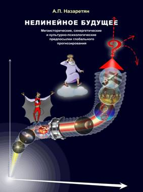
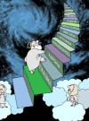
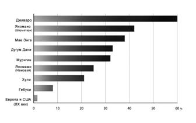
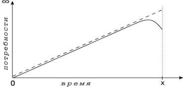
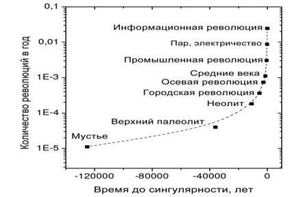
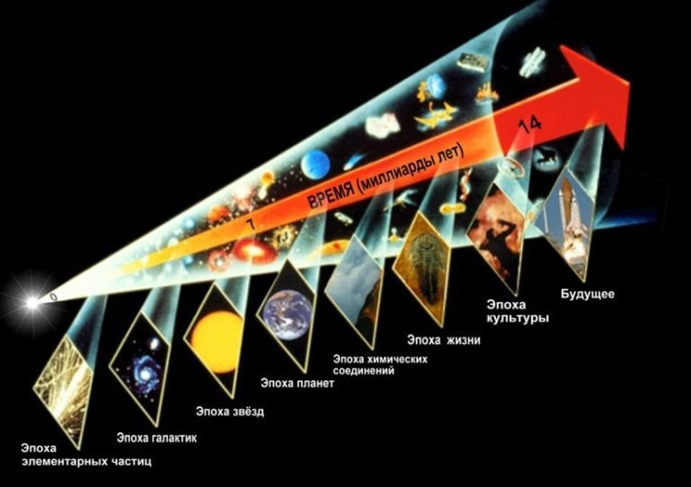

Страницы авторов "Тёмного леса"
Пишите нам! temnyjles@narod.ru
Издание четвёртое, переработанное и дополненное
Москва
АРГАМАК-МЕДИА
2017
Заказать или приобрести книгу "Нелинейное будущее" можно в издательстве «АРГАМАК-МЕДИА» (Оптовая и розничная продажа (499-163 27 18), в интернет-магазине «КОМБУК» (т. 903-763-09-35), а также в магазинах Москвы и других городов.
Не мне, но Логосу внимая...
Гераклит Эфесский

Рецензенты:
Доктор истор. наук А.В. Коротаев
Доктор биол. наук А.В. Марков
Канд. физ.-мат. наук А.Д. Панов
Доктор психол. наук, чл.-корр. РАН В.Ф. Петренко
Как показано серией независимых расчётов, на протяжении миллиардов лет природа и затем общество развивались по определённым векторам в режиме последовательного ускорения, а периоды между фазовыми переходами биосферной, прасоциальной и социальной эволюции сокращались в соответствии со строгим логарифмическим законом. При экстраполяции полученной функции выходит, что около середины XXI века скорость глобальных изменений должна устремиться к бесконечности, а промежуток между фазовыми переходами - к нулю.
Означает ли этот загадочный результат, что обозримое будущее ознаменуется беспримерным по крутизне переломом в развитии человечества, биосферы и, возможно, космоса? Каковы сценарии дальнейших событий? - Обвал? Смена векторов? Прорыв в качественно новые реальности? Как зависят перспективы мировой цивилизации от мыслей и действий каждого из нас?
Для обсуждения прогнозных моделей автор опирается на опыт Универсальной истории (Мегаистории), а также на новейшие концепции астро- и микрофизики, синергетики, культурной антропологии, психологии и эвристики. Подробно обоснован вывод о том, что сознание, успевшее сделаться планетарным фактором, способно перерасти в фактор космологический и что решающим препятствием для этого могут стать не пределы управляемости масс-энергетического мира, а самоубийственная неготовность разума совладать с растущим инструментальным могуществом. Исследованы перспективы, связанные с развитием мировоззрения и жизненных смыслов, которые могли бы способствовать устойчивости планетарной цивилизации в быстро изменяющихся условиях.
| | А.А.Пинкин "Два рукава Мегаистории" |
|  | И.Л.Максимов "Лестница универсальной эволюции" |
| О прогнозировании в шутку и всерьёз. Вступительные заметки | 5 |
| Введение. XXI век: градиент нелинейности | 28 |
| Часть I. Мегатренды и механизмы эволюции. Очерк Универсальной истории | 39 |
| Раздел 1.1. От Олдовайского ущелья до Кремниевой долины | 39 |
| Гл. 1.1.1. Векторы социально-исторической эволюции | 39 |
| §1.1.1.1. Общечеловеческая история: реальности и идеологемы | 40 |
| §1.1.1.2. "Прогресс" и "счастье": достоверны ли эмоционально-оценочные критерии исторического развития? | 56 |
| §1.1.1.3. Три вектора социальной эволюции: технология - демография - организация | 63 |
| §1.1.1.4. Четвёртый вектор эволюции: информация и интеллект. "Конец географии" | 69 |
| §1.1.1.5. Пятый вектор эволюции: ограничение физического насилия. Коэффициент кровопролитности как кросс-культурный показатель | 84 |
| §1.1.1.6. Модель техно-гуманитарного баланса и шестой вектор эволюции: виртуализация | 102 |
| Гл. 1.1.2. Фазовые переходы в истории и предыстории общества | 121 |
| §1.1.2.1. "Голубь с ястребиным клювом" и жизнеутверждающий невроз | 122 |
| §1.1.2.2. Культурное псевдовидообразование, грегарно-индивидуальный отбор и кризисы в палеолите | 136 |
| §1.1.2.3. Неолит: у истоков социоприродной и межплеменной кооперации | 150 |
| §1.1.2.4. Городская революция: "обычное" и письменное право | 163 |
| §1.1.2.5. "Мораль бронзы" и "мораль стали": начала критического мышления | 175 |
| §1.1.2.6. Предыстория и становление "индуст-реальности". Новый восход Запада. | 193 |
| §1.1.2.7. Век гуманизма? | 209 |
| §1.1.2.8. О сослагательном наклонении в истории. Через свободу воли - к эволюционной гиперболе | 227 |
| Гл. 1.1.3. Системно-синергетические механизмы эволюции | 233 |
| §1.1.3.1. Устойчивое неравновесие и типология кризисов. Закон отсроченной дисфункции; правило избыточного разнообразия | 234 |
| §1.1.3.2. Эволюционная динамика: закон необходимого разнообразия и закон иерархических компенсаций | 245 |
| §1.1.3.3. Феномен сложности: структура, энергия и информация. Интеллект как Демон Максвелла | 249 |
| Раздел 1.2. От Большого взрыва до Олдовая | 262 |
| Гл. 1.2.1. Мегаэволюция: планетарный и космический контексты истории человечества | 262 |
| §1.2.1.1. Конструкты всемирной, глобальной и Универсальной истории | 262 |
| §1.2.1.2. Версии Универсальной истории | 268 |
| §1.2.1.3. Универсальная истории, кибернетика и синергетика | 274 |
| Гл. 1.2.2. Преемственность эволюционных механизмов | 280 |
| §1.2.2.1. Коллизии устойчивого неравновесия в биосфере | 280 |
| §1.2.2.2. Расширение эволюционной гиперболы, и - ещё раз о сослагательном наклонении | 287 |
| §1.2.2.3. "Космологическая стрела" времени и её изгибы | 291 |
| Часть II. Гуманитарные детерминанты будущего | 298 |
| Раздел 2.1. Середина XXI века: загадка экстраполяции | 298 |
| Гл. 2.1.1. "Законы природы" и творческое сознание | 299 |
| §2.1.1.1. Вертикаль Снукса-Панова и Сингулярность Курцвейла. Сознание как агент универсальной эволюции | 299 |
| §2.1.1.2. Два ключевых вопроса стратегической прогностики | 305 |
| Гл. 2.1.2. Вызовы XXI века | 319 |
| §2.1.2.1. Что такое "глобальный кризис"? | 319 |
| §2.1.2.2. Гуманистическая культура и биология человека | 321 |
| §2.1.2.3. "Знания массового поражения" | 323 |
| §2.1.2.4. Аттракторы и сценарии | 329 |
| Раздел 2.2. Мировоззренческая парадигма сохранения | 345 |
| Гл. 2.2.1. Идеология versus цивилизация? | 345 |
| §2.2.1.1. Понятие идеологии. Идеология, религия и квазирелигии Нового времени | 345 |
| §2.2.1.2. Отсроченная дисфункция: групповое сознание оборачивается глобальной угрозой | 349 |
| §2.2.1.3. Тест на зрелость и "молчание Космоса". Естественный отбор планетарных цивилизаций? | 358 |
| Гл. 2.2.2. Смысл жизни - стержень глобальных проблем современности | 367 |
| §2.2.2.1. "Ценностный разрыв" в смыслообразовании | 367 |
| §2.2.2.2. Смыслы жизни и образы смерти в эволюционной развёртке | 370 |
| §2.2.2.3. Смыслообразующая парадигма Мегаистории | 384 |
| §2.2.2.4. Потребности и эмоции | 388 |
| §2.2.2.5. Проблема бессмертия, семантические дрейфы и языковая турбулентность | 393 |
| §2.2.2.6. ...И немного богословия на десерт | 404 |
| Об "историческом оптимизме". Заметки вдогонку | 410 |
| Примечания | 413 |
| Литература | 419 |
| Словарь терминов | 441 |
| Summary and Contents | 509 |
Искусство политика состоит в том, чтобы предсказать, что произойдет завтра, что через неделю, что через месяц, а потом убедительно объяснить, почему это не произошло.
Уинстон Черчилль
У человека не больше шансов вырваться из Настоящего, чем у рыбы, выпрыгнувшей из воды, - взмыть в небо.
Арнольд Тойнби
Позвольте же вас спросить, как же может управлять человек, если он не только лишён возможности составить какой-нибудь план хотя бы на смехотворно короткий срок, ну, лет, скажем, в тысячу, но не может ручаться даже за свой собственный завтрашний день?
М.А. Булгаков
В 1798 году вышло в свет первое издание ставшего впоследствии знаменитым труда "Опыт о законах народонаселения". Т. Мальтус доказывал, что население увеличивается в геометрической прогрессии, а пищевые ресурсы - в арифметической прогрессии и, следовательно, Англию ждёт голод. За прошедшие с тех пор более двух столетий количество людей как в Великобритании, так и во всём мире возросло почти на порядок, а массовый голод случался гораздо чаще по сугубо политическим и криминальным (войны, блокады, репрессии, коррупция), нежели по демографическим или экологическим причинам.
Вообще-то в последнем прижизненном издании книги мудрый Мальтус допустил теоретическую возможность преодолеть выявленную им тенденцию за счёт развития науки и технологий, хотя полагал это маловероятным. Его эпигоны до сих пор не замечают ни высказанной учителем оговорки, ни достоверно установленных позже свидетельств того, что перенаселение в прошлом также угрожало благополучию отдельных регионов и человечества в целом и не раз оборачивалось трагедиями. И что именно последовательное совершенствование производственных технологий (вкупе с изменениями в психологической и организационной сферах) обеспечило рост населения на протяжении тысячелетий...
В XIX веке европейцы с тревогой наблюдали, как улицы растущих городов погрязают в лошадином навозе, и многие учёные усматривали в этой тенденции главную проблему обозримого будущего. Г. Уэллс писал, что через пятьдесят лет улицы Лондона утонут в навозе "до второго этажа", а практичный Д.И. Менделеев обдумывал возможность использования навоза в промышленных масштабах. Уже существовали паровозы, и даже была изобретена телега на паровой тяге, однако последняя оказалась слишком неуклюжей и не могла (как, конечно, и паровоз) конкурировать с гужевым транспортом на городских улицах. А потом по улицам поехали автомобили, и вместо избытка навоза пришлось иметь дело с неприспособленностью дорог, с выхлопными газами и прочими совсем новыми проблемами.
Тогда же, в середине и второй половине XIX века, К. Маркс предрекал неуклонную пролетаризацию общества, относительное и абсолютное обнищание, отчуждение и дегуманизацию труда и как следствие прогрессирующего обострения классовой борьбы - захват власти промышленным пролетариатом. Его ближайший сподвижник Ф. Энгельс даже детализировал схему победоносного шествия пролетарской революции: "Немец начнёт, француз продолжит, англичанин закончит", - а все прочие страны (мировая периферия) уже автоматически устранят частную собственность по примеру лидеров.
Добавим, что Энгельс, воистину стратегический мыслитель, не ограничил себя ближайшими столетиями. Как многие его современники, он был убеждён, что наука близка к исчерпывающему знанию о законах природы и общества. Стало быть, кроме революционного перехода к коммунизму, ничто радикально не может измениться ни в технологии, ни в мышлении, ни в природе. В предисловии к "Диалектике природы" подробно рассказано, как "через сотни миллионов лет" счастливая жизнь людей при совершенном общественном устройстве "с железной необходимостью" сменится "нисходящей ветвью" истории: Солнце станет гаснуть, и жизнь на Земле, лишившись энергетической подпитки, постепенно иссякнет.
Похоже, это был своеобразный рекорд по интеллектуальным прыжкам в длину - конечно, если забыть о тогда ещё очень немногих отчаянных мыслителях, рассуждавших, не размениваясь на цифирь, о "вечном" прогрессе за счёт овладения космическим пространством. Рекорд продержался добрую сотню лет, пока новый для себя вид спорта не освоили профессиональные астрофизики. Там уже счёт пошёл на числа с непечатным количеством нулей, рядом с которыми энгельсовы сотни миллионов лет - просто детский срок. Астрофизические прогнозы часто также затрагивают судьбу res cogitans (мыслящей субстанции), а потому они непременно станут предметом нашего обсуждения. Что же касается Энгельса, то этот, как и прочие его прогнозы, построенные на вере в завершённость научного знания и, соответственно, исключавшие качественное развитие, остался образцом бескрылой футурологии...
На пыльных тропинках далёких планет останутся наши следы.
...И на Марсе будут яблони цвести.
Из советских песен 1960-х годов
Спустя несколько десятилетий после смерти авторитетнейшего философа и обществоведа советские юноши, заставшие полёт человека в космос, с недоумением читали его рассуждения о далёком будущем. Теперь уже в газетах писалось, что лет через двадцать на Луне будут построены кардиологические санатории для отдыха сердечной мышцы в условиях низкой гравитации. По радио ежедневно исполняли песни о близких космических путешествиях, и будущие мамы видели своих не рождённых ещё сыновей за штурвалами звездолётов. В глазах их внуков надежды на инопланетные приключения выглядели таким же курьёзом, как и прогноз о неизменных условиях человеческого существования через сотни миллионов лет...
Напротив, среди граждан западных стран в 1960-е годы были распространены катастрофические ожидания грядущей ядерной войны, которая логически последует за двумя предыдущими мировыми войнами и положит конец существованию человечества. Власти СССР бдительно оберегали своих сограждан от алармистских фильмов и прочих произведений загнивающей буржуазной культуры. Признавая потенциальную возможность атомного коллапса, наши пропагандисты указывали на три "оплота мира", сводящие угрозу войны к минимуму. Такими гарантами служили Советский Союз, социалистический лагерь и международное рабочее движение, призванное завершиться мировой революцией и тем самым устранить во`йны навсегда.
Сегодня мы знаем, что ядерной войны в XX веке удалось избежать, хотя в локальных конфликтах, сопровождавших "мирное соревнование двух систем", погибли десятки миллионов людей, а международное рабочее движение и его субъект - промышленный пролетариат - растворилось в "информационном обществе". Потерпели крах и большинство коммунистических режимов.
...А что будет, если ядерной войны не будет?
Д.С. Лихачёв
Для того чтобы человечество не нарушало хрупкого баланса ресурсов, население планеты при нынешнем уровне технологий должно быть уменьшено раз в десять... А такое, вероятнее всего, невозможно. Значит, предсказанная Мальтусом катастрофа в той или иной форме неизбежна.
Н.Н. Моисеев
С конца 1960-х годов, когда катастрофические ожидания ядерной войны несколько улеглись, "футурологи" стали задумываться над новыми сюжетами. Под мощным интеллектуальным влиянием Римского клуба специалисты по энергетике, экологии и медицине состязались в расчётах того, на сколько десятилетий ещё хватит нефти, газа, чистой воды, пахотной почвы и прочих трудновозобновимых ресурсов при их растущем потреблении. Пробудившийся призрак Мальтуса принялся бродить по Европе и по всему миру. Земля была уподоблена космическому кораблю со строго ограниченными запасами, исчерпание которых приведёт к неминуемой гибели его пассажиров. Концепции "устойчивого развития" (sustainable development) чаще всего походили на врачебные рекомендации по продлению агонии обречённого пациента, причём акцент во многих версиях ставился на необходимости форсированно сократить население планеты.
"Аист обогнал плуг", - писал автор бестселлера "Популяционная бомба" П. Эрлих, и призывал к "контрольному отстрелу аистов" в виде принудительной стерилизации мужчин, имеющих двух и более детей. В 1968 году одна американская газета посвятила целую полосу своеобразной "социальной рекламе". На странице помещена фотография младенца, а под ней текст: "Ребёнок - угроза миру" - и... подписи всемирно известных учёных. "Если человек угрожает природе, то надо уничтожить человека" - откровенничали экологи-экстремисты. А уже в 2005 году вышла в свет книга природолюбивого философа Д. Бенатара с обескураживающе красноречивым заглавием: "Лучше бы нас никогда не было".
Насчёт добровольной самоликвидации человечества, принудительной стерилизации и контрольного отстрела господа, конечно, погорячились, но сам вывод о губительной перенаселённости планеты ставил на повестку дня оперативные вопросы: как, на сколько и кого следует сокращать? Уважающие себя аналитики не обращались к войне как средству депопуляции, а в ряде случаев даже оговаривали, что это средство "недостаточно эффективно". Поэтому в данном пункте концепции либо зияли красноречивые пустоты, либо авторы откровенно признавали проблему неразрешимой и потому мировую цивилизацию - обречённой. Проекты, связанные с ростом образования и благосостояния в целях снижения рождаемости в Африке, Азии и Южной Америке, откладывали решение проблемы в долгий ящик - а ведь экологи предписывали радикальную и срочную депопуляцию. Отчаянные головы предлагали самые экзотические проекты. Например, биохимически регулировать пол зародышей так, чтобы мальчики и девочки рождались в соотношении 9 к 1 - тогда в следующем поколении рождаемость кардинально уменьшится. Или подмешивать в пищу, в воду, даже распылять в воздухе вещества, многократно снижающие вероятность зачатия.
Казалось бы, при нерешённости первого, "технического" вопроса следующие два становятся пустыми абстракциями. Но как раз они вызвали более острые противоречия.
Учёные труды, газетно-журнальные публикации и речи политиков наполнились различными вариантами идеи "золотого миллиарда". Приводились также расчёты, доказывающие необходимость десятикратного, стократного и даже шестисоткратного (!) уменьшения населения Земли.
За счёт кого же? Поначалу само собой разумелось, что необходимо срочно сокращать бурно растущее население "третьего мира". Но "на местах" нашлись доморощенные умники, которые, признавая важность глобальных депопуляционных мер, доказывали, что это касается соседей по планете, тогда как в их собственной стране соотношение населения и ресурсов "соответствует концепции золотого миллиарда".
Впрочем, и идеологически беспристрастные учёные испытывали нормальную человеческую неловкость от самой постановки вопроса о спасении планеты путём её избирательного освобождения от "человеческого груза". В пику адептам эко-расистских теорий были приведены расчёты, демонстрирующие, что средний гражданин США потребляет в 150 раз больше энергии, чем житель Боливии, Эфиопии или Бангладеш, и на протяжении жизни наносит в 280 раз больший ущерб природе, чем житель Чада или Гаити, и т.д. Не следует ли из этого, что для сохранения ресурсов Земли целесообразнее было бы "избавить" её от населения развитых стран?..
Это пример того, как польза от линейного прогноза, быстро превращающегося в газетную сенсацию, перекрывается издержками в виде нагнетания истерии, взаимных подозрений, идеологической и политической напряжённости. Такую же роль играли и разрекламированные публикации американских политологов в конце 1980-х и начале 1990-х годов. Сначала Ф. Фукуяма уведомил публику, что очень скоро, с поражением коммунизма и победой либеральной демократии во всём мире, наступит преждевременно объявленный ещё Гегелем "конец истории" - будет достигнуто идеальное состояние общества, в котором перестанут происходить существенные события. Через четыре года С. Хантингтон облил затосковавших в эйфории поклонников Фукуямы ушатом холодной воды. Оказалось, дефицит событий человечеству не грозит. Напротив, оно в скором будущем окончательно разделится по религиозному основанию на несколько враждебных друг другу "цивилизаций", войны между которыми и составят содержание мировых процессов.
Оба автора потом существенно уточнили, а то и радикально изменили взгляды. Однако их первоначально безальтернативные сценарии будущего успели, каждый по-своему, взбудоражить политические настроения...
Да простится нам лёгкая ирония по поводу великих и невеликих пророков прежних лет. Можно ведь сказать и иначе. Мальтус впервые концептуально зафиксировал и математически обосновал проблему, которая до него веками эмпирически решалась очень жестокими способами (во`йны, голод, уничтожение родителями "лишних" детей и т.д.). Маркс и Энгельс предвидели, что обостряющиеся классовые противоречия обернутся политическими революциями. Первые доклады Римскому клубу предвосхитили серию экологических катастроф и новых ресурсных дефицитов.
А можно вспомнить и факты поразительной прозорливости. В XIII веке (когда ещё в помине не было идеи или ценности технического прогресса!) философ Р. Бэкон вообразил, как люди построят летающие повозки, движимые "неизречёнными силами, без каких-либо живых существ в упряжи". В середине XIX века Ж. Верн описал мир, в котором есть автомобили с керосиновыми двигателями, электрические счётные машины, цветные телевизоры и вертолёты. Он во многих деталях представил полёт на Луну, вплоть до габаритов корабля и даже места старта космонавтов (указанный им город во Флориде расположен в 150 километрах от мыса Канаверал). Правда, корабль отправлялся в космос при помощи огромной пушки.
Тогда же геолог Ч. Лайель, дискутируя с оппонентами социального эволюционизма, обозначил ключевые технологические достижения на ближайшие полтора столетия. Историк и социолог А. де Токвиль смоделировал политические отношения в XX веке, угадал ведущих игроков (Россию и США) и даже психологические стили их активности на международной арене...
Но общим для всех прогнозов, оказавшихся на поверку более или менее правдоподобными, оставалось пренебрежение к такой стилистической фигуре, как условное придаточное предложение. Оно иногда использовалось в полемических целях ("если бы оппонент был прав... а на самом деле"), но практически никогда - в качестве методологического приёма.
Едва ли не все исторические концепции долгое время сходились на тезисе, избавляющем от излишних умственных усилий и служившем излюбленной отговоркой школьных учителей: "История не знает сослагательного наклонения". Хотя даже правоверные марксисты кляли почём зря придуманный П. Лафаргом термин "экономический детерминизм" и дружно рассуждали о роли личности в истории, детерминистское миропонимание настолько впиталось в кровь и плоть обществоведов, что распространилось и на будущее. Мысль о вариативности событий, юмор и самоирония третировались как моветон, и слово "если" оставалось почти таким же неприличным в научном дискурсе, как выражение "если бы". Вследствие этого неписаного запрета суждения о будущем строились в форме не мягкого веера возможностей или паллиативных сценариев, а жёстких предсказаний. Которые, если отсечь приличествующую эпохе рационалистическую аргументацию, по жанру сильно тяготели к пророчеству.
Ко всем обозначенным выше вопросам мы будем возвращаться в основной части книги. Пока же упоминание о них служит поводом обсудить, что такое прогнозирование и от чего зависит его достоверность.
Способность воспринимать и оценивать время не является приобретением человека, а получена им по наследству от его животных предков, и в основе этой способности лежат механизмы так называемого "опережающего отражения".
П.К. Анохин
Интуиция - дочь информации.
К.К. Платонов
Si fallor, sum
(Если я ошибаюсь, значит, я существую).
Св. Августин
Прогнозирование (опережающее отражение; моделирование будущего) - имманентное свойство всех живых организмов, включая растительные. И уже растение рискует опасно ошибиться в прогнозе. Известный физиолог П.К. Анохин приводил характерный пример. В разгар чересчур интенсивного "бабьего лета" садовые деревья раскрывают почки в ожидании грядущей весны. Опытный садовод знает, что надо срочно принимать меры по утеплению деревьев, иначе приближающиеся холода их погубят.
Биологическая эволюция сопровождалась совершенствованием отражательных процессов, и уже у высших животных различаются два параметра опережающего отражения: констатирующая модель (например, прогнозируется траектория движения потенциальной добычи) и план активного вмешательства в ход событий для достижения желаемой цели. Коллега Анохина, Н.А. Бернштейн, обозначил её как "модель потребного будущего".
Возрастание временно`го диапазона и детальности опережающего моделирования - существенный вектор не только биологической, но, как мы далее увидим, и социально-исторической эволюции. Определяются же эти способности соответствующими свойствами живой памяти, которая изначально представляла собой не пассивную фиксацию следов, а сложную операцию по переносу опыта в будущее; поэтому между глубиной памяти и горизонтом антиципации имеется не просто корреляционная, но тонкая причинная зависимость. На задачу прогнозирования функционально ориентированы все психические процессы - от элементарных ощущений до высших мыслительных процедур, причём иных средств заглянуть вперёд кроме экстраполяции наличного опыта не имеют ни растения, ни животные, ни люди. Добросовестные мистики также стремятся уловить связи между признаками ради предсказания событий, а шарлатаны используют опыт практической психологии (подчас кристаллизованный в блестящую интуицию) для манипуляции поведением людей. Один из аспектов манипулятивной техники - порождение текстов с такой высокой степенью неопределённости, что в них можно "вчитать" любые последующие события...
Идеи, овладев массами, превращаются в материальную силу.
Карл Маркс
Прогноз никогда не бывает нейтральным. Правилен он или неправилен, прогнозирующий анализ всегда вызывает побуждение к действию.
Карл Ясперс
С тех пор как прогнозирование превратилось в самостоятельную умственную деятельность с собственной мотивацией, его констатирующая и целеполагающая фазы отчётливо диверсифицировались. Но ещё ранее, в древнем каменном веке, обозначился исключительно человеческий механизм, который Р. Мертон назвал "самоисполняющимся пророчеством" (self-fulfilling prophecy) - индивид или племя под суггестивным давлением предсказания бессознательно провоцирует ожидаемые события, часто весьма неблагоприятные для себя. Например, в этнографической литературе приводятся случаи, когда проклятие шамана приводило к смерти молодого здорового человека.
Врачам и психологам-клиницистам хорошо известно, что подобными эпизодами изобилует и наш просвещённый век. Не составляет секрета и влияние прогнозов на ход масштабных исторических событий. Это не только религиозно-мистические или эзотерические проекты, но и теории, представленные в научной форме. Само учение о всемирной пролетарской революции являет яркий пример такого мотивирующего прогноза. Хотя следует добавить, что марксистские, расистские и неомальтузианские модели будущего (и примеры их драматического воплощения) сыграли также и предостерегающую роль, помогая во многих случаях предотвратить худшие варианты развития событий. Скажем, опасение возможных пролетарских революций (особенно после драматических событий в России) побуждало правящие классы к эффективному поиску компромиссов между трудом и капиталом. Кошмарный опыт нацизма выработал у европейцев иммунитет к теориям расовой исключительности. А шокирующие расчёты, приведённые в первых докладах Римскому клубу, наложившись на наблюдаемые последствия техногенных катастроф, способствовали развитию экологического сознания как политических и экономических лидеров, так и широкой публики. Во всех этих случаях сработал противоположный эффект прогнозирования, о котором речь далее.
По происхождению своему "законы природы" суть ограничения, которые мы предписываем нашим ожиданиям.
Эрнст Мах
Утверждения историка являются (скрытыми) предсказаниями.
Артур Данто
Общение есть обобщение.
Л.С. Выготский
Мысль изречённая есть ложь.
Ф.И. Тютчев
Отмечая прогностическую ориентированность отражения в живой природе, обратим особое внимание на то, как эта целевая функция представлена в человеческом мышлении и в коммуникативно-семантическом пространстве социальной памяти.
Психологи и методологи науки почти независимо друг от друга заметили, что всякое обобщение - основа категоризации, осмысления мира и устойчивого человеческого контакта - содержит экстраполяционный компонент, даже если суждение относится явно к прошлому. "Наполеон умер 5 мая 1821 года" - утверждая это, мы подразумеваем, что любые документы, обнаруженные в будущем, не вступят в противоречие с данным утверждением, а иначе их придётся квалифицировать как подделки.
Чем выше уровень обобщения, тем легче просматривается его прогностический мотив. Формулируя на основании проведённых экспериментов и наблюдений некоторую закономерность, естествоиспытатель утверждает, что в последующем эксперименты (наблюдения) при заданных условиях приведут к аналогичному результату. А если такие-то параметры ситуации изменятся, то иным будет и результат. Устремлённость в будущее столь же глубоко закодирована в обобщении, как его социальная адресованность и его сослагательная подоплёка.
В действительности сохраняется вероятность того, что учёный смог отследить не все условия эксперимента и изменение одного из неучтённых параметров изменит картину. Когда выяснилось, что, вопреки интуитивному убеждению И. Ньютона, скорость распространения сигнала конечна, его универсальная механика превратилась в предельный частный случай релятивистской механики. После того как были продемонстрированы эффекты сверхпроводимости, пришлось внести дополнительные уточнения в формулировку закона Ома, связанные с температурой проводника и т.д. Во многих случаях уже сегодня нельзя исключить, что простой физический эксперимент дал бы иной результат в центре Галактики - при высоком скоплении гравитационных масс, - вблизи чёрной дыры или на ранних стадиях эволюции Вселенной. Показано, что современные экономические законы не срабатывают в обществах с "не-западным" менталитетом или находящихся в психологически возбуждённом состоянии, и совершенно неясно, насколько и как они могут сохраняться в перспективе.
Драматическая ограниченность всякого конечного опыта обозначена в эпистемологии как принцип неопределённости заблуждения. Этот принцип дезавуирует кантовскую демаркацию "относительной" и "абсолютной" истин постольку, поскольку в исторически конкретный срок мы неспособны выделить те аспекты модели, которые безоговорочно соответствуют любому будущему опыту.
Но, если бы исследователи, опасаясь неизбежной критики "из будущего", стали избегать потенциально всегда уязвимых выводов, то наука свелась бы к скучным протоколам лабораторных экспериментов и непосредственных наблюдений. В таком случае вероятность недостоверных утверждений значительно снизилась бы, хотя, строго говоря, не свелась бы к нулю, поскольку констатация, выраженная языковыми средствами, всё равно несёт в себе следы адресованного обобщения.
Пожелай сам Господь Бог исчерпывающе изложить знание даже о строго очерченном предмете в форме дискретного текста, ему для этого потребовалось бы бесконечное количество слов. Прибегнув же к чувственному образу, в котором мотивы обобщения и экстраполяции скрыты глубже, чем в конструкциях словесных, приходится платить за это беспредельной вариативностью индивидуальных пониманий. Поэтому человеку не приходится уповать на небесное просветление, а формирование образов будущего, как и прошлого и настоящего, столь же потребно уму, сколь отмечено проклятьем исторической ограниченности...
Ничто не стареет так быстро, как будущее.
Станислав Лем
Упомянутые в начале Заметок картины будущего выглядят по прошествии времени курьёзными из-за их линейности. В свою очередь, линейность обусловлена прежде всего доминирующим идеалом и критерием научности - ориентацией на "динамические" (не "статистические") детерминации. На эту методологическую установку накладывались ещё два решающих ограничения. Во-первых, краткость ретроспективной дистанции, из которой выводились экстраполятивные ожидания, т.е. наиболее яркая текущая тенденция переносилась в неопределённое будущее. Во-вторых, маломерность (недостаточная системность) аналитической модели: экстраполяция строилась на основании изолированных дисциплинарных знаний - по экономике, энергетике, демографии, экологии и т.д. И, в любом случае, теоретики дружно не жаловали всё, что относится к сфере "психологии".
Разумеется, самые выдающиеся умы были не в силах устранить указанные "ограничения", не располагая той масштабной (охватывающей почти 14 млрд. лет), детальной и объёмной (демонстрирующей социо-природные, экономико-психологические и прочие связи) картиной прошлого, какую даёт современная наука. В сочетании же с методологической установкой эти ограничения вели к недооценке привходящих факторов, способных влиять на ход событий, и затемняли творческий характер эволюции. Отсюда и несвойственное живому прогнозированию жёстко "пророческое" содержание: образы будущего окрашивались в мрачные или в радужные тона, теряя исконно присущее им напряжение проблемности.
Но Психология - дама преехидная. Она посмеивается в платочек до тех пор, пока мы, забыв о ней, рассуждаем о прошлом и полученные выводы трудно подвергнуть попперовской процедуре "фальсификации". И хохочет до слёз при попытке без консультации с ней заглянуть хоть чуть-чуть вперёд. Действительно, в этом случае даже краткосрочные локальные прогнозы в сфере политики и экономики то и дело оказываются трагикомически провальными, подрывая престиж прогностической работы, а с ней и социальной науки вообще.
Со своей стороны, "идеалисты", склонные усматривать за историческими событиями преимущественно волевые решения выдающихся личностей, скептически относятся к научному прогнозированию - капризы гения непредсказуемы. Так образовалась печальная дилемма: либо "бездушные" прогнозы, либо "душевные" гадания. Впрочем, то же самое противоречие (между естественнонаучными и "гуманистическими" школами, аналитическими процедурами и "эмпатией") до сих пор будоражит и саму психологическую науку.
Существенный прорыв в методологии комплексного прогнозирования связан с моделями самоорганизации (в разных странах они получили специфические интегративные названия: синергетика, теория диссипативных структур, теория хаоса или теория сложности). По мере того как обнаруживались единые механизмы возрастания и сохранения сложности в системах различного уровня организации, удавалось установить и классифицировать основные угрозы устойчиво неравновесным процессам, т.е. механизмы обострения и преодоления кризисов. Используя универсальную модель, прогнозист включает в её контекст сведения о специфике исследуемой системы, о её состоянии и текущих тенденциях.
Пророк огорчает народ и власть, а лжепророк радует их.
Иезекииль
Господа! Если к правде святой
Мир дороги найти не умеет -
Честь безумцу, который навеет
Человечеству сон золотой!
Пьер Беранже
Не бывает неразрешимых проблем, но бывают неудобные решения.
Александра Маринина
...И тогда мы сможем предсказывать всё, чем не можем управлять, и управлять всем, что не можем предсказывать.
Джон фон Нейман
В феврале 1914 года отставной российский министр, консерватор и монархист П.Н. Дурново подготовил секретную записку Императору с просьбой не ввязываться в войну с Германией (которая уже у многих была на устах), ибо это приведёт к краху Российской Империи. И с потрясающей достоверностью изложил, как разрушение державы будет происходить в случаях успешного и неуспешного хода событий на фронте. Рискну утверждать, что это была первая в мировой практике и, безусловно, гениальная попытка сценарного моделирования, предвосхитившая синергетическую методологию, но, к несчастью, не нашедшая тогда достойного адресата.
Квинтэссенция системно-синергетического метода в том, что вариативные образы будущего возвращают ему исконно присущее живому прогнозированию "напряжение проблемности".
При этом работа начинается построением линейных моделей, позволяющих отследить неизбежную в будущем фазу неустойчивости (кризис), связанную с исчерпанием ресурсов линейного роста по тем или иным значимым параметрам. Такую фазу называют бифуркацией или, точнее, полифуркацией, поскольку за ней просматриваются несколько сценариев изменения в сторону одного из новых квазиустойчивых состояний - аттракторов. Заметим, даже в фазе неустойчивости с системой может произойти не "всё что угодно": число аттракторов всегда конечно и, как правило, невелико. Но после того как начались процессы в сторону одного из них, перейти к другому аттрактору "изнутри" системы уже практически невозможно.
Различают простые аттракторы, предполагающие изменения в сторону упрощения и деградации системы (чем обеспечивается устойчивость метасистемы, элементом которой она является), и странные аттракторы - устойчивые состояния на соразмерном или на более высоком уровне неравновесия со средой, обеспеченные ростом внутренней сложности и "интеллектуальности" системы. Синергетика концентрирует внимание на факторах малозаметных и труднопредсказуемых (малые флуктуации), и вот здесь, если речь идёт о социальной системе, решающую роль играет психология в её многообразных проявлениях. Кроме того, в рамках синергетической модели, прогнозист обязан при описании оптимального сценария обозначить неизбежно сопряжённые с ним издержки (цена прогресса); поэтому даже относительно благоприятное развитие событий рассматривается как паллиатив.
Завершающий этап - практические проекты. Если удалось зафиксировать "странный аттрактор", то разрабатываются, во-первых, рекомендации по смягчению полифуркационной фазы за счёт сознательной подготовки. Во-вторых, программа действий, направленных на реализацию благоприятного сценария, включая готовность к необходимой "плате за успех". Если способов избежать катастрофы не найдено, то рассматриваются возможности смягчить её переживание и её последствия, а также максимизировать возможные позитивные последствия разрушения изучаемой системы для метасистемных процессов.
Далее остаётся самая малость - убедить себя и других в том, что действовать следует именно так, поскольку "синергетические" рекомендации, в отличие от утопий, почти всегда разочаровывают. В итоге прогнозист рискует оказаться в положении умненькой принцессы Кассандры, которую обиженный бог Аполлон лишил дара убеждения, садистски сохранив ей дар предвидения и превратив тем самым в городскую сумасшедшую. А Данте Алигьери и вовсе поместил прорицателей в Восьмой (предпоследний) круг ада.
Синергетика учит трезвому пониманию того, что "прогрессивное" решение всегда есть выбор меньшего из зол, и в книге мы не раз это продемонстрируем. В общем, грамотно выстроенный научный прогноз реализует альтернативный механизм "самоНЕосуществляющегося пророчества" (self-NON-fulfilling prophecy), отсекая как алармистские, так и утопические установки. Например, конструктивно воспринятое предупреждение о возможном заболевании или развитии болезни служит не поводом к панике, а основанием для осознанного пересмотра жизненных тактик, сводящего угрозу к минимуму. Или помогает мужественно принять неизбежное, максимально использовав достоинства даже неблагоприятного сценария, а то и убежав в "сон золотой"...
Сказанное особенно важно при изучении глобальных процессов.
Мы, человечество, находясь в разгаре эволюционного кризиса, вооружены новым фактором эволюции - осознанием этого кризиса.
Маргарет Мид
За последние полстолетия тема глобальных кризисов, эволюционных тупиков и вопрос о том, есть ли у человечества будущее, сделались популярнейшей темой научных и околонаучных обсуждений. Строя прогнозные сценарии, мы постараемся максимально учесть те недочёты в методологии прогнозирования, которые отмечены выше.
Анализ событий в длительной исторической ретроспективе показывает, что люди многократно переживали тяжёлые кризисы и катастрофы, спровоцированные их собственной деятельностью, причём в ряде случаев такие кризисы и катастрофы приобретали глобальный характер. Более того, задолго до появления людей активность живого вещества провоцировала глобальные катастрофы, в результате которых погибли более 99% существовавших на Земле видов. Вместе с тем каждый раз в биосфере, а затем в антропосфере происходили неординарные трансформации, обеспечивавшие восстановление динамической устойчивости.
Исследуя механизмы сохранения и восстановления устойчивости, оборачивавшиеся "прогрессивными" изменениями природы и общества, мы сталкиваемся с парадоксальными обстоятельствами, которые в совокупности своей складываются в загадку существования.
Единственное нормальное состояние вселенной соответствует её "тепловой смерти".
Людвиг Больцман
Самое удивительное свойство этого мира в том, что он существует.
Альберт Эйнштейн
Мы можем... заключить, что необратимость проистекает из каких-то субъективистских допущений или "ошибок"... Тогда, будучи живыми существами, мы сами являемся своего рода "ошибками".
Илья Пригожин
С точки зрения строго классического естествознания, Вселенная, в которой мы живём и которую наблюдаем, не должна существовать. Она не должна была эволюционировать на протяжении миллиардов лет от более вероятных к менее вероятным (по термодинамическому критерию) состояниям, т.е. в сторону всё более сложных и устойчиво неравновесных систем. Значит, в ней не должны были появиться жизнь, общество, культура и личность. А если бы столь невероятно сложные системы и образовались вследствие случайных флуктуаций, они должны были быстро разрушаться, исключая длительный процесс прогрессивной эволюции. В итоге собственное существование выглядит для классического физика как досадное недоразумение ("своего рода ошибка"), нарушающее стройную естественнонаучную картину мира...
В XX веке загадка существования (человека, общества, природы) всё более обострялась. Накапливались свидетельства того, что не только культура, общество и живая природа, но и физическая Вселенная последовательно изменялась, причём в калейдоскопе многомерных изменений прослеживается удивительный и "странный" вектор - к живому веществу, к человеку, к информационной цивилизации (и куда-то далее?). Обилие неопровержимых свидетельств такого рода поставило естествоиспытателей перед необходимостью переосмыслить некоторые методологические основания.
Помощь, как часто бывает, пришла с неожиданной стороны.
Dubito, ergo cogito... Cogito, ergo sum
(Сомневаюсь, значит, мыслю... Мыслю, значит, существую).
Рене Декарт
Известна старинная философская игра: солипсист доказывает, что люди и прочие предметы не существуют сами по себе, а являются лишь комплексами его ощущений. Если он последовательно защищает свой парадоксальный тезис, то доказать обратное очень трудно. Небезупречны и "осязаемые аргументы" типа удара палкой, ибо боль - это тоже субъективное переживание.
Логическая неуязвимость такой позиции издавна оценивалась как "позор философии", а материалисты и теперь стремятся просто её игнорировать. Ведь если недоказуема даже реальность близлежащего предмета, то суждения о природе звёзд и атомов, о жизни древних цивилизаций или динозавров - всё это и вовсе "интерпретации", построенные на косвенных доводах. Здесь уже не просто вопрос об исторической ограниченности и неполноте всякого формального знания - в данном контексте проблема верификации полностью лишается смысла.
Так возможно ли безоговорочно обосновать хоть какой-то правдоподобный тезис, оставаясь в рамках формальной логики? Оказывается, есть, по меньшей мере, один аргумент, от которого не может увернуться даже самый фанатичный солипсист, и такой аргумент был найден ещё в XVII веке. Задав вопрос: "А существуешь ли ты сам?", - оппонент разрушает позицию тотального скептицизма. Однозначно утвердительный, равно как однозначно отрицательный ответ лишают её внутренней последовательности (Почему ты уверен, что существуешь? А если нет, то чьи ощущения?). Выразив же по инерции сомнение и в собственном существовании, солипсист попадает в концептуальную ловушку, выраженную формулой Р. Декарта, приведённой в эпиграфе.
Вот из этого, казалось бы, досужего умственного баловства и выросли основания постнеклассического научного мировоззрения.
Cogito, ergo mundus talis est
(Я мыслю, значит, таков мир).
Брандон Картер
Обнаружилось, что "Я существую" - это самое последнее, в чём способен усомниться мыслящий субъект, и единственное, в чём он может быть абсолютно уверен. Таким образом, факт собственного существования исследователя превращается в отправную точку фундаментальных научных построений и критерий их достоверности, на что и обратил внимание известный астрофизик Б. Картер. Отсюда любая физическая (биологическая, социологическая и т.д.) теория, противоречащая факту моего нынешнего существования, по определению ложна или, мягче говоря, неполна и нуждается в дополнительных гипотезах.
Например, безуспешные попытки опровергнуть или хотя бы ограничить сферу применимости второго начала термодинамики (закона возрастания энтропии) породили популярную среди учёных шутку: "Термодинамика - это старая властная тётка, которую все недолюбливают, но которая всегда оказывается права". Закон возрастания энтропии - единственный известный из классической физики асимметричный закон, который поэтому считается основой необратимости. Проще говоря, сущность физического времени в том, что мир безвозвратно становится всё "хуже" - примитивнее, хаотичнее и однообразнее. И, следовательно, наше пребывание в этом мире следует признать абсолютно противоестественным и противозаконным!
По текстам XIX и начала XX века видно, что и тогда учёные испытывали когнитивный диссонанс из-за очевидной нестыковки между выводами физики, с одной стороны, и данными эволюционной биологии, антропологии и социологии - с другой. Но естественнонаучная парадигма заставляла мириться с подобными нестыковками, отдавая безусловный приоритет физическим наблюдениям и экспериментам: спасали ссылки на незамкнутость бесконечной стационарной вселенной и случайность локальных космических флуктуаций типа эволюции в Солнечной системе.
Естествоиспытатель XXI века, знакомый с обстоятельствами универсальной эволюции, уже не может довольствоваться отговорками такого рода. Для него загадка существования, загадка устойчивости и загадка эволюции сопряжены самым тесным образом.
Признавая фундаментальную роль законов термодинамики, он обязан соотнести их с данными о последовательных превращениях, ведущих от кварк-глюонной плазмы первых секунд существования Метагалактики к учёному, осмысливающему свои универсальные истоки. Астрофизикам приходится различать "термодинамическую стрелу времени" и "космологическую стрелу времени" и обсуждать методы их непротиворечивого согласования. Биофизики, биохимики и математики соревнуются в построении интегральных моделей, объясняющих механизмы спонтанного образования и сохранения сложных систем. Со своей стороны, биологи-эволюционисты, а также антропологи, социологи, психологи, искусствоведы и прочие "гуманитарии" примеряют их к собственным предметам и обогащают новым материалом. Фундаментальная наука, гносеологически и онтологически ориентированная на субъект знания, обретает как минимум два характерных антропоцентрических акцента: историзм и психологизм. Наряду с моделями самоорганизации, в ней выделилось интегральное направление - Универсальная (Большая) история или Мегаистория, - которое объединяет учёных всех специальностей, исследующих мега-тренды и механизмы эволюции.
Когда с изобретением искусственного оружия внезапно открылись новые возможности для убийства, прежнее равновесие между сравнительно слабым торможением агрессии и столь же слабыми возможностями убийства было резко нарушено.
Конрад Лоренц
Продолжим пример, выделив одну из граней загадки существования - сохраняющаяся на протяжении миллионов лет жизнеспособность рода Homo.
Биологи утверждают, что у животных сила торможения внутривидовой агрессии в норме пропорциональна естественной вооружённости ("ворон ворону глаз не выклюет") - это предохраняет популяции от самоистребления. Антропологи добавляют, что уже у далёких предков человека, начавших производить искусственные орудия, этот баланс был нарушен; следовательно, по законам природы, они были обречены на гибель. Наконец, из истории известно, что убойная мощь технологий последовательно возрастала от галечных отщепов Олдовайского ущелья (которыми Homo habilis разбивали друг другу черепа) до баллистических ракет с ядерными боеголовками. Между тем в совокупности эти справедливые утверждения явно противоречат тому факту, что автор и читатель этого текста появились на свет.
Работая в парадигме постнеклассической науки, мы не имеем права пренебречь столь вопиющим противоречием. Для его разрешения можно обратиться к силам потустороннего или инопланетного происхождения. Если же исследователь признаёт презумпцию естественности, он должен предположить, что гоминиды выработали эффективный механизм, который компенсировал рост разрушительной мощи технологий и который до сих пор был недостаточно изучен антропологами, социологами и психологами. От того, насколько мы поймём механизмы восстановления социальной устойчивости в прошлом, может зависеть перспектива сохранения планетарной цивилизации в будущем...
И здесь вырисовывается ещё один вопрос, ответ на который по недоразумению считается тривиальным - о различии между прошлым и будущим.
...Для нас, убеждённых физиков, различие между прошлым, настоящим и будущим - всего лишь иллюзия, хотя и навязчивая.
Альберт Эйнштейн
- Да, человек смертен, но это было бы ещё полбеды. Плохо то, что он иногда внезапно смертен, вот в чём фокус! И вообще не может сказать, что` он будет делать в сегодняшний вечер.
"Какая-то нелепая постановка вопроса..." - помыслил Берлиоз и возразил:
- Ну, здесь уж есть преувеличение. Сегодняшний вечер мне известен более или менее точно. Само собой разумеется, что, если на Бронной мне свалится на голову кирпич...
- Кирпич ни с того ни с сего, - внушительно перебил неизвестный, - никому и никогда на голову не свалится.
М.А. Булгаков
Как мы убедились, это различие кажется элементарным только на первый взгляд: прошлое однозначно, определённо и знание о нём может быть (в принципе) окончательным, а будущее неопределённо, вариативно и т.д.
Учёные и философы прагматической школы, начиная с Э. Маха и Ч. Пирса, настаивали на том, что и обобщения естествоиспытателя, и утверждения историка являются косвенными прогнозами и уже по этой причине (не говоря о целом ряде других) суждения о прошлом носят принципиально незавершённый характер. К сожалению, в XX веке Советский Союз, измученный идеологическими кульбитами, побил все рекорды по этой части, на что не преминул обратить внимание насмешник Черчилль: "Россия - страна с непредсказуемым прошлым". Разумеется, великий англичанин лукавил, притворяясь, будто не догадывается, что аналогичный тезис можно обосновать на примере любой другой страны, включая и его родину. Параметры непредсказуемости становятся особенно очевидными по мере того как растёт популярность альтернативных моделей истории.
Легитимация сослагательного наклонения ("Как развивались бы события, если бы в тот или иной переломный момент были предприняты иные действия?") способствовала формированию исторической социологии, превратив науку о прошлом из повествовательной в номотетическую - нацеленную на поиск устойчивых причинных зависимостей. Вместе с тем совершенствующиеся методы "ретропрогнозирования" легализовали оценочные суждения по поводу социальных событий и действий исторических персонажей и окончательно придали суждениям о прошлом вероятностный компонент. А в наиболее изысканных трактовках квантовой космологии ("принцип соучастия" Дж.А. Уилера) сама онтология прошлого формируется текущими событиями.
Сегодня мало кого удивит замечание о том, что будущее, настоящее и прошлое равно даны нам в вероятностных моделях. Действительное же различие между ними в том, что, независимо от правдоподобия, одни модели имеют гарантированный "денотат", а другие нет.
Моя мыслительная активность придаёт прошлому и настоящему мускулатуру существования и вместе с тем служит критерием их содержания: история общества, природы и космоса может быть только такой, в которой обеспечено моё нынешнее бытие. Напротив, будущее не подаёт нам никаких сигналов существования, позволяющих как-либо их "интерпретировать". Только экстраполяция наличного опыта даёт повод предположить, что через минуту после написания настоящих строк я сам со своими образами будущего, мой род (человечество), моя планета и моя Вселенная по какой-либо причине вместе или по очереди не провалимся в тартарары.
Это тоже, конечно, не новая постановка вопроса. Современники Гераклита Эфесского называли его Плачущим: философа мучила мысль о том, что мир, образованный случайным стечением обстоятельств, в любой момент может обратиться в "кучу мусора". В XVIII веке Д. Юм заметил, что мы уверены в завтрашнем восхождении Солнца просто по устоявшейся привычке, не имея к тому никаких серьёзных доказательств. В XX веке о самоценности каждого момента бытия, могущего оказаться последним, писали философы и художники экзистенциалистского направления. Яркий образец литературы этого направления - булгаковский роман "Мастер и Маргарита", цитата из которого приведена в эпиграфе...
Впрочем, со своей личной жизнью и смертью я как-нибудь разберусь без Мегаистории и синергетики, хотя, как мы убедимся, в их контексте и индивидуальное существование выглядит увлекательнее. Мотив же работы над этой книгой и её содержательный стержень - стремление отследить возможные сценарии развития планетарной цивилизации, выводя их из предельно доступной по охвату модели прошлого и выявленных на её материале механизмов самоорганизации. А также понять, насколько и как именно реализация того или иного сценария зависит от мышления и деятельности ближайших поколений. Конкретно - от читателя этой книги.
Потому что экстраполяция мегаисторических тенденций и механизмов даже на обозримую перспективу даёт результаты в высшей степени неожиданные. И заставляет критически пересмотреть многие из распространённых в современной литературе представлений о глобальном будущем...
Росло ощущение, что... вокруг всего человечества стягивается петля, из которой высвободиться становится всё труднее.
Роберт Кеннеди
Полководцы всегда готовятся к прошлой войне.
Уинстон Черчилль
Экспоненциальный рост иногда трудно себе представить, потому что человек, вообще говоря, мыслит линейно.
Митио Каку`
История - это то, чего никто не хочет.
Э.О. Азроянц
Мемориальная табличка в вашингтонском ресторане "Оксидентал" сообщает: "В напряжённый период Кубинского кризиса (октябрь 1962 года) таинственный русский мистер "X" передал предложение о вывозе ракет с Кубы корреспонденту телекомпании Эй Би Си Джону Скали. Эта встреча послужила устранению возможной ядерной войны".
Табличка, привлекающая туристов, чуть-чуть передёргивает (об этом дальше), но в целом правдиво излагает реальный эпизод. Скали (John Scali) был звездой тележурналистики, человеком, приближённым к семье Кеннеди. Мистер X - резидент внешней разведки КГБ Фомин, в миру Александр Семёнович Феклисов. Горячей телефонной линии Вашингтон - Москва тогда ещё не существовало (её установят через несколько месяцев), впервые обнаружилось, что связь между руководителями сверхдержав недостаточно оперативна и к тому же слабо защищена от любопытных ушей, а потому многое решал импровизированный неформальный контакт. Двое мужчин средних лет - экспансивный италоамериканец из Огайо и флегматичный уроженец Рогожской заставы - были парнями реальными. За столиком ресторана они не философствовали о дружбе между народами, а деловито и прицельно СПАСАЛИ ЦИВИЛИЗАЦИЮ ПЛАНЕТЫ ЗЕМЛЯ. Обсуждались взаимные компромиссы, позволяющие предотвратить вторжение американских войск на Кубу (где находились 40 тысяч советских военнослужащих и был почти завершён монтаж 42 ракет с ядерными боеголовками), последующую оккупацию советскими танками Западного Берлина (контролируемого американскими, английскими и французскими подразделениями) - и далее уже неизбежное перерастание "Холодной" войны в горячую фазу.
Это были поистине дни и часы мировой истории, весьма скромно запечатлённые неблагодарными потомками. Читая мемуары А.С. Феклисова [2016], трудно удержаться от нервной усмешки по поводу того, как в судьбоносный для планеты момент переплелись личные и политические амбиции. Как посол обиделся, что встреча прошла без его санкции, и отказался предоставить дипломатический канал, как Президент просил засекретить некоторые пункты договора, чтобы его перед выборами не обвинили в мягкотелости, и т.д. И сами участники бесед в "Оксидентале" до конца жизни (Скали скончался в 1995, а Феклисов в 2007 году) спорили о том, чья сторона была инициатором компромиссных предложений - каждый приписывал заслугу оппоненту, полагая, что иначе его государство потеряет лицо. Ресторанная табличка передаёт версию американцев, скорее всего, не вполне достоверную. Сравнивая стили внешнеполитической дипломатии, гораздо легче допустить, что Президент направил доверенного журналиста для передачи секретных предложений через лично знакомого тому русского разведчика Н.С. Хрущёву, нежели что советский лидер связался с резидентом (а не с послом, к тому же членом ЦК КПСС) через океан.{1}
В те переломные недели сохранение цивилизации зависело от бессонных усилий нескольких десятков (от силы - полутора сотен) персонажей по обе стороны океана, оказавшихся на самом острие событий, и им хватило ума договориться. А если бы не хватило, то, вероятнее всего, нас с вами теперь бы не было. Ни старых, ни молодых, ни богатых, ни бедных, ни верующих (во Христа, в Магомета и далее по списку), ни скептиков, ни россиян, ни американцев, ни даже китайцев. "Даже" - потому что в то самое время маоистские пропагандисты усердно доказывали, будто в атомной войне нет ничего особенного, и монтировали кинокадры, на которых неустрашимая китайская конница скачет по территории сразу после ядерного взрыва...
Я не нахожу другого случая в истории, когда бы судьба человечества решалась в столь сжатый срок (13 суток!), но, исследуя катастрофические коллизии истории, всё время возвращаюсь к загадке существования, которую мы начали обсуждать во Вступительных заметках.
Мёд бы пить устами моего друга, физика, философа и писателя А.В. Кацуры, убеждённого (как и многие другие исследователи), что в прежние времена "человек не был способен разрушить среду обитания и не мог устроить общечеловеческий суицид" [Кацура 2000, с.154]. Как мы покажем, за два с половиной миллиона лет род Homo не раз оказывался на грани самоуничтожения - к этому были близки уже обитатели Олдовайского ущелья - или к такому исчерпанию доступных ресурсов, которое делало его дальнейшее существование проблематичным. Многие племена и социальные оазисы пали жертвой своей недальновидной деятельности. Отчего до сих пор такие катастрофы не имели самоубийственных последствий в глобальном масштабе - действительно загадка, и, не разрешив её, обсуждать будущее мировой цивилизации преждевременно.
При предварительном обзоре складывается впечатление, что, когда люди или их предки загоняли себя в тупик, будто с неба опускалась аура временного просветления - и обнаруживались неожиданные выходы. Психологический опыт наталкивает на аналогию с наблюдениями клиницистов. Когда пациент, страдающий душевным расстройством (например, шизофренией), подвергается острому соматическому заболеванию (приступ аппендицита, ишемии и т.д.), по основной болезни наступает ремиссия - больной становится умственно адекватным и вменяемым. Временно, пока не отступит телесный недуг, после чего симптоматика бреда восстанавливается. Правда, психическая ремиссия иногда наступает и накануне предсмертной агонии.
Ведь совсем не случайно Феклисов и Скали в своих воспоминаниях столь настойчиво перекладывали друг на друга инициативу. Спустя чуть больше года после описанных событий, когда Джон Кеннеди, проводя избирательную кампанию, прилетел в Даллас (где его и застрелили), город был оклеен листовками с надписью Wanted, какими полиция объявляет о разыскиваемых преступниках. Президента клеймили как коммунистического шпиона и вероотступника, который "продал Америку русским".
Ещё через год Пленум ЦК КПСС сместил непопулярного в народе товарища Хрущёва со всех партийных и государственных постов. Официально - "по личной просьбе". Но на закрытых партсобраниях к числу его прегрешений причисляли недостаточную твёрдость в Кубинских событиях и "сдачу" военных секретов: американцам позволили фотографировать с воздуха демонтаж и вывоз советских ракет. И в последующих мемуарах бывший Первый секретарь счёл своей главной заслугой "перед партией и советским народом" вовсе не спасение мировой цивилизации, а гораздо более сомнительные подвиги (а именно, то, что в 1953 году он пресёк попытку Л.П. Берия ввести в СССР элементы рыночного хозяйства и тем самым "восстановить капитализм").
Разве не выглядит чудом, что при таких настроениях человечество выкарабкалось-таки из-под завалов середины века?..
Конечно, психиатрические аналогии - только гротеск, заставляющий лишний раз задуматься об эффекте периодических массовых прозрений, которые обеспечили долгосрочную жизнеспособность общества. А задуматься об этом не лишне, потому что с интенсификацией эволюционного процесса частота и напряжение антропогенных обострений возрастают. Между тем многие учёные и политики остаются под гипнозом ушедшего века, продолжая "готовиться к прошлой войне".
Из современной "футурологии" про будущее можно узнать всё. Или почти всё. Сколько людей будет на Земле, сколько из них какую религию будут исповедовать, сколько останется нефти, пресной воды и даже атмосферного кислорода, каков будет экономический потенциал России, США, Китая и Зимбабве - показатели рассчитаны вперёд на сотню лет и больше. Мне знакома монография, в которой ход мировых событий прописан до 3000-го года.
При этом само собой разумеется, что и спустя столетия мир будет разделён на страны и нации, расы и конфессии, а физические и прочие потребности людей будут идентичны нынешним. Под стать и задачи: ограничивать рождаемость, минимизировать потребление природных ресурсов, предотвращать ядерную войну... Будущее видится как хорошо знакомый мир, подкорректированный в лучшую или (чаще) в худшую сторону.
Прогнозные модели, публикуемые серьёзными глобалистами, нельзя назвать в буквальном смысле слова линейными, поскольку предлагаются альтернативные варианты и сценарии - старый детерминизм уже не в моде. Однако, раскрывая нелинейную составляющую в любом реальном процессе, важно также различать градиенты нелинейности. Эта дифференциация составляет решающую особенность моделей, предназначенных для фиксации режимов с обострением, би- и полифуркационных фаз. Модель, в которой градиент нелинейности описываемого процесса недооценён, можно считать ситуативно линейной, и именно этот недостаток характеризует сегодня большинство глобальных прогнозов.
...Передо мной книга, подготовленная едва ли не самой именитой группой глобальных аналитиков - учёных, чья идея "пределов роста" сыграла неоценимую роль в экологическом просвещении государственных деятелей, предпринимателей и широкой публики [Медоуз и др. 2007]. Развивая модели, впервые обнародованные в 1972 году, они двадцать лет спустя заявили, что "человечество уже вышло за пределы самоподдержания Земли", и в 2004 году (год английского издания книги) подтвердили свой вывод: "В последний раз человечество находилось на уровне самоподдержания в 80-х годах XX века. В настоящее время мы за пределами на 20%". В частности, "общемировое производство зерна больше не в состоянии поддерживать рост населения" (по сведениям из других источников, зерна производится так много, что для поддержания цены некоторые компании бессовестно перерабатывают его в биотопливо - но это к слову). Пока, правда, "понимание проблемы во всём мире удручающе слабое", но "примерно через 10 лет (т.е. в 2014 году - А.Н.) последствия выхода за пределы будут уже хорошо заметны, а через 20 лет общество открыто признает факт выхода за пределы" (с.18-28).
Впрочем, отчаиваться не стоит, так как "последствия выхода за пределы поправимы". Надо только "вернуть мир в область самоподдержания" (с.19), "в рамки разумного" (с.22) и "резко уменьшить численность населения до уровней, которые способна выдержать окружающая среда" (с.18). Однако "переход к устойчивому развитию должен быть естественным и постепенным", и на него "уйдут века" (с.290). Действительно, если, например, в каждой семье будут рождаться "не более двух детей" (с.287), то потребуются века, чтобы население Земли сократилось с нынешних 7 миллиардов до облюбованного многими демографами-глобалистами 1 миллиарда. Тем более что пока численность населения продолжает расти.
Но откуда века в запасе у человечества, уже вышедшего далеко за пределы возможностей планеты и пока не догадывающегося об этом? И что это за пределы, которые допустимо пересекать и через века в них возвращаться? Не логичнее ли было бы признать, что цивилизация окончательно катится в пропасть? Или речь всё-таки идёт лишь о ситуативных ограничениях, которые зависят от ряда переменных параметров, и модель, принимающая эти переменные за константы, даёт на выходе недостоверный прогноз?
Авторы обещали опубликовать четвёртое издание в 2012 году, в сороковую годовщину выхода книги, и было любопытно узнать, на сколько процентов теперь перекрыта несущая способность планеты. Однако профессор Д. Медоуз сообщил в личной переписке (и позволил мне обнародовать эту информацию), что нового издания не будет, и одна из причин в том, что картина вырисовывается слишком мрачная, а приемлемого решения не видно.
Профессор разочарован в неразумном человечестве, а по моему убеждению, принципиальное отсутствие конструктивной перспективы заложено в самих основах модели. Дело в том, что Медоуз и его многочисленные единомышленники упорно придерживаются экологической философии, сформированной в середине прошлого века и выражаемой простым постулатом: человечество - элемент биосферы. Далее посылки и выводы следуют с неумолимостью арифмометра, прикрываемой более или менее застенчивыми оговорками. Не обойтись без намёка на то, что "элемент" этот аномальный, что эффекты его активности исключительно деструктивны и коль скоро люди не желают "жить по законам природы" (эта шальная формулировка десятилетиями кочует по экологическим текстам), им нет места на планете.
По законам природы - значит, биологически "некондиционные" младенцы, больные, покалеченные и стареющие "особи" должны быстро погибать, а между "популяциями" должна вестись бескомпромиссная конкуренция за экологическую нишу. И, разумеется, нас должно быть несравненно меньше. Самые снисходительные "гуманисты" остановились на пресловутом миллиарде. Но, например, в учебном пособии, подготовленном группой ведущих российских экологов [Арский и др. 1997], общество сравнивалось с "взбесившимся муравейником" и оптимальная численность населения мира доведена до 10 млн. (каковой она была, по мнению авторов, в верхнем палеолите). Хотя это тоже полумера. Мы в своём месте вернёмся к тому, что планетарная популяция животных, сопоставимых с человеком по размерам и типу питания, должна исчисляться вовсе не миллионами, а десятками тысяч особей. Такова вместимость естественной экологической ниши, но она почему-то давно уже не устраивает род людской. И если говорить без обиняков, в биоцентрическом контексте человек является таким же элементом биосферы, как раковые клетки - элементом поражённого ими организма. А кто-то полагает, что агент Смит из фильма "Матрица" сам додумался до зловещей идеи: "Человечество - раковая опухоль на теле планеты"?
Конечно, это ария из той же оперы, что "Ребёнок - угроза миру", "Лучше бы нас никогда не было" и прочие гимны мизантропии, о которых рассказано во Вступительных заметках. Оттуда же и мысль об окончательных пределах роста, читай: прогрессирующего разрушения Земли человеком. Мрачные образы типа космического корабля с кончающимися запасами, простые, понятные и широко растиражированные, послужили своевременной острасткой для общества потребления, а ситуативно линейные экстраполяции методом шоковой терапии способствовали распространению того, что теперь называется экологическим сознанием и глобальным мышлением. Кстати, об отрезвляющей роли, какую сыграли их экстраполяционные модели, Медоуз с соавторами скромно умалчивают, продолжая жаловаться на человеческую непонятливость.
Между тем предельные модели мальтузианского типа шли вразрез с реалиями развивающихся технологий и опровергались системными расчётами, учитывающими большее число параметров. Теория самоорганизации подсказала, что внешние пределы не заданы раз и навсегда, но опосредованы переменными факторами, которые, в свою очередь, определяются творческими возможностями эволюции. Экономисты научились тоньше различать понятия и показали, как качественный рост потребления может сопровождаться снижением ресурсных затрат. Наконец, обнаружилось, что в истории общества, а задолго до появления людей в истории природы "пределы самоподдержания Земли" пересекались многократно и бесповоротно.
Обсуждая, когда и как это происходило, мы покажем также, что ядерная война, глобальное исчерпание ресурсов и "демографическая бомба" - вызовы XX века, с которыми планетарная цивилизация в целом справилась. Благодаря чему и смогла плавно перейти в новое столетие.
Но XXI век принёс с собой новые угрозы, которых глобалисты часто не замечают, по инерции концентрируя внимание на вчерашних проблемах. Считать новые угрозы просто продолжением прежних можно лишь постольку, поскольку история вообще является преемственным процессом. Назвать же их "ещё более" острыми и животрепещущими было бы пустой риторикой. Трудно представить себе напряжение острее, чем тот же Карибский кризис, более животрепещущие проблемы, чем радиоактивное заражение атмосферы, почвы и океана в результате ядерных испытаний или разрушение биосферы из-за экологически бездумного сельскохозяйственного и промышленного производства в том виде, в каком оно сложилось к 1960-м годам.
Наличие "в анамнезе" человечества успешно преодолённых обострений обнадёживает, но не сулит спокойствия в будущем. Серия независимых расчётов показала, что глобальная эволюция вступает в режим беспримерного по крутизне обострения, которое должно достигнуть математического предела ("сингулярной точки") около середины XXI века. На горизонте вырисовывается фазовый переход такого масштаба и значения, какого ни человечество, ни биосфера в прежней истории не переживали. Что же дальше? Смена четырёхмиллиардолетней эволюции более или менее интенсивной деградацией общества и природы? Включение какого-либо механизма, обеспечивающего консервацию системы на пике достигнутой сложности? Прорыв к качественно новым и пока трудновообразимым реальностям?
Отслеживая аттракторы дальнейшего развития событий, условия, от которых может зависеть выход планетарной цивилизации на тот или иной аттрактор, мы используем три взаимодополняющих инструмента. Во-первых, модель Универсальной истории (Мегаистории), которая охватывает максимально доступную сегодня ретроспективную дистанцию от образования атомных ядер, галактик и звёзд до постиндустриальной цивилизации. Во-вторых, синергетический метод, обеспечивающий междисциплинарное видение предмета и помогающий раскрыть комплексный механизм обострения и разрешения кризисов на разных стадиях универсальной эволюции. В-третьих, эволюционную психологию, демонстрирующую, как неуклонно возрастала роль субъективной реальности ("ментальных факторов") в причинно-следственных связях материального мира.
Сменив, таким образом, биоцентрическую призму на последовательно эволюционную, мы увидим на Земле не только искалеченную биосферу, но и развивающуюся (через издержки и кризисы роста) антропосферу{2} - систему качественно более сложную, в которой биота составляет одну из несущих подструктур. Мы убедимся, что экологические проблемы (включая кризисы и катастрофы) не просто выражают противоречия между обществом и природой - они всегда становились проекцией внутренних диссонансов в духовной культуре, а точнее, рассогласований в развитии человеческого разума. И что на данном этапе эволюции, как и прежде, качества разума более чем любой иной параметр системы определяют объективные пределы роста. Поэтому итоговым предметом нашего исследования станут перспективы и возможные границы сознания, мотивационных ориентиров и жизненных смыслов.
Настоящая книга продолжает исследования универсальной эволюции и её этапов, над которыми я работаю три десятилетия [Назаретян 1991, 2001, 2008], и в ряде случаев материал прежних публикаций воспроизводится с учётом новейших достижений в различных областях науки. В Первой части рассмотрены векторы (мега-тренды), стадии и механизмы эволюции - социокультурной, биологической и космофизической, - сформулирован ряд общезначимых системно-синергетических закономерностей. Особое внимание уделено тому, как из бесконечных космических и геологических катаклизмов, затем из свободных действий, трагических ошибок и творческих прозрений складывалась удивительно строгая последовательность революционных скачков. На основании междисциплинарного обзора во Второй части обсуждаются потенциальные перспективы и пределы сознательного управления массой и энергией, пространством и временем, а главное - собственными агрессивными импульсами. Прослежены вероятные сценарии последующего развития событий, включая распространяющееся влияние разума за пределы Земли. Показано, как и какие именно сдвиги в общественном сознании могли бы стать решающим фактором продолжения не только планетарной, но и космической эволюции.
Хотя долгосрочные векторы развития, фиксируемые на протяжении тысячелетий (например, сокращение физического насилия при росте разрушительной мощи технологий), категорически опровергают расхожие сентенции о безнадёжной кровожадности человека и цивилизации, меньше всего я намерен рисовать идиллии или "дороги, ведущие к Храму": синергетический метод требует всегда отслеживать цену успеха. Знакомясь с текстом, читатель убедится, что автор и сам испытывал эмоциональное сопротивление даже по отношению к оптимальным поворотам, вытекающим из логики эволюционного сюжета. Потому что, хотим мы того или нет, действительная история - это всегда отказ от привычного и родного, и это всегда больно. И, чтобы преодолеть барьер личного пристрастия, приходится неизменно повторять (прежде всего, самому себе) максиму Гераклита: "Не мне, но Логосу внимая"...
Но в переплетении сценариев, неизбежных жертв и возможных прорывов я ищу пространство для стратегических смысложизненных ориентаций. В книге показано, что это сегодня уже не требует мистических откровений, религий и идеологий. Что современная междисциплинарная наука, в отличие от классической, более не безразлична к ценностям, смыслам и горизонтам человеческого бытия. В естествознании, пронизанном эволюционными представлениями, разум, культура и мораль - не побочные эффекты вещественно-энергетических процессов: духовная реальность видится фундаментальным феноменом, который, сыграв решающую роль в эволюции Земли, в принципе способен стать фактором дальнейшего развития Метагалактики...
Первое издание книги в 2013 году разошлось за несколько месяцев, что в наше время редко происходит с академическими монографиями. Второе и третье издания 2014 и 2015 годов были переработаны в соответствии с результатами последующих обсуждений и с новейшими публикациями. Кроме того, они дополнены словарём-тезаурусом из около 850 терминов, связывающим в единый узел понятийные поля далёких друг от друга дисциплинарных областей. За эти годы фрагменты книги перепечатывались в научных журналах, а отдельные части переведены за рубежом. Вышли также пересказ книги на японском языке (Tokyo: Institute for Global and Cosmic Peace, 2014) и полный перевод на испанском (Buenos Aires: Suma Qamana, 2016). Монография отмечена первой премией Института востоковедения Российской академии наук.
При подготовке четвёртого издания использовались последние научные данные и публикации, а также учитывалась текущая динамика геополитических процессов.
Автор один несёт ответственность за содержание этой книги. Но российские и зарубежные друзья, коллеги (многие из которых с моими выводами в том или ином аспекте не согласны) поддерживали меня в работе, регулярно снабжали новейшей литературой, критиковали черновой текст, помогая избежать концептуальных, фактических неточностей, редакционных и логических лакун. Кроме официальных рецензентов, выражаю глубокую благодарность всем, кто помогал мне в работе (к несчастью, некоторых уже нет в живых): А.С. Акопяну, Л.Б. Алаеву, Н.А. Асатур-Феклисовой, Н.Г. Багдасарьян, А.М. Буровскому, С.Н. Ениколопову, К.А. Зуеву, В.В. Казютинскому, И.Ю. Кондратьеву, Д. Кристиану (David Christian), Э.С. Кульпину, В.А. Литвиненко, И.Р. Миклашевскому, Е.С. Молчановой, К.А. Назаретян, А.П. Никонову, У. Новотному (Hugo Novotny), Т.Р. Ованесяну, Б. Родригу (Barry Rodrigue), Р.И. Хаирову, А.У. Харашу, Э. Чайсону (Eric Chaisson), С.А. Шевченко, К.А. Щадиловой и Сан Ю (Sun Yue).
Особая благодарность - Александру Пинкину: он оказывал мне постоянное содействие при подборе материала, а также при издательской подготовке и иллюстрации книги.
Если читатель найдёт в тексте что-либо заслуживающее внимания, то в этом неоценима заслуга моих друзей, рецензентов, оппонентов и критиков.
Декабрь 2016
Мы имеем сегодня многочисленные высокоспециализированные и проводимые независимо исследования эволюции конкретных сущностей - таких, как звёзды, бабочки, культуры или личности, но располагаем весьма немногими... истинно универсальными понятиями эволюции как фундаментального процесса.
Эрвин Ласло
Существует только одна культурная реальность, которая не сконструирована произвольно, - общечеловеческая культура, охватывающая все периоды и регионы.
Роберт Лоуи
...Историю можно изучать только так: не отдельно историю каждой страны (для древности и Средневековья понятие "страны" довольно расплывчато), а историю человечества в целом.
Л.Б. Алаев
Чем далее подвигается человек по пути прогресса, тем более естественное заменяется искусственным.
К.Э. Циолковский
До Дарвина от внимания людей ускользало, что древо жизни растёт не сверху вниз, а снизу вверх.
Конрад Лоренц
Трудно определить, на какой именно стадии исторического и психического развития люди начали сознательно оценивать время как протяжённую цепь событий. Возможно, временна`я координата приобрела самостоятельную значимость с переходом к оседлому земледелию и скотоводству: неолитическому производителю, в отличие от первобытного охотника-собирателя, требовалось мыслить масштабом месяцев и годов, а не часов и дней. Расширявшиеся границы прошлого и будущего постепенно делались предметом осмысления.
С тех пор во всех культурах мира утвердились, так или иначе переплетаясь, три архетипа исторического времени. Первый представлен образом наклонной линии с золотым веком в ретроспективе: "Чего не портит пагубный бег времён? // Ведь хуже дедов наши родители, // Мы хуже их, а наши будут // Дети и внуки еще порочней" [Квинт 1970, с.140]. Второй - горизонтальная линия монотонно следующих друг за другом событий: "Что было, то и будет; и что делалось, то и будет делаться, и нет ничего нового под солнцем. Бывает нечто, о чём говорят: "Смотри, вот это новое"; но это было уже в веках, бывших прежде нас" (Еккл. 1: 9-10).
Наконец, третий архетип - одна (пифагорейская эра) или несколько вложенных окружностей различного, иногда невообразимого размера. Например, в индийской мифологии сутки Шивы складывались из "человеческих суток", годичных циклов и "кальп". По расчётам аль-Бируни, каждая кальпа состояла из 10-значного числа лет, а максимальный цикл - из 56-значного числа кальп. Однако индийцы не утруждали себя арифметическими построениями, главным для них было наличие замкнутых циклов{1}.
Всегда полезно поискать примеры, выбивающиеся из общего контекста. Прорывами к эволюционному мировоззрению выглядят некоторые фрагменты в текстах Гераклита, Демокрита, Анаксагора, Эмпедокла, Эпикура и Лукреция. Однако при более полном прочтении видно, что они сочетаются с указаниями на неизбежность обратных фаз деградации или на грядущее разрушение земли и неба. В ряде политических документов эллинизированного Востока ("Сивиллины книги") обещание всеобщего братства после падения ненавистного Рима использовано как пропагандистский инструмент [Грант 2002]. В ближневосточных религиях, начиная с Заратуштры, у иудейских и раннехристианских богословов происходит частичное "распрямление" временно`го цикла. В действительности, однако, как отмечал А.Я. Гуревич [1984, с.21], изменилось только конкретное понимание циклизма. Например, христианство приписало истории опорные точки (сотворение мира - изгнание из рая - Великий потоп - пришествие и смерть Христа - возвращение Мессии и Страшный Суд); "но та же самая история, взятая в целом, в рамках, образуемых сотворением мира и концом его, представляет собой завершённый цикл: человек и мир возвращаются к Творцу, время возвращается в вечность".
Оригинальную версию циклического архетипа предложили мыслители Возрождения, начертавшие направление дальнейшего развития - от тысячелетней тьмы к светлому миру античности. Но в некоторых версиях гуманистической "ереси" уже пробиваются ростки будущего хроновосприятия. Рассуждения гуманистов вдохновлены занесёнными ранее в Европу идеями арабских философов - зиндиков (безбожников) и дахритов (материалистов) [Сагатеев 2009], и они подчас читаются как смелые антиклерикальные памфлеты. Так, в середине XV века Дж. Манетти доказывал, что человек призван сделать "мир и его красоты, созданные всемогущим Богом, ...значительно более прекрасными и изящными и с гораздо большим вкусом" (цит. по [Средневековая... 1994, с.63]).
Отвлекаясь от замечательных прецедентов и используя терминологию М. Мид [1988], можно сказать, что до XVII-XVIII веков все культуры в мире носили "постфигуративный" характер: они ориентированы на воспроизводство традиционных знаний, ценностей и норм поведения и на пресечение новизны. При всём многообразии мифологических представлений, общим для них оставалась устремлённость сознания в прошлое с опорой на сакрализованные образы предков в форме тотемов или небесного пантеона{2}. Такое мировоззрение концентрированно воплотилось в монотеистических культурах Ближнего Востока и Европы, где Бог мыслился как "Сверхпредок", "Отец всех отцов" - не только Демиург, но также Эталон и непререкаемый Арбитр.
Лейтмотивом интеллектуального переворота, совершённого европейцами Нового времени, стало перемещение Божества из прошлого в будущее. Идея "детерминации будущим", устремлённости природных и социальных процессов к идеальному состоянию (по К. Марксу, анатомия человека есть ключ к анатомии обезьяны) овладевала сознанием философов, учёных и обывателей. Впервые в истории на смену "постфигуративным" культурам пришла культура "префигуративная", постулировавшая в качестве определяющих ценностей новизну и прогресс. Бог превратился в Сверхпотомка, "Сына всех сыновей", которому теперь и были переданы функции верховного Эталона, Арбитра, а то и Демиурга{3}.
Этот переворот, его культурно-исторические предпосылки и последствия подробнее рассмотрены в гл. 1.1.2. Здесь же отметим, что к концу XVIII века среди передовых европейских интеллектуалов успел утвердиться и всё глубже проникал в массовое сознание качественно новый образ истории как восходящей линии или лестницы развития "от худшего к лучшему" (post hoc ergo melius hoc).
Позже, когда новое мировосприятие, в свою очередь, почти безраздельно возобладает в Европе и будущее сделается "синонимом радости", образ Сакрального Потомка будет обозначен фразеологическими маркерами типа: "Юность всегда права", "История меня оправдает", "Будущие поколения оценят (не простят)", "Время всё расставит по своим местам"... Но в конце XVIII - первой половине XIX века оптимистическая, преимущественно линейная и жёстко евроцентрическая (служившая надёжным основанием колониальной экспансии) картина прогрессивного развития пробивала себе дорогу в остром конфликте с прежними архетипами.
По мнению И.М. Дьяконова [1994, с.10], первым, кто ясно сформулировал идею о "последовательном и бесконечном прогрессе человечества", был маркиз Ж. де Кондорсе, активный участник Французской революции (репрессированный впоследствии своими же единомышленниками). Уточним, однако, что на вывод о бесконечном прогрессе пылкий оптимист всё-таки не решился, поскольку совершенствование человека и общества ограничено "длительностью существования нашей планеты, в которую мы включены природой" [Кондорсэ 1936, с.5]. Аналогично рассуждали и другие "серьёзные" мыслители, старавшиеся оставаться в рамках современного им естественнонаучного мировоззрения. О неограниченном прогрессе осмеливались рассуждать чудаковатые "космисты" вроде Г. Фихте, Н.Ф. Фёдорова и К.Э. Циолковского, связав перспективу развития человечества с выходом за пределы Земли, однако они были далеки от научного "мейнстрима".
Прогрессисты противопоставляли свои теории "ложной философии", сторонники которой "беспрестанно жаловались на упадок просвещения, когда оно прогрессировало" [Кондорсэ 1936, с.183]. Философы идеалистического и позитивистского направлений (Г.В.Ф. Гегель, О. Конт) выстраивали впечатляющие схемы поступательного развития человека и общества на фоне неизменной природы, но уже Г. Спенсер, Ф. Энгельс и их последователи распространили теорию прогрессивной эволюции также и на животный мир.
Противоборство образов времени дало о себе знать и в специальных дисциплинах.
Средневековые историки и летописцы оставались, по выражению Ж. Ле Гоффа [1992], "великими провинциалами". Каждый описывал известные ему события как центральные процессы мировой истории и не имел оснований задумываться о различии между историями отдельных регионов и историей человечества. Географические открытия и колониальные завоевания, находки геологов и археологов, а главное, новое историческое мировосприятие - всё это существенно расширило пространственно-временные горизонты европейцев, побудив к выделению и сопоставлению локальных историй.
Как отмечает немецкий учёный Р. Козеллек [2004], только к концу XVIII века Новое время осознало себя как таковое, и именно тогда сформировалось само понятие истории в нынешнем смысле; прежде оно употреблялось во множественном числе - "истории", рассказы о событиях. Например, Г. Лессинг избегал слова "история", считая его "данью сомнительной моде". Но идея уже витала в воздухе. В XVIII-XIX веках, параллельно с национальными историями, сформировалась концепция всемирной истории, опиравшаяся на идею поступательного развития (которое, однако, чаще всего распространялось, в зависимости от общего мировоззрения, либо до Страшного Суда, либо до Светлого Будущего).
Сходным образом складывались события в антропологии. Когда в начале XVIII века иезуит Ж. Лафито усмотрел в общественном строе первобытных народов низшую ступень, через которую прошло всё человечество, его предположение стало антитезой преобладавшему убеждению, что дикари суть выродившиеся потомки цивилизованных людей. Отсюда следовало, что дикое состояние - перспектива ныне цивилизованных, но забывающих Бога и постепенно деградирующих народов. Накал противоречий не снижался, несмотря на убедительные данные археологов и этнографов, послужившие основанием для эволюционной схемы Л.Г. Моргана: "дикость - варварство - цивилизация".
К. Лоренц отмечал, что генеалогическое дерево искони изображалось растущим сверху вниз. С этим связана и сама этимология слова "происходить" (по-латыни - descendere), буквально означающего "нисходить, опускаться".
Вечное "нисхождение" от великих предков к убогим потомкам причудливо встраивалось в статическую картину мира. О том, насколько прочной она оставалась в науке о живой природе, красноречиво свидетельствуют рассуждения основоположника биологической систематики К. Линнея. Он был настолько убеждён в неизменности всего "произведённого Совершеннейшим Существом", что по аналогии с видами классифицировал и человеческие расы, включив в перечень видовых (!) характеристик особенности темперамента, политического устройства, одежды и украшений{4}.
С началом палеонтологических исследований на стыке XVIII и XIX веков представление об исторической неизменности живого мира было развенчано, так как выяснилось, что в прошлом существовали животные и растения, отсутствующие в современной природе. Отец палеонтологии Ж. Кювье выдвинул биологическую "теорию катастроф": прежде природа была обильнее и многообразнее, но геологические катастрофы приводили к последовательному вымиранию видов. Бескомпромиссный консерватор, впервые предметно доказав нестационарность общего состава биосферы, вопреки собственной воле оказался "одним из творцов эволюционной теории" [Берг, Ляпунов 1968, с.6].
К тому времени мысль об эволюционной изменчивости путём борьбы за существование и естественного отбора была на слуху. Она восходит к философскому учению Г.В. Лейбница, которое, впрочем, ещё представляло собой утончённую версию консервативно-циклической картины мира. Развёртывание изначально заложенного содержания каждой монады исключало формирование подлинно новых качеств, хотя сам философ и его приверженцы в биологии допускали филогенетическое совершенствование видов и даже ограниченное влияние среды. Уже Ж. Бюффон, современник Линнея, активно разрабатывал частные замечания Лейбница об изменчивости видов и ясно выразил мысль о борьбе за существование; поэтому его иногда считают основоположником биологического эволюционизма [Osborn 1929]. Несколько позже Э. Дарвин (дед Ч. Дарвина) высказал оригинальную идею наследования приобретенных признаков, а Ж.Б. Ламарк - самый последовательный и бескомпромиссный эволюционист додарвиновской эпохи - уверовал в неё до того, что вовсе отрицал реальность видов.
Теорию Ламарка подхватили его младшие современники И.В. Гёте, П. Кабанис и Ж. Сент-Илер. Однако она не имела ещё внятных эмпирических оснований и справедливо оценивалась респектабельными учёными как спекуляция. Историк биологии В.В. Лункевич [1960] рассказывает, как молодой самоуверенный император и академик Наполеон Бонапарт довёл до слёз седого профессора Ламарка, публично отчитав его и отказавшись даже взять в руки подаренную автором книгу. После смерти Ламарка на заседании Французской Академии Кювье профессионально и в блестящем полемическом стиле разгромил его молодых последователей, доказав, что изменчивость органических форм - такая же вздорная выдумка, как наследование приобретённых признаков.
Наконец, в 1854 году Р. Клаузиус сформулировал законы (начала) термодинамики, второй из которых гласит, что все физические процессы сопровождаются ростом энтропии. Соответственно, "прослеживая время в прошлое, мы находим всё большую и большую организацию в мире. Если мы не остановимся раньше, то дойдём до такого момента, когда материя и энергия имели в мире максимум возможной организации" (А. Эддингтон, цит. по [Мелюхин 1958, с.29]). Физики вынесли окончательный вердикт: прогрессивное развитие иллюзорно, так как противоречит законам природы.
Между тем общественное настроение всё более склонялось к идее прогресса. В её пользу свидетельствовал и насыщенный поток вновь открываемых фактов, так что во второй половине XIX века поступательное развитие природы и общества превратилось из философской спекуляции в совокупность эмпирически фундированных теорий. Это происходило на фоне растущего экономического благополучия, качества жизни, напряжённого (стимулированного классовыми конфликтами) совершенствования демократических институтов и трудового законодательства, обеспечившего, в частности, вертикальную мобильность, и - что немаловажно - значительного ограничения военных столкновений внутри Европы.
Геологи и археологи настаивали на том, что их данные решительно противоречат представлению о многотысячелетней деградации общества. Если бы эта теория была верна, писал Ч. Лайель, то при раскопках "вместо грубейшей глиняной посуды или кремневых орудий... мы находили бы теперь скульптурные формы, превосходящие по красоте классические произведения Фидия и Праксителя. Мы находили бы погребённые сети железных дорог и электрического телеграфа, из которых лучшие инженеры нашего времени могли бы почерпнуть драгоценные указания. Мы находили бы астрономические инструменты и микроскопы более совершенного устройства, чем те, какие известны в Европе. Мы обнаружили бы и другие указания на такое совершенство в искусствах и науках, какого ещё не видел XIX век. Мы нашли бы, что торжество гения и изобретательности было ещё более блестящим в те времена, когда образовывались отложения, относимые теперь к бронзовому и железному векам. Напрасно напрягали бы мы своё воображение, чтобы угадать возможное употребление и значение находок, дошедших до нас от того периода: это могли бы быть машины для передвижения по воздуху, для исследования глубины океана, для решения арифметических задач, идущих дальше потребностей или даже понимания нынешних математиков". Э. Тейлор, приведя эту яркую цитату [Тэйлор 1939, с.34-35], дополнил соображения геолога аргументами из области этнографии, археологии и даже психологии, но счёл их все же недостаточными для окончательного решения спора между сторонниками и противниками "общераспространённой теории вырождения".
Палеонтологи обнаружили, что, хотя в прежних геологических эпохах жили неизвестные теперь животные и растения, но знакомые нам виды отсутствовали. Поскольку же Кювье категорически отрицал естественное видообразование, после его смерти верные ученики вынуждены были дополнить теорию катастроф "теорией творения": Бог каждый раз создаёт новые виды взамен вымерших. Подлинные высоты изобретательности продемонстрировали английские богословы, которые в стремлении как-то согласовать результаты раскопок с библейским мировоззрением чуть ли не впервые в истории авраамических религий наделили Творца подобием чувства юмора. Оказывается, Он, создавая этот мир, разместил в недрах кости никогда не существовавших животных с целью испытать человеческую веру (не усомнятся ли в едином творении?).
Под давлением открывающихся фактов приходилось всё далее отодвигать в прошлое срок существования Земли. В XVII веке один ирландский архиепископ вычислил дату возникновения мира: 9 часов утра 26 октября 4004 года до рождения Христа - и эта дата приводилась в англоязычных изданиях Библии. В 1778 году Бюффон поразил воображение современников, заявив, что Земля и небо возникли 75 тысяч лет назад, а Лайель писал уже о миллионах лет геологической истории...
Историки науки отмечают [Chaisson 2001], что в первом издании великой книги Ч. Дарвина "Происхождение видов" (1859) ни разу не использовано существительное "эволюция", и только в заключительном абзаце проскользнул глагол "эволюционировать". Однако собранные автором факты настолько обильны, выверены и так функционально выстроены, что эта книга ознаменовала перелом в сторону эволюционной картины мира: эмпирически фундированные естественнонаучные представления вошли в консонанс с оптимистическими установками массового сознания.
Правда, научные дискуссии по частным вопросам и идеологические споры затемнили главный недостаток теории Дарвина. Ламаркистская идея о выживании самых крупных и сильных особей легко опровергалась фактами палеонтологии (птеродактиль явно крупнее воробья), а компромисс, построенный на заимствованной у Спенсера категории "наиболее приспособленный" (the fittest), создавал порочный круг: условием выживания объявлялась приспособленность, а критерием приспособленности - выживание. Но этот дисквалифицирующий порок был обнаружен только к середине XX века, когда в философской методологии успело сформироваться представление о "фальсифицируемости" как критерии научности. В XIX веке дарвиновская модель происхождения видов путём естественного отбора казалась последним или, по крайней мере, предпоследним этажом в здании биологического эволюционизма.
Теперь одни только физики сохраняли приверженность традиционному архетипу наклонной линии, поскольку термодинамическая стрела времени определённо направлена в сторону разрушения и хаоса. А. Эддингтон писал, что противоречие предложенной теории всем прочим фактам и уравнениям можно уладить. "Но если окажется, что ваша теория противоречит второму закону термодинамики, я не смогу хоть как-то обнадёжить вас; ей останется лишь пасть в глубочайшем позоре" [Eddington 1948, p.74].
Так во второй половине XIX века обозначился глубокий парадокс, который мы подробнее рассмотрим в гл. 1.2.1. Но пока естествоиспытатели ломали копья, в социальной науке и в обыденном сознании европейцев укреплялась картина истории как линейного, ступенчатого или спиралевидного восхождения от тёмного прошлого к светлому будущему, "от меньшего счастья к большему счастью" (Дж. Бентам). В 1909-1910 годах двухмиллионным тиражом разошёлся и был переведён на 25 языков бестселлер английского экономиста Н. Энджелла [Angell 1910]. Будущий лауреат Нобелевской премии мира убедительно доказал, что войны в Европе далее невозможны, ибо, в силу теснейшей взаимосвязанности национальных систем производства и потребления, разрушение одной из них автоматически обвалит остальные, а в том, что подоплёку военных конфликтов составляют экономические мотивы, мало кто сомневался. Зазвучал лозунг "Соединённых Штатов Европы", образование которых обеспечит гражданам этой части света, а в перспективе и всему человечеству вечный мир. Революционеры коммунистического толка (В.И. Ленин и др.) добавляли к лучезарной картине будущего бесконфликтного общества только один штрих: для этого необходим "последний и решительный бой", который обеспечит повсеместную диктатуру пролетариата и обобществление собственности.
Итак, традиционные архетипы исторического времени, а равно и местечковые "истории", как казалось, окончательно уступили место картине прогрессирующей общечеловеческой Истории со стремительно приближающимся светлым будущим. При этом История - по крайней мере, за последние три тысячи лет - была сведена едва ли не исключительно к событиям в Западной Европе, а "мировая периферия" вовлекалась в неё по мере соприкосновения с "цивилизованными" странами. Разве не ясна отсюда благородная миссия европейских колонизаторов во всех мировых закоулках? И разве жизни миллионов неразумных туземцев, отстаивающих свои варварские традиции, не являются приемлемой платой за приобщение к столбовой дороге "от худшего к лучшему"?..
В конце XIX - начале XX веков немногие критики прогрессистского мировоззрения воспринимались как диссиденты, а их пессимистические прогнозы - или как философское кокетство, или как смешные пережитки. Некоторые из "диссидентов", действительно, всего лишь играли в нонконформизм. Однако не больше сочувствия вызывали и серьёзные возражения. Например, указания на родовой порок прогрессистских концепций - их неискоренимый телеологизм, т.е. постулат об идеальном состоянии, к которому устремлено и которым завершится развитие природы и общества. Соответственно, на этическую сомнительность мировоззрения, которое лишает все прежние поколения самоценности, усматривая в них только ступени к вершине, а неведомое поколение счастливцев представляет вампирами, пирующими на могилах предков [Бердяев 1990]. Фразы типа "история оправдает" служили рефренами к любым формам политического насилия...
Но Европе, охваченной ожиданием неограниченного прогресса во всех сферах жизни, суждено было столкнуться с самыми тяжкими со времён Средневековья испытаниями. Две мировые и несколько гражданских войн, концлагеря, Хиросима, разрушительные экономические и экологические кризисы принесли с собой горькие разочарования. В середине века выдающийся российско-американский социолог П.А. Сорокин [1991, с.16] писал: "Волна смерти, зверства и невежества, захлестнувшая мир в XX цивилизованном, как считалось, столетии, полностью противоречила всем "сладеньким" теориям прогрессивной эволюции человека от невежества к науке и мудрости, от звероподобного состояния к благородству нравов, от варварства к цивилизации, от "теологической" к "позитивной" стадии развития общества, от тирании к свободе, от нищеты и болезней к неограниченному процветанию и здоровью, от уродства к красоте..."
К тому времени среди западных обществоведов понятия "прогресс" и подчас даже "социальная эволюция" сделались признаками дурного тона и чуть ли не расизма. В антропологии "политкорректная" идея самоценности и равноценности культур воплотилась в образе добрых дикарей, живущих в гармонии с природой и превосходящих нравственными качествами агрессивную и обречённую цивилизацию. У историков в моду вошли унаследованные от "диссидентов" XIX - начала XX веков модели прошлого и настоящего как множества замкнутых цивилизационных циклов, выстроенных в пространстве и времени, но лишённых причинной связи и преемственности. Впоследствии на их основе выросли взаимно контрастирующие версии постмодернизма и национального (или религиозного) фундаментализма. Квинтэссенцию этого многоликого мировоззрения, вернувшего человечеству свободу от единой истории, выразил один из его провозвестников: "Человечество - это зоологическое понятие или пустое слово" [Шпенглер 1993, с.151].
"Сама идея прогресса, - писал Э. Фромм в 1947 году, - названа детской иллюзией, вместо него проповедуется "реализм", новое слово для окончательной потери веры в человека" [Фромм 1992, с.12]. А уже на заре XXI века авторитетный американский историк У. Макнил в интервью, посвящённом выходу в свет его (в соавторстве с Дж. Макнилом) книги, отметил: "С тех пор как понятие прогресса было полностью дискредитировано, никто не осмеливался поставить вопрос о том, что же представляет собой история человечества в целом" [Yerxa 2002].
Это, конечно, преувеличение, даже если полностью отвлечься от марксистского обществоведения в социалистических странах (пропитанного "формационным" мышлением со всеми его достижениями и извращениями) и в странах Западной Европы. И "респектабельная" западная наука XX века была насыщена конфликтом двух картин мира в их многообразных вариациях. В социальной философии, культурной антропологии, исторической социологии и психологии периодически оживлялась и временно затухала полемика между исследователями, склонными трактовать историю как бессистемный набор цивилизационных монад или как чисто внешние изменения, не затрагивающие сущность общественного бытия и сознания, с одной стороны, и как преемственный и эволюционно связанный процесс - с другой стороны.
Если к середине XX века очевидное преимущество было на стороне антиэволюционистов - сказывался шок первых десятилетий, - то в последующем, под давлением накопившихся фактов, ситуация заметно менялась даже в американском обществоведении, представители которого часто демонстрируют удивительное безразличие к достижениям европейских коллег. Причём в эволюционную парадигму исторического мышления вовлекались не только новые поколения учёных, но также всемирно признанные авторитеты, которые нашли в себе силы переосмыслить устаревшие взгляды.
Так, один из столпов "цивилизационного подхода" А. Тойнби в письме советскому академику Н.И. Конраду признался, что по завершении классического многотомника "Постижение истории" был вынужден существенно пересмотреть исходную установку. Полученные впоследствии результаты, пишет он, "заставили меня почувствовать, что структура даже прошлой человеческой истории менее "монадна", чем я предположил, когда думал, что открыл действительные "монады" истории в форме цивилизаций" [Тойнби... 2012, с.182]. Похоже, впрочем, что ещё в процессе работы над знаменитой книгой английский учёный понял, насколько философско-поэтическая метафора "цивилизаций" перестала соответствовать уровню исторической науки. Он "это остро переживал, утратил творческую энергию и, вероятно, искал повод отказаться от дописания своего многотомного труда. Но будучи подлинным джентльменом, Тойнби через муки продолжал работу над потерявшей смысл книгой, превратившейся в епитимью", - так пишет историк Г. Дерлугьян [2008, с.13], ссылаясь на свидетельство У. Макнила в предисловии к русскому изданию его монографии.
В другой работе сам Макнил сообщает, что его первые книги, представляющие всемирную историю как нагромождение изолированных цивилизаций, написаны под сильным влиянием Тойнби. Только к 1980-м годам он "осознал - вместе с Валлерстайном и Данном, - что собственно мировая история должна фокусироваться прежде всего на изменениях в ойкуменической мировой системе..." [Макнил 2001, с.26]. О том, что С. Хантингтон, не так давно переполошивший обывателей страшилкой о "столкновении цивилизаций", пересмотрел свою позицию [Huntington 1999], мы упоминали во Вступительных заметках.
Далее будут приведены и другие примеры. Дело в том, что классики концепции изолированных цивилизационных циклов - Дж. Вико, Н.Я. Данилевский и О. Шпенглер - основывались на двух доводах, которые оппоненты долго игнорировали, поскольку недостаток фактического материала не позволял их аргументированно опровергнуть. Во-первых, между процессами, происходившими в разное время в разных регионах Земли, не прослеживаются явные причинные связи. Во-вторых, за историческое время не было событий, значимых для всех "цивилизаций" и культурных сообществ.
В XIX и в начале XX века сила этих аргументов перебивалась оптимистическим (и однозначно евроцентрическим) умонастроением. Напротив, к середине XX века в науке накопился достаточный массив фактических контраргументов, но их в значительной мере затемнял изменившийся эмоциональный фон.
Стоит повторить, что неприступной цитаделью "социального оптимизма" оставалась марксистская школа обществоведения, влияние которой после Второй мировой войны расширилось. Лучшие из работ этой школы были нацелены как раз на смягчение старомодного евроцентризма и грубого схематизма "формационной" доктрины и апеллировали для демонстрации регионального своеобразия к оговоркам классиков типа "азиатского способа производства". Но и за стенами этой цитадели, которые долго казались несокрушимыми, множились свидетельства того, что циклические процессы в различных регионах мира связаны между собой преемственными зависимостями и что в истории происходили переломные события общечеловеческой значимости. Ключевую роль сыграли исследования В.Г. Чайлда, К. Ясперса, Л.А. Уайта, Л.С. Выготского и А.Р. Лурия (создателей культурно-исторической школы в советской психологии, чьи труды получили распространение на Западе), Р. Карнейро, Э. Янча, Эл. Тоффлера, У. Макнила, Дж. Даймонда, Д. Кристиана и их многочисленных последователей. В итоге "формационная" модель, ограниченная реалиями Западной Европы, уступила место волновой модели исторического развития. Показано, в частности, что народы Америки, жившие десятки тысяч лет изолированно от Евразии, развивались с отсрочкой в том же направлении; открытие этого обстоятельства дало новый импульс интересу учёных к эволюционной картине мира [Carneiro 1970; Семёнов 2009].
Именно то, что в калейдоскопе событий, взлётов и катастроф, духовных прозрений и преступлений, циклов рождения, расцвета, старения и гибели обществ прослеживаются сквозные векторы и глобальные фазовые переходы, служит решающим доводом в пользу единства человеческой истории. Прежде чем представить эти векторы, разберёмся с терминологией и предметом исследования, потому что слишком часто дискуссии по существу упираются либо в спор о словах, либо в неопределённость выделяемых "единиц" анализа.
Терминологический разнобой более всего провоцирует разночтение понятий развитие, эволюция и прогресс. Согласно энциклопедическим источникам, термины "эволюция" и "инволюция" первоначально сформировались в военном лексиконе Франции XIV века и означали, соответственно, развёртывание войск в боевой порядок и свёртывание боевого порядка для движения на марше. В XVIII веке Ш. Бонне ввёл термин "эволюция" в эмбриологию - биологическую дисциплину, изучающую последовательные превращения зародыша во взрослый организм, - и сам же распространил его на историю видов [Kellog 1944]. В конце XIX века он стал применяться также в сочетании с новым понятием биосферы. Кроме того, в некоторых контекстах "эволюция" служит оппозицией "революции". Слово "развитие" в современных европейских языках - калька с латинского evolutio, сохраняющая (ср. англ. development, исп. desarrollo и т.д.) прозрачную аллюзию с образом развертывающегося свитка или клубка. "Прогресс" - слово более древнее. Оно происходит от латинского progredo, progressus - продвижение, движение вперёд - и использовалось римскими авторами (например, Лукрецием) также в значении "успех".
Заметим, последний из трёх синонимичных терминов изначально менее других телеологически окрашен. Он возник тогда, когда идея направленности мировых событий к конечной цели, по крайней мере, в мышлении средиземноморских народов, была слабо представлена. "Движение вперед" может ассоциироваться просто с ориентацией в пространстве (Дарвин утверждал, что направление биологической эволюции предполагает наличие цели не больше, чем направление ветра), а "успех" - с разрешением конкретной проблемы, что не столь явно предполагает наличие конечного результата, как развёртывание свёрнутого клубка. Но, по иронии судьбы, в Новое время именно термин "прогресс" приобрёл наиболее выраженную сотериологическую подоплеку, став наименее нейтральным и как следствие - труднее всего формализуемым.
Мы будем использовать эти близкие по значению термины по мере стилистической необходимости. Программным же при рассмотрении социальных, природных и социоприродных процессов служит понятие векторных изменений - эмоционально и ценностно не нагруженное и обеспеченное надёжной доказательной базой.
Далее решающим становится выбор адекватного предмета, для чего уместна осторожная аналогия между социальной и биологической историей.
Ограничившись отдельными популяциями, видами и даже экосистемами, мы обнаружим только циклы рождения, развития и смерти: как ранее отмечено, более 99% существовавших на Земле биологических видов вымерли ещё до появления человека [Аллен, Нельсон 1991]. Формировались, достигали расцвета, деградировали и разрушались биоценозы. Популяции дивергировали и адаптировались к различным экологическим условиям, значительно изменяя второстепенные признаки. Из-за генных мутаций возникали новые виды, которые чаще всего не выдерживали конкуренции, но изредка сохранялись и, в силу изменившихся обстоятельств, получали преимущество перед предковыми видами. Вся эта динамика имеет лишь косвенное отношение к эволюции, если, следуя классическому определению Спенсера, связывать её с ростом внутреннего разнообразия и усложнением структуры.
Совсем иначе выглядит биологическая история при рассмотрении планетарной биосферы как единой системы, существовавшей и изменявшейся на протяжении миллиардов лет. Согласно одной из современных версий, "жизнь возникла не в форме отдельной первичной клетки, а в форме совокупности (ценоза) биохимических реакций; позже ценоз разделился на отдельные организмы (на множество разнородных первичных клеток)" [Чайковский 2006, с.9-10]. По мысли А.С. Спирина, через какое-то время после остывания Земля представляла собой Солярис - гигантский организм. Спустя ещё какое-то время Солярис начал дробиться на плавающие и растущие организмы. Произошёл переход от целостной системы к раздробленной, в которой образовавшиеся организмы стали поедать друг друга (см. там же).
Согласно другой версии, опирающейся на новейшие данные геологии, биофизики и космологии (они будут подробнее изложены во Второй части), живое вещество всё-таки образовалось вне Земли и представляет собой системный эффект галактических взаимодействий. Здесь ограничимся отсылкой к палеонтологической летописи, по которой видно, как последовательно, от одной геологической эпохи к другой, росли разнообразие живого вещества и сложность внутрисистемных связей, как на верхних этажах иерархии формировались всё более интеллектуальные организмы, как увеличивалась совокупная отдача от использования энергии и как после глобальных катастроф биосфера достигала устойчивости на более высоком уровне неравновесия с физической средой.
В данном случае важно обосновать существенную параллель. Мы не обнаружим в человеческой истории ничего кроме циклов и цивилизационных монад, ограничив обзор пространственными или временны`ми рамками. Чтобы увидеть за деревьями также и лес, необходимо варьировать масштабы, дистанции и визуальные приборы. Охватив единым взглядом десятки и сотни тысяч лет, мы с такой же отчётливостью прослеживаем поступательное становление единой планетарной антропосферы, которое возможно по-разному оценивать, но уже невозможно игнорировать.
Выделяя сквозные векторы, пронизывающие историю и предысторию человечества, прежде всего покажем, что как раз тот из них, который особенно вдохновлял приверженцев прогрессистской идеи, оказывается на поверку иллюзорным.
Всё, всё, что гибелью грозит,
Для сердца смертного таит
Неизъяснимы наслажденья.
А.С. Пушкин
В счастье есть порой такая тупость...
Е.А. Евтушенко
Всё зло в мире происходит от скуки.
Франц Верфель
Долгий мир зверит и ожесточает человека.
Ф.М. Достоевский
Телеологическая подоплёка концепций социального развития выражалась как в постулировании идеального конечного состояния, к которому направлен исторический процесс, так и в том, что истории приписывался эмоционально-оценочный вектор - от худшего к лучшему, от тьмы к свету и т.д. Наиболее академично этот вектор прогресса определил английский философ, социолог и правовед И. Бентам: "Наибольшее счастье наибольшего числа людей".
Академизм формулировки, приобретшей широкую популярность в конце XIX века, определялся верой в возможность "исчисления счастья" (которое автор отождествлял с удовлетворённостью) [Покровский 1916]. К сожалению, в силу целого ряда обстоятельств, оценочные критерии такого рода раз за разом оказывались спекуляциями, лишёнными фактических оснований. Новые социологические методы постранового исследования "счастья" (или "удовлетворённости") путём прямых вопросов и расчётов по унифицированным шкалам [Veenhoven 2008; Коротаев, Халтурина 2009] также достаточно спорны, и их едва ли не единственный достоверный результат видится в том, что причинные связи между эмоциональными переживаниями и принятыми показателями уровня и качества жизни гораздо более запутаны, чем подсказывает обыденная логика.
В социальной психологии давно известна квазиматематическая "формула Джемса", которая представляет Удовлетворённость жизнью (У) в виде дроби, в числителе которой реальные Достижения (Д), а в знаменателе - Притязания (П). При высоких притязаниях даже высокий уровень жизни (достижения) не даёт людям ощущения удовлетворённости (тем более счастья), тогда как низкие притязания обеспечивают удовлетворённость такой жизнью, которая внешнему наблюдателю покажется во многих отношениях убогой.
Конечно, наглядная модель У. Джемса - лишь самое первое приближение к проблеме. Исследования процессов адаптации и дезадаптации выявили очень сложные динамические зависимости, которые делают эмоциональную палитру удивительно автономной по отношению к внешним обстоятельствам. Здесь уместно обозначить несколько противоположно направленных, но взаимодополнительных факторов.
При стабильно неблагоприятных (с позиции внешнего наблюдателя) условиях эффекты привыкания и защитные механизмы личности обеспечивают баланс "положительных" и "отрицательных" переживаний. Это прослеживается и при историко-психологической реконструкции мироощущения людей прежних эпох. Ф. Арьес [1992] показал, что средневековые европейцы, жизнь которых переполнена насилием, физической болью, ранними смертями, угрозами и страхами, были когнитивно и эмоционально адаптированы к привычным обстоятельствам. И нет внятных оснований утверждать, будто они были менее "счастливы", чем их потомки - жители комфортабельного мегаполиса.
Например, средневековые христиане считали неожиданную мгновенную смерть уделом неисправимых грешников и преддверьем адских мук, а долгие предсмертные мучения, сопровождающиеся истовой молитвой и покаянием, переживали как очищение души от земных грехов и свидетельство будущего прощения. Предвкушение райских утех придавало телесным страданиям противоположный эмоциональный окрас - и умирающий испытывал парадоксальную радость. По всей вероятности, подобные психологические эффекты характерны и для христианских девственниц, осаждавших резиденцию римского наместника с требованием бросить их на растерзание голодным львам, и для современных террористов-самоубийц, взрывающих на себе "пояс шахида" в предвкушении блаженной жизни в раю [Назаретян 2011].
Облегчает страдания, придавая им даже противоположную валентность, и мысль о собственной виновности, заслуженности наказания [Comer, Laird 1975; Bulman, Wortman 1977]. Такая связь актуализованного образа с эмоциональным переживанием также издревле служила подпоркой религиозного мировоззрения, о чём будет подробнее рассказано в гл. 2.2.1. При этом срабатывает ещё один защитный механизм: смысловую и эмоциональную валентность страданий изменяет любовь к их источнику.
Этот поразительный эффект, имеющий в психологии различные наименования - идентификация с агрессором, синдром концлагеря, стокгольмский синдром - был впервые описан А. Фрейд (дочерью З. Фрейда) в 1936 году. Позже психолог Б. Беттельгейм, сам ставший узником концлагеря и профессионально наблюдавший за своими товарищами по несчастью, заметил, как некоторые влюбляются в эсэсовских палачей, переносят на них инфантильный образ сурового и справедливого отца, стремятся насколько возможно им подражать и т.д. После теракта в Стокгольме в 1973 году было замечено, что заложники, влюбляясь в похитителей и оправдывая их преступные действия, тем самым бессознательно защищаются от чувства унижения.
Беттельгейм указывает также, что у политических заключённых, переживших первые три месяца шока (в течение которых около 30% узников погибали), форсированная деградация личности сопровождалась сужением поля интересов, реанимацией детских комплексов и привычек. Однако с радикальным снижением притязаний, потребностей и критериев баланс "положительных" и "отрицательных" эмоций восстанавливался: люди находили новые поводы для радостей и огорчений, для любви и ненависти [Bettelheim 1960]. В великой повести А.И. Солженицына [2004] описан один из нескончаемой череды страшных дней, проведённых главным героем, Иваном Денисовичем Шуховым, зимой в заполярном лагере. Повесть завершается неожиданной фразой: "Прошёл день, ничем не омрачённый, почти счастливый"...
Вместе с тем однообразно благоприятные внешние обстоятельства вызывают эффект привыкания и актуализуют функциональную потребность в "отрицательных" переживаниях - страхе, гневе и т.д. По достижении высоких жизненных результатов у человека может возникнуть специфическое состояние, которое В. Франкл [1990] назвал экзистенциальной фрустрацией - потеря жизненных целей и смыслов. Другое название того же феномена - синдром Мартина Идена: одноимённый герой Дж. Лондона, достигнув амбициозных целей, испытал такое глубокое разочарование, что покончил с собой.
Тяга к эмоциям, традиционно считающимся неприятными - нормативный мазохизм, - гораздо более свойственна людям и некоторым домашним животным (особенно собакам), чем диким животным в естественной среде, что обусловлено базовыми обстоятельствами жизнедеятельности (см. далее). На биохимическом же уровне эту парадоксальную тягу связывают с конкретными нейромедиаторами. Нейропсихологами показано, что переживание каждой эмоции связано с возбуждением определённых нейронов в лимбической системе головного мозга. При длительном отсутствии возбуждения порог возбудимости нейрона снижается, и это проявляется бессознательным поиском предметных поводов для актуализации соответствующей эмоции [Лоренц 2008; Barinaga 1992]. Поскольку же все нейроны и в различных конфигурациях должны периодически возбуждаться, организму требуется переживать всё многообразие эмоций, потенциально заложенных в его нейрофизиологической структуре. Отсюда - "аффективный голод" [Goldschmidt 2006; Kurtz 2009] и неврозогенные самоограничения, на которых изначально строилась духовная культура (см. §1.1.2.1).
У высших позвоночных функциональное основание потребностной сферы фиксируется как наблюдениями, так и специальными экспериментами. Крысы, помещённые в условия, где все предметные потребности с лихвой удовлетворялись, со временем предпринимали рискованные попытки к "бегству из рая" (об этом эксперименте подробнее рассказано в гл. 1.1.3). Удалось экспериментально смоделировать и удовольствие от болевых ощущений у собак, которые за тысячелетия жизни с людьми успели перенять некоторые особенности человеческой психики. В лаборатории И.П. Павлова голодной собаке перед подачей пищи наносился слабый удар током. Привыкнув к такой последовательности, она реагировала на удар тока выделением слюны и радостным вилянием хвоста. Постепенно сила тока увеличивалась вплоть до ожоговой степени - но даже в ответ на весьма чувствительную боль собака выделяла слюну и радостно виляла хвостом. В 1913 году лабораторию посетил выдающийся английский физиолог Ч.С. Шеррингтон. Ознакомившись с этим экспериментом, он воскликнул: "Теперь... стала понятна стойкость христианских мучеников!" [Петровский, Ярошевский 1998, с.290].
Исследования по этологии, сравнительной антропологии и синергетике обнаружили ещё одно парадоксальное обстоятельство. Чем выше уровень устойчивого неравновесия, тем острее стремление системы к провоцированию неустойчивостей. У высших позвоночных, особенно в раннем возрасте, функциональные потребности выражены сильнее, чем у сравнительно примитивных организмов, и в гарантированно устойчивом состоянии (сытость, безопасность и т.д.) они с большей вероятностью принимаются провоцировать среду. Человек - самая "синергетичная" из известных нам систем - далеко превосходит животных в развитии функциональных потребностей, а потому особенно чувствителен к дефициту переживаний.
Кроме того, в дикой природе функциональные потребности животного гармонизированы с предметными обстоятельствами существования, в отличие от лаборатории, зоопарка или домашнего подворья. Поскольку же человек изначально пребывает в искусственных условиях, согласование эмоциональной сферы с предметной деятельностью составляет вечную проблему, которая лишь частично решается такими культурными средствами, как художественное творчество, спорт, другие ритуальные и полуритуальные игры типа рыцарских турниров или драк "стенка на стенку". Мы далее будем возвращаться к этому обстоятельству, так как в нём коренится одна из фундаментальных трудностей, с которыми связана задача устранения войн и прочих форм физического насилия.
Кросс-культурные и сравнительно-исторические наблюдения обобщены в концепции антропологических констант: в больших человеческих популяциях сохраняется, например, более или менее постоянный уровень социального страха, "меняются только формы его проявления и его возбудители" [Гуггенбюль 2000, с.76]. К числу констант обычно относят также уровень агрессии [Марков 1997] или насилия (последнее, на мой взгляд, точнее). Но мы далее покажем, что, во-первых, насилие, оставаясь константой, способно эволюционировать от физических к виртуальным формам; во-вторых, перехлёст "отрицательных" эмоций обычно провоцирует интенсификацию уравновешивающих эмоциональных факторов (см. §§1.1.1.5, 1.1.1.6, 1.1.2.6).
Наконец, устойчивое улучшение жизненных условий обычно стимулирует опережающий рост предметных потребностей и ожиданий, через призму которых реальные тенденции оцениваются массовым сознанием противоположно. Очередной парадоксальный, но многократно описанный эффект: улучшение объективных (например, экономических) показателей сопровождается усиливающейся неудовлетворённостью. На этом наблюдении построена социально-психологическая концепция революционных ситуаций, а также концепция предкризисного развития (см. §1.1.1.6).
Существенную зависимость эмоционального знака (валентности) переживания от содержания доминирующего образа демонстрируют не только наблюдения социальных и политических психологов. Об этом же свидетельствует изучение эмоциональной динамики на индивидуальном уровне, как в клинике, так и в норме.
По нашим наблюдениям, и у "материалистически" мыслящего пациента, поражённого тяжёлым телесным недугом, подчас формируется защитный комплекс вины. Память зацикливается на реальных и мнимых проступках прошлой жизни, и больной шокирует близких мазохистским смакованием испытываемых страданий, внутренне интерпретируя их как заслуженное наказание. Известны случаи, когда бессилие соматической медицины толкало больного в бездну (или возносило в небеса?) религиозно-мистического мироощущения, и психотерапевту не оставалось ничего иного как поощрять клинические фантазии обречённого человека.
Описаны и более общие наблюдения. Скажем, голод - одно из самых неприятных переживаний человека при пищевом дефиците - совсем иначе переживается в ожидании вкусного обеда. Повторим, что физическая боль может переживаться как блаженство заслуженного наказания и (или) как блаженство предвкушения, что особенно характерно для сексуальных игр. Вместе с тем сексуальное возбуждение - эмоция, способная сильнее прочих "шевелить отрадное мечтанье", - при определённых условиях вызывает активное отторжение. Толстовский Отец Сергий отрубил себе палец, чтобы избежать ненавистного соблазна. Подобными примерами изобилует художественная литература и учебники психиатрии, а в некоторых случаях страх и ненависть к сексу становились социально значимым явлением. Они были характерны, например, для ранних христиан и для прозелитов ряда позднейших сект.
Амбивалентность эмоциональной жизни - глубинное сопряжение "положительных" и "отрицательных" эмоций - составляет необходимое условие мотивационной регуляции, образования и достижения предметных целей, а значит, эффективной жизнедеятельности. Сегодня это можно считать установленным фактом, который дезавуирует большинство классических определений социального прогресса; во всяком случае, критерии и оценки, связанные с качеством субъективных переживаний, непригодны для поиска долгосрочных векторов. Не более состоятельными оказываются и ряд других гуманитарных показателей.
Так, за последние двести лет в Европе, а затем и в других частях света существенно возросли средняя продолжительность жизни (до 4 раз!) и объективное качество жизни (по критериям ЮНЕСКО), включая разнообразие и регулярность питания, бытовой комфорт, доступность медицинской помощи и образования. Однако последовательных тенденций такого рода на протяжении предшествующих веков и тысячелетий не обнаруживается - тенденция часто выглядит, скорее, противоположной. Если индустриальная революция, хотя и не сразу, но постепенно всё же способствовала улучшению жизненных условий, то эффекты предыдущих эпохальных переворотов выглядят гораздо более противоречивыми. Издержки, связанные с переходами от присваивающего к производящему хозяйству, а спустя тысячелетия - от сельской к городской жизни настолько очевидны, что некоторые исследователи задаются недоумённым вопросом: "Как люди позволили заманить себя в ловушку государства?" [Southall 1991, p.78].
Обстоятельное изучение переломных эпизодов истории лишает вопросы такого рода риторического пафоса по мере того как выясняется, что комплексные социальные трансформации становились в каждом случае ответами на конкретные вызовы времени (см. гл. 1.1.2). Но каждое "прогрессивное" преобразование в истории было сопряжено с безвозвратными потерями.
Именно противоречивое переплетение приобретений и потерь служит главным поводом для отрицания прогрессивного развития, равно как общечеловеческой истории вообще, а соответственно, для фундаменталистских и постмодернистских теорий. Поэтому, чтобы "разглядеть историю", необходимо не только выделить адекватный задаче предмет и рамки анализа - единую социоприродную систему, - но и на первых порах отвлечься от аксиологических привязок. Тогда в калейдоскопе бесчисленных циклов, взлётов, катастрофических обвалов и сдвигов доминирующих центров удаётся проследить ряд достоверно фиксируемых макротенденций, пронизывающих историю и предысторию общества. И по мере выявления их мы убеждаемся, что оценочные суждения по поводу истории всё же имеют основания, хотя эти основания не столь тривиальны, как долгое время полагали приверженцы прогрессистской идеи.
Эволюция - это изменение от неопределённой бессвязной однородности к определённой взаимосвязанной разнородности путём... дифференциации и интеграции.
Герберт Спенсер
Прежде всего, выделим три ряда изменений, которые легко прослеживаются при макроскопическом обзоре социальной и прасоциальной истории и могут быть представлены прямыми количественными показателями.
Рост технологической мощи. Если мускульная сила человека оставалась в пределах одного порядка, то способность концентрировать и целенаправленно использовать энергию внешнего мира последовательно возрастала. Возможно, первым обратил внимание на данный вектор эволюции в 1880 году российский учёный С.А. Подолинский [1991]. В начале XX века немецкий химик В.Ф. Оствальд [2011] доказывал, что содержанием культурного развития является "непрерывное повышение ценности всех энергетических процессов" (с.64). Позже американский антрополог Л.Э. Уайт [2004] построил на энергетическом основании цельную теорию культурного прогресса.
Далее в этой главе мы покажем, что сам по себе энергетический рост недостаточен в качестве "объективного критерия" прогрессивных изменений, поскольку растущая мощь технологий чревата саморазрушительными эффектами и многократно становилась преддверьем социального обвала. Тем более что в большинстве случаев по вектору энергетической эффективности лидировало боевое оружие, так что, согласно расчётам военных специалистов, различие между каменным топором и ядерной боеголовкой достигает 12-13 порядков величины [Дружинин, Конторов 1983].
Демографический рост. Несмотря на усиливавшуюся мощь и разнообразие средств взаимного истребления, во`йны, эпидемии, кризисы и катастрофы, население Земли множилось. Правда, на любой выделенной территории фиксируются временные сокращения численности [Kates 1994]. Вероятно, имели место и случаи глобальной депопуляции - например, предполагается, что численность населения планеты сократилась при обострении верхнепалеолитического кризиса (см. §1.1.2.3). Тем не менее в долгосрочной ретроспективе все историко-демографические таблицы демонстрируют отчётливую тенденцию роста [Snooks 1996]. Эта тенденция столь последовательна, что группой математиков разработана модель, отражающая её на протяжении миллиона лет [Капица и др. 1997]. Как отмечено во Введении, сегодня численность людей превышает численность диких животных, сравнимых с человеком по размерам тела и по типу питания, на 5 порядков (в 100 тысяч раз!). Соответственно этому увеличивалась плотность населения, что также фиксируется историографическими и археологическими исследованиями.
Рост организационной сложности. Стадо ранних гоминидов, племя верхнего палеолита, племенной союз (вождество) неолита, город-государство древности, империя колониальной эпохи, континентальные политико-экономические структуры и зачатки мирового сообщества - вехи на том пути, который Ф.А. фон Хайек [1992] обозначил как расширяющийся порядок человеческого сотрудничества. Первый метод количественного расчёта социальной сложности был предложен в 1950-х годах [Naroll 1956] и с тех пор совершенствовался [Carneiro 1974; Chick 1998]. Разработана математическая модель, отражающая положительную зависимость между численностью населения и сложностью организации [Carneiro 2000].
Но и до появления специальных моделей социологам было известно, что численность группы сильно коррелирует со сложностью: крупные образования, не обеспеченные достаточно сложной структурой, становятся неустойчивыми. Поэтому, если в палеолите существовали группы числом от 5 до 80 человек, то в 1500 году уже 20% людей жили в государствах, а к концу XX века вне государственных образований оставался мизерный процент людей [Diamond 1999]. С усложнением социальных структур (которое, как всякое эффективное усложнение, сопряжено с фазами "вторичного упрощения" - унификацией несущих подструктур (см. §1.1.3.2)) увеличивались масштаб группового самоопределения, количество формальных и неформальных связей, богатство ролевого репертуара, разнообразие деятельностей, образов мира и прочих индивидуальных особенностей.
Расширение и усложнение "человеческой сети" как общий вектор социальной истории на протяжении тысячелетий обстоятельно исследован в монографии [McNeill, McNeill 2003]. Авторами показано, как эта тенденция обусловила последовательный рост энергетической мощи общества и превращение человеческой деятельности в планетарный фактор. Процесс замены мелких и простых обществ более крупными и сложными прослеживается необратимо: например, "с тех пор как было изобретено государство, даже если то или иное из них разрушалось, на его месте вырастало новое" [Ristvet 2007, p. 105].
Рост внутреннего разнообразия дополнялся ростом межкультурного разнообразия. Археологи и антропологи обращают внимание на то, что, например, культуры шелльской эпохи в Европе, Южной Африке и Индостане технологически идентичны, тогда как культура Мустье (на значительно меньшей территории) представлена множеством локальных вариаций, а культуры верхнего палеолита в ещё большей степени отличны друг от друга, чем культуры среднего палеолита. В неолите и после него разделение труда и нарастающее внутреннее разнообразие социумов последовательно сокращали вероятность сходства между культурами [Кларк 1977; Лобок 1997; Дерягина 2003]. Но ещё раньше "дифференциация категорий и типов каменного инвентаря... хорошо прослеживается во всех регионах и культурах" [Буровский 2012, с.256]. Иначе говоря, по мере удаления в прошлое мы обнаруживаем всё большее сходство региональных культур - как по материальным орудиям, так и по характеру мышления, деятельности и организации, - хотя в среднем и нижнем палеолите их носители могли анатомически различаться между собой значительнее, чем современные человеческие расы.
Исследователями подмечено ещё одно характерное обстоятельство [Хайек 1992; Лоренц 2008]. Чем примитивнее культуры и чем менее существенно различие между ними, тем выше чувствительность к минимальным различиям, способная возбудить взаимную ненависть.
В Новое время люди, прежде всего европейцы, стали замечать и осознавать наличие глобальных взаимосвязей, сами связи углубились и расширились, и возобладала иллюзия, будто только теперь человечество превращается в единую систему. Но факты свидетельствуют об ином: культурные коды изначально были сходными, а их расхождение - типичный процесс диверсификации эволюционирующей системы.
Так, первое в предыстории стандартизированное орудие - ручное рубило - идентично на всей ойкумене расселения архантропов, от Африки до Китая. Этот археологический факт [Кларк 1977] не объяснить "естественными" причинами. Стандартное орудие - это целенаправленное воспроизводство культурного образца (см. §1.1.2.2), и его идентичная форма может означать, что сотни тысяч лет назад проточеловеческая культура также сохраняла преемственность и взаимосвязь на просторах Африки и Евразии.
В пользу тезиса о непреходящем единстве планетарной культуры историки-глобалисты приводят и другие доводы, например, совокупность данных, доказывающих наличие общечеловеческого праязыка, который дивергировал в возрастающее множество национальных языков и диалектов [Рулен 1991; Мельничук 1991; Казанков 2011]. Сильным аргументом служит последовательное сжатие исторического времени, интервалы которого укорачивались в убывающей геометрической прогрессии (см. §1.1.2.8).
Важно отметить, что усложнение социальной системы охватывало и социоприродные связи: общество не просто адаптировалось к природным ландшафтам, но перестраивало их соответственно собственным потребностям, представлениям и эстетическим вкусам. Таким образом, естественные (дикие) биоценозы превращались в антропоценозы, в которых возрастала роль человеческого сознания как фактора продуктивной и контрпродуктивной (кризисогенной) регуляции. Это обстоятельство - Э. Леруа, П. Тейяр де Шарден, В.И. Вернадский и ряд других учёных представили его как "превращение биосферы в ноосферу" - станет одним из ключевых в нашем дальнейшем исследовании.
При выделении векторов исторического развития весьма существенно обстоятельство, которое демонстрирует несостоятельность евроцентрических предубеждений. А именно, обитаемые регионы планеты не только развивались (с разной скоростью) в одном и том же направлении, но и попеременно оказывались впереди. Периодическая смена лидирующих регионов давно замечена исследователями и обобщена в концепции "пунктирной" эволюции [Schumpeter 1939]. Позже датский историк Ж. Ромейн сформулировал "закон перерывов прогресса": каждая страна-пионер новой, более продвинутой фазы цивилизации достигает предела, за которым развитие затруднено, и дальнейшие шаги осуществляются на новой территории [Kindleberger 1996; Бадалян, Криворотов 2008].
Десятки тысяч лет лидерство в развитии технологий принадлежало Восточной Африке. Согласно археологическим данным [Ristvet 2007], около 60 тыс. лет назад первые люди, достигшие Австралии, владели средствами передвижения по воде, затем они же изобрели каменные орудия с полированным лезвием и рукояткой (что в других регионах считается признаком неолита) и оставили первые по времени наскальные изображения. Передняя Азия и Закавказье были в числе инициаторов неолитической революции и, тысячелетия спустя, производства железа. В Северной Африке и в Месопотамии появились гончарное дело, стеклоделие и ткачество. Долгое время ведущим производителем технологий был Китай. В первой половине II тысячелетия глобальное значение имели производственные, военные и интеллектуальные технологии арабов... Только Америка никогда раньше не играла лидирующей роли, но и эта "несправедливость" была устранена в XX веке.
Даймонд [Diamond 1999] отмечает, что с 8500 года до н.э. по 1450 год н.э. Европа оставалась аутсайдером Евразии (за исключением государств античности). Это подтверждают и сравнительные экономические расчёты, затрагивающие состояние стран Запада и Востока в Средние века [Мельянцев 1996, 2004].
Бесспорно, "не будь (европейской) колониальной экспансии, все страны Востока находились бы сегодня практически на уровне едва ли не XV века" [Васильев 2000, с.107]. Но вот встречный вопрос: в какой эпохе пребывала бы теперь Западная Европа, если бы в VIII - XIV веках она не стала объектом арабских завоеваний? Арабы, ассимилировавшие и развившие передовые культуры Северной Африки, принесли с собой элементы того самого мышления, которое принято называть Западным, и спасали от католической церкви античные реликвии, более близкие им, чем средневековым европейцам, мало осведомлённым о культуре античности (см. §1.1.2.6).
Предки нынешних испанцев, итальянцев, французов и немцев, сопротивляясь арабским завоеваниям, героически отстаивали свой традиционный образ жизни. При знакомстве с перипетиями тогдашних событий напрашивается парадоксальный вывод, весьма поучительный для тех, кто склонен, согласно Нововременной традиции, считать "Запад" синонимом прогресса: на рубеже I и II тысячелетий народы Западной Европы выступали по отношению к африканским "маврам" в роли отсталых туземцев...
Имеются многочисленные примеры того, как технологии, а также формы мышления и социальной организации возникали более или менее независимо в различных регионах, причём это могло происходить почти одновременно или со значительной отсрочкой. Считается, например, что неолитическая революция произошла более или менее независимо в семи регионах Земли; города появились самостоятельно в шести точках Старого Света и в двух точках Америки по довольно схожим сценариям и с похожими последствиями (см. гл. 1.1.2).
Когда европейцы вплотную столкнулись с американскими цивилизациями, всё увиденное так мало походило на прежние сообщения путешественников, прибывавших из Китая, Индии или Ближнего Востока, что завязался долгий спор о том, являются ли коренные жители Нового Света человеческими существами. Только в 1537 году папской буллой было зафиксировано: американские аборигены - не фауна, а население, и среди них можно распространять Христову веру, но многие конкистадоры не поверили даже такому авторитетному заключению [Егорова 1994; Каспэ 1994]. Но даже при таком несходстве форм социальные процессы на обоих континентах Америки развивались по тем же векторам, что в Евразии и в Северной Африке; коренные американцы пережили с отсрочкой во времени неолитическую революцию и революцию городов и приближались к осевому времени [Семёнов 2009]. Археологические открытия 1940-х годов в Мезоамерике и в Перу продемонстрировали удивительную параллельность макроисторических тенденций в Старом и в Новом Свете и, как отмечено в §1.1.1.1, именно они стимулировали очередной всплеск интереса к социальному эволюционизму.
Перечисленные три вектора выведены в качестве "эмпирического обобщения". Они подкрепляются таким объёмом фактического материала, что разночтения возможны только по поводу деталей, формулировок или способов спецификации параметров. Радикальные же возражения оппонентов сводятся к оценочным суждениям: "хорошо" или "плохо" то, что технологический потенциал, численность человеческого населения Земли и сложность социальных систем исторически возрастали? Но это возражение не по существу, так как до сих пор мы ограничивались констатацией.
Следующие три вектора не столь очевидны, а потому требуют более детальных обоснований. И по мере их изучения мы убедимся, что рост инструментальных возможностей, количества (и плотности) населения и социальной сложности - тенденции, несущие в себе неявно выраженный, но совершенно необходимый этический компонент.
Стоит также предварительно заметить, что все выделенные здесь и далее векторы реализовались в ускоряющемся режиме, и только по одному из них - демографический рост - в самые последние десятилетия фиксируется относительное замедление. Из этого часто делают вывод о грядущей стабилизации и даже последующем сокращении населения Земли. При этом безусловно принимается, что через полвека механизмы человеческого воспроизводства, а значит сами демографические понятия и критерии будут в точности соответствовать нынешним. Насколько справедливо такое убеждение, мы обсудим в Части II.
Знание есть сила.
Френсис Бэкон
Интеллектуальное развитие человека на протяжении истории - один из тех тезисов, которые вызывают особое неприятие адептов постмодернизма и фундаментализма, объединяя эти враждебные друг другу мировоззрения в оппозиции эволюционной идее. Постмодернисты убеждены в равноценности культур безотносительно к их историческому опыту, а фундаменталисты усматривают в истории уход от исконных ценностей и настаивают (подчас весьма агрессивно) на возвращении к светлому прошлому. Но те и другие готовы обвинить эволюционистов во всех грехах, от отсутствия "политкорректности" до обоснования фашизма (см. об этом Mirkovic 2015).
Повторим (см. §1.1.1.1), что подобные упрёки не всегда были беспочвенными, причём прямолинейность классических концепций прогресса грубее всего выражалась именно постулатом об интеллектуальном превосходстве "цивилизованных" наций. В ряде случаев такие рассуждения действительно приобретали расистский душок "социал-дарвинизма", да и сам Ч. Дарвин [1953, с.266] не удержался от замечания, что по закону естественного отбора "цивилизованные человеческие расы почти наверное уничтожат и вытеснят в целом мире дикие расы" (подразумевая под первыми "кавказское племя", т.е. европеоидов, а под вторыми - негров, австралийцев и т.д.). В том же духе высказывался Г. Спенсер. А растущий гуманист Ф. Энгельс [1957, с.186] писал в газете "Neue Rheinische Zeitung": "В ближайшей мировой войне с лица земли исчезнут не только реакционные классы и династии, но и целые реакционные народы. И это тоже будет прогрессом". Под реакционными народами подразумевались "славянские варвары" (с.176).
В гл.2 будет приведено множество высказываний и фактов, свидетельствующих о преступном расовом высокомерии под флагом прогрессистской идеологии. Поэтому, обсуждая информационно-интеллектуальный аспект исторической эволюции, необходимо с особенной тщательностью выстраивать аргументацию, чтобы избежать двусмысленных суждений.
Предваряя дальнейший анализ в гл. 1.1.2, отметим, что эволюция средств культурной коммуникации{5} началась уже в нижнем палеолите: точкой отсчёта можно считать первые стандартизированные орудия и использование огня. С тех пор материальные продукты деятельности несли в себе знаковую нагрузку, так что диверсификация орудий была одновременно и умножением информационных каналов. Найдены очень древние следы, возможно, свидетельствующие и о попытке процарапать на костях подобие рисунков (например, К. Вульф [2012] ссылается на загадочную табличку из Тюрингии возрастом 300 тыс. лет).
На каком-то этапе (пока достоверно не установленном) совершенствование материальных каналов смысловой информации и, вероятно, жестикуляторные средства были дополнены становлением звуковой речи. Очередным прорывом в развитии коммуникативных средств и ритуальных практик стали отчётливые двухмерные изображения на скалах и на стенах пещер в верхнем палеолите. В последующем возникновение и развитие письменности, материальных носителей и технических средств делали общество всё более "прозрачным" и информационно насыщенным, и социальное развитие по этому вектору, как и по всем прочим, происходило в режиме ускорения, достигнув чрезвычайной интенсивности в последние десятилетия.
Нынешние поколения становятся свидетелями того, как преступления удаётся раскрыть благодаря камерам видеонаблюдения, сотовые телефоны быстро превращают бытовые безобразия в тему публичного обсуждения, а политические планы попадают на экраны мониторов раньше, чем успевают оформиться. Границы между агентурной разведкой и анализом общедоступных документов размываются, и "шпионские скандалы" превращаются в реалити шоу. Аналогичные признаки, как это ни цинично звучит, приобретают даже вооружённые конфликты - и благодаря такой информационной прозрачности радикально сокращается реальное число человеческих жертв.
Сенсационные разоблачения вроде тех, что были осуществлены в 2011 году компанией "Викиликс", полвека назад раскрыли бы далеко идущие международные заговоры. Теперь же это по калибру больше напоминало скандал в средней школе, где блудливый мальчишка обнародовал прозвища, каковыми одноклассники награждают учительниц. В 2013 году многих удивили неожиданные откровения Э. Сноудена, раскрывшего масштабы информационного проникновения ЦРУ в политическую и частную жизнь граждан, но и теперь сыр-бор разгорелся из-за того, что секреты Полишинеля были облечены в форму неопровержимых и широкодоступных документов. В данной связи вспоминается, какой шок производило на общественность рассекречивание архивов, из которых выяснилось, например, что в конце 1945 года правительство США планировало атомные бомбардировки советских городов. Справедливости ради отметим, что в нашей стране до сих пор раскрыты не все архивы даже 1930-х годов...
Последовательное информационное наполнение социального бытия - факт бесспорный и разносторонне исследованный. Выявлен и ряд диалектических парадоксов, связанных с развитием коммуникационных средств.
Один из парадоксов подсказан теорией контрсуггестии. Историк и палеопсихолог Б.Ф. Поршнев [2010] обратил внимание на то, что появление речи сделало человека потенциальной жертвой внушения (суггестии) и тем самым подвергло опасности его жизнь: подчиняясь внешней воле, индивид мог действовать в прямом противоречии с собственными потребностями. Для сохранения жизнеспособности требовался механизм сопротивления внушающему воздействию (контрсуггестия), а культура, со своей стороны, вырабатывала средства преодоления сопротивления - контрконтрсуггестии. Конкуренция между механизмами социальной манипуляции и индивидуальной устойчивости составляет, по Поршневу, содержательную интригу человеческой истории: фактором индивидуальной независимости становится когнитивная сложность (см. далее), а управление более сложным субъектом требует более совершенных приёмов.
Кстати, эта старая как мир интрига (хищник - жертва) заставляет предположить, что и пресловутый "прогресс в искусстве", о котором написано так много благоглупостей, - идея не совсем безосновательная. Но в рамках нашей темы важнее отметить, что совершенствование информационных средств само по себе имело двоякие интеллектуальные последствия. А именно, новый канал каждый раз вызывал иллюзию непререкаемой достоверности, в результате чего на первых порах его суггестивный потенциал преобладал над собственно информационным. Со временем, однако, аудитория вырабатывала иммунитет, и манипуляторам приходилось совершенствовать приёмы достижения коммуникативных целей - только после этого информационная технология по-настоящему становилась средством интеллектуального обогащения. (В следующих параграфах будет показано, что тот же эффект культурно-психологической притирки проявляется в эволюции отношений человека с производственными и с боевыми технологиями - благодаря ему общество справлялось с саморазрушительными угрозами неуклонно возраставшей инструментальной мощи).
Сократ был убеждён, что возникновение письменности нанесло ущерб самостоятельности мышления. Люди, научившись пользоваться чужими мыслями, разучились думать, перестали быть мудрыми и стали "мнимомудрыми" [Платон 1970, с.216-217]. Теперь это может показаться причудой гения, но совсем не случайно, что распространение (и чтение вслух) писаных текстов обеспечило утверждение "линейного" мышления и "книжных" религий, апеллирующих к слепой вере и подчинению власти.
Дальнейшие прорывы в сфере информационных технологий - начиная с изобретения печатного станка (в Европе) - происходили на фоне забрезжившей и укреплявшейся идеи развития "от тьмы к свету". И, хотя ламентации по поводу разрушения "истинной" культуры в каждом случае не заставляли себя ждать (а спустя века С. Кьеркегор заявит, что с появлением печати "в типографской краске поселился дьявол"), у интеллектуалов преобладали позитивные ожидания. Появление регулярной прессы, радио, телевидения каждый раз вызывало надежды на то, что теперь ложь и закулисная политика уйдут в прошлое. Между тем новое средство быстро осваивалось манипуляторами; только после того как массовая аудитория вырабатывала критическую установку к воздействиям данного канала, в полной мере раскрывался его позитивный потенциал.
2011 год ознаменовался очередным глобальным прорывом: интернет, размывший границы между массовой и межличностной коммуникацией (слухи и т.д.), превзошёл по влиянию телевидение. Иллюзия непосредственности, а потому достоверности содержания при реальной оперативности распространения, отсутствии адекватной правовой и психологической защиты и неготовности властей к эффективному противодействию проявилась политическими взрывами - от январского Каира до декабрьской Москвы. Но, как видим, новый канал связи продолжает историческую тенденцию; вероятно, по мере того как публика будет освобождаться от гипноза иллюзорной непосредственности, манипулятивные эффекты отойдут на задний план и "Интернет из инструмента террора превратится в инструмент демократии" [Каку 2013, с.536]. Дальнейшую перспективу развития информационных каналов мы обсудим в Части II.
С этим связан ещё один парадокс: индивид, вовлекаясь в множащееся разнообразие информационных каналов, социальных контактов и ролевых зависимостей, становился менее зависимым от каждого отдельного влияния и обретал всё большую интеллектуальную автономию.
В середине XX века, на пике послевоенного разочарования в эволюционном мировоззрении, в моду вошли рассуждения следующего типа. Тяжёлые условия существования заставляют первобытных охотников-собирателей регулярно решать такие практические задачи, перед которыми спасует любой университетский профессор; следовательно, разговоры об интеллектуальном превосходстве "цивилизованных" людей перед "дикарями" суть лишь проявление расового высокомерия. Был разработан специально подогнанный тест IQ, по результатам которого безграмотный индеец превосходил европейского интеллектуала, - и это использовалось как аргумент против эволюционизма, отождествляемого с расистской идеологией.
В ответ оппоненты обращали внимание на то, что дикий зверь в своей экологической нише действует ещё эффективнее, чем охотник, оставшийся в джунглях без оружия и без связи с соплеменниками. И что легко придумать такой невербальный тест, по которому собака превзойдёт быстротой и точностью решений хозяина.
Аналогии подобного рода давали дополнительный повод для упрёка в недостатке политкорректности, однако вместе с тем демонстрировали невнятную трактовку обеими сторонами понятия интеллекта и его критериев. Сегодня идеалы политкорректности должны строиться не на игнорировании фактов, а на отлучении расизма от эволюционного мировоззрения. Многообразный материал, накопленный в естественной и гуманитарной науке, уже позволяет без гнева и пристрастия разобраться в том, насколько состоятелен историко-эволюционный подход к сфере человеческого интеллекта.
Прежде всего, спекуляции расистского толка связывают интеллектуальные качества человека с анатомическими особенностями. Между тем в антропологии показано, что даже на дочеловеческих стадиях развития гоминидов эта зависимость не столь однозначна, как прежде полагали.
Так, несколько десятилетий тому назад преобладало стремление жёстко связывать эволюцию интеллекта с увеличением головного мозга. В последующем выяснилось, что величина черепной коробки, особенно на поздних стадиях эволюции, не играла фатальной роли. У классических европейских неандертальцев объём черепа был в среднем больше, чем у кроманьонцев и у современных людей. У Homo erectus (архантропов) средняя величина мозга (700 - 1200 см3) уступает нормальным неоантропам (1000 - 1900 см3), но очевидно, что это не касается предельных значений. Как указано в хрестоматиях, мозг французского писателя-интеллектуала Анатоля Франса (1017 см3) уступал в объёме "головастому" питекантропу. Обобщая факты такого рода, американский антрополог Д. Пилбим отметил: различие между видами гоминид определяется не столько количеством, сколько "способами упаковки" мозговой ткани [Pilbeam 1970].
Добавим, что на поздней стадии антропогенеза эффективное развитие мозга, т.е. такое, которое позволяло выжить в борьбе с конкурентами, сопровождалось усилением зон абстрактного мышления; иной путь эволюции - монотонное наращивание массы мозгового вещества - оказался менее продуктивным и потому, в конечном счёте, гибельным. В частности, в мозгу кроманьонцев речевые зоны были развиты лучше, чем у их смертельных врагов - палеоантропов (см. §1.1.2.2).
Перестройка нейронных структур в пользу второй сигнальной системы не могла не снижать интенсивность чувственного восприятия, повышая, соответственно, степень его опосредованности. Судя по всему, одно с лихвой компенсировалось другим: актуализация внебиологического родового опыта посредством совершенствующихся коммуникативных механизмов содержательно обогащала каждый психический акт, включая и его эмоциональную компоненту. Тем самым возрастала способность гоминида выделять себя из внешнего мира, целенаправленно управлять предметами и собственным поведением.
Изменение массы и особенно структуры головного мозга археологически представлено также эволюцией технологий и способов жизнедеятельности, о чём подробнее рассказано в гл. 1.1.2. Но с тех пор как неоантропы остались единственными живыми представителями семейства гоминидов, их мозг не претерпел значимых морфологических изменений. В литературе упоминаются данные о том, что за последние 25 тыс. лет у всех человеческих рас имел место процесс "эпохальной брахицефализации" - укорочения черепа [Дерягина 2003], - но неизвестно о какой-либо причинной связи между длиной черепа и умственными способностями. Обнаружены факторы селективной адаптации к инфекционным заболеваниям, обусловившие модификацию человеческого генофонда [Янковский, Боринская 2010], но также никоим образом не влияющие на умственные способности. Последнее обстоятельство подтверждают и документированные истории о туземных младенцах, попавших в европейскую среду и ставших полноценными европейцами.
Вместе с тем лонгитюдные исследования на репрезентативных статистических выборках показали, что средний коэффициент интеллектуальности во всех включённых странах последовательно возрастал на протяжении второй половины XX века (так называемый эффект Флинна [Flynn 2009]). Согласно одному из исследований, если бы американские дети в 1932 году проходили IQ-тестирование по нормативам 1997 года, их средний показатель составил бы не 100, а 80, т.е. развитие половины из них можно было бы считать граничащим с умственной отсталостью [Neisser 1997].
При обсуждении причин документированного интеллектуального роста ссылались на улучшение питания и медицинского надзора, увеличение размеров тела и черепа. Распространение медицинских и прочих технологий, обеспечившее радикальное сокращение детской смертности, действительно могло служить фактором "статистической интеллектуализации", поскольку естественный отбор отсеивал прежде всего организмы с ослабленной жизнеспособностью, так что при отрицательной корреляции между биологической жизнестойкостью и тонкостью нервной организации дети с необычными задатками имели меньше шансов выжить. Но ещё более существенную роль играют расширение и уплотнение информационных сетей, а соответственно, умножение и диверсификация социальных связей индивида.
Что в специфической предметной ситуации бушмен даст сто очков вперёд рафинированному горожанину, - такая же банальность, как и то, что в своих экологических нишах обезьяна, волк или лягушка действуют, как правило, вполне эффективно ("разумно"). Тем не менее биологи, этологи и зоопсихологи изучают филогенез интеллектуальности и выстраивают иерархию видов животных по их способности к прогнозированию, планированию, ориентации в нестандартной обстановке и обучению, развитие которых демонстрирует возрастающую сложность и автономность психического отражения (см. §1.1.3.3). В той же парадигме антрополог может сопоставлять человека с другими видами, а психолог - сравнивать интеллектуальные качества, присущие типичным представителям различных культур и эпох.
Соотнося способы и продукты жизнедеятельности различных культурно-исторических эпох, мы обнаруживаем не просто отличия в мировосприятии и мышлении (в этом и состоит предмет исторической психологии), но и то, что культурные картины мира обладают различной информационной ёмкостью. В гл. 1.2.2 будет показано, что это качество интеллекта возрастало с такой же последовательностью, как технологическая мощь и сложность социальной организации, и часто столь же скачкообразно. Обоюдные зависимости между сложностью, уровнем опосредованности социоприродных и внутрисоциальных отношений, с одной стороны, и качеством отражательных процессов, с другой стороны, прослеживается на всех стадиях исторического развития. Предпосылкой усложнения социальной организации становилась способность носителей культуры более масштабно отражать отсроченную связь причин со следствиями, действия с вознаграждением-наказанием, "держать цель", контролировать эмоции, планомерно осуществлять долгосрочную программу, а также идентифицировать себя с более обширными социальными группами. В свою очередь, усложнившаяся социальная структура делает обыденной нормой способность предвосхищать отдалённые последствия и ориентироваться на них, перестраивая соответственно возросшему масштабу отражения ценности, мотивы и практические предпочтения.
Многолетние исследования психологов, принадлежащих к культурно-исторической школе Л.С. Выготского, показывают, что механизмы отражения эволюционировали в сторону возрастающего орудийного и знакового опосредования [Коул 1997]. В других научных школах собраны факты, демонстрирующие вторичные проявления этой исторической тенденции: внутренне усложняясь, психика, как всякая система, становилась более устойчивой по отношению к непосредственным факторам внешней среды.
З. Фрейд [1997] заметил, что духовный мир первобытности напоминает клиническую картину заболеваний у современного европейца, с навязчивыми идеями, неврозами и страхами. В последующем историки и психиатры подтверждали это наблюдение: многое из того, что сегодня считается психопатологическими проявлениями, нормативно для прежних эпох [Поршнев 1974; Молчанова, Добряков 2008]. Поучительны также параллели между способами мышления, мировосприятия, эмоционального реагирования, межличностных отношений, даже речевого поведения в современных уголовных группировках и в архаических или в традиционных обществах [Самойлов 1990; Яковенко 1996]. Социологами и историками замечено, что современные криминальные "бригады" сильно смахивают на средневековые дружины, описанные в исторической литературе. Н.И. Костомаров прямо сравнивал воинство князей "так называемого Рюрикова дома" с "шайкой удальцов, жадных к грабежу и убийствам" (цит. по [Бочаров 2001а, с.527]). Впрочем, это уже, скорее, материал к теме следующего параграфа, где обсуждается соотношение интеллектуального развития и ценностных ориентаций.
Не делая далеко идущих выводов, следует признать достаточно продуктивным и сравнение психики взрослых представителей ранних исторических эпох с психикой детей позднейшей эпохи. Помимо эмоциональных качеств, хорошо известны параллели между архаическим и детским мышлением - антропоморфизм (любое событие связывается с чьим-то намерением) и мифологическая апперцепция (собственные чувства, эмоции принимаются за свойства предмета); сопоставимы этапы интериоризации речи, становления образа "Я" и т.д. В специальной литературе бытует характерный термин "филогенетический инфантилизм". Чрезвычайная возбудимость, аффективность, быстрая смена настроений, сочетание жестокости с чувствительностью (истерики и обмороки при горестном стечении обстоятельств) - всё это свойственно ещё людям Средневековья [Хейзинга 1988; Арьес 1992; Шкуратов 1994]. Наблюдения такого рода обобщены в форме социогенетического закона: подобно тому, как человеческий плод в утробе воспроизводит стадии биологической эволюции (биогенетический закон), постнатальный онтогенез повторяет предыдущее развитие культуры (см. также §2.2.2.2){6}.
Так вырисовывается ещё один, четвёртый вектор исторической эволюции - рост социального и индивидуального интеллекта. При этом, во избежание недоразумений, следует чётко различать такие психологические понятия, как интеллектуальная способность, интеллектуальная активность и когнитивная сложность. Они используются психологами при сравнительной характеристике мышления ребёнка и взрослого, ученика и профессионала, средних носителей различных культур и т.д. Между названными качествами имеются корреляции и зависимости (иначе не было бы ни индивидуального, ни исторического роста), но они не сводятся одно к другому.
Кто-то остроумно заметил, что для исследователя интеллектуального творчества шахматист представляет такую же находку, как для генетика - дрозофила. И различие между выделенными курсивом понятиями нагляднее всего иллюстрирует пример шахматной партии [Крогиус 1976]. Как показали специальные наблюдения, гроссмейстер выигрывает у разрядника не за счёт большей интеллектуальной активности и, возможно, не за счёт лучших способностей - молодой шахматист может со временем превзойти нынешнего соперника, - а за счёт того, что оперирует более крупными информационными блоками. Где малоопытный игрок вынужден просчитывать массу деталей, ходов и ответов, гроссмейстер "интуитивно" видит ситуацию, причём часто интуиция проявляется через механизм эстетических предпочтений. Динамический образ ситуации аккумулирует опыт поколений шахматных мастеров, освоенный через большой индивидуальный опыт. Результаты грандиозной умственной работы "в снятом виде" присутствуют при оценке обстановки, прогнозировании и принятии решений, даже если квалифицированный шахматист осуществляет эти операции полуавтоматически.
Укрупнение информационных блоков обеспечивается механизмами семантических связей. Установлено, например, что кратковременная память удерживает 7+-2 элементов, причём это нормативное количество неизменно при предъявлении букв или слов. Но при фиксированной методике расчёта 7 слов, очевидно, содержат больше информации, чем 7 букв. Далее, вместо слов можно предъявлять короткие фразы, описывающие предметные образы, или каждое предложение (слово) может представлять хорошо известное испытуемому художественное произведение; специальная тренировка позволяет задействовать широкие ассоциативные отношения (мнемотехника) и т.д. Хотя элементный состав краткосрочной памяти ограничен, её информационный объём способен возрастать в очень широком диапазоне.
Ещё бо`льшим, практически неограниченным диапазоном обладают смысловые блоки долговременной памяти, в которой осуществляются операции "свёртывания", "вторичного упрощения" и иерархического перекодирования информации. Как отмечал выдающийся исследователь когнитивных механизмов Г.А. Миллер, потенциал семантического перекодирования составляет "подлинный источник жизненной силы мыслительного процесса" (цит. по [Солсо 1996, с.179]).
Процедуры исторического наследования, свёртывания информации, вторичного упрощения, иерархического перекодирования реализуются, конечно, не только в развитии шахматного искусства, но и в любой профессиональной деятельности и в обыденном поведении. Если современный третьеклассник не научился пересказывать прочитанный про себя текст, его подозревают в умственной отсталости. Между тем первые личности, умевшие молча читать и понимать написанное, появились только в Греции VI - V веков до н.э. - изначально письмо предназначено исключительно для чтения вслух - и являлись уникумами [Шкуратов 1994]. Почти две тысячи лет после того способность читать про себя считали признаком божественного дара (как у Августина) либо колдовства (такая способность могла служить доводом при вынесении смертного приговора!).
И надо сказать, это действительно была трудная задача, пока не появились пробелы между словами, знаки препинания, красная строка и прочие привычные для нас детали. Но с совершенствованием техники письма и обучения чтение про себя превратилось в рутинную процедуру, для овладения которой более не требовалось ни гениальных задатков, ни многолетних тренировок. Мы не стали "умнее" или "талантливее", однако тысячелетия культурного опыта усилили интеллектуальную хватку, чего каждый из нас, как правило, не замечает и не ценит.
Школьник, легко перемножающий в тетради трёхзначные числа, не подозревает о том, какие титанические усилия гениальных умов скрыты за каждым его привычным действием. Он едва ли помнит даже о собственных усилиях по овладению уже готовым алгоритмом. Ребёнок почти автоматически производит операции, которые несколько столетий назад были чрезвычайно громоздкими и доступными лишь ограниченному кругу самых образованных людей [Сухотин 1971]. Впрочем, сегодня уже многие школьники настолько "упакованы" в электронные доспехи, что навыки устного или письменного счёта уступают место технике обращения с "гаджетами".
Так же и сеятель обычно не рефлектирует по поводу того, что брошенное в землю зерно когда-то даст всходы. В его мышлении, привычно отражающем многомесячные причинные связи, представлен набор выработанных культурным опытом аксиом, не требующих каждый раз специальных размышлений. Для сельскохозяйственной деятельности, заведомо более опосредованной, чем охота и собирательство, требуются, соответственно, более сложные когнитивные структуры (см. §1.1.2.3). В исторической социологии подробно исследована связь между способностью индивидуального сознания к восприятию опосредованных зависимостей и типами финансово-экономической системы, включая последовательную эволюцию товара и товарного эквивалента от осязаемых к символическим формам [Simmel 1978; Московичи 1998; Кастельс 2000; Зарубина 2012].
Когнитивная сложность [Kelly 1955; Франселла, Баннистер 1987] - величина, определяемая не только интуитивно или внешним наблюдением, но и опытным путём. Она выражает "размерность" семантического пространства, т.е. количество независимых измерений, в которых субъект категоризует данную предметную область, либо степень дифференцированности, характерную для его мировосприятия вообще.
Использование экспериментальной психосемантики в эволюционном ракурсе пока только ставится на повестку дня [Петренко, Митина 2011]. Для сравнительного исследования культурно-исторических эпох потребуются дополнительные процедуры: операционально более строгое определение предмета и коррекция методик, позволяющих сопоставлять языки, текстовые массивы, сохранившиеся от прежних эпох, и интервью с живыми носителями различных культур. Эта трудоёмкая работа могла бы дать количественную картину исторического возрастания когнитивной сложности.
При этом выяснится, что в отдельных предметных областях образы становились менее диверсифицированными, но за счёт механизмов свертывания, вторичного упрощения и иерархических компенсаций (см. гл. 1.1.3) совокупные показатели сложности индивидуальных картин мира, по всей вероятности, отразят эволюционную тенденцию. Такое предположение наглядно иллюстрирует сопоставительно-лингвистический анализ. Языки первобытных народов очень богаты наименованиями конкретных предметов и состояний, но относительно бедны обобщающими понятиями. Лексически различаются падающий снег, свежевыпавший снег, талый снег и т.д., но отсутствует слово "снег"; различаются летящая, сидящая, поющая птица, но нет слова "птица". Грамматически языки Новой Гвинеи выглядят сложнее английского или китайского за счёт того, что в них слабее выражена иерархическая структура выразительных средств [Diamond 1997].
В области сопоставительной лингвистики был найден решающий аргумент против выдвинутой Л. Леви-Брюлем концепции "дологического мышления", якобы свойственного первобытным охотникам-собирателям, и вместе с тем показан механизм, ограничивающий отражение причинных зависимостей.
Например, Леви-Брюль [1930] видел в готовности туземцев называть себя одновременно людьми и львами свидетельство игнорирования ими закона противоречия. Возражение психолингвистов состоит в том, что первобытный язык не содержит лексических средств для обозначения абстрактных свойств типа "смелость", а потому вместо европейского выражения "этот человек смел, как лев" туземец говорит: "этот человек - лев". В современной культуре такой способ выражения характерен для детской речи, а также для поэтической метафоры, которая создаёт видимость нарушения логических законов переходом на менее аналитический язык. Из-за отсутствия обобщающих слов и абстрактных обозначений "первобытный человек, пользующийся изобразительным языком... не мог оперировать свойствами в отрыве от предметов, в которых это свойство обнаружено, что, безусловно, ограничивало его мыслительные возможности" [Оганесян 1976, с.69].
Ещё одним косвенным подтверждением сказанного могут служить выводы американских антропологов, изучавших информационную сложность культур: показано, что она сильно коррелирует с логарифмом числа обитателей крупнейшего из поселений и, следовательно, растёт пропорционально численности социума [Chick 1997]. Правда, эти результаты прямо не касаются когнитивной сложности индивидуальных носителей той или иной культуры. Более существенный довод в пользу тезиса об историческом усложнении когнитивных структур даёт анализ механизма творческих решений (см. §1.1.3.3), результаты которого показывают, что рост инструментального потенциала так же сопряжён с увеличивающейся ёмкостью информационной модели, как и усложнение социальной организации.
Добавим, что сфера охвата информационных сетей неуклонно расширяется и качественно совершенствуется. К XX веку скорость передачи сигнала достигла скорости света. Возможно ли превзойти максимум, установленный теорией относительности, мы обсудим в Части II, но в пределах земного шара такая задача неактуальна. Поэтому за последние десятилетия интенсификация информационных связей обеспечивается пропускной способностью каналов, а также их расширяющейся доступностью. Ранний телеграф передавал отдельные фразы и был доступен грамотным жителям больших городов, а сегодня ноутбук с интернетом и сотовый телефон можно увидеть в руках горных пастухов от Африки до Южной Америки. Интенсивность информационного потока, определяемая как произведение трёх переменных - скорости, пропускной способности и доступности, - продолжает экспоненциально расти, а с нею растут интеллектуальные возможности социальной системы и каждого отдельного человека. Вместе с тем эта тенденция ведёт к глобальному эффекту, который английский экономист Р. О'Брайен обозначил как конец географии [O'Brien 1992] и к которому мы ещё не раз вернёмся.
Но здесь наступает очередь самой решительной антиэволюционной посылки: с развитием инструментального интеллекта, рационального мышления и абстрагирования люди разрушали изначальную гармонию отношений с природой и друг с другом, становились бездушными, склонными к насилию и разрушению. В следующем параграфе мы покажем, что при ближайшем рассмотрении действительная история развивалась диаметрально противоположным образом.
Знание есть добродетель.
Сократ
Под "разумом" следует понимать... определённые практические принципы, из которых проистекают все добродетели и вообще всё, что необходимо для формирования подлинной нравственности.
Джон Локк
О зависимости между интеллектуальным уровнем и качеством человеческих отношений первыми заговорили мыслители осевого времени. Хотя суждения по этому поводу Сократа и Конфуция выглядят прямолинейными, подчас вызывающе элитарными и подвергались критике уже их современниками, они задали одно из стержневых направлений этической мысли.
В гл. 1.1.2 мы рассмотрим, как и почему соображения о моральной компоненте разума были позже отодвинуты (особенно в Европе) на задний план и по-настоящему стали востребованными уже в эпоху Возрождения. Зато в XVII-XIX веках уверенность в том, что интеллектуальное развитие влечёт за собой улучшение нравов, сделалась сердцевиной прогрессистского мировоззрения. Соответственно (см. §1.1.1.1), это убеждение господствовало в сознании европейцев начала XX века и казалось окончательно развенчанным через несколько десятилетий. Даже в бескомпромиссно оптимистической марксистско-ленинской идеологии качество социальных отношений связывалось, конечно, не с уровнем интеллекта людей, а с их классовой принадлежностью.
Поэтому, кстати, марксистская философия истории не допускала мысли о сокращении социального насилия в прошлом. Напротив, К. Маркс, Ф. Энгельс и прочие социалисты с сочувствием принимали концепцию Ж.Ж. Руссо о том, что люди по природе своей добры и миролюбивы, но частная собственность сделала их алчными и кровожадными. А поскольку конкуренция за собственность играла всё более существенную роль, то и насилие должно было возрастать; только устранение эксплуататорских классов (и "реакционных народов"? - см. цитату Энгельса в §1.1.1.4) "диалектически" вернёт обществу исконное состояние мира и гармонии.
Убеждение в том, что с ростом убойной мощи оружия и обострением конкуренции множились жертвы социального насилия, выглядит самоочевидным, и для его иллюстрации вольно или невольно подгонялись этнографические сведения. Квинтэссенция доминирующих представлений выражена в заглавии книги русского историка "Прогресс как эволюция жестокости" [Энгельгардт 1899б]. Вплоть до начала XXI века под картину исторически возраставшего насилия подвёрстывали эволюционные схемы и таблицы, заполнявшиеся удивительно тенденциозными числовыми выкладками [Eckhardt 1991, 1992; Christian 2004]. Их авторы не задавали себе простой вопрос: как могли расти численность и особенно плотность населения при возраставшей насильственной смертности?
В том, что альтернативная точка зрения на историческую динамику насилия не исчезла в огне мировых войн, значительна заслуга философа и социолога Н. Элиаса. Эмигрировавший из Германии как еврей, интернированный в Англии как немец, потерявший родных в Холокосте, он в конце 1930-х годов доказывал, что с развитием цивилизации уровень насилия в мире снижается, и исследовал, почему цивилизованные люди периодически ведут себя "нецивилизованно" [Elias 1939/2000; Элиас 2001]. Книга Элиаса, в отличие от прежних книг на эту тему, не была сугубо умозрительной. Автор, работая в лондонском архиве, анализировал средневековые документы, из которых явствовало, что прежде физическое насилие было гораздо более обыденным и нормативным явлением, чем в Европе XX века.
Книга, переведённая в 1969 году с немецкого, произвела впечатление на англоязычных учёных. Политолог Т.Р. Гарр, изучив архивные записи с 1200 года, обнаружил, что число убийств в Лондоне и близлежащих городах последовательно сокращалось [Gurr 1981]. Перепроверка данных историками и криминалистами [Cockburn 1991; Eisner 2003] подтвердила полученный результат. Было показано, что уровень насильственной смертности сокращался и в других странах Западной Европы. Расчёты антропологов продемонстрировали разительное различие по этому показателю между первобытными и современными обществами [Keeley 1996]. А в 2011 году вышла в свет монография С. Пинкера, где представлена развёрнутая картина сокращающегося насилия от каменного века до современности [Pinker 2011]. Книга приобрела широкую известность и, по свидетельству зарубежных коллег, многих побудила пересмотреть прежние взгляды на историческую тенденцию.
Результаты Пинкера полностью подтвердили выводы и расчёты нашей междисциплинарной группы, изучавшей эту проблему в 1990-2000-х годах{7}. Ценность такого совпадения повышается тем обстоятельством, что мы исходили из иных концептуальных посылок и пользовались другими источниками. Мало зная о работе Элиаса и ещё совсем не зная об англо-американских публикациях, мы проверяли гипотезу, вытекающую из синергетической модели устойчивого неравновесия (см. §1.1.1.6, §1.1.3.1). Дополнительным импульсом послужили исследования выдающегося психолога Ж. Пиаже - едва ли не первого, кто спустил центральную тему европейского просветительства (отношение разума и морали) с философско-публицистического на конкретно-научный уровень.
Пиаже [2006] и его последователи экспериментально показали причинную "связь между когнитивным и моральным "рядами" развития", притом что "ведущая роль в сопряжённом движении принадлежит когнитивному "ряду"" [Воловикова, Ребеко 1990, с.83]. Полученные доказательства настолько убедительны, что их можно было либо принять, либо просто игнорировать (что и делали чадолюбивые романтики, продолжавшие рассуждать о природной чистоте неразумного младенца в агрессивном мире взрослых), но опровергнуть не удалось никому. Позже эстафету подхватили этнографы, проверявшие "гипотезу культурной трансформации конфликтов" (conflict-enculturation hypothesis): как в Западном, так и в архаичных обществах частота силовых конфликтов сокращается по мере взросления детей [Chick 1998; Munroe et al. 2000].
Вывод о зависимости качества моральной регуляции от интеллекта не вызывал особых возражений до тех пор, пока дело касалось индивидуального роста (онтогенеза). Но когда американский психолог Л. Колберг [Kohlberg 1981] попытался примерить концепцию морального развития к истории общества, наши старые знакомцы - фундаменталисты и постмодернисты - приняли его концепцию в штыки, и даже приверженцы социального эволюционизма сочли её бездоказательной. Последующие работы Колберга и его учеников не привлекли к себе внимания, соразмерного их социальной значимости, однако после 1990 года специалисты по культурной антропологии, исторической психологии и социологии вновь заинтересовались филогенезом культурных регуляторов.
Ещё в 1893 году Э. Дюркгейм [1996, с.56] высказал сожаление по поводу того, что в социальной науке отсутствует эмпирический критерий нравственного прогресса. "Совсем не доказано, - писал он, - что цивилизация - нравственная вещь. Чтобы решить этот вопрос... надо найти факт, пригодный для измерения уровня средней нравственности, и затем наблюдать, как он изменяется по мере прогресса цивилизации. К несчастью, у нас нет такой единицы измерения". Не рискну утверждать, будто теперь найдена универсальная "единица нравственности", но некоторые рамки соотнесения даёт сравнительное исследование социального насилия.
При этом, правда, обнаружился целый ряд методологических трудностей [Galtung 1990; Савчук 2001]. Помимо проблем со сбором и систематизацией исходного материала, бросается в глаза то, что само понятие насилия крайне неоднозначно трактовалось людьми в различных культурах и исторических эпохах. Попытки сформулировать его единое определение даже только для нашего времени наталкиваются на обескураживающий факт: содержание этого понятия очень быстро изменяется с ростом чувствительности граждан к качеству социальных отношений. Радикальные вариации в поле словесного денотата - дрейф семантического ряда - отчётливо прослеживаются даже на сравнительно короткой временно`й дистанции в пределах одной культуры.
Сегодня во многих западных странах мать, отшлёпавшая расшалившегося мальчишку, рискует попасть за это под суд, и соседи с готовностью выступают свидетелями обвинения. В 2006 году кандидат в президенты Чили от Гуманистической партии гневно клеймил на митинге рост политического насилия и в качестве примера, под одобрительные аплодисменты, указал на открытие в Сантьяго элитного университета, "куда принимают не всех желающих". Впрочем, и бездействие не гарантирует от аналогичных упрёков. Американский психолог Р. Мэй [2001] утверждал, что его соотечественник, возражающий против войны во Вьетнаме, но продолжающий исправно платить налоги, участвует в "рассеянном насилии". Философы-постмодернисты уже склонны объявить насилием чуть не всякий художественный текст постольку, поскольку он нацелен на трансформацию картины мира (см. об этом [Флиер 2006]). Наверное, прадеды усомнились бы в понимании родного языка, узнай они, что словом "насилие" можно назвать воспитание детей, убеждение и внушение, распространение идей, создание университета и даже непротивление злу...
О том, насколько отличались представления и ценности ещё 100-150 лет тому назад, мы можем судить не только по историческим и этнографическим источникам, но и по классической художественной литературе, в том числе русской. "Вчерашний день, часу в шестом,/ Зашёл я на Сенную;/ Там били женщину кнутом,/ Крестьянку молодую./ Ни звука из её груди, лишь бич свистал, играя..." [Некрасов 1953, с.13]. Вдумаемся: в центре столицы средь бела дня секут женщину. Прохожие (в их числе и знаменитый поэт) не возражают, да и сама она даже не кричит от боли - настолько всё обыденно и привычно. Читателю с богатым воображением предлагаю представить себе, какая буря поднялась бы в инфосфере (пресса, ТВ, интернет), случись сегодня что-либо подобное на Сенной площади.
Бытовые зарисовки такого рода изобилуют в произведениях Л.Н. Толстого, Ф.М. Достоевского, А.Н. Островского, Н.С. Лескова, М. Горького и других писателей, раскрывая, часто как бы между делом, картину повседневного насилия в семьях, на деревенских сходках, на городских улицах, в учебных заведениях. Систематизированные исторические исследования расширяют эту картину. Мы видим, например, с какой удручающей регулярностью повторялись войны. За 303 года династии Романовых Россия воевала в общей сложности 346 лет - иногда одновременно велись две-три войны [Буровский 2003]. Если даже отвлечься от такого "разветвления" военных кампаний, за полуторатысячелетнюю историю от Киевской Руси страна жила мирно менее 150 лет (расчёт проведён В.А. Литвиненко по хронологии, приведённой в книге [Справочник... 2008]). К этому добавлялись жестокие сословные, конфессиональные распри, полицейские репрессии и банальный криминал. Но все эти бедствия перекрывались насилием обыденным и повседневным. Регулярное избиение жён мужьями и детей родителями, публичные казни и порки на улицах, будничные конфликты, массовые драки "стенка на стенку" (которые, хотя и следовали определённым правилам, оставляли после себя убитых и искалеченных) - всё это составляло бытовой фон [Демоз 2000; Щепанская 2001; Буровский 2008; Флиер 2008; Бытовое... 2012].
До XX века в мире не существовало практических систем воспитания детей без телесных наказаний, причём Л. Демоз отмечает, что "помогающий" стиль обучения сложился только к середине XX века (см. также [Кон 2011]). "Сбережёшь розги - испортишь ребёнка", - внушали английские педагоги. Секли не только малолетних простолюдинов, но и княжеских, и даже царских отпрысков. "Домострой" регламентировал приёмы "воспитания" жён в боярских семьях: негоже бить (боярыню!) посохом, кулаком, при детях и при слугах - воспитывать полагалось наедине и плетью; с женщинами простого происхождения так не церемонились. В Западной Европе действовал ещё более страшный документ - "Молот ведьм", по которому привередливых жён, а то и просто красивых женщин (отвлекающих мужской пол от мыслей о Боге) жгли на кострах. А в Лондоне до сих пор не упразднён закон, запрещающий бить жену после 21:00, чтобы её вопли не мешали отдыхать соседям. Семейное насилие поощрялось как официальными документами, так и прямой ссылкой на священные тексты. И не случайно социологи фиксируют положительную корреляцию между религиозностью населения и насильственной преступностью [Ганнушкин 2011; Докинз 2008].
Кроме физического насилия, о котором мы здесь преимущественно говорим, человек в традиционных культурах подвергался самым грубым формам насилия морально-психологического. Регулярное запугивание социальными и небесными карами - предмет самостоятельного обсуждения (см., напр., [Докинз 2008]). Здесь же приведу пример неожиданный и почти забавный.
В городе Алкала`, под Мадридом, в одном из старейших испанских университетов (основан в 1499 году), коллеги рассказали мне, как в XVI веке наказывались нерадивые студенты. Юноша, заваливший экзамен, покидал аудиторию через особую дверь с надписью "Выход для ослов". На него надевали шапку с ослиными ушами, без которой он не имел права выходить из дома, пока не исправит оценку, причём иногда такой возможности приходилось ждать целый год. Встречая на улице парня с ослиными ушами, прохожие в него плевали. С присущим испанскому языку изяществом эти плевки назывались "алкалинскими снежинками"...
Родовыми для "социального насилия" могут служить понятие принуждения (использующееся в теоретической механике [Голицын 1972]) и общебиологическое понятие агрессии [Назаретян 2008], но операционализовать его так, чтобы оно было пригодно для всех культур и для всех случаев общественной жизни, не представляется возможным. Поэтому мы использовали для кросс-культурных сопоставлений показатели насильственной смертности. Но и более конкретное понятие физического убийства варьируется в очень широком диапазоне от культуры к культуре, а точнее - от эпохи к эпохе. Характерно в этой связи наблюдение известного французского антрополога М. Мосса: "Австралийцы считают естественной только ту смерть, которую мы считаем насильственной" (цит. по [Савчук 2001, с.476]).
Оставляя "лишних" младенцев на покидаемых стоянках и тем заведомо обрекая их на смерть, первобытные люди вовсе не усматривают в этом действии акт убийства, равно как принесение детей (особенно женского пола) в жертву. Удивительно многообразные приёмы постнатальных абортов ни в коей мере не составляют специфику первобытного общества, но сопутствуют повседневной жизни во всех традиционных культурах. При отсутствии надёжных противозачаточных средств и медицинских внутриутробных абортов процветали бесчисленные практики умерщвления родителями "ненужных" или недостаточно здоровых детей. Некоторые этнографы даже усматривают в этом своеобразную "мудрость обычаев" - так поддерживалась демографическая стабильность и вместе с тем генетическая "добротность" популяций. Для устранения "избыточных" членов семьи или племени использовали, кроме ритуальных жертвоприношений, голод, отравление, переохлаждение и простое удушение. Такие действия носили, а кое-где продолжают носить нормативный характер, не относясь обществом к разряду убийств и не вызывая протеста.
О том, с какой лёгкостью люди - от палеолитических охотников-собирателей до европейцев XIX века - отделывались от "избыточного" потомства, нам известно, опять-таки, не только из специальной литературы (см., напр., [Clastres 1967; Демоз 2000; Каневский 1998; Семёнова-Тян-Шанская 2010]), но и из художественной классики.
Говоря о России, вспомним, например, как Л.Н. Толстой рассказывает о матери Катюши Масловой: "Незамужняя женщина эта рожала каждый год и, как это обыкновенно делается по деревням (курсив мой - А.Н.), ребёнка крестили, и потом мать не кормила нежеланно появившегося, ненужного и мешавшего работе ребёнка, и он скоро умирал от голода" [Толстой 1993, с.7]. В биографии А.В. Суворова рассказано, как великий полководец, высланный Павлом I в родное имение, заботился о благополучии крестьян и их детей - "будущих царских солдат". При этом он, по армейской привычке, оформлял свои распоряжения по деревне в письменные приказы. В одном из них говорится: "Известно стало, что иные родители ребят своих в оспе от простуды не укрывали и не надлежащим питали. Небрежных отцов до`лжно сечь нещадно в мирском кругу, а мужья - те с их жёнами управятся сами" [Осипов-Куперман 1961, с.68]. А уже в начале XX века В.В. Вересаев, рассказывая о том, как крестьяне протестуют против стремления медиков лечить больных деревенских детей, записал поразительную народную молитву: "Дай, Господи, скотину с приплодцем, а деток с приморцем" [Вересаев 1988, с.274]...
Но речь идет не только об инфантициде. Историки религии и права не раз подчёркивали, что в дискурсе первобытной или архаичной культуры жертвоприношения взрослых людей также не являются актами насилия [Мальцев 2012]. Например, в Мезоамерике, в Древнем Египте, в Шумере и других раннеклассовых образованиях "человеческие жертвоприношения... считались необходимым средством для поддержания жизни божеств, а следовательно, и сохранения существующей Вселенной" [Кинжалов 1991, с.173]. И кушитский юноша, обязанный подарить невесте голову мужчины из соседнего племени, не "убивает" свою жертву, а совершает ритуальные действия, имеющие целью вступление в брак. Судя по этнографическим описаниям, в ряде случаев жертва людоедства может вызывать к себе самое доброе и даже восторженное отношение. Туземцы, судимые (судом белых колонизаторов) за то, что убили и съели миссионера, оправдывались: "Мы не хотели ему вреда, но мы очень нуждались в его мане, так как нам угрожали враги" [Введение... 1996, с.117].
Ацтекские жрецы, ежечасно сжигавшие в храме вырезанное из груди человеческое сердце, только исполняли священный долг, и повара Монтесумы, изготовлявшие деликатесы из человеческого мяса, считали себя убийцами не больше, чем их коллеги в московском ресторане. Не ощущали себя таковыми и охотники за индейскими скальпами, легально занимавшиеся этим промыслом ещё в конце XIX века (прайс-лист, опубликованный правительством Калифорнии в 1889 году, фиксировал плату за скальпы ребёнка, женщины и взрослого мужчины [Энгельгардт 1899б]). В Африке европейцы охотились на бушменов. В книге [Кабо 1975] рассказано, как в 1830 году подданные английской королевы отделались от досаждавших им аборигенов Тасмании: выйдя организованно на загонную охоту, они почти поголовно отстреляли местное население. До появления слова "политкорректность" оставалось менее полутора сотен лет...
Английских колонизаторов поражала "типично индийская смесь насилия и мягкости" и, в частности, то, что в Индии "считали куда большим грехом убить корову, нежели человека" [Каневский 1998, с.270]. В Европе XIX века убить человека было уже труднее, однако, по свидетельству историков, вплоть до середины века публичные казни на площадях (смертью каралось 225 преступлений!) оставались любимым развлечением лондонской черни. Подчас и сами осуждённые (особенно женщины) относились к собственной казни как к спектаклю, тщательно продумывая детали, вплоть до платья и причёски (или парика). Поведение на эшафоте Марии Стюарт (1587 год) или Шарлотты Корде (1793 год) надолго запечатлелись в памяти не только из-за неординарности героинь, но и потому, что завершились неожиданными эксцессами: отрывом отрубленной головы от парика в первом случае и позорной оплеухой по отрубленной голове палача Сансона - во втором...
Первобытным сознанием незнакомый человек воспринимается как "нелюдь" и враг, подлежащий уничтожению; в глазах палеолитического охотника умерщвление чужака часто является "убийством" в меньшей степени, чем добыча зверя. Хотя неолитическая революция коренным образом изменила отношение к незнакомцам, тысячелетиями идеологи изобретали всё новые ухищрения, чтобы так или иначе реанимировать образ "чужаков", на которых не распространяются моральные и правовые нормы. Священнослужители - христианские, мусульманские и прочие, - которые теперь наперегонки "пиарят" себя громкими филиппиками по поводу искусственного прерывания беременности, в прошлом не возражали ни против постнатальных абортов, ни против публичных казней. Не возражали они и против войны как таковой (см. подробнее Раздел 2.2). Во`йны регулярно объявлялись "священными", а геноцид в отношении неверных считался святым долгом доброго христианина (мусульманина). Клерикалы и подручные палачи изощрялись в ужесточении пыток и казней - инквизиторы-садисты уверяли, что телесные страдания дают жертве последний шанс на спасение бессмертной души [Roth 1964].
Показатели насильственной смертности в различных обществах, как и насилия вообще, не могут быть сопоставлены до тех пор, пока исследователь работает в парадигме традиционных школ исторической психологии, ориентированных на проникновение во внутренний дискурс изучаемой культуры или эпохи. Для проведения сопоставительных расчётов необходимо дополнить её эволюционно-исторической методологией, которая предполагает выделение внешних критериев. При этом ключевое понятие, сконструированное в рамках современной системы ценностей и представлений, примеряется к культурам с иными внутренними координатами.
Правда, реконструировать представление об убийстве в современных культурах западного типа - тоже задача непростая, требующая критической рефлексии и чёткого обозначения критериев.
Сразу вынесем за скобки действия, обернувшиеся гибелью людей, которая не входила в намерения субъекта: дорожные, техногенные аварии и т.д. Катастрофы, вызванные неумеренным применением технологий (охоты, земледелия и т.д.), имеют многотысячелетнюю историю, причём в относительном выражении человеческие и хозяйственные потери от техногенных катастроф в современном мире, по крайней мере, не превышают соответствующих показателей для прежних эпох. Например, в расчёте на единицу производимой энергии атомная электростанция безопаснее, чем традиционная "русская печь", которая регулярно вызывала пожары, уничтожавшие целые деревни [Работнов 1992].
Далее выясняется, что преднамеренное прерывание человеческой жизни не исключительно сопряжено с насилием. Наиболее яркий пример ненасильственного лишения жизни в современной культуре - эвтаназия, которая уже официально узаконена в ряде европейских стран.
Как выше отмечено, много эмоциональных споров в последние десятилетия вызывает проблема внутриутробных абортов. Сравнив это с безразличием к постнатальным абортам в традиционных культурах, легко убедиться, сколь заметно возросла ценность человеческой индивидуальности. Мы разделяем крайне негативное отношение к внутриутробным абортам, но исходим из того, что удаление плода путём хирургического вмешательства или провокации выкидыша (горячие ванны, горчичники, поднятие тяжестей беременной женщиной и т.д.) категорически отличается от умерщвления родившихся младенцев, которое безусловно является убийством.
Особняком стоит такой сложный феномен, как самоубийство. В V веке Августин приравнял это действие к убийству и объявил его греховным, так как массовое лишение себя жизни составило угрозу для христианского государства. До того приверженцы авторитетных христианских сект охотно ускоряли свой переход в Царство Христово, полагая это высшей доблестью [Трегубов, Вагин 1993; Каневский 1998]. "Мода" на ту или иную форму самоубийств неоднократно возрождалась и в Новейшей истории.
Например, в повести И.В. Гёте "Страдания молодого Вертера" самоубийство главного героя из-за несчастной любви описано настолько "эстетично", что это спровоцировало в Германии настоящую эпидемию юношеских самоубийств. Такая же эпидемия случилась среди молодых революционных радикалов в России начала XX века [Могильнер 1994]. В начале XXI века число самоубийств превзошло число взаимных убийств: по данным ВОЗ, в 2000 году на планете совершено примерно 199000 бытовых убийств, 310000 человек погибли от увечий и травм, связанных с военными действиями, и 815000 добровольно ушли из жизни [Насилие...2002].
С учётом всех оговорок и уточнений приведу рабочее определение, которое следует рассматривать только как функциональное обозначение предмета. Убийством будем называть преднамеренное лишение человека жизни путём прямого физического воздействия или перекрытия доступа к ресурсам жизнеобеспечения вопреки его воле.
Приняв эту ориентировочную формулировку, мы ввели для сравнительной характеристики кросс-культурный коэффициент кровопролитности (Bloodshed Ratio - BR) - отношение среднего числа убийств в единицу времени k(Δt) к численности населения p(Δt):
BR = k(Δt)/p(Δt) (I)
Для расчёта и сравнения коэффициентов при исследовании крупных социальных образований и длительных исторических периодов необходимы дополнительные методы оценки величин в числителе и в знаменателе формулы (I).
Общее число убийств в мире на протяжении столетия (t = 100 лет) условно определяется как сумма трёх слагаемых - жертв войн (war victims - wv), политических репрессий (repression victims - rv) и бытового насилия (everyday victims - ev). Таким образом,
K = wv + rv + ev.
Чтобы получить число в знаменателе, мы используем понятие интегральное население века. Насколько нам известно, такой показатель (как и коэффициент кровопролитности) ранее не использовался. Проконсультировавшись со специалистами, мы сочли допустимым условно рассчитывать интегральное население как сумму демографических показателей в начале, в середине и в конце столетия, т.е. в 01, 50 и 100 годах:
P = p1 + p2 + p3.
Разумеется, такой способ расчёта весьма уязвим. Люди, хронологически пересекшие две из условно выделенных дат, регистрируются дважды, а те, чей срок жизни уместился в промежутке между ними, вовсе выпадают из внимания. Особенно явно цинизм больших чисел выразился в том факте, что мужчины, родившиеся в начале 1920-х и погибшие на фронтах Второй мировой войны, составляют заметную долю насильственных потерь XX века, но не учитываются при расчёте "интегрального населения". Тем не менее, за отсутствием более надёжной процедуры, мы вынуждены довольствоваться тем общим и сугубо математическим соображением, что число обитателей планеты, переживших две рубежные даты, компенсирует число людей, родившихся и умерших в промежутке между ними. Для начала важно унифицировать процедуру, что позволит в первом приближении уловить долгосрочную историческую тенденцию.
В итоге получаем уравнение, выражающее коэффициент кровопролитности века:
BR(i) = (k1 + k2 + k3) / (p1 + p2 + p3) (II),
где:
k1 = wv (war victims) - общее число военных жертв;
k2 = rv (repression victims) - общее число жертв политических репрессий;
k3 = ev (everyday victims) - общее число бытовых жертв, включая криминальное насилие;
p1 - численность населения Земли в начале столетия (01-й год);
p2 - численность населения в середине столетия (50-й год);
p3 - численность населения в конце столетия (100-й год).
Так, согласно принятой методике, интегральное население XX столетия складывается из суммы численностей населения мира в 1901 году (1.6 млрд.), в 1950 году (2.5 млрд.) и в 2000 году (6 млрд.) и, таким образом, оно составило 10.1 млрд. человек. Относительно этого числа можно рассчитывать коэффициент кровопролитности века.
Во всех международных и гражданских войнах века погибло, по нашим расчётам, от 110 до 120 млн. человек (ср. [Мироненко 2002]; число 187 млн. [Hobsbaum 1994] представляется необоснованным). Немецкий учёный Р. Руммель, специально изучавший историю политических репрессий, утверждает: "С 1900 года вне войн и других вооружённых конфликтов правительствами было убито... 119.400.000 человек, из коих 95.200.000 - марксистскими правительствами" [Rummel 1990, p.XI]. Многие считают последнее число завышенным и даже политически заказным (в сравнительной таблице Пинкера, например, указаны 20 млн. жертв репрессий в СССР и 40 млн. в маоистском Китае [Pinker 2011, p.195]). Смущает также неправдоподобная точность показателей при противоречивых и труднодоступных исходных данных. Кроме того, часто "превентивные" массовые репрессии осуществлялись в тылу воюющих государств, и их жертвы включены в наш расчёт военных потерь. Всё же, с учётом приведённых замечаний, примем число 119 млн. как максимальную оценку.
Значительную долю насильственных жертв всегда составляли бытовые убийства, хотя "невооруженным глазом" они менее всего заметны. В социологии известен так называемый закон Веркко, наименованный по фамилии финского криминолога, который показал, что уровень семейного насилия в различных странах и исторических эпохах составляет более постоянную величину, чем насилие вне семьи [Daly, Wilson 1988; Eisner 2003, 2008; Pinker 2011]. Это по существу близко к нашему результату, полученному при сравнении показателей насильственной смертности от различных видов боевого оружия и от предметов повседневного обихода (см. §1.1.1.6).
Надёжных глобальных данных по бытовой насильственной смертности нам получить не удалось, но для прикидочного расчёта воспользуемся косвенным показателем. В последние годы XX века среднее число бытовых убийств в мире оценивается как 9.2 на 100 тысяч человек в год [Насилие... 2002]. Экстраполировав этот показатель на всё столетие (что само по себе произвольно и приемлемо лишь для начальной ориентировки), путём несложных подсчётов получаем, что в XX веке в бытовых конфликтах погибло более 90 млн. человек.
Если число жертв репрессий, вероятнее всего, завышено, то приведённое число бытовых жертв наверняка занижено. Как утверждают криминологи, и теперь статистика регистрирует лишь около 38% реальных убийств [Ли 2002]. Кроме того, есть основания думать, что в начале века, хотя население было меньшим, процент бытовых убийств от численности населения был в целом выше. Поэтому, чтобы получить правдоподобную оценку, утроим полученное число.
Примем максимальные оценки по всем параметрам, дающие в общей сложности чудовищную сумму до полумиллиарда насильственных смертей. Согласно историко-демографическим таблицам, она равна всему населению Земли (!) в начале XVII века, но в XX веке число погибших от насилия составило около 5% живших на планете людей. Приняв среднегодовую численность населения Земли за 3,4 млрд., коэффициент кровопролитности можно грубо оценить как 0.0015 в год. Сколь бы условны, приблизительны и предварительны ни были приведённые показатели, они обрисовывают контуры целостной картины.
Как же выглядит родной для нас, суровый и многоликий век по сравнению с прежними эпохами? Исследование этого вопроса строится на сопоставлении архивных, мемуарных, археологических и этнографических свидетельств - там и настолько, где и насколько это возможно. Данные неполны и часто противоречивы. Например, числа военных потерь, в соответствии с культурной и политической конъюнктурой, приуменьшаются или преувеличиваются. К тому же часто критерии для оценки военных потерь изменчивы; не всегда ясно, идёт ли речь о всех погибших или только о знатных воинах и т.д. [Wright 1942; Урланис 1994; Контамин 2001; Сорокин 2000]{8}.
Добавлю, что исторические сопоставления внутри отдельного региона не показывают ничего кроме бессистемных и не поддающихся осмыслению флуктуаций. Это наглядно продемонстрировала классическая книга П.А. Сорокина [2000], значительная часть которой посвящена сравнительному исследованию военных потерь в античной Европе и в Европе последних веков. Сопоставление глобальных показателей ещё более трудоёмко, но оно выявляет определённую динамику.
Так, в XX веке Европа дала 65-70% военных потерь всей планеты, тогда как XIX век выглядит чуть ли не идиллически. Идиллия, однако, разрушается, если рассматривать человечество в целом. Последнее более корректно постольку, поскольку речь идёт о единой системе, и ограничение насилия в одних регионах часто обеспечено его ростом в других регионах. По Б.Ц. Урланису [1994], во всех колониальных войнах XIX века погибли 106.000 европейских солдат и миллионы туземцев, общее число которых трудно поддаётся счёту. Есть основания полагать, что даже по абсолютному числу необратимых потерь в вооружённых конфликтах XIX век не уступает XX веку, а по относительным показателям превосходит его в разы. Чрезвычайно велик, например, разнобой по поводу числа жертв Опиумных войн и Тайпинского восстания в Китае [Дикарёв 1991; Wang Yumin 1993; Cao Shuji 2001], но, если отбросить крайние оценки, они могли составить от 60 до 100 млн. человек. Кровопролитные войны происходили и в других регионах Азии, Африки, Австралии, Северной и Южной Америки, причём в ряде случаев осуществлялся неприкрытый геноцид коренного населения, когда "война" перетекала в "репрессии" и просто в расправы над неспособными к адекватному сопротивлению этносами. По масштабу человеческих жертв уничтожение "диких рас" и "реакционных народов" (см. §1.1.1.4) не уступает концлагерям и газовым камерам. Последние были изобретены в XX веке как раз для того, чтобы скрывать зверства тоталитарных режимов, но прежде такая "стыдливость" не требовалась, коль скоро геноцид объявляли "естественным законом эволюции" и даже веянием "прогресса".
На этом фоне совокупные 5.5 млн. европейских военных потерь в XIX веке едва ли превысили 5 - 7% мировых потерь.
По всей видимости, ниже, чем в любую из прежних эпох, был в XX веке и процент бытовых жертв. Суждения же о нём как апофеозе жестокости основаны на антропологически и социологически некорректных посылах. Во-первых, к последнему столетию примеряются гораздо более высокие гуманистические стандарты, чем к прежним эпохам. Во-вторых, относительные критерии подменяются абсолютными, причём выпячиваются жертвы военного и политического насилия и игнорируется динамика бытовых жертв. В-третьих, сохраняется инерция евроцентрического мышления: страданиям европейцев невольно придаётся больший вес, нежели страданиям всех прочих людей (см. также §1.1.2.7). Кроме того, в-четвёртых, эта историческая близорукость демонстрирует, что даже профессиональные учёные подвержены характерной иллюзии, которая экспериментально выявлена в когнитивной психологии и названа эвристикой доступности: распространённость явления оценивается тем выше, чем легче вспомнить подходящие примеры [Tversky, Kahneman 1973].
Возвращаясь к общеисторической тенденции, отметим, что снижение уровня физического насилия особенно наглядно при сравнении далёких друг от друга эпох. На основании независимых этнографических и археологических свидетельств мы оценили различие в коэффициенте кровопролитности между обществами XX века и племенами охотников-собирателей в полтора порядка [Назаретян 2008].
При этом некоторые исследователи утверждают, что процент жертв в открытых сражениях между племенами сопоставим с европейскими войнами XX века [Blainey 1975]. Но отчётливая грань между состояниями "войны" и "мира" отсутствует, а практика ночных набегов на соседние поселения [Gat 2006], межплеменных и внутриплеменных убийств даёт в целом довольно зловещую картину. Выше приведено замечание М. Мосса о "естественности" насильственной смерти в понимании туземцев. Другой авторитетный антрополог Дж. Даймонд, обобщив свои многолетние наблюдения и критически осмыслив данные коллег, резюмировал: "В обществах с племенным укладом... большинство людей умирают не своей смертью, а в результате преднамеренных убийств" [Diamond 1999, с.277]. И такой известный поклонник палеолита, как М. Коэн, был вынужден признать, что даже в мирных племенах и при отсутствии формальных признаков войны "число убийств в расчёте на душу населения удивительно велико" [Cohen 1989, с.131].
Л. Кили представил более дифференцированную картину, сопоставив процент убийств от численности населения в Европе и США XX века (при учёте войн и концлагерей) с аналогичными показателями по восьми первобытным племенам различной степени "воинственности" из различных регионов мира [Keeley 1996]. При этом он учитывал только гибель взрослых мужчин, отвлекаясь от детских жертвоприношений и т.д. Тем не менее результат, представленный на Рис.1, впечатляет: средняя вероятность гибели от рук собратьев по разуму в воюющей Европе многократно ниже, чем даже в самом мирном палеолитическом племени.
|  | Рис.1. Процент гибели взрослых мужчин в вооружённых конфликтах (по [Keeley 1996]) |
Оценивая эти наблюдения и расчётные результаты, следует иметь в виду, что с последовательным ростом разрушительной мощи технологий и демографической плотности взаимные убийства облегчались не только инструментально, но и психологически - в частности, благодаря увеличению необходимой и достаточной для этого дистанции, минимизации физического усилия, возможности одновременного поражения массы людей и т.д. Первобытному человеку убийство даётся гораздо труднее ещё и потому, что в его восприятии смерть не нейтрализует врага, а делает его более опасным. Дабы уберечь себя от мести со стороны убитого, его надо как минимум обезглавить и подвергнуть унесённую голову сложным процедурам. Мы покажем в §1.1.2.1, каким образом эти иррациональные страхи и обусловленные ими ритуалы уберегли наших далёких предков (и позднейшие охотничьи племена) от полного самоистребления.
Но по мере того как убийства становились легче осуществимыми, действительный коэффициент насильственной смертности исторически последовательно сокращался. Такое парадоксальное сочетание фактов позволяет выделить пятый вектор социальной эволюции: совершенствование культурно-психологических средств ограничения физического насилия.
Последнюю тенденцию отличает ещё более выраженная нелинейность - мы далее покажем, что она издревле перемежалась всплесками смертоносного насилия даже на глобальном уровне, - причём социально-историческое развитие по вектору ограничения насилия, как и по четырём предыдущим, происходит в режиме гиперболического ускорения. Полмиллиона насильственных смертей в 2000 году составляют около 0.007% от 6.5 млрд. населения планеты, т.е. совокупный коэффициент кровопролитности в начале XXI века - 0.00007 (ср. 0.0015 в XX веке) - оказался беспрецедентно низким. Отчёт ООН за 2010 год, когда население достигло 6.8 млрд., даёт приблизительно такое же число насильственных смертей [Global... 2011]. В отдельных странах показатель снизился до 0.00001 и даже меньше [Рейтинг... 2014].
В следующем параграфе, обсуждая приведённые показатели, мы исследуем, как обществу до сих пор удавалось адаптироваться к неуклонно возраставшим технологическим угрозам. А во Второй части будет показано, почему эти результаты, хотя они развенчивают миф о кровожадности цивилизации, не должны настраивать на благодушный лад.
Такова благородная природа человека, что он не может видеть перед собой значительного развития материальной силы без того, чтобы в нём не возникло стремления к силе нравственной, которая должна к ней присоединиться и управлять ею.
Франсуа Гизо
Множество наций и государств канули в небытие из-за тщеславной гордыни, тогда как умеренность и взвешенность могли бы спасти их.
Артур Хейли
История учит даже тех, кто у неё не учится. Она их проучивает за невежество и пренебрежение...
В.О. Ключевский
Революцию начинают от хорошей жизни и заканчивают от плохой.
Ю. Поляков
Чем же объяснить снижение показателей насильственной смертности по мере того как потенциальные возможности насилия возрастали? Может быть, люди становились со временем "менее агрессивными"? Или более приверженными моральным требованиям? Оба эти простые предположения не выдерживают критики.
При описании социально-политических или "цивилизационных" циклов удаётся проследить, как массы, охваченные "пассионарной" идеологией - новым религиозным, национальным, расовым или классовым просветлением - демонстрировали всплеск экспансионистских устремлений. На следующих стадиях мотивационная энергетика постепенно угасала, что часто приводило к растворению сообщества (партии, сословия, этнической, конфессиональной группы). Ниже мы покажем, что всплеск экологической или геополитической агрессии во многих случаях провоцировался внутренней разбалансировкой социума, оборачиваясь катастрофическими последствиями. Но неизвестны какие-либо независимые данные, позволяющие говорить о снижении уровня агрессивности людей как о долгосрочном историческом векторе.
Исходя из косвенных эмпирических свидетельств, более правдоподобно обратное предположение. Наблюдения в естественных и в лабораторных условиях показывают, что у млекопитающих концентрация особей одного вида повышает уровень агрессивности [Романчук, Медведева 2009]. При переполнении экологической ниши часто атрофируются инстинкт торможения внутривидовой агрессии, родительский инстинкт и даже инстинкт самосохранения. Последнее проявляется массовыми самоубийствами: киты и дельфины выбрасываются на берег, а сухопутные животные тонут в водоёмах ("феномен леммингов").
Человек в полной мере унаследовал природную агрессивность животных предков. Специальные эксперименты, давно вошедшие в психологические хрестоматии [Milgram 1974; Zimbardo 1975], демонстрируют, как способны высвобождаться подавленные импульсы агрессии в соответствующих ролевых контекстах. При этом веками возраставшая демографическая плотность могла усиливать фрустрационный фактор, сгущая естественный фон агрессивности, на который накладывалось развитие убойных технологий, повышавших эффект физического усилия и тем самым снижающих порог мотивации, необходимой и достаточной для массовых расправ внутри сообщества. Вместе с тем удалённость потенциальных жертв, возможное отсутствие телесного, иногда даже зрительного и слухового контакта облегчали перенос агрессии на внешние сообщества. С учётом этих обстоятельств уменьшающиеся показатели смертоносного насилия выглядят ещё более загадочным фактом.
Сомнительно и предположение о возраставшей приверженности людей моральным требованиям. Автору этих строк по работе приходилось общаться с выходцами из первобытных племён. Из личных наблюдений, из бесед и из литературных источников могу судить, что как раз эти люди представляют собой в некотором смысле образец безусловного следования нормам морали и "обычного" права (т.е. права, построенного на обычае). Им не нужны полицейские или доносчики - произвольное нарушение табу исключается почти категорически.
Например, в южноамериканских племенах аше мужчины охотятся индивидуально, приносят добычу женщинам и участвуют в коллективной трапезе (моногамия в обществе практически отсутствует - преобладают отношения промискуитета). При этом сохраняется абсолютный запрет охотнику питаться мясом убитого им животного - дозволено есть только то, что добыто соплеменниками [Clastres 1967]. И каждый внимательно следит за тем, чтобы ни один кусок от принесённой им туши не попал к нему в рот.
При первом знакомстве с племенем я был 25-летним юношей, ещё не разучившимся задавать наивные вопросы. Я спросил у своего друга, чья мать происходила из этого племени (в последующем это известный в Парагвае учёный, политик и журналист Виктор-Хасинто Флеча), что случится, если охотник по ошибке нарушит пищевое табу. "А примерно то же, - ответил он, - что будет с тобой, если ты узнаешь, что съеденная котлета приготовлена из печени твоего скончавшегося приятеля". Мой друг умел объяснять очень доходчиво...
Если людей, неукоснительно следующих требованиям коллективной нормы без внешнего пригляда, почти инстинктивно или из страха перед мистическими силами - грозным воплощением воли коллектива, - можно считать идеальными субъектами морали, то таковыми и являются палеолитические охотники-собиратели. С одной маленькой оговоркой: это мораль людоедов. Мораль людей, считающих нормальной только насильственную смерть, склонных бояться и смертельно ненавидеть случайно встреченного незнакомца, приносящих в жертву до половины новорожденных девочек, подвергающих мальчиков жесточайшим процедурам инициации. Людей, для которых "война является данностью, состоянием, не нуждающимся в объяснении и рефлексии. Таким же действием, как трапеза" [Кавтарадзе 2012, с.14]{9}.
Наверное, в каком-то смысле это и есть исходный полюс, от которого тысячелетиями изменялись механизмы моральной регуляции. Р. Мэй [2001] обратил внимание на то, что телесное насилие представляет собой самый примитивный язык человеческого общения. Отсутствие отчётливой дискриминации "языков", нерасчленённость состояний войны и мира - всё это характерно для первобытного мировосприятия. Касаясь нравственного аспекта социальной эволюции, выскажу предварительное соображение в гротескной форме: не люди более жёстко связывались моральными требованиями, а сама мораль (наряду с прочими культурными регуляторами) становилась человечнее. Чем же обусловлена эта тенденция?
Приведённые в §1.1.1.5 расчёты коэффициента кровопролитности проводились для верификации модели, построенной на иных эмпирических основаниях. Исследуя опыт антропогенных катастроф, случавшихся в разных эпохах и в различных регионах планеты, мы обнаружили комплексную зависимость между тремя переменными: технологическим потенциалом, качеством культурных регуляторов деятельности и жизнеспособностью социальной системы. А именно, чем выше мощь производственных и боевых технологий, тем более совершенные средства культурной регуляции необходимы для сохранения социума. Эта обобщённая зависимость была обозначена как закон техно-гуманитарного баланса.
Жизнеспособность социальной системы определяется соотношением внешней и внутренней устойчивости, которые по-разному зависят от технологического потенциала. Первая (External Sustainability, Se) выражает способность социальной системы противостоять спонтанным колебаниям природной и геополитической среды. Вторая (Internal Sustainability, Si) - способность избегать разрушительных последствий собственной деятельности.
Общество тем устойчивее по отношению к спонтанным природным и геополитическим катаклизмам, чем более мощными технологиями оно располагает: технический прогресс способствует успеху в борьбе как с военным противником, так и с экологическими эксцессами. Например, таблицы, отражающие последствия стихийных бедствий, демонстрируют, что при прочих равных условиях в технологически развитых странах экономический ущерб, как правило, значительнее, зато число человеческих жертв меньше, чем в странах отсталых [Стихийные... 1978]. Иначе говоря, внешняя устойчивость является положительной функцией технологического потенциала (T):
Se = g(T) (III)
Связь между технологическим потенциалом и внутренней устойчивостью тоньше и носит, скорее, отрицательный характер; для её формального представления необходима ещё одна переменная - качество регуляторных механизмов культуры (R). В итоге мы получаем основную формулу техно-гуманитарного баланса:
Si = f1(R)/f2(T) (IV)
Само собой разумеется, что T > 0, поскольку при нулевой технологии мы имеем дело уже не с социумом, а со "стадом", где действуют иные, биологические и зоопсихологические законы (см. далее). При низком уровне технологий предотвращение антропогенных кризисов обеспечивается примитивными средствами регуляции. Очень устойчивым, вплоть до застойности, становится общество, у которого качество регуляторных механизмов значительно превосходит технологическую мощь. Примерами могут служить охотничьи племена, успешно встроившиеся в родные ландшафты и надолго задержавшиеся в "палеолитическом раю". О конфуцианском Китае, далеко обогнавшем Европу в развитии и впавшем в многовековую "экофильную спячку", известный синолог Дж. Нидхэм [Needham 1954] писал, что царивший там совершенный порядок делал нововведения невозможными.
Наконец, рост величины в знаменателе повышает вероятность антропогенных кризисов, если не компенсируется ростом показателя в числителе. В этом случае снижается "дуракоустойчивость" (fool proof) общества. Социум, бывший прежде "взрослым", становится инфантильным, более зависимым от массовых настроений, решений авторитетных лидеров и т.д.{10}
Как следует из уравнений (III) и (IV), растущий технологический потенциал делает социальную систему менее зависимой от состояний и колебаний внешней среды, но вместе с тем более чувствительной к колебаниям массового и индивидуального сознания.
Сопоставление данных по различным историческим эпохам позволило выдвинуть гипотезу о том, что на протяжении человеческой истории и предыстории закон техно-гуманитарного баланса служил механизмом отбора социокультурных систем, который интенсифицировался в критических фазах рассогласования между инструментальным и гуманитарным интеллектом. С ростом инструментального могущества культурные ценности и практические нормы внутригрупповых, межгрупповых, а также социоприродных отношений проходили всё более трудное испытание: социумы, не сумевшие своевременно привести культурно-психологические регуляторы в соответствие с возросшими деструктивными возможностями, выбраковывались из исторического процесса, разрушив природные и/или организационные основы своего существования.
Одно из нетривиальных следствий гипотезы мы видели в том, что, несмотря на увеличение разрушительного потенциала технологий, коэффициент кровопролитности общества на протяжении тысячелетий колебался в пределах одного порядка. Тот факт, что он нелинейно, но последовательно сокращался, стал для самих исследователей неожиданностью, которая повысила достоверность проверяемой гипотезы.
Гипотеза, кроме указанных выше фактов, имеет общеэволюционные основания. В зоологии выявлена примечательная закономерность: сила инстинктивного торможения внутривидовой агрессии у высших позвоночных в норме соразмерна естественной вооружённости вида. Это правило этологического баланса обеспечивает жизнеспособность популяций в дикой природе.
Обобщив биологические наблюдения, К. Лоренц [2008, с.281] остроумно экстраполировал их на область антропологии: "Можно лишь пожалеть о том, что человек... не обладает "натурой хищника"". Грациальный австралопитек, родоначальник семейства гоминидов, был обделён естественными орудиями убийства, а потому не нуждался в надёжном инстинктивном торможении агрессии. Если бы нам посчастливилось произойти от львов, то насилие не играло бы в истории столь существенной роли.
Ответ на это парадоксальное суждение пришёл из-за океана и оказался сенсационным. Было показано, что в расчёте на единицу популяции львы (и другие сильные хищники) в естественных условиях убивают себе подобных чаще, чем люди [Wilson 1978].
Итоги расчётов требуют осмысления постольку, поскольку контрастируют не только с растиражированными мифами, но и с рядом бесспорных обстоятельств. Во-первых, лев действительно обладает мощным инстинктивным тормозом на убийство особей своего вида, который у человека отсутствует. Во-вторых, плотность проживания хищников в природе несравнима с возраставшей демографической плотностью. Наконец, в-третьих, несопоставимы "инструментальные" возможности взаимной агрессии. Подобные факты каждый раз новым ракурсом поворачивают перед нами вопрос о том, что же позволило роду Homo существовать сотни тысяч лет, наращивая потенциал разрушительных технологий и не имея биологически унаследованных ограничений на их использование.
В гл. 1.1.3 мы подробно обсудим механизм, предположительно обеспечивший самоорганизацию и самосохранение проточеловеческих коллективов нижнего палеолита при необычайной способности внутривидовых убийств с помощью искусственного оружия. Правда, относительное внутригрупповое миролюбие было оплачено ужесточением межгрупповой агрессии. Но до тех пор пока самым опасным оружием оставались галечные отщепы смертельной угрозы для рода удавалось избегать.
На протяжении миллиона лет орудия изменялись крайне медленно и, по нынешним меркам, не развивались: тысячи поколений использовали однотипные чопперы. Но в культурах шелльско-ашёльского типа появились ручное рубило и огонь, использование которого увеличило возможность взаимного истребления и вмешательства в природные ландшафты. Далее пришла очередь составных орудий, ловчих ям, каменных топоров и дистанционного оружия, вплоть до стрел с отравленными наконечниками - и, как говорится, процесс пошёл. Каменное оружие сменилось металлическим, бронзовое - гораздо более опасным, стальным. Существенно усовершенствованные луки и копьеметалки дополнились арбалетами и мортирами, возрастали дальнобойность и скорострельность оружия, пушки монтировались с колёсами, а потом и с двигателями, изобретались взрывчатые вещества, бомбардировочная авиация, ядерные боеголовки и межконтинентальные средства доставки... Всё это сопровождалось растущей подвижностью войск, совершенствованием средств связи, созданием химического и биологического оружия (ещё в Средневековье турки додумались забрасывать за крепостные стены заражённые трупы лошадей и людей, провоцируя в городе эпидемии) и т.д. и т.п.
Бесконечные шедевры неистощимого технического гения - и не только в военной сфере - часто оборачивались драматическими проблемами для самих изобретателей. По мере того как убийство становилось (физически и психологически) легче осуществимым, во избежание фатальных для общества разрушений были необходимы всё более совершенные средства внешнего и внутреннего контроля. С ростом же диспропорции между инструментальными возможностями и социальными регуляторами на горизонте каждый раз вновь появлялся зловещий призрак спровоцированных кризисов и катастроф.
Особенно наглядно подобные эффекты наблюдаются в тех случаях, когда общество получило новые технологии извне. В начале XIX века новозеландские аборигены маори, пристрастившись к привезённым европейцами ружьям, за двадцать лет перебили четверть населения [Wilson 1978]. Горные кхмеры, освоив во время Вьетнамской войны американские карабины, за несколько лет истребили фауну, на которую их предки охотились столетиями, и едва полностью не перестреляли друг друга [Пегов, Пузаченко 1994]. Этот сценарий провокации антропогенных катастроф подробно описан в этнографической литературе, которая изобилует схожими эпизодами, имевшими место в Азии, в Австралии, в Америке и в Африке: современное оружие в сочетании с первобытным мышлением грозит племенам самоубийственными последствиями. В общеисторическом контексте такие эпизоды выглядят своего рода артефактами: перескочив сразу через несколько технологических фаз, общество проваливается в глубокую пропасть между "технологией" и "психологией", вследствие чего события развиваются скоротечно и реконструируются (внешним аналитиком) по свежим следам.
В аутентичной истории, когда новые технологии создавались внутри общества, столь резких перескоков не происходило, поэтому причинно-следственные связи сложны, отягощены привходящими факторами и растянуты на века, а в апополитейном палеолите и на тысячелетия. Каузальная схема часто аналогична, но выявить её удаётся только при внимательном анализе, обеспеченном адекватным рабочим инструментарием. Некоторые авторы, обескураженные многообразием предметных ситуаций, приводивших к внезапному разрушению процветающих обществ, целых империй и цивилизаций, заключают, что каждый такой случай уникален и невозможно вычленить общие закономерности [The Collapse... 1988; Корнинг 2004].
Действительно, непосредственными причинами краха социальной системы часто становились внешние события: спонтанное изменение климата, геологический катаклизм или появление могущественных завоевателей. Но, если отвлечься от событий экзогенного происхождения и сосредоточить внимание на тех, которые вызваны деятельностью людей, то механизмы обострения антропогенного кризиса и перерастания его в катастрофу вырисовываются достаточно отчётливо.
В историко-географических работах [Григорьев 1991; Global... 2002] собраны данные о печальной судьбе многих обществ, не сумевших предвидеть долгосрочные последствия хозяйственной деятельности. Бездумная охота опустошала экологические ниши; неумеренный выпас скота оголял почвы, пески приходили в движение и засыпали города; из-за ирригационных каналов мелели и меняли русло реки; свалки из отходов жизнедеятельности увеличивающегося и концентрирующегося в городах населения становились источниками эпидемий... При всех конкретных вариациях события развивались по простой схеме: нарастающее вторжение в биогеоценоз --> разрушение ландшафта --> социальная катастрофа.
Трудно не согласиться с австралийским историком Д. Кристианом: "Деградация среды вследствие быстрых социальных изменений, например, истребление мегафауны в каменном веке, злоупотребление искусственным орошением в Месопотамии в третьем тысячелетии до н.э. или в государстве Майя немногим более тысячи лет назад - обычное явление человеческой истории" [Christian 2004, p.474-475]. Исследователи также отмечают, что разрушение империй часто наступало в момент расцвета, если их экстенсивный рост обгонял рост внутреннего разнообразия. А.В. Коротаев [1997], со ссылками на американских авторов, иллюстрировал это фактами из истории Османской империи и Империи ацтеков. А. Тойнби привёл множество примеров, демонстрирующих обратную зависимость между "военным и социальным прогрессом", и недоумевал по поводу того, что сказанное относится и к производственным орудиям. "Если проследить развитие сельскохозяйственной техники на общем фоне эллинистической истории, то мы обнаружим, что и здесь рост технических достижений сопровождался упадком цивилизации" [Тойнби 1991, с.231]. В целом же за усилением власти над природой чаще всего следовали "надлом и распад" (с.335).
У. Макнил, обсуждая экологические обстоятельства в прошлом и в настоящем, высказал предположение, что антропогенные катастрофы являются "ценой, которую мы платим за способность вмешиваться в природные процессы и изменять облик Земли при помощи коллективного использования орудий. <...> История человечества выстраивается как динамическое равновесие триумфов и бедствий, которые следуют друг за другом по нарастающей, с ростом наших знаний и умений" [McNeill 1992, p.p.135-136]. "Похоже, - продолжал он, - что рост эффективности производства каждый раз сопровождался снижением устойчивости" (p.148).
Эти наблюдения иллюстрируют формулу (IV). Как правило, технологический рост на первых порах не только не компенсировался параллельным совершенствованием культурных сдержек, но, напротив, провоцировал снижение их качества. Превосходство инструментального интеллекта над гуманитарным влекло за собой всплеск экологической и/или геополитической агрессии (её простейшей формой часто служил безудержный демографический рост), сопровождавшийся предкризисным психическим синдромом. С ростом потребностей усиливалось ощущение всемогущества и безнаказанности, формировалось представление о мире как неисчерпаемом источнике ресурсов и объекте покорения. Эйфория успеха создавала нетерпеливое ожидание всё новых успехов и побед. Процесс покорения становился самоценным, иррациональным и нарастающим. Массу людей охватывала жажда "маленьких победоносных войн" и поиск умеренно сопротивляющихся врагов. Актуализовалось психическое состояние, которое немецкий политолог П. Слотердейк [Sloterdijk 1983], исследовавший психологические предпосылки Первой мировой войны, назвал массовым комплексом катастрофофилии.
К похожим выводам приходят не только профессиональные обществоведы. Так, М.С. Бурцев [2007] показал, что во многих случаях повышение уровня ресурсов приводит к росту агрессивности. А автор математической теории катастроф В.И. Арнольд [1990] вывел общее правило: скорость сползания к катастрофе увеличивается с приближением к ней. В нашем случае этому способствует, кроме эйфории успеха, ещё ряд специфических механизмов общей, социальной и политической психологии.
Гештальтпсихологами выявлен феномен градиента цели, который состоит в том, что с приближением к желанной цели мотивационное напряжение усиливается. Согласно же закону оптимума (закон Йеркса-Додсона), эффективность простой деятельности пропорциональна силе мотивации, но эффективность сложной деятельности при чрезмерной мотивации снижается. Наконец, как известно из экспериментальной психосемантики, эмоциональное напряжение снижает когнитивную сложность субъекта, мышление примитивизируется и проблемные ситуации видятся уплощённо [Петренко 1982]. Иначе говоря, индекс в числителе уравнения (IV) не только не растёт соразмерно знаменателю, но, напротив, уменьшается. Углубляющийся таким образом культурный дисбаланс снижает внутреннюю устойчивость общества, подталкивая его к катастрофе.
Более детально предкризисные процессы изучены в политической психологии. В середине XIX века А. де Токвиль, рассмотрев множество конкретных исторических эпизодов, показал, что социальному взрыву всегда предшествует рост качества жизни и опережающий рост ожиданий. Уже на этой фазе обнаруживается специфическое искажение массового восприятия, которое мы назвали ретроспективной аберрацией. Суть феномена в том, что через призму растущих ожиданий обыденное сознание оценивает динамику экономических и/или политических тенденций искажённо. С ростом объективных возможностей усиливается неудовлетворённость настоящим: по общему убеждению, жизнь становится хуже.
Дальнейший ход событий обобщённо описывает график, предложенный исследователем революционных ситуаций Дж. Девисом (Рис. 2).
|  | Рис.2. Динамика удовлетворения потребностей и революционная ситуация ([Davies 1969]). Сплошная линия - динамика удовлетворения потребностей (экономический уровень, политические свободы и т.д.). Пунктирная линия - динамика ожиданий. Точка X на горизонтальной оси - момент обострения напряжённости, чреватый социальным взрывом. (Взрыв происходит или нет в зависимости от ряда "субъективных" факторов). |
В какой-то момент удовлетворение потребностей действительно несколько снижается (часто в результате бурного демографического роста или неудачной войны, которая мыслилась как "маленькая и победоносная"), а ожидания по инерции продолжают расти. Разрыв усиливает фрустрации, положение кажется невыносимым и унизительным, люди ищут виновных - и агрессия, не находящая больше выхода вовне, обращается внутрь социальной системы. Эмоциональный резонанс [Назаретян 2005] провоцирует массовые беспорядки, которые часто становятся завершающим актом в трагикомедии предкризисного развития...
Описанный симтомокомплекс с удивительной регулярностью воспроизводился в разных культурах и на различных исторических стадиях. Показано также, что вероятность катастрофического развития событий возрастает при совпадении растущих ожиданий с начальной фазой демографического перехода и образованием так называемого молодёжного бугра (youth bulge). Через 18-25 лет после заметного сокращения детской смертности (при сохраняющейся высокой рождаемости) "избыточное" количество молодёжи с высокой энергетикой и неудовлетворёнными амбициями составляет горючий материал для социального взрыва, который может быть направлен в то или иное русло [Goldstone 2002; Коротаев, Зинькина 2011].
Изучение комплексных предпосылок позволяет диагностировать приближение кризиса и предупреждать худшие сценарии тогда, когда экономические, политические и прочие объективные показатели свидетельствуют о растущем процветании общества.
Согласно общей гипотезе, с тех пор как Homo habilis Олдовайского ущелья навсегда нарушили природный баланс агрессии-торможения, закон техно-гуманитарного баланса служил важным механизмом отбраковки декомпенсированно агрессивных социумов. Во многом действию этого механизма мы и обязаны тем, что общество как единая развивающаяся система смогло сохраниться от нижнего палеолита до наших дней, последовательно наращивая мощь технологий и демографическую плотность.
Для дальнейшей детализации полезно различать понятия угроза и опасность. Угрозой в психологии называется фактор, способный нанести ущерб интересам субъекта (его физическому, экономическому состоянию и т.д.). Опасность же - величина, характеризующая отношение угрозы к готовности субъекта ей противостоять.
Например, на улице, в транспорте, на производстве и в общественных местах угроз для человека значительно больше, чем в собственной квартире. Между тем несчастные случаи, травмы и убийства чаще происходят в домашних условиях. Выходя из дома и сознавая наличие угроз, взрослый человек мобилизован, сосредоточен и внимателен. Вернувшись домой и ошибочно оценивая сравнительно невеликие угрозы пребывания в квартире (в одиночестве, среди домочадцев или приятелей) как нулевые, он расслабляется и тем самым повышает реальную опасность неприятных событий. Вероятно, это обстоятельство отчасти объясняет и высокую долю смертоносных конфликтов в семье - закон Веркко, о котором упоминалось в §1.1.1.5.
Здесь со всей наглядностью прослеживается эффект, обсуждавшийся нами в связи с эволюцией коммуникативных каналов - культурно-психологическая притирка. В исторической развёртке опасность катастроф, обусловленных новыми технологиями, сохранялась до тех пор, пока общество не успевало их обуздать, т.е. не обучалось соразмерному самоконтролю. По завершении адаптационной фазы в общественном сознании вырабатывалась адекватная оценка угрозы. Нормы деятельности приходили в соответствие с возросшим инструментальным потенциалом через механизмы послепроизвольного поведения. Последнее понятие используется для объяснения действий, которые идут вразрез с сиюминутными потребностями и импульсами человека, но "приобретают видимость непроизвольных, даже импульсивных" [Божович 1981, с.27] и субъективно переживаются как бесконфликтные. Те поведенческие реакции, которые в раннем детстве требовали внешнего поощрения-наказания, а затем волевого усилия, в зрелом возрасте осуществляются без внутренних колебаний - альтернативная программа, противоречащая жизненному опыту или моральным требованиям, купируется на бессознательном уровне.
А. Рапопорт [1993] предложил в данной связи мысленный эксперимент. При необходимости быстро спуститься с высокого этажа современного здания человек колеблется между двумя вариантами поведения: ждать лифта или бежать по лестнице. В действительности существует как минимум ещё один, третий вариант, причём самый эффективный, если рассматривать задачу одномерно: быстрее всего можно достичь земли, выпрыгнув из окна. Такой импульсивный порыв, действительно, иногда возникает у маленького ребёнка, оставшегося без присмотра у открытого окна, но у взрослого человека в нормальной ситуации программа наиболее оперативного достижения ближайшей цели даже не актуализуется как факт сознания или переживания. Она, так сказать, "уничтожается на сервере" как заведомо контрпродуктивная, в силу элементарного житейского опыта.
На первый взгляд пример кажется надуманным. Но давайте проследим за тем, как мы решаем большинство проблемных ситуаций. Проголодавшись в городе и видя вокруг множество продуктовых магазинов и киосков, мы обнаруживаем, что забыли дома деньги. Как быть? Вернуться? Зайти к живущему поблизости приятелю и попросить взаймы? Устроить разгрузочный день? А ведь проще было бы схватить с прилавка пару пирожков, в крайнем случае, разбить витрину ближайшего магазина или выкинуть ещё что-либо столь же экстравагантное. Одно из доброго десятка подобных решений принял бы нормальный первобытный дикарь, но нормальному взрослому горожанину ни одно из них обычно не приходит в голову...
Ментальные программы послепроизвольного поведения в снятом виде содержат опыт культурно нормированного разрешения прежних мотивационных конфликтов и актуально реализуются как безальтернативные. Носитель культуры, прошедшей стадию притирки и аккумулировавшей опыт катастрофических последствий, на бессознательном уровне исключает сиюминутно выгодное, но перспективно дисфункциональное использование доступных технологий. В эволюционном плане этот психологический механизм обеспечивал снижение опасности до "приемлемого" уровня, так что укрощённые технологии, в том числе военные, превращались в жизнесберегающий фактор. После того, как притирка состоялась (но только после этого!), чем большую потенциальную угрозу несло в себе то или иное оружие, тем менее оно оказывалось реально кровопролитным.
Эта парадоксальная зависимость прослеживается и сегодня. Так, от межконтинентальных баллистических ракет, реально угрожавших существованию человечества полвека назад, не погиб ни один человек (и можно думать, что уже не погибнет вследствие состоявшейся притирки). От атомных бомб первого поколения, ещё сравнительно маломощных, погибли (включая отсроченные жертвы радиации) до 300 тыс. человек. Танки, артиллерийские системы и бомбардировочная авиация унесли миллионы человеческих жизней. Жертвами лёгкого стрелкового оружия пали десятки миллионов. А кухонные ножи, вазы, бутылки, хозяйственные топоры, охотничьи ружья и прочие обиходные предметы, использованные при бытовых конфликтах, угробили немногим меньше людей, чем все виды боевого оружия вместе взятые. По сути это ещё одно косвенное подтверждение "закона Веркко".
То же и с производственными технологиями. Показано, например, что, если бы деятельность человечества оставалась такой "экологически грязной", как в середине прошлого века, то к концу века жизнь на Земле стала бы невыносимой [Ефремов 2004]. Впрочем (см. §1.1.1.5), даже в худшие времена АЭС в расчёте на единицу добытой энергии производили меньше разрушений и человеческих жертв, чем традиционные крестьянские печи. А после серии взрывов, потрясших мир в 1970-80-х годах, уровень безопасности существенно возрос.
Таким образом, гуманизация культурно-психологических регуляторов (морали, права, экономических отношений и т.д.) - это не мистический процесс и вместе с тем не произвол великих гуманистов прошлого, а накопление драматического опыта, связанного с прагматикой устойчивости развивающейся социоприродной системы. При изучении прогрессивной эволюции мы каждый раз убеждаемся: дело не в том, что люди становились лучше, а в том, что культура, проходя через горнило драматических катаклизмов, совершенствовала контроль над естественными импульсами и тем самым адаптировала человека к растущему инструментальному могуществу. Так множились языки человеческого общения, совершенствовались средства сублимации биологической агрессии в конструктивные действия и расширялось пространство индивидуального выбора.
Модель техно-гуманитарного баланса и полученный в её рамках эмпирический материал дают ответ на вековой спор философов о том, насколько "успешна" человеческая история и учатся ли люди на её опыте. Мы вернёмся к этим вопросам в гл. 1.1.2, после того как проанализируем конкретные эпизоды "прогрессивного" разрешения антропогенных кризисов.
Здесь же следует ещё раз со всей определённостью подчеркнуть, что сравнительные расчёты коэффициента кровопролитности не дают нам основания для вывода о сокращении уровня социального насилия. В §1.1.1.2 оно отнесено к числу антропологических констант, но "по мере исторического прогресса реальное насилие... всё более замещается насилием символическим" [Бочаров 2001а, с.530].
В приведённой цитате, как и во многих исследованиях на эту тему, под "реальным" подразумевается физическое насилие. Мы здесь и далее используем оппозицию объективного и субъективного мира и как контекстуально близкую - оппозицию масс-энергетической и виртуальной реальности. Замещение реального насилия символическим в этой схеме представляется как вытеснение физического насилия в виртуальную сферу - тенденция, ускоряющаяся с развитием технических средств [Балашова 2012].
Наши исследования [Назаретян 2009; Nazaretyan 2010b] показали, что "свободные" (не обременённые государственной цензурой) СМИ, ориентируясь на ожидания публики, выстраивают информационные приоритеты по четырёхступенчатой лестнице. Сообщения о несчастьях и трагедиях "интереснее", чем позитивные сведения. Из трагедий "интереснее" те, что произошли по вине людей. Из рукотворных трагедий особый интерес представляют спровоцированные умышленно (конфликты, особенно массовые). Вершину информационного рейтинга составляют конфликты, выражающие различие в групповой принадлежности.
В итоге сюжеты, связанные с насилием, оказываются самыми динамичными и привлекательными и заполняют львиную долю информационного пространства (включая выпуски последних известий и художественные сценарии). Это не составляет особенность современных людей или "рыночных" каналов - по тому же рейтингу выстраивали информационные сюжеты сказители и летописцы, и оттого история предстаёт перед нами преимущественно как череда войн и убийств. В.А. Тишков [2001, с.15] назвал это "законом жанра исторической драматизации".
Между тем люди склонны смешивать "псевдособытия", сфабрикованные и (или) функционально выстроенные режиссёрами, с событиями, наблюдаемыми воочию [Boorstin 1961]: социальные психологи доказали, что этот эффект, называемый в клинике конфабуляцией, вполне нормативен для массового сознания. Далее вступает в действие та самая эвристика доступности, о которой рассказано в §1.1.1.5, - типичная иллюзия, состоящая в том, что выше оценивается распространённость тех событий, примеры которых легче вспомнить. Поскольку же в инфосфере образы физического насилия явно преобладают, постольку их частотность массовым сознанием решительно преувеличивается. То, что наши не столь далёкие предки регулярно переживали и наблюдали внутри и вне родного дома, мы с избытком наблюдаем на страницах и на экранах - и тем удовлетворяем функциональную потребность в острых переживаниях. Погружённый в пространство интенсивного виртуального насилия и пресыщенный им, наш современник ощущает собственное бытие "по эту сторону" экрана телевизоров и компьютеров как пребывание в рекреационной зоне - зоне ненасилия, образующейся обычно более или менее стихийно посреди бушующей войны подобно "оку тайфуна". Всё это служит важным фактором ограничения физического насилия и вместе с тем создаёт иллюзию его роста (типичный пример ретроспективной аберрации!).
Обращает на себя внимание ещё один аспект обсуждаемой тенденции. Специальные эксперименты, проведённые как с людьми, так и с животными, демонстрируют системную подоплёку насилия: при взаимодействии особей одного вида выделяются устойчивые иерархические ниши, которые воспроизводятся при различном индивидуальном и количественном наполнении сообщества. Так, колонии крыс с удивительной регулярностью образуют роли "эксплуататоров" различного ранга, "работяг", у которых более наглые и сильные отнимают бо`льшую часть добытой пищи, "независимых" и своего рода "бомжей", собирающих объедки. При попытке экспериментаторов образовать новые сообщества из особей одного ранга или увеличить их численность в них быстро выстраивается изоморфная функциональная иерархия [Helder et al. 1995].
В нашем случае интересно, что по мере того как компьютерные сети складываются в самостоятельную систему в ней репродуцируются хорошо знакомые отношения социального доминирования. Мы встречаем здесь и своеобразное хулиганство ("бескорыстное" производство вирусов), и функции "виртуального" грабежа и прочих преступлений - банальный лесной, уличный или квартирный грабёж сменяется хакерскими атаками, взломами кодов, похищением финансовых средств и т.д. Иначе говоря, насилие в быту, как и в политике, смещается из физической в виртуальную сферу.
Многотысячелетняя тенденция "виртуализации" - возрастающий удельный вес событий, происходящих в индивидуальном и общественном сознании, по отношению к событиям внешнего (масс-энергетического) мира - охватывает не только феномены насилия, но всю систему социального бытия. В §1.1.1.4 показано, как за историческое время возрастала (в ускоряющемся режиме) интенсивность информационного потока и как, в частности, с возрастанием скорости и пропускной способности каналов усиливалась роль информационной составляющей в социальной организации и экономике. Долгосрочное влияние художественных образов, технических, философских, религиозных и политических идей на ход событий в обществе и в природе давно превысило влияние стихийных природных эксцессов, что составляет стержень перерастания биосферы в ноосферу во множестве его позитивных и негативных проявлений. Одним из маркеров "ноосферизации" стали также неуклонно возраставшие плотность и частота антропогенных кризисов по мере ускорения исторического развития (см. гл. 1.1.2).
Таким образом, шестой вектор социально-исторической эволюции составляет последовательное смещение ядра причинно-следственных зависимостей в сферу виртуальной реальности.
***
В книге "Физика будущего" М. Каку [2013, с.26] изложил Принцип пещерного человека: "Всякий раз, когда возникает конфликт между современной техникой и желаниями наших примитивных предков, эти самые примитивные желания побеждают. Всегда". Остроумно сказано, только вот незадача: если бы это было верно, то сформулировать Принцип пещерного человека мог бы разве что пришелец с той планеты, где такой Принцип не действует. Догадавшись о непробиваемой "пещерности" вымерших туземцев, инопланетянин разъяснил бы своим космическим собратьям, отчего физик Митио Каку на Земле так и не родился: человеческие предки окончательно перебили друг друга чуть раньше или чуть позже, чем вылезли из пещер! Факт нашего существования - самое надёжное свидетельство того, что пещерный человек не безраздельно и не всегда господствовал над обладателями новых средств разрушения. Это и показывает модель техно-гуманитарного баланса.
А вот ещё характерное суждение (испанский философ Х. Валлверду высказал его в дискуссии по проблемам "машинной этики"): "Мораль строится на зыбучих песках предрассудков и мнений, но не на истине, так как это продукт культурного соглашения, а не глубинной реальности" [Singularity... 2012, p.127]. Оставив "истины" богам, заметим, что опять забавный ход мысли искрит с загадкой существования. Приведённые в этой и в следующей главе наблюдения убеждают, что "культурные соглашения" изменялись не случайно и не по прихоти моралистов (равно как и не по воле небес), но в соответствии с прагматикой социальной жизнеспособности. Они всегда служили негэнтропийными механизмами эволюции и проходили стадию жёсткого отбора на соответствие исторической эпохе; только благодаря сохраняющейся способности духовной культуры укрощать растущую инструментальную мощь сегодня ещё есть кому обсуждать историю. А в Разделе 1.2 будет показано, что человеческие ценности рождены космической эволюцией и потому принадлежат, если угодно, сфере самой что ни на есть "глубинной реальности".
Рост информационной ёмкости интеллекта, совершенствование средств сублимации агрессии и виртуализация бытия - единый пучок векторов, которые несводимы один к другому, но переплетены между собой. Анализируя в гл. 1.1.2 переломные эпизоды человеческой истории, мы предметно рассмотрим, как они взаимосвязаны с остальными векторами, и убедимся, что их общим знаменателем оказывается последовательное удаление общества вместе с природной средой - т.е. единой антропосферы - от естественного (дикого) состояния. А в Части II будет также выведен сопряжённый интегральный знаменатель - последовательное увеличение совокупной сложности системы по мере перерастания биосферы в антропосферу: только возрастающая внутренняя сложность могла обеспечить удаление общества (и ранее - живой природы) от равновесия с окружающей средой.
В понятиях математической теории хаоса история человечества представляет собой устойчивую "самоподобную" систему, сохраняющуюся уже около миллиона лет.
Дэвид Кристиан
Ступени каждой в области познанья
Ответствует такая же ступень
Самоотказа.
М.А. Волошин
Счастливые народы не имеют истории.
Мишель Монтень
Итак, развитие общества по обозначенным в предыдущей главе векторам никогда не было линейным или гладким, оно перепахано кризисами и катастрофами различного происхождения. Случались в их числе и спонтанные внешние катаклизмы, подчас очень болезненные. Но в данной главе мы покажем, что решающим фактором прорыва в новые исторические эпохи всегда служили тупики, обусловленные диспропорциями в развитии инструментального и гуманитарного интеллекта, которые в ряде случаев приобретали безусловно глобальный масштаб, а в других случаях, оставаясь региональными по географическому охвату, становились глобальными по эволюционным последствиям.
А началась эта драматическая игра "силы" и "мудрости", разрушительной мощи искусственных орудий и способности их обладателей к самоограничению задолго до того, как на Земле воцарились высшие представители рода Homo - люди современного биологического вида.
Поневоле содрогнёшься при мысли о существе, столь же возбудимом, как шимпанзе, размахивающем при внезапных вспышках ярости каменным рубилом.
Конрад Лоренц
Мы - эволюционная химера.
Эдвард Уилсон
От 6 до 1 млн. лет назад в джунглях Южной Африки обитали животные, напоминающие современных шимпанзе, но с более устойчивой вертикальной походкой, сравнительно более человекоподобным строением челюсти и ноги и несколько более крупным мозгом. Археологи назвали этот ископаемый вид грациальными австралопитеками (Australopithecus gracialis). Не углубляясь в дискуссионные детали систематики, его можно условно считать родоначальником биологического семейства Hominidae, к которому принадлежит и неоантроп или Homo sapiens sapiens.
Современниками и конкурентами грациальных австралопитеков были обезьяны родственного вида, отличавшиеся превосходством в телосложении и физической силе, - массивные австралопитеки (Australopithecus robustus). Похоже, что именно поражение в конкуренции с сильнейшими родственниками поставило неудачников, оказавшихся под угрозой вымирания, в основание нового витка планетарной эволюции.
Согласно принятой археологической реконструкции [История... 1983; de Menocal 2011], более двух миллионов лет назад, при очередном колебании площади тропических лесов, группа грациальных австралопитеков была вытеснена на просторы саванны. В непривычной экологической обстановке, вдали от плодородных и спасительных деревьев, их положение стало чрезвычайно трудным. Для выживания в неспецифической нише потребовалась максимальная мобилизация анатомических (качество верхних конечностей) и интеллектуальных способностей.
О потенциальных возможностях интеллекта австралопитековых - психологи называют это зоной ближайшего развития - мы можем косвенно судить по результатам полевых наблюдений за поведением человекообразных обезьян (антропоидов) и особенно - лабораторных экспериментов. Давно описаны их способность составлять новые орудия из готовых элементов или выбирать из набора однородных предметов (например, цветков разного вида) предмет, аналогичный предъявленному экспериментатором, - явные признаки абстрагирования. Но сильнее всего впечатляют эксперименты по обучению антропоидов языку.
Неоднократные попытки обучить шимпанзе звуковой человеческой речи в первой половине прошлого века не увенчались успехом по вполне банальной причине - гортань обезьяны не приспособлена к тонкой артикуляции. Из этого факта некоторые исследователи, склонные к дуалистическим интерпретациям, сделали вывод об отсутствии мышления и психики вообще не только у современных обезьян, но также у всех гоминидов кроме неоантропов [Поршнев 1974]. Их доводы были окончательно дезавуированы, когда приматологи догадались воспользоваться незвуковыми аналогами человеческой речи в форме жестов (амслен) или лексиграмм (йёркиш).
С начала 1970-х годов в США и с 1980-х годов в Японии наблюдаются популяции антропоидов, обученных упрощённому варианту этих языков, которыми пользуются глухонемые люди, причём старшие поколения передают навыки владения речью детёнышам. За прошедшие десятилетия круг тематических предметов в "языковом" общении между обезьянами и людьми, а также между самими обезьянами последовательно расширялся, они упоминают об отсутствующих предметах, лгут, шутят, задают простые вопросы, порождают новые слова и в редких случаях даже метафоры (типа: "огурец - зелёный банан"). По обоснованному мнению экспертов, антропоиды достигают уровня языкового мышления, эквивалентного городскому ребёнку 2-2.5 лет [Savage-Rumbaugh, Lewin 1994; Matsuzawa 2002; Зорина, Смирнова 2006; Зорина 2011]. Потолок их интеллектуального развития там, где человеческий ребёнок начинает задавать "глупые" вопросы: например, спрашивая, как называется тот или иной предмет, они никогда не выясняют, почему он так называется.
В известном смысле, эти артефакты являются лабораторной моделью самого раннего антропогенеза. Даже предположив, что уже зафиксирован предел мыслительных способностей человекообразных обезьян, надо признать, что зона ближайшего развития грациальных австралопитеков была, по крайней мере, не ниже.
Заметим, что австралопитеки едва ли были самыми "умными" представителями современной им фауны. Во всяком случае, по коэффициенту цефализации (отношение веса головного мозга к весу тела, которое считается анатомическим коррелятом интеллектуальной способности позвоночных) они уступали некоторым морским млекопитающим, особенно дельфинам [Dawkins 2004]. Однако дельфины, встроившись в достаточно комфортную экологическую нишу, за миллионы лет не изменились морфологически и, вероятно, поведенчески. Фигурально говоря, они оказались первым "счастливым народом, не имеющим истории": их избыточный интеллектуальный потенциал остался невостребованным, и орудийный путь развития начался не в воде, а на суше. Благодаря чему, кстати, дельфины избежали жестоких "уроков истории" и благополучно дожили до наших дней, в отличие от большинства гоминидов.
Это обстоятельство лишний раз доказывает (подробнее см. гл. 1.2.2), что биосфера эпохи плейстоцена была беременна новым витком эволюции и выход на этот виток именно гоминид - в известной мере "диалектическая" случайность. Разные виды независимо друг от друга движутся по одним и тем же "разрешённым" траекториям (в этом состоит параллелизм эволюции [Марков 2010]), и можно предположить, что, если бы гоминиды, как и морские млекопитающие, не стали на путь орудийного развития, то следующими претендентами на формирование новой ниши были птицы семейства врановых. Тогда цивилизация Земли выглядела бы совсем иначе, хотя в её эволюции реализовались бы те же векторы. Проверка гипотезы, пока умозрительной, возможна на компьютерных моделях в рамках исторической релятивистики.
Но случилось так, что именно группа австралопитековых попала в экстремальную ситуацию, которая побудила их к производству и регулярному использованию "видоизменённых природных предметов"...
Целенаправленно изменять форму предметов умели уже поздние австралопитеки [Semaw et al. 2003]. Но самые первые бесспорно искусственные орудия археологи обнаружили в Олдовайском ущелье на территории Танзании; их возраст оценивается в 2-2.5 млн. лет. Это продолговатые куски гальки, которым несколькими (от пяти до десяти) прицельными ударами придана заострённая форма. Такие галечные отщепы, или чопперы, считаются материальными памятниками древнейшей из ископаемых культур каменного века - Олдовайской культуры. Её создателя назвали Homo habilis - Человек умелый, или просто хабилис.
Пока не совсем ясно, насколько хабилисы анатомически отличались от обычных грациальных австралопитеков. Большинство исследователей считают, что их мозг превысил по объёму мозг поздних австралопитеков (соответственно 500-800 см3 и 380-450 см3) [Зубов 2004; Дробышевский 2007] и что у них были лучше развиты речевые зоны [Уилсон 2014]. Во всяком случае, по сложности поведения и интеллектуальным способностям эти существа совершили грандиозный отрыв от своих ближайших родственников и стали первыми представителями биологического рода Homo.
Для чего же использовались первые искусственные орудия? Вероятно, хабилисы не занимались систематической охотой, хотя по костным останкам удалось определить, что мясо составляло определённую долю в их рационе. В основном они питались остатками добычи, недоеденной крупными хищниками. Есть даже предположение, что эти сверхинтеллектуальные стервятники вступали с хищниками в своеобразный межвидовой симбиоз, помогая им выслеживать добычу (см. §1.1.2.2). При помощи же чопперов соскабливали с костей остатки мяса и добывали костный мозг [Christian 2004].
Но нет сомнений в том, что остроконечные орудия служили также и оружием. Еще в XIX веке классик антропологии Э. Тейлор подчеркивал, что на протяжении палеолита одни и те же орудия применялись "как для того, чтобы дробить черепа и кокосовые орехи, так и для того, чтобы рубить ветки деревьев и человеческие тела" [Тэйлор 1939, с.94].
Против кого же использовалось оружие, если хабилисы, в отличие от более поздних гоминид, не были охотниками в привычном для нас смысле слова? Почти наверняка - против хищников, от которых приходилось отбиваться, и против других стервятников, также охочих до падали. Но не только. Все черепа, реконструированные по дошедшим до нас осколкам (это относится и к грациальным австралопитекам), имеют признаки искусственного повреждения. Правда, не всегда можно определить, нанесён удар прижизненно или после смерти (для извлечения головного мозга), но характер повреждений делает правдоподобным предположение, что они преимущественно получены в схватках с сородичами [Дерягина 2003]. Искусственно заострённый предмет в руке Человека умелого мог легко превращаться в грозное оружие при внутренних разборках.
Так мы приближаемся к начальному акту будущей исторической драмы. Австралопитекам не требовалось прочное инстинктивное торможение внутривидовой агрессии, к тому же развитие интеллекта, обеспеченное беспрецедентной пластичностью мозга, разрушало и те генетические программы, которые имелись. В сочетании со столь зыбкой инстинктивной базой смертоносное искусственное оружие поставило Homo habilis на грань самоистребления. Этологический баланс, предохраняющий диких животных от подобного исхода, был радикально нарушен. Образовался вид-химера, нечто вроде голубя с ястребиным клювом: оружие, приличествующее сильному хищнику, сочеталось с психикой биологически слабого существа.
Естественный отбор просто обязан был выбраковать эту природную аномалию. Насколько можно судить по косвенным археологическим свидетельствам, большинство популяций не справились с экзистенциальным кризисом антропогенеза, и "на полосу, разделяющую животное и человека, много раз вступали, но далеко не всегда её пересекали" [Кликс 1985, с.32].
В популяционной генетике это хорошо известно как феномен бутылочного горлышка: потомство небольшой группы особей, обладающих какими-либо ситуативными преимуществами, надолго переживает всех прочих представителей вида. В эволюции гоминид такой феномен повторялся многократно, последовательно отсекая подавляющее большинство подвидов, родов и генетических линий. Обсуждая пока начальную стадию антропогенеза, поставим вопрос, которого невозможно избежать: что же позволило некоторой группе хабилисов пережить и преодолеть экзистенциальный кризис?
Коль скоро в новых противоестественных обстоятельствах программы поведения, унаследованные от животных предков, обрекали "голубей с ястребиными клювами" на самоистребление, последние могли выжить только благодаря тому, что выработали надприродный механизм торможения агрессии, соразмерный убойным возможностям искусственного оружия. Для этого был необходим кардинальный сдвиг в мировосприятии, возможность которого обеспечивала всё та же пластичность психоневрологического аппарата - отклонение от здоровой животной психики в сторону невротических состояний и страхов. Поэтому предварительный ответ на поставленный выше вопрос звучит парадоксально: фактором, предохранившим Homo habilis от самоистребления, стала психопатология.
О долгосрочных клинических отклонениях в психоневрологической системе гоминид неоднократно писали нейрофизиологи, палеопсихологи и культурологи. С.Н. Давиденков [1947] указал на нарушение генетически закреплённых форм поведения - инстинктов - в ранней стадии антропогенеза, обнаружившееся выраженными фобиями, истериями и "экспансией инертных психастеников... в человеческой предыстории" (с.151). Американский историк культуры Дж. Пфайфер [Pfeiffer 1982] характеризовал своеобразие психики первобытного человека как "сумеречное состояние сознания", отводя ему важную роль в эволюционном процессе. Известный врач-психотерапевт Л.П. Гримак [2001] также отмечает эволюционную роль "первичного гипноза" как состояния, характерного для сознания раннего человека. По мнению В.М. Розина [1999], для формирования знаковой коммуникации требовалось "своеобразное помешательство животного": поскольку образ конструируется семантически, в объективно опасной ситуации гоминид способен действовать так, как будто опасности нет, но и в объективно безобидной ситуации усматривает мифические опасности (ср. теорию контрсуггестии, которая обсуждалась в §1.1.1.6).
При этом каждый специалист опирается на материал своей дисциплины. Но все единодушны в том, что без патологической лабилизации нервной системы и психики гоминид было бы невозможно превращение знака в основное орудие внешнего и внутреннего управления, становление семантической модели мира и культурной коммуникации. Соглашаясь с этими выводами, мы, однако, не можем считать их причинным объяснением того, почему селективное преимущество получили особи с отклоняющейся психикой. Телеологическое же объяснение этого парадоксального факта (в духе: анатомия человека есть ключ к анатомии обезьяны) только профанирует проблему: естественный отбор ориентирован не на конечную цель, а на актуальную задачу. Актуальной задачей было восстановление нарушенного баланса между орудиями агрессии и механизмами сдерживания, и только та популяция, которой удалось её решить, получала шанс на продолжение рода. Наконец, психопатологический сдвиг был едва ли не единственным средством формирования внеинстинктивных механизмов ограничения агрессии.
В §1.1.3.3 будет рассказано об экспериментах, демонстрирующих выраженную способность млекопитающих к абстрагированию от предметного поля, которая достигает естественного предела у человекообразных обезьян. Дальнейшее развитие этой способности (предпосылки орудийного интеллекта) в дикой природе было бы самоубийственным: "мечтательная косуля", "задумчивый лев" или "рефлектирующий шимпанзе" на воле долго не проживут{1}. Генные мутации в сторону дальнейшего увеличения пластичности нейропсихических процессов должны были по большей части отсеиваться естественным отбором. Вместе с тем известно, что "слабовредные мутации, не очень сильно сказывающиеся на жизнеспособности, могут сохраняться на протяжении многих поколений" [Боринская, Янковский 2006, с.11]. Показано также, что, "когда условия жизни становятся невыносимыми, бывает выгодно увеличить частоту возникновения случайных мутаций во всём геноме или в отдельных его участках" [Марков 2010, с.379].
По всей вероятности, мутации, повышающие пластичность психики у австралопитеков, относились к числу "слабовредных" и некоторое время могли накапливаться в качестве избыточного разнообразия. В противоестественных же обстоятельствах этологического дисбаланса как раз эта патология оказалась спасительной и была интенсифицирована потоком "управляемых мутаций". Она породила зачатки воображения, а с ним и зачатки анимистического мышления, выражающегося склонностью приписывать мёртвому свойства живого. В свою очередь, болезненное воображение Homo habilis создало предпосылку для иррациональных страхов (фобий), которые послужили своеобразным фактором самоорганизации. При систематизации универсальных механизмов эволюции (гл. 1.1.3) мы убедимся, что в синергетической модели такой ход событий выглядит почти тривиально.
Сопоставление эмпирических данных археологии и этнографии позволяет предположить, что решающую роль при восстановлении механизмов самоорганизации сыграла некрофобия - невротическая боязнь мертвецов. Именно этот иррациональный (т.е. не вызванный прямой физической угрозой) страх стал первым искусственным блокиратором внутривидовой агрессии. Те популяции хабилисов, в которых преобладали особи со здоровой животной психикой, вымерли из-за высокой доли смертоносных конфликтов. Но там, где разгулявшееся воображение приписывало убитому сородичу способность мстить обидчику (враждебные действия мёртвого непредсказуемы и потому особенно опасны), конфликты с оружием в руках не так легко доходили до логической развязки - и популяция оказалась жизнеспособной.
Таким образом, невроз, превратившись в норму, компенсировал недостающий инстинкт. Страх перед мёртвыми не только ограничивал агрессию, но также стимулировал биологически нецелесообразную заботу коллектива о раненых, больных и недееспособных сородичах. И стал тем зерном, из которого выросло разветвлённое древо духовной культуры.
Имеются многообразные эмпирические свидетельства того, что грозный архетип восставшего покойника уходит корнями в самую глубокую древность и что страх перед мстительным мертвецом значительно старше всех прочих фобий, связанных с собственной будущей смертью, с инцестом и т.д.{2} И древнее, чем сам биологический вид неоантропов. К сожалению, имеющиеся факты фрагментарны и подчас противоречивы, а потому связи между ними в ряде случаев приходится гипотетически домысливать. Но уместно заметить, что в специальной литературе не обнаружено ни одной разработанной концепции, которая бы предлагала альтернативное объяснение механизмов, позволивших ранним гоминидам выжить, компенсировав нарушенный этологический баланс. Ссылка К. Лоренца на "естественную мораль" здесь удовлетворить не может, так как инстинктивное торможение более не компенсировало убойные возможности, а гуманитарные сдержки пока не сформировались.
Итак, давно ли живые боятся мёртвых? Наблюдения показывают, что первобытный человек, как правило, не сознаёт неизбежности своей индивидуальной смерти. Это обусловлено не только тем, что в палеолите люди редко наблюдают естественную смерть от старости - как отмечено в §1.1.1.5, умирают чаще всего от внешних причин, включая преднамеренные убийства. И не только анимистическим характером мышления: контраст между живым и мёртвым человеком, хотя и интерпретируется в соответствующем духовном контексте, но фиксируется очень чётко. Главное - в другом.
Конкретное метонимическое мышление охотника и собирателя не ориентировано на вычленение отсроченных причинно-следственных зависимостей (что жизненно необходимо уже неолитическому земледельцу или скотоводу - см. §1.1.2.3). Причиной наблюдаемого события считается то событие, которое ему непосредственно предшествовало [Леви-Брюль 1930]. Поскольку же смерть всегда вызвана определёнными обстоятельствами, первобытный мыслитель не расположен к решению дедуктивных силлогизмов типа: "Все люди смертны; Сократ - человек; следовательно, Сократ смертен". Узость временно`го диапазона определяет и другие свойства палеолитического мировосприятия, хозяйственной деятельности и социальных отношений, к чему мы вернёмся в двух следующих параграфах и далее, в Части II.
Данный вывод основан на этнографических сведениях, касающихся синполитейного палеолита, т.е. охотничьих племён, живущих на Земле одновременно с развитыми цивилизациями. Но они дают основание полагать, что представление о неизбежности собственной смерти и страх перед ней отсутствовали и в культурах апополитейного (безраздельно господствовавшего на планете) палеолита. И совсем невероятно, чтобы к столь сложной рефлексии были способны представители предковых видов.
Тем не менее в культуре позднего Мустье представлены индивидуальные захоронения с орудиями, а в одной могиле химическим анализом обнаружены даже признаки пыльцы лекарственных растений (возможно, рядом с покойным положили цветы!) [Solecki 1971]. На сегодняшний день останков классических неандертальцев в погребениях найдено больше, чем вне погребений [Буровский 2012], и всё это трудно трактовать иначе как свидетельство наличия у них зачаточных представлений о загробной жизни.
Но Мустье - это уже средний палеолит, а нас пока интересует палеолит нижний, т.е. начальная и самая длительная стадия древнего каменного века. Было ли ритуальное отношение к мёртвым и больным свойственно более ранним формам гоминид? Многие учёные убеждены в отсутствии прямых свидетельств наличия в нижнем палеолите чего-либо подобного ритуальным погребениям среднего палеолита, хотя, например, немецкий антрополог Г. Ульрих настаивает на том, что уже архантропы использовали погребальные обряды (см. [Смирнов 1991; Буровский 2012]). Археолог М.Б. Медникова [2001, с.145] указала на относящиеся к нижнему палеолиту "неоспоримые находки, подтверждающие сложное обращение с телами умерших", которые выглядят как "примета чисто человеческого поведения, формальный погребальный обряд, за которым скрываются развитие самосознания, ритуал и символизм".
Допускается и существование у ранних гоминидов культовых действий, а самые отчаянные авторы не исключают даже зачаточных форм искусства. Доказательством служат нагромождения черепов со следами скальпирования, куски красящего вещества со следами использования, плитка охры, которой преднамеренно придана определённая форма, сеть нанесённых на камень геометрических линий и т.д. Найдено множество ископаемых памятников, относящихся к нижнему палеолиту, функциональное назначение которых неясно и которые поэтому могут трактоваться как продукты ритуальной деятельности [Смирнов 1991; Kumar 1996; Hoek 2004; Бичакджан 2008; Вульф 2012].
Для нашей темы особый интерес представляет находка в знаменитой китайской пещере Чжоукоудянь. Расположение берцовых костей двух синантропов навело исследователей на мысль, что ноги были связаны, причём связаны посмертно [Teilhard de Chardin, Young 1933]. Эта интерпретация согласуется с общими концептуальными соображениями: иррациональные фобии не были чужды и культурам шелльско-ашёльского типа.
Конечно, о том, почему или для чего архантропы могли связывать покойнику ноги, а палеоантропы закапывали его в землю, снабжая средствами "мирского" существования, пока можно только гадать. Например, Медникова [2001, с.33] усматривает в погребальных обрядах "осознание собственной смертности". Её коллега В.А. Алекшин [1995] высказал и вовсе странное суждение: неандертальские охотники пытались путём захоронения вернуть соплеменников к жизни.
Совсем иначе видится мотивация древнейших захоронений, если сопоставить археологические данные с наблюдениями этнографов и использовать разработанный ещё Э. Тейлором [Тэйлор 1939] метод реконструкции исчезнувших явлений по их следам в современной культуре - метод пережитков.
Отношение первобытных людей к мёртвым сложно и амбивалентно. С одной стороны, давно умершие предки служат предметом поклонения; их души готовы помогать живым, а если и вредят, то только тогда, когда живые вызвали их неудовольствие. С другой стороны, новопреставленный соплеменник или убитый враг становятся источником повышенной опасности.
"Новоумершие вообще плохо настроены и готовы причинить зло тем, кто их пережил... Как бы добр ни был покойник при жизни, стоит ему испустить дух, чтобы душа его стала помышлять лишь о том, чтобы причинять зло" [Леви-Брюль 1930, с.268-269]. Соответственно, "представление о ревнивой мстительности мёртвых проходит красной нитью через похоронные обряды человечества, начиная от доисторических времён и кончая нашей цивилизацией. Камни, которые наваливались на могилу на острове Тасмании, связанные мумии Египта и забитые гвоздями гробы наших дней - всё это восходит к одному и тому же атавистическому страху" [Введение... 1996, с.106].
Действия, призванные приковать мертвеца к его последнему пристанищу (так называемые повторные убийства), многообразны. В Австралии шею покойного иногда пробивали копьём, "пришпиливая" её к дуплистому дереву, служившему гробом. Тасманийцы перед погребением связывали труп по рукам и ногам. В древней Испании прибивали мёртвых длинными гвоздями к доскам, на которых их клали в могилу, и т.д. Немецкий этнограф Ю. Липс, систематизировавший множество сведений такого рода, отметил также, что ещё в раннегосударственных культурах мотивом массовых человеческих жертвоприношений при похоронах знатной персоны служило стремление к тому, чтобы покойник "не почувствовал себя одиноким. Ведь в противном случае он мог бы, к ужасу живых, возвратиться на землю" [Липс 1954, с.351].
Амбивалентное отношение к мёртвым косвенно выражается и в сожжении тел, и в ритуальном людоедстве, и в повсеместно распространённой практике обезглавливания вражеских трупов. Здесь, правда, обнаруживаются более разнообразные мотивировки.
Так, поедание тела покойного сородича ("альтруистический каннибализм") объясняют желанием спасти тело от червей и сохранить душу внутри рода. В §1.1.1.5 приведён пример того, как уважаемого человека умышленно умертвили из "добрых" побуждений, дабы, съев тело, сделать его силу и ум достоянием всего коллектива{3}. Упоминалось также о племенах, где юноша может жениться только после того, как подарит невесте мужскую голову (у некоторых других племён - гениталии). Отрезанная голова становится самостоятельной ценностью, а охота за головами - специальной деятельностью. Количество добытых голов служит демонстрацией боевых достоинств и социального статуса.
"Охота за черепами" имеет очень древнее происхождение, она была распространена и среди палеоантропов, и среди архантропов [История... 1983]. При этом "ценностное" отношение к отсечению голов, равно как к людоедству, представляет собой, вероятно, компенсаторную некрофилию с соответствующей рационализацией первичного мотива. Первичным оставался всё тот же мистический страх.
Поедание или сожжение тела скончавшегося сородича гарантировали живущих от происков с его стороны ещё надёжнее, чем любые захоронения. Вполне логично выстраивается в магическом мышлении и необходимость обезглавливания убитого врага. Смерть - не небытие, а переход в новое качество, а потому мёртвый враг, которому теперь доступен контакт с грозными силами иного мира, становится ещё опаснее живого [Першиц и др. 1994]. Чтобы лишить его возможности мщения, надо унести с собой голову, которая затем подвергается различным процедурам. В одних племенах её высушивают, в других вываривают в смоле, в третьих дают мягким тканям сгнить, а ритуальные операции проводят с очищенным черепом [Першиц и др. 1994; Шинкарёв 1997; Мальцев 2012]. В итоге отрезанная голова превращается в безопасный элемент бытовой культуры.
Поскольку анимистическое мышление исключает целенаправленный грабёж (вещи, жилище и даже сама территория, принадлежавшие врагам, станут мстить новым владельцам, во избежание чего их необходимо уничтожить или осквернить), головы часто остаются, по существу, единственным трофеем в войнах между первобытными племенами. "Коллекционирование" голов как элемент "престижного потребления" стало позднейшим наслоением на тот же исконный страх перед мстительным мертвецом.
Следует добавить, что происхождение этого древнейшего страха во многом остаётся загадочным. Медико-биологические объяснения, конечно, небезосновательны, хотя следует учесть, что в первобытном обществе почти не существовало инфекционных болезней, терроризирующих человечество после неолита (см. §1.1.2.3). Правда, при отсутствии большинства знакомых нам вирусов и бацилл разлагающееся тело всё равно становилось потенциальным источником болезней, и этот негативный опыт должен был отложиться в социальной памяти. Вероятно, сильное впечатление на окружающих производили посмертные движения конечностей и изменение мимики лица из-за трупного окоченения мышц. Однако кочевники, живущие при невысокой плотности населения, могли бы гораздо проще избавляться от неприятного соседства: покинуть временную стоянку, унести труп подальше от жилья, сбросить в реку и даже подбросить врагам...
Столь значительные усилия для "обездвижения" покойного (связывание, захоронение) или его ликвидации (съедение, сжигание, расчленение тела) могли быть обусловлены только убеждением в способности последнего произвольно передвигаться, преследовать живых и вредить им. Поэтому "забота" о мёртвом теле - один из первых зримых признаков "сугубой иррациональности человеческого воображения", а значит, рождающейся духовной культуры. Наряду с заботой о живых, но беспомощных соплеменниках, а также "социализацией" неодушевленных предметов.
Звери не пугаются своих мёртвых сородичей, хотя хищники неохотно и лишь при сильном голоде едят мясо особей своего вида. По наблюдениям Лоренца [2008], животные могут реагировать на внезапную смерть сородича агрессивно-оборонительной позой и соответствующими действиями, направленными не против трупа, а на его защиту или на самозащиту от неведомой опасности. Вместе с тем природным существам не свойственно длительное время искусственно поддерживать жизнь раненых, больных или одряхлевших особей - как выше отмечалось, это биологически нецелесообразно: "природе не нужны старики".
Что же касается гоминидов, в среднем палеолите у них уже отчётливо обнаруживаются признаки биологически бессмысленной, но длительной и эффективной заботы о сородичах, потерявших естественную жизнеспособность. В Шанидаре, Ла Шапелли, Дманиси и на ряде других мустьерских стоянок археологи находят останки палеоантропов, которые продолжали жить, оставаясь беспомощными калеками, в отдельных случаях - не будучи даже способными самостоятельно питаться.
Свидетельства заботы о калеках в нижнем палеолите, равно как и признаки навязчивого избегания покойников архантропами, не столь обильны. Тем не менее обзор соответствующего материала, приведённый А.П. Бужиловой в коллективной монографии [Homo... 2000], содержит ряд археологических фактов, которые доказывают, что уже тогда некоторые недееспособные индивиды оставались в живых. Хотя имеющихся фактов пока недостаточно для предметного доказательства связи между двумя, в общем-то, противоестественными элементами протокультуры - боязнью мертвецов и заботой об инвалидах, - такая связь представляется психологически правдоподобной.
Выдающийся философ М.К. Мамардашвили как-то в интервью заметил, что человек начинается с "плача по умершему". К сожалению, антропологические данные раскрывают не столь романтическую картину. Бескорыстный и недемонстративный плач по ушедшей личности - это, судя по всему, очень позднее достижение развивающейся духовной культуры. Эмоционально ей предшествовал страх, который на некотором этапе развития и при определённых обстоятельствах мог поведенчески выражаться воплями и стенаниями, призванными продемонстрировать покойному огорчение и тем умерить его опасное недовольство соплеменниками...
Подытожив сказанное, ещё раз подчеркнём, что первый в человеческой предыстории кризис разбалансированного интеллекта завершился формированием надинстинктивных тормозов, компенсировавших самоубийственный потенциал искусственного оружия. Чрезвычайно развитое воображение, позволившее гоминиду свободно манипулировать предметами, послужило, вместе с тем, и предпосылкой иррациональных страхов. Последние, со своей стороны, не только ограничили ситуативно выгодное (при конфликте) использование опасных предметов, но также послужили источником биологически бессмысленной и беспрецедентной склонности проточеловеческих сообществ искусственно оберегать жизнь нежизнеспособных сородичей.
Таковы "позитивные" итоги первого в социальной предыстории экзистенциального кризиса - предтечи многочисленных кризисов различного масштаба, сопровождавших дальнейшее развитие. Выбрав "меньшее из зол", гоминиды необратимо стали на путь производства орудий и утратили естественные гарантии существования. С тех пор жизнеспособность сообществ зависела от умения искусственно регулировать агрессивные импульсы. Природные этологические регуляторы отходили на задний план, и решающую роль приобретали более сложные зависимости, описываемые моделью техно-гуманитарного баланса...
Когда-то тёмный и косматый зверь,
Сойдя с ума, очнулся человеком, -
Опаснейшим и злейшим из зверей...
М.А. Волошин
Их /гоминидов/ существование из поколения в поколение висело на волоске.
Эдвард Уилсон
С зачатками духовной культуры в нижнем палеолите должен был обозначиться и характерный феномен, который антропологи назвали культурным псевдовидообразованием [Eibl-Eibesfeldt 1982]. Этот феномен отчётливо прослеживается на последующих стадиях социальной эволюции, а потому мы будем неоднократно к нему возвращаться.
Псевдовидообразование свойственно многим высшим позвоночным (особенно ведущим "социальный" образ жизни), чей психический аппарат обладает высокой степенью автономии по отношению к стимульному полю (см. §1.1.3.3). В позитивном варианте - особь иного вида воспринимается как "свой", что сделало возможным приручение животных человеком. Негативное псевдовидообразование состоит в том, что сородич квалифицируется как чужеродная особь и тем блокируется популяциоцентрический инстинкт.
Известно, что внутривидовая агрессия существенно отличается от агрессии в цепи "хищник - жертва" как по эмоциональному содержанию, так и по нейрофизиологическому механизму. Охотничья агрессия сопряжена с "отключением жалости", и её мозговой центр расположен в гипоталамусе отдельно от центра аффективной агрессии. Отсюда - "безэмоциональность хищника", который в процессе охоты не испытывает ни ярости, ни жалости к жертве. Охотничья агрессия предназначена для межвидовых отношений, тогда как аффективная агрессия, ориентированная на отношение между "своими", тесно связана с полярными переживаниями ярости и жалости (сочувствия). Последние являются, таким образом, эмоциями "социальными", и их тесная нейронная связь имеет большое значение для биологических сообществ [Borresen 1998]. При этом "главный переключатель социальных эмоций" в гипоталамусе функционирует ситуативно. Скажем, приручённое животное способно перешагнуть видовой барьер, воспринимая человека как родственную особь, иногда - как "вожака стаи". Наоборот, в дикой природе при некоторых обстоятельствах (в частности, при переполнении экологической ниши) либо охотничья агрессия переключается на особей своего вида, вплоть до собственных детёнышей, либо эмоциональный цикл разрывается, и смертоносная ярость более не ограничивается возможным сочувствием. Такая психологическая дивергенция, дополненная появлением знаковых атрибуций, породила характерное свойство первобытного сознания - ненависть к двойнику, представляющая собой концентрированное отрицательное псевдовидообразование: незнакомое существо, похожее на нас, воспринимается как опасная пародия, нелюдь, исчадье враждебных сил.
Априорная неприязнь первобытного человека к незнакомцу, обеспечивающая консолидацию соплеменников, подтверждается многочисленными данными антропологии, и есть основания полагать, что межгрупповая вражда сопровождала всю историю рода Homo [Bigelow 1969; Alexander 1979; Dennen 1999]. "Презумпция зловредности" отслеживается и в языковой этимологии - например, "если за этнонимом закреплялось самоназвание социума, то он чаще всего означал "люди", если же название его соседей... то такой этноним нёс в себе смыслы "нелюди", "грязные", "немые" и т.д." [Савчук 2001, с.508]. Замечено, что африканские старейшины регулярно стравливали между собой молодёжь соседних племён, укрепляя тем самым собственную власть, а когда европейские колонизаторы перекрыли традиционный канал отвода молодёжной агрессии, вектор насилия был переориентирован на старшее поколение. Основываясь на таких наблюдениях, В.В. Савчук связывает генезис идеи "общего врага" с необходимостью переноса деструктивной возрастной энергии за пределы племени. Поскольку же представители соседнего племени часто воспринимаются как существа иного вида, была высказана и другая интересная гипотеза: племена не воюют, а охотятся друг на друга (обсуждение "охотничьей гипотезы" см. [Cartmill 1994]).
Похоже, что механизм охотничьей агрессии действительно играет важную роль в отношениях между первобытными племенами, но, конечно, не исчерпывает их. Как отмечал К. Лоренц [2008], (аффективная) агрессия возникает тогда, когда объект вызывает страх, а отношение первобытного человека к чужаку густо замешано на страхе [Meyer 1990]. Поэтому враждебные установки сопровождаются широкой эмоциональной палитрой - от охотничьего азарта и торжества до амбивалентных чувств страха и ненависти.
Эти чувства стимулировали бескомпромиссную конкуренцию за уникальную экологическую нишу на протяжении более двух миллионов лет, от первичного выделения рода Homo из животного царства до неолитической революции. За это время с лица Земли исчезло множество видов и подвидов; в итоге между животным и человеком осталась глубокая пропасть, не имеющая прецедентов на иных стадиях универсальной эволюции. Например, мы можем наблюдать переходные формы между живым и неживым веществом, между растительными и животными организмами и т.д., тогда как всё многообразие популяций, опосредующих путь "от обезьяны к человеку", представлены сегодня исключительно ископаемыми останками.
Последовательное исчезновение видов, заведомо превосходивших по адаптивным возможностям диких животных, не позволяет объяснять эти катастрофические эффекты чисто природными причинами. Правдоподобное объяснение должно быть так или иначе связано с социокультурными факторами: антропогенными кризисами и выдавливанием конкурентов из экологической ниши популяциями, опередившими их в интеллектуальном и технологическом развитии. Популяции, которые принято считать "тупиковыми", являются таковыми не потому, что их дальнейшее развитие было исключено, а потому, что другие развивались быстрее. В предыдущем параграфе в шутку замечено, что морские млекопитающие (дельфины), оставшись в стороне от орудийной эволюции, стали последним "счастливым народом", который избежал жестоких уроков Истории. Популяциям гоминидов уже приходилось трагически расплачиваться за отставание...
Данные археологии не оставляют сомнения в том, что на длительных временны`х отрезках прогрессивные представители семейства гоминид сосуществовали с предковыми видами. Архантропы пересекались в Африке с австралопитековыми и с палеоантропами, последние сталкивались и с архантропами, и с неоантропами. На других континентах происходили встречи и между эволюционно более далёкими видами. О том, что сосуществование между ними, да и между популяциями одного вида, было далеко не мирным, свидетельствуют не только искусственно повреждённые черепа. Примечательно, что расцвет культур шелльско-ашёльского типа, созданных архантропами, совпадает с окончательным исчезновением в Африке грациальных австралопитеков и анатомически близких к ним хабилисов. В середине плейстоцена, когда архантропы превратили леса в свои охотничьи угодья, пришёл конец и массивным австралопитекам, прежде вытеснившим слабейших собратьев на просторы саванны, осевшим в лесах и не втянувшимся в орудийную деятельность.
В последние десятилетия обнаружились новые обстоятельства, приоткрывшие завесу и над историей отношений между поздними палеоантропами (неандертальцами) и кроманьонцами - представителями вида неоантропов. Предваряя обсуждение современных гипотез, отметим, что дополнительным фактором, способствовавшим последовательному отсеву отставших популяций, должны были служить эволюционные кризисы.
В §1.1.2.1 подробно рассказано об экзистенциальном кризисе антропогенеза, положившем начало развитию культуры. Сведения о последующих кризисах вплоть до конца среднего палеолита отсутствуют, хотя предположение, что они имели место, вытекает из концептуальных предпосылок.
Качественные скачки в природе и в обществе никогда не происходили таким образом, чтобы вновь образовавшаяся система была сразу и во всех отношениях эффективнее прежней. Новое жизнеспособное образование первоначально сохраняется в качестве маргинального элемента на периферии материнской системы, прочно устоявшейся за длительное время. И становится исторически востребованным тогда, когда материнская система, зайдя в тупик монотонного роста, теряет устойчивость. В такой фазе молодая агрессивная подсистема форсирует разрушение и выступает в качестве эволюционного преемника.
Это правило избыточного разнообразия явственно прослеживается на дочеловеческих стадиях универсальной эволюции, а также на посленеолитических стадиях развития общества и культуры, и было бы странно, если бы оно не действовало в нижнем и среднем палеолите. Однако фрагментарные данные археологии недостаточны, чтобы зафиксировать конкретный механизм кризисов, способствовавших вытеснению Олдовайской культуры культурами шелльско-ашёльского типа или вытеснению последних культурами среднего палеолита{4}.
Отчего же гоминиды не сосуществовали более или менее мирно на протяжении миллионов лет, как это удаётся близким друг другу видам животных в природе? Изучая данный вопрос, мы видим, как их преимущества оборачивались трагедией.
Согласно принципу Гаузе, в одной нише устойчиво существует только один вид; но "нормальные" животные после внутривидовой дивергенции способны оккупировать соседнюю нишу, образовать новую нишу или мигрировать в другую экосистему (см. гл. 1.1.3). Для рода Homo все эти пути были, по большому счёту, закрыты, поскольку новая ниша была, во-первых, уникальной и, во-вторых, глобальной. Использование искусственных орудий придало этому семейству беспримерное качество трофической и морфологической амбивалентности. Лёгкость квазиморфологических адаптаций позволяет гоминиду включаться в любую трофическую цепь в качестве конечного звена пищевой пирамиды и, благодаря этому, выстраивать собственную, экзотическую для биоценоза систему жизнеобеспечения [Жегалло, Смирнов 2000].
"Сверхприродная" адаптивность играла двойственную роль в судьбе гоминидов. С одной стороны, отдельные стада могли удаляться и изолироваться в труднодоступных зонах. С другой стороны, стагнировавшие в изоляции стада спустя десятки или сотни тысяч лет настигались новыми волнами мигрантов, более продвинутых и искушённых в конкуренции, и участь аборигенов была решена.
Концентрация равноценных соперников создавала неустойчивость, при которой самосохранение настоятельно требовало качественного развития. Стада гоминидов представляли друг для друга самый динамичный, непредсказуемый элемент среды и мощнейший источник её разнообразия; нейтрализация же разнообразия среды, в соответствии с ключевым законом теории систем (см. гл. 1.1.3), становилась возможной за счёт наращивания собственного внутреннего разнообразия. Отстававшие обрекались на то, чтобы рано или поздно быть раздавленными средой, но уже не биологической, а "прасоциальной".
Историк первобытности Ю.И. Семёнов предположил, что на данной фазе эволюции установилась особая форма отбора, которую он назвал грегарно-индивидуальной (от греч. gregus - стадо) [История... 1983]. Её суть в том, что популяция с лучше отработанными кооперативными отношениями, обеспечивавшими большее разнообразие индивидуальных качеств, получала преимущество в конкуренции.
Во внутренне сплоченных группах под коллективной опекой ослабевало давление классического естественного отбора. Равный шанс выжить и оставить потомство получали особи с менее развитой мускулатурой, физически менее агрессивные, но с более тонкой нервной организацией. Они оказывались способными к действиям, обычно не дающим индивидуальных адаптивных преимуществ: сложным операциям, связанным с производством орудий, поддержанием огня, лечением соплеменников, передачей информации, а также к нестандартному поведению. При классическом отборе такие умельцы были бы обречены на гибель или, во всяком случае, попав под жёсткую систему доминирования, не оставляли бы потомства. Кроме того, надолго сосредоточиться на производстве сложного орудия впрок мог индивид, уверенный в том, "что с ним, в случае надобности, поделятся пищей, его предупредят об опасности, сородичи не станут за его спиной претендовать на... его место в иерархии и т.д." [Бурлак 2011, с.106].
Поэтому лучшие перспективы развития, а следовательно, выживания, имели те стада, где все взрослые получали доступ к охотничьей добыче и к половым контактам, где была лучше организована взаимопомощь, слабые от рождения или вследствие ранений могли выжить, обогащая генофонд, накапливая и передавая коллективный опыт. Сообщества со сниженным уровнем внутренней агрессивности оказывались жизнеспособнее при обострившейся конкуренции и, в частности, готовыми более эффективно организовать сражение, систему боевой координации и коммуникации. Так в процессе грегарного отбора продолжалось становление общеисторической зависимости между силой, мудростью и жизнеспособностью в проточеловеческих социумах. Зарубежные антропологи также отмечают, что "агрессивное межгрупповое соперничество... дало селективное преимущество внутригрупповому альтруизму и другим формам сложного поведения" [Dennen 1999, p.176]. При этом "групповой отбор должен быть исключительно мощным, чтобы индивидуальный отбор ослабил хватку" [Уилсон 2014, с.69].
Несмотря на крайне низкую (по нынешним меркам) динамику эволюции, удаётся по фрагментарным археологическим данным не только выстроить панораму развивавшейся материальной культуры, но и вывести основательные суждения по поводу ментального развития гоминидов. Результаты сопоставительных реконструкций достаточно красноречивы. После гигантского скачка в развитии психических функций Homo habilis, который обусловил зачатки анимистического мышления, невротических страхов и заботы о калеках, способность к построению абстрактных, независимых от стимульного поля образов достигла нового качества у архантропов. Об уровне их интеллекта свидетельствуют два ключевых продукта, отличающих культуры шелльско-ашёльского типа: стандартизация орудий и использование огня.
Ручное рубило кардинально превосходит заострённые галечные отщепы Олдовая по сложности производства. Чтобы изготовить предмет по заданному образцу, необходимы эволюционно беспрецедентные качества внимания, целеполагания, памяти и воли, и здесь уже со всей очевидностью обнаруживаются признаки рефлексии первого ранга - мышление (абстрагирование) с произвольным удвоением образа. Вместе с тем продукт деятельности приобретает функцию культурного текста, т.е. канала передачи смысловой информации в пространстве-времени и управления поведением. Поэтому классик археологии В.Г. Чайлд [1957] назвал ручное рубило ископаемой концепцией: в нём "воплощена идея, выходящая за рамки не только каждого индивидуального момента, но и каждого отдельного индивида" (с.30). Напомним, что первые стандартные орудия были идентичны на всем пространстве расселения архантропов, от Африки до Китая; в §1.1.1.3 этот факт упоминался как доказательство изначального единства культуры.
Ещё одним индикатором психического развития служит приобщение к огню. В силу естественных свойств огня, с ним нельзя обращаться так, как с прочими предметами: он должен постоянно оставаться в сфере внимания и заботы. Не умея добывать огонь, питекантропы замечательно научились его поддерживать, причём, судя по толще слоёв золы, костёр не потухал на протяжении тысячелетий. Для этого его надо было удерживать в очерченных пределах, защищать от дождя и ветра, порционно снабжать топливом, регулярно пополняя наличный запас последнего, и т.д. Что, в свою очередь, предполагает поочерёдное дежурство, распределение ролей и в целом - небывалое усложнение социальных и психических структур [Семёнов 1964].
Для культур мустьерского типа, относящихся к среднему палеолиту и созданных палеоантропами, характерны составные орудия и множество прочих инноваций. Они уже умели добывать (а не только поддерживать) огонь, производили составные орудия, одежду из шкур и обувь из выделанной кожи. Чтобы производить и использовать эти предметы, осуществлять коллективные действия типа многолетней заботы о калеках и ритуальных погребений, необходимы такие психические способности, которые почти не отличают поздних ближневосточных и европейских палеоантропов от современных им представителей нашего биологического вида. Археологи не обнаруживают отчётливой связи между развитием материальной культуры на длительных периодах и сменой физического типа человека [Буровский, Якуцени 2010].
Наконец, культуры верхнего палеолита отличаются значительно большей эффективностью обработки камня и кости{5}, появлением дистанционного оружия (сложность и боевая мощь которого сравнительно быстро возрастали), наскальных изображений и т.д. Последующее развитие материальной, духовной культуры и психических способностей происходило в рамках одного биологического вида (неоантропов), и о нём речь пойдёт далее.
Заметим, драматически сменявшие друг друга виды последовательно перехватывали у отставших эстафетную палочку культуры. В нижнем и среднем палеолите необходимой предпосылкой развития технологий и интеллекта служило анатомическое совершенствование гоминидов: рост объёма и/или структурной сложности мозга, изменение форм руки, гортани и т.д. Однако слово "совершенствование" здесь следует применять с оговорками.
Ни анатомия, ни поведение гоминидов не становились совершеннее с биологической точки зрения: они не способствовали лучшей адаптации к природным условиям. Например, для естественного существа выгоднее быть покрытым тёплой шерстью, передвигаться на четырёх конечностях (прямохождение не только снизило скорость бега, но также деформировало таз, затруднив деторождение{6}); для него бесполезны тяжёлый головной мозг и тонко организованная гортань, а сохранение старых, больных и ослабевших особей снижает жизнеспособность животной популяции. Анатомия и поведение изменялись в направлении, противоположном биологической сообразности, потому что главная задача состояла не в адаптации к природе, а в успешной конкуренции с равными по интеллектуальным и инструментальным возможностям соперниками. Решению этой задачи способствовало многое из того, что было биологически бесполезно или вредно.
Сомнительно и то, что биологическим задачам были подчинены технологии жизнеобеспечения. Попытки связать начало использования огня, производство одежды или строительство искусственных жилищ с ухудшениями климата не имели успеха. Некоторые историки, не обнаружив прямых временны`х зависимостей между технологическими инновациями и колебаниями климата, обратились к пространственному аспекту проблемы и выдвинули гипотезу о "внетропической прародине". По логике её авторов, использование огня и прочие социальные нововведения в тропическом климате "оказались бы биологической несообразностью", а потому ареалом технологических (и анатомических) трансформаций могла быть не Африка, а север Китая, Монголия, Казахстан и Сибирь [Мочанов 1992]. Колыбель человечества находят даже... в Арктике [Усольцев 2012].
Эта логика строится на интуитивно очевидном (для жителя северных широт) убеждении, что изначальная функция костра, одежды, жилища и других изобретений такого рода связана с теплозащитой. Но факты археологии и антропологии делают более правдоподобным иной вывод. Инновации утверждались там и тогда, где и когда климатически благоприятные условия способствовали высокой концентрации коллективов и обострению конкуренции (согласно этнографическим данным [Казанков 2002], боестолкновения между первобытными охотниками чаще происходят именно в благоприятной природной среде). По всей видимости, каждая новая технология была обращена больше в сферу социокультурных, чем социоприродных отношений.
Так, племя архантропов, преодолевшее естественный страх перед горящим деревом, получало надёжную защиту от хищников и от самых опасных врагов - соседних племён, продолжавших, как все дикие животные, бояться огня. Со временем горящие поленья становились также эффективным оружием нападения и охоты. Ещё позже было замечено, что огонь не только жжёт, но и греет, а мясная пища, подвергнутая термической обработке, легче усваивается. Огонь из источника опасности и с трудом преодолеваемого страха превращался в условие комфорта. Особенно возрастала его роль при климатических колебаниях или миграциях в зоны с более суровым климатом.
На этой фазе человеческой предыстории уже в полной мере проявился эффект, названный в биологии нередуцируемой сложностью - когда виды, притираясь друг к другу, образуют многомерную систему необратимой взаимозависимости [Марков 2010]. Социальная специфика, однако, в том, что гоминиды попали в необратимую зависимость от новых элементов среды, созданных их собственной деятельностью. Органы пищеварения теряли способность усваивать сырое мясо, тело, привыкая к искусственному обогреву, нуждалось в более стабильном температурном режиме и т.д. Мы и дальше будем обращать внимание на то, как по мере исторического развития относительная независимость от природных условий достигалась ценой растущей зависимости от искусственно создаваемой среды.
Искусственная среда прогрессивно абсорбировала и социальные отношения. В литературе высказывались догадки о том, что, например, одежда и жилище исходно выполняли эстетические (социально-коммуникативные) функции [Мэмфорд 1986; Флиер 1992], но это только одна сторона дела. Одежда первоначально служила для коллективной и половой идентификации (привлечение сексуальных партнёров включает эстетический момент), устрашения врагов и защиты от ударов. Кроме того, покрытие отдельных органов помогало избегать агрессии. У высших млекопитающих демонстрация эрегированного полового члена другому самцу служит вызовом на драку. Переход к прямохождению делал весьма вероятными провокации конфликтов из-за непроизвольной эрекции, которые становились особенно опасными при наличии искусственного оружия и при сокращении числа самок в популяциях из-за возросшей смертности при родах. Поэтому сокрытие гениталий предохраняло молодых и низкоранговых самцов от агрессии со стороны доминантных сородичей [Nazaretyan 2005b].
Искусственное жилище также могло первоначально использоваться как защита от хищников и враждебных племён, а также как средство эстетического самовыражения и привлечения половых партнёров. Позже, при изменившихся условиях - миграциях к холодным широтам или изменении климата, - оно становилось укрытием от дождя, ветра и мороза.
В следующих параграфах и главах будут приведены подробные доказательства того, что методологическая установка на объяснение качественных скачков сугубо внешними факторами несостоятельна вообще и опровержима в каждом конкретном случае. Среди многих исторических событий, при объяснении которых превалируют ссылки на спонтанные катаклизмы (похолодание, потепление, взрывы вулканов и т.д.) - исчезновение неандертальцев на стыке среднего и верхнего палеолита. Между тем палеоантропы прежде пережили не одно резкое изменение климата, и нет оснований думать, будто они были в каком-либо отношении хуже кроманьонцев приспособлены к природным колебаниям.
Более изящна гипотеза, построенная на том факте, что значительная вариативность материальной культуры неандертальцев несоразмерна следам "духовной индустрии". Свобода выбора физических действий при недостатке духовных регуляторов порождала невротический синдром, который проявлялся асоциальным поведением со "всплесками неуправляемой агрессивной энергии" [Лобок 1997, с.433]. Н.Ф. Реймерс [1990] связывал кризис позднего Мустье с экологией: неандертальцы чрезмерно увлеклись подсечно-огневыми приёмами воздействия на естественные ландшафты (после низовых пожаров в саваннах и лесах бурно разрасталась съедобная растительность), но это привело к губительному для них сокращению биоразнообразия. Л.Б. Вишняцкий [2008] указывает на "демографический взрыв", который мог обострить конфликты между племенами неандертальцев и ослабить их сопротивляемость набиравшей силу кроманьонской угрозе.
Нетрудно заметить, что приведённые гипотезы согласуются с моделью техно-гуманитарного баланса. Этот селективный механизм, начав формироваться у истоков антропогенеза, развивался в нижнем и среднем палеолите за счёт периодического обострения конкуренции между группами гоминидов. Современные данные позволяют предположить, что он проявился и в итогах смертельной межвидовой конкуренции на пороге верхнего палеолита.
Публикации XXI века отодвигают время жизни Митохондриальной Евы - праматери неоантропов - до 200-300 тыс. лет назад [McBrearty, Brooks 2000; Christian 2011]. Выходит, прямые предки современного человека, отпочковавшись от ранних палеоантропов, сосуществовали с ними на протяжении десятков тысячелетий, но, уступая соперникам по ряду существенных характеристик, выживали за счёт изоляции в труднодоступных районах. Всё это время протокроманьонцы оставались на периферии исторических событий, не играя существенной роли в развитии культуры; поэтому археологи долго не подозревали об их существовании.
Между тем за прошедшие после дивергенции тысячелетия палеоантропы прошли значительный эволюционный путь до поздних неандертальцев. Созданная ими культура Мустье, в её разнообразных вариантах, достигла высшего расцвета на Ближнем Востоке и в Европе [Вишняцкий 2010]. Последние представители этого биологического вида отличались очень большим объёмом головного мозга и небывалым развитием культурных умений.
По данным палеонтологии, археологии и генетики, популяции гоминидов покидали Африку несколькими волнами. Около 1 млн. лет назад территории Евразии начали заселять архантропы (Homo erectus). Около 300 тыс. лет назад за ними последовали палеоантропы, которые, однако, распространиться далеко на восток не успели. 90-70 тыс. лет назад неудачную попытку предприняли люди современного анатомического типа. Они "заселили Восточное Средиземноморье... но затем их следы исчезают, и в этих местах поселяются неандертальцы" [Боринская, Янковский 2006, с.41-42].
Следующая волна миграции неоантропов пошла на восток, где неандертальцев не было. Сохранившиеся кое-где реликтовые популяции архантропов [Казанков 2012] не могли составить серьёзной конкуренции. Что же касается неандертальцев, по всей видимости, наши прямые предки ещё не были готовы эффективно конкурировать с ними, но соотношение сил менялось. Наверное, существенную роль сыграл кризис, версии которого изложены выше. Во всяком случае, 40-30 тыс. лет назад конфликт между близкими видами рода Homo вступил в новую, на сей раз решающую фазу, и проходил успешнее для неоантропов (кроманьонцев).
Наряду с недостатками, они обладали также и анатомическими преимуществами перед неандертальцами. Сравнительная физическая слабость компенсировалась большей манипулятивной способностью ладони, которая была обеспечена, в частности, более явным противоположением большого и указательного пальцев. Сильнее выгнутый нёбный свод способствовал развитию членораздельной речи. Наконец, мозг, несколько меньший по объёму, отличался лучше развитыми речевыми зонами, что соответствовало строению гортани. Всё это обеспечило превосходство кроманьонцев в скорости, а также полноте усвоения и передачи информации. И делало их достойными соперниками неандертальцев, опережавших в развитии материальной культуры [Буровский 2012; Казанков 2012].
Многие антропологи придают решающее значение преимуществу кроманьонцев в коммуникативной способности: "Более медленная речь с рудиментарными фразами могла поставить неандертальцев в невыгодное положение" [История... 2003, с.22]. Добавим, что по изогнутости нёбного свода неоантропы ближе к ранним, чем к поздним палеоантропам. Похоже, после видовой дивергенции у палеоантропов развитие было связано с наращиванием массы мозга, а у неоантропов - с совершенствованием речевых структур. Вторая стратегия оказалась, в конечном счёте, более эффективной.
Развитие интеллектуальных, инструментальных и организационных навыков сопряжено с совершенствованием коммуникации, а последняя достигала максимальной эффективности благодаря членораздельной речи. По замечанию М.А. Дерягиной [2003], прямохождение служит эволюционным маркером гоминизации, а речь - маркером сапиентизации.
Владели ли неандертальцы членораздельной речью, и если да, то в какой мере? Как и когда она вообще начала формироваться? По этим вопросам (проблема глоттогенеза) среди специалистов нет ни тени согласия [Поршнев 1974; Christian 2004; Казанков 2011; Бурлак 2011], причём в каждом случае преобладают спекулятивные аргументы, а попытки эмпирически реконструировать хотя бы набор звуков, доступных для гортани того или иного вида гоминидов, пока не увенчались успехом.
Смертельное противоборство продолжалось тысячелетия и, по обычаю среднего палеолита, завершилось полным исчезновением одной из сторон конфликта. Возраст последних неандертальских останков - 27-28 тыс. лет. После долгих споров [Sykes 2001; Боринская, Янковский 2006; Burbano et al. 2010] установлены несомненные признаки частичного генетического смешения между двумя близкими видами, хотя они присутствуют не у всех современных рас.
В археологической летописи исчезновение неандертальцев знаменует переход от среднего к верхнему палеолиту: единственными живыми представителями семейства гоминидов остались неоантропы. Кроманьонцы освоили территории и жилища изведённых конкурентов и, благодаря высокоразвитым интеллектуальным, коммуникативным и манипулятивным способностям, значительно ускорили развитие материальной и духовной культуры. "Именно это, т.е. радикальный перелом в характере культурной динамики... позволяет определить процесс перехода как "верхнепалеолитическую революцию"" [Вишняцкий 2012, с.25], хотя конкретных технологических инноваций ни появление неоантропов, ни их эволюционный триумф не вызвали.
Увы, с воцарением на Земле представителей одного биологического вида ничего подобного вечному миру между единородными братьями не наступило. Напротив, судя по всему, процесс отрицательного псевдовидообразования интенсифицировался. По мнению некоторых исследователей, именно обострившаяся вражда толкала людей верхнего палеолита к настойчивым миграциям, в результате которых они впервые проникли во все пригодные для жизни регионы планеты [Поршнев 1974; Dennen 1999; Корнинг 2004]...
Подводя итоги, отметим, что за сотни тысяч лет медленно, но последовательно (особенно в Африке) возрастали инструментальный потенциал, разнообразие и интеллектуальные способности сменявших друг друга представителей рода Homo. В общей тенденции росла их численность. О сложности социальной организации можно судить по тому, что коллективные действия типа поддержания огня, заботы о больных, производства стандартных, а затем и составных орудий, вспомогательных предметов (одежда, жилище и прочее), погребальных ритуалов требовали расширения и координации ролевых функций. Наконец, есть основания говорить о совершенствовании механизмов регуляции внутригрупповых отношений.
Последнее, однако, ещё не касалось отношений межплеменных. Опираясь на современный этнографический материал и используя тэйлоровский метод пережитков (см. §1.1.2.1), можно заключить, что анатомическая унификация "компенсировалась" умножением различий искусственных, обслуживавших псевдовидообразование: облачение, раскраска лица и туловища и т.д. Качественный прогресс в межплеменных отношениях обозначился позже, и для этого людям пришлось пройти через чистилище тяжёлого глобального кризиса...
Намерению убивать способно противостоять соображение, что врага можно с пользой употребить для работы, если ему сохранить жизнь. Тем самым насилие вместо убийства довольствовалось порабощением. Так было положено начало пощады к врагу...
Зигмунд Фрейд
Возможно, появление аграрной цивилизации стало более значительным событием в истории Земли, чем появление рода Homo.
А.М. Буровский
Согласно принятой периодизации, верхний палеолит - первая эпоха безраздельного господства на планете людей современного биологического вида (неоантропов) - начался 30-35 тыс. лет назад. Осколки вымирающих неандертальцев (повторим, возраст их последних ископаемых останков не менее 27 тыс. лет), судя по всему, уже не играли заметной роли в эволюционном процессе. Вероятно, не играли решающей роли и последующие анатомические изменения головного мозга неоантропов, по поводу которых сведения в специальной литературе противоречивы{7}. Во всяком случае, доказательства их влияния на ход интеллектуального или социального развития нам не известны, и имеются достаточные основания считать, что с началом верхнего палеолита собственно анатомические факторы эволюции окончательно отступили на задний план.
Зато после "верхнепалеолитической революции" существенно ускорился процесс совершенствования орудий. Если в предыдущие сотни тысяч лет изменения палеолитических индустрий носили часто колебательный характер, то теперь их вектор "приобрёл чётко выраженную направленность, которую с тех пор не утрачивал" [Вишняцкий 2012, с.25].
В §1.1.2.2 приведены данные о превосходстве режущих инструментов верхнего палеолита: из одного килограмма сырья кроманьонские мастера производили в десять раз бо`льшую длину острого края, чем неандертальцы. Существенно возросло разнообразие изделий из кости и рога, что обеспечило относительную независимость от природных источников кремня. У неоантропов появились двухмерные изображения - наскальные рисунки. В плане же инструментальном особое значение приобретало интенсивное развитие дистанционного оружия.
Уже неандертальцы использовали в охоте копья и дротики; обнаружены даже остатки копий с обожжёнными наконечниками. Среди изобретений верхнего палеолита - копьеметалки, втрое увеличившие дальность полёта и силу удара копья, ловушки, ловчие ямы, куда загонялось преследуемое стадо, и прочая "охотничья автоматика", дополненная хитроумной организацией коллективных действий. Похоже, что широкое распространение луков со стрелами 15-16 тыс. лет назад интенсифицировало социальное насилие [Вишняцкий 2014]. Не менее важно то, что "высокие технологии" эпохи радикально повысили эффективность охоты, превратив человека в могущественного разрушителя биоценозов, и такое развитие событий не могло не обернуться катастрофическими последствиями.
В первой половине XX века в палеонтологии безраздельно господствовало убеждение, что массовое вымирание мегафауны (млекопитающих массой более 45 кг.) на границе плейстоцена и голоцена было вызвано глобальным потеплением. Со временем, однако, накапливались данные, с которыми такое убеждение было всё труднее согласовать: например, вымершие виды успели благополучно пережить в плейстоцене более двадцати глобальных колебаний, в том числе и превышающих по резкости новый послеледниковый период [Diamond 1999; Ristved 2007]. Для спасения концепции экзогенных катастроф был использован дежурный приём - гипотеза о столкновении Земли с неким космическим телом [Firestone et al. 2007]. Правда, геологических следов такого события обнаружить не удаётся, но уж очень соблазнительно простое объяснение.
Между тем в 1950-х годах советский палеонтолог И.Г. Пидопличко подробно обосновал вывод о том, что решающую роль в исчезновении плейстоценовой мегафауны сыграла активность чрезвычайно искусных, но недальновидных охотников верхнего палеолита. Этот вывод, первоначально выглядевший как смелая гипотеза, получил в последующем убедительные подтверждения. Так, обнаружилось совпадение во времени появления людей и исчезновения крупных животных в Америке, Австралии и в ряде других регионов планеты, причём в некоторых случаях это явно предшествовало изменению климата, став причиной, а не следствием изменения растительности [Prideaux et al. 2007; Gill et al. 2009; Rule et al. 2012]. А на острове Врангеля мамонты обитали ещё 4 тыс. лет назад - когда в Египте строились пирамиды! Правда, у изолированной популяции уменьшились размеры тела, что хорошо объясняет современная генетика. Важнее то, что популяция продолжала существовать до тех пор, пока на острове появились люди. Они успели смастерить из клыков гарпуны, радиоуглеродный анализ которых и позволил определить возраст последних мамонтов Земли - от 4.5 до 3.75 тыс. лет [Vartanian et al. 1995]. Все эти факты делают "климатическую гипотезу" несостоятельной.
В 2010 году на страницах журнала "Биосфера" развернулась дискуссия о причинах гибели плейстоценовой мегафауны. Биолог В.Б. Сапунов [2010], возражая археологу А.В. Буровскому [2010], настаивал на том, что людей на Земле жило слишком мало (он оценил их численность в 1 млн.), чтобы влиять на события глобального масштаба. Для дополнительного подкрепления подробно аргументированной позиции археолога пришлось обратиться к расчётам [Назаретян 2010].
Прежде всего: сколько же людей жило тогда на Земле? В книге австралийского учёного Г. Снукса сведены в единую историко-демографическую таблицу три наиболее авторитетных источника [Snooks 1996, с.49]. Данные источников по многим другим эпохам противоречивы, но, по их единодушной оценке, численность населения планеты достигла 1 млн. около 100 тыс. лет назад (вероятно, их значительную часть составляли неандертальцы). В самом конце апополитейного палеолита она могла стать ещё меньше: похоже, резкое обеднение фауны привело к значительному сокращению населения, и некоторые заселённые прежде территории обезлюдели [Бибиков 1959]. Иначе обстояло дело на пике верхнего палеолита. Оценка в 10 млн. [Арский и др. 1997], скорее всего, завышена. Сводная таблица Снукса в интересующем нас пункте, опять-таки, даёт единодушные оценки: население планеты достигло 4 млн. человек 12 тыс. лет назад и 7,5 млн. человек - 10 тыс. лет назад. Это был по тем временам глобальный демографический взрыв.
А теперь - посчитаем. Общая площадь суши Земли - около 149 млн. км2. Природные условия в конце плейстоцена были изменчивы, но даже в наиболее благоприятных периодах от силы половина этой площади была пригодна для человеческого обитания. Для прокорма же одного охотника-собирателя требуется в среднем территория 15-20 км2. Следовательно, потолок несущей способности Земли даже чисто арифметически был перекрыт людьми, ведущими исключительно присваивающее хозяйство и незнакомыми с регулярным искусственным воспроизводством ресурсов. В перспективе их ожидали очень трудные проблемы, даже если бы они хозяйствовали скромно и рачительно. Но подобные качества не свойственны первобытным охотникам, так как в их культурной памяти не закреплён ограничительный опыт, соразмерный наличному оружию.
Бесконтрольный рост населения - только один из параметров нарастающего давления человека на биосферу. Сложившаяся ситуация техно-гуманитарного дисбаланса побуждала охотников к бездумным действиям, форсировавшим развитие событий по катастрофическому сценарию. Археологам открываются следы настоящей вакханалии охотничьего перепромысла (overkill) в верхнем палеолите, отчётливо демонстрирующие эйфорию всемогущества и прочие признаки социально-психологического состояния, которое мы назвали предкризисным синдромом (см. §1.1.1.6). Если природные хищники, в силу естественно установившихся балансов, добывают, прежде всего, больных и ослабленных особей, то оснащённый охотник имел возможность (и желание) убивать самых сильных и красивых животных, причём в количестве, далеко превосходящем физиологические потребности.
И.Г. Пидопличко [1951], С.Н. Замятнин [1960], а за ними и другие исследователи [Owen-Smith 1989; Пучков 1989; Аникович 1999; Буровский 2010] указали на гигантские "антропогенные" кладбища диких животных, часто убитых единовременно. Сохранившиеся в анатомическом порядке скелеты свидетельствуют о том, что туши были оставлены за ненадобностью, часто их масса в десятки раз превышала потребность промыслового коллектива в пище. Жилища из мамонтовых костей строились с превышением конструктивной необходимости. В Сибири на строительство одного жилища расходовались кости от 30 до 40 взрослых мамонтов, а черепа новорожденных мамонтят использовались в качестве подпорок и, видимо, в ритуальных целях. В бассейнах Дона и Днепра обнаружили ямы-кладовые мамонтовых костей с непонятным назначением. Загонная охота приводила к ежегодному поголовному истреблению стад.
Палеонтологи фиксируют на исходе апополитейного палеолита исчезновение с лица Земли до 70-80% крупных животных, включая такие виды, как мамонты, мастодонты, пещерные медведи, саблезубые тигры, некоторые породы лошадей и т.д. Виды, пережившие климатические циклы плейстоцена, продемонстрировав способность адаптироваться к глобальным колебаниям температуры, исчезли на границе голоцена, когда к этой стрессовой ситуации добавилась деятельность охотников, столь же технически оснащённых, сколь и безудержных. Впрочем, как выше отмечено, такая деятельность во многих случаях была достаточной для континентальных антропогенных катастроф независимо от климатических изменений. При этом процент исчезнувших животных существенно различался между континентами в зависимости от того, как давно на них обитали люди и их предки [Christian 2011]. И если в Старом Свете сохранились такие животные, как слоны или верблюды, то в Америке их непуганые стада, никогда прежде не встречавшиеся с гоминидами и не выработавшие навыки избегания этих опаснейших хищников, быстро исчезли с появлением там верхнепалеолитических охотников.
Признаки уничтожения мегафауны фиксируются уже около 50 тыс. лет назад в Африке, но настоящего беспредела этот процесс достиг около 20 тыс. лет назад в Евразии и около 11 тыс. лет назад в Америке [Karlen 2001]. Неумеренная эксплуатация природы превращала естественно возобновимые ресурсы в невозобновимые, а приёмы искусственного возобновления ресурсов ещё не были освоены. С истощением объектов традиционного промысла человечество оказалось в положении, подобном тому, в каком в XIX-XX веках оказывались первобытные охотники, овладевшие стрелковым оружием, не имея соответствующей культурной и психологической подготовки (см. §1.1.1.6). Дефицит ресурсов обострил межплеменную конкуренцию, спровоцировав сокращение населения планеты.
К счастью, разрыв между технологическим потенциалом и культурными регуляторами был всё же не столь глубоким, как, например, в эпизоде с горными кхмерами Вьетнама, сразу сменившими луки и стрелы на американские карабины. А главное, к моменту обострения верхнепалеолитического кризиса наиболее динамичные племена успели накопить достаточный резерв избыточного разнообразия, чтобы найти выход из тупиковой ситуации.
Тысячелетиями использовались (не всегда удачно) подсечно-огневые приёмы вторжения в естественные ландшафты для повышения продуктивности "полезных" видов растений и животных [Jones 1969; Christian 2011]. Антропологами приведены доказательства того, что у некоторых палеолитических племён имелись элементарные навыки земледелия и приручения животных [Линдблад 1991; Dayton 1992]. Навыки оставались малопродуктивными и играли не хозяйственную, а ритуальную роль. Например, зёрна закапывались в землю в качестве пожертвования. Вернувшись через несколько месяцев на прежнее место, кочевники обнаруживали, что часть зёрен взошли побегами, и это считалось признаком благосклонного принятия жертвы. Было замечено, что жертва охотнее принимается, если закопанные зёрна полить водой и очистить почву от диких растений. Имеются, например, данные о том, что ещё 16 тыс. лет назад на территории Египта жили люди, умевшие регулярно собирать, сохранять и через год высевать дикорастущее зерно, хотя эти первые производители "ещё почти не отличались от охотников и рыболовов" [Буровский, Якуцени 2010, с.65].
Такой опыт накапливался, сохраняясь до поры на периферии духовной культуры охотников-собирателей как её маргинальный элемент. Но эзотерическое знание приобрело решающее значение тогда, когда присваивающее хозяйство зашло в тупик.
Выход из эволюционного тупика был обеспечен неолитической (или аграрной) революцией - переходом части племён к оседлому земледелию и скотоводству. Как писал В.Г. Чайлд [1949, с.34], люди впервые "вступили в сотрудничество с природой". Если прежде они только использовали в нарастающих объёмах её ресурсы, то теперь обнаружили, что можно получить значительно больше и с лучшей гарантией, если предварительно вложить свой труд.
Выявлено несколько регионов Земли, где переход к производящему хозяйству произошёл более или менее независимо и откуда продуктивный опыт распространялся на другие территории. Реестр приручаемых животных был сравнительно ограничен, зато предметы земледельческой доместикации оказались весьма разнообразными. 11 - 9 тыс. лет назад на Ближнем Востоке (Сирия, Иран, Ирак, историческая Армения) начали культивировать пшеницу, в Китае - рис, в Западной Африке - хлебный злак сорго, в Эфиопии - просо, в Новой Гвинее - сахарный тростник. Позже и независимо от Старого Света в Центральной Америке научились сеять теосин (дикий предок кукурузы), в Северной Америке - кабачки, тыкву и подсолнух [Sykes 2001].
Большинство историков склонны отдавать приоритет в этом великом переходе Ближнему Востоку, ссылаясь на данные генетики: многие зерновые и овощные культуры произошли от диких растений, распространённых именно в этом регионе, и только там встречались дикие животные, от которых ведут начало все овцы на Земле. Правда, появились публикации, доказывающие, что древнейшим очагом земледелия стала долина Янцзы в Китае, где посевы риса появились не позже 12 тыс. лет назад [The Origins... 2002].
Самостоятельный интерес представляет тот факт, что в Австралии, где истребление животных началось раньше, чем в других регионах планеты, неолитическая революция не произошла. Ссылка на отсутствие подходящих растений и животных ("нельзя выращивать колючую траву и доить кенгуру") не представляется убедительной. Австралийцы знали, например, дикий рис, таро, просо и корни ямса - растения, культивировавшиеся в Китае, Юго-Восточной Азии и Новой Гвинее [Роуз 1981; Ristvet 2007]. Вероятно, имело место локальное "зависание" эволюционного процесса, обернувшееся неизбежной деградацией, особенно на удалённых островах: на Тасмании европейские переселенцы застали общество с признаками не столько верхнего, сколько среднего и даже нижнего палеолита. Варианты этого эффекта мы обсудим в следующих разделах.
Здесь важнее проследить, какие психологические и социальные трансформации сопровождали (и обеспечили!) переход к кардинально новому типу хозяйства{8}.
Чтобы бросать в землю пригодное для пищи зерно в расчёте на будущий урожай, кормить и охранять животных, которых можно немедленно убить и съесть, требуется совсем другое мышление, нежели для собирательства или охоты. Прежде всего, необходим иной диапазон отражения причинно-следственных связей.
Этнографам известно, с каким недоумением наблюдает палеолитический собиратель за "бессмысленными" действиями пахаря. И на какие непреодолимые трудности наталкивались попытки убедить туземцев воздержаться от охоты на домашний скот, получая вместо этого свежее мясо в награду за сотрудничество с европейскими колонистами [Бьерре 1963], причём "непонятливость" охотников не раз служила оправданием варварских актов геноцида. Первобытный ум слабовосприимчив к доводам о далеко отсроченном вознаграждении, равно как и отсроченной расплате. Для охоты и собирательства достаточно прогнозировать события в масштабе часов и дней, поэтому палеолитическая культура не вырабатывает навыки отражения причинно-следственных зависимостей между событиями, отстоящими на недели, месяцы и годы.
Узкий временно`й горизонт событий определяет весь строй мышления, миропонимания и жизнедеятельности охотника-собирателя. Это касается даже таких аспектов, которые, на первый взгляд, кажутся несущественными, но более всего удивляют "цивилизованных" современников.
Например, путешественники неоднократно сообщали, что люди палеолита не знают о причине деторождения. Выдающийся антрополог Б. Малиновский в книге, посвящённой сексуальным представлениям туземцев Меланезии, приводит курьёзный эпизод. Убеждая собеседников в наличии зависимости между половым актом и рождением ребёнка, он столкнулся с любопытным возражением: если бы это было так, то детей рожали бы только красивые женщины, а на самом деле рожают и некрасивые, к которым "никакой мужчина не захочет подойти" [Malinowski 1957, S.250].
Почему вождь племени не догадывался о половых контактах между "низкоранговыми" мужчинами и "некрасивыми" женщинами - отдельный вопрос, которого здесь касаться не будем. Обратим, однако, внимание на то, что горизонт причинных зависимостей, характерный для первобытного мышления, плохо схватывает связь событий, разделённых промежутком в недели и месяцы: от "эффективного" полового акта до фиксируемых признаков беременности. За это время происходит множество других событий, а выделить среди них ключевые, сопоставить, обобщить и вывести сложную закономерность (ведь не каждый половой контакт приводит к беременности, не все контакты осуществляются открыто и т.д.) - такие операции непривычны для метонимического первобытного ума [Леви-Брюль 1930]. Тем более что в этом нет практической необходимости. Напротив, взгляд на рождение ребёнка как на обычное выделение женского организма выполняет адаптивную роль: так родителям легче отделываться от "лишних" младенцев, принося их в жертву или просто бросая на покинутых стоянках. Эта чудовищная "мудрость обычаев" помогает племени дольше сохранять демографическую, а с ней и экологическую стабильность.
Ценность женского плодородия была осознана вместе с ценностью плодородия земли, и это революционное открытие выразилось сложнейшей символикой мифов и верований. Переход к неолиту ознаменован возросшей ролью женщины в обществе и такой бурной "революцией символов", что некоторые археологи усматривают в этом определяющий признак эпохи [Cauvin 1994]. Неолитическая символика пронизана сексуальной доминантой и эротическими мотивами. "В период сева мужчины и женщины вступали в ритуальные половые сношения... Лопата или плуг земледельца играли роль священного фаллоса, проникающего во чрево земли, дабы породить новую жизнь. Согласно Библии, ритуальные оргии такого рода... проводились в Израиле вплоть до VI века до н.э. Даже в Иерусалимском храме устраивали церемонии в честь Ашеры, ханаанской богини плодородия, и практиковали священную проституцию" [Армстронг 2005, с.53-54]. Это послужило источником многочисленных культов, на заимствовании или отрицании которых (вроде демонизации женского начала и акта зачатия) выстроена мифологическая система мировых религий...
Качественно увеличившийся временно`й горизонт способствовал трансформации отношений не только людей с природой, но и людей с людьми. Производственная деятельность явственно отделилась от охотничьей и военной, выделился особый класс орудий, не предназначенных для убийства или разделки туши. Племена стали делиться на "сельскохозяйственные" и "воинственные", и между ними устанавливался взаимовыгодный симбиоз. Воины сообразили, что выгоднее охранять и опекать производителей, чем истреблять или сгонять их с земли, а производители - что лучше, откупаясь, пользоваться защитой воинов, чем покидать плодородную землю или гибнуть в безнадёжных сражениях.
Напрашиваются аллюзии с позднейшими отношениями, которые на современном сленге называются рэкетом, "крышеванием", обязательствами "делиться" с бандитской (или чиновничьей) "крышей" и т.д. Такие аналогии не случайны: в §1.1.1.4 упомянуты исследования, демонстрирующие преемственность отношений в современных преступных сообществах с моделью отношений в архаических коллективах. Но то, что сегодня выглядит как малосимпатичные пережитки, в неолите было прорывом в новую реальность межплеменной организации.
Значительно расширился объём социальных связей. Место кочевых племён, состоявших из десятков сородичей, стали занимать вождества, включающие сотни и тысячи людей, не всегда лично знакомых между собой, но уже не воспринимающих друг друга как заведомых врагов. Антропологи, изучающие процесс перехода от первобытных племён к неолитическим вождествам, отмечают, что только тогда "люди впервые в истории научились регулярно встречать незнакомцев, не пытаясь их убить" [Diamond 1999, p.273].
В итоге геноцид и людоедство палеолита вытеснялись коллективной эксплуатацией труда (по крайней мере, в Евразии и в Северной Африке). В неолите просматривается прообраз будущей классово-сословной дифференциации, на что недвусмысленно указывал Э.Р. Сервис, который и ввёл в науку сам термин "вождество" (chiefdom) [Service 1962].
Впрочем, ещё Геродот, описывая жизнь скифского общества, выделял "царских скифов", которые занимали пограничные территории и постоянно воевали с сарматами, а прочих сородичей, занимавшихся сельским хозяйством, "почитали своими рабами". Современные этнографы наблюдают похожую картину в сообществах неолитического типа. "Благородные", преимущественно военные роды располагаются по границам племенного союза, а "неблагородные" - сельскохозяйственные - в центре, под покровительством первых. Кооперация подчас настолько надёжна, что воины, совершая набеги на соседние племена, передают похищенный скот подопечным скотоводам.
Кроме явных этнографических описаний, имеются и данные археологов, косвенно иллюстрирующие динамику социальной ситуации. Так, в мезолите зафиксировано умножение черепных травм, однако позже, "среди первых земледельцев, травмы встречаются редко, хотя плотность населения... в этот период заметно увеличивается" [Бужилова 2005, с.62].
Новый тип хозяйственных и социальных отношений решительно увеличил не только способность людей психологически выдерживать небывало высокую демографическую плотность, но также вместимость экологической ниши: даже при самом примитивном сельском хозяйстве единица территории в среднем кормила на порядок больше людей, чем охота-собирательство, а более развитое и ирригационное земледелие - на два-три порядка. Считается, что за 250 тыс. лет присваивающего хозяйства на Земле жило только 10% всех людей, а за 10 тыс. лет аграрной эры - 70%. Ещё 20% жили и живут после начала промышленной революции [Christian 2011].
Неолитическая революция, качественно изменив характер социоприродных и внутрисоциальных отношений, увеличив информационный объём интеллекта, продуктивность технологий, численность и плотность населения и сложность организационных структур, вместе с тем создала совершенно новый, неизвестный палеолиту механизм культурного развития. Иллюстрацией последнего может служить история распространения неолита в Европе.
В англоязычной антропологии европеоидная раса квалифицируются как "кавказская". Эта странная традиция восходит ко второй половине XVIII века, когда талантливый лингвист У. Джонс, изучив хинди и затем санскрит, обнаружил их коренное сходство с большинством языков, распространённых на территории Европы. Именно Джонс ввёл в лингвистику понятие "языковая семья" и выделил первую такую семью - индоевропейскую.
Учёный не мог не задаться вопросом о причине того, что на огромной территории от Индии до Англии люди говорят на этимологически близких языках. Он предположил, что все эти народы являются прямыми потомками Ноя. Поскольку же Ноев ковчег после Всемирного потопа нашёл пристанище на горе Арарат, то оттуда, с Южного Кавказа, и ведут происхождение все индоевропейцы.
В XX веке концепция кавказского происхождения европеоидов получила неожиданное подтверждение от археологии. Выяснилось, что на юге Закавказья и в Малой Азии сложились древнейшие неолитические общества. Демографический рост, обеспеченный сельским хозяйством, толкнул земледельцев и скотоводов, сопровождаемых воинами, на поиск плодородных земель; началась их миграция в северном, северо-западном и восточном направлениях (на юге уже успели сформироваться самостоятельные очаги неолита). Археологи предположили, что выходцы с Кавказа, сталкиваясь с автохтонными охотничьими племенами и превосходя их в технологии и организации, физически истребили аборигенов, как это регулярно происходило на протяжении палеолита. В частности, на территории Европы они уничтожили кроманьонских охотников, так же как те, двадцатью тысячами лет ранее, вытеснили неандертальцев. Таким образом, обозначение европейцев как "кавказцев" получило дополнительное основание.
И только в 1990-х годах исследования по популяционной генетике изменили картину событий: как выяснилось, большинство современных европейцев сохраняют в себе гены кроманьонских охотников. Значит, пришельцы с юго-востока частично ассимилировали коренное население Европы [Sykes 2001].
Правда, археологический материал демонстрирует следы жесточайшей и длительной войны между коренными охотниками-собирателями и пришлыми "фермерами"; сохранившиеся же кроманьонские гены "могут быть следствием изнасилования и порабощения местных женщин пришельцами, а не межкультурных романов" [Ristvet 2007, p.52]. Но тот факт, что нахлынувшие с юго-востока мигранты не истребили европейских аборигенов, демонстрирует принципиальное психологическое отличие людей неолита от людей палеолита - отличие, которое недооценили археологи, сочтя наиболее вероятным устранение прогрессивными "фермерами" отставших в развитии племён. И на которое за полвека до открытия генетиков обратил внимание П. Тейяр де Шарден [1987, с.168]: "У посленеолитических людей физическое устранение становится скорее исключением или, во всяком случае, второстепенным фактором. Каким бы жестоким ни было завоевание, оно всегда сопровождается... ассимиляцией".
Неолитическая экспансия в Европе знаменует качественно новый механизм исторической эволюции. Впервые прогрессивная социальная идея победила не за счёт физического уничтожения носителей устаревшей идеи, а путём смены ментальных программ: конкуренция между сообществами необратимо смещалась с физической в виртуальную сферу.
Философы, которые представляют неолит как "грехопадение" или "экологическую контрреволюцию", равно как и те, кто усматривает в нём только бегство от первобытной дикости, игнорируют его собственные предпосылки. Люди не от хорошей жизни отказывались от самых естественных способов жизнедеятельности (охоты и собирательства) - они, как всегда в подобных случаях, выбирали "меньшее из зол". За каждое достижение приходится платить, и цена прогресса оказалась достаточно высокой.
Неолитическая революция перевела социальную систему в состояние более далекое от равновесия с природой (устойчивость которого была нарушена к концу палеолита), дала толчок очередному ускорению исторического процесса, а значит, действительно укоротила промежутки между антропогенными кризисами. Но и непосредственно она несла с собой тяжёлые последствия. Охота и собирательство обеспечивают естественную, т.е. оптимальную для организма структуру физической активности и питания, которая теряется с переходом к скотоводству и земледелию. Это уже само по себе создаёт предпосылки для "болезней цивилизации".
Кроме того, человек неолита стал подвержен инфекционным эпидемиям. И дело не только в скученности. В палеолите ещё не существовало большинства знакомых нам болезнетворных вирусов, бактерий и микробов - побочных продуктов оседлого скотоводства (в результате мутации микроорганизмов, паразитировавших на животных), которые терроризируют человечество последние десять тысяч лет [Cohen 1989; Diamond 1999; Karlen 2001].
Крупнейший специалист по исторической демографии М. Коэн [Cohen 1989] привёл комплексные доказательства того, что охотники-собиратели были здоровее и даже выше ростом, чем их неолитические потомки; у них была выше и ожидаемая продолжительность жизни. Однако ожидаемая продолжительность жизни совсем не тождественна реальной: ранее (§1.1.1.5) цитировалось признание самим Коэном - восторженным поклонником первобытности - очень высокого процента убийств в палеолите, а также наблюдения других антропологов, состоящие в том, что охотники-собиратели считают "естественной" только насильственную смерть. Человек палеолита, будучи менее подвержен болезням, мог прожить дольше, чем его потомок после неолита, если не становился жертвой той или иной формы насилия. Но высокий коэффициент кровопролитности в палеолите оставлял мало шансов для каждого отдельного индивида скончаться от болезни или старости.
Итак, на исходе апополитейного палеолита человеческий интеллект окончательно превратился в определяющий фактор планетарной эволюции: началась целенаправленная и регулярная перестройка биоценозов в антропоценозы. Неолитическая революция стала творческим ответом на системный кризис, спровоцированный дисбалансом между высокоэффективными технологиями охоты и консервативным миропониманием первобытного охотника. Принеся с собой множество новых бед, она, тем не менее, помогла разрешить основную экзистенциальную проблему эпохи. И послужила тем историческим рубежом, от которого ведёт начало культура социоприродного и межплеменного сотрудничества.
Конечно, солидарность внутри племенного союза по-прежнему опиралась на страх и враждебность по отношению к внешним сообществам; к тому же военные конфликты приобрели дополнительный мотив - грабёж имущества. Ментальная матрица "они - мы" оставалась ведущим механизмом группообразования, однако она утеряла однозначность и наглядную предметность, присущие первобытному менталитету. Именно в неолите находятся эволюционные истоки терпимости и способности к взаимопониманию, дальнейшее развитие которых мы проследим на новых исторических переломах.
Следующий после неолита скачок в развитии социальных регуляторов связан с образованием городов...
...Да не обидит сильный вдов и сирот.
Из Законов Хаммурапи
Фирс. Перед несчастьем то же было: и сова кричала, и самовар гудел бесперечь.
Гаев. Перед каким несчастьем?
Фирс. Перед волей.
А.П. Чехов
Считается, что первые поселения городского типа, послужившие зародышем государственных образований, возникли 5,5-4 тыс. лет тому назад более или менее независимо друг от друга в нескольких регионах Северной Африки, Ближнего и Дальнего Востока и позже (2-1,5 тыс. лет назад) - Америки. Остальные города и государства формировались уже под несомненным влиянием первых [Алаев 1999; Ristvet 2007].
С лёгкой руки В.Г. Чайлда это названо революцией городов. Характеризуя её, автор писал: "Ни один период истории - вплоть до Галилео Галилея - не дал миру такое количество открытий и такое гигантское приращение знаний" [Childe 1936, p.119]. За сравнительно короткий по историческим меркам срок люди научились использовать энергию ветра и силу рычага, придумали колесо, построили парусник, научились плавить медь (создав металлические орудия) и начали разработку солнечного календаря. А главное, образование городов ознаменовалось появлением письменности.
Возможно, зачаточные формы письма существовали и раньше. Это следовало бы предположить исходя из синергетического правила, по которому революционный прорыв предваряется накоплением актуально бесполезного разнообразия (см. гл. 1.3). Действительно, археология преподносит замечательные сюрпризы. Самая древняя пиктограмма, найденная на Ближнем Востоке и напоминающая письменный текст, насчитывает около 11 тыс. лет (!), но "похоже, что это начало "письменности" не имело продолжения" [История... 2003, с.28]. С образованием городов и государств письменность "появилась" в том смысле, что только теперь была по-настоящему востребована, став значимым фактором общественной жизни; это и позволяет историкам различать письменную и дописьменную стадии в развитии общества. Многие западные историки считают письменность водоразделом между собственно "цивилизацией" и "варварством", а по-китайски одно из традиционных значений "цивилизации" (wen hua) - "преобразующая сила письма". Почти у всех народов существовала вера в то, что письменность является даром богов или полубожественных мудрецов [Ristvet 2007].
Принято считать, что письменность возникла независимо только в трёх точках Земли, причём её мотивация была различной. В Месопотамии письмо первоначально служило для административных нужд, в Китае для общения с предками и прочих ритуальных целей, а в Мезоамерике - для контроля времени и записи исторических событий.
В последнее время внимание учёных привлекает четвёртый и особенно своеобразный центр: инкское узелковое письмо кипу, долгое время третировавшееся завоевателями-католиками как "объект идолопоклонства", а затем - как исключительно средство для расчётных процедур, в действительности оказалось гораздо более содержательным. Новые исследования заставляют предположить, что различные комбинации узелков и завязок отражали слова и слоги языка кечуа [Ristvet 2007]. Если это так, то оговорки о возможном существовании бесписьменных государств становятся неактуальными: возникновение государства всегда и везде обеспечивалось письменностью.
Здесь нам важно то, что с тех пор общество "заговорило". Заговорило оно "не с нами": люди обращались к современникам или адресовали послания богам (мифологизированным предкам), а мотив адресования информации потомкам - это позднейшее веяние, хотя в Части II мы рассмотрим удивительные исключения из этого правила.
Письмо ещё долго оставалось эзотерическим искусством, доступным в основном представителям тонкой чиновничьей или жреческой прослойки, и обеспечивало ей значительную власть. Но появление такого искусства сразу придало новое качество социальной системе.
Самые первые документы, найденные в Шумере, представляли собой хозяйственные записи (списки полученных и выданных храмом продуктов) и напоминают своего рода ребусы, понятные только их авторам [Голубев 1994]. Это уже само по себе служило совершенствованию интеллектуальных операций - мнемических процессов, мышления (счёта, учёта) и внимания. В последующем тексты предназначались также для внешнего воздействия путём публичного озвучивания, что чрезвычайно повысило возможности социального управления. На этой исторической фазе произошёл очередной скачок в расширении "порядка человеческого сотрудничества" и, соответственно, в соотношении информационно-энергетических факторов. Управляемая единым органом деятельность многотысячных масс значительно повысила энергетические последствия отдельного мышечного усилия (совершенного императором, писцом и т.д.). Как пишет голландский антрополог Ф. Спир, "научившись фиксировать информацию на материальном носителе благодаря письму, а затем печати и проч., люди в нарастающем масштабе овладевали вещественными и энергетическими потоками" [Spier 2004, p.13]. К тому же письменный текст (или его озвучивание глашатаем) оказывал суггестивное действие (см. §1.1.1.4).
К концу III - середине II тысячелетия до н.э. значительно усовершенствованная письменность воплотилась в юридических документах, регламентирующих отношения между индивидами и между сословиями в усложнившейся социальной системе; первыми известными документами такого рода были законы Уруинимгина, Ур Намму в Шумере и вавилонского царя Хаммурапи. Одно время эти документы считались родоначальниками права как нового регулятора социального поведения. В последующем, однако, эта схема была подвергнута основательной критике.
Когда отечественный этнограф А.И. Першиц [1979] ввёл в научный оборот понятие "первобытная мононорматика", утверждая, что в доклассовых (догосударственных) обществах мораль, право и религия (мифология) существовали в синкретическом виде, некоторые историки права охотно приняли это понятие [Черных, Венгеров 1987; Венгеров 1993]. Но другие не согласились, что до появления документальных регламентаций право как самостоятельный феномен отсутствовало. Право, основанное на обычаях (обычное право), по мнению последних, "появляется раньше государства, способствует, а иногда и противодействует его образованию". Оно "на протяжении длительного времени не просто сосуществует с публичной властью и судами, но и работает вместе с ними, служит им, часто вынужденно, приспосабливается к новым политическим институтам" [Мальцев 2000, с.127].
Г.В. Мальцев подобрал серию ярких примеров из этнографической литературы, демонстрирующих, что первобытные люди способны "видеть разницу между поступком, за который им будет стыдно перед товарищами, и поведением, вследствие которого они могли лишиться привычных условий жизни в коллективе, части или всего имущества и даже жизни" (с.130). Все примеры явно относятся к обществам неолитического типа или смешанным, где присваивающее хозяйство длительно сосуществует с производящим и где уже имеется собственность, её наследование, выкуп жён и т.д. Несмотря на частные разногласия, этнографы и юристы пришли к согласию о том, что "для функционирования в конкретном обществе правового регулирования необходим регулярный прибавочный продукт" [Черных, Венгеров 1987, с.31], и что "мононормы исчезли тогда, когда начала возникать социальная дифференциация" [Кашанина 1999, с.216].
Таким образом, вырисовывается общая схема эволюционной диверсификации изначально синкретичного регуляторного механизма (ср. [Черных, Венгеров 1987]). В типичном палеолите человек руководствовался достаточно жёсткими и по преимуществу неукоснительными нормативными предписаниями. Они ограничивали ролевую и прочую мотивационную конфликтность и, как правило (у взрослого носителя культуры), не требовали внешнего пригляда и санкционирования. Например, как отмечено в §1.1.1.6, если охотнику аше запрещено есть мясо убитого им животного, то он, оставшись в изоляции, скорее умрёт от голода, чем нарушит табу. Конечно, все этнографические сведения касаются наших первобытных современников, которые при любом удалении от цивилизованного мира не могли абсолютно избежать прямых или косвенных влияний. О тотальном господстве мононорматики в апополитейном палеолите мы можем только догадываться. Правовед А.И. Ковлер [2002] высказал интересную мысль о том, что модель "девиантного" поведения первобытному человеку изначально представляла магия.
Там, где ещё только происходит становление производящего хозяйства и оно перемешано с присваивающим (такие переходные формы подчас сохраняются сотни и тысячи лет), мононормы начинают члениться на моральные и обычно-правовые регуляторы. Часто это становится следствием спорадических контактов племени с более развитым обществом.
Отчётливое вычленение обычного права характерно для развитого неолита, где доминируют различные формы производящей экономики. Наконец, появление государственных образований часто ознаменовывалось письменной кодификацией правовых норм.
Здесь, впрочем, нужны оговорки. Во-первых, не все известные нам государства оставили соответствующие свидетельства. Согласно известной классификации ранних государств, предложенной Г. Классеном и П. Скальником ("зачаточное", "типичное" и "переходное"), письменно зафиксированные своды законов характерны только для "типичной" стадии [Claessen, Skalnik 1978]. Во-вторых, древнейшие документы ещё не выражали законодательного права. Это "серия поправок" к прежним нормам, действовавшим в форме обычаев. На переднем плане оставалось отношение не между сущим и должным, а между настоящим и прошлым; соответственно, не государство, а традиция формировала право по своему образцу. Мальцев [2000] подчёркивает, что законодательного права не существовало ни в ранних, ни в развитых государствах древности, оно оформилось лишь спустя тысячелетия.
Ранние правовые документы, как и обычное право, освящали традицию (и пристроенные к ней инновации) ссылками на божественный авторитет. "Мардук /бог/ повелел мне /Хаммурапи/ дать справедливость людям"; боги передали царю власть, чтобы "сильный не притеснял слабого" [Основы... 1992, с.46]. Но при самой благородной преамбуле, отношения между людьми в древних государствах, по сравнению с неолитическими сообществами, изменились неоднозначно.
С одной стороны, характерная для неолита "коллективная эксплуатация" сельскохозяйственного труда воинами была дополнена более или менее выраженными формами индивидуального рабовладения. Кроме того, ужесточилось гендерное угнетение. Ранее мы отмечали, что открытие причины деторождения, а также источника благосостояния земледельцев и скотоводов (плодородие) значительно повысило авторитет женщины в неолите. Напротив, революция городов "сопровождалась глубочайшей трансформацией роли женщины в обществе и фигуры матери в религии. Отныне плодородие почвы перестало быть главным источником жизни и всякого творчества; это место теперь занял разум, абстрактное мышление, сделавшее возможными разнообразные изобретения, технические открытия, да и само государство с его законами и нормами жизни. Не материнское лоно, а разумное мышление (дух) стало символом творческого начала" [Фромм 1994, с.145]. Если в мифах неолитического происхождения центральную роль приобрели героини и богини, в противовес беспомощным и пассивным мужским персонажам [Армстронг 2005], то теперь лидерство безоговорочно вернулось к богам мужеского рода. Женщина была тысячелетиями обречена на униженное положение в обществе, закреплённое как правовыми нормами, так и религиозными догматами.
С другой стороны, люди обучались и привыкали сосуществовать в условиях невиданной дотоле плотности, и вместе с тем групповая идентификация, оттеснившая регулярную конфронтацию, могла теперь распространиться на общности из десятков и сотен тысяч человек. С. Пинкером [Pinker 2011] на основании обширных документальных данных показано, что с появлением государств уровень насильственной смертности снизился кардинально.
Обсуждая вопрос о "цене", которую людям пришлось за это заплатить, некоторые этнографы настаивают на том, что выгоды от объединения усилий заведомо превосходят издержки, состоящие в потере свободы. Они пишут о "взаимной эксплуатации" и считают неслучайным то, что в ранних государствах отсутствовали классовые конфликты или восстания [Skalnik 1996]. Другие высказывают диаметрально противоположное мнение [Southall 1991].
Утверждение, что рабство (которое, похоже, в той или иной форме и с тем или иным размахом сопутствовало всем раннегосударственным образованиям) представляло собой прогресс в социальных отношениях, сегодня звучит странно. Но вот выдержки из книги известного востоковеда. "С нашей современной точки зрения... почти три тысячи лет люди (в Древнем Египте - А.Н.) жили в системе, весьма похожей на большой концлагерь". Между тем "египтологи отмечают жизнерадостность народа" и, более того, "нередко описывают жизнь в Древнем Египте так, что картины напоминают библейский рай". Выходит, что это государство было "деспотией, порядки которой устраивали подавляющее большинство населения" [Кульпин 1996, с.123, 127, 128].
Трудно даже отследить, кто первым заметил, что "человека открыли в процессе его порабощения". Раб приобретал индивидуальную ценность и в стабильной социальной системе пребывал под опекой хозяина или государства, заинтересованного в сохранении его жизни и дееспособности. Потенциальную установку рабовладельца дополняет установка "страдательной" стороны, и едва ли "сладостное чувство рабства" незнакомо нашим современникам. Хотя мы делаем основной акцент на исторической изменчивости человеческих установок, надо признать, что всегда существовало немало людей, для которых рабское положение, особенно если оно освящено обычаем, правом и религией, психологически комфортно.
Это одно из бесконечных проявлений нормативного садомазохизма, о котором говорилось в §1.1.1.2. В исламских странах XX века среди наиболее активных противников "западнических" реформ, упраздняющих калым и многожёнство, часто оказывались женщины. Фирс в чеховском "Вишнёвом саде", бывший крепостной крестьянин, а потом лакей, вспоминает об отмене крепостного права как о "несчастье". И миллионы так называемых цивилизованных людей с отчаянным упорством ищут себе сурового всесильного Хозяина хотя бы на небесах...
Философы-экзистенциалисты много писали о стремлении людей бежать от свободы, прячась от неё в жёстких и относительно безопасных структурах общества. Но если даже мы сочтём такое стремление внеисторической константой, следует добавить, что каждая эпоха и каждая идеология представляют свои специфические убежища. Во всяком случае, отвечая на вопрос о том, "как люди позволили заманить себя в ловушку государства" (см. §1.1.1.2), надо ясно видеть, что речь, как и на прежних переломных этапах, шла о выборе "меньшего из зол". Но тем самым вопрос лишь несколько переформулируется: ответом на какие вызовы стала революция городов?
Согласно синергетической концепции (см. гл. 1.1.3), таким вызовом мог стать кризис, причём не внешнего, а антропогенного происхождения. Сразу заметим, что в данном случае эволюционные предпосылки обозначены не столь выпукло, как при неолитической, а также осевой, индустриальной или информационной революциях. В частности, они уступали по масштабу и охвату кризису верхнего палеолита, а соответственно, их эффекты были смазанными и обратимыми: на полпути к государственному образованию союзы часто распадались на отдельные вождества. Распространение же этих эффектов было настолько вялотекущим, что, как мы отмечали в иной связи, к 1500 году н.э. (спустя 4 - 5 тысяч лет после появления первых городов!) только 20% населения Земли жило в государствах.
Процессы перехода к городской цивилизации подробно исследованы, но сохраняющаяся дискуссионность во многих случаях объясняется противоречивостью процессов и разнообразием конкретных ситуаций.
Исследователи отмечают, что "отличия раннего государства от вождества содержат больше количественных, чем качественных моментов" [Ранние... 1995, с.158]. Часто это был неустойчивый конгломерат вождеств, элиты которых постоянно, явно или скрыто, конкурировали между собой и боролись против централизаторских устремлений публичной власти. "Для самых ранних государств было правилом то, что они погибали после смерти своего "создателя", которому не посчастливилось найти талантливого продолжателя своего дела. Роковые последствия могли иметь раздоры внутри правящей верхушки, царского семейства (при наследственной царской власти), соперничество между сакральными и политическими группировками и многое другое. В итоге лишь немногим ранним государствам суждено было превратиться в зрелые" [Мальцев 2000, с.150].
И всё же в калейдоскопе многоликих событий переходной эпохи удаётся обнаружить характерные механизмы и предпосылки образования ранних государств, связанные с типичными кризисами. Наиболее обстоятельно этот вопрос рассмотрен в статье бразильско-американского антрополога Р. Карнейро [Carneiro 1970]. Предваряя собственные исторические обобщения, он проанализировал другие теории, объясняющие происхождение государства, и показал, что наиболее разработанной и эмпирически фундированной остаётся коэрсивная теория (coercion - принуждение), ведущая начало от Г. Спенсера и других социологов XIX века. Карнейро привёл подробные фактические аргументы в пользу принудительного происхождения государств. Спустя три десятилетия после публикации этой статьи голландский историк М. ван Кревелд, обобщив накопленные данные, касающиеся Старого и Нового Света, писал: "Происхождение некоторых древнейших империй, например Китайской и Египетской, неизвестно. Большинство же других государств возникли благодаря завоеванию мощным вождеством слабых соседей" [Creveld 1999, p.36].
Но Карнейро не ограничился акцентом на решающей роли насилия - ведь во`йны происходили всегда и везде, а государства возникли лишь в определённые периоды и в определённых местах. Поэтому, уяснив, что война служила механизмом образования государств, важно, далее, выявить необходимые для этого условия.
Автор подробно исследовал данный аспект вопроса, сопоставляя регионы возникновения ранних государств с регионами, где, несмотря на интенсивные войны, государство не возникло - например, территорию Перу с бассейном Амазонки. В результате им разработана оригинальная теория экологического предела (environmental circumscription).
Государства образовались там и тогда, где и когда естественные свойства ландшафта исчерпали возможность экстенсивного развития. Рост населения и потребления истощил плодородие почв, монотонное расширение сельскохозяйственных угодий зашло в тупик и силовая конкуренция между локальными вождествами приобрела отчётливый экономический характер. Выход из антропогенного кризиса достигался значительным усложнением социальной структуры, профессиональной и сословной дифференциацией и совершенствованием контрольных механизмов; централизованная координация массовых усилий позволила расширять ирригационные системы, повысившие несущую способность земли, и т.д.
Теория экологического предела органично вписывается в обобщённый синергетический сценарий, который будет описан в §1.1.3.1. Экстенсивный рост, при затруднительности миграций, приводил к антропогенному кризису, за которым должен был последовать либо обвал (простой аттрактор - сокращение населения, примитивизация социальных связей), либо "зависание" с колебательным контуром численности населения и плодородия почв (горизонтальный странный аттрактор), либо совершенствование антиэнтропийных механизмов (вертикальный странный аттрактор). Последнее предполагает усложнение организации и информационного моделирования, совершенствование управления и социальных связей.
Огромное многообразие конкретных обстоятельств, как географических, так и социально-технологических, требует, вероятно, дальнейшей апробации теории. Но и теперь исследователи политогенеза могли бы дополнить вырисовывающуюся картину существенными штрихами. Так, классик истории культуры (и критик "коэрсивного" подхода) Р. Лоуи добавил бы, что завоевание приводит к государственности только в том случае, если покорители и побеждённые уже обладали некоторой стратификацией [Lowie 1927]. Израильский антрополог М. Берент и его единомышленники указали бы на возможность "неиерархической" альтернативы государству, ссылаясь на опыт греческих полисов (см. [Крадин 2001]). Последнее замечание представляется особенно своевременным; развивая его, стоит уточнить, что и при отсутствии сквозных иерархий "расширяющийся порядок сотрудничества" сопровождался увеличением внутреннего разнообразия за счёт межполисной коммуникативной сети. Её наличие "позволило полисам, каждый из которых обладал уровнем сложности меньшим, чем сложное вождество, оказаться частью системы, чья сложность оказывалась вполне сопоставимой с государством (и не только ранним)" [Бондаренко 2005, с.8].
Наконец, очень интересен вопрос о наличии причинной связи между образованием городов и государств, с одной стороны, и выплавкой меди и бронзы - с другой. Первые медные изделия появились на закате неолита, а в переходном ("медном") веке - энеолите - многофункциональное оружие, используемое в охоте и войне, дополнилось новым классом орудий, в основном металлических, предназначенных исключительно для убийства людей [Мосионжник 2002]. Если предметным маркером неолита было разделение продуктов материальной культуры на орудия производства и орудия убийства (оружие), то маркером городской цивилизации стало разделение оружия на охотничье и боевое.
Возросшая кровопролитность вооружённых столкновений служила дополнительным стимулом для укрытия за совместно выстроенными стенами городских поселений; городские стены, со своей стороны, стали новым средством массированной защиты от врагов. Такая причинная зависимость весьма вероятна в Евразии и Северной Африке. Развитие городской цивилизации ацтеков сочеталось, по существу, с технологически высокоразвитым каменным веком, однако отсутствие бронзы частично компенсировалось оружием из прочного вулканического минерала - обсидиана [Гуляев 2008].
Отвлекаясь от деталей, посмотрим на ситуацию в глобальном плане. К концу апополитейного неолита, благодаря развившимся технологиям сельского хозяйства, население планеты возросло в несколько раз по сравнению с максимальными (предкризисными) верхнепалеолитическими показателями и, вероятно, превысило 25 млн. человек [McEvedy, Jones 1978; Snooks 1996]. Самая высокая демографическая плотность достигалась в наиболее динамично развивавшихся регионах, что не могло не привести к перенапряжению вмещающих ландшафтов. Избежать обвала удавалось там, где качественно развивались технологии производства пищи, и в данном случае это предполагало строительство масштабных ирригационных сооружений со всеми необходимыми условиями и вытекающими последствиями. Вместе с тем обострившаяся конкуренция между вождествами востребовала новое оружие, которое, в свою очередь, толкало людей к более надёжному обеспечению относительной коллективной безопасности.
Обозначившаяся городской революцией тенденция имела огромное историческое значение. Медленно, но неуклонно набирая силу, она коренным образом трансформировала жизнь и сознание людей. Государства стали определяющими субъектами социальной и социоприродной истории: концентрируя человеческие и информационные ресурсы, они в возрастающем масштабе переориентировали на себя энергетические и вещественные потоки. С тех пор "самые интересные" события происходили в жизни государственных народов, а "варвары" приобретали историческое значение постольку, поскольку с ними соприкасались (прежде всего, в роли объектов покорения, поставщиков рабской рабочей силы или агрессоров). И не только потому, что государства, обладая письменностью, оставляли более подробные сведения о происходящем, - события в письменных обществах действительно более динамичны, содержательны и потенциально значительны.
Древние государства, обуздав межплеменную, межэтническую вражду, упорядочили отношения между согражданами и приучили людей жить при очень высокой плотности. Вместе с тем они оставались чрезвычайно агрессивными к внешнему миру. Это отражается и в лексическом строе языка. "Ещё в Вавилонии начала II тысячелетия до н.э., - писал И.М. Дьяконов [1994, с.23], - не было выражения "чужая страна", "заграница", а было выражение "вражеская страна" - даже в письмах купцов-мореходов, плававших за границу со вполне мирными целями". По-прежнему, как и в первобытную эпоху, "всё человечество находилось в состоянии непрерывного, чаще всего вооружённого противостояния между социумами" (с.29).
Психологический аспект такого состояния общества иллюстрирует наблюдение С.С. Аверинцева и Г.М. Бонгард-Левина, писавших в редакторском Послесловии к коллективной монографии "Древние цивилизации" [1989, с.471]: "Жестокость ещё не нуждается ни в обосновании средствами фанатизма, ни в прикрытии средствами лицемерия; в отношении к рабу или к чужаку, к тому, кто стоит вне общины, она практикуется и принимается как нечто само собой разумеющееся".
На языке нейропсихологии это может означать, что в социальном насилии продолжала преобладать "охотничья" (а не "аффективная") мотивация (см. §1.1.2.2). Потребность в пропагандистском прикрытии и эмоциональной накачке по-настоящему актуализовалась по мере того, как культурные регуляторы стали распространяться на "чужие" классы и сословия, народы и государства. Но для этого людям пришлось пережить новые кризисы и катастрофы...
Развитие философии положило начало расколу между мифом и логосом.
Карен Армстронг
Предыдущий параграф завершился выдержкой из статьи известных отечественных историков. Продолжим цитату: "Да, древние цивилизации были основаны на исключении чужака и презрении к неполноправному, презрении откровенном и спокойном, не прикрытом лицемерием, не смягчённом оговорками. Да, выразившееся в них архаическое мировоззрение... вначале просто не знало того, что мы называем личностным. Все это - правда, но лишь одна сторона правды" [Древние... 1989, с.470-471]. Другая её сторона в том, что древность завершилась массовым духовным брожением, изменившим облик мировой культуры. Эта переломная эпоха названа осевым временем.
Термин в его нынешнем значении принадлежит немецкому врачу, психологу, философу и историку К. Ясперсу. Он раньше других обратил внимание на то, что середина I тысячелетия до н.э. ознаменована удивительно синхронными процессами на всей ойкумене передовых обществ - от Иудеи и Греции до Индии и Китая, - вмещавшей до 90% тогдашнего населения планеты. Великие пророки, мудрецы, политики и полководцы жили на расстоянии в тысячи километров, говорили на разных языках и часто не подозревали о существовании друг друга. Но результатом их загадочным образом согласованной духовной работы стало появление "человека такого типа, который сохранился и по сей день" [Ясперс 1991, с.32].
Переворот осевого времени "вывел человека из "утробного", доличностного состояния" [Древние... 1989, с.474]. Его лейтмотивом стало образование человеческой индивидуальности, самокритики, морали, совести и личности, а потому феноменологическое представление этой удивительной эпохи (которым мы предварим анализ её исторических предпосылок) удобнее всего связать с ключевыми персонажами.
...Трудно определить даже с точностью до века даты жизни Заратуштры, историки не всегда соглашаются между собой по поводу его этнического происхождения. Допускают и то, что это вообще собирательный образ, объединяющий плеяду мыслителей, хотя такое предположение вроде бы не подтверждено сравнительным анализом текстов [Берзин 1985]. Если всё же Заратуштра - реальный человек, живший в Иране между X и VII веками до н.э., то следует признать его одним из величайших гениев в истории человечества.
До Заратуштры не существовало представлений о Добре и Зле как вселенских началах, о борьбе между ними и перспективе окончательной победы Добра над Злом (поэтому в §1.1.1.1 он упомянут как предтеча прогрессистской идеологии Нового времени, а в 2.1.1.1 - как далёкий предвестник идеи "сингулярности"), о способности каждого человека различать доброе и злое и необходимости активно участвовать в утверждении нравственных идеалов, о свободе индивидуального выбора и ответственности за свой выбор. Исследователи отмечают, что впервые в лице Заратуштры человек дорос до критического отношения к сложившимся традициям, и им был сделан по существу первый шаг от всевластия внеличностных мифологических форм мышления к мышлению личностному.
От Заратуштры ведёт начало представление об универсальных антиподах - Боге и Дьяволе, - артикулированные образы рая, ада и даже чистилища (в виде узкого моста над пропастью, по которому способна пройти, не сорвавшись, только праведная душа). От его ближайших сподвижников, не дождавшихся наступления Божьего царства при жизни Учителя, - образы Второго Пришествия и Страшного Суда, даже Матери-девственницы, от которой через три тысячи лет после ухода Отца должен родиться Сын Заратуштры...
Предполагается, что иудеи познакомились с зороастризмом в VI веке до н.э., во время "вавилонского пленения", и соприкасались с ним, живя в составе Ахеменидской империи. Но иудаизм смог впитать идеи Заратуштры, став передаточной инстанцией к христианству и исламу, благодаря тому, что в его собственных рамках ещё в VIII-VII веках до н.э. проповедовали пророки (Исайя, Иезекииль, Иеремия, Даниил), чьи искания резонировали с мировоззрением великого иранца.
Правда, в самом Иране идеи Заратуштры не скоро получили широкое признание. Но, опять-таки, более или менее независимо от них в стране складывались тенденции, созвучные новому образу мышления.
Основатель Ахеменидской державы Кир II либо вовсе не был знаком с зороастризмом, либо обратил на него внимание лишь в конце жизни. Тем не менее он, как никто из современников, понял важность идеологии для эффективного управления империей. В отличие от правителей старой формации, делавших ставку на силу и страх, он объявил себя покровителем всех существующих конфессий и даже материально поддерживал различные религиозные общины. Но ещё показательнее некоторые штрихи его внешнеполитической деятельности.
Кир Великий, как всякий уважающий себя император, не был чужд захватнических амбиций. Однако он, по-видимому, первый обнаружил, что возможно сэкономить силы, необходимые для достижения военной победы и удержания власти над покорёнными, если переориентировать потенциальных противников на добровольное сотрудничество с завоевателями. Иначе говоря, он изобрёл... политическую демагогию! И апробировал новую идею на практике. Захватив Вавилон в 539 году до н.э., Кир II обратился к местному населению с Манифестом, гласящим, что персидские войска пришли для защиты вавилонян и их богов от их же собственного царя Набонида (разведка донесла, что у того нелады со жрецами). Известный востоковед Э.О. Берзин [2009, с.189] утверждал, что это и есть первый в истории человечества "образец социальной демагогии в международном масштабе".
Слово "изобретение" в сочетании со словом "демагогия" - не насмешка: произошёл настоящий перелом в политическом мышлении. Ещё в неолите люди переросли стремление поголовно истреблять побеждённое племя, научившись с выгодой использовать чужой труд. Вместе с тем даже в городских культурах кровопролитность сражения служила признаком боевого мастерства и предметом похвальбы. Военнопленных после боя, как правило, убивали, а средства управления покорёнными инородцами сводились в основном к физическому насилию, угрозам, унижениям и надругательству над идолами: статуи местных богов демонстративно уничтожали или "увозили в плен", погрузив в колесницу, и т.д. Теперь найдены альтернативные способы контроля в форме убеждения, внушения, подтверждения самооценки, посулов - всего того, что психолог назвал бы "когнитивной техникой снижения агрессии", - и это факт значения эпохального.
Вавилонский Манифест не был изолированным событием мировой истории. Он стал знамением наступающей эпохи, ярким свидетельством того, что сдвиг в мировоззрении великих мыслителей воплощается в новую политическую практику.
В VI-V веках до н.э. в Индии формировалось религиозно-философское учение принца Сиддхартха Гаутамы, получившего впоследствии имя Будды, - учение, построенное на идее родственности всего живого, апеллирующее к чувству жалости и выдвинувшее в качестве идеала абсолютное ненасилие (ахимса). Некоторые историки усматривают в этом своеобразный аналог индуистского "Нового Завета" [Эрлих 2012], другие - чуть ли не скрытую форму атеизма. Здесь нам важно его надэтничное и умиротворяющее содержание. В отличие от зороастризма в Иране, буддизм сравнительно быстро распространился по пространству индийской культуры. Спустя два столетия под его влияние попал (возможно, принял новую веру, хотя документальных подтверждений этого не найдено) грозный император Ашока из династии Мауриев, что также стало событием значимым не только для Индии.
До сближения с буддизмом Ашока успешно продолжал завоевательную политику отца и деда. Он жестоко покорил вольную страну Калингу на юге Индии, в результате чего "сто пятьдесят тысяч человек было угнано оттуда, сто тысяч было убито на месте и гораздо более того умерло" [Хрестоматия... 1980, Часть вторая, с.114]. Не станем чересчур доверять числам: на языке того времени "сто тысяч" значит просто "очень много", "тьма тьмущая". Гораздо важнее то, что написано далее. "Такая скорбь охватила Угодного Богам оттого, что покорил он жителей Калинги. "Ведь покорить /никому/ не подчинённую /землю/ - это убийство, смерть или угон людей" - вот мысль, которая сильно печалит Угодного Богам. И если кто причинил вред, Угодный Богам считает, что надо прощать, насколько простить возможно" [Хрестоматия... 1980, Часть вторая, с.115].
Вот это уже подлинная историческая сенсация: завоеватель скорбит по поводу убитых врагов! Есть основания думать, что раскаяние Угодного Богам искренне. Но если даже это не так и перед нами всего лишь политическая риторика, то тем красноречивее она свидетельствует о решительном перевороте в ценностных ориентациях. Для сравнения приведём характерные сообщения императоров и их летописцев из предыдущей эпохи.
"...После того как его величество перебил соседние азиатские племена, он поплыл вверх по Нилу в Северный Куш с целью истребить кушитских кочевников. И его величество произвёл среди них страшное опустошение..."
"...Вот его величество /был/ на пути береговом, чтобы уничтожить город Аркату вместе с городами, что /в его области/. /Достигли города/ Кана. Был уничтожен город этот вместе с областью его. Достигли Тунипа. Был уничтожен город..."
"...Воинов города Харимме, коварного супостата, оружием я побил, никого не оставил, трупы их на кольях я развесил, вокруг города велел поставить <...> Вражеское войско стрелами и дротиками я преуменьшил и все тела их пронзил, словно решето. Я заставил их кровь течь по обширной земле, словно воды половодья в сезон дождей. Словно жертвенным баранам, перерезал я им горло, дорогие /им/ жизни их я обрезал, как нить... Колёса моей боевой колесницы, ниспровергающей скверного и злого, разбрызгивали кровь и нечистоты. Трупами бойцов их, словно травой, наполнил я землю. Я отрезал им бороды и тем обесчестил, я отрубил им руки, словно зрелые плоды огурцов... Для преследования их я направил за ними свои колесницы и конницу. Беглецов их, которые ради жизни ушли, там, где настигали, сражали оружием..."
"...Страну я разорил, города сжёг, 3270 человек, одних я умертвил, других живыми увёл... Для бога Халди я эти подвиги за один год совершил..." [Хрестоматия... 1980, Часть первая, с.с. 64, 70, 212-218, 303].
Всё это доносится богам с нескрываемой гордостью, без тени сомнения в том, что адресаты останутся довольны. Имена или этническая принадлежность авторов этих текстов здесь не названы умышленно. Во-первых, потому, что выдержки взяты почти наугад и, полистав цитированную Хрестоматию, можно найти подобные хвастливые заявления во множестве. Во-вторых, потому, что вульгарно было бы объяснять отличие в мировоззрении и поведении Ашоки его индивидуальными или национальными особенностями. Среди прямых предшественников индийского императора были свирепые тираны, да и сам он, прежде чем "опечалиться", успел угробить пресловутые "сто тысяч" врагов. Но этому славному царю посчастливилось прорасти в новую историческую эпоху, где количество уничтоженных людей перестало считаться безусловной доблестью полководца и тем более политика.
Одновременно с индийцем Гаутамой в Китае жил и творил великий мыслитель Кун-Фу-цзы (Конфуций), создавший оригинальную философско-этическую доктрину, стержень которой составляет концепция Жень: "Чего не хочешь себе, того не делай и другим". Сам Конфуций был убеждён, что эта идея доступна только благородным мужам, тогда как простолюдину качество Жень (гуманность, человеколюбие, совесть) не свойственно. Но спустя два столетия Мэн-цзы выдвинул тезис об имманентной доброте человеческой природы и, вместе с другими последователями Учителя, продолжал разрабатывать принципы "гуманного правления" в противовес "правлению с использованием силы".
Ученикам Конфуция противостояли мощные оппоненты, проповедовавшие культ силы, прославление войны, приоритет кнута в социальном управлении (Мо-цзы, Шан Ян). Тем не менее конфуцианство оказало чрезвычайно глубокое и устойчивое влияние на культуру и историю Китая, и с ним также сопряжено переосмысление целей, средств и методов ведения войны.
Размышления китайских полководцев и политиков той эпохи содержат указания на решающую роль информационного обеспечения, стратегического и оперативного ума по сравнению с числом бойцов и мечей. "Если знаешь его /врага/ и знаешь себя, сражайся хоть сто раз, опасности не будет; если знаешь себя, а его не знаешь, один раз победишь, другой раз потерпишь поражение; если не знаешь ни себя, ни его, каждый раз, когда будешь сражаться, будешь терпеть поражение". Вместе с тем: "Сто раз сразиться и сто раз победить - это не лучшее из лучшего; лучшее из лучшего - покорить чужую армию, не сражаясь" [Сунь-цзы 1977, с.28-29].
Эти тезисы из трактата, написанного в V веке до н.э., с исчерпывающей ясностью демонстрируют два обстоятельства. С одной стороны, существенно изменилось соотношение энергетических и информационных факторов: возросшая роль шпионов и агитаторов позволила меньшими энергетическими затратами достигать значимого результата. С другой стороны, заметно сместились ценностные ориентации: вместо физического уничтожения мерилом успеха стало психологическое одоление противника...
И все же, вероятно, тем регионом, где наиболее отчётливо "покой полярностей сменяется беспокойством противоречий и антиномий" (Ясперс), стала Греция. Начнём с неожиданного. Греческие философы, софисты и киники, с беспощадной последовательностью подвергли разрушительной критике едва ли не все традиционные ценности и нормы - от справедливости, морали и дисциплины до элементарных правил приличия и даже гигиены. Увлекшись рациональным анализом, они создали первые в человеческой истории концепции имморализма.
Развенчание человеческих законов строилось на противопоставлении природе. При этом одни (Калликл) утверждали, что право, мораль, справедливость - это заговор слабых против сильных, ибо запреты, сковывая одарённого и смелого, подчиняют его интересам бескрылого большинства. Другие (Фрасимах, Антифонт) доказывали, что это, напротив, заговор сильных против слабых, ибо хитрые и могущественные манипулируют простодушным большинством, которое, в силу моральных предрассудков, вынуждено заботиться о чужих интересах как о своих собственных.
Что-то до боли знакомое угадывается в этих аргументах. Действительно, обе версии имморализма сохранили притягательность и спустя тысячелетия. В терминах Нового времени первую я бы назвал "садо-ницшеанской": маркиз Ф. де Сад, Ф. Ницше и их многочисленные эпигоны призывали презреть человеческие законы, противоречащие естественным законам желания и силы, объявляли мораль продуктом дегенерации, средством обуздания сильной индивидуальности, мирное сосуществование - болезненным состоянием общества, ибо оно противно природе. Тогда вторую логично обозначить как "робеспьеровско-ленинскую", поскольку большевики, творчески освоив опыт якобинцев, объявили лживые буржуазные мораль и право орудиями классового угнетения, противопоставив им пролетарскую мораль и революционную законность.
Но, разумеется, историческая роль киников и софистов не сводится к функции праотцев позднейшего политического тоталитаризма. Две с половиной тысячи лет назад работа их ума была смелой, трудной и очистительной. Сомнение и критика составляют совершенно необходимую предпосылку рационального понимания и доказательства, первыми подлинными ценителями которых стали греки. Критически относясь к безусловным традиционным установлениям, философы положили конец всевластию мифологического мышления, открыли невиданный прежде простор для свободного выбора, индивидуальной ответственности и всего того, что называют мышлением личностным или критическим.
В этом смысле можно сказать, что греческие мыслители V века сделали решающий шаг к открытию человеческой личности. Над человеком не довлеют никакие абсолюты, учили софисты. Каждый индивид самодостаточен, он есть центр и причина мира, который только в его ощущениях обретает бытие. Научившись сомневаться, человек сам становится мерой всех вещей; вырвавшись из-под гнёта внешних условностей, он обретает подлинную свободу...
Но если нет никаких абсолютов, то всё дозволено - именно тогда и зазвучал впервые этот "достоевский" мотив. Поступок может быть добрым или дурным, если у субъекта имеется выбор, и в этом смысле почти невозможно морально оценивать действия людей в "доосевых" культурах. Но если с обретением выбора человек теряет Абсолют, то добро и зло опять неразличимы, только теперь уже это переживается как проблема. Индивид оказывается нравственно дезориентированным, психологически фрустрированным, поведенчески непредсказуемым, а общество - нежизнеспособным.
Задаче вернуть людям Абсолют, но уже прошедший испытание скепсисом, посвящено творчество активного оппонента софистов, Сократа. В поисках нового Абсолюта величайший рационалист античности обратился к категории, особенно близкой духу греческой культуры - категории Знания.
Сократ заявил о тождестве знания и добродетели, и это смелое суждение уже две с половиной тысячи лет не перестаёт бередить философскую мысль. Кому не известно, что человек, зная, что такое хорошо и что такое плохо, способен поступать вопреки требованиям морали и права. Например, под влиянием вожделения, страха, ради непосредственной выгоды и просто "из вредности". Неужели этого не замечал мудрец, сделавший ядром своего учения дельфийскую заповедь "Познай самого себя"? Но Сократ настойчиво доказывает: нет ничего сильнее знания, именно оно, а не страсть, управляет человеком; ни один человек не совершает зла сознательно, а кто ошибается в выборе между добром и злом, делает это "по недостатку знания". Ибо каждый хочет быть счастливым и соизмеряет ближайшее удовольствие или страдание от поступка с последующими удовольствиями и страданиями.
Невежда, подвергаясь соблазну сиюминутной выгоды, не способен предвосхитить отсроченную расплату, что и служит причиной всех пороков. Поэтому плебеям необходимы закон и контроль, навязанные извне, - иначе их поведение станет разрушительным для общества. Тому же, у кого есть разум, не нужен внешний закон. Знание о себе и мире, приближая человека к божественной мудрости, позволяет предвидеть бедственные последствия сиюминутно выгодных действий.
Рассуждения Сократа, особенно в версии Ксенофонта, могут показаться раздражающе рационалистичными. Сведе`ние всей душевной жизни к умственным операциям способно вызвать протест, даже со скидкой на тонкости древнегреческого языка и на неизбежный произвол интерпретаторов (см. [Кессиди 2001]). Сократовский рационализм активно критиковали ещё философы античности, подчас ослабляя его идею до откровенных банальностей, вроде того что разум "также" влияет на моральное содержание поступков.
Мы упоминали о прозрениях греческого рационализма, обсуждая психологический аспект моральной регуляции в гл. 1.1.1. Здесь обратим внимание на одну из самых замечательных деталей осевого переворота.
В статье известного специалиста по литературе и истории античности В.Н. Ярхо [2010] приведены подробные аргументы в пользу того, что ранее V века до н.э. человечество не ведало "феномена совести". Герои Гомера, Софокла, даже Эсхила и Еврипида говорили о страхе, стыде и позоре, но переживали по поводу своих недостойных поступков лишь в связи с неизбежным разоблачением. Их моральные резоны насквозь мифологичны и зациклены на каре всеведущих богов. Исключительно к богобоязни апеллировали ораторы и моралисты, предостерегая от дурных дел: что можно утаить от людей, не сокроешь от богов, возмездие которых неотвратимо. Оно последует, даже если сам ты не подозреваешь о собственных грехах - ведь не ведал, например, Эдип о том, что убивает родного отца и женится на матери, но это обстоятельство ничуть не умерило карающий гнев богов, которые сами же всё спланировали и подстроили в назидание другим.
Углубляясь далее в историю и этнографию, мы везде обнаружим аналогичное отношение. Исследователи мифов отмечают, что они на первый взгляд "как будто лишены нравоучительного характера, но на самом деле их задача - дать во всех деталях образцы для поведения социального индивида" [Оля 1976, с.3-4]. Удалось вычленить простую схему, по которой строится назидательная программа всякого мифа: "если - то - иначе", т.е. задан жёсткий алгоритм поведения, нарушение которого повлечёт гарантированное возмездие [Венгеров 1991]. Мифологически мыслящему человеку неведома "роскошь человеческого одиночества", он, подобно маленькому ребёнку, постоянно ощущает себя объектом наблюдения, а все внешние события воспринимает как вызванные чьей-то интенцией. Поэтому в его внутреннем мире нет места интимным механизмам раскаяния и самоосуждения, эту нишу плотно занимает страх перед метафизической карой.
У Сократа - радикальный переворот в рассуждениях. Его божество бессубъектно, лишено имени, индивидуальности и собственной воли, а потому не может быть речи о трансцендентальном источнике поощрений и наказаний. Божество есть абсолютное Знание, Мудрость, которая смертному недоступна - человек способен быть только любителем мудрости, любомудром, философом. Но в мышлении философа божество представлено своеобразным агентом - Даймоном, - отвращающим от злых, т.е., по большому счёту, всегда вредных деяний и тем самым нацеливающим на деяния добрые, т.е., в конечном счёте, полезные. От оглядки на внешних судей к ответственности перед собственным разумом, от богобоязни к совести - это был величайший прорыв, признак того, что психическое бытие индивида достигло небывалого уровня сложности и самодостаточности.
Симптомы этого прорыва обнаруживаются во всех сферах социальной жизни. В VI - V веках до н.э. в Греции появились первые люди, способные читать и понимать тексты "про себя", без посредства звуковой речи [Шкуратов 1994]. Событием мировой литературы стала трагедия Эсхила "Персы", где впервые военная победа своей стороны (греков) исследована глазами врагов. Такая "децентрация" образа, способность к произвольной смене умственной позиции свидетельствует о новом качестве рефлексивного мышления и эмоционального переживания - распространении сочувствия (позже римлянин Сенека заговорит и о рабах как "собратьях по человечеству"). Человек со столь объёмным и динамичным интеллектом "может теперь внутренне противопоставить себя всему миру. Он открыл в себе истоки, позволяющие ему возвыситься над миром и над самим собой" [Ясперс 1991, с.34].
То, как новые философско-этические идеи изменили реальную жизнь Европы, демонстрирует поведение государственных мужей Греции и Рима, особенно по отношению к политическим и военным противникам. Даже в плеяде великих деятелей новой - "осевой" - волны выделяется грандиозная фигура Публия Корнелия Сципиона, младшего современника индийца Ашоки, которого (Сципиона) Ясперс назвал зачинателем эпохи гуманизма. Этот не знавший поражений полководец, победитель Ганнибала, так удивлял врагов беспримерным великодушием и демонстрацией выгод покоренному населению от новой власти, что люди потом отказывались возвращаться под начало "природных" правителей.
Несколько веков изменили до неузнаваемости облик человеческой культуры, систему ценностных ориентаций, весь строй мышления и поведения. Вернувшись на два века назад, отметим, что неслучайно столь близкие понятия, как греческий "Даймон" и китайский "Жень", почти одновременно образовались на противоположных полюсах цивилизационной ойкумены. Сократ и Конфуций, наименее религиозные из древних пророков, признав Небо как источник Абсолюта, Знания и Совершенства, деперсонифицировали богов, лишили их субъектности, а соответственно и карательных функций. И с этой концептуальной высоты открылась неведомая дотоле инстанция нравственного самоконтроля.
Полторы тысячи лет спустя арабские философы-зиндики (атеисты) и дахриты (материалисты) глубоко изучали ту же проблему: что побуждает человека, не верящего в божьи кары и награды, творить добро и избегать зла? Они обозначили эту внутреннюю силу, особое свойство высокоразвитого ума, словом Инсанийя - человечность [Сагадеев 2009].
К вопросу о долгосрочных влияниях арабской гуманистической философии мы вернёмся в §1.1.2.6. Здесь же, избегая спора о словах, обратим внимание на существенное обстоятельство. У древних греков и китайцев, средневековых арабов и европейцев Нового времени наблюдаются сходные зависимости: по мере того как ослабевает вера в антропоморфных богов, появляется понятие, объясняющее нравственную мотивацию не-богобоязненной личности. В этом смысловом поле и располагается значение современного русского слова "совесть", а также его эквивалентов в иных языках [Назаретян 1994]. Понимаемая таким образом Совесть и Божий Страх - несоприкасаемые субстанции. Только в сознании, очищенном от "химически агрессивного" вещества Страха, освобождается пространство для эликсира Совести, и только Личность, не скованная опасением внешнего возмездия, способна выработать интимное средство самоконтроля...
Критическое мышление, мощный импульс которому дала осевая революция, рождает новый ранг рефлексии, а с ней способность различать добро и зло и отличать себя от социальной роли. Отсюда ведут историческую родословную личность, индивидуальная ответственность, моральный выбор и, потенциально, - совесть. А неизбежная плата за небывалую когнитивную сложность - раздвоенность, внутренние противоречия, колебания, переживания, новые неврозы, острая потребность в "рационализации" жестокости и прочих защитных механизмах.
Разумеется, то, что весь этот комплекс культурно-психологических феноменов был исторически востребован осевым временем, не означает тотальной неспособности людей к моральным колебаниям или критическому отношению в прежние эпохи. Сам Ясперс упоминал о литературных свидетельствах пробуждающегося самосознания, поразительных по глубине, но не оказавших серьёзного влияния (мы вернёмся к ним в Части II). Удивительные факты обнаруживает подчас даже наблюдение за жизнью первобытного племени.
Так, у индейцев аше, о которых рассказывалось в §1.1.1.6, очень жёстко дифференцированы гендерные роли. Вплоть до того, что женщину за прикосновение к "мужскому" предмету (оружию) убивают, а мужчина за прикосновение к "женскому" предмету (например, к корзине) превращается в женщину. Если он покорно принимает новую роль, то становится обычной "женщиной" со всеми вытекающими отсюда последствиями: живёт среди женщин (повторю, что моногамия в племени отсутствует) и выполняет все соответствующие обязанности. Но довелось наблюдать мужчину аше, который, будучи превращён в "женщину", всячески демонстрировал неприятие новой роли. В частности, он носил тяжёлую корзину не на голове, как это делают женщины, а на груди, на согнутых в локте руках, вызывая этим дружную ненависть со стороны мужчин, женщин и детей. Здесь трудно не заметить зачатки критического отношения к роли, которое часто считается недоступным первобытному человеку.
Значит, главный вопрос в том, почему именно теперь человеческие качества, прежде остававшиеся на периферии культуры, оказались исторически востребованными, да к тому же сразу и везде. Ясперс назвал это загадкой одновременности осевого времени, разгадать которую предложил грядущему поколению историков, но и они долго признавали вопрос "недостаточно объяснённым" [История... 1989, с.373]. Массовое прозрение людей, рассредоточенных на миллионах квадратных километров, в очередной раз вызывает мысль о небесной ауре - инопланетном вмешательстве или божественном промысле, - но тогда к ней придётся прибегать по поводу каждого революционного скачка в истории и предыстории общества (а равно и природы). По ироническому замечанию Ясперса [1991, с.48], такое концептуальное решение "было бы не только salto mortale из сферы познания в сферу видимости познания, но и непозволительной навязчивостью по отношению к божеству".
Многое встало на свои места, когда историки обратили внимание на события, предшествовавшие осевому перевороту. Стало ясно, что ход событий вплотную подвёл лидирующие общества к переломной фазе, когда остро стал вопрос об их дальнейшем существовании.
Бронзовые орудия и развитые ирригационные системы стимулировали рост населения и тяжёлый аграрный кризис, "охвативший в XIV - XII веках до н.э. всю область цивилизованных стран бронзового века на Переднем Востоке и в Греции, а также обширнейшую периферию, прилегающую к этим странам. Население здесь продолжало расти, а все земли, годившиеся для возделывания при тогдашней технике, были уже освоены. Технология бронзового века исчерпала свои возможности. Великие державы Переднего Востока, Вавилония, Ассирия, Хеттское царство и Египет, так же как и Микенское государство в Греции, одна за другой стали распадаться и приходить в упадок" [Берзин 2009, с.185]. В XII - XI веках до н.э. на Ближнем Востоке, в Закавказье и Восточном Средиземноморье начало распространяться массовое производство железа, что решающим образом повысило, прежде всего, качество боевого оружия.
Бронзовое оружие было дорогим, хрупким и тяжёлым. Во`йны велись небольшими профессиональными армиями, состоявшими из физически очень сильных мужчин; подготовка и вооружение таких армий были делом весьма дорогостоящим. Найти адекватную замену погибшему воину было трудно, поэтому своих берегли, а врагов в бою стремились истребить как можно больше. Пленных убивали, в рабство уводили женщин и детей, а повиновение покорённого населения достигалось методами террора.
Стальное оружие значительно дешевле, прочнее и легче бронзового, что позволило вооружить всё мужское население; место профессиональных армий заняли своего рода "народные ополчения". Сочетание же новой технологии с прежними военно-политическими ценностями сделало вооружённые конфликты раннего железного века необычайно кровопролитными [Берзин 2009]. Эта беда коснулась всех регионов распространения железа, от Ближнего Востока до Китая. "Во`йны /в Китае - АН/ стали постоянным явлением, они отличались упорством и особой жестокостью. Речь идёт уже не о прежних колесничных сражениях знати, своего рода аристократических турнирах, - теперь в бой вступают массы воинов пеших и конных, вооружённых железными мечами, луками и дальнобойными арбалетами" [Вигасин 1994, с.184].
Так в очередной раз на историческом небосклоне материализовался зловещий призрак "голубя с ястребиным клювом". Культурные и психологические средства ограничения агрессии оставались ориентированными на бронзовое оружие и маленькие профессиональные армии, а к смертоносной стали и массовой бойне были неприспособлены. Сталь, грозившая катастрофической убылью мужского населения, настоятельно требовала иной морали, нежели бронза, и наложение стального оружия на "бронзовую" систему ценностей делало проблематичным дальнейшее существование передовых государств. Далее, если бы культура не нашла радикальный ответ на вызов эволюции, мог произойти цивилизационный обвал - как минимум, быстрое сокращение населения и возвращение в каменный век.
В таком контексте осевая революция более не выглядит чудом. Подстройка культурно-психологической регуляции к новым инструментальным возможностям стала альтернативой депопуляции и саморазрушению передовых обществ во всей цивилизационной ойкумене - и, как обычно происходит в подобных случаях, интенсифицировался социально-исторический отбор. Сохранились и продолжили развитие те государственные образования, которые смогли сформировать новую критическую "философию".
Исключение составляет Тропическая Африка: там распространение в некоторых районах железного оружия не повлекло за собой духовных трансформаций "осевого" типа. Как предположил востоковед А.В. Коротаев (устное сообщение), данное обстоятельство связано с тем, что благодаря сверхэксплуатации женского труда и многожёнству в регионе убыль мужского населения не столь явно сказывалась на состоянии общества.
Добавим, что доколумбовая Америка, где передовые общества с отсрочкой переживали те же фазы, что и в Старом Свете, находилась, возможно, в преддверии масштабного идеологического переворота. Железные орудия там не появились, но внедрение очень продуктивных и питательных культур - картофеля, кукурузы и кормовой лебеды - вызвало быстрый рост населения (по некоторым данным, до 100 млн. и более). Приближался тяжёлый экологический кризис, который грозил очередной бифуркационной фазой. Известный историк-латиноамериканист С.И. Семёнов [2009] указывал на появление оригинальных и созвучных осевому времени мыслителей. О том, насколько жители континента были психологически готовы к духовному перевороту, косвенно свидетельствует восприятие ими пришельцев. И на севере, и на юге испанцы были встречены восторженно, как боги, пришествия которых ждали с нетерпением.
Глубинный сдвиг в сознании людей осевого времени изменил психологическое содержание политических действий. "Цари Вавилонии и Ассирии бесхитростно хвалились тем, что ведут завоевательные походы и наводят на соседей ужас; но римская пропаганда уже пыталась убедить своих и чужих, что Рим завоевал полмира в порядке законной и вынужденной самозащиты от агрессивных соседей, а удерживает власть над завоёванными землями для блага других народов" [Древние... 1989, с.471]. После осевой революции жестокость в межэтнических или сословных отношениях сделалась, так сказать, более "застенчивой", она теперь нуждалась в идеологических подпорках, рационализациях и демагогическом сопровождении - и это служило сдерживающим фактором. Смягчалось отношение не только к внешним противникам, но и к рабам [История... 1989].
Со становлением личностного начала формировались элементы гражданского права (что особенно явственно представлено в эллинистическом мире), совершенствовались приёмы убеждения. Рефлексия над этими приёмами породила в Греции формальную логику и математику как науку о доказательстве. Риторика и демагогия потеснили силовые методы политического действия, террор и угрозы, а также коммуникативные воздействия с преобладанием авторитарных и иррациональных механизмов - внушение, заражение.
А эффективная демагогия требует идеологии, и здесь невозможно обойти тему, которую мы подробно обсудим в Части II - тему так называемых мировых религий. Особенно тех, что возникли в ближневосточном регионе на закате осевой революции и в известном смысле стали её продолжением.
Развитие религиозных идеологий внесло весьма неоднозначные коррективы в систему культурной регуляции. Исторически очевидно, что с победой христианства и ислама "эпоха терпимости полностью уходит в прошлое" [Дьяконов 1994, с.70]. Фанатизм и злобное отношение к иноверцам в раннем Средневековье отражают регресс нравственных ценностей в учениях Христа и Мухаммеда по сравнению с великими моралистами Ближнего Востока, Греции, Индии и Китая на пике осевого переворота.
Разрушение храмов ("языческих капищ"), избиение камнями статуй, нападения агрессивной толпы на философов - всё это приняло массовый характер в раннехристианскую эпоху [Гаев 1986]. Греки называли христиан словом "атеой" (безбожник) не только потому, что те игнорировали Пантеон, но и потому, что происходила частичная реанимация первобытных схем мышления и поведения. Моральные нормы, рождённые критическим мышлением, опять деградировали в догмы, зиждущиеся исключительно на авторитете, а "военный фанатизм христианских и исламских завоеваний, вероятно, не имел прецедентов со времени образования вождеств и особенно государств" [Diamond 1999, p.282].
Но мы подчёркиваем, что реанимация была "частичной", поскольку именно фанатизм, не характерный для прежних эпох, составил психологическую особенность социальной агрессии в "послеосевых" культурах. Потребность в идеологических самооправданиях для фанатической ненависти возникает там, где действует потенциально "раздвоенная" личность, способная испытывать сомнения и жалость к жертве, которые необходимо в себе преодолеть. Логично предположить, что именно теперь нейропсихологический механизм аффективной агрессии начал в массовом масштабе вытеснять механизм охотничьей агрессии (см. §1.1.2.2). И только на первый взгляд кажется странным то, что это обстоятельство обусловлено шоком от осознания родового единства людей.
Например, в классической древности было принято убивать всех пленных воинов ударом топорика по голове, а раба (в Греции) полагалось допрашивать под пыткой, даже если его ни в чём не обвиняют и не подозревают. Совершая подобные действия, палач не чувствовал вины и не испытывал последующего раскаяния, поскольку в сознании отсутствовали альтернативные программы. Он "не догадывался", что врага можно было бы пожалеть, даже если это не сулит видимой выгоды, или что с рабом - "говорящим орудием" - можно было бы "по-человечески" побеседовать. "Это не просто узость, чёрствость, подобная сословному или национальному высокомерию, известному из недавней истории, а стройная, неумолимо логичная система взглядов, цельная жизненная установка" [Древние... 1989, с.470].
Главный итог критического опыта, переданного "мировыми религиями" по эстафете от осевой революции к Средневековью, - это возросшая размерность (внутренняя диверсифицированность) смыслового поля. Отсюда ролевые и прочие мотивационные конфликты, которые составили культурно-психологическую предпосылку личностного бытия и которые, в свою очередь, требовали изощрённых технологий манипуляции сознанием.
Между тем регулятивный потенциал рационального убеждения ограничен. К тому же греческие и даже римские философы так и не смогли полностью освободиться от расово-классового высокомерия, присущего культуре древних государств. Высоты их рационалистической аргументации адресованы исключительно социальной и интеллектуальной элите. В итоге "греческий рационализм не оказал на религию древних греков никакого влияния": они сохранили приверженность языческим ритуалам и мистериям вплоть до VI века н.э., когда император Юстиниан силой искоренил прежнюю традицию "и ввёл ей на смену христианский миф" [Армстронг 2005, с.113]. С выходом же на историческую авансцену массы варваров и рабов, не умевших мыслить мир без Отца или Хозяина, диалогические приемы "выяснения истины" и вовсе ушли в тень.
Синтезировать достижения элитарного западного рационализма и демократической восточной мистики, тем самым вооружив общество адекватными манипулятивными технологиями, было суждено христианству и исламу. Заплатить за это пришлось качественным снижением интеллектуальных стандартов. Рациональная аргументация была низведена до инфантильных эмоций страха и упования на волю Отца. Обозначившаяся было идея общечеловеческого единства оказалась дезавуированной при помощи "меча", которым Сын Человеческий, разрубив кровно-клановые узы, тут же рассёк людей по признаку веры. Евангелическим указаниям: "Не мир пришёл Я принести, но меч"; "Кто не со Мной, тот против Меня" (Матф., 12:30; 12:34) и т.д. - вторит Коран: "А когда вы встретите тех, которые не уверовали, то - удар мечом по шее; а когда произведёте великое избиение их, то укрепляйте узы" (Сура 47,4){9}.
Вселенская Бого-Дьявольская контроверза - открытие Заратуштры на заре осевой эпохи - в устах Христа, а затем Мани (манихеи) и Мухаммеда стала симптомом того, что первая волна духовного подъёма пошла на спад, но за счёт этого растекается вширь. Профанированные достижения гуманитарной мысли способствовали расширению масштаба социальной идентификации: племенное размежевание уступало место конфессиональному, жёстко делящему людей на своих и чужих, но свободному от родовых ограничений.
А гребни волны остались на горизонте, сохраняя ориентир для будущих поколений. Три "тёмных века", наступившие с крушением Рима и началом христианской эпохи, сменились маленькими "ренессансами" через каждое столетие, а через тысячу лет пришло время и большого Ренессанса. В некотором смысле это было новое восхождение к критическому сознанию; восхождение, как и прежде, опосредованное катастрофами...
Европейские горожане XIV-XVIII веков относятся к числу самых бедных, голодных, болезненных и короткоживущих людей за всю историю человечества.
Марк Коэн
Представьте, что вы инопланетянин с Марса и посетили Землю в 1500 году. Какую из великих цивилизаций того времени вы бы предпочли? Какой предрекли бы будущее господство над миром? Ответ прост: какой угодно, только не европейской.
Митио Каку`
Сформировав концепцию всемирной истории в евроцентрическом ключе, мыслители Нового времени выделили категорию Средневековья как эпохи, начавшейся с разрушением Рима. Мы будем следовать устоявшейся периодизации, помня, однако, что как раз в Средние века роль Европы в мировых событиях была не столь значительной.
Причины краха Западной Римской империи "в течение многих веков остаются важнейшей проблемой исторических исследований", - отметил в конце 1950-х годов Р. Хейвуд [Haywood 1958, p.1], в книге которого суммированы известные в данной области теории. Хотя это не является предметом нашего исследования, выделим теорию, идущую ещё от Августина и подхваченную Вольтером: римляне - "маленький разбойничий народ" - пали жертвой безудержного честолюбия и воинственности (ср. [Косминский 1963]).
По историческим описаниям позднего Рима явственно прослеживаются признаки того социально-психологического состояния, которое в §1.1.1.6 названо предкризисным синдромом: эйфория всемогущества и безнаказанности, катастрофофилия - иррациональная потребность во всё новых победах и демонстрациях силы. Историк античности С. Маттерн провела прозрачную параллель между социально-психологическим состоянием римлян в преддверии упадка империи и настроением американцев после победы в Холодной войне. Для римлян "международные отношения были не столько разновидностью сложной шахматной игры в борьбе за новые приобретения, сколько грубой демонстрацией военного превосходства, агрессивных намерений и запугиванием противника. Они вели себя на международной арене подобно героям Гомера, гангстерам или бандитским группировкам, безопасность которых зависит от их готовности совершить насилие" [Mattern 1999, р.XII].
Безудержная экспансия не только накапливала потенциал ненависти в геополитической среде, но также подрывала и рассеивала собственные силы. В зените могущества римская армия насчитывала порядка 300 тысяч; к концу её численность удвоилась - и экономика рухнула [Creveld 1999].
Стоит обратить внимание на ещё один существенный фактор упадка, которому некоторые авторы (начиная с классического исследователя этой темы Э. Гиббона) придают решающее значение. В известном смысле, христианство послужило столь же своеобразной, сколь и эффективной местью самодовольной метрополии со стороны самой беспокойной, мятежной и ненавидимой римлянами колониальной периферии. Дело даже не в том, что христиане были изначально враждебны "языческому" Риму, поскольку неприязнь к завоевателям объединяла едва ли не все покорённые народы, а римская пропаганда становилась всё более эгоцентричной и менее успешной. Христианство выработало механизм идеологического разложения, одним из эффектов которого сделалась прогрессирующая депопуляция.
Новая идеология, во-первых, решительно развенчала семейные узы. "Предаст же брат брата на смерть, - гласит Евангелие, - и отец - сына; и восстанут дети на родителей и умертвят их"; "Я пришёл разделить человека с отцем его, и дочь с матерью её, и невестку со свекровью её; и враги человеку - домашние его (Матф. 10: 21; 34-36). Во-вторых, она резко укоротила временну`ю перспективу ожиданием грядущего Конца света, отвратив тем самым прозелитов от практической деятельности: "Не заботьтесь о завтрашнем дне" (Матф. 6: 34).
Пренебрежение к будущему гармонировало с мировоззрением приверженцев Христа - ведь Сын Человеческий обещал: "Не пройдёт род сей, как всё это будет" (Мк. 13: 30). Поэтому ранние христиане негативно относились к деторождению и даже поощряли сознательное оскопление ("И есть скопцы, которые сделали сами себя скопцами ради Царства Небесного" - Матф. 19: 12) и позитивно - к самоубийствам.
В книге [Арутюнян 2000] собраны документальные свидетельства того, что вплоть до IX века отцы церкви осуждали плотские услады и рождение детей. С одной стороны, Мессия уже родился и незачем перед Страшным Судом плодить новых грешников. С другой стороны, девственность (по словам Иоанна Златоуста) не препятствует появлению детей буде на то Божья воля. Обречённые на жесточайшее ущемление плоти, молодые христиане охотно избавлялись от телесных мучений и покидали греховный мир, дабы ускорить приход в Царство Христово. Только с приходом христиан к власти Августин объявил самоубийство противным церковному учению. Разработав концепцию священных войн (государство нуждалось в воинах!), он вместе с тем заклеймил самоубийство как грех. Под влиянием его учения соответствующие решения были приняты Орлеанским (533 год) и последующими соборами [Трегубов, Вагин 1993; Каневский 1998]. К тому же снижение требований к личной гигиене способствовало вспышкам смертоносных эпидемий.
В итоге с расширением христианских общин во всех слоях римского общества начало сокращаться население. Для выполнения социальных функций приходилось всё шире рекрутировать варваров, которые, быстро усваивая римские амбиции, сочетали их с примитивной ментальностью. Поражения римской армии от численно уступающих войск варваров, злорадное мародёрство плебса и рабов были симптомами окончательного внутреннего разложения...
Как отмечено в §1.1.2.5, раннее христианство представляло собой идеологию во многих отношениях ретроградную. Критическое мышление, разум и знание были развенчаны во имя слепой веры и бездумного подчинения Авторитету. Темпераментный Тертуллиан заявлял, что "не может быть ничего общего между философом и христианином, между питомцем Греции и небом. Вера... не только несравненно выше всякой науки, но её вообще нельзя даже сопоставить с разумом. Лишь свободный от науки человек... может быть настоящим христианином, ибо только незапятнанной знаниями душе присущи высокие нравственные начала" [Уколова 1992, с.112].
Феодальное общество, опиравшееся на такую идеологию, "характеризовалось кардинальным отступлением почти от всех элементов развитого римского общества к более архаичным формам" [Парсонс 1997, с.55]. Торжество христианства на века превратило Европу в отсталый регион, а её народы - в аутсайдеров Евразийского континента [Diamond 1999].
Сегодня многие избегают говорить о "тьме" европейского Средневековья, поскольку такая установка мешает описывать внутренние реалии по-своему сложной эпохи, но никто не оспаривает свидетельства "чудовищного мрака" и "нищеты" [Бродель 2008, с.209]. В эволюционном контексте бросается в глаза, что ценности знания, критического суждения и личностного самоопределения были вытеснены ценностями слепой веры, Божьего страха и подчинения авторитету церкви. Это отразилось на всех аспектах социальной жизни, от бытовых ценностей и норм (забвение туалетов, бань и т.д.) до образовательных и экономических показателей. Историки отмечают, что в VII-XI веках в Европе почти полностью исчезло городское население, и идеи великих философов античности стёрлись из памяти их прямых потомков; в XII веке тексты Платона и Аристотеля заново осваивались европейской культурой в переводе с арабского языка [Бродель 2008; Армстронг 2005].
Специальные исследования дают развёрнутую картину сравнительной динамики исторического бытия в ведущих государствах Средневековья. По данным В.А. Мельянцева [1996; 2004], к началу второго тысячелетия Китай, Индия и страны Ближнего Востока далеко опережали Западную Европу в хозяйственном и духовном отношении. Так, урожайность зерновых и подушевое производство железа были в 3-5 раз выше, уровень урбанизации и ВВП на душу населения - в 1,5-2 раза, а уровень грамотности населения - в 5-10 раз.
Выводы российского учёного согласуются с результатами зарубежных авторов, особенно выделяющих успехи средневекового Китая. Согласно наблюдению американских синологов [Stunkel 1991; Lin Yufu 1995], к началу XIV века в этой стране сложился едва ли не весь комплекс технологических и экономических предпосылок для промышленной революции. Там существовали большие города с развитыми товарно-денежными отношениями, печатные станки, китайцам был хорошо знаком порох, в сталелитейном производстве применялся каменный уголь, из скважин добывалась нефть (продукты которой использовали для освещения и для производства лекарственных мазей) и т.д. "В XV - XVI веках, когда Европа только выбиралась из мрака Средневековья, Китай с его военно-промышленным флотом, состоявшим из гигантских джонок, вполне мог стать колониальной державой и завладеть богатствами земного шара" [Levathes 1994, p.142]. Но примерно в 1436 году император издал указ, запретивший строительство морских судов и положивший конец заморской экспансии. "Китай принял решение повернуться к миру спиной" [Kennedy 1988, p.7].
Исследователи, конечно, не могут обойти вопрос о том, почему дальнейшие события в Китае не развивались по той же логике, по какой они спустя века развивались в Европе (колониальная экспансия, индустриальная революция и прочее). Ответ ищут в сфере духовной культуры и психологии, причём в одних случаях акцент ставят на этнических, а в других на исторических различиях между регионами.
Эти два аспекта - "история" и "география" - часто смешиваются, а этнопсихологические особенности, как и во многих других случаях, преувеличиваются. Подчас можно заметить почти буквальное совпадение между текстами, описывающими специфику мировосприятия китайцев и средневековых европейцев, т.е. в действительности речь идёт о психологической специфике не столько этносов, сколько эпох. При сравнении с Новым временем заметны характерные для Средневековья консерватизм, культ предков, склонность следовать устоявшимся образцам и неприятие новизны{10}.
Здесь коренится важнейшее препятствие технологической революции. У китайцев XIV - XVI веков не сформировалось понятие прогресса или развития как движения от низшего к высшему. Технические открытия и растущее экономическое благополучие не служили в их глазах свидетельствами небесного одобрения или восхождения от тьмы к божественному свету. Смены исторического подъёма, застоя и спада виделись китайцами как фазы неизбежного цикла истории; на всём протяжении её господствующими ценностями остаются не новшества и предпринимательский успех, а стабильность устоев, властных отношений и ритуалов [Ионов 2001].
В данном отношении идеология и массовое сознание китайцев не сильно отличались от современных им европейцев, которые ещё также оставались ориентированными почти исключительно на авторитет традиции. Сравнительно больший консерватизм китайцев мог быть обусловлен совершенством сложившихся порядков. Кроме того, зороастрийско-иудейско-христианская традиция содержала актуально малозаметный штрих, о котором мы упоминали в §1.1.1.1 и который в перспективе сыграл существенную роль. А именно, в этой традиции ещё на стадии осевого переворота обозначилось частичное "распрямление" временно`го цикла, отделение исторического времени от вечности. Такая картина допускала если не восхождение, то, по крайней мере, возвращение человека (в лице его достойных представителей) к высотам Эдема. Но прежде чем этот концептуальный штрих сыграл важную роль в европейской и мировой истории (сместив эпицентр эволюционных процессов к северо-западу Евразии), европейцам пришлось пережить драматические события.
В IX веке отношение церкви к деторождению изменилось, и одновременно обозначились признаки прогресса в аграрном производстве. Более совершенная упряжь позволила заменять воловью тягу лошадиной; последняя, а также колёсный плуг с отвалом и трёхпольный севооборот стимулировали распашку новых земель и внедрение таких высококалорийных культур, как бобы, чечевица и горох. Эти богатые протеином культуры "обеспечили, вероятно, западноевропейцев той силой, что нужна была для постройки соборов и подъёма обширных пространств целины" [Ле Гофф 1992, с.56]. Отмечаются также "прогресс в военном деле, где стремя позволило подчинить лошадь и появиться воинскому классу рыцарей, которые постепенно идентифицировались с крупными землевладельцами, способными вводить в своих владениях новую технику и технологию". Кроме того, к началу X века вторжения варваров - норманнов и мадьяров - с востока прекратились, и на передний план выступила экспансия с юга арабов, ассимилировавших к тому времени достижения Северной Африки и Ближнего Востока и обладавших более развитой (по сравнению с Европой) технологической, бытовой и духовной культурой. Сегодня историками, кажется, единодушно признано, что арабские завоевания стали "двигателем экономического пробуждения Западного христианского мира" [Ле Гофф 1992, с.57].
Совокупность идеологических, технологических и политических факторов обусловила бурный рост населения Западной Европы. С X по XIV век оно более чем удвоилось и превысило 54 млн. человек. Но феодальное хозяйство допускало только экстенсивный путь развития, т.е. расширение обрабатываемых площадей. Если прежде и сельские общины, и сеньоры (по разным причинам) бережно относились к лесным угодьям, то теперь первопроходцы, сменив тесло на топор, сначала робко, а затем всё более уверенно и согласованно пошли в наступление на леса.
Лесной покров Европы быстро сокращался, а хозяйству требовалось всё больше земли. Люди концентрировались в растущих городах, не ведавших очистных сооружений и иных механизмов долгосрочного функционирования и не успевавших адаптироваться к растущему населению. Бесконтрольно росли свалки, реки превращались в сточные канавы кожевенных и прочих ремёсел, всех отходов городской жизнедеятельности. В последней трети XIII века по разным странам прокатилась волна городских бунтов. Но самым страшным следствием этого процесса стала "Чёрная смерть" - эпидемия чумы, разразившаяся в середине XIV века и унесшая за несколько лет около 24 млн. жизней (чуть не половину населения Западной Европы!), перекинувшись и в Россию...
Но даже такие события лишь временно задержали наступление на природу. Тенденции остались прежними, и уже с конца XV века разрушение ландшафтов усилилось вновь.
По описаниям современников, в середине XVI века испанский король Карл V пересёк со своим войском Европу, не покидая тени деревьев. Через сто лет это уже казалось сказочной гиперболой. Россия также не избежала тяжёлого антропогенного кризиса. Есть данные о том, что при Иване Грозном площадь лесов в Подмосковье значительно уступала нынешней, а Москва-река была загрязнена сильнее, чем в самый пик индустриализации [Кульпин 1995].
Экологический кризис обернулся регулярными обострениями массового голода и эпидемий и существенным ухудшением физических кондиций населения. Ухудшение экологической ситуации сопровождалось развитием военной технологии и растущей кровопролитностью войн. Огнестрельное оружие, появившееся в Европе XIV века и поначалу малоэффективное, последовательно совершенствовалось [Дьяконов 1994]. Апофеозом позднего Средневековья стала беспримерно кровопролитная Тридцатилетняя война 1618 - 1648 годов.
На таком фоне в Европе регулярно обострялись и психические эпидемии массового страха. Ф. Арьес [1992] указывает на то, что в V - IX веках у христиан отсутствовала боязнь смерти и Страшного суда. Люди считали, что после смерти их ждёт своего рода сон, который будет длиться до Второго Пришествия, после чего почти все умершие, за исключением самых проклятых грешников, попадут в Царство Небесное. Это был не канонический догмат, а преобладающее умонастроение, которое к концу тысячелетия стало заметно меняться. Особо выделяют три волны катастрофического мироощущения. В конце X - начале XI веков фиксируется массовое ожидание Конца света в 1000-летие со дня рождения, затем со дня казни Христа, а так как хронология была несовершенна, страх сохранялся до середины века. Глобальная эпидемия чумы в середине XIV века (и последовавшие за ней локальные эпидемии - с 1355 по 1537 годы во Франции они повторялись 23 раза) вызвала вторую, более длительную волну массовых страхов. Третья волна наступила на исходе Средних веков, в связи с крайним обострением экологического и военно-политического кризиса.
Страхи приобретали всё более иррациональный характер, оборачиваясь регулярными вспышками истерии и агрессии. Боялись уже не только Конца света, но также дьявола, инородцев, иноверцев, колдунов и ведьм. В поисках виновников народных бед находили всё новые жертвы, и клерикалы умело натравливали обезумевшие толпы на иудеев (которых живьём закапывали в землю целыми поселениями), еретиков, учёных мужей и красивых женщин{11}, которых забивали, топили в реках и сжигали на кострах.
Длительное состояние страха и истерии становилось разрушительным для психики; европейцам настоятельно требовались "компенсаторные" идеологические и эмоциональные альтернативы господствовавшему умонастроению. О том, что гуманистическое мировоззрение, идея социального прогресса и церковная реформация стали ответом на эту духовную потребность, не раз писали французские историки культуры [Dalbiez 1974; Delumeau 1978; Каплан 1991]. Чтобы лучше понять мотивацию поиска альтернатив, сопоставим два наблюдения из области социальной психологии.
Одно из них выражено концепцией антропологических констант (см. §1.1.1.2): общий уровень социальных страхов и социальной агрессии остаётся неизменным на всех достаточно длительных стадиях исторического развития, хотя их источники и объекты меняются. Второе выражает закон поляризации, сформулированный П.А. Сорокиным [1991] в разгар Второй мировой войны: при катастрофической обстановке на одном полюсе обостряются психические и нравственные патологии, проявляются апатия, паника, злоба и агрессия, а на другом - мобилизуется воля, актуализуются подвижничество, самоотверженность и "альтруистическое перевоплощение".
По`зднее европейское Средневековье, полное реальных катастроф, насилия и вместе с тем невротических страхов и чувства безысходности, обнаружило разрушительные и саморазрушительные бездны человеческой души, но одновременно задействовало её защитные механизмы. В поисках психологической компенсации люди стали обращаться к интеллектуальным прозрениям выдающихся мыслителей, до поры сохранявшимся на периферии духовной культуры (избыточное разнообразие). Вера в лучшее будущее добавляла светлые тона в текущее мироощущение...
Ранее мы не раз упоминали об арабских зиндиках и дахритах, чьи идеи последовательного атеизма, материализма и гуманизма были завезены в Европу завоевателями-"маврами" ещё в X - XI веках. Ряд мусульманских философов ("фалсафа"), открыв для себя Платона и Аристотеля, попытались рационализовать Коран, превратить его в религию Логоса. Иудейские философы производили аналогичную интеллектуальную операцию с Ветхим Заветом. Следуя мыслителям античности, они стремились заменить антропоморфного Бога безличной Первопричиной. Однако "заинтересовать людей таким божеством, которое не проявляет к ним никакого интереса", оказалось непросто, и усилия философов не получили широкого отклика. "Логос был незаменим в медицине, математике и естественных науках... Но когда дело доходило до поисков смысла жизни, утешения в страдании или мистических откровений, люди неизбежно обращались к мифу" (Армстронг 2005, с.127).
Вместе с тем арабы вернули европейцам память об их великих предках. В XI - XII веках, "именно в тот период, когда иудеи и мусульмане отказались от попыток рационализовать свою мифологию, западные христиане с воодушевлением принялись интерпретировать с точки зрения логоса мифы о воплощении Сына Божьего и о Троице" (Армстронг 2005, с.128). Возвращённые в Европу идеи раннего осевого времени врастали в новый контекст, образуя цельное гуманистическое мировоззрение. Последнее оформилось в Италии XIV - XV веков, прошло ударной волной по ряду европейских стран, сбрасывая религиозную оболочку, и достигло расцвета у французских прогрессистов и просветителей XVII - XVIII веков.
Новое мировоззрение воплотилось в трёх фундаментальных установках. Во-первых, человек физически и духовно совершенен, занимает привилегированное место в природе и призван стать её "хозяином и властителем" (Р. Декарт). Во-вторых, каждый индивид есть "микрокосм" (Леонардо да Винчи), а потому принадлежность к роду наделяет всей полнотой способностей и прав независимо от этнических, сословных и прочих различий. В-третьих, человеческий разум способен преобразить созданный Богом мир, сделав его "значительно более прекрасным" и перестроив "с гораздо большим вкусом" (Дж. Манетти).
Из этих установок в последующем созрело убеждение, что человек не создан по чужому образу и подобию, не производен и не подсуден верховному арбитру: его дух, мышление, воображение и воля суть высшие реальности развивающегося мира. Открытие Америки и последовавшие за ним трагические события послужили дополнительным импульсом для осмысления человеческой сущности.
Специфика местных культур настолько поразила Христофора Колумба, его спутников и его последователей (например, даже развитые государства Америки регулярно практиковали каннибализм), что в Европе начались долгие дискуссии о том, принадлежат ли индейцы к роду человеческому. Христианские гуманисты (Эразм Роттердамский, Бартоломе де Лас Касас), отстаивая их права, проповедовали единую сущность всех людей независимо от верований и греховность войны как таковой.
В 1537 году папа Павел III издал буллу, в которой аборигены Америки были "официально" признаны человеческими существами, но и после этого самые беспринципные из конкистадоров (вроде Ф. Писарро) продолжали считать их животными и на этом основании с лёгкостью игнорировали данные им обязательства [Егорова 1994]. В XVIII веке Дж. Вашингтон объявил индейцев "зверьми, которых надо полностью уничтожить", а в XIX веке президент Э. Джексон публично хвастал тем, что собственноручно дубит их кожу, из которой делает подпруги для лошадей [Одергон 2008]. В §1.1.1.5 упоминалось о том, что ещё в конце века правительственные организации США публиковали прайс-лист на индейские скальпы.
Церковная реформация, возвысившая рациональное мышление и личную инициативу, была созвучна меняющемуся умонастроению и также служила средством защиты от пессимизма. Протестантизм впервые разрушил то, что потом К. Юнг назовёт мифологической апперцепцией (см. §1.1.1.4): верующий человек перестал воспринимать подобие как тождество, и "месса стала просто напоминанием о событиях давнего прошлого" [Армстронг 2005, с.134]. От христианина требовалось индивидуальное изучение Библии, и он стал читать её вне связи с литургией, как любой другой текст - ради фактической информации. Это дало импульс изобретению книгопечатания и беспрецедентному распространению грамотности. Началась эволюция "в направлении свободного анализа, исторической критики священных книг, деистского рационализма" [Бродель 2008, с.347].
Наглядную иллюстрацию того, как изменялась оценка индивидуальной самобытности, даёт всё тот же дрейф семантических рядов (ср. §1.1.1.5). Например, толкование слова self (я; сам) в Оксфордском словаре английского языка диаметрально изменилось за менее чем два века. В 1690 году оно определено как "самое антихристианское и богомерзкое понятие в мире". В версии 1870 года это понятие "полнее всего выражает благородство человеческой природы" [Rosenthal 1984, p.18].
При такой интеллектуальной атмосфере путь к спасению (в религиозной или секулярной интерпретации) связывался с социальным прогрессом, разумом и творческой способностью человека. Вера в наступление лучших времён компенсировала скрытые страхи и способствовала эмоциональному равновесию. Этим был подготовлен мировоззренческий переворот, о котором рассказано в §1.1.1.1: Божество сменило временну`ю локализацию, переместившись из прошлого в будущее. Постфигуративные мотивации в культуре замещались префигуративными - ориентацией на творчество и новизну. Референтной группой (эталоном), судьёй в спорах и смыслообразующим адресатом деятельности сделались воображаемые потомки и те из современников, которые казались более "продвинутыми", похожими на людей будущего - носителей абсолютного знания и высшей морали.
Историки культуры (Ф. Арьес, Л. Демоз и др.) отмечают, что в Средние века детства как социальной и психологической проблемы ещё не существовало. Дети носили ту же одежду, что и взрослые, только меньшего размера, играли в те же игры и, главное, выполняли ту же работу (иногда используя уменьшенные копии "взрослых" орудий). На полотнах живописцев дети отличались от взрослых исключительно размерами тела. Только в XVII веке произошло "открытие детства": ребёнок из недоразвитого человека стал превращаться в актуально и потенциально другого, и не просто другого, а носителя лучшего будущего.
После XVII века Бог-Предок уступил место Богу-Потомку. В очередной раз воплотилась в жизнь фейербаховская формула "выворачивание вывернутого", в которой Б.Ф. Поршнев [1974, с.17] усматривал стержень историзма: животные инстинктивно ориентированы на приоритет потомства, первобытные люди повернулись лицом к предкам, а к потомкам спиной, и только в Новое время потомки стали доминирующей ценностью.
Так исподволь складывался "субъективный" фактор, который отсутствовал в Китае, не пережившем, в отличие от Европы, тяжёлого экологического кризиса, и который обеспечил мотивационный импульс для технологического прорыва. Европейцы XVII-XIX веков по мировосприятию так же сильно отличались от китайцев, как и от своих средневековых предков.
Выше, ссылаясь на исследования Мельянцева, мы отмечали, что на рубеже первого и второго тысячелетий Европа значительно отставала от ведущих стран Востока по всем показателям. Согласно расчётам того же автора, в последующие века соотношение заметно изменялось. Так, отставая в XI веке по совокупному уровню развития от Китая, Индии и Ирана в среднем в 2,4-2,6 раза, западноевропейские страны к концу XVIII века превзошли их почти вдвое, в том числе по уровню грамотности взрослого населения - в 3-3,5 раза.
Традиционно принятая периодизация относит промышленную революцию к 1760 - 1820 годам, когда в Англии и затем в других странах произошёл переход от мануфактурного к машинному производству. Но в последнее время многие западные, а за ними и отечественные историки выделяют более ранние этапы становления промышленности и возводят начало революции к XV - XVI векам и даже к XII веку (появление в Европе водяных и ветряных мельниц) [Бродель 2008]. Другие используют понятие "доиндустриальный рывок" [Мельянцев 1996], обозначая так процесс решительных изменений в общественном сознании, трудовой мотивации и хозяйственной деятельности европейцев, подготовивший революцию в производственной технологии.
Выдвижение на передний план ценностей, связанных с гуманизмом и индивидуализмом, рациональным знанием, предпринимательской инициативой и целенаправленным переустройством несовершенного мира, отозвалось потоком научных открытий. В свою очередь, новые представления о Земле и Небе дали дополнительный импульс политическим революциям, призванным привести сословную структуру общества в согласие с "космической демократией".
Иерархизация времени сопровождалась выхолащиванием пространственной иерархии: физический мир становился однородным, лишённым координат "верха" и "низа". Дж. Бруно усмотрел главную заслугу Н. Коперника в том, что тот открыл в небе новую звезду под названием Земля. "Мы уже находимся на небе, и потому нам не нужны небеса церковников", - доказывал итальянец, и поплатился за это жизнью [Шелер 1991]. Спустя сотню лет небесная механика И. Ньютона установила полную космическую демократию: все тела в мире подчиняются единым и однозначным законам. Ушли в прошлое схоластические учения, выстраивавшие физические тела по чинам и рангам, наподобие сословий феодального общества: "подлая" субстанция стремится к земле, "благородная" к небу, "высший свет" вращается на небесных орбитах [Спекторский 1910; Багдасарьян и др. 2016].
Итак, ключевой предпосылкой для смены ценностных ориентаций послужил антропогенный экологический кризис, терроризировавший культурно многоликую Европу на протяжении нескольких веков. В комплекс исторических предпосылок исследователи включают также географическую фрагментацию и прочие факторы, благодаря которым "в Западной Европе постепенно сложилась своеобразная (быть может, уникальная) система более или менее равновесных отношений, препятствовавшая образованию губительной для прогресса монополии власти. Сформировались относительно независимые, децентрализованные источники силы и влияния: церковь, города, феодалы, гильдии, университеты. В обстановке довольно острой внутренней и внешней конкуренции по поводу сравнительно ограниченных (при сравнении с Востоком) ресурсов государство... оказалось вынуждено учитывать интересы не только верхов, но и низов: оно не только грабило подданных, но и предоставляло последним определённые экономические, социальные и правовые услуги. Иными словами, западноевропейскому государству, в отличие от его восточных аналогов, были в сравнительно меньшей степени присущи черты произвола и паразитизма. В силу этого обществам ряда стран Запада в позднее Средневековье и Новое время удалось аккумулировать немалую социальную энергию, необходимую для трансформации их отсталых экономических систем" [Мельянцев 2004, с.5].
Совокупность технологических, экономических, организационных и ментальных признаков, образующих историческую ситуацию Нового времени, Эл. Тоффлер [1999] обозначил термином индуст-реальность. В её контексте совершенствовались и культурные регуляторы человеческих отношений.
В классическом труде М. Вебера [1990] показано, насколько наивно расхожее представление, будто психологической особенностью нарождающегося капитализма служит "стремление к наживе". Напротив, виргилиевская auri sacra fames (к злату проклятая страсть) у людей в прежние эпохи ярче выражена и, главное, слабее ограничена нормативными запретами. Точнее, допустимые способы обогащения очень жёстко регламентировались в рамках племени, рода или клана, однако ""внешняя мораль" дозволяла за пределами коллектива то, что строго порицалось в отношениях между "братьями"" (с.79).
Пресловутое деление мира на области "внешней" и "внутренней" морали, а людей - на своих и чужих - характерное свойство доиндустриальных идеологий. Становящийся "буржуазный" менталитет строился на иных принципах. Акцент на практическом преображении мира и благотворности экономического успеха сочетался с идеями формального равенства индивидов, неотъемлемости "естественных" (присущих каждому от рождения) прав и их приоритета над обязанностями, сознательного компромисса ради всеобщей выгоды. Специфика капиталистического хозяйства, по словам Вебера [1990, с.48], "в использовании возможностей обмена, т.е. мирного (формально) приобретательства". Правда, как будет показано в следующем параграфе, всё это ещё почти не касалось межрасовых, гендерных отношений, отношений к сексуальным меньшинствам и т.д.
А. Смит и ряд других теоретиков рыночной экономики начинали научную карьеру с изучения моральных ценностей. Рынок мыслился как стихийный механизм социальной самоорганизации в направлении высших критериев справедливости. Из концепции вытекало, что со временем безупречно справедливые товарно-денежные отношения объединят планету...
В 1648 году завершилась Тридцатилетняя война, потрясение которой обратило сознание европейцев к протестантскому требованию веротерпимости. "Универсализация критики" пробудила интерес к диалогу с другими странами и народами [Ионов 2007]. По итогам этой "первой общеевропейской войны" был заключён Вестфальский мирный договор, который лёг в основу Вестфальской модели - новой концепции международного права, поделившей территорию Европы на зоны ответственности суверенных государств. Тем самым была задана нормативная траектория политических отношений, окончательно оформившаяся к концу XVIII - началу XIX веков, "когда территориальная независимость, формальное равенство государств, невмешательство во внутренние дела других признанных государств и государственное согласие как фундамент международных правовых обязательств стали основополагающими принципами международного сообщества" [Хелд и др. 2004, с.43].
Вопрос о мирном сосуществовании народов был впервые перенесён из религиозно-мистической в практическую плоскость так, чтобы это не сводилось к их насильственному подчинению имперскому центру. Философы и государственные деятели напряжённо искали технологии предотвращения силовых конфликтов, причём технологии не ситуативные, а абсолютные, действенные на все времена. Кроме "радикальных" идей типа упразднения частной собственности, городов или монархий, выдвигались проекты регулирования межгосударственных противоречий путём систематических конгрессов (Г. Гроций), добровольного объединения государств в свободную от войн конфедерацию (Генрих IV) и т.д.
Предварительно добавим: такой мировоззренческий прогресс облегчался тем, что превосходство в технологиях позволило европейцам использовать весь остальной мир в качестве резервуара для сброса агрессии, и это умерило внутренние конфликты.
Здесь нам важнее то, что в массовом сознании европейцев утверждалось представление о войне как безусловно негативном явлении. Литературные и философские панегирики войне теперь выглядели экзотикой и эпатажем публики. Как отмечал М.А. Энгельгардт [1899а], в конце XIX века споры на эту тему в гостиных сводились к тому, является или не является война злом неизбежным. Даже мотивации (или, по крайней мере, защитные мотивировки) изобретателей нового оружия в XIX - XX веках ориентированы на задачу уничтожения войны. Инженеры и учёные, проектировавшие станковый пулемет (Х. Максим), динамит (А. Нобель), подводные лодки, ядерное и водородное оружие, настойчиво доказывали, что с внедрением их разработок в практику война, став бессмысленной, уйдёт в прошлое...
Индуст-реальность вырвала Европу из тисков затяжного экологического кризиса и обеспечила ей мировое лидерство в технологическом, организационном, интеллектуальном и духовном развитии. Промышленное производство превосходит сельское хозяйство по удельной продуктивности{12} и увеличивает долю допустимых затрат на воспроизводство ресурсов - очистку водоёмов, лесонасаждение и т.д. С развитием промышленности быстро росло разнообразие деятельностей, усложнялись процессы кооперации, координации и обмена. Чтобы изобретать и использовать новые технологии и действовать при усложняющихся социально-экономических отношениях, требовалось более объёмное, развёрнутое во времени и многомерное моделирование причинных связей. Наконец, для ограничения конфликтности при возрастающей плотности населения были необходимы более тонкие политические, правовые и моральные механизмы.
Вместе с тем индустриальная революция, небывало умножив материальные эффекты человеческого усилия, принесла с собой, как это обычно бывает, ощущение самоуверенности, всемогущества и безнаказанности. С угасанием религиозного фанатизма европейские войны превратились в "спорт королей" - сражения наёмных армий, слабо затрагивающие массовые эмоции, - и для рационализации недостающего образа врага понадобились национальные, расовые, а затем классовые идеологии. Укреплялось убеждение в неограниченном превосходстве активного Духа над пассивной материей, прекрасного Будущего над убогим прошлым, а с ним - мотив покорения пространства, времени, природы и "отсталых" народов. Социально-психологическая симптоматика, сопутствовавшая экстенсивному развитию европейских стран, предвещала приближение очередного эволюционного кризиса...
Вся разумная деятельность человека есть борьба с борьбой за существование.
К.А. Тимирязев
Человечество ворвалось в XX век на гребне оптимистических ожиданий. Прогресс техники, медицины, образования и демократических институтов делал жизнь всё более комфортной, продолжительной, содержательной и безопасной. Научная картина мира - стройная, ясная и близкая к завершению - демонстрировала безграничную силу рационального ума. Религиозные и этнические предрассудки, ненависть, вражда, политический произвол и кровопролития оставались в тёмном прошлом, невозможность новых войн доказана бесстрастными экономическими выкладками, а восхождение к светлому царству Разума очевидно и необратимо. Скептики и критики с их мрачными прогнозами выглядели курьёзными осколками ушедших времён, а до прекрасной поры, в которой предстоит пребывать благодарным потомкам, оставалось рукой подать. Везде - в науке, экономике, политике - требовались последние решающие усилия, чтобы достроить до конца здание истины, счастья и справедливости...
Но я начал параграф словом "человечество", стремясь оценить ситуацию глазами европейца столетней давности. Дело в том, что на заре XX века значение этого слова было иным: под человечеством понимали европейцев и выходцев из Европы. Например, даже для профессиональных демографов, изучавших численность и состав населения той или иной страны, словосочетания "население Земли", "население мира" звучали непривычно [Сови 1977]. В странах со смешанным расовым составом демографические показатели (продолжительность жизни и т.д.) рассчитывались исключительно для белого населения.
Не только Дж. Вашингтон считал индейцев вредными хищниками, подлежащими полному истреблению (см. §1.1.2.6), и не только в первой половине XIX века организованно уничтожались туземные племена Африки, Америки и Австралии. В 1886 году будущий президент США Т. Рузвельт мог позволить себе такой пассаж в адрес коренного населения своей страны: "Я не зайду так далеко, чтобы утверждать, что "хороший индеец - это мёртвый индеец", но думаю, в девяти случаях из десяти так оно и есть, а в подробностях десятого мне не очень хочется разбираться" (цит. по [Одергон 2008, с.183]). В газетах продолжали публиковать прайс-лист, в котором цена за индейские скальпы зависела от возраста, пола жертвы и даже от качества "товара" (см. §1.1.1.5). Начатое осевой революцией осознание того, что род человеческий есть многорасовое и многокультурное единство, к XX веку не превратилось в цельную картину мира, доступную массе "цивилизованных" европейцев, и спустя столетия после Эразма Роттердамского и Бартоломе де Лас Касаса им всё ещё трудно давалась мысль, что представители иных рас являются "людьми". Оттого, кстати, и во`йны казались атрибутом прошлого - пока бравые солдаты наводили порядок в далёких краях, грабя и без счёта убивая "неразумных" аборигенов, жители метрополий усматривали в этом нечто вроде захватывающе-опасного сафари.
И в начале XX века, полном лучезарных надежд, респектабельные интеллектуалы кокетничали теориями "негативной евгеники" до той поры пока нацисты не преподали её наглядный урок. Писатель Г. Уэллс выразил настроение легиона современников в утопии всемирной Новой республики, где "рои чёрных, коричневых, грязно-белых и жёлтых" обречены. "Если они не способны развить в себе здоровую, энергичную и полноценную индивидуальность для великого будущего мира, значит, их удел - вымереть и сгинуть" (цит. по [Майло 2011, с.255]). А вот что публично вещал в 1920 году будущий великий политик, лауреат Нобелевской премии по литературе и почти гуманист У. Черчилль: "Мне непонятна щепетильность противников применения газа. Я всецело поддерживаю использование отравляющих веществ против нецивилизованных племён" (цит. по [Hirst 1988]). Речь шла об арабских и курдских повстанцах...
Добавим, что и "чисто-белые" люди в большинстве своём сотню лет назад даже не мечтали о тех социальных благах, которые теперь считаются чуть ли не дарами природы. Профсоюзные активисты, рискуя жизнью, боролись за нормированную рабочую неделю, наёмные работники ещё не ведали оплачиваемого отпуска или гарантированной государственной пенсии. Идея Дж.С. Милля о всеобщем избирательном праве кое-где продолжала высмеиваться в газетных карикатурах. Первые выборы с участием женщин состоялись в Новой Зеландии в 1893 году, Великобритании новые веяния достигли в 1928 году, а Швейцарии - в 1971 году.
Только к концу 1960-х в Европе прекратилось уголовное преследование мужчин с "неправильной" сексуальной ориентацией. В 1952 году один из величайших математиков XX века Алан Тьюринг был осуждён на принудительное лечение от гомосексуализма гормонами, отчего у него фигура стала изменяться по женскому типу. Не выдержав издевательств над телом и личностью, учёный покончил с собой.
Конечно, пока сохраняется доминанта псевдовидообразования, в число "чёрных" легко попадает рыжий еврей, голубоглазый славянин, гомосексуал, представитель низшего сословия или классово чуждый "кулак" (например, большевики не считали зазорным травить химическим оружием восставших крестьян Тамбовской губернии). И всё же высокомерие по отношению к иным расам превосходило прочие формы дискриминации, так что, говоря о триумфальном вступлении человечества в XX век, мы имеем в виду его меньшую часть - носителей европейской культуры. И именно им скоро предстояло испытать тяжелейшие шоки.
Психологическая особенность "войн нового поколения" в том, что, благодаря развитию технологий, во-первых, для уничтожения единицы живой силы требовалось необычайно малое телесное усилие. Во-вторых, физический и часто даже визуальный контакт между противниками свёлся к минимуму. Артиллерист, ракетчик, сапёр, моряк-подводник или пилот бомбардировщика не смотрят жертвам в глаза и не видят их предсмертных мучений; вместе с тем одного их движения подчас достаточно для истребления десятков и сотен людей. При этом снижается необходимый и достаточный для убийства порог мотивации, а с ним ослабевает и моральное торможение, выработанное предыдущим культурным опытом [Лоренц 2008].
Специалисты подсчитали [Севастьянов, Пряхин 1989], что с середины XIX века до середины XX века энергетическая мощь оружия (включая ядерные заряды) - увеличилась в миллион (!) раз. Гуманитарная культура не успевала так быстро адаптироваться к растущим инструментальным возможностям, и в этом одна из причин неожиданно высокой кровопролитности конфликтов в Европе, когда внешнее пространство для сброса агрессии было исчерпано и относительное 266-летнее (с 1648 года) спокойствие этой части света было нарушено. Пока философы и экономисты обстоятельно объясняли, почему во`йны в Европе впредь исключены, политики различного толка, а с ними миллионы обывателей испытывали растущую тоску по острым эмоциональным событиям: жаждали то ли "маленькой победоносной войны", то ли "революционной бури".
Эта иррациональная тяга проявлялась во всех сферах жизни общества [Sloterdijk 1981; Могильнер 1994; Рафалюк 2012]. Фотографии демонстрируют нам восторженные толпы на улицах Парижа и Берлина, Вены и Санкт-Петербурга - Петрограда в августе 1914 года. По единодушной оценке современников, в "чудесные первые дни августа" в столицах царило праздничное настроение [Троцкий 2001]. "Граничащий с истерией боевой пыл" [Мак-Нил 2008, с.354] стал симптомом массового комплекса катастрофофилии (см. §1.1.1.6), который составляет завершающий штрих в картине предкризисного синдрома, поразившего умы европейцев...
После двух мировых и нескольких гражданских войн, ужаса турецкого и нацистского геноцидов, концлагерей, покрывших пространство от Западной Европы до Сибири, после Хиросимы и Нагасаки сформировался устойчивый образ XX века как эпохи беспримерно жестокой, а идея социального прогресса была, казалось, окончательно посрамлена. По сравнению с началом века настроения изменились диаметрально: доминантой массового сознания стал страх перед тотальным ядерным конфликтом.
Мироощущение близящегося конца света отчётливо просматривается в научных, политических и художественных текстах. Трагическая неопределённость будущего подрывала "протестантские" ценности отсроченного вознаграждения, на которых веками воспитывались дети в западном мире. "Взрослые политики" не поумнели после двух мировых войн, и новая война не оставит нам шансов на благополучную зрелость и старость, а потому нет смысла учиться, копить профессиональные навыки или финансы - так рассуждали "битники" и "хиппи" в беседах с журналистами. И скандировали на демонстрациях: "Свободу - сейчас!", "Любовь - сейчас!"...
Умонастроения молодёжи были вполне резонны. А.С. Феклисов [2016, с.168] приводит выдержку из доклада англо-американской штабной группы ещё конца 40-х: "Наиболее благоприятным временем для начала войны против Советского Союза являются 1952-1953 годы". А в 1964 году газеты цитировали слова влиятельного сенатора-"ястреба" и кандидата в президенты США Б. Голдуотера: "Мы скорее погубим человечество, чем отдадим его в руки коммунистов".
В "свингующих шестидесятых" сложилось грозное словосочетание - глобальный кризис. Когда две сверхдержавы ощетинились баллистическими ракетами и было подсчитано, что накопленного ядерного оружия достаточно для многократного уничтожения человечества, многие люди не верили в то, что XX век благополучно завершится. За несколько лет произошло три опаснейших политических обострения, когда мир стоял на грани ядерной войны: Берлинский (1961 год), Карибский (1962 год) и Ближневосточный (1967 год) кризисы. В периоды напряжённого ядерного противостояния глобальную катастрофу могли спровоцировать и не столь масштабные события. Так, в нескольких случаях моряки чудом (подчас ценой своих жизней) предотвращали взрывы на атомных подводных лодках, которые могли быть приняты противником за нападение и вызвать ответный удар. Описаны ситуации (наверное, не все), когда из-за сбоя в автоматической системе оповещения стаи летящих птиц принимались за вражеские ракеты, приведя в боеготовность ракетные установки...
К 70-м годам страх потерял прежнюю остроту. Сказалась психическая адаптация, а также то, что острейшие кризисы удалось разрешить политическими средствами. В новой социально-психологической обстановке учёные привели доказательства того, что атмосфера способна отторгать радиацию и, следовательно, в атомной войне погибнет не всё человечество, а "только" несколько сот миллионов.
Правда, в начале 80-х годов независимые группы исследователей в СССР и в США продемонстрировали на компьютерных моделях другой сценарий ядерного Апокалипсиса: поднятые мощными взрывами и пожарами тучи пыли и пепла на несколько месяцев перекроют доступ солнечных лучей, сделав невозможным сохранение сложных форм жизни на Земле [Моисеев и др. 1985]. Но к тому времени люди уже поверили в способность политических лидеров избежать катастрофического поворота событий.
В результате принято считать, что в XX веке произошли только две мировые войны. Понятие "Холодная война" воспринимается как журналистская гипербола, хотя число человеческих жертв на её фронтах (около 25 млн.) соизмеримо с предыдущими "горячими" войнами. Но эти жертвы растянулись на четыре с половиной десятилетия, географически рассредоточились и оказались несравнимы с ожидавшимися сотнями миллионов и миллиардами.
К концу века общественная память цепко зафиксировала шоки его первой половины и страхи второй половины, а тот факт, что самые страшные опасения не подтвердились, оставила за скобками. Образ беспрецедентно жестокого, бесчеловечного и немилосердного века превратился в расхожий предрассудок. Предрассудок - поскольку, как показано в §1.1.1.5, самые страшные события XX века в сравнительно-историческом ракурсе выглядят иначе. Глобальные и точечные сопоставления, расчёты по комплексным характеристикам и по отдельным параметрам подтверждают, что вывод о его беспримерной жестокости обусловлен рядом неверных концептуальных посылок, включая евроцентризм и акцент на военных жертвах при игнорировании ещё более многочисленных бытовых жертв, а главное, изменениями в общественном сознании, ценностных ориентациях и ожиданиях.
О парадоксальном феномене ретроспективной аберрации мы упоминали в предыдущих параграфах: он часто выражается в том, что относительное улучшение объективных показателей (экономических, политических, гуманитарных) сопровождает рост ожиданий и, как следствие, массовая неудовлетворённость. В данном случае растущие ожидания сформировали контекст, на который наложились ужасы XX века. Как ни открещивались впоследствии европейцы от старомодной веры в нравственный прогресс, она прочно закрепилась в глубинах их духовной культуры. Актуализовав сопутствующие механизмы перцептивных иллюзий - хроноцентризм, ретроспективная аберрация, эвристика доступности (см. гл. 1.1.1), - она существенно повлияла на критерии для оценки настоящего по сравнению с прошлым.
Когда мы сопоставляем положение человека в XX веке с прежними эпохами по любому объективному показателю, обнаруживаются отличия столь разительные, что я даже рискнул назвать его веком осуществленного гуманизма. Книга с такой формулировкой вышла в 2001 году [Назаретян 2001], её доработанное издание в 2004 году, а отдельные фрагменты перепечатывались в различных сборниках и журналах. Определение XX века неизменно вызывало удивление, а то и возмущение оппонентов, поэтому здесь стоит пересказать некоторые данные, на которых оно основано.
Начну с показателей, касающихся социального насилия. В §1.1.1.5 мы вывели чудовищное число в полмиллиарда насильственных смертей, что сопоставимо с общим числом жителей Земли в начале XVII века. Вместе с тем показано, что даже по абсолютной величине насильственных смертей XX век, вероятно, не превосходит XIX век, а в относительном исчислении уступает ему в разы. При расчёте коэффициента кровопролитности мы убедились, что по-настоящему катастрофическими были события в Европе, где в первой половине века, с исчерпанием резервов экстенсивного геополитического роста, сосредоточились самые жестокие конфликты. Здесь уместно повторить, что в XX веке на Европу пришлось 65-70% военных жертв всего мира вместо 5-7% в XIX веке. Дополнительные десятки миллионов жертв несли с собой "мирные" политические репрессии, но и здесь всё не так однозначно.
В этой и в предыдущей главе приведено множество фактов и цитат, показывающих, что в XIX веке геноцид ещё не считался ни подсудным, ни постыдным. Призывы к истреблению "диких рас" и "реакционных народов" оставались в порядке вещей, равно как массовые расправы над населением за пределами Европы. Поэтому не было необходимости в колючей проволоке или газовых камерах, призванных скрыть происходящее от непосвящённых. События Первой мировой войны (геноцид христиан в Турции), приблизив трагические эксцессы к Европе, заставил усомниться в нормальности таких действий и идеологий, и самые жестокие режимы уже вынуждены были считаться с изменившимися настроениями. Но только Нюрнбергский суд окончательно определил геноцид как преступление против человечества.
Добавим, что и в области бытового насилия, извечно служившего обильным источником насильственной смертности, прошлый век выглядит значительно благополучнее прежних.
Хотя к началу XX века в общественном настроении успела утвердиться квалификация войны как зла, политические элиты по-прежнему не ведали иных механизмов объединения кроме как через конфронтацию: солидарные действия племён, государств, классов и партий издревле обеспечивал образ общего врага. Но в 1919 году была образована первая в истории международная организация, принципиально не направленная против третьих сил (Лига Наций), и в её документах зафиксировано, что война - это не нормальная деятельность государства, не "продолжение политики", а катастрофа. Хотя Лига Наций не смогла воспрепятствовать началу новой мировой войны, мысль о возможности ликвидировать войну как форму политического бытия становилась достоянием массового сознания.
К антивоенным настроениям вынуждены были адаптироваться самые воинственные идеологии, спекулировавшие лозунгами "последнего решительного боя" ради дальнейшего вечного мира. Для этого требовалось установить всемирную диктатуру пролетариата, власть высшей расы или истинной веры.
Здесь прослеживаются частичные аналогии с предыдущими эпохами: мировые религии также насаждались огнём и мечом под аккомпанемент проповедей о грядущей благодати. Но симптоматично изменение риторики. Реанимация квазирелигиозных мотивов обосновывалась теперь не столько мистической, сколько социальной прагматикой. Ссылки на Божье вознаграждение-наказание, Страшный Суд и прочее остались уделом полубезумных сектантов, а политически продуктивная демагогия строилась на доказательстве практических достоинств навязываемой идеологии. Люди станут жить мирно и счастливо, ликвидировав эксплуататорские классы. Несовершенные нации заживут спокойнее, покорившись всесокрушающей воле и дисциплине арийцев. Правильной, справедливой и безопасной сделает жизнь народов всемирное утверждение Шариата...
Более или менее изощренная мимикрия под гуманизм характерна даже для таких идеологий XX века, которые по содержанию с ним абсолютно несовместны. Самым же влиятельным и амбивалентным идеологиям мимикрия почти не требовалась. Так, сердцевину коммунистического мировоззрения составляло убеждение в величии и достоинстве человека, его могуществе и безусловной ценности труда по преображению несовершенного мира, социального и природного. Многие интеллектуалы первой половины столетия, так или иначе, переболели этой красивой идеей (классовые идеологии эффективно конкурировали с расовыми), симпатизируя её носителям и долго не замечая гримас её практического воплощения. Либерализм, со своей стороны, перенёс акцент на "рыночную рациональность" человека, свободного от политического давления и предрассудков. И оправдывал любую международную авантюру ради освобождения народов от антидемократической власти (если только последняя не охраняла от коммунистического влияния).
В §1.1.2.6 отмечалось парадоксальное влияние гуманистических установок на инновационную мотивацию в сфере военных технологий. Уверенность в том, что наращиванием убойной мощи оружия можно искоренить силовые конфронтации, вдохновляла творческую активность инженеров или, по крайней мере, служила психологическим и социальным прикрытием. До середины XX века жизнь последовательно развенчивала такие надежды, но дальнейший ход событий позволяет думать, что они были не совсем вздорными. Во всяком случае, "равновесие страха" помогло удержать противостоящие блоки от прямого столкновения. В результате, однако, сложилась исторически уникальная зависимость планетарной антропосферы от решений и действий ограниченной группы лиц.
К издержкам возрастающей "роли личности" мы далее будем возвращаться. Здесь же выделим факт столь же очевидный, сколь фундаментальный, который политологами и публицистами обычно не оценивается по достоинству: накопив технические средства, достаточные для многократного разрушения планетарной цивилизации, человечество, тем не менее, дожило до XXI столетия.
В действительности то, что XX век состоялся, завершился и плавно перетёк в следующий, - огромное достижение человечества, включая политических лидеров, учёных, художников и широкие массы. Способность сосуществовать с ядерными боезарядами (совокупная взрывная мощность которых в разгар Холодной войны достигла 1.2 млн. хиросимских бомб [Довгуша, Тихонов 1996]) и межконтинентальными ракетами была подготовлена длительной эволюцией ценностей, бытового и политического мышления.
Сколь ни отвратительны нам многие политические деятели ушедшего века, надо понимать, что наши чувства обусловлены именно временем и местом их деятельности. Тираны XX века ни по свирепости, ни по числу жертв не превосходят своих исторических предшественников. А рядом с персонажами XVI - XVII веков они выглядели бы и вовсе кисейными барышнями.
Жестокости и кровопролития, которые в XX веке чудовищны, прежде были нормативными и морально приемлемыми. Нацисты тщательно скрывали газовые камеры от мира и от собственных граждан, а Святая Инквизиция осуществляла массовое уничтожение иудеев и гугенотов демонстративно, с уверенностью в том, что вершит богоугодное дело. Большевики втихаря расстреливали бывших царских офицеров, а якобинцы ловили беременных аристократок, вырезали человеческие плоды из утробы, нанизывали их на штыки и, размахивая "трофеями", шумно дефилировали по Парижу [Бабёф 1977]. Убийство царской семьи в 1918 году всячески замалчивали, а воцарение Романовых ознаменовалось публичной казнью четырёхлетнего мальчика - сына Марии Мнишек и Лжедмитрия, - и стрельцы сгоняли народ на площадь для всеобщего обозрения экзекуции.
Характерно, что в XX веке ни в Германии, ни в России, ни даже в Турции правительствам, творящим геноцид, не удалось обеспечить тотальную поддержку населения: известно, как граждане, рискуя жизнью и подчас не испытывая национальной, классовой или религиозной симпатии к жертвам, спасали их от гибели [Мадиевский 2006].
Только достигнутый в XX веке уровень политической ответственности позволил воздержаться от использования самого разрушительного оружия. На исходе Второй мировой войны нацисты даже под угрозой безоговорочного поражения и личной гибели всё же не посмели применить боевые химические снаряды, что тридцатью годами ранее считалось приемлемым. В 1945 году и ранее физики, работавшие над созданием атомной бомбы (Н. Бор, Р. Оппенгеймер и др.), ратовали за то, чтобы поделиться технологическими секретами с СССР и установить международный контроль над их использованием, а К. Фукс рисковал жизнью ради устранения опасной монополии [Феклисов 2016]. Учёные проявили замечательную дальновидность, ибо в итоге такие жёсткие политики, как Г. Трумэн, И.В. Сталин и их преемники, сумели выстроить систему международных отношений достаточно гибкую, чтобы избежать прямого военного столкновения сверхдержав.
История и здесь доносит до нас частичные локальные прецеденты. Китайцы долгое время использовали порох для игрушек и фейерверков. В XVII веке японские самураи отказались от огнестрельного оружия, сочтя его недостойным истинного воина (а европейские рыцари покапризничали - но так и не отказались). В 1775 году Людовик XVI отверг предложенный инженером Дю Перроном "военный орга`н", прообраз пулемёта, выстреливающий одновременно 24 пули, и объявил изобретателя врагом рода человеческого [Шапарь 2005]. Некоторые первобытные племена, изолировавшись, забывали технологии, использовавшиеся их предками.
Но всё это лишь отдаленные аналоги тех глобальных решений, которые удавалось принимать и соблюдать во второй половине XX века. "Равновесие страха" послужило импульсом к осознанию планетарного единства и становлению общечеловеческих ценностей. С 1960-70-х годов предметом общественного внимания сделалась глобальная экология{13}. Образовались международные организации качественно нового типа, предназначенные для согласования хозяйственной политики, защиты экосистем, контроля над мирным использованием атомной энергии. В идеале такие организации принципиально неконфронтационны (объединяющим мотивом служит образ общей угрозы, но не общего врага) и являются уникальными детищами XX века.
Глобальные последствия этой грандиозной работы, психологические и практические, трудно переоценить. Речь идёт не только о том, что с 1945 года ядерное оружие ни разу не было использовано по назначению. В 1963 году достигнут один из великих успехов человеческой истории - подписан Договор о прекращении ядерных испытаний в атмосфере, в космическом пространстве и под водой. Даже те ядерные страны, чьи лидеры категорически отказались его подписать (Франция и Китай), под давлением мировой общественности вынуждены были в последующие десятилетия свести эту самоубийственную практику к нулю, а страны, овладевшие ядерным оружием позднее, к ней уже не возвращались. Повторим (см. §1.1.1.6), что без эффективных межгосударственных договоров в этой сфере к концу века отравленная радиацией и прочими выбросами атмосфера крайне затруднила бы жизнь на нашей планете. Но за несколько десятилетий экологическая составляющая в мышлении и поведении людей значительно усилилась, воплотившись на уровне эмоций и "послепроизвольных" мотиваций: забота о состоянии природы, как и неприятие войны, требовали всё меньше изощрённых аргументов.
Обстоятельства такого рода следует учитывать при оценке века, его итогов и последствий. Но ещё более очевидны исторические достижения в собственно гуманитарном измерении.
Развивая идеи К.А. Тимирязева [1949], Б.Ф. Поршнев [1974] усматривал в противоборстве с естественным отбором сущность социальной истории. В данном отношении XX век ознаменовался решительным переломом.
Мы ранее отмечали, что продолжительность человеческой жизни на протяжении всей предыдущей истории в среднем не превышала 20 лет. В странах европейской культуры ситуация начала решительно меняться в XIX веке, а за XX век средняя продолжительность жизни возросла вдвое и более. Рывок прослеживается настолько отчётливо, что американский исследователь Г. Кларк [Clark 2008] предложил разделить всю человеческую историю на два периода: тот, в котором "мальтузианская ловушка" оставалась фактором социальной динамики, и тот, в котором демографические ограничения утратили решающую роль. Рост продолжительности жизни охватил все континенты Земли, хотя происходил неравномерно и к концу века достиг различных значений, в отличие от XVIII века, когда средняя продолжительность жизни в Европе, Азии и Африке заметно не различалась.
Так, к концу XVIII века во Франции она достигла 23 лет [Арьес 1992], и это был высокий показатель по сравнению с соседними странами. В таких городах, как Стокгольм и Манчестер, ещё в начале XIX века большинство населения жило в среднем 17-20 лет [Cohen 1989]. По данным различных источников складывается такая картина. Из ста родившихся людей до пяти лет доживали 30-35, до двадцати - 15-20, до сорока - 3-5, до пятидесяти пяти - 1.
Историк Г.П. Аксёнов [2002], изучивший массив документальных данных о Тамбовской губернии, указывает, что "в середине XIX века только высокая рождаемость спасла русский народ от вымирания, людей косили оспа, холера, дизентерия, туберкулёз... встречались целые сёла бытового сифилиса" (с.300).
И вот характерный образец ретроспективной аберрации. Пока люди жили в среднем менее 20 лет, большинство умирали в детстве, а 50-летние были глубокими стариками, это считалось нормальным и ни у кого не вызывало протеста. Когда средняя продолжительность жизни достигла 30 лет (скажем, в России на исходе XIX века), социологи и публицисты принялись бичевать политическую власть, ссылаясь на то, что в США - среди белых граждан - она уже приблизилась к 40 годам. С приближением же средней продолжительности жизни в стране к 70 годам только ленивый не сокрушался (и справедливо!) по поводу того, что россияне живут короче шведов или японцев.
Проще всего было бы объяснить рост продолжительности жизни развитием и распространением медицины - той самой медицины, которая, наряду с "цивилизацией" и "экологией", служит излюбленным объектом публичной критики. В действительности, однако, сама медицина стала только одним из проявлений общей динамики культурных ценностей.
На протяжении XX века, с одной стороны, необычайно расширились объём и содержание понятия "человечество", а с другой - небывало возросла цена отдельной человеческой жизни. Впервые не теоретически, а на уровне обыденного сознания общество начало ощущать ответственность за судьбу индивида, независимо от его возраста, сословной, классовой, расовой или географической принадлежности.
Это утверждение выглядит декларативным и отчасти является таковым постольку, поскольку наличное положение дел не удовлетворяет радикально возросшим требованиям и критериям. К концу века европейцев шокировала высокая (5-7%) детская смертность в африканской стране, они собирали средства, а самые отчаянные и лично отправлялись помогать голодающим или страдающим от эпидемии. При этом редко вспоминали, что всего двумя веками ранее в их собственных странах детская смертность была значительно выше, а продолжительность жизни - ниже. Потрясали дикие случаи семейного насилия, убийства родителями детей, столкновения на этнической и расовой почве, потому что они стали носить исключительный характер, вызывая общественный резонанс.
Хотя утверждение об ответственности общества за каждую индивидуальную судьбу в констатирующем плане, мягко говоря, несколько преувеличено и даже провокационно, диахронные сопоставления красноречиво демонстрируют динамику изменений в норме человеческих отношений. Критики справедливо указывали на неравномерность в материальных доходах и условиях жизни между развитыми и развивающимися странами: например, с 1800 по 1995 год разрыв в подушевом ВВП возрос в 50-60 раз [Фридман 1999]. Но от многократных указаний на обстоятельства такого рода у неискушённого читателя складывалось впечатление, будто речь идёт об обнищании бедных регионов. Хотя в действительности, конечно, это следствие рывка, который совершили страны Европы и Северной Америки за два столетия, а некоторые страны Азии и Южной Америки - всего за несколько десятков лет. Те же расчёты показывают, что технологический и экономический прогресс в регионах-лидерах давал, хотя и с отставанием, ощутимые эффекты в регионах-аутсайдерах, а дистанция между полюсами в гуманитарной сфере сокращалась [Фридман 1999]. Гуманитарная сфера - это не только показатели детской смертности и средней продолжительности жизни, но также уровень грамотности, доступность образования, информации и т.д.
Гуманитарные итоги XX века являются прорывом в человеческой истории. Но, как учат синергетическая теория и живая практика, за всё приходится платить. В частности, радикальное снижение детской смертности и рост продолжительности жизни обернулись, во-первых, демографическим взрывом (с массой сопутствующих социальных, политических и экологических проблем) и, во-вторых, накоплением генетического груза.
Первым ареалом бурного демографического роста стала Европа. Европейцы и выходцы из этой части света, распространившиеся по всем континентам, в 1800 году составляли 22% населения Земли, а в 1930 году - примерно 30% [Кеннеди 1997]. Затем, однако, в Европе началась следующая фаза "демографического перехода", усугубленная новой мировой войной: с ростом экономики, бытовых и образовательных потребностей деторождение адаптировалось к очень низкой смертности настолько, что население начало сокращаться. Вместе с тем западные технологии и - в меньшей степени - западные ценности распространялись по планете, повлекши быстрый демографический рост в странах "третьего мира". Острейшие социальные проблемы из региональных переросли в глобальные.
В обстановке информационного бума эффект ретроспективной аберрации дополнился эффектом зеркала: люди склонны оценивать качество своей жизни через сравнение с жизнью других. При усиливающемся дефиците пахотных земель и рабочих мест в городах телекартинки "райской жизни" в других регионах и слухи о её доступности стимулировали массовую миграцию в направлении развитых стран. Иноэтничные мигранты несли с собой отличную от новоевропейской, традиционную трудовую мотивацию, а их заметное превосходство над коренными (или успевшими укорениться) жителями в количестве детей ложилось бременем на национальные бюджеты.
Заметим, что расширение "жизненного пространства" европейцев обеспечивалось превосходством в военной силе, а сопротивление иммиграции в Европу и Северную Америку блокируется гуманистическими представлениями об индивидуальном и этническом равноправии, а также чувством вины за колониальное (в США - также за рабовладельческое) прошлое. Но модели отношения с иммигрантскими общинами, выработанные в европейских странах, не дают пока того эффекта, какого от них ожидали [Наумкин 2011], психологическое и политическое напряжение весьма ощутимо, а углубляющееся влияние право- и леворадикальных сил чревато дальнейшими обострениями.
При этом так называемый конфликт цивилизаций в большинстве случаев на поверку оказывается конфликтом исторических эпох. Ксенофобия - нормальная реакция здорового организма на чужеродные клетки - к концу XX века чаще была направлена не на цвет кожи или форму носа мигрантов, а на поведение, неприемлемое для носителя современной западной культуры. Лондонец, избивающий дома жену "до 21:00", петербуржец, секущий кнутом провинившуюся крестьянку на Сенной площади (вполне нормативные действия их родных прапрадедов), вызовут такое же активное отторжение, как поведение иммигрировавшего в Европу традиционного мусульманина. Но если в странах Евросоюза в начале XXI века в среднем происходило одно убийство в год на сто тысяч населения, эта статистика свидетельствует о том, что при всех разочарованиях "политика мультикультурализма" оказалась всё же не настолько провальной, как принято утверждать в последние годы.
В целом бурный рост населения планеты давно начал вызывать у учёных и политиков тревогу, подчас доходящую до истерии. Хотя пик темпов прироста населения Земли (2,04% в год) был пройден во второй половине 60-х годов, а пик его абсолютного прироста (86 млн. человек в год) - в конце 80-х годов, общая численность людей даже при убывающей фертильности продолжает расти. В начале XXI века среднегодовой прирост оценивался в 0.08 млрд. человек, что соразмерно населению Германии.
Ещё одна волна издержек, связанных с практическим подавлением культурой естественного отбора, - прогрессирующее накопление генетического груза - станет предметом подробного обсуждения во Второй части книги. Здесь отметим, что точечные сопоставления (эмоциональный фон и реакция на события жестокости в разных исторических эпохах) и специальные расчёты показывают, что никогда в истории планеты средний "маленький" человек не знал такой индивидуальной безопасности, какую ему предоставило современное общество. К началу XXI века он был как никогда защищён от агрессивной биологической среды, от голода и эпидемий, а также от физического насилия.
Параллельно с насилием снижался порог чувствительности к насилию, равно как к смерти вообще, к своей и к чужой боли, к грязи, к дурным запахам и т.д. Сами понятия насилия, даже убийства разрослись до немыслимых прежде значений (дрейф семантических рядов). В начале XXI века многие готовы объявить "убийством" внутриутробные аборты по медицинским показаниям, тогда как все традиционные культуры терпимо относились к многообразным практикам "постнатального аборта" (см. §1.1.1.5). Случаи жестокого обращения с ребёнком, растиражированные СМИ, становились темой массового пристрастного обсуждения. Локальное боестолкновение или теракт, в которых гибли десятки людей, остро переживались сотнями миллионов на далеких континентах и, попав на экраны ТВ и персональных компьютеров, служили поводом для заявлений о "чудовищном росте жестокости в современном мире".
Прежде сочувствие к трагедии лично незнакомых людей (не являющихся при этом "братьями" по вере или по крови, которых обижают "чужаки") оставалось уделом отдельных выдающихся личностей или, в лучшем случае, тонкого слоя гуманистической интеллигенции и не принимало массового характера. Исключительные события, бывшие когда-то нормативными, в начале XXI века вызывали острое беспокойство и тревогу.
Снизившийся порог чувствительности к насилию составляет подоплёку ретроспективной аберрации, и люди ощущают возрастающую опасность. Здесь, однако, мы не можем ограничиться ссылкой на перцептивные иллюзии. Согласно закону техно-гуманитарного баланса, с необычайно возросшим энергетическим потенциалом мировая цивилизация сделалась менее "дуракоустойчивой", т.е. даже при заметно снизившейся жестокости резко повысилась цена насилия: каждый его акт как никогда чреват далеко идущими последствиями.
Человечеству удалось избежать тотального ядерного конфликта ценой переноса противоречий между сверхдержавами в русло локальных войн, почти постоянно пылавших в том или ином регионе с 1945 по 1991 годы. За эти десятилетия искусство политической демагогии было поднято на такую высоту, что средневековые иезуиты выглядели бы теперь школярами.
После Нюрнбергского процесса, сделавшего слово "война" одиозным, официальное объявление войны стало большой редкостью. Нам удалось зафиксировать в последующей мировой истории четыре таких случая, причём три из официально объявленных войн остались периферийными и сравнительно краткосрочными, а четвёртая и вовсе выглядит курьёзом{14}. В подавляющем большинстве случаев табуированное слово вытеснялось неиссякающими эвфемизмами: сдерживание, принуждение к миру, миротворческая операция, братская интернациональная помощь. Непревзойдённым перлом стали "гуманитарные бомбардировки" (!) Югославии в 1999 году...
Хотя в сумме все эти "не-во`йны" унесли десятки миллионов человеческих жизней, согласимся со знаменитым американским политологом: сам по себе тот факт, что войны стали восприниматься как отклонение от нормального поведения, сравнимое чуть ли не с уголовными преступлениями, есть "мерило прогресса. Тем не менее в эру глобализации "война" лишь уступает место неформальному, не знающему территориальных границ и часто анонимному противоборству" [Бжезинский 2005, с.29].
Завершение Холодной войны даже в странах, потерпевших фиаско, было воспринято многими как общечеловеческий успех и в значительной мере являлось таковым. Но, как обычно происходит в подобных случаях, у победившей стороны вскоре появились признаки эйфории с сопутствующим симптомокомплексом предкризисного состояния. Иррациональная тяга к маленьким победоносным войнам обуяла элиту и значительные массы населения. По сравнению с эпохой Холодной войны снизилось интеллектуальное качество политических решений, а пропагандистские апелляции опустились до манихейского уровня (противник - исчадье ада!), который, по наблюдению аналитиков, не был присущ англо-американской пропаганде даже в мировых войнах [Kris, Leites 1947]. И, что самое поразительное, широкие слои европейцев и американцев довольствовались столь убогим PR-сопровождением, молчаливо одобряя милитаристские акции правительств.
В январе 1991 года, когда противостояние сверхдержав формально ещё не завершилось, решение НАТО, поддержанное Советом безопасности ООН, силой освободить оккупированный иракской армией Кувейт вызвало массовые демонстрации протеста. А в 1999 году неспровоцированное нападение на европейскую страну (Югославию) было воспринято в Европе с энтузиазмом. Граждане стран НАТО получали из СМИ односторонние, часто фальсифицированные сведения и не искали альтернативных источников информации. Сравнительный анализ англоязычных текстов показал, что пропагандистский образ президента С. Милошевича превосходил демоническими чертами образ Гитлера времён мировой войны - и это не рождало у телезрителей когнитивного диссонанса. Всё свидетельствовало о том, что за восемь лет массовые настроения сдвинулись в направлении военных решений, что силовые победы становятся самоценными и массы, влекомые иррациональной жаждой маленьких победоносных войн, "обманываться рады".
Вместе с тем геополитическая ниша, опустевшая с развалом международного революционного (в том числе коммунистического) движения - более или менее централизованного и управляемого, - начала быстро заполняться "неспециализированными видами". Экологическая метафора наводит на аналогию с биоценозом, в котором после истребления волков опустевшую нишу занимают стаи одичавших псов, несущие гораздо бо`льшую опасность и для экосистемы, и для людей. Разношёрстные экстремистские группировки, когда-то вскормленные спецслужбами противостоявших блоков и затем одичавшие, неуправляемые и непредсказуемые, хлынули в политическую жизнь.
Так уже в начале XXI века образовалась патология полюсов глобальной геополитической системы. На одном полюсе элита США, охваченная эйфорией всемогущества и демонстрирующая драматическое снижение интеллектуального уровня. На другом - религиозные фанатики с идеей мирового джихада. Вирус катастрофофилии проникает в массовое сознание, как это происходило сотней лет ранее в Европе, но с поправкой на планетарный масштаб. Угроза усиливается тем, что с совершенствованием боевого оружия и приёмов террора во`йны окончательно потеряли фронтовую конфигурацию, и локальные конфликты отзываются географически рассредоточенными эффектами. "Конец географии" углубляет зависимость мировой цивилизации от отдельных индивидуальных действий, приобретающую всё более причудливые формы.
Резюмируя, отметим, что радикальная гуманизация общественного бытия в XX веке - творческий ответ культуры на исторические вызовы, обусловленные очередным дисбалансом в развитии инструментального и гуманитарного интеллекта. Информационная революция, в значительной мере способствовавшая этому успеху, воспроизводит тот же механизм разрешения антропогенных кризисов, который зафиксирован на стадии зарождения протокультуры, в эпизодах неолитической, городской, осевой и промышленной революций, составивших переломные фазы в развитии человечества. И, как прежде, прогрессивное решение неизбежно продуцирует новые проблемы и угрозы, к которым мы вернёмся в Части II.
В истории есть периоды, когда люди создают социальные институты, и периоды, когда институты создают людей.
Фридрих Август фон Хайек
Н.А. Бердяев утверждал, что "все попытки разрешения всех исторических задач во все периоды должны быть признаны сплошной неудачей. В исторической судьбе человека, в сущности, всё не удалось" [Бердяев 1990, с.154]. Извечная "борьба добра с добром" неизменно рождала зло, и человеческие чаяния либо не осуществлялись, либо не стоили приложенных усилий. На языке Данте это означает, что благими намерениями вымощена дорога в ад, а на российском политическом жаргоне - что люди вечно хотели как лучше, а получалось как всегда.
Материал этой и предыдущей глав заставляет думать, что заключение Бердяева чересчур мрачно: если бы род Homo не смог решить в прошлом хоть одну из животрепещущих задач, то он не сохранил бы жизнеспособность на протяжении двух миллионов лет. Поэтому мне ближе наблюдение другого философа: "История - это прогресс нравственных задач. Не свершений, нет, - но задач, которые ставит перед отдельным человеком коллективное могущество человечества, задач всё более и более трудных, почти невыполнимых, но которые с грехом пополам всё же выполняются (иначе всё бы давно развалилось)" [Померанц 1991, с.59].
Касаясь "дидактики" исторического опыта, я использую аллегорию, противоречивый характер которой отвечает напряжённому парадоксу существования (его обсуждение мы начали во Вступительных заметках) и которая иллюстрирует модель техно-гуманитарного баланса. История - жестокая учительница, обладающая, к тому же, своеобразным вкусом. Она не терпит двоечников, безжалостно выставляя их за дверь, но не жалует и отличников. Последних она отсаживает на задние парты: общества, у которых "мудрость" превышает "силу", впадают в длительную спячку, и выводят их из неё, часто весьма бесцеремонно, ближние или дальние, драматически бодрствующие и потому развивавшиеся соседи. Именно непутёвые, но худо-бедно успевающие народы-"троечники" оказывались любимчиками своенравной богини Клио, их трагедиями, прозрениями и свершениями род Homo восходил от чопперов Олдовая до компьютеров Санта-Клары в Силиконовой долине...
Могла ли история развиваться иначе, и если да, то в какой мере? Как обещано во Вступительных заметках, мы будем регулярно возвращаться к этой теме, которая давно занимает биологов и космологов, но по традиции вызывает панический страх у многих обществоведов. Впрочем, и социальным историкам всё труднее удерживаться от захватывающе интересных размышлений.
Александр Македонский, завоевав Индию, увлёкся буддизмом и вознамерился распространить новое мировоззрение на всех подвластных территориях, но заразился чумой и умер в тридцатилетнем возрасте. А. Тойнби [1979] обсуждал вопрос: если бы злополучная бацилла не сыграла тогда роковую роль, как изменилась бы дальнейшая история Ближнего Востока, Европы и всего человечества?
А вот гораздо более близкие к нам эпизоды. В крайне переменчивой ситуации 1953 года, после смерти И.В. Сталина, Л.П. Берия в смертельной подковёрной схватке потерпел поражение от группы, возглавляемой Н.С. Хрущёвым. Если бы произошло иначе, планы Берия по внедрению рыночных элементов в административную экономическую систему (вероятно, нечто вроде модели, принятой в 1970-х годах КНР, или той, которую безуспешно попытался воплотить М.С. Горбачёв поколением позже) могли существенно изменить последующую историю нашей страны и мира.
В марте 1985 года, после того как друг за другом (в течение трёх лет!) скончались три генеральных секретаря ЦК КПСС, вопрос об очередном преемнике решался в процессе напряжённой интриги с участием двенадцати членов Политбюро, традиционно игнорировавших всё остальное 250-миллионное население СССР. Горбачёв победил конкурентов - Г.В. Романова и В.В. Гришина, приверженцев жёсткой линии в международных и внутригосударственных делах - с преимуществом в один голос. Как бы в противном случае развивались дальнейшие события в Советском Союзе, Социалистическом лагере и во всём мире?
Любопытно, что американские историки связывают теоретические разногласия по поводу контрфактического моделирования (counterfactuals) с идеологическими и политическими симпатиями: детерминистический подход к истории считается прибежищем "левых", а сослагательное наклонение - вотчиной "правых", которых, к тому же, оппоненты упрекают в склонности преувеличивать роль личности и выдавать желаемое за действительное (wishful thinking). В последнем случае утверждается, что выражение "если бы..." служит эвфемизмом более сильного выражения - "вот бы...".
В общем-то, логическая связь между "правыми" убеждениями и интересом к сослагательной истории (роль индивидуальности и проч.) прослеживается, но мы обратили внимание американских коллег на возможность диаметрально противоположной схемы рассуждений [Nazaretyan 2005а]. В России 1990-х, скорее, "левые" апеллировали к привходящим факторам, тогда как "правые" предпочитали своего рода экономический детерминизм. От приверженцев КПРФ мы слышали, что крах советской власти обусловлен происками ЦРУ (к числу агентов которого, по иронии судьбы, следовало бы отнести добрую половину высших партийных и государственных чиновников конца 80-х), "сионистским заговором" и т.д. Как минимум они указывали на ошибки Сталина, Хрущёва и прочих руководителей; вот если бы всё обернулось иначе, Советский Союз по-прежнему оставался бы маяком для прогрессивного человечества. "Правые", со своей стороны, доказывали, что коммунистический режим не мог сохраниться в силу законов экономики...
Добавим, что моделирование альтернатив в экономической истории оказалось настолько содержательным, что за такое исследование американским учёным Р. Фогелю и Д. Норту в 1993 году была присуждена Нобелевская премия по экономике. И всё же обращает на себя внимание забавный гносеологический (или психологический?) парадокс. Астрофизики увлечённо обсуждают вопросы о том, как бы развивалась Вселенная при ином соотношении масс протона и электрона, при ином числе измерений пространства и т.д. (см. Раздел 1.2). Палеонтологи не безразличны к вопросам типа того, как бы развивалась жизнь на Земле, если бы гравитационное поле Юпитера не защищало её от большинства космических тел, летящих в направлении Солнца, или какие животные могли взять на себя роль создателей технологической цивилизации вместо гоминидов. Но чем более мы приближаемся к сфере человеческих чувств, столкновения воль, сознательных решений и выборов, тем большее эмоциональное сопротивление вызывают ссылки на альтернативные исторические возможности, случайности и варианты.
Игнорирование вариативности не только затрудняет исследование закономерностей, но и лишает основания "гуманитарные" оценки исторических персонажей, их решений и действий. История же, принципиально самоустранившаяся от решения таких задач, рискует превратиться в набор сюжетных констатаций, лишённых даже поучительной и воспитательной функций, присущих нормальной народной сказке. Поэтому "добротная историческая наука нуждается в контрфактических моделях" [Lebow 2004, p.25].
До сих пор самое сильное возражение состояло в том, что метод альтернативного ретропрогнозирования окончательно упраздняет идею "прогресса", ввергает исследователя в хаос постмодернистского произвола и тем самым делает его (а с ним и всё человечество) концептуально беспомощным [Evans 2005]. Это возражение снимается синергетической методологией, поскольку, как отмечалось во Вступительных заметках, число аттракторов и сценариев в каждой полифуркационной фазе ограничено. Тем самым открывается перспектива плодотворного сотрудничества историков с программистами и математиками.
Как же быть с "прогрессом"? Здесь при выборе соразмерной единицы анализа обнаруживается дополнительный - онтологический парадокс.
В этой и в предыдущей главах показано, что при наличии бесчисленных случайностей, опрометчивых действий, цивилизационных катастроф, замкнутых циклов и полифуркационных фаз, долгосрочная ретроспекция человеческой истории и предыстории с высокой достоверностью обнаруживает сквозные векторы изменений. В последние десятилетия серией независимых расчётов обнаружено ещё более удивительное обстоятельство, которое здесь предварительно обозначим, чтобы детально обсудить его в последующих главах.
То, что процессы мировой истории развивались с ускорением, замечено давно, а австралийский экономист Г. Снукс показал, что ускорение происходило в соответствии с простым уравнением, представленным правильной гиперболой [Snooks 1996].
В ноябре 2003 года московский физик А.Д. Панов на семинаре в Государственном астрономическом институте им. П.К. Штернберга представил доклад, в котором сопоставлены временны`е интервалы между глобальными антропогенными кризисами (и следовавшими за ними революционными переломами). Российский исследователь не знал о работе Снукса, использовал совсем другие источники (в частности, книгу [Назаретян 2001]) и более строгий математический аппарат. Но на выходе - та же правильная гипербола: длительность межкризисных фаз развития последовательно сокращалась в соответствии с законом убывающей геометрической прогрессии [Панов 2005, 2007]. Если под скоростью исторического процесса понимать количество революционных переломов в единицу времени, то прослеживается простой гиперболический закон (Рис.3).
|  | Рис.3. График ускорения социальной эволюции (по [Панов 2005]). Сингулярность - точка превращения гиперболической кривой в вертикальную линию. |
Тождественный по существу график предложен американским инженером Р. Курцвейлом, который также не был знаком с предыдущими работами и использовал оригинальную методику (он поставил акцент на технологических прорывах) [Kurzweil 2005].
Мы здесь и далее пользуемся изображениями Панова, наиболее точными и отработанными.
В гл. 1.2.2 график Панова будет представлен полнее для иллюстрации того, что социальная эволюция продолжила не только направление, но и динамику общих векторов, явно обозначившихся на дочеловеческих стадиях эволюции. Прежде, однако, обобщив изложенные выше результаты, выделим ряд фундаментальных механизмов в развитии природы и общества.
Трансдисциплинарная единая теория, которая непременно возникнет, будет описывать различные фазы и грани эволюционного процесса с инвариантными общими законами.
Эрвин Ласло
Прогрессивным считается такой путь развития системы, на котором она со временем всё более удаляется от равновесия с окружающей средой.
В.С. Голубев
Мы начали использовать понятия теории систем и синергетики уже во Вступительных заметках, постепенно уточняя их затем во Введении и в первых двух главах. Здесь сформулируем ряд определений и выведем предварительные обобщения, которые, будучи дополнены анализом досоциальных этапов эволюции, помогут во Второй части книги аргументированно обсудить вероятные сценарии дальнейших событий. Особенно важно в этом плане интегральное представление о механизмах обострения и преодоления эволюционных кризисов.
При исследовании векторов и переломных вех человеческой истории был выделен механизм отбора жизнеспособных социальных систем - закон техно-гуманитарного баланса, объясняющий комплексный характер прогрессивного развития. В свою очередь, этот социально-исторический закон представляет частный случай ещё более общих механизмов, действие которых прослеживается на всех стадиях развития природы и общества и которые также помогает зафиксировать системно-синергетическая модель.
Не существует ни одного исключения из правила, по которому любое органическое существо естественно размножается в столь быстрой прогрессии, что, не подвергайся оно истреблению, потомство одной пары быстро заняло бы всю Землю.
Чарльз Дарвин
Классическая теория систем строилась на идее гомеостазиса, и до сих пор даже в некоторых эволюционных концепциях определяющей остаётся категория равновесия (см., напр., [Spier 2010]). Между тем уже А.А. Богданов в "Тектологии", интерпретируя в организационных терминах принцип Лё Шателье, отметил, что при сопротивлении физической структуры внешнему воздействию "дело идёт не о системах равновесия" [Богданов 1925, с.262].
Позже советский биофизик Э.С. Бауэр [1935] использовал для определения жизни категорию устойчивого неравновесия. В 1947 году Э. Шредингер [1972] независимо от Бауэра показал, как "крайне маловероятное" (высокоорганизованное, или низкоэнтропийное) состояние способно сохраняться без противоречия законам термодинамики, за счёт "потребления упорядоченности извне".
К 1970-м годам группами естествоиспытателей в разных странах был накоплен богатый экспериментальный материал, свидетельствующий о возможности спонтанного усложнения материальных структур в потоке свободной энергии. Обобщение полученных данных привело к формированию серии оригинальных моделей самоорганизации, получивших название синергетики (Г. Хакен, Германия), теории динамического хаоса (М. Фейгенбаум, США), теории аутопоэза (У. Матурана, Чили), нелинейной неравновесной термодинамики и теории диссипативных структур (И. Пригожин, Бельгия).
К сожалению, в 1970-1990-х годах приходилось наблюдать взаимное неприятие авторами терминов, используемых коллегами. Но в последнее время распространилось объединяющее название всех подобных моделей - теория сложности. Мы пользуемся указанными терминами как близкими по содержанию, отдавая предпочтение наиболее распространённому в России термину "синергетика" и говоря в целом о "моделях синергетического типа".
Добавим, что наиболее напряжённая, динамичная, а потому перспективная версия самоорганизации представлена моделью Пригожина (который, правда, категорически отвергал хакеновский термин "синергетика"). Бельгийский учёный, сын выходцев из России, читал русскоязычные тексты, а потому был знаком как с экспериментальными данными советских коллег (реакция Белоусова - Жаботинского), так и с понятием устойчивого неравновесия. Это позволило в перспективе дополнить представление о спонтанном образовании сложных структур представлением о механизмах их сохранения, т.е. о том, почему образовавшиеся структуры не разрушаются последующими флуктуациями (чего следовало бы ожидать в рамках "классической" термодинамики) и почему, соответственно, возможна последовательная эволюция сложности.
Представление синергетики как науки об устойчивом неравновесии помогает синтезировать модели спонтанной самоорганизации с моделями кибернетической теории систем, которые описывают механизмы целенаправленной активности, обеспечивающей сохранение системы. Изучение же антиэнтропийной активности открыло путь к пониманию отражательных процессов и многообразия явлений субъективного мира, на что сам Пригожин неоднократно обращал внимание, хотя и не развил эту тему, оставив её профессиональным психологам, этологам и антропологам.
В синергетическом определении жизнь - это устойчиво неравновесное состояние вещества, сохранение которого обеспечивается постоянной работой, противопоставленной уравновешивающему давлению среды; с прекращением такой работы (жизнедеятельности) организм возвращается к состоянию равновесия, т.е. умирает. Но работа - это затрата энергии, а энергию нужно регулярно добывать из среды, накапливать в собственном теле и использовать для строительства и обновления органических структур. Со своей стороны, накопленная в теле энергия служит предметом вожделения других, а потому поведение организма, грубо говоря, нацелено на то, чтобы добывать пищу (свободную энергию) и самому не оказаться пищей для внешних и внутренних врагов. Для этого, в свою очередь, необходимо ориентироваться в пространстве-времени, "пристрастно" запоминать и предвосхищать события (см. §1.1.3.3.).
По законам термодинамики, поддержание неравновесного состояния оплачивается ускоренным ростом энтропии в среде. Иначе говоря, доступная для использования энергия высвобождается при разрушении других неравновесных систем; эта неустранимая коллизия жизнедеятельности составляет смысл обескураживающей констатации: "Жить - значит разрушать".
Правда, главный источник свободной энергии на нашей планете - Солнце, типичная молодая звезда, находящаяся в состоянии неустойчивого неравновесия, - разрушается самопроизвольно и на протяжении миллиардов лет выбрасывает в окружающее пространство поток лучистой энергии. Одна двухмиллиардная доля этого потока достигает поверхности Земли и частично преобразуется зелёными растениями в энергию внутренних связей путём фотосинтеза. В этом смысле фотосинтезирующие организмы не являются агентами разрушения, пользуясь "дармовой" энергией.
Организмы, способные непосредственно усваивать лучистую (или химическую) энергию, называются автотрофами: это почти все растения и часть бактерий. Но и те, кто обходится без целенаправленного разрушения источника энергии, не обитают в райских кущах. В ряде случаев растениям приходится конкурировать за доступ к источнику света; к тому же, кроме энергии, им необходимы строительные материалы (минеральные вещества), углекислый газ и резервуар для сбрасывания высокоэнтропийных отходов жизнедеятельности. Все эти ресурсы также исчерпаемы, и конкуренция за них периодически принимает острые формы.
Здесь необходимо принципиальное замечание. Устойчиво неравновесные системы не просто сопротивляются давлению среды - им имманентно присуще стремление на-ступать (ср. лат. ad-gredio, агрессия), захватывать всё доступное пространство и преобразовывать его по своему подобию, подавляя возможных конкурентов. Об этом фундаментальном свойстве живого вещества подробно писали Ч. Дарвин [1991], В.И. Вернадский [1987] и многие их последователи.
Поскольку автотрофы, как всё живое, стремятся к экстенсивному развитию, захватывая пространство, наращивая расход доступных ресурсов, истощая среду и насыщая её отходами, рано или поздно эта линейная экспансия должна зайти в экологический тупик. Самый интересный сценарий выхода из тупика - прогрессивное усложнение экосистемы. Например, с исчерпанием ресурсов развития автотрофных популяций в среде могут появиться гетеротрофные организмы, т.е. такие, которые не способны непосредственно усваивать лучистую энергию и вынуждены, активно разрушая другие организмы, использовать для собственной жизнедеятельности энергию, накопленную в их теле. Это животные, грибы, часть бактерий и очень небольшая часть растений ("хищные растения").
В свою очередь, травоядные организмы, попав в благоприятную среду пищевого изобилия, станут быстро размножаться, наращивая нагрузку на растительный мир, что приведёт к следующему экологическому тупику. Нагрузка травоядных на растительную среду может ограничиваться появлением хищников, у тех находятся ещё более сильные враги и т.д.
Эта донельзя простая схема в принципе отражает логику одного из магистральных направлений в развитии биосферы - наращивание пирамиды агрессии. Разрушительная активность одних видов регулируется разрушительной активностью по отношению к ним со стороны других видов, преемников по пищевой цепи. Агрессивный напор жизнедеятельности при дефиците ресурсов делает неизбежным периодическое обострение кризисов различного масштаба, а кризисы (и сопутствующие им катастрофы), в свою очередь, становятся предпосылкой качественного усложнения биоценозов. Именно лимиту доступных ресурсов в реальном мире мы обязаны едва ли не всеми значимыми результатами биологической и социальной эволюции.
Общество в синергетической модели также представляется как неравновесная система особого типа, устойчивость которой обеспечена искусственным опосредованием внешних (с природной средой) и внутренних отношений. Культуру в таком контексте составляет весь комплекс опосредствующих механизмов: орудия и прочие материальные продукты, языки, мифологии, мораль, право и т.д.{1} Единый концептуальный контекст обеспечивает и обобщённое понимание переломных фаз развития.
Приходится отметить, что понятие кризиса стало в последнее время своего рода публицистическим штампом. Да и в серьёзной науке трудно найти ясное определение. Некоторые исследователи полагают, что отношения между обществом и природой, равно как между организмом и средой, будучи изначально кризисными, остаются таковыми по определению, и речь может идти только о степенях остроты кризиса. Подобно тому, как, по версии известного физиолога Г. Селье [1972], сама жизнь представляет собой имманентный стресс, периодически усиливающийся и относительно ослабевающий.
Сказанное, в общем, справедливо постольку, поскольку определяется самой сущностью устойчивого неравновесия. Но, предельно расширяя понятия, мы теряем предмет, а потому здесь полезно ограничить рамки. Рано или поздно в существовании неравновесной системы наступает фаза угрожающего снижения устойчивости, когда, в силу изменившихся условий, наработанные ранее шаблоны жизнедеятельности становятся контрпродуктивными. Такую фазу мы и выделяем при помощи термина кризис. Кризис способен обернуться катастрофическим разрушением системы, её частичной перестройкой или качественным развитием. Оценка во многом зависит от масштаба: что для отдельной системы катастрофа, то в масштабе метасистемы может оказаться продуктивным кризисом. Даже планетарные катастрофы в истории биосферы (сопровождающиеся гибелью большинства видов) становились творческим импульсом для качественного развития жизни.
Кризисные фазы принято классифицировать по различным основаниям. По масштабу они бывают локальными, региональными и глобальными, по субъекту - природными, социоприродными и геополитическими; различают также степени глубины кризиса и т.д. Нас прежде всего интересует такое общее основание классификации, как генезис (происхождение) кризиса: по этому признаку более или менее отчётливо выделяются три типа.
Экзогенные кризисы, обусловленные случайными, т.е. не зависящими от системы, изменениями в среде. Колебания солнечной активности, спонтанное изменение климата, геологический или космический катаклизм (мощное землетрясение, наводнение, извержение вулкана, падение крупного метеорита), появление в среде новых врагов и т.д. способны нарушить привычный ход событий и представить угрозу для существования системы - отдельной популяции, вида, биоценоза или социума. Кризисы такого типа могут стать гибельными для системы или вызвать одномерные (не требующие качественного усложнения) адаптивные перестройки, восстанавливающие её жизнеспособность.
Эндогенные кризисы, обусловленные сменой периодов генетической программы или её исчерпанием. Такие кризисы происходят в процессе индивидуального развития (многоклеточного животного или человека). Гипотезы о наличии конечных программ роста, старения и умирания в эволюции видов [Федоренко, Реймерс 1981] не получили подтверждения [Raup 1993]. Обществоведы также на протяжении без малого двухсот лет стремились уподобить циклам индивидуального развития историю этносов, культур и цивилизаций. Но и такие концепции не выдерживают критики: анализ показывает, что деградация социума происходила всегда в контексте его отношений с природной и/или геополитической средой. Всплески же и угасания "пассионарности" на поверку оказываются принадлежностью не столько этносов с их якобы замкнутой (по Л.Н. Гумилёву [2001]) энергетикой, сколько идеологий. Мотивационно насыщенная идея - вроде христианства, ислама, коммунизма и бессчётного множества иных - способна охватить этносы, сословия, классы, возрастные или иные общности, преодолевая национальные и государственные границы. И лишь в частных случаях пассионарная идея становится исключительным достоянием этнической группы.
Эндо-экзогенные кризисы, обусловленные опасными изменениями в среде, которые спровоцированы активностью самой системы. Кризисы такого типа потенциально наиболее продуктивны: хотя они тоже часто приводят к гибели системы, но их кардинальное преодоление возможно только за счёт качественного усложнения структур и функций.
Очевидно, что антропогенные кризисы, описанные в гл. 1.1.2, относятся к числу эндо-экзогенных. Изучение реальных эпизодов, а также лабораторных имитаций позволяет схематически представить характерную логику событий.
Линейное наращивание антиэнтропийной активности (например, безудержное размножение биологической популяции, увеличение технологической мощи, потребления ресурсов) накапливает разрушительные эффекты в среде, и рано или поздно прежние механизмы жизнеобеспечения становятся настолько затратными, что угрожают прямой дисфункцией - катастрофическим ростом энтропии в самой системе. Закон отсроченной дисфункции гласит, что такая фаза обязательно наступает (в гл. 1.1.2 это показано на материале социальной истории), и дальнейшая судьба неравновесной системы зависит от того, насколько она готова к изменениям.
Как могут далее развиваться события? Самый простой вариант иллюстрируется хрестоматийным экспериментом. Несколько бактерий, помещённых в замкнутый сосуд (чашку Петри) с питательным бульоном, начинают быстро размножаться, и колония задыхается в собственных экскрементах. В более сложном случае неравновесные системы мигрируют в новую, пока не разрушенную среду и продолжают экстенсивное развитие. Например, популяция животных, вторгшись в новый биоценоз и потеснив соперников, занимает их экологическую нишу или создаёт для себя новую. Ещё более сложный консервативный сценарий: в экосистеме устанавливается колебательный контур между численностью популяции и объёмом ресурсов. Такой контур представлен простой математической моделью Лотки-Вольтерра "волки - зайцы": с ростом численности волков на территории сокращается количество зайцев, что влечёт за собой вымирание волков, которое, в свою очередь, обеспечивает новый рост заячьего, а за ним и волчьего поголовья...
В первом приближении энергетический круговорот в природе действительно напоминает цепь, а точнее, разветвлённую сеть, между звеньями (ячейками) которой установлены кольца отрицательной обратной связи. Как мы знаем (см. §1.1.1.6), при перенаселении давление среды и инстинктивных факторов направлено на сокращение популяции. Посредством механизмов обратной связи происходит системный контроль и взаимная подгонка численности - своеобразный баланс агрессий, обеспечивающий устойчивость биоценоза пропорционально разнообразию его внутренних связей. Чем выше трофический уровень, тем больше энергии требуется для жизнеобеспечения одной особи; соответственно, тем ниже вместимость экологической ниши. Поэтому, как говорится на Кавказе, "орлы стаями не летают". И только такой сверх-хищник, как человек, забравшись на вершину пищевой пирамиды во всех экосистемах, смог переломить природные механизмы контроля над численностью популяций.
В литературе приводится иллюстративный расчёт. Минимальная энергия, необходимая для физиологического существования одного человека в течение года, количественно эквивалентна той, которая содержится в 300 рыбках форели. Такое количество рыбок съедают за год 90000 лягушек, а те, в свою очередь, - 27 млн. кузнечиков; наконец, сами эти кузнечики потребляют в год тысячи тонн травы [Chaisson 2001].
Считается, что в дикой экосистеме популяция каждого трофического уровня может регулярно и безнаказанно выедать 10-20% предыдущего уровня: травоядные не должны уничтожать бо`льшую долю фитомассы, хищники - травоядных. Таков далёкий аналог "воровского закона" в естественной пирамиде агрессии. "Если сузить основание этой пирамиды, то и последующие ярусы уменьшатся вплоть до полного выпадения" [Красилов 1986, с.46]. В этом случае, говоря языком экологии, естественно возобновимые ресурсы становятся невозобновимыми - и дальнейшее существование системы оказывается под вопросом.
Наконец, предварительно обозначенный выше "прогрессивный" сценарий - совершенствование антиэнтропийных механизмов. Когда эндо-экзогенный кризис приобретает такой масштаб, что промежуточные сценарии (типа смены среды обитания) исключены, наступает типично бифуркационная фаза: либо должен произойти обвал, либо революционный перелом в развитии системы.
Повторим, что квазиустойчивые состояния, в сторону которых может изменяться неустойчивая система, называют аттракторами, реальное число которых всегда невелико. В случае деградации говорят об изменениях в сторону простого аттрактора, а "аттракторы, отличные от состояний равновесия... получили название странных аттракторов" [Арнольд 1990, с.23, курсив мой - А.Н.]. Среди последних мы также различаем горизонтальные - квазиустойчивые состояния на соразмерном уровне неравновесия со средой - и вертикальные - квазиустойчивые состояния на более высоком уровне неравновесия. Горизонтальный странный аттрактор предполагает одномерные адаптации (вызванные экзогенными изменениями или перемещением в новую среду) с подстройкой негэнтропийных механизмов без их качественного совершенствования. Для достижения же устойчивости на более высоком уровне неравновесия со средой необходима возрастающая удельная продуктивность (величина полезного эффекта на единицу разрушений), что, в свою очередь, требует радикального роста организационной сложности и "интеллектуальности" - вертикальный странный аттрактор.
Изучение фазовых переходов в эволюции природы и общества позволило вывести два фундаментальных обобщения. Во-первых, если фазовый переход в сторону вертикального аттрактора генетически не запрограммирован (как в развитии индивидуального организма), то он может реализоваться только вследствие эндо-экзогенного кризиса. Поэтому сам факт последовавшего удаления системы от равновесного состояния с необходимым для этого совершенствованием антиэнтропийных механизмов служит доказательством того, что кризис был спровоцирован не сугубо внешними факторами, а собственной активностью системы.
Во-вторых, шансы системы на "прогрессивное" преодоление кризиса с продолжением развития в сторону странного аттрактора во многом определяется тем, какой объём актуально бесполезного - избыточного разнообразия система успела накопить в периоде относительно спокойного развития. Если отбор был не настолько жёстким, чтобы отбраковывать слабовредные мутации (см. §1.1.2.1), то в кризисной фазе маргинальные элементы, игравшие прежде периферийную роль, обеспечивают внутренний ресурс, из которого черпаются новые модели и стратегии поведения{2}.
Для начальной иллюстрации напомним три примера из гл. 1.1.2.
Праматерь неоантропов ("Митохондриальная Ева") жила в Африке от 200 до 300 тыс. лет назад. Прежде чем воцариться на планете (около 30 тыс. лет назад), наши далёкие предки оставались на периферии прасоциальной эволюции, уступая грозным соперникам неандертальцам в развитии материальной культуры и прочих факторов эффективной конкуренции. Потребовались десятки тысяч лет для того, чтобы новый вид, освоив свои анатомические преимущества (компенсировавшие очевидные недостатки в физической силе, в объёме головного мозга и т.д.) и дождавшись кризисных эффектов в развитии конкурентов, сменил последних в качестве ведущего агента планетарной эволюции...
Неолитическая революция была обеспечена тем, что в племенах охотников-собирателей были накоплены зачатки земледельческого опыта. Эта деятельность носила исключительно ритуальный характер и не имела хозяйственного значения, но кризис присваивающего хозяйства превратил её в ядро новой социальной организации...
Идеи гуманизма, занесённые в Европу арабскими философами-зиндиками, оставались на периферии духовной культуры европейцев до тех пор, пока обострившийся кризис сельскохозяйственного производства не востребовал их для эмоциональной балансировки; в результате оптимистический образ прогрессивного "очеловечивания" мира послужил предпосылкой индустриальной революции...
Забегая немного вперёд по расположению материала в книге (см. гл. 1.2.2) и удалившись очень далеко назад по хронологии событий, добавим характерный эпизод из ранней истории биосферы, который ярко иллюстрирует оба центральных тезиса этого параграфа - закон отсроченной дисфункции и правило избыточного разнообразия.
На протяжении миллиардов лет жизнь на Земле была представлена прокариотами. Отходы жизнедеятельности цианобактерий (сине-зелёных водорослей) - свободный кислород - постепенно накапливались в атмосфере планеты, изменяя её химический состав. В итоге атмосфера приобрела столь выраженное окислительное свойство, что стала губительной для основного носителя жизни - и началось массовое вымирание цианобактерий.
Но к тому времени в результате мутаций успели сформироваться простейшие аэробные организмы (поглощающие кислород и выделяющие углекислый газ), которые начали быстро размножаться и приобрели ведущую роль в развитии жизни. Биосфера радикально усложнилась, что и обеспечило её сохранение.
Как правило, возникновение нового в прошлом фиксируется именно тогда, когда оно было эволюционно востребовано. Дальнейшие исследования обычно показывают, что и прежде это явление присутствовало в системе, но латентно или в совсем иной функции. Скажем, птичье перо появилось как средство теплоизоляции, и лишь много позже способствовало улучшению аэродинамических характеристик крыла. Скелет первоначально служил просто средством запасания фосфора [Еськов 2004]. Новые биологические виды, семейства, отряды и классы, прежде чем сделаться ведущими агентами биосферы, десятки миллионов лет оставались периферийными элементами в силу их низкой эффективности по сравнению с доминировавшими группами. Научные теории (типа гелиоцентрической модели), технические находки и религиозные доктрины, впоследствии преобразившие мир, обычно до поры пребывали на обочине духовной и инструментальной культуры. Например, в §1.1.2.6 мы по иному поводу обратили внимание на крайнюю неэффективность огнестрельного оружия на раннем этапе его существования.
Обстоятельства такого рода (так называемые преадаптации и отсроченные ароморфозы) обнаруживаются в истории природы и общества настолько регулярно, что дают повод утверждать, будто вовсе никогда ничего качественно нового не изобреталось [Клягин 1999]. Ю.М. Лотман [1981] считал очевидной истиной, что "сознанию должно предшествовать сознание". Ф. Реди и за ним В.И. Вернадский [1978] были убеждены, что живое способно произойти только от живого. По В.В. Налимову [1979], все будущие новообразования, в том числе мысли и образы, присутствовали уже в момент Большого взрыва, а учёный или художник, подобно радиоприёмнику, лишь настраивается на правильную волну, вылавливая из эфира божественные откровения. Во всех этих концепциях эволюция понимается в её этимологическом значении, как "развёртывание" свернутого клубка.
Правило избыточного разнообразия позволяет интерпретировать соответствующие факты в системно-эволюционном ключе. На каждом переломе природной или социальной истории разрешение эндо-экзогенного кризиса происходило по сходному сценарию. какие-то из маргинальных форм вещества, жизни, социальной активности, культуры, мышления становились доминирующими, обеспечивая рост внутренней сложности и "интеллектуальности" целостной системы, а тем самым - совершенствование антиэнтропийных механизмов (см. подробнее §1.1.3.3).
Добавим, что с ускорением эволюции на Земле соотношение экзогенных, эндогенных и эндо-экзогенных кризисов неуклонно изменялось в пользу последних, поскольку активность живого вещества, а затем общества и сознания играла возрастающую роль в совокупности причинно-следственных зависимостей. Эндо-экзогенные кризисы привлекают наше преимущественное внимание не только потому, что сами по себе более других "интересны", чреваты "творческими" решениями и фазовыми переходами, но и потому, что сегодня глобальные угрозы являются почти исключительно следствиями человеческой деятельности...
Всякому безобразию есть своё приличие.
А.П. Чехов
Законы - это средство вытягивать ноги уткам и обрубать журавлям.
Лао-цзы
То, что одним из решающих условий преодоления кризиса всегда служил ресурс разнообразия, накопленный системой (природой или обществом) в относительно спокойные периоды, можно считать проявлением фундаментального вывода кибернетической теории систем, сформулированного в 1950-х годах английским биологом и математиком У.Р. Эшби [1959]. Зависимость между внутренним разнообразием и эффективностью управления - закон необходимого разнообразия - объясняет механизмы устойчивости систем к внешним и внутренним флуктуациям в очень широком диапазоне - от физических и биотических процессов до феноменов социологии, психологии и семиотики, однако прямолинейное истолкование закона Эшби часто приводило к недоразумениям. Накапливались данные об эволюционных механизмах, связанных с ограничением разнообразия и блокированием его роста. Если бы рост разнообразия давал безусловные преимущества, то следовало бы признать излишними, например, грамматику и орфографию, мораль, уголовный кодекс, правоохранительные органы, правила дорожного движения и многое другое.
В действительности формальные и неформальные регламентации и санкции за их нарушение, сопровождающие почти все аспекты социального взаимодействия, нацелены на ограничение разнообразия в поведении и даже мышлении людей - без этого общество теряет жизнеспособность. Сказанное касается также преступных сообществ, которые вырабатывают свои варианты "воровского закона", жёстко ограничивающие свободу выбора и, как отмечено в §1.1.1.4, во многом воспроизводящие нормативный строй архаических социумов{3}.
Зачем же нужны судьи, полицейские, инспекторы ГИБДД, моральные авторитеты, воровские и политические "законники", учителя словесности, литературные корректоры ("Цезарь не выше грамматиков") и прочие гаранты соблюдения всякого рода запретов, если разнообразие представляет самодовлеющую ценность? Не является ли настойчивое стремление ограничить разнообразие особенностью, даже коренным пороком социальных систем?
Оказывается, нет. Сложные механизмы, препятствующие бесконтрольному росту разнообразия, образовались задолго до появления человека.
Например, в космологии популярна гипотеза о том, что ранняя Вселенная обладала большим числом пространственных измерений, а фазовый переход к четырёхмерному пространственно-временному континууму макромира произошёл вследствие своего рода "исторической случайности" [Thirring 1997]; ограничение размерности составило предпосылку растущего разнообразия материальных форм. А из микрофизики известно, что образование атома обеспечивается сокращением степеней свободы частиц (координаты и импульса).
Факты такого рода множатся с разветвлением эволюционных процессов. Так, ограничение разнообразия на субклеточном и молекулярном уровнях живого вещества обеспечило рост разнообразия форм на надклеточном уровне. Рост разнообразия эукариот стал возможным благодаря унификации типов метаболизма по сравнению с прокариотами.
В дикой природе рост генетического, видового и поведенческого разнообразия ограничивает, главным образом, консервативный механизм естественного отбора, отсекающий неблагоприятные мутации. Известны и весьма забавные этологические наблюдения. Так, в популяциях шимпанзе выделяется небольшая доля мужских особей со специфическим сексуальным поведением - "блуждающие самцы". Такой самец примыкает к стае и живёт в ней некоторое время, спариваясь с самками, после чего присоединяется к следующей стае и т.д. Биологическая функция блуждающих самцов - сохранение генетического единства вида. Если бы их не было, то изолированные группы со временем дивергировали бы в новые виды, а чрезмерный рост видового разнообразия экосистеме невыгоден. Между прочим, хабаровский эколог Е.С. Зархина [1990] остроумно сравнила системную функцию блуждающих самцов в природе и учёных, работающих по междисциплинарной программе. Исследователи с установкой на поиск параллелей и связей между предметными областями существовали даже в периоды самого жёсткого дисциплинарного размежевания; их деятельность теперь, как и прежде, уберегает науку от распада на бессвязные отрасли [Багдасарьян и др. 2016].
Фундаментальный факт эволюционной экологии состоит в том, что предпосылкой растущего биоразнообразия служила унификация физических условий планеты - температуры, атмосферного давления, радиационного фона - под влиянием жизни: без такой унификации было бы невозможно образование многоклеточных организмов (см. гл. 1.2.2). В свою очередь, ограничение биоразнообразия сделалось необходимым условием роста социокультурного разнообразия. Поэтому со времён неолита "там, где люди заселяли неосвоенные места и поднимали целину, биоразнообразие "откатывалось" на полмиллиарда лет назад" [Уилсон 2014, с.24].
В языке ограничение допустимых фонемных комбинаций совершенно необходимо для построения слов, ограничение синтаксических сочетаний - для построения фраз и т.д. Исторически это вело к укрупнению и обобщению языковых правил. Развитие науки требует упрощающих парадигмальных обобщений, в которых имплицитно содержится (и может быть дедуктивно выведено) множество фактов, причинных связей, достоверных суждений, прогнозов и рекомендаций, но вместе с тем исключается множество других фактов, гипотез и т.д. Чем более развито и разнообразно дорожное движение, тем более строгие ограничения требуются для его поддержания. Вообще с усложнением социальной организации множились моральные, правовые и прочие ограничения - законы, предписания и правила. "Как раз потому, что эти правила сужают выбор средств, которые каждый индивид вправе использовать для осуществления своих намерений, они необычайно расширяют выбор целей, успеха в достижении которых каждый волен добиваться" [Хайек 1992, с.88].
Эта зависимость имеет и обратную сторону: деградация системы начинается ростом степеней свободы элементов. Такое наблюдается в случае социального бунта, смерти биологического организма, отдельной клетки, при разрушении атома и т.д. Согласно филогенетическим наблюдениям, фазе вымирания вида обычно предшествует ускоренный рост его таксономического разнообразия. А когда Господь пожелал воспрепятствовать согласованной работе строителей Вавилонской башни, Он диверсифицировал их языки - "так чтобы один не понимал речи другого" (Быт. 11:9). Неожиданно возросшее разнообразие в несущей подсистеме (коммуникативном коде) сделало совместную деятельность невозможной...
Бесконечные факты такого рода трудно согласовать с законом Эшби, если усматривать в нём исключительно демонстрацию самоценности разнообразия. В конце 1980-х годов мы изучали данный вопрос вместе с известным специалистом по теории информации Е.А. Седовым, пытаясь выявить соотношение разнообразностных характеристик в системах любого рода - от космофизических до когнитивных - и механизм изменения этого соотношения в процессе эволюции [Седов 1988; Назаретян 1988, 1990, 1991]. После безвременной кончины Евгения Александровича в редакционном предисловии к его посмертно опубликованной статье [Седов 1993] автор этих строк предложил назвать полученную модель его именем - закон Седова, или закон иерархических компенсаций. А также вывел его общую формулировку: рост разнообразия на верхнем уровне иерархической организации обеспечивается ограничением разнообразия на предыдущих уровнях, и наоборот - рост разнообразия на нижнем уровне разрушает верхний уровень организации.
При этом функциональная унификация несущих структур увеличивает совокупное разнообразие системы. За счёт унификации физических условий на Земле биосфера существенно превышает по сложности эквилибросферу безжизненной планеты. В антропогенном ландшафте (включая лесные массивы, парки и заповедники) разнообразие биотических связей заметно уступает дикому биоценозу, однако в совокупности с социоприродными связями антропоценоз - значительно более сложное образование, чем естественная экосистема (ср. §2.1.1.1).
Таким образом, устойчивость сложной системы обеспечивается простотой её оснований. Закон иерархических компенсаций сопоставим по предмету и по охвату с законом необходимого разнообразия и составляет необходимое дополнение последнего. Наглядные иллюстрации того, как мир спасает простота, изобилуют во всех сферах объективной и субъективной реальности (о приложении закона к социальным организациям см. [Назаретян 1990; Цирель 2009]). Как мы убедимся в Части II, нелинейная модель роста разнообразия способна стать эвристическим подспорьем в острейших вопросах глобальной политики. Прежде, однако, необходимо уточнить, какие именно эволюционные преимущества даёт системе растущая структурная сложность.
Сорная травинка во дворе сложнее самой замысловатой туманности Млечного пути.
Эрик Чайсон
Материя в состоянии равновесия слепа; вдали от равновесия она начинает видеть.
Илья Пригожин
Разум - это способность при минимальных расходах собственной энергии организовать и запустить процесс с вовлечением в него... практически неограниченного количества энергии окружающего Космоса.
М.И. Веллер
Эволюционное преимущество сложности наглядно продемонстрировал на материале экологии выдающийся экономист, лауреат Нобелевской премии Ф.А. фон Хайек. Обсуждая теорию Т. Мальтуса, он отметил, что двухфакторная модель и вытекающие из неё следствия справедливы для своего времени, но последующая диверсификация и специализация труда скорректировала мальтузианские выкладки. Демографический взрыв несёт угрозу для природной среды в том случае, если опережает рост социокультурного разнообразия, т.е. увеличивается количество "одинаковых людей". Когда многие желают одного и того же и владеют одними и теми же простыми навыками, они создают напряжение на рынке труда, конкурируют за ресурсы и наращивают их расход. Но когда увеличивается число "разных людей", мыслящих непохоже и владеющих нетождественными умениями, параллельно множатся социальные услуги. Отходы одних деятельностей становятся сырьём для других деятельностей, полнее вовлекая в единый круговорот вещественные и энергетические ресурсы. В итоге с ростом населения и потребления сокращаются расходы природных ресурсов, включая нагрузочные для среды отходы социальной жизнедеятельности. "Люди стали могущественными потому, что стали такими разными" [Хайек 1992, с.210].
В предыдущих главах мы проследили эту тонкую зависимость между сложностью внутренней организации и эффективностью использования ресурсов на протяжении человеческой истории. В Разделе 1.2 будет показано, что и в эволюции биосферы увеличение организационной сложности живого вещества обеспечивало всё более эффективное преобразование энергии и вещества в биомассу и повышение "общей энергии жизнедеятельности" (А.Н. Северцов), при том что соразмерных векторных изменений в объёме основного входящего ресурса (солнечной энергии) не зафиксировано.
Здесь пора заметить, что сложность - стержневое понятие эволюционной теории со времён Г. Спенсера - трудно поддаётся однозначному определению, хотя попыткам определить его учёные разных специальностей посвятили немало усилий (см. об этом [Синергетическая... 2011]). Опора на собственно структурные признаки (число, разнообразие элементов и связей между ними или длина алгоритма описания) не исключает произвола при выборе исходных единиц. Объективный, хотя и косвенный критерий предложил американский астрофизик Э. Чайсон [Chaisson 2001, 2005]. Опираясь на обильный эмпирический материал и изящные расчёты, он выявил пропорцию между сложностью внутренней организации и удельной плотностью энергетического потока: отношение количества привлечённой свободной энергии в единицу времени к собственной массе тем выше, чем сложнее организована система. Зависимость настолько универсальна, что позволяет использовать удельную плотность энергии как количественный индикатор структурной сложности. Приведённое в эпиграфе к этому параграфу сравнение травинки с Млечным путём - не метафора, а математически обоснованный вывод [Chaisson 2005, с.96].
Опираясь на этот и ряд других интересных результатов, автор доказывает, что категорий массы и энергии (в сочетании с производной категорией структурной сложности) достаточно для исчерпывающего объяснения всего богатства взаимодействий во Вселенной. При этом, однако, он признаёт роль целенаправленной активности и даже ценностную (value-added) подоплёку биологической организации. Более того, предложенная Чайсоном красивая модель космической эволюции (мы будем возвращаться к ней в последующих главах) различает понятия разума (intelligence) и мудрости (wisdom) и содержит вывод о том, что центральным пунктом естественнонаучного мировоззрения сегодня становятся понятия морали (morality) и этики (ethics). В редакционном предисловии к статье [Chaisson 2005] пришлось отметить, что такой категориальный ряд заметно контрастирует с концепцией, исключающей субъективную реальность в качестве самостоятельного фактора событий.
Чайсон трактует информацию как форму энергии. Хорошо известны также попытки отождествить её с материальным разнообразием и одним махом решить "психофизическую проблему", поставленную картезианцами. Но действительно ли она так просто решается? Достаточны ли категории, непосредственно связанные с материальными (масс-энергетическими) взаимодействиями, для полного объяснения процессов в природе и обществе? В естествознании этот "философский" вопрос был поставлен в середине XX века, с появлением теории информации и кибернетики. Н. Винер [1968] и У.Р. Эшби [1959] указали на то, что попытки свести информацию к веществу или энергии приводят к неразрешимым парадоксам. Дальнейшие исследования по кибернетической теории систем и синергетике привели многих учёных к выводу, что сохранение неравновесных состояний обеспечивается качеством "зрения", "видения" [Пригожин 2004] окружающего мира. Высокоорганизованная система эффективнее добывает и использует энергию, благодаря тому, что она умнее конкурентов; "эта зависимость (между качеством информационной модели и эффективностью антиэнтропийной работы - А.Н.) выражает один из основных законов природы" [Дружинин, Конторов 1976, с.105].
Обильные иллюстрации последнего положения даёт эволюционная биология. Показано, например, что у всех бегающих наземных животных, от насекомых до млекопитающих, эффективность двигательного аппарата приблизительно одинакова, т.е. они затрачивают равную энергию для перемещения единицы массы своего тела на единицу расстояния [Бердников 1991]. Превосходство же в успешности целенаправленного действия обеспечивается умением дальше и точнее "просчитывать" события: скажем, траекторию движения потенциальной жертвы, противника или партнёра - и соответственно планировать собственное поведение.
Винер [1968] описал сражение между мангустом и коброй, соотнеся его с теорией самообучающихся машин. Мангуст, маленькое хищное млекопитающее, одолевает свою опасную жертву не за счёт превосходства в силе или скорости, но благодаря тому, что более совершенная нервная система позволяет на большее число шагов прогнозировать чужие и планировать собственные движения.
Преимущество развитого интеллекта даёт себя знать не только в прямых столкновениях, но и в сложных обстоятельствах межвидовой конкуренции. Вот как К. Лоренц [1992, с.40] рассказал о развитии событий в австралийских экосистемах, вслед за появлением на этом континенте дикой собаки динго. "Когда динго, поначалу бывший домашней собакой, попал в Австралию и там одичал, - он не истребил ни одного из видов, которыми питался, но зато погубил обоих крупных сумчатых хищников Австралии: сумчатого волка (Thylacinus) и сумчатого дьявола (Sacrophilus). Эти животные, наделённые поистине страшными зубами, намного превзошли бы динго в прямой схватке; но с их примитивным мозгом они нуждались в гораздо большей плотности добычи, чем более умная дикая собака. Динго не перегрызли их, а уморили голодом в конкурентной борьбе".
Поскольку плацентарные млекопитающие обладают более высоким коэффициентом цефализации (отношение веса мозга к весу тела), чем сумчатые, их конкурентное превосходство проявлялось при каждом соприкосновении; в результате архаичные сумчатые млекопитающие дожили до наших дней только на сильно изолированных территориях. Например, с образованием Панамского перешейка плацентарные виды, проникнув с севера в Южную Америку, быстро извели господствовавших там сумчатых конкурентов [Diamond 1999].
В одной из книг В.И. Вернадского [1987] приведён сравнительный расчёт коэффициента цефализации. Если принять совокупный показатель современной фауны (без человека) за 1, то в миоцене (25 млн. лет назад) он составлял 0.5, а в начале кайнозойской эры (67 млн. лет назад) - 0.25. Использование почти неизменного входящего ресурса становилось всё более продуктивным благодаря тому, что с ростом внутренней сложности увеличивалась и совокупная "интеллектуальность" живого вещества.
Бесчисленные примеры показывают, что существенная зависимость между сложностью структуры и эффективностью использования энергии опосредована совершенствованием модели мира как органа управления. За десятилетия до появления кибернетики к формулировке этой идеи (и понятия управления вообще) на физическом языке приблизился Дж.К. Максвелл [1888], который в 1871 году, обсуждая закон возрастания энтропии и его возможные ограничения, предложил следующий мысленный эксперимент. Представим наглухо закупоренный сосуд с газом, разделённый на две половины почти непроницаемой стеной. В стене имеется единственное отверстие, защищённое подвижной заслонкой, которой распоряжается разумное "существо" (названное впоследствии Демоном Максвелла). Если Демон станет пропускать из одной части сосуда в другую быстро летящие молекулы, а медленно летящие задерживать, то постепенно энтропия газа снизится: образовавшаяся разность температур создаст "из ничего" отсутствовавший энергетический потенциал.
Многолетние дискуссии привели к выводу, что нарушения закона здесь не происходит, так как на манипуляции заслонкой Демон должен затрачивать энергию, привнесённую извне сосуда, который, следовательно, не является закрытой системой. Можно только удивляться, как сам великий физик не заметил этого обстоятельства. Критики же, обнаружив ошибку, сочли тему исчерпанной и проигнорировали по-настоящему оригинальный результат рассуждения Максвелла. А именно, он показал, как целеустремленный субъект, нимало не ущемляя законы природы, но используя наличную информацию, в принципе способен получать полезный энергетический эффект, сколь угодно превышающий сумму затрат.
Способность информационной модели увеличивать энергетически полезный эффект на единицу входящего ресурса эквивалентна способности моделирующего субъекта перекачивать энергию от более равновесных к менее равновесным зонам. Это почти мистическое ("максвелловское") свойство является решающим эволюционным фактором и может служить исходным определением интеллектуальности. Именно такое - негэнтропийное - направление энергетических потоков составляет главное отличие биосферы как сферы устойчивого неравновесия от эквилибросферы безжизненной планеты, где процессы всегда ориентированы в "правильном" направлении, т.е. так, чтобы создаваемые флуктуациями зоны неравновесия регулярно сглаживались, возвращаясь к равновесному состоянию. Эта способность возрастала в зависимости от внутренней сложности биосферы, а затем антропосферы.
Когнитивную подоплёку зависимости между объёмом информационной модели и диапазоном целенаправленного управления раскрывают исследования в области логики и психологии. Из работ Д. Гильберта и К. Гёделя [Успенский 1982] известно, что всегда можно сконструировать метамодель, в которой прежние аксиомы превратятся в доказуемые теоремы (хотя в новой модели образуется своя аксиоматика). Гештальтпсихологами, со своей стороны, исследован когнитивный механизм, посредством которого обладатель более сложной модели преодолевает ограничения, остающиеся непреодолимыми для обладателя простой модели [Дункер 1981]. Дело в том, что каждое объективное ограничение абсолютно в рамках более или менее замкнутой системы зависимостей, которая на поверку всегда оказывается фрагментом более общих причинных сетей бесконечно сложного мира. Решение любой инженерной задачи состоит в том, чтобы найти более объёмную модель - "метасистему" по отношению к исходной.
Подобно превращению аксиом в теоремы, более мощная информационная модель превращает те параметры ситуации, которые прежде выступали в качестве неуправляемых констант, в управляемые переменные. Это и позволяет интеллектуальному субъекту упорядочивать хаотические (с точки зрения данной задачи) природные силы, ограничивать степени свободы вещественно-энергетичес-ких потоков ("превращать энергию многих степеней свободы... в энергию одной степени свободы" [Хакен 1980, с.21]) и тем самым целенаправленно перестраивать процессы во внешней среде.
Таким образом, субъект, обладающий интеллектом, который превосходит по информационной ёмкости интеллект остальных элементов системы, выступает по отношению к ней как аналог максвелловского Демона. С появлением такого субъекта образуется система с Демоном: в ней причинные зависимости кардинально усложняются. В соответствии с законом иерархических компенсаций, живое вещество изначально исполняло роль Демона по отношению к добиотическим процессам на Земле. В последующем каждая более сложная (и, соответственно, более "интеллектуальная") форма жизни подстраивала потоки вещества и энергии под свои потребности. Далее первые прасоциальные организмы, заняв ведущие позиции в экосистемах, начали перестраивать их "под себя", и этот процесс интенсифицировался после неолитической революции. Наконец, социумы с более высокой организацией и информационным наполнением (например, государства) превращались в центры, оттягивающие на себя энергию окружающих социумов - до тех пор, пока растущая система не утрачивала внутренние балансы...
Каждое внедрение в систему элемента, качественно превосходящего остальные элементы по динамическим возможностям моделирования, формировало новую систему с более сложной организацией и причинными зависимостями. С умножением Демонов качественно возрастала совокупная интеллектуальность био- и затем антропосферы, обеспечивая их последовательное удаление от равновесия с физической средой. И чем выше по эволюционной лестнице, тем более явственно конкуренция между материальными структурами дополнялась конкуренцией между информационными моделями, так что последняя становилась во всё большей мере определяющей.
Сказанное помогает понять эволюционные мотивы становления субъективной реальности. Те из философов-материалистов, кто не довольствовались упразднением "психофизической проблемы" методом плоского редукционизма, в поиске природных истоков человеческого мышления обращались к атрибутивному свойству материи, "сходному с ощущением" (Д. Дидро), которое служит его предтечей. Л. Фейербах использовал термин Spiegelbild - (зеркальное) отражение, подхваченный последователями и критиками. При этом марксисты указывали на активный и творческий характер отражения, а некоторые, успевшие получить также и естественнонаучное образование, допускали, что отражение не является безразличным эпифеноменом материальных взаимодействий - оно "функционирует в качестве самостоятельного момента движения физических образований" и "играет какую-то конкретную роль... в движении неживых тел" [Смирнов 1974, с.31]. Ю.А. Жданов [1983, с.73] высказал более определённое соображение: "Сохранение себя в ходе воздействия извне является существенной основой функции отражения как всеобщего свойства материи". Ещё раньше на негэнтропийную функцию отражения обратил внимание известный биолог и врач Н.М. Амосов [1965] - он связал эту философскую категорию с кибернетической по генезису и общенаучной по статусу категорией моделирования.
Последняя категория концептуально богаче: она включает в единый контекст сопутствующие понятия, связанные с целенаправленностью, управлением, конкуренцией и т.д. (см. гл. 1.2.1). Сфера применимости этого понятийного комплекса чрезвычайно расширилась с распространением системно-экологической, системно-кибернетической и синергетической метафор на физические процессы (ср. [Фрадков 2005]), которое способствовало новому концептуальному синтезу причинного и целевого подходов.
Изначально "кибернетическую" подоплёку взаимодействий демонстрируют хорошо известные в физике механизмы противодействия внешним деформациям, сохранения состояния движения (принципы инерции, принцип Лё Шателье, закон Онсагера) [Петрушенко 1971; Назаретян 1991]. В таком контексте моделирование мира простейшими физическими системами рассматривается как зачаточный инструмент управления (антиэнтропийной активности). Эволюционно исходную модель мира характеризует бесконечно малая внутренняя дифференцированность (в частности, тождество целевого и констатирующего компонентов) и нулевая внутренняя динамика. Такая модель преобразуется одновременно с физической структурой; поэтому она получила название синхронной, а форма управления в механических взаимодействиях - реактивной. Добавим, что архаичное моделирование по синхронному типу и реактивное управление обнаруживаются также и в живой природе, и у людей (при нейропсихических патологиях), и в технических системах, и в социальных организациях [Моррисей 1979].
Более сложная форма моделирования и управления фиксируется в высокомолекулярных химических соединениях, включающих в качестве центрального звена атом тяжёлого элемента. Они отличаются способностью удерживать неравновесие со средой, активно приспосабливаясь к внешним условиям [Руденко 1983, 1986], и сохранять неизменным основной субстрат (особенно углерод) в ходе взаимодействий. Здесь уже можно говорить о "становлении устойчивой индивидуальности", а моделирование приобретает первые признаки селективности и прогнозирования [Жданов 1968, 1983; Шноль 1979].
Отчётливые признаки опережающего моделирования демонстрируют растительные организмы, причём, как отмечено во Вступительных заметках, построенное на видовом опыте предвосхищение событий уже на этой фазе сопряжено с вероятностью опасных ошибок. У животных опережающее моделирование приобретает дополнительное - сигнальное качество, т.е. способность прогнозировать события, опираясь не только на видовой, но и на индивидуальный опыт. Так, одноклеточные гетеротрофные организмы поддаются элементарной дрессировке: если перед подачей корма освещать одну часть аквариума, то вырабатывается условный рефлекс на трофически безразличный для них свет [Лурия 2004].
Эволюционное усложнение клеточных структур сопровождалось ростом внутренней динамики моделирования, совершенствованием способностей к дифференциации и прогнозированию, а соответственно, дальнейшим расслоением констатирующего и целевого компонентов модели мира ("модель потребного будущего", по Н.А. Бернштейну). На стадии кишечнополостных в организме выделились специализированные клетки, ответственные за интеграцию функций моделирования и управления: образовалась нервная система. Формирование диффузной, затем ганглиозной и центральной нервной системы, развитие головного мозга (цефализация) и его коры (кортикализация) сопряжены с множеством качественных скачков в динамике моделирования. Качества сигнального моделирования совершенствовались с ростом коэффициента цефализации у позвоночных; при этом палеонтологи указывают на неуклонный исторический рост этого показателя. Вернадский [1987, с.251] ссылался на открытие американского палеонтолога Дж. Дана: в филогенезе нервной системы "иногда наблюдаются геологически длительные остановки, но никогда не наблюдается понижение достигнутого уровня". Иллюстрации этого вывода и служил приведённый выше расчёт совокупного коэффициента цефализации фауны в различных геологических эпохах.
Один из грандиозных скачков на длительном эволюционном пути между кишечнополостными и человеком связан с появлением предметного образа. Его наличие эмпирически демонстрируется, прежде всего, через отклонения от нормы, фиксируемые в лабораторных экспериментах.
Введением фармахимических препаратов у собак и некоторых других млекопитающих (кошек, кроликов) вызывалось состояние делириозного типа, когда животное нападает на отсутствующего врага, защищается, "хватает мух", "кусается в пустоту" и т.д., т.е. в поведении своём обнаруживает, по всей видимости, актуализацию образов вне связи с адекватными внешними стимулами [Волков, Короленко 1966]. Такие галлюцинаторные расстройства, когда поведение, оставаясь предметным, становится неадекватным объективной ситуации, может служить воспроизводимым индикатором того, что в рамках совокупной модели вычленились автономные образы предметов.
Похожий эффект наблюдается при нейрохирургических операциях. В стволе человеческого мозга обнаружено скопление нейронов, ответственных за то, чтобы при интенсивных сновидениях падал мышечный тонус и спящий оставался малоподвижным. Означает ли наличие аналогичного отдела в мозгу высших животных, что сновидения не чужды и им? На этот вопрос просто и убедительно ответили французские учёные. Аккуратно разрушив соответствующие нейроны у подопытной собаки, они наблюдали "...поразительную картину. Едва биотоки и движения глазных яблок указывали на начало быстрого сна, как спящее животное с закрытыми глазами вставало на лапы, начинало принюхиваться и как бы озираться (глаза оставались закрытыми), царапало пол камеры, совершало внезапные пробежки и прыжки, как бы преследуя отсутствующую жертву или убегая от опасности. Всё поведение животного было таким, как будто оно участвовало в собственных сновидениях" [Ротенберг, Аршавский 1984, с.102]. Это, опять-таки, трудно интерпретировать иначе как свидетельство автономной динамики предметных образов, не вызванных непосредственно внешними стимулами.
Здесь мы уже имеем дело с предметной или образной моделью мира, особенность которой составляет константное восприятие. Существует предположение (хотя надёжно доказать это пока не удалось), что именно с выделением предметных образов у высших позвоночных - млекопитающих и птиц - явственно обозначаются эмоциональные переживания и весь комплекс феноменов, которые принято относить к сфере психического.
Считая образ молекулой психики, её собственную историю следует начать с той стадии филогенеза, где фиксируется наличие устойчивых полисенсорных комплексов, виртуально репрезентирующих предметы. Дополнительным аргументом в пользу отождествления образной модели с собственно психикой служит то, что возросший внутренний динамизм и беспрецедентная автономность предметных образов придаёт модели мира новое системное качество: она становится самостоятельной системой с собственным системообразующим фактором - психогенными потребностями. На предыдущих ступенях филогенеза функциональная потребность животного в активности сводится к нужде в физическом движении и замыкается на потребность физического самосохранения. У высших позвоночных она дополняется потребностью в отражательной активности ("информационная потребность"; "потребность впечатлений"), стабилизируясь в своем антиподе - потребности в определённости образа [Назаретян 1985]. Возникает раздвоенность мотиваций, вплоть до внутренних конфликтов, когда исследовательское устремление создаёт угрозу физической безопасности. Одна из самых ярких иллюстраций получена американскими зоопсихологами.
Колония крыс помещалась в камеру с многочисленными отсеками - "комнатами", в которых имелись средства для удовлетворения всех вообразимых предметных потребностей: еда, питьё, половые партнеры и т.д. Была предусмотрена даже комната для развлечений с лесенками, манежами, беличьими колёсами, педалями, вызывающими технические эффекты. В одной из стен камеры находилась дверь, ведущая в неисследованное пространство, и именно отношение животных к этой двери интересовало исследователей.
Отдельные особи стали проявлять к ней нарастающий интерес вскоре после того, как комфортабельная камера была полностью освоена. Это не было похоже на праздное любопытство. Участившийся пульс, усиленное мочеиспускание, вздыбленная шерсть, хаотические передвижения вперед-назад явственно свидетельствовали о сильном стрессе, испытываемом "заинтригованной" крысой с приближением к загадочному объекту и особенно при первых попытках проникнуть за дверь [Ротенберг, Аршавский 1984].
Главное в данном эксперименте - не сам факт "бескорыстного" риска (нечто внешне похожее происходит и в муравейнике), но регистрируемые симптомы переживания, мотивационного конфликта, свидетельствующего о сложности потребностной иерархии высших животных и наличии надситуативного мотива.
Все приведённые иллюстрации демонстрируют повышенную уязвимость предметной модели мира по сравнению с допредметной. Но даже при беглом сравнении нетрудно заметить, какими выигрышами это компенсируется. Лягушка, умеющая охотиться за пролетающими насекомыми, умирает от голода в окружении неподвижных мошек. Самец рыбки корюшки в брачный сезон свирепо атакует как соперника неодушевлённый предмет продолговатой формы с ярко красным цветом нижней части (брачный наряд самца) [Тинберген 1969]. В подобных случаях животные опознают не цельный предмет, а набор стимулов, служащий ключевым раздражителем.
Конечно, реагирование на ключевые раздражители сохраняет значение и у высших животных. Однако способность абстрагироваться от сенсорных стимулов, выделить "предмет" в калейдоскопе окружающей среды делает поведение значительно более опосредованным и независимым. Умственная игра, произвольная перекомпоновка предметных образов создаёт предпосылку для нового типа отношений субъекта со средой: использование предметов для управления другими предметами. При этом внешними "предметами" становятся и собственные органы животного, которое начинает произвольно использовать лапы, зубы, крылья, клюв в различных функциях, включая такие, которые не имеют прямого прецедента в индивидуальном и видовом опыте [Северцов 2005].
Развитие праорудийных отношений со средой обеспечено ростом способности к абстрагированию, которая достигла беспримерного уровня у человекообразных обезьян. В экспериментах по обучению жестовому языку, о которых рассказано в §1.1.2.1, антропоиды способны "говорить" о предметах, отсутствующих в поле зрения, о прошедших ситуациях и эпизодах. Там же упоминалось об экспериментах, демонстрирующих развитую способность шимпанзе к абстрагированию - выделению предмета с заданными параметрами из нейтрального материала. В естественных условиях это позволяет изготовлять элементарные орудия, транспортировать их к месту использования и даже сохранять удачные образцы [Лавик-Гудолл 1974]. В обучающем же эксперименте действия обезьян не только по операциональной сложности, но и по мотивации вплотную приближаются к человеческим [Рамишвили 1966; Кац 1973].
Впечатляющие экспериментальные факты "языкового" мышления антропоидов устраняют последние сомнения по поводу готовности их мозговых структур к психическому "удвоению" предметов. Ископаемые образцы материальных культур эпохи антропогенеза (стандартные орудия и прочее - см. §1.1.2.2) представляют ступени развития способности манипулировать виртуальными аналогами для управления физической и социальной средой. Наконец, по материалам культурной антропологии, историографии, исторической социологии и психологии (см. гл. 1.1.1 и 1.1.2) мы видим, как усложнявшаяся модель мира последовательно эго-центрировалась: организующим ядром мировосприятия становился образ "Я", который перестроил всю систему потребностей и мотивов жизнедеятельности.
Согласно социогенетическому закону (см. §1.1.1.4), онтогенез современного ребёнка воспроизводит филогенетические фазы развития субъективной реальности. Психологи фиксируют последовательное становление новых качеств не только по совершенствованию перцептивных способностей, мышления, прогнозирования и т.д., но и по изменениям в потребностно-мотивационной сфере. Так, самостоятельная психическая потребность проявляется спустя несколько недель постнатального развития, по мере "формирования константных, предметных образов" [Запорожец 1966, с.37]. Одним из её наблюдаемых свидетельств становится возможность отвлечь младенца от ощущения не очень сильной боли или голода на зрительные и звуковые впечатления. Некоторые исследователи выделяют этот критический момент как начало "индивидуальной психической жизни" [Божович 1968, с.196]. К этому времени у здорового ребёнка в современной городской культуре проявляется новая функциональная потребность в общении, в человеческом контакте: не испытывая физиологического дискомфорта, он капризничает только ради того, чтобы привлечь к себе внимание. Уже явственно выражена "социальная" улыбка в ответ на улыбающееся лицо взрослого (отличная от "гастрической" улыбки первых недель жизни).
Между двумя и тремя годами отчётливо фиксируются признаки рефлексивного образа с соответствующей нацеленностью на самоутверждение и мотивационными конфликтами между естественными потребностями и потребностями, связанными с оптимизацией опосредованной самооценки. Конфликты проявляются волевым подавлением импульсов страха, агрессии и т.д., с одной стороны, и с другой - включением защитных механизмов личности типа рационализации, вытеснения и прочих для сохранения самооценки при неодобряемом поведении [Назаретян 1985].
Рефлексивная модель мира, организованная вокруг стержневого образа, обретает новый уровень сложности, и это обстоятельство обеспечивало совершенствование и инструментальной деятельности, и социальных отношений. В гл. 1.1.2 показано, как прогрессивные социально-исторические переломы были связаны с этапами становления рефлексивного качества модели, включая образование личности и критического мышления в осевое время, и, соответственно, с последовательным расширением её временно`го диапазона. Теперь можно добавить, что вектор виртуализации, зафиксированный в социальной истории, восходит к гораздо более ранним эволюционным фазам. Рассматривая этот вопрос подробнее в следующем разделе, мы покажем, что сказанное относится и к прочим векторам социально-исторической эволюции.
Развитие Вселенной с момента её возникновения выглядит как непрерывная последовательность нарушений симметрии... Феномен жизни естественно вписывается в эту картину.
Фримен Дайсон
Физика становится столь же историчной, как сама история.
Джон Уилер
Трудно представить себе что-либо мировоззренчески более значительное, чем открытие того факта, что эволюционная тенденция, прежде известная нам из биологии, охватывает также историю галактик, звёзд, комет, атомов и, по существу, всего материального мира.
Харлоу Шейпли
Идея общечеловеческой или всемирной истории формировалась, критиковалась, отвергалась и уточнялась на протяжении последних трёх веков. Как показано в разделе 1.1, сегодня наличие сквозных векторов и общезначимых переломов в социальном развитии подтверждается столь обильными эмпирическими данными, что при научной (в отличие от идеологической) дискуссии оспариваться могут те или иные факты, детали, трактовки, механизмы или основания периодизации, но не реальность всемирной истории как предмета. По максимальной оценке всемирная история охватывает дистанцию в 2-2.5 млн. лет (от Олдовайской эпохи), но многие авторы начинают её с верхнего палеолита - 30-35 тыс. лет назад - или ещё позже{1}.
Более того, в первой половине XX века было установлено глубокое взаимовлияние геологических, биотических и социальных процессов; в результате оформилось новое направление междисциплинарных исследований эволюции - глобальная история (от лат. globus - шар). Это история Земли, рассматриваемая как последовательное образование, развитие и взаимодействие планетарных сфер, в процессе которых биота, а затем общество становились ведущими агентами преобразований. По современным оценкам, глобальная история охватывает около 4.5 млрд. лет.
Основоположниками глобальной истории стали советский геохимик В.И. Вернадский, а также французские антрополог П. Тейяр де Шарден и философ Э. Леруа, доказавшие, что история человечества представляет собой фазу эволюции земного шара, которая завершается (или завершится) образованием ноосферы. Такой подход сохранил значение и теперь [Голубев 1992; Snooks 1996].
Добавим, что Вернадский не обошёл вопроса о возможности дальнейшего распространения эволюционной ретроспективы за пределы Земли и Солнечной системы и ответил на него отрицательно. Не будучи специалистом в теоретической физике, он не обсуждал релятивистских космологических моделей и, как почти все его современники, руководствовался представлением о стационарной изотропной вселенной, бесконечной в пространстве и времени. Такое представление, восходящее к Дж. Бруно, разительно противоречило идее универсальной эволюции (бесконечное не может иметь истории!), на что и обратил внимание великий эволюционист. Поскольку же Нововременная картина космоса представлялась безальтернативной, пришлось признать, что эволюционный процесс на Земле есть не более чем локальная флуктуация, обречённая на то, чтобы раствориться, подобно океанической волне, в бесконечной вселенной, которая не менялась и "не будет меняться с течением времени" [Вернадский 1978, с.136].
Повторим также (см. §1.1.1.1), что и до Вернадского над согласованием прогрессистской философии с естественнонаучными представлениями бились выдающиеся умы (Ф. Бэкон, Ж. Кондорсе, Ш. Фурье, Ф. Энгельс и др.). И приходили к столь же обескураживающему результату: немыслима бесконечная перспектива при конечной судьбе Земли и Солнца. В лучшем случае допускалось, что вечная материя постоянно рождает в разных точках космического пространства всплески подобные Земной истории, но какая бы то ни было поступательная преемственность между ними исключена. Только самые безоглядные фантазёры - философы-"космисты", - рискуя выглядеть посмешищами в глазах образованных современников, доказывали, что разум выведет человека за пределы планеты-колыбели. Его влияние станет распространяться "ударной волной" на космическое пространство, бесконечность которого и служит гарантией безграничного прогресса.
Но и "космисты" решались экстраполировать поступательное развитие только в будущее: космос до человека оставался вне истории. Тем более это касается "респектабельного" естествознания. Как отмечено в §1.1.1.1, вплоть до XX века единственное основание для допущения об универсальных тенденциях давало второе начало термодинамики. Из него вытекало, что, если материальный мир представляет собой единое целое, то он неуклонно деградирует от максимальной организации к абсолютной энтропии. С физической теорией тепловой смерти гармонировала биологическая теория катастроф, обоснованная отцом палеонтологии Ж. Кювье: образование новых живых форм принципиально исключено, и их разнообразие со временем сокращалось из-за геологических и космических катаклизмов. Крыша над этим теоретическим зданием - концепции социального и духовного вырождения - была возведена намного раньше, чем стены и фундамент.
Если в биологии и в социологии идея нисходящего развития получила в XIX веке солидные альтернативы в теориях О. Конта, Г. Спенсера, Ч. Дарвина, Л. Моргана, Э. Тейлора, К. Маркса, то физика могла противопоставить энтропийной концепции только тезис об открытости бесконечной вселенной, т.е. её внеисторичности. Да и те эмпирические данные, которые свидетельствовали о последовательной эволюции жизни и общества, и построенные на них выводы явственно контрастировали с обобщениями термодинамики: "Клаузиус и Дарвин не могут быть оба правы" (Р. Кэллуа, цит. по [Пригожин 1985, с.99]).
XX век ознаменовался кардинальными изменениями в физической картине мира. В теории относительности Вселенная (теперь уже - с заглавной буквы) предстала как уникальная, конечная и замкнутая система. Её автора вдохновляла вовсе не идея эволюции, а напротив, созданный Б. Спинозой образ стационарного мира, свободного от случайности, целенаправленности и необратимости. Но в 1922 году русский математик А.А. Фридман предложил нестационарные решения уравнений А. Эйнштейна, из которых вытекало, что эта система последовательно эволюционирует во времени. Первоначально решения Фридмана оценивались только как математический курьёз, причём сам Эйнштейн до конца жизни отрицал время как самостоятельный параметр бытия{2}.
Между тем астрофизические открытия давали косвенные, но всё более надёжные аргументы в пользу фридмановой модели: эффект красного смещения, реликтовое излучение и т.д. Складывалась удивительная картина эволюционирующей Метагалактики, а у истоков её вырисовывалась совсем загадочная геометрическая (лишённая измерений) точка, из которой взрывообразно начала развиваться Вселенная. В 1946 году одесский шутник и великий физик Г. Гамов обозначил это исходное событие как Большой Взрыв (Big Bang), что поначалу звучало как забавная остро`та...
Во второй половине XX века релятивистские модели эволюционной космологии получили широкое признание среди учёных. Идея историзма глубоко проникла в физику и химию: все объекты материального мира, от нуклонов до галактик, стали рассматриваться как продукты определённой эволюционной стадии, имеющие свою историю, предысторию и конечную перспективу. Кроме того, был выявлен ряд механизмов, посредством которых открытые физические системы способны спонтанно удаляться от равновесия с внешней средой и, используя её ресурсы, стабилизировать неравновесное состояние. Модели самоорганизации сделались предметом интереса едва ли не во всех научных дисциплинах.
В итоге обнаружилось, что социальная (в том числе духовная), биологическая, геологическая и космофизическая истории представляют собой стадии единого эволюционного процесса, пронизанного "сквозными" векторами, или мегатенденциями. К 1980-м годам сложились предпосылки для образования интегральной междисциплинарной программы исследований, которая формировалась одновременно учёными разных стран - России, Западной Европы, Австралии, Северной и Южной Америки - и разных специальностей, от физиков до психологов. Поскольку на первых порах эта интеллектуальная работа осуществлялась независимо, сконструированная модель получила своё наименование в каждой языковой традиции. В России она была представлена как Универсальная история (от Universum - Вселенная) или Мегаистория, в Австралии и США утвердилось название Big History, в Германии - Weltallgeschichte.
К настоящему времени Мегаистория успела сформироваться как международный и институционально организованный исследовательский проект, ориентированный на интеграцию естественной и гуманитарной науки [Моисеев 1991; Назаретян 1991, 2001; Федорович 2000; Универсальная... 2001; Панов 2007; Christian 1991, 2004; Spier 1996, 2010; Chaisson 2001, 2006; Velez 1998; Huges-Warrington 2002; Nazaretyan 2005c, 2010; Big History 2014; Global... 2014; Applying... 2016; From Big Bang... 2015/2016 и др.], а также межфакультетский учебный курс, который преподаётся во многих зарубежных университетах [Стаско, Родриг 2010]{3}. При этом как исследовательские работы, так и университетские курсы насыщены глубокими парадоксами, которые отражают противоречивый характер интегральной модели. Основу сущностных противоречий составляет то обстоятельство, что, хотя эволюционные тенденции реализовались без нарушения физических законов необратимости (в 1970-х годах Дж. Бекенстайн и Ст. Хокинг доказали, что, вопреки прежним предположениям, второе начало термодинамики распространяется и на чёрные дыры - см. [Дэвис 2011]), их направление не укладывается в парадигму классического естествознания. В космологии эта проблема сформулирована как контраст между "термодинамической стрелой времени" и "космологической стрелой времени" [Chaisson 2001], составляющий основной естественнонаучный парадокс современной картины мира.
Действительно, имеющийся в наличии эмпирический материал позволяет проследить развитие от кварк-глюонной плазмы до звёзд, планет и органических молекул, от цианобактерий протерозоя до высших позвоночных и сложнейших биоценозов плейстоцена и от стада Homo habilis с галечными отщепами до постиндустриальной цивилизации. Таким образом, на всей дистанции доступного обзора - от ретроспективного горизонта до современности - Метагалактика последовательно изменялась от более вероятных ("естественных", с энтропийной точки зрения) к менее вероятным, но квазиустойчивым состояниям.
Правда, параллельно сужался конус развития. По современным данным, бо`льшая часть метагалактической материи (так называемое тёмное вещество) избежала эволюционных преобразований: в ней не сформировались атомы и молекулы. Мизерная доля атомно-молекулярных структур консолидировалась в органические молекулы. Живое вещество, вероятно, образовалось в очень редких и ограниченных локусах космического пространства. Многоклеточные организмы составляют лишь небольшую часть живого вещества, и только один из сотен тысяч биологических родов Земли вышел на технологическую стадию. Становление же "ноосферы" (антропосферы) означает, что на некоторой стадии универсального развития обозначился обратный процесс расширения конуса: сфера влияния разума начала увеличиваться.
В следующих главах этого раздела будет подробнее показано, как стержневой вектор социальной эволюции, который мы в заострённой для наглядности форме назвали "удалением от естества", пронизывает также историю биосферы и космоса. Выражаясь столь же гротескно, можно сказать, что на протяжении 13.82 млрд. лет мир становился всё более "странным" (с энтропийной точки зрения), и наше собственное существование, равно как нынешнее состояние планетарной цивилизации, суть проявления этого "страннеющего" мира.
Вывод о последовательном развитии Вселенной от однообразия к разнообразию, от равновесия к неравновесию и от простоты к сложности сегодня - такое же эмпирическое обобщение, как и вывод о векторных изменениях на протяжении социальной истории (см. §1.1.1.3): он получается простым сопоставлением материала различных научных дисциплин. Но далее наступает очередь теоретического объяснения столь удивительной направленности универсальных процессов, и здесь открыт широкий простор для интерпретаций. Вопрос о том, как методологически и теоретически разрешить это противоречие, составляет основание любой мегаисторической модели, выражая её специфику.
Космология учит, что этот мир - и правда лучший из миров. Потому что во всех прочих мирах людям было бы ещё менее уютно.
Вазген Гарун
Соблазнительно простое объяснение парадоксально векторного характера универсальной эволюции ("удаление от естества") состоит в том, что она реализует априорную программу (intellectual design), нацеленную на достижение того или иного конечного состояния. Стоит только включить такое допущение в теоретическую конструкцию - и мы автоматически снимаем самые острые вопросы, начинающиеся словом "почему?", ограничиваясь сравнительно более простыми вопросами типа "для чего?" и "как?".
В космологии второй половины XX века наиболее яркий пример телеологического построения связан с антропным принципом, о котором ещё не раз пойдёт речь в этой книге. Принцип был сформулирован независимо друг от друга советским учёным Г.М. Идлисом и англичанином Б. Картером в 1950-х годах, когда выяснилось, что возможность образования живой клетки (а соответственно, и человека) обеспечена поразительно тонким сочетанием универсальных физических констант. Если бы хоть одна из фундаментальных констант физического мира немного отличалась от наблюдаемой (например, иными были бы соотношение масс протона и электрона, сила слабого взаимодействия в микромире, число пространственных измерений макромира и т.д.), то белковые молекулы не могли бы образоваться.
Были предложены "слабый" и "сильный" варианты антропного принципа. В первом случае допускается, что Метагалактика представляет собой одно из множества космических образований (Мультиверса), которые отличаются иными универсальными соотношениями и фундаментальными законами и в которых поэтому исключены (знакомые нам) формы жизни. Соответственно, из всех вселенных бесконечного Мультиверса только в той (в тех), где константы случайно сочетаются столь счастливым образом, возможно появление наблюдателя. Поскольку вероятное существование альтернативных вселенных подсказывается специфическими парадоксами квантовой теории, такой вариант антропного принципа отвечает принятым критериям научности.
Содержание более радикального ("сильного") варианта в том, что удачное сочетание физических свойств, сделавшее возможным появление мыслящего субъекта, обусловлено искусственной подгонкой исходных параметров в гигантской лаборатории, каковую и представляет собой Метагалактика. "Здравая интерпретация фактов, - писал астрофизик Ф. Хойл, - даёт возможность предположить, что в физике, а также химии и биологии экспериментировал "сверхинтеллект", и что в мире нет слепых сил, заслуживающих внимания" (цит. по [Девис 1985, с.141]){4}.
В биологии изоморфные этому построению модели представлены теориями номогенеза и ортогенеза. Излагая существо этих теорий, энтузиаст номогенетической методологии Л.С. Берг [1977, с.69-70] цитировал слова своего предшественника, другого выдающегося русского учёного К.Э. Бэра: "Конечной целью всего животного мира является человек".
Мы ранее отмечали, что все "прогрессистские" теории XVIII-XX веков строились на идее восхождения к некоему социальному образцу, и их более или менее закамуфлированный телеологизм вызывал ожесточённую критику, включая убийственный аргумент Н.А. Бердяева о безнравственности самой идеи прогресса. Ещё более многообразны телеологические трактовки в философии. В российской литературе особенно запомнилась теория "христианского анархиста" и подвижника В.В. Налимова [1979, 2000].
Впрочем, телеологические версии Универсальной истории (см., напр., [Christopher 2013]) являются своего рода экзотикой и, насколько нам известно, в большинстве учебных курсов даже не упоминаются. Преобладают же, несомненно, апостериорные интерпретации. При этом эволюционные эффекты выводятся как следствия актуальных взаимодействий, а преемственность таких эффектов и их направленность по некоторому вектору видится как проблема, требующая последовательно научного решения.
Со своей стороны, апостериорные интерпретации также неоднородны. Отметим прежде всего, что в универсальных, как и в частных моделях эволюции регулярно возрождаются теории, восходящие к одному из древнейших архетипов времени (см. §1.1.1.1) и получающие подпитку от классической термодинамики. Так, ещё в 1930-х годах американским социологом Л. Винарски сформулирован "закон социальной энтропии": социокультурное выравнивание классов, каст, сословий, рас и индивидов выражает закономерное стремление системы к равновесию, итогом которого и станет коммунизм - неизбежная тепловая смерть общества (см. [История... 1979]). В биологии "теория катастроф" Ж. Кювье была дополнена "энтропийной" теорией онтогенеза (А. Вейсман). Суть её различных вариаций в том, что будущий организм с первых же дроблений яйцеклетки неуклонно движется к равновесию (смерти) и к моменту рождения подходит уже значительно состарившимся; при этом "собственно развитие как процесс, противостоящий старению... игнорируется" [Аршавский 1986, с.96].
Заострённый космологический эквивалент "энтропийной" модели, доминировавший несколько десятилетий тому назад, основан на утверждении, что история Вселенной от Большого Взрыва - последовательный рост совокупной энтропии, имевшей нулевое значение в "космическом яйце"; возникновение же жизни и общества суть естественные механизмы интенсификации разрушительных процессов [Азимов 2001; Пенроуз 2003]. В 1980-90-х годах предлагался и более мягкий аналог, связанный с предположением, что реальная плотность вещества в Метагалактике ниже математически рассчитанного критического значения. Тогда расширение Вселенной продолжится до бесконечности, все космические объекты исчерпают запасы энергии и "превратятся в огромные застывшие глыбы, скитающиеся в беспредельных просторах Метагалактики" [Розенталь 1985, с.48].
Если же реальная плотность вещества выше критического значения, то вступает в силу циклический архетип. Тогда приходится допустить, что Вселенная уже достигла эпохи "расцвета" и в последующем вступит в обратную фазу цикла: расширение сменится сжатием, в итоге которого "ничто не сможет пережить огненный финал катастрофического всеобщего коллапса" [Спитцер 1986, с.34].
В последующем было установлено довольно точное соответствие между реальным и критическим показателями плотности. Однако в этом контексте механизмы и перспективы космической эволюции также допускают различные трактовки [Чернин 2008; Панов 2011а].
При всём "архетипическом" многообразии упомянутых моделей их объединяет то, что история и предыстория субъективности, мышления и духовной культуры видятся только как эпифеномены (побочные эффекты) усложнения материальных структур, не играющие в эволюции самостоятельной роли. Очень остроумную версию такой - физикалистической - модели предложил уже знакомый нам астрофизик Э. Чайсон, который стремится выявить единые механизмы космофизической, биологической, социальной и духовной эволюции, трактуя при этом информацию как форму энергии. Следует заметить, что Чайсон, в отличие от большинства его коллег, а также ряда историков и антропологов, работающих в области Мегаистории, делает акцент на удалении от равновесия, а предложенное им нетривиальное решение построено на различении универсальной и локальной энтропии. И та, и другая растут, как им положено по законам классической термодинамики, но с различной скоростью. Благодаря метагалактической инфляции, совокупная энтропия Вселенной растёт быстрее, чем актуальная энтропия в её сегментах, и увеличивающийся резервуар для сброса энтропии обеспечивает наличие островков прогрессивной самоорганизации в океане беспорядка. Таким образом, разнонаправленность двух "стрел времени" - термодинамической и космологической - оказывается мнимой.
Элегантная концепция Чайсона, дополненная другими концептуальными находками, о которых рассказано в §1.1.3.3, исключает информацию как фундаментальный параметр. Мы также обратили внимание на явную неувязку в концепции: автор, сведя информацию к энергии, вместе с тем исследует феномены духовной культуры, в том числе мораль как "центральный пункт в модели космической эволюции" [Chaisson 2005, p.102]. Это напоминает известный трюк древнегреческого театра, когда в решающий момент на сцену выкатывался механизм, из которого выскакивал бог и улаживал дела в некотором противоречии с логикой пьесы, зато в согласии с чаяниями автора и зрителей. В научной концепции такой драматургический приём ("бог из машины") обычно служит симптомом внутреннего неблагополучия.
Как видно, с решением основного методологического вопроса Универсальной истории в пользу апостериорной модели на передний план выдвигается отношение к последней составляющей в триаде "вещество - энергия - информация": является ли информационный параметр значимым фактором эволюционных процессов, или для их описания необходимы и достаточны две фундаментальные категории - энергия и вещество? В этом плане альтернативу физикалистическому мировоззрению составляют концепции, признающие самостоятельную (и неуклонно возрастающую) роль информационного фактора в универсальной эволюции.
Отвлекаясь от древних народных преданий, религиозных и философских учений, едва ли не первой крупной работой, которую можно безоговорочно отнести к сфере Универсальной истории, стала книга австрийца, эмигрировавшего в США, Э. Янча "Самоорганизующаяся Вселенная" [Jantsch 1980]. Правда, эта книга, посвященная И. Пригожину и изданная по-немецки и по-английски, осталась незамеченной как в Западной Европе, так и в Америке: в 1990-х годах зарубежные коллеги с удивлением узнавали от нас о работе Янча и только после этого стали включать её в библиографический перечень. Сам же автор вскоре после выхода в свет своего яркого произведения погиб, перерезав себе вены (поистине, люди с тяжёлой судьбой создают оптимистические тексты и наоборот: психологи называют это явление компенсацией).
Возможно, "Самоорганизующаяся Вселенная" канула бы в Лету, если бы не одно неожиданное обстоятельство. Хотя книга полностью так и не была опубликована по-русски, она произвела на советских исследователей более сильное впечатление, чем на западных европейцев или американцев. Это можно объяснить особенностью российской научной традиции, о которой говорилось в предыдущем разделе. А именно, ещё в "Тектологии" А.А. Богданова была обозначена перспектива изучения неравновесных систем, тогда как системная методология на Западе (Л. фон Берталанфи, У.Р. Эшби и др.) строилась с акцентом на равновесии. Поэтому парадоксальная, внутренне напряжённая и продуктивная категория устойчивого неравновесия, введённая в 1935 году Э.С. Бауэром, развитая Пригожиным и освоенная Янчем, оставалась чуждой большинству западных учёных.
Выстраивая концепцию Big History преимущественно на равновесных моделях, авторы соответствующих курсов в зарубежных университетах почти или вовсе не уделяют внимания психологическому аспекту эволюции. Чтобы увидеть историю, предысторию и эволюцию субъективной реальности, необходим акцент на антиэнтропийной активности и целенаправленной ориентации системы в пространстве и времени. Поскольку же "равновесие слепо" (Пригожин), постольку исследователи, ориентированные на равновесную методологию, склонны игнорировать роль отражения. В свою очередь, это с неизбежностью приводит к выводу о том, что перспектива интеллекта принципиально ограничена уже известными законами природы и в космологическом измерении ничтожна [Spier 2010]. Картина потенциального будущего решительно изменяется только тогда, когда мы отслеживаем возрастающее влияние информационных репрезентаций на ход материальных процессов. В предыдущих главах показано, что совершенствование отражательных процессов играло возрастающую роль в эволюции природы и общества на Земле (это наблюдение лежит в основе всех концепций ноосферы) и оно никак не выглядит побочным эффектом усложнения материальных структур. Описан также когнитивный механизм возможного распространения интеллектуального влияния на космические процессы; признав такую возможность, следует допустить, что и в универсальном масштабе субъективная реальность не эпифеноменальна. Эти аргументы высказывались и ранее (см. [Назаретян 1991]), а со второй половины 1990-х годов мысль о космической роли интеллекта приобрела неожиданно широкую популярность в зарубежной астрофизической литературе, о чём будет рассказано в Части II...
Разногласия между сторонниками апостериорного подхода допускают научную дискуссию с сопоставлением моделей по их объяснительной мощности. Разногласие же между ними и приверженцами телеологии (и теологии) имеет по преимуществу "философский" характер: оно неустранимо сугубо научными методами и относится к области "вечных" вопросов. В отличие от истинностной гносеологии, характерной для классической парадигмы научного знания, современная (постнеклассическая) наука ориентирована на модельную гносеологию, т.е. признаёт нормальным наличие взаимодополнительных моделей и принципиальную незавершённость всякого конечного знания [Багдасарьян и др. 2016]. Поскольку же исчерпывающее решение мировоззренческих проблем в исторически конкретное время исключается, постольку лакуны в любой модели могут заполняться апелляцией к целенаправленному (т.е. антропоморфному) трансцендентальному Субъекту. Этот насмешливый призрак витает над наукой, эволюционируя вместе с ней от библейского Творца через Часовщика к Программисту, инопланетному или внегалактическому Сверхинтеллекту и придавая дополнительный импульс естественнонаучной и философской рефлексии.
Вместе с тем следует со всей определённостью подчеркнуть, что телеология не тождественна выделению целевых функций в актуальных взаимодействиях. Используя понятие аттрактора, обращая внимание на функциональные критерии организации, целеустремлённую работу против энтропии и "пристрастность" субъективных репрезентаций, мы исходим из того, что синтез причинного и целевого подходов составляет одну из наиболее ярких черт современной науки.
Целесообразность - это та дама, без которой не может жить ни один биолог, хотя все они стесняются появиться с нею в обществе.
П.К. Анохин
Целесообразность есть целОсообразность.
Э.В. Ильенков
Отношение причинного и целевого мышления имеет долгую, причудливую и поучительную историю. История поучительна не только смысловыми зигзагами, но также тем, что её зигзаги во многом определяли как официальную идеологию, так и обыденную картину мира в различные эпохи. Пунктирно это выглядит следующим образом (см. подробнее [Багдасарьян и др. 2016; Назаретян 2016]).
Анимизм и антропоморфизм составляют характерные черты первобытного (равно как и детского) мышления. Охотники-собиратели склонны наделять все предметы и события окружающего мира волей, стремлениями и намерениями, а понятия причины и цели не различаются ни концептуально, ни лексически.
Трещина в синкретическом миропонимании отчётливо фиксируется только на пороге осевого времени, особенно у греков. Вероятно, Анаксимандр один из первых заметил, что обращение к магическим целям не всегда даёт удовлетворительное объяснение. Он использовал слово, означающее "основу", "начало" (как антипод конца), в качестве философского термина. Идею о различении причины (начала, истока) и цели (конца) подхватил Гиппократ, поскольку она помогла по-новому изучать и лечить болезни.
Эта трещина прошла через мировоззрение древних греков в период расцвета их культуры: в Восточной Греции (ионическая школа) возобладал причинный подход, а в Западной Греции (италийская школа) - подход телеологический. Интересно, что различие в мировоззрении сочеталось с эмоциональными настроениями и ожиданиями. Ионики, материалисты, видели будущее в мрачном свете, ибо в их представлении мировая гармония - результат слепого случая, и тот же слепой случай способен в любой момент превратить мир в "кучу мусора". У италиков же мир организован разумным началом, которое вечно уберегает его от разрушения. Оттого они более жизнерадостны и оптимистичны [Сёмушкин 1985].
Аристотель взял на себя труд примирить обе позиции. Выделив четыре типа причинности, он включил в их число конечную (целевую) причину. Первоначально сам автор иллюстрировал переплетение причинных и целевых факторов примерами, связанными с человеческими действиями и (или) с живой природой. Затем он ввёл понятие потенциальной цели и распространил целевое причинение на всю действительность, полагая, что любое событие, включая процессы неживого мира, образуется совокупностью всех четырёх типов причин. Иначе говоря, в комплексе причин всякого материального движения содержится целевая компонента.
Именно этот, телеологический акцент выхолощенного аристотелевского учения спустя века был поставлен во главу угла средневековыми схоластами, поскольку гармонировал и с религиозной идеологией, и со стилем обыденного мышления их современников. "Средневековый человек (в отличие от первобытного - А.Н.) уже не сливает себя с природой, но и не противопоставляет себя ей" [Гуревич 1984, с.67]. Теперь мир опять видится человекоподобным, пронизанным целями и стремлениями, но к тому же построенным строго иерархически, по аналогии с феодальным обществом. Все вещи выстроены по вектору "подлости - благородства", подобно сословному размежеванию людей. Камень падает вниз, потому что он, подобно смерду, стремится к земле, лист падает медленнее камня, ибо он стремится не столь сильно - легкие предметы сравнительно "благороднее" тяжёлых, они больше походят на бюргеров (мещан). Ещё более "благородные" субстанции, вроде дыма, устремлены прочь от земли, к небесной выси - это аналоги дворянского сословия. Высшая же аристократия космического мира - небесные тела - вечно вращаются вокруг Земли по идеальным круговым орбитам...
В XVII веке усилиями ряда великих мыслителей, прежде всего Ф. Бэкона и Г. Галилея, синтезированная Аристотелем категория целевой причинности была вновь расщеплена, и целевые рассуждения были вытеснены за пределы науки: "истинное знание есть знание причин". Физика (механика), достигшая благодаря этому решающих успехов, сделалась образцом научности, и началась многовековая эпопея тотальной экспансии физикалистического миропонимания. Редукционистские модели - "рефлекторная теория" (Р. Декарт), "социальная физика" (Т. Гоббс), "физика человеческой души" (Б. Спиноза) - вооружили науки о жизни, обществе и человеке такими инструментами, как аналогия и экстраполяция, индуктивная логика, квантификация и эксперимент. Например, в экспериментальной психологии устранение субъектных и целевых допущений изначально считалось непременным условием научной достоверности.
Историками науки также убедительно показана сопряжённость новых представлений о единстве законов земной и небесной механики с массовыми социально-политическими настроениями и действиями, включая драматические буржуазные революции...
Радикальные изменения на протяжении XX века вернули в научную картину мира - от психологии, логики и математики до биологии и физики - представления о целесообразности (и целОсообразности), причём впервые было ясно осознано различие между телеологией и целевым подходом к изучению актуальных зависимостей. Редукционистская стратегия междисциплинарной интеграции (когда объяснительные аналогии строятся от эволюционно ранних к поздним формам) дополнилась противоположной стратегией элевационизма (от лат. elevatio - возведение). Последняя предполагает распространение модели "сверху вниз": в физических взаимодействиях ищутся дальние предпосылки будущих сложных форм, вплоть до субъективных переживаний и интеллектуального творчества. Решающий вклад в новый синтез парадигм причинной и целевой детерминации внесли кибернетическая теория систем и синергетика.
Открытие эффектов самоорганизации прояснило, как могут спонтанно образоваться более сложные структуры. Но оставило открытым вопрос о причинах преемственно возрастающей сложности: ведь если бы образовавшиеся вследствие случайных флуктуаций неравновесные системы активно не сопротивлялись уравновешивающему давлению среды, используя её энергетические ресурсы, то они быстро разрушались бы последующими флуктуациями.
"Классическая" версия синергетики вынуждена игнорировать эту концептуальную лакуну до тех пор, пока она следует физикалистской установке на исключение целевой функции. И только синтез универсальных моделей самоорганизации и управления делает понятнее, почему неравновесное состояние обладает ценностью и целенаправленно отстаивается. Соответственно, чем обусловлено последовательное совершенствование антиэнтропийной активности, сопровождаемое эволюцией отражательных процессов и их растущей ролью в совокупной детерминации событий.
В кибернетике цель рассматривается как основной системообразующий фактор [Анохин 1974]. В поиске эволюционных истоков замечательной функциональности, прослеживаемой на всех уровнях биологической организации, от биосферы до каждой отдельной клетки, естествоиспытатели обратили внимание на размышления философов о "напряжении" и "му`ке" материи (Я. Бёме), "воли к власти" (Ф. Ницше), "борьбе организационных форм" (А.А. Богданов) и т.д. Обнаружилось, что эти образы органично встраиваются в метафору управления, конкуренции и отбора.
Сочетание физических законов сохранения и имманентной активности материи придаёт физическим взаимодействиям то изначальное качество, которое в известном смысле становится предпосылкой "агрессивности" живого вещества. Она проявляется вездесущей конкуренцией управлений - конкуренцией за сохранение наличного состояния движения каждой из взаимодействующих систем. Законы инерции, вариационные принципы, принцип Лё Шателье - Брауна, закон Онсагера, коллоидная защита кристаллов, обратные связи, обеспечивающие "ультраустойчивость" геофизических образований демонстрируют механизмы активной устойчивости физических систем. Известный физик и математик Н.Н. Моисеев [1986, с.70] подчёркивал, что "все законы неживого мира... являются, по сути дела, тем или иным отбором реальных движений". П. Девис обратил внимание на то, что о длительном сохранении сложных физических структур (типа колец Сатурна) "невозможно рассуждать без таких терминов, как "регуляция" и "контроль"" [Дэвис 2011, с.154].
Системно-кибернетическая и системно-экологическая метафоры тесно связали между собой вопросы "почему?", "как?" и "для чего?". Молекулярный биолог обнаруживает, что ферментный синтез регулируется потребностями клетки в каждый данный момент. Геолог использует целевые функции для описания ландшафтных процессов. Физик-теоретик, спрашивая, для чего природе потребовалось несколько видов нейтрино или зачем нужны лямбда-гипероны, понимает, что речь идет о системных зависимостях. Поиск "недостающих элементов" - недостающих для устойчивости Метагалактики - неоднократно способствовал фундаментальным открытиям. Вместе с тем представления, связанные с категориями управления, самоорганизации, конкуренции и отбора (организационных форм, состояний движения), приблизили к пониманию глубокой преемственности между живым и "косным" веществом, эволюционных истоков целенаправленного поведения организмов и негэнтропийной функциональности отражательных процессов (см. §1.1.3.3).
На первых порах целевая интерпретация синергетических понятий приводила и к поверхностным аналогиям - когда с целью отождествлялся, например, результат химической реакции в растворе, что, конечно, не более уместно, чем полагать целеустремлённым падение камня под действием гравитации или движение воздушных масс в сторону меньшего атмосферного давления. Вообще попытки приписать целевые функции простым аттракторам (сползание системы к внешнему равновесию) просто возвращают нас к средневековой телеологии.
Не столь тривиальна ситуация в случае со странными аттракторами. При обострении эндо-экзогенного кризиса - когда линейное наращивание антиэнтропийной активности исчерпывает ресурсы среды и наступает фаза полифуркаций - актуальная задача сохранения оборачивается устремлённостью системы к новому квазиустойчивому состоянию. Имеются достаточные основания трактовать горизонтальный и особенно вертикальный аттрактор как аналоги целей; на высших стадиях эволюции, в развитом обществе оно может уже быть представлено сознательными проектами по переустройству технологической базы, организационных и психологических основ.
До тех пор, пока все взаимодействующие агенты обладают сопоставимыми способностями отражения и управления, совокупный эффект взаимодействия в каждый момент времени может быть представлен как своего рода "компромисс принуждений" (принуждение - категория теоретической механики, через которую определяют понятие связи [Голицын 1972]), "седловая точка" в беспрерывной игре природы. Конечно, и в этом случае равновесные состояния - только идеализированные моменты фундаментально неравновесного процесса, вроде идеального газа или геометрической точки. Образование же сложно организованной системы с более динамичным отражением ("Демон Максвелла") даёт ей преимущество в привлечении энергии для антиэнтропийной работы.
Возможно, первыми такими "демонами" в эволюции Вселенной стали ядра тяжёлых элементов, с которыми связан новый механизм самоорганизации [Панов 2005, 2007]: если при соединении лёгких элементов происходит выброс энергии, то организация тяжёлых элементов, напротив, нуждается в энергии извне. Поэтому около 10 млрд. лет назад, после того как тяжёлые элементы были синтезированы в недрах звёзд первого поколения и выброшены в космическое пространство, интенсифицировалась конкуренция за свободную энергию. А.Д. Панов [2006] высказал предположение, что уже тогда замедление эволюционного процесса, сопровождавшее начальные этапы существования Вселенной с первых секунд после Большого взрыва, сменилось их последовательным ускорением. Более 4 млрд. лет назад эта универсальная тенденция проявилась развитием живого вещества на Земле...
Наши тела состоят из пепла давно угасших звёзд.
Джеймс Джинс
Жизнь представляет собой непрерывную борьбу с переходом в равновесное состояние.
Э.М. Галимов
...Биосфера "набухала" интеллектом.
В.И. Вернадский
Обсуждая преемственность социальной истории и предыстории с биосферной стадией универсальной эволюции, сгруппируем ряд обстоятельств, ранее упоминавшихся нами в иных контекстах.
Первое состоит в том, что геохронологическая лестница, подобно лестнице социально-исторической, представлена всё более разнообразными, сложными и далёкими от равновесия со средой формами. Если за последние 3 млрд. лет основной входящий ресурс - лучистая энергия Солнца - возрос на 27% [Косовичев 1994], а энергия геологических процессов сократилась, то выход, выражаемый "общей энергией жизнедеятельности" и влиянием живого вещества на все оболочки планеты, увеличился многократно. Этот эффект обеспечен диверсификацией экосистем, умножением экологических ниш и удлинением трофических цепей, в результате чего отходы жизнедеятельности одних организмов становились ресурсами жизнедеятельности других - почти буквальная аналогия с выводами Ф.А. Хайека по поводу демографического роста, цитированными в §1.1.3.3. Внутреннее усложнение вело "к более эффективному преобразованию энергии и вещества окружающей среды в биомассу" [Бердников 1991, с.62], и по мере того, как расход ресурсов на единицу биомассы уменьшался, вместимость биосферы увеличивалась.
В предыдущей главе также подробно обсуждались анатомические и функциональные свидетельства того, что внутреннюю диверсификацию сопровождала последовательная интеллектуализация жизни, и эта глобальная тенденция составляет второе важное обстоятельство. Рост интеллектуальной составляющей, обеспечивший эффективность использования энергетического ресурса, проявлялся на уровне биосферы в целом, биоценозов, а также отдельных видов, последовательно занимавших верхние этажи биосферной организации. Анатомически это представлено развитием нервной системы, цефализацией и кортикализацией, которые, согласно принципу Дана (см. §1.1.3.3), носили филогенетически необратимый характер.
Третье обстоятельство связано с тем, что, поскольку антиэнтропийная работа оплачивается ускоренным ростом энтропии других систем, жизни исконно сопутствуют эндо-экзогенные кризисы различного масштаба. В соответствии с синергетической моделью, когда такие кризисы достигали глобального масштаба и компромиссные сценарии исключались, ответом биосферы могло стать совершенствование антиэнтропийных механизмов. Действительно, прямые и косвенные данные показывают, что фазы последовательного удаления биосферы от равновесия с физической средой опосредовались глобальными кризисами и катастрофами.
Здесь, правда, необходима оговорка. Сегодня хорошо известно, что спокойные фазы биосферной истории чередовались с катастрофическими: только на протяжении фанерозоя произошли пять массовых и десятки менее масштабных вымираний, и, как отмечалось ранее, более 99% существовавших на Земле видов животных и растений вымерли ещё до появления человека. Но причины катастрофических событий не всегда ясны, и по их поводу мнения расходятся.
В своё время Ч. Дарвин игнорировал теорию катастроф Ж. Кювье, которая была решительно антиэволюционной и опиралась на факт отсутствия в современном мире видов, существовавших в отдалённом прошлом. При формировании синтетической теории, объединившей теорию отбора с популяционной генетикой, сведения о резких сменах видового состава биосферы всё ещё оставались скудными. Поэтому эволюционная биология строилась без учёта соответствующих данных и плохо с ними согласуется. Для спасения парадигмы плавного естественного развития её приверженцы, следуя привычной схеме, в каждом случае стремились связать катастрофические события с внешними по отношению к жизни - геофизическими и космическими факторами (см., напр., [Аносов, Кулинич 1999]).
Иных акцентов требует синергетическая модель, которая позволяет предположительно судить о генезисе системного кризиса по его результатам (см. §1.1.3.1). Исходя из этого, последовательные глобальные изменения в сторону вертикальных странных аттракторов должны были стать итогами кризисов, спровоцированных собственно биотической активностью.
Накопленные данные о некоторых переломных эпизодах очень точно соответствуют сценарию эндо-экзогенных кризисов. Как по синергетической партитуре, был, например, "исполнен" переход от раннепротерозойской к позднепротерозойской эре (неопротерозойская революция) более 1,5 млрд. лет назад, о чём мы упоминали при обсуждении закона отсроченной дисфункции и правила избыточного разнообразия. Цианобактерии, бывшие прежде лидером и монополистом эволюции, выделяли отходы своей жизнедеятельности - свободный кислород, который, постепенно накапливаясь, изменял химический состав атмосферы и придавал ей всё более выраженное окислительное свойство. Когда содержание кислорода в атмосфере достигло критического значения, началось вымирание организмов. В кислородной атмосфере стали распространяться и эволюционировать аэробные формы, большинство из которых - эукариоты, составившие новый ствол жизни. Впоследствии, благодаря сложной структуре, они смогли образовать многоклеточные грибы, растительные и животные организмы [Аллен, Нельсон 1991; Snooks 1996].
Но не по всем переломным эпизодам доступные сведения столь же органично укладываются в схему спровоцированной неустойчивости. Так, в 1980-е годы большинство палеонтологов были склонны объяснять массовое вымирание ящеров на исходе мелового периода чисто внешними факторами. Ссылались на данные о грандиозном взрыве, следы которого находили в отложениях - то ли извержении сверхмощного вулкана [Crawford, March 1989], то ли столкновении с крупными астероидами [Голицын, Гинзбург 1986]. Выброшенные в верхние слои атмосферы массы измельчённой породы могли перекрыть доступ солнечным лучам и послужить первопричиной экологической катастрофы.
В последующем такое объяснение вызвало серьёзную критику. Вымирание динозавров (и значительного количества других видов) произошло "быстро" по геологическим меркам, т.е. длилось 1-2 млн. лет; пыль же могла удерживаться в атмосфере несколько месяцев. Если взрыв действительно сыграл роль в разрушении биосферы, то только потому, что это было подготовлено накоплением внутренних деструктивных эффектов.
Г.Д. Снукс внимательно проанализировал ещё одну распространённую гипотезу о том, что массовая гибель биологических семейств (около 60%) на верхней границе пермского периода также была вызвана извержением грандиозного вулкана в Сибири. "Несомненно, - заключает он, - такое событие должно было оказать мощное влияние на жизнь. Но весьма вероятно, что 250 млн. лет назад... флора и фауна Земли исчерпали динамические возможности экспансии, сделавшись весьма уязвимыми для любого внешнего воздействия" [Snooks 1996, p.77].
Это может быть, в частности, связано с предполагаемым влиянием жизнедеятельности на геологические процессы. "Продолжительность эволюционных периодов накопления энергии, - писал хабаровский геофизик В.Л. Шевкаленко [1992, с.24-25], - по-видимому, определяется способностью живого вещества соответствующего уровня организации к преобразованию и накоплению энергии Солнца и захоронению её в осадках в виде соединений углерода. Тектонические движения, вероятно, служат пусковым механизмом, обусловливающим расход части энергии погребённого органического вещества на метаморфические преобразования". Автор привёл также гипотезу французских исследователей о "холодном" ядерном синтезе элементов, который может изменять химический состав и объём литосферы и продуцировать возмущения земной коры.
Другие гипотезы, объясняющие катастрофы в истории биосферы, приведены А.М. Буровским [2013], который также показал уязвимость их внешних объяснений (метеориты, вулканы и т.д.) в каждом конкретном случае. Решающий же аргумент в пользу эндо-экзогенного происхождения глобальных фазовых переходов даёт сопоставление временны`х периодов (см. §1.2.2.2).
Палеонтологи указывают на то, что в спокойных фазах происходили изменения, росло разнообразие, но всё это оставалось в пределах одного качественного уровня [Шевкаленко 1996]. За катастрофическими же обвалами следовало не восстановление системы (полное или частичное), а качественные скачки сложности, интеллектуальности и уровня неравновесия биосферы с физической средой. Изменения в сторону вертикальных странных аттракторов так же трудно согласовать с предположением о внешнем происхождении катастроф, как математически регулярное укорочение эр и отделов на геохронологической шкале по мере усложнения и интенсификации жизненных процессов. По всем признакам, попытки свести дело к случайным внешним воздействиям в отдалённой истории биосферы имеют ту же сомнительную логику, что и попытки объяснить климатическими изменениями гибель на границе плейстоцена крупных животных (см. §1.1.2.3), игнорируя обилие накопившихся доказательств "вины" недальновидных охотников верхнего палеолита.
Констатируем бесспорный факт. Биота, как в последующем общество, развивалась путём адаптации к среде, преобразуемой её собственной активностью, и тем самым адаптировала среду к своим возрастающим потребностям. С этим связано четвёртое обстоятельство, о котором мы упоминали при обсуждении закона иерархических компенсаций и на которое здесь важно обратить внимание: рост биологического разнообразия обеспечивался биогенным ограничением разнообразия физической среды.
Активность живого вещества на протяжении миллиардов лет унифицировала температурный режим планеты, атмосферное давление, радиационный фон (за счёт озонного экрана в верхних слоях атмосферы) и т.д. "В целом весь процесс эволюции биоты был направлен на стабилизацию, на сокращение амплитуды колебаний физической среды" [Арский и др. 1997, с.121]. За последние 600 млн. лет, несмотря на чередование ледниковых и послеледниковых периодов, температура нашей планеты колебалась в относительно узком диапазоне, так как более радикальные изменения климата предотвращались обратным влиянием биоты [Липец 2002].
Тем самым складывались предпосылки для всё более сложных форм жизни, существование которых было бы немыслимо в условиях "девственной", не преобразованной планеты. При этом "каждый вид многоклеточных организмов представляет собой завершающее звено в длинной цепи видов-предков (филетические линии вида), начало которой теряется в глубинах докембрия... Филетические линии каждого вида начинались в совершенно других, по существу, инопланетных условиях" [Бердников 1991, с.118].
Это изоморфно истории отношений общества и природы. Если бы социальный субъект, выстраивая антропоценозы, последовательно не переоборудовал биологическую среду "под себя" и не жертвовал её разнообразием ради растущего разнообразия культурной составляющей, ничего подобного цивилизации на Земле не могло бы возникнуть. Не только современная австралопитекам биосфера, но и биосфера эпохи верхнего палеолита для цивилизации - такая же инопланетная реальность, как для млекопитающих - биосфера протерозоя.
Приведу наглядный пример. Москва географически расположена на территории южной тайги, где в среднем для прокорма одного охотника-собирателя требуется площадь около 20 км2. Учитывая, что площадь города сегодня составляет 2590 км2, простым вычислением получаем: 10 тыс. лет назад на этой территории могли стабильно проживать немногим более 130 человек.
Интересное соотношение роста и ограничения разнообразия прослеживается и в процессе "интеллектуализации". Согласно данным палеонтологии, видовое разнообразие достигло максимума во второй половине миоцена, 12-6 млн. лет назад, после чего начало сокращаться, уступив место растущему поведенческому разнообразию. В последующем большее распространение получали организмы с невысоким уровнем специализации, и "главным условием эволюционного успеха стал прогресс в использовании информационных потоков экосистемы" [Жегалло, Смирнов 1999, с.29]. С появлением же антропоценозов их совокупное разнообразие росло уже за счёт антропогенного ограничения разнообразия природных подсистем...
Пятое обстоятельство, связывающее механизмы социальной и биосферной эволюции, - противоречивая логика устойчивости. Неслучайно в биологии мы находим те же телеологические, термодинамические (деградация в сторону тепловой смерти) и статические модели, что и в обществоведении. Рассказ о таких моделях в предыдущих главах дополним ироничным высказыванием знаменитого генетика Н.В. Тимофеева-Ресовского: "Пока что нет не то /что/ строгого или точного, но даже мало-мальски приемлемого, разумного, логичного понятия прогрессивной эволюции... На вопрос - кто же прогрессивнее: чумная бацилла или человек - до сих пор нет убедительного ответа" (цит. по [Бердников 1991, с.32]).
Здесь, как и в социальной истории, синергетическая модель помогает удержаться между парадигмами конечной цели и замкнутых циклов. Эволюция видится как последовательность апостериорных эффектов, отчасти случайных (рост разнообразия в спокойные периоды за счёт актуально бесполезных или "слабовредных" мутаций), оказывавшихся полезными для сохранения системы при обострившихся кризисах. Иначе говоря, мы опять убеждаемся: прогрессивная эволюция биосферы, как и общества - не цель, а средство сохранения неравновесной системы.
Вместе с тем устанавливаются критерии для сравнительной оценки процессов и состояний. Вопрос о том, "прогрессивнее" ли человек чумной бациллы, не столько проясняет, сколько запутывает суть дела. Сравнивая отдельные виды под таким углом зрения, мы получим не более внятное представление об эволюции, чем при изучении изолированных этнических, сословных или каких-либо иных групп. Как отмечено в §1.1.1.1, чтобы получить единый критерий биологического (как и социального) "прогресса", необходимо вычленить адекватный предмет.
В данном случае таким предметом является биосфера - неравновесная система, сохраняющая относительную устойчивость на протяжении длительного времени и вынужденная ради этого трансформироваться, равно как носителем долгосрочной социальной эволюции служит антропосфера планеты, а не отдельные сообщества или регионы. Достоверная картина откроется через телескопический объектив, если мы сопоставим состояния биосферы на различных срезах геологической истории: например, фазы раннего и позднего протерозоя, венда и кембрия, пермского и триасового, неогенового и четвертичного периодов. При таком сопоставлении трудно не заметить, что система становилась всё более сложной, внутренне разнообразной, энергетически активной и интеллектуальной.
Становилась ли она более устойчивой? Взглянув ещё раз на геохронологическую шкалу, мы заметим, что скорее нет, чем да. Примитивные стадии биосферы сохранялись миллиарды лет, и одноклеточные организмы до сих пор составляют несущие этажи жизни. Палеолит на протяжении десятков тысячелетий безраздельно господствовал на планете, а кое-где племена первобытных охотников-собирателей сохранились до недавнего времени. Последующие общества исчерпывали свои возможности тем быстрее, чем сложнее и динамичнее организованы.
Таким образом, чтобы оценить преимущество сложности, энергетической эффективности и интеллектуальности, нам опять, как и в социальной истории, необходим синергетический критерий: биосфера становилась не более устойчивой, но более неравновесной, т.е. способной сохранять устойчивость на более высоком уровне неравновесия со средой.
Напомним (см. формулы (III) и (IV)), с ростом технологического потенциала увеличивалась внешняя устойчивость социальной системы, и вместе с тем она становилась чувствительнее к внутренним колебаниям. Нечто похожее наблюдаем и в эволюции биосферы. Вероятно, живое вещество на Земле имело больше шансов сохраниться, если бы очень мощное внешнее воздействие на планету произошло в фанерозое, чем в протерозое, так как сложные формы, разрушившись, составили бы защитный слой для простейших. Но у сложной системы ниже порог летального воздействия, т.е. в целом эволюционирующая система становилась уязвимее по отношению к негативным последствиям собственной активности.
Об этом свидетельствуют сокращающиеся сроки бескризисного существования, строгая закономерность которых составляет шестое и самое бесспорное свидетельство единства биологической и социальной эволюции.
Фауст. Существованье гор, лугов, лесов
Обходится без глупых катастроф.
Мефистофель. Ты полагаешь? Но иного мненья,
Кто был свидетелем их появленья.
Иоганн Вольфганг Гёте
Как раз при сравнительном расчёте этих сроков исследователями разных стран независимо и почти одновременно было совершено удивительное открытие, о котором мы начали рассказывать в §1.1.2.8, обобщая сведения о переломных эпизодах человеческой истории. Дело в том, что австралиец Г.Д. Снукс, россиянин А.Д. Панов и американец Р. Курцвейл, обнаружившие строгую логарифмическую последовательность в ускоряющейся смене фаз социальной и прасоциальной эволюции, по-прежнему не подозревая о работе коллег, попытались ретроспективно продолжить полученную кривую. И обнаружили один и тот же факт: гипербола сохраняет правильную регулярность, по меньшей мере, от появления жизни на Земле.
На рис.4 видно, что в эволюции биосферы временна`я дистанция между глобальными фазовыми переходами сокращалась по тому же закону геометрической прогрессии, что и в становлении антропосферы (т.е. в истории и предыстории общества): каждая следующая фаза приблизительно на две трети короче предыдущей. Точнее - укорочение дистанции между фазовыми переходами оценивается как a = 2.67+-0.15, что (по неизвестной причине) близко к основанию натуральных логарифмов (числу Эйлера) - 2.71828.

| Рис.4. Масштабная инвариантность распределения биосферных фазовых переходов во времени (по [Панов 2005]). |
Открытие "автомодельного" ряда планетарной эволюции по значению сопоставимо с открытием ускорения свободного падения, положившим начало галилеевской механике. Повседневный опыт подсказывает, что лёгкие предметы должны падать медленнее тяжёлых, и от Аристотеля до Г. Галилея в этом никто не сомневался, но великий итальянец обнаружил, что, вопреки интуитивной очевидности, скорость свободного падения не зависит от веса тела. Так же явно противоречит интуиции эволюционная гипербола. Более четырёх миллиардов лет на Земле происходили колебания климата, менялся уровень океана, дрейфовали континенты, бушевали вулканы, падали космические тела и смещались магнитные полюса, затем в причинные сети вплелась ещё и свободная воля сумасбродного человечества - а необратимые фазовые переходы глобальной эволюции следовали словно по расписанию. Этот удивительный факт и составляет самое убедительное доказательство того, что революционные переломы в истории природы и общества были обусловлены не случайными катаклизмами, а эндо-экзогенными кризисами, учащавшимися с интенсификацией антиэнтропийной активности.
Мы с вами живём на Земле благодаря тому, что на всех критических стадиях её эволюции реализовались вертикальные странные аттракторы. По всей видимости, каждый из этих переломных эпизодов мог разрешиться по иному сценарию, и события развивались бы в сторону простого или горизонтального аттрактора. В первом случае речь идёт о деградации биосферы (или антропосферы), во втором - о длительном "зависании" эволюции со стабилизацией по эколого-математической модели "волки - зайцы" (см. §1.1.3.1).
Например, если бы к моменту критического окисления атмосферы в раннепротерозойской эре на Земле не сформировались "избыточные" аэробные организмы, то в последующие миллиарды лет ситуация могла стабилизироваться взаимной подгонкой планетарной популяции цианобактерий и молекул кислорода через механизм колебательного контура: с сокращением популяции химический состав атмосферы оптимизируется, после чего популяция вновь возрастает и т.д. Если бы к моменту обострения верхнепалеолитического кризиса не успели накопиться "избыточные" навыки земледелия и приручения животных, то последующие колебания численности человеческого населения и объектов охоты могли "заморозить" планетарную эволюцию на десятки тысячелетий - и, возможно, дальнейшие фазы не наступили бы уже никогда.
В §1.1.2.3 мы обратили внимание на то, что в Австралии, где истребление мегафауны произошло раньше, чем на других континентах, и климатические колебания (вдали от экватора) выражены сильнее, переход к сельскому хозяйству так и не состоялся - эволюция "зависла". А на ещё более удалённой Тасмании произошла явная примитивизация технологий и способов хозяйствования. Возможно, что для прорыва в сторону вертикального аттрактора необходимы критические размеры территории и численность населения, а где достаточный ресурс внутреннего разнообразия не обеспечен, там эволюция сменяется стагнацией и деградацией. Эволюционная гипербола также демонстрирует, что упущенный момент вертикального фазового перехода не компенсируется системой самостоятельно (без вмешательства извне); почти наверняка это касается также и планетарного уровня.
Если на Марсе будут обнаружены следы когда-то существовавшей жизни, придётся предположить, что где-то на стадии, сопоставимой с ранним протерозоем Земли, биосфере не хватило ресурсов внутреннего разнообразия, необходимых для того, чтобы избежать перерастания глобального кризиса в необратимую катастрофу. Не исключено, что космические условия и размеры нашей планеты составляют чуть ли не уникальное сочетание для достижения эволюцией значений, сопоставимых с информационным обществом, а при иных сочетаниях условий "на входе" эволюция прерывается на более ранних этапах. Во всяком случае, во Вселенной должны существовать очаги, где эволюция обваливается или зависает на предыдущих уровнях - такая гипотеза вытекает из общесистемных закономерностей, которые мы подробнее обсудим в Части II.
Там будет также показано, почему последние замечания существенны для оценки обозримых перспектив. Пока у нас имеются основания дезавуировать ряд характерных биоцентрических недоразумений. Коль скоро за пределами социальной истории прослеживаются те же "странные" векторы и даже математически строгая последовательность сокращения временны`х фаз, сентенции в том духе, что человечество эволюционировало "не туда" и сделалось "раковой опухолью на теле природы", следует признать безнадёжно устаревшими.
Но тогда, может быть, аллегория "раковой опухоли" уместна применительно к самой жизни, и правы те, кто считает её образование признаком старения и деградации Вселенной?..
Вселенная, похоже, заранее знала, что мы появимся.
Фримен Дайсон
Но и подозрения в адрес биоты как аномального феномена теряют основания по мере того как мы прослеживаем ход событий ещё далее в прошлое: усложнение материальных структур, трактуемое как эволюция или деградация, как естественный (апостериорные модели) или априорно нацеленный процесс, обнаруживает бесспорную преемственность.
Действительно, сопоставляя доступные факты, трудно отделаться от впечатления, что предыдущий ход событий в каждом случае "будто нарочно" ориентирован на последующие события. Как развитие биосферы в миоцене подготовило экологическую нишу для особого вида животных с непропорционально мощным мозгом и инструментальным интеллектом, а активность простейших организмов обеспечила условия для появления сложных организмов, так всё предшествовавшее развитие материальных форм происходило "по направлению к" живой клетке.
Ещё до появления жизни в литосфере Земли процессы развивались "по пути всё большего удаления природных минеральных объектов (по составу и структуре) от усреднённых по земной коре" [Голубев 1992, с.6-7]. Формировалась подвижная зона оруднения с признаками устойчивого неравновесия относительно окружающей среды и механизмами защиты от уравновешивающего внешнего давления. На базе неорганических полимеров образовались геологические формации и рудные месторождения - самые высокоорганизованные тела добиотической природы [Ростовская 1996].
Биохимики, со своей стороны, предположительно связывают возникновение протожизни с серией последовательных флуктуаций, вызванных неустойчивыми состояниями [Пригожин 1985], - например, спонтанной самоорганизацией органических микросистем в сильно неравновесных гидротермальных условиях [Компаниченко 1996]. Та же тенденция прослеживается в последовательных превращениях мега-, макро- и микроструктур Вселенной за миллиарды лет до появления Солнечной системы.
Слабые возмущения в однородной материи ранней Метагалактики обернулись выраженной анизотропией с формированием галактик и звёзд. Ещё ранее началась длинная цепь эволюционных трансформаций в микромире. Согласно "стандартной" космологической модели, уже в первые секунды после Большого Взрыва происходило первичное образование нуклонов из "моря кварков", за которым последовал процесс "атомизации" Вселенной; наконец, в недрах звёзд первого поколения при высоких температуре и давлении синтезировались ядра тяжёлых элементов, составивших в последующем основу органических молекул и систем высшего химизма. Из "пепла" этих звёзд, завершивших существование взрывами, и состоят наши тела (см. эпиграф к настоящей главе).
До возникновения Земли космическое пространство наполнялось "предбиологическими" углеродными соединениями с очень сложной структурой. Это длинные цепи различной конфигурации, которые уже приобрели способность гибко взаимодействовать со средой, сохраняя в неизменности основной субстрат, регулировать собственные реакции, добывать свободную энергию, конкурировать за неё и использовать для антиэнтропийной работы. Как отмечалось ранее, химики обнаруживают у таких систем признаки селективного и опережающего отражения, "устойчивой индивидуальности", функционально приближающие их к простейшим живым организмам. Органические молекулы формировались в космических облаках, кометах, атмосферах планет-гигантов и их спутников и т.д. и, по данным радиоастрономии, широко распространились в космосе. В §2.1.2.4 будут приведены результаты новейших исследований, заставляющие предположить, что и самые первые живые организмы были занесены на Землю из космоса.
Имеется, правда, повод для сомнений в "нормальности" той космической зоны, в которой развивалась известная нам жизнь. Такой повод дают исследования экзопланет - планет за пределами Солнечной системы, которые после 1994 года во множестве фиксируются астрономами.
Дело в том, что у других звёзд планеты-гиганты обращаются либо по сильно вытянутой орбите, либо очень близко от центра. В первом случае большая планета должна регулярно пересекать орбиту планеты земного типа и поглотить её или отбросить от звезды в глубины космоса. Во втором случае также весьма вероятны события, катастрофические для малой планеты и как минимум - для возникшей на ней жизни [Каку 2011]. По расчётам американца Дж. Ветерилла, если бы Юпитер на протяжении миллиардов лет не служил внешним экраном, притягивающим крупные тела, которые летят в направлении Солнца, то глобальные космические катастрофы на Земле происходили бы в 1000 раз чаще, т.е. в среднем один раз не в сто миллионов, а в сто тысяч лет [Croswell 1992]. Сказанное особенно существенно для ранней биосферы. Неясно, могла ли бы она сохраниться при такой частоте космических катастроф, и если да, то каковы были бы её история и свойства.
Данные о своеобразном строении нашей планетной системы имеют отношение к вопросу о вероятности существования жизни и разума в обозримых областях космоса, но не к вопросу о единстве и преемственности универсальной эволюции.
Долгое время оппоненты считали эволюционную теорию недоказуемой из-за того, что не поддавался объяснению конкретный механизм качественного перехода от процессов высшего химизма к белково-углеводным молекулам (собственно биоте). Новые высокоэффективные методы обеспечили возможность экспериментального изучения эволюции, включая "начало абиогенеза - возникновения "протоклеток" из органических молекул" [Марков, Наймарк 2009, с.358]. Хотя детали такого превращения пока не вполне ясны (см. также §2.1.2.4), дополнительным свидетельством преемственности жизни и предшествующей ей космофизической эволюции служит широкое распространение углеродных соединений в космическом пространстве. Для их образования необходимы, но не достаточны превращения вещества из газообразного в жидкое и из жидкого в твёрдое состояние, которые приводятся в учебниках как примеры самопроизвольного снижения энтропии: требовались "неравновесные фазовые переходы" [Kelso, Haken 1997, p.138].
Вопрос о фазовых исторических переходах волнует не только биофизиков, биологов и социологов, но и астрофизиков. Обсуждая закон иерархических компенсаций, мы упоминали гипотезу о том, что пространство ранней Вселенной в фазе теплового равновесия было многомерным, каковым и теперь остаётся в сверхмикроскопических объёмах. Образование четырёхмерного пространственно-временного континуума произошло в результате одного из первых фазовых переходов, своего рода "исторической случайности" (historical accident). Сократившаяся размерность пространства обеспечила растущее разнообразие структурных форм: теоретически показано, что в пространстве с бо`льшим количеством измерений не возникли бы устойчивые системы, "в них не может быть ни атомов, ни планетных систем, ни галактик" [Новиков 1988, с.150].
В 1977 году известный астроном и популяризатор науки К. Саган [Sagan 1977] представил эволюцию Метагалактики, Земной природы и общества в трёх последовательных таблицах ("Космический календарь"). Развивая эту аллегорию, Э. Чайсон [Chaisson 2006] заметил, что, если весь срок эволюции Метагалактики приравнять к суткам, то вся история вида Homo sapiens займёт в ней одну секунду. Он выделил семь ключевых эпох космической истории с образованием всё более сложных форм: эпохи элементарных частиц, галактик, звёзд, химических соединений, живого вещества и культуры, - из которых складывается стрела, устремлённая в будущее. Космологическая стрела времени (Рис.5) наглядно демонстрирует, что векторы, выделенные в социальной истории, оказываются, по существу, сквозными, пронизывающими все "дочеловеческие" стадии истории биосферы и космоса.
|  | Рис.5. Эпохи космической эволюции (приводится с любезного согласия автора), см. http://www.eskesthai.com/2010/07/cosmic-evolution-and-powers-of-ten.html |
Результирующая этих векторов - последовательные изменения от более вероятных к менее вероятным состояниям и структурным организациям. В эту линию вписываются как эволюция жизни от прокариот до высших позвоночных, так и эволюция общества от полуживотных популяций нижнего палеолита до постиндустриальной цивилизации.
Добавим, что Рис.5 представляет космическую эволюцию без учёта чрезвычайной неравномерности в динамике векторных изменений. На рис.6 отражено ещё одно важное обстоятельство (см. §1.2.1.3): появление в космосе тяжёлых элементов запустило новый механизм самоорганизации, связанный с конкуренцией за свободную энергию, и замедление эволюционных процессов в первые миллиарды лет после Большого взрыва сменилось ускорением.
| | Рис.6. «Два рукава» универсальной эволюции. Рисунок А. Пинкина. |
С образованием Солнечной системы Земля стала одной из точек Галактики, где локализовался ускоряющийся процесс эволюции, что мы и видели ранее на Рис.4. Космологи также указывают на сильную корреляцию между сложностью системной организации и её редкостью - в §1.2.1.1 это названо сужающимся конусом развития. Там же было отмечено, что со становлением антропосферы, т.е. вовлечением в процессы социальной активности литосферы, аквасферы и атмосферы Земли, а в самое последнее время уже и околоземного пространства, сужавшийся прежде конус эволюции начал расширяться.
Из сказанного напрашивается вывод, что древнейшие образы стационарного мироздания или монотонно повторяющегося круговорота остались в прошлом, но не тут-то было. Похоже, культурные архетипы имеют свойство множиться и менять предметное наполнение, но не отмирать. В теоретической физике находятся основания и для обратного вывода: "Время не является фундаментальным понятием, но возникает лишь некоторым эффективным образом в нашем макроскопическом восприятии мира" [Панов 2011б, с.211].
К числу таких оснований можно отнести упоминавшуюся гипотезу, согласно которой в сверхмалых масштабах пространство остаётся многомерным и свободным от временно`й координаты. Ещё одно основание связано с квантовой космологией: она содержит вневременну`ю волновую функцию Вселенной, описываемую соответствующим уравнением Уилера-ДеВитта. Иначе говоря, время служит рабочим понятием для наблюдателя "внутри" Вселенной, способного сравнивать корреляцию наблюдаемых величин.
Кроме того, логично полагать, что векторы эволюции, прослеживаемые в истории Метагалактики, не распространяются на Мультиверс инфляционной модели, в которой вселенные представляются наподобие раздувающихся пузырей в кипящей пене возбуждённого вакуума. Тогда время возникает только внутри локальных вселенных, а для Мультиверса необходима особая "вневременная физика, которая описывает вероятности (в некотором операционально неопределённом смысле!) возникновения различных типов вселенных" [Панов 2011б, с.212].
Вместе с тем астрофизики не оставляют попыток вернуть времени фундаментальную роль. Так, Ли Смолин [Smolin 2009], распространяет эволюционные представления за рамки Метагалактики. При этом набор фундаментальных физических констант рассматривается наподобие ДНК Вселенной, так что "разумная жизнь, вполне возможно, научится создавать новорожденные вселенные с чуть разными ДНК" [Каку 2011, с.345]. Со временем созданные вселенные развиваются, и преимущество при "размножении" получают вселенные с наилучшими качествами, допускающими образование жизни и разума. Смолин и его последователь Э. Харрисон сформулировали идею "естественного отбора" вселенных по дарвиновскому механизму: в Мультиверсе доминируют вселенные с наилучшей ДНК, способные продуцировать цивилизации, а те, в свою очередь, производят следующие вселенные. ""Выживание наиболее приспособленных" попросту означает выживание тех вселенных, которые наилучшим образом способствуют появлению высокоразвитых цивилизаций... В Мультиверсе процветают и "размножаются" именно вселенные с желаемыми (т.е. совместимыми с жизнью) константами" [Каку 2011, с.345]. Предметом обсуждения становятся уже возможные технологии порождения новых вселенных посредством искусственно продуцируемых чёрных дыр [Crane 2010].
Концепция Смолина и его единомышленников пока недоступна надёжной верификации. Кроме того, оппоненты напоминают, что и в рамках нашей Вселенной время течёт по-разному: например, в межгалактическом пространстве и вблизи поверхности нейтронной звезды. Имеются и другие возражения [Rovelli 2009]. Но, если эта оригинальная и наиболее вдохновляющая версия антропного принципа получит дальнейшее развитие, следует ожидать, что всемирная, глобальная и Универсальная истории могут быть в перспективе дополнены "Мультиверсальной историей"...
Подобные споры выглядят сегодня академическими абстракциями, каковыми двести лет назад выглядели, например, споры о природе электричества. Но не исключено, что история вплотную приближает нас к эпохе, когда понимание фундаментальности или нефундаментальности физического времени, возможности или невозможности "Мультиверсальной эволюции", а главное, потенциальной роли разума в развитии космоса сделаются животрепещущими вопросами практического бытия...
Ясно с поразительной очевидностью, что наши технологии превзошли нашу человечность.
Альберт Эйнштейн
Не окажется ли при дальнейшем развитии науки, что изучение Вселенной и изучение сознания неразрывно связаны друг с другом?..
А.Д. Линде
Поколение живущих сегодня людей можно смело считать самым значительным из всех, что когда-либо жили на нашей планете.
Митио Каку`
Строя теоретические модели Вселенной, мы всё время пытаемся получить ответы на глубокие философские вопросы, связанные с нашим собственным существованием. Более того, получив не удовлетворяющий нас ответ, мы начинаем пристрастно допрашивать модель и даже идём на уловки, чтобы доказать, что пессимистический ответ является неверным.
В.А. Лефевр
Законы физики станут смертным приговором для любой разумной жизни.
Митио Каку`
Если мышь смотрит на Вселенную, то изменяется ли от этого состояние Вселенной?
Альберт Эйнштейн
...Происходящее в головном мозге каждого из нас на много порядков сложнее, чем что-либо в небе у нас над головами.
Майкл Хорост
Вселенная в некотором смысле открыта; невозможно узнать, какие ещё уровни разнообразия и сложности могут скрываться у неё в запасе.
Пол Девис
Всякий раз, когда развитие представляется как векторный процесс, на горизонте возникает мираж конечной точки. В этом могли убедиться уже те немногие из мыслителей древности, которые пытались хотя бы частично "распрямить" время.
Окончательная победа Добра над Злом в учении Заратуштры, воцарение Богоизбранного народа в иудаизме, Второе Пришествие у христианских теологов - религиозные предтечи того, что теперь называют красивым математическим термином сингулярность. Ещё более интересны светские аналоги "сингулярности" у греческих философов. Примером может служить удивительно изящная картина мировой динамики Эмпедокла, у которого космос бесконечно пульсирует между двумя предельными состояниями - абсолютной Любви и абсолютной Ненависти [Сёмушкин 1975; Назаретян 2001].
В западной философии и науке Нового времени образ предельного состояния возникал регулярно и во всех обличьях. Это и гегелевский "конец истории", и Коммунизм (несмотря на риторические отговорки К. Маркса - см. §2.1.2.4), и точка Омега П. Тейяра де Шардена, и "тепловая смерть" Р. Клаузиуса{1}.
Понятие "сингулярность" в данном контексте впервые использовал в 1950-х годах Дж. фон Нейман. Коллега (С. Улам) цитировал слова великого математика: "Всё ускоряющийся прогресс технологий и непрекращающиеся изменения в жизни людей... очевидно, приближают историю нашего вида к какой-то фундаментальной сингулярности, после которой знакомый нам человеческий мир не может продолжиться" (цит. по [Singularity... 2012, p.4]).
Факт укорочения исторических эпох стал к тому времени настолько очевидным, что и без специальных числовых выкладок наиболее проницательные исследователи задумывались о неизбежном приближении этой тенденции к экстремальному значению. Так математическое понятие замелькало в сугубо гуманитарных книгах по истории человечества, вызывая при этом неоднозначные ассоциации.
Например, И.М. Дьяконов [1994, с.352-353] писал, что фазы всемирной истории, нанесённые на график, "складываются в экспоненциальное развитие, которое предполагает в конце концов переход к прямой линии или, вернее, к точке - так называемой сингулярности... Вертикальная линия на графике равносильна переходу в бесконечность". При этом Дьяконов видел впереди либо "стремительное падение линии на графиках", либо "непрогрессирующие или слабо прогрессирующие фазы" (с.353). Ранее другой выдающийся историк, также указав на последовательное укорочение эволюционных фаз, доказывал, что, наоборот, человечество приближается "к той части кривой, где ускорение будет незаторможенным, неограниченным и непрерывно нарастающим" [Поршнев 1966, с.209]. Эти противоположные трактовки сингулярности и её последствий мы подробнее обсудим в гл. 2.1.2.
Вопросу о математическом экстремуме придали ещё большую остроту два дополнительных обстоятельства. Выяснилось, что, с одной стороны, ускорение эволюционных процессов в прошлом не ограничивается временем человеческой истории, но охватывает миллиарды лет. С другой стороны, завершение математической кривой приходится не на фантастическое будущее, а уже на время жизни нынешних поколений.
Действительно, с публикацией независимых расчётов Г.Д. Снукса, А.Д. Панова и Р. Курцвейла, охвативших также и биологическую эволюцию, понятие сингулярности приобрело хронологические очертания. Напомню (см. §§1.1.2.8 и 1.2.2.2), расчёты показали, что сокращавшиеся периоды между глобальными фазовыми переходами в истории биосферы и антропосферы образуют убывающую геометрическую прогрессию, знаменатель которой примерно равен основанию натуральных логарифмов. Экстраполировав гиперболическую кривую в будущее, все три автора пришли к неизбежному выводу: около середины XXI века она обращается в вертикаль. Этот результат, обозначенный в литературе как Вертикаль Снукса-Панова и как Сингулярность Курцвейла, должен означать, что скорость эволюционных изменений устремляется к бесконечности, а интервалы между фазовыми переходами - к нулю.
Следует отметить, что идея эволюционной сингулярности (или вертикали) вызывает неоднозначную реакцию в научных кругах. Упрёки, состоящие в её отождествлении с религиозными образами типа "тысячелетнего царства" и т.д., представляются надуманными. Но вот одно из содержательных возражений: все реальные тенденции в нелинейном мире носят предельный характер и должны описываться логистическими (S-образными) кривыми, а потому расчётная точка перелома в середине текущего века является почти рядовым событием. В ответ Курцвейл подчёркивает, что каскадом S-образных кривых как раз и образована экспонента планетарной эволюции [Singularity... 2012, p.343-348]. Аналогичное соображение подробно раскрыто в Части I нашей книги: глобальные векторы складываются из множества циклов рождения, развития, расцвета и угасания локальных цивилизаций, антропоценозов, экосистем и биологических видов. Теперь же приходится говорить о завершении планетарного (и, возможно, космического) цикла, которое по значению превосходит все прежние переломы. Поэтому понятие Сингулярность в данном значении иногда пишут с заглавной буквы.
Кроме того, критики идеи Сингулярности [Коротаев 2009] либо подвергают сомнению ту или иную из выделенных исторических вех, либо указывают на то, что экстремальные точки по отдельным параметрам (численность населения, ВВП и т.д.) предварялись сменой тенденций на пороге предельного значения - т.е. речь идёт опять-таки о логистических кривых. В нашем случае, во-первых, даже несколько отсрочив фазовый переход, не удастся игнорировать его перспективу. Во-вторых, мы имеем дело с комплексной универсальной тенденцией, смена которой на противоположную и означала бы "нисходящую ветвь" мировой истории. Мы видим, что превращение гиперболической кривой в подобие горизонтальной прямой или в кривую убывающей функции - варианты фазового перехода. Вопрос о том, осуществим ли в данной фазе стабилизационный вариант, подробнее обсуждается в §2.1.2.4.
Какая предметная реальность скрывается за загадочным математическим результатом? Вероятно, в ближайшие десятилетия антропосферу Земли ожидает полифуркация, сопоставимая по значимости с образованием живого вещества. И в каком-то смысле - разрешение эволюционной интриги на нашей планете. Сопряжённый с ней фазовый переход легче всего представить как развитие дальнейших событий в сторону простого аттрактора - саморазрушение цивилизации, начало "нисходящей ветви" истории с перспективой более или менее болезненной деградации антропо- и биосферы к состоянию термодинамического равновесия (тепловая смерть). Горизонтальный странный аттрактор предполагает включение каких-то механизмов стабилизации ("зависания"? "замораживания"?) на достаточно высоком синергетическом уровне и на длительную перспективу. В некотором смысле это тоже "конец истории", так как, перестав прогрессивно развиваться, носитель интеллекта ограничивает способность управления масштабными процессами и становится заложником естественных тенденций старения биоты, Земли, Солнца и т.д. Наконец, вертикальный странный аттрактор означал бы беспрецедентно крутой виток по вектору "удаления от естества" с возможным переходом от планетарной к космической фазе эволюции.
Как мы убедились, исследуя векторы социально-исторической, биологической и космофизической эволюции, интегральной характеристикой изменений служит последовательный рост сложности Вселенной. При обсуждении же антропного космологического принципа физики пришли к выводу, что во вселенных с иными фундаментальными константами сложность материальных структур не достигла бы столь же высоких значений. "Чем дальше может зайти эволюция в сторону усложнения материи, тем более тонкая настройка физических постоянных для этого требуется... Чем "хуже" настроены физические постоянные, тем раньше обрывается прогрессивная эволюция" [Панов 2011а, с.289].
Но, если в "нашей" Метагалактике оказалось возможным образование тяжёлых элементов, органических молекул, живого вещества, общества и постиндустриальной цивилизации, то следует ли отсюда, что сложность способна расти неограниченно? Не означает ли замаячившая на горизонте Вертикаль, что "та фаза эволюции материи, свидетелями которой мы являемся, близка к потолку, который может быть достигнут в нашей Вселенной?" (там же, с.291).
Сам автор приведённой цитаты, как и автор этой книги, не склонны признать безусловную справедливость такого предположения: по достижении некоторого предела дальнейшая корректировка настроек могла бы осуществляться искусственно изнутри системы - если бы успел сформироваться управляющий субъект (Демон Максвелла) с адекватными возможностями. Соответственно, в поиске альтернативных вариантов фазового перехода на близящейся (в некотором отношении - тупиковой) стадии планетарной и, возможно, универсальной эволюции мы в этой главе постараемся ответить на два ключевых вопроса. А чтобы лучше понять, почему оба они касаются сознания - потенциального субъекта управления, - ещё раз обратимся к феномену сложности.
Ранее было отмечено, что при прямых методах её оценки трудно избегнуть произвола в выборе исходной точки - например, единицы структурной организации или ёмкости элементарной операции, от которой рассчитывается длина алгоритма (выбор определяется конкретной задачей). И всё же прямой расчёт структурной сложности способен дать сравнительное представление.
Так, американский нейрофизиолог М. Хорост [2011] обратил внимание на то, что число нейронов головного мозга у человека эквивалентно числу звёзд в Галактике - порядка 100 млрд., - но связи между ними несравненно разнообразнее. Только в неокортексе число синапсов, через которые осуществляются межнейронные контакты, составляет от 164 до 200 триллионов, а во всём мозге оно значительно больше. Другой автор [Seung 2012] рассчитал, что для составления карты-схемы всех синаптических связей понадобилось бы (при нынешних технологических возможностях) 10 тыс. работающих в автоматическом режиме микроскопов и 30 лет непрерывных наблюдений, а для записи полученных данных - жёсткий диск ёмкостью в 100 млн. терабайт.
Более интересны косвенные оценки сравнительной сложности, о которых рассказано в §1.1.3.3: астрофизик Э. Чайсон, использовав критерий удельного энергетического потока, показал, что травинка сложнее любой звёздной туманности. Иначе говоря, Вселенная "с мышью" (по А. Эйнштейну) кардинально превосходит по сложности стерильную Вселенную. Допустив же, что в ней отсутствуют более развитые цивилизации (насколько правдоподобно такое допущение, обсудим в гл. 2.2.1), следует признать, что в последние 4.5 млрд. лет резервуаром роста совокупной сложности Метагалактики оставалась биота. А по мере становления антропосферы определяющим агентом усложнения Метагалактики сделалось человеческое сознание, т.е. онтологическая сложность мира увеличивалась за счёт эволюции ментальных структур и каналов коммуникации.
Всё это даёт основание полагать, что человеческий мозг в комплексе его рецепторных и эффекторных связей составляет предел сложности, достижимой естественным путём, т.е. без прямого интеллектуального вмешательства. Отсюда некоторые философы выводили, что "мыслящая материя мозга... есть абсолютно высший и непроходимый предел поступательного развития" [Ильенков 1991, с.419], отсекая тем самым десятки тысячелетий социокультурной и социоприродной эволюции, которая обеспечивалась преимущественно умножением внешних связей. В действительности как минимум с началом неолита - целенаправленного конструирования антропоценозов и многослойных сообществ (вождеств) - эра спонтанного роста сложности переросла в новую эру, когда лидером эволюции становится развивающееся сознание. Именно его качества и состояния обеспечивали устойчивость сложнейших социоприродных систем на очень высоком уровне неравновесия со средой. В §§2.1.1.2 и далее будет показано, почему без целенаправленного регулирования пик устойчивого неравновесия неизбежно должен смениться последовательной деградацией антропосферы и биосферы, а в отдалённом будущем - обесцениванием энергетических источников в Метагалактике (т.е. сползанием её к термодинамическому равновесию).
Выходит, что, если дальнейшая эволюция Земли и Вселенной в принципе возможна, то она может происходить только при участии сознания, и именно диапазон потенциальных возможностей и качеств сознания определяет, в конечном счёте, эволюционную перспективу. Эти соображения обусловили ключевые вопросы, обсуждению которых посвящён следующий параграф.
По мере того как эволюционирует Вселенная, обстоятельства создают новые законы.
Илья Пригожин
Имеется маленькое различие между законами Природы и законами Конституции. За нарушение закона Конституции ответствен тот, кто его нарушил, а за нарушение закона Природы - тот, кто его придумал.
Вазген Гарун
...Я знаю всё, но только не себя.
Франсуа Вийон
Первый вопрос, от ответа на который зависит оценка стратегических перспектив цивилизации, Земной природы и Вселенной, касается потенциальных возможностей конструктивного творчества и представляет собой функциональное преломление старых философских споров об отношении материи и сознания и о границах свободной воли: в какой мере законы природы ограничивают диапазон целенаправленного вмешательства в естественные процессы?
Словосочетание "закон природы" приобрело широкую популярность в начале XVIII века с лёгкой руки Г.В. Лейбница и первоначально воспринималось как смелая метафора с явным пантеистическим и даже атеистическим привкусом - она перевела представления теологии и юриспруденции на естественнонаучный язык. В духе набравшего силу материализма законы природы стали трактоваться как вневременны`е сущности, которые "управляют" реальными процессами, а не производны от них. Законы существуют вне и помимо сознания и не конструируются исследователем, но "открываются" подобно новым звёздам или континентам.
Отсюда вытекала и "интердиктивная" интерпретация: закон природы есть то, что запрещает те или иные события и, в частности, принципиально ограничивает возможные технические решения ("техника не отменит законов природы"). На этом основании О. Конт (за семь лет до изобретения спектрального анализа) доказал, что люди никогда не узнают химический состав Солнца, не увидят оборотную сторону Луны и т.д.; потребовалось немногим более ста лет, чтобы весь список контовских "никогда" был дезавуирован. На улицах Калуги мальчишки бросали камни в К.Э. Циолковского, мечтавшего о полётах в космос. Да что мальчишки - "многие величайшие учёные... спешили объявить чуть ли не любую неизвестную технологию принципиально невозможной" [Каку 2011, с.11]. У. Томсон (лорд Кельвин) с помощью подробных математических выкладок доказал невозможность летательного аппарата тяжелее воздуха, а демонстрацию рентгеновских лучей объявил мистификацией, и его убеждённость разделяли многие коллеги. Авантюрный Г. Маркони, заявивший, что передаст радиосигнал из Европы в Америку, подвергся публичной обструкции: этот неуч не ведает о шарообразности Земли! Ни сам итальянец, ни его критики ещё не знали о существовании в ионосфере зоны Хевисайда, отражающей среднечастотные волны...
Львиная доля технических устройств, окружающих нашу повседневную жизнь в начале XXI века, считались абсолютно невозможными в начале XIX века, многие - в начале XX века, а некоторые - ещё полвека назад. Категорические запреты, доказанные на основе естественнонаучных знаний, опровергались с удивительной регулярностью. А в 1960-70-х годах приобретшие небывалую популярность экологи объявили, что человек "нарушает законы природы". Наконец, в 1980-х годах апологеты рыночного хозяйства наперебой доказывали, что централизованное регулирование производственных отношений "нарушает законы экономики". Робкие попытки философов осмыслить новое прочтение "объективных" законов апеллировали к дисциплинарному размежеванию. С налётом гротеска их выводы можно резюмировать примерно так: нарушать законы физики "невозможно", нарушать законы биологии "преступно", а нарушать законы экономики - "невыгодно".
Поначалу все, кажется, были удовлетворены таким компромиссным решением. Серьёзные сомнения в независимости объективных законов от сознания возникли, прежде всего, при попытке системного анализа социальных процессов. Выяснилось, что само понятие "сознание" имеет как минимум три значения, которые часто путают. В философии оно традиционно трактовалось в оппозиции к бытию (сознание - бытие) или материи, т.е. как синоним субъективной или "виртуальной" реальности. В социологии (сознательность - стихийность) это понимание действующими людьми своих долгосрочных интересов. Наконец, в различных психологических школах (сознание - подсознание; сознательное - бессознательное) речь идёт о рефлексии или рационализации собственных мотивов.
Конечно, люди очень часто не осознают подлинную подоплёку своих действий и даже мыслей и смутно представляют отдалённые последствия - в этом смысле может обсуждаться независимость социальных и психологических закономерностей от их актуального осознания действующими субъектами. Но если принять собственно философское значение (сознание = субъективная реальность), то материалистический тезис о независимости объективных законов от сознания становится весьма уязвимым.
Поскольку социальные законы суть законы человеческой деятельности, которая регулируется вполне определёнными мотивациями (принцип единства деятельности и сознания), то любой вразумительно сформулированный экономический или социологический закон, общий или частный, имплицитно содержит устойчивые психологические зависимости соразмерной степени общности (см. подробнее [Назаретян 1981]). Проще говоря, социальный закон является функцией конкретных ценностей, представлений и норм и реализуется там, где преобладают носители соответствующего мировоззрения. История XX века (в том числе новейшая история России) даёт тьму примеров того, как экономические или политические модели, апробированные в одном обществе, навязывались обществу с иной культурной традицией, оборачиваясь эффектами бумеранга.
Сказанное справедливо в отношении "человекомерных" систем, таких как отдельный индивид, малая, большая группа или общество в целом. Известный тезис о перерастании биосферы в ноосферу означает, что и Земля стала "человекомерной" системой: процессы в антропоценозе определяются качествами управляющей подсистемы - человеческого сознания. Физические константы можно считать независимыми от сознания постольку, поскольку в масштабе Метагалактики влияние человеческой деятельности (пока?) исчезающе мало. Отсюда одна из формулировок вопроса о пределах целенаправленного вмешательства в физические процессы может быть связана с тем, является ли Вселенная потенциально человекомерной системой.
Вернувшись к исходной формулировке, условно разведём гносеологический и онтологический аспекты вопроса.
Сегодня грамотный методолог обязан понимать, что наука остаётся элементом культуры, и все обобщения социологии, биологии или физики представляют собой конструкты, отражающие конечный, т.е. исторически ограниченный опыт. Последующий опыт, умножая необходимые оговорки и уточнения, превращает устойчивые зависимости, сформулированные ранее как всеобщий закон, в "предельный частный случай" более общих зависимостей. То, что во Вступительных заметках к этой книге названо принципом неопределённости заблуждения, выдающийся физик Р. Фейнман [1987, с.66] иллюстрировал следующим рассуждением. "Если мы хотим, чтобы от науки была какая-то польза, мы должны строить догадки. Чтобы наука не превратилась в простые протоколы проделанных экспериментов, мы должны выдвигать законы, простирающиеся на ещё не изведанные области. Ничего дурного тут нет, только наука оказывается из-за этого недостоверной".
Но - продолжим мысль цитатой из А. Эйнштейна [1965, с.61] - "тому, кто творит, плоды собственной фантазии кажутся настолько необходимыми и естественными, что он сам их считает не образами мышления, а заданными реальностями, и хочет, чтобы все так считали".
Здесь важно то, что действительная незавершённость любого сконструированного "закона природы" делает преодолимыми те категорические запреты, которые этот конструкт накладывает на решение технологических задач. Строго говоря, закон гравитации в его классической формулировке действительно исключает возможность летательного аппарата, законы геометрии и оптики запрещают наблюдение событий на противоположном полушарии планеты, а адронный коллайдер, использующий эффекты сверхпроводимости, нарушает закон электротехники. Если бы взаимодействия в мире ограничились гравитацией, то самолёт не оторвался бы от земли. Но когда сила гравитации функционально вплетается в единую информационную модель с силами аэродинамики, с накопленной в органических отложениях солнечной энергией (нефтепродукты) и прочими факторами, - полёт оказывается осуществимым. Когда над земным шаром располагаются ретрансляционные спутники, прямолинейное движение светового луча не мешает москвичу наблюдать за спортивным соревнованием в Буэнос-Айресе. Когда сильно снижается температура проводника, его сопротивление электрическому току сходит на нет...
М. Каку` [2011, с.17] выделил "три класса невозможностей". К высшей категории он отнёс "технологии, которые нарушают известные нам (курсив мой - А.Н.) законы физики" и которые тоже когда-нибудь могут оказаться возможными. Но "нам" - это кому и когда? Архимед представить себе не мог, что при нейтрализованной гравитации (например, в космическом корабле) жидкость не выталкивает погружённое в неё тело. И. Ньютон - что конечная скорость света превратит его универсальные обобщения в предельный частный случай ещё более универсальных моделей. Г. Ом - что свойства проводника могут зависеть от его температуры и ряда других параметров. Можно сказать, что далее закон Ома уточнялся и корректировался, а можно откровенно признать, что явление сверхпроводимости нарушает закон в его классическом определении.
Не менее существенна онтологическая сторона дела: устойчивые зависимости суть функции системной организации. Они образуются в рамках конкретной системы и определяются особенностями её внутренней и внешней структуры, а диверсификация структур качественно усложняет причинные связи. Поэтому стремление распространить концептуальные обобщения с одной эволюционной стадии на другую то и дело приводит к недоразумениям.
Примерив законы первобытного, рабовладельческого или феодального общества к обществу с развитыми товарно-денежными отношениями, социалист считает противоестественным поведение сытых благополучных людей, упорно работающих ради увеличения банковского счёта. А когда западные менеджеры пытались повысить трудовой энтузиазм выходцев из архаического социума, используя финансовые рычаги, результат обескураживал: работники, не расположенные копить деньги на далёкую перспективу, мыслили "естественно" - текущим днём - и, получив удвоенную оплату, следующий период предпочитали отдыхать.
По той же самой причине, опираясь на выводы равновесной термодинамики, физик должен признать направление энергетических потоков в биосфере Земли (от зон большего равновесия к зонам меньшего равновесия, а не наоборот) противоречащим естественному закону. Между тем с образованием жизни и разума зоны устойчивого неравновесия сохранялись и расширялись, наглядным свидетельством чему служит собственное существование физика-теоретика.
Аналогичную ошибку совершают биологи, буквально перенося зависимости, наблюдаемые в девственной экосистеме, на антропогенные ландшафты. Когда человек рассматривается только как "один из многочисленных видов", "крупное растительноядное кочующее животное" [Арский и др. 1997, с.269, 282], тезис о нарушении законов природы выглядит вполне логично. В действительности, конечно, существование антропосферы нарушает законы биосферы не в большей и не в меньшей мере, чем существование живого вещества нарушает законы физики, рыночное хозяйство нарушает законы психологии, а первобытные отношения нарушают законы экономики. Чтобы лучше понять противоречивую суть этих отношений, мы и обратились к образу максвелловского Демона.
Разумное "существо" в мысленном эксперименте Дж.К. Максвелла упорядочивает скоростное распределение молекул в направлении, противоположном естественному росту энтропии, и производит потенциальную энергию, сколь угодно превышающую собственные энергетические затраты. В §1.1.3.3 показано, как включение в систему взаимодействий агента с более ёмкой информационной моделью преобразует качество всей системы. Активность живого вещества переориентировала энергетические потоки, и по мере усложнения биоты (т.е. образования многоступенчатых иерархий управления) физические свойства биосферы всё сильнее отличались от "естественных" свойств эквилибросферы безжизненной планеты. Устойчивые причинные сети в антропоценозе отличаются от законов в диком биоценозе так же существенно, как причинные связи в биосфере Земли отличаются от связей в лунном ландшафте - они опосредованы растущим разнообразием и растущим могуществом управляющих "Демонов". В соответствии с общесистемным законом иерархических компенсаций, рост совокупного разнообразия антропосферы оплачивается упрощением несущих подсистем. Поэтому ход событий в антропосфере во всё большей мере определяется качествами культуры, и катастрофы всё чаще провоцируются не природными катаклизмами, а рассогласованием в управляющей подсистеме - человеческом сознании (типа техно-гуманитарного дисбаланса).
Обратившись к Мегаистории, можно проследить, как эволюция, заходя в тупик, каждый раз находила совершенно неожиданные продолжения. А чтобы оправдать "антропоморфное" понятие неожиданности, обратимся к ещё одному старому Демону - лапласовскому, - немного подредактировав его под современность.
В 1814 году французский математик П.-С. Лаплас предположил, что некий Абсолютный Разум, знающий тотальную совокупность всех причин, мог бы с точностью предвидеть все следствия. Сегодня мы видим, что Эксперт, обладающий исчерпывающим знанием о прошлом и настоящем, но ничего не знающий о будущем и лишённый творческой фантазии, на каждом переломном этапе эволюции должен был попасть впросак.
На пике верхнего палеолита он бы убедительно доказал, что Земля не в состоянии прокормить больше нескольких миллионов человек (мы сделали это за него в §1.1.2.3, разделив площадь планеты, пригодную для человеческого обитания, на площадь, необходимую в среднем для пропитания одного охотника-собирателя). Имея данные о присваивающем хозяйстве, он не представлял себе человека в роли земледельца, скотовода, тем более инженера или программиста - и эта "философская" ошибка, состоящая в недооценке творческого характера эволюции, приводила к ложным выводам.
В Олдовайской эпохе, у истоков протокультуры, наш Эксперт столь же решительно доказал бы, что вместимость экологической ниши для стервятников, подобных грациальному австралопитеку, исчерпывается десятками тысяч особей, а использование искусственных орудий, нарушив баланс между убойными способностями и инстинктивным торможением внутривидовой агрессии, неизбежно приведёт к самоистреблению популяции (см. §1.1.2.1).
Физические законы, выведенные на основании огромного предыдущего опыта, должны были исключить теоретическую возможность образования эукариотных клеток, многоклеточных организмов и прочих качественных скачков в эволюции биосферы. Полтора миллиарда лет назад была бы доказана невозможность существования биоты в атмосфере с высокой концентрацией кислорода, образовавшейся в результате активности анаэробных организмов. Пять миллиардов лет назад - несовместимость с законами физики длительного сохранения белково-углеводородных молекул: зная о механизмах спонтанной самоорганизации, Эксперт указал бы на то, что неравновесное состояние по определению неустойчиво. И так далее.
В XVIII-XIX веках, когда идея прогрессивного развития овладела умами европейцев, наш бессмертный Эксперт воплотился в реальных естествоиспытателях и философах, размышлявших о пределе роста (демографического, технологического), допустимого законами природы. Большинство были убеждены в том, что современная им наука вплотную приблизилась к исчерпывающему знанию объективных законов и, соответственно, к пределам возможного технологического творчества, и в XX веке это убеждение окончательно приобрело алармистский характер. Недооценка культурно-конструктивного генезиса знания актуализовала пережитки мифологической апперцепции (см. §§1.1.1.4 и 1.1.2.6). Поскольку наиболее авторитетные хранители и глашатаи законов природы считали их (по словам Эйнштейна) "не образами мышления, а заданными реальностями", т.е. онтологизировали ментальные конструкты, они раз за разом оказывались в роли нашего незадачливого Эксперта, объявляя оригинальные технологии принципиально невозможными. Как заявил на пороге XX века комиссар Патентного бюро США Ч. Дуэлл, "Всё, что можно изобрести, уже изобретено" (цит. по [Каку 2013, с.17]). А жизнь то и дело демонстрировала справедливость немудрящей поговорки, раздражающей естествоиспытателей так же, как строгих администраторов: "Если нельзя, но очень хочется, то - можно". И каждый раз, когда эволюция заходила в очередной тупик, происходили индуктивно невероятные изменения, формировались более сложные системы взаимодействий, а в них - новые механизмы и законы. Так было до сих пор в истории человечества, живой природы и космоса, и без учёта творческого фактора глобальное прогнозирование остаётся линейным - таков один из главных уроков Мегаистории.
Существуют ли всё-таки категорические пределы управляемости масс-энергетическими структурами со стороны творческого интеллекта? Если да, то как их определить?
К концу XX века на этом предметном поле всё ещё доминировали натуралистические убеждения: технические решения ограничены узким коридором "объективных законов", причём законы эти в основном уже открыты и потому границы технических возможностей определимы раз и навсегда. Отсюда вытекали и совершенно безнадёжные сценарии отдалённого будущего, объединявшие естествоиспытателей всех специальностей.
Так, исходя из гипотезы о генетически ограниченном сроке существования каждого вида в обратной пропорции с морфологической сложностью организма, авторитетные биологи [Федоренко, Реймерс 1981] определили, что возраст вида Homo sapiens - уже "за сорок" и максимальный срок его дальнейшего существования - 30-40 тыс. лет. Известны и более пессимистические прогнозы: человек с его непропорционально развитым мозгом есть "ошибка природы" и срок его дальнейшего существования ограничен 20-50 поколениями (т.е., вероятно, 0,7 - 1,7 тыс. лет) [Lobsack 1974].
Если мы не согласимся с этими спорными гипотезами, то предельный срок существования может быть увеличен. М.И. Будыко [1975] показал, что с затуханием вулканической активности Земли приток углекислого газа в атмосферу сокращался на протяжении последних 100 млн. лет, снижая тем самым продуктивность биоты. Таким образом, человек застал "последние геологические секунды" умирающей биосферы. Если его деятельность не изменит наблюдаемую тенденцию, то снижение продуктивности до нуля должно произойти в ближайшие 3-4 млн. лет, и дальнейшее сохранение более или менее сложных форм жизни станет невозможным.
Далее вступали в силу прогнозы геологического порядка: через сотни миллионов лет на планете иссякнет водообмен, сильно обмелеют океаны и "обезвоженная среда... едва ли станет пригодна для жизни". Кроме того, химические процессы в атмосфере приведут к образованию большого количества свободного кислорода, и "вся органика на поверхности Земли должна будет сгореть". Спустя ещё некоторое время "тектоническая история Земли закончится" [Арманд и др. 1999, с.27].
Чтобы мало не показалось, затем наступит очередь космического Апокалипсиса. Солнце, начав предсмертное расширение до размеров красного гиганта, либо поглотит, либо, во всяком случае, полностью сожжёт нашу планету [Аллен, Нельсон 1991].
Далее астрофизики живописали сценарии окончательной гибели Вселенной: выбор сценария - холодное расширение с исчерпанием энергетических запасов или огненный финал катастрофического коллапса - зависел от реальной плотности вещества, но все они одинаково безнадёжны в долгосрочной перспективе. Добавим, что в современной теории объединённого взаимодействия протон, считавшийся абсолютно стабильным, на самом деле имеет огромный, но всё же не бесконечный срок существования. Значит, всем вещественным образованиям предстоит распад, после которого пространство Метагалактики будет заполнено электронами, позитронами, фотонами и нейтрино (а также, возможно, чёрными дырами); причём задолго до того, как распад вещества завершится, соответствующие процессы начнут играть существенную роль в эволюции Вселенной.
Физик Г.В. Гивишвили [2008] не без доли иронии систематизировал долгосрочные прогнозы, вытекающие из "стандартной" космологической модели. Через 1019 лет рассеются все галактики, через 1032 лет распадутся протоны и нейтроны, а через 1096 лет испарится последняя чёрная дыра. Наконец, через 10100 лет каждой из сохранившихся частиц (электронов и позитронов) для хаотических блужданий достанется пространство, равное всей нынешней Метагалактике.
Стоит ли удивляться, что подавляющему большинству астрофизиков XX века человеческое существование виделось "фарсом", которому только предвидение неизбежного конца придаёт оттенок "высокой трагедии" [Вайнберг 1981, с.144].
Чудовищный разнобой во временны`х оценках - от сотен до триллионов лет и далее - оставляет только одну неизменную черту во всех натуралистических сценариях. Сознание есть не более чем эпифеномен, сопутствующий некоторому, более или менее длительному этапу эволюции физических процессов, не играющий в них самостоятельной роли и обречённый бесследно исчезнуть на каком-либо последующем этапе: таково естественное течение событий, не подвластных воле.
До 1990-х годов крамольная мысль о возможном влиянии разума на процессы метагалактического масштаба застенчиво высказывалась едва ли не исключительно советскими астрофизиками или выходцами из СССР, испытавшими влияние космической философии (насмешники приписывали это также влиянию большевистского волюнтаризма). Например, И.Д. Новиков [1988, с.168] признался, что принадлежит "к тем крайним оптимистам, которые верят, что добываемые знания... превратят человечество в богов, смело поворачивающих штурвал эволюции нашей Вселенной". А.Д. Линде [1990, с.248] высказал предположение, что "сознание, как и пространство-время, имеет свои собственные степени свободы, без учёта которых описание Вселенной будет принципиально неполным" и т.д. Западные физики, размышляя о будущем, не рассматривали даже гипотетически перспективу влияния сознательной деятельности на космический мир.
Автор этих строк начал изучать данный вопрос в 1980-х годах. Обобщив опыт истории Земли (возраставшая роль отражательных процессов в её эволюции бесспорна), результаты дискуссий вокруг Демона Максвелла и эксперименты гештальтпсихологов, я пришёл к выводу, изложенному в §1.1.3.3. А именно, любые принципиальные ограничения действительны в рамках заданной концептуальной модели; по мере того как рамки модели расширяются (т.е. умножается размерность включённых параметров) неуправляемые константы последовательно превращаются в управляемые переменные. Отсюда корректно сформулированная операциональная задача любой сложности (включая задачи космологического масштаба) остаётся невыполнимой только до тех пор, пока она превосходит функциональные возможности модели. Тогда же [Назаретян 1991], исходя из соображений о неограниченных возможностях инструментального управления и о балансе технологических возможностей и качества саморегуляции, а также из некоторых общесистемных закономерностей, выдвинута гипотеза о естественном отборе планетарных цивилизаций (она будет подробнее раскрыта в §2.2.1.3){2}.
В 1997 году в США была опубликована книга Д. Дойча [2001], в которой аналогичные выводы обоснованы с сугубо естественнонаучных позиций. По мнению Дойча, "ни наша теория звёздной эволюции, ни какая-то другая известная нам физика" не дают оснований ограничивать потенциальное влияние жизни на космические процессы. "Во всей нашей Галактике и во всём Мультиверсе звёздная эволюция зависит от того, развилась ли разумная жизнь, и где это произошло <...> Будущая история Вселенной зависит от будущей истории знания <...> Применяя свои лучшие теории к будущему звёзд, галактик и Вселенной, мы обнаруживаем огромное пространство, на которое может воздействовать жизнь и после долгого воздействия захватить господство над всем, что происходит" (с.186-189).
Далее автор обратился к "принципу Тьюринга": не существует верхней границы количества физически возможных этапов вычисления, а потому возможности интеллектуального управления принципиально безграничны. Следовательно, если контроль над метагалактическими процессами не сможет взять на себя разум, восходящий к Земной цивилизации (например, оттого, что прежде уничтожит своего носителя), эту роль выполнит кто-либо другой - "предположительно какой-то внеземной разум" (с.356)...
Каку [2011], обсуждая возможные метагалактические эффекты интеллектуальной активности, приводит слова королевского астронома Великобритании М. Риса: "Кротовые норы, дополнительные измерения и квантовые компьютеры открывают путь для множества гипотетических сценариев, которые когда-нибудь, возможно, превратят всю нашу Вселенную в "живой космос"" (с.281). Концепция Ли Смолина и его школы, допускающая созидание цивилизацией новых вселенных (см. §1.2.2.3), выстроена в той же интеллектуальной традиции. Её лейтмотив выразил ещё один известный физик: "Наше присутствие во Вселенной представляет собой фундаментальное, а не случайное свойство бытия" [Дэвис 2011, с.243]. Каку [2015, с.486] даже допускает, что "сознание - более фундаментальная сущность, чем атомы". Какой разительный контраст с доминировавшим всего три десятилетия назад убеждением в эпифеноменальности человеческого существования, которое заведомо есть нечто среднее между "фарсом" и "высокой трагедией" (С. Вайнберг)!
Таким образом, начало XXI века ознаменовано удивительно быстрой сменой настроений среди астрофизиков и космологов: уверенность в том, что сознание, видевшееся прежде только как побочный эффект космической эволюции, способно сыграть в ней решающую роль, широко распространилось среди естествоиспытателей.
Традиция, восходящая к дуализму Р. Декарта (потенциальное всевластие активного духа над пассивной природой), к космизму Г. Фихте, Н.Н. Фёдорова и К.Э. Циолковского, более не может третироваться как философский предрассудок космологов советского воспитания, с детства запрограммированных на "безбрежный оптимизм". Тот факт, что в последние годы её активно развивают профессиональные физики, часто даже не догадывающиеся о философских предтечах, лишний раз свидетельствует о солидном естественнонаучном основании центральной идеи: все внешние ограничения на целенаправленные трансформации преодолимы творческим интеллектом.
При таком решении первого "ключевого вопроса" следует полагать, что в обозримом будущем человечество ожидают фантастические прорывы. Но, если внешний мир принципиально не ограничивает диапазон технологического творчества, то не содержатся ли пределы во внутреннем мире человека?
Более наглядная версия принципа Тьюринга, сформулированного Дойчем, гласит: все математически непротиворечивые структуры существуют физически [Tegmark 2014]. В теории систем та же мысль представлена как принцип имплементации: все возможные события непременно происходят. На этом методологическом принципе построена таблица химических элементов Д.И. Менделеева, и целый ряд открытий в астро- и микрофизике были обеспечены прицельным поиском теоретически предсказанных явлений, включая неизвестные ранее элементы, частицы и поля. Отсюда следовало бы вывести (как это и сделал Дойч), что, коль скоро естественнонаучные законы не накладывают абсолютных ограничений на решение инструментальных задач и, следовательно, диапазон целенаправленного вмешательства в мега- и микроструктуры Вселенной потенциально беспределен, то перспектива интеллектуального освоения космоса неизбежна.
Здесь, однако, и встаёт второй ключевой вопрос - о культурно-психологических ограничениях. Признав, что дальнейшая эволюция Вселенной могла бы быть только сознательно управляемой (§2.1.1.1) и что объективные возможности управления физическими процессами в принципе беспредельны, мы обязаны задуматься о диапазоне сознательного самоконтроля, т.е. о том, какую власть над силами природы способен выдержать разумный субъект, не пав жертвой техно-гуманитарного дисбаланса.
Человеку привычно считать себя безраздельным хозяином в своём внутреннем мире: трудно отделаться от иллюзии, будто только досадные внешние препятствия лимитируют пространство возможностей, соответствующее тотальной свободе моих фантазий. По крайней мере, такой "эгоцентризм" характерен для европейцев Нового времени - когда мифологическое мышление с его богобоязнью и инфантильным переживанием потустороннего контроля уже отошло в прошлое, а психоаналитики, бихевиористы и структуралисты (теория психического поля) ещё не облили интеллектуалов холодным душем "психологического детерминизма".
Конечно, влияние новых психологических теорий было стимулировано потрясением от мировых войн, создавших болезненное ощущение неподконтрольности "звериных инстинктов" тонкому слою критического сознания, культурных ценностей и человеческой ответственности. Но и с поправкой на шоковое состояние умов вопрос о границах сознательного контроля над эмоциональными импульсами и иррациональными мотивациями остаётся крайне спорным, а от ответа на него решающим образом зависит картина будущего. Роковую роль в судьбе цивилизации может сыграть неожиданное обстоятельство: "законы психологии" на поверку окажутся более жёсткими и неумолимыми, чем "законы физики". Повторим, тот факт, что человечество до сих пор "с грехом пополам" преодолевало последствия техно-гуманитарного дисбаланса, сам по себе не гарантирует дальнейших успехов. И не даёт основания исключить, что сценарии, допустимые свойствами физического мира, купируются ограниченной способностью разума обуздывать растущую власть над силами природы.
Похоже, что наличие или отсутствие странных аттракторов на данной стадии универсальной эволюции как раз и определяется способностью разумного контроля над собственными разрушительными импульсами. Если такая способность ограничена, то по достижении некоторого технологического предела реальные паллиативы сводятся к различным сценариям сползания глобальной системы к "тепловой смерти" (простой аттрактор).
Отследить такие сценарии - задача сравнительно лёгкая. Гораздо труднее обозначить контуры сохраняющих сценариев. Наиболее же актуальная задача состоит в том, чтобы конкретизировать совокупность социальных, культурных и психологических условий, от которых может зависеть выход планетарной цивилизации на тот или иной аттрактор. Этим задачам в основном и посвящены последующие главы...
...Уже в середине XXI века могут возникнуть такие условия, при которых люди существовать не смогут.
Н.Н. Моисеев
Вчерашнее снижение котировки акций... на Нью-Йоркской бирже на 3% заставляет предположить начало нового глобального кризиса.
Из экономического обозрения
Возникший в 1960-х годах термин "глобальный кризис" ассоциировался первоначально с боевыми кораблями, стоящими друг против друга в Карибском море, или с баллистическими ракетами, взаимно нацеленными на жизненно важные объекты и готовыми в любой момент отправиться по назначению. Потом в западном общественном сознании стали доминировать грядущая нехватка энергоресурсов, продовольствия и пресной воды, ещё позже - качество питьевой воды и генномодифицированных продуктов, демографический рост в бедных странах и миграции. В 2000-х под шапкой "глобальный кризис" комментаторы чаще всего рассуждали о снижении котировок на бирже...
Это очередной образец социолингвистического эффекта, который в §1.1.1.5 назван дрейфом семантических рядов. Там речь шла о том, что существенное сокращение физического насилия в обществе сопровождается немыслимым ранее расширением понятия "насилие". Что же стоит за тривиализацией понятия "глобальный кризис"?
В середине XX века актуально глобальным был военно-политический кризис, который ежедневно грозил перерасти в ядерную катастрофу и давал о себе знать почти непрерывными конфликтами между двумя военными блоками на региональных фронтах. Остальные кризисы представляли собой, скорее, линейные экстраполяции текущих тенденций, и наиболее опасных перспектив удалось избежать во многом именно благодаря своевременному предупреждению. Целый ряд прогнозируемых глобальных обострений были предотвращены совершенствованием технологий, системы доминирующих ценностей и социальных структур.
Так произошло, например, с продовольственной проблемой, терзавшей человечество на протяжении всей истории. Несмотря на возросшее население Земли, само понятие "голод" подвергается такому же семантическому дрейфу, как "насилие", "глобальный кризис" и многие другие. Где нет войны и блокады, где жадность коррумпированных чиновников имеет границы и где родители по старинной традиции постнатальных абортов (см. §1.1.1.6) не морят голодом "лишних" детей (демонстрируя их телерепортёрам для сенсационных кадров) - там "голодом" называют неоптимальную по новейшим западным меркам структуру или качество питания. Многие бедные страны уже не умоляют прислать им самолёты с гуманитарной помощью, но добиваются квот на продажу своего дешёвого зерна, сыра и фруктов "золотому миллиарду". А врачи борются не с рахитом и прочими болезнями бедноты, но с ожирением, диабетом и прочими типичными проблемами тех, кто поглощает калорий больше, чем расходует [Майло 2011].
Преувеличенными оказались страхи, связанные с демографическим ростом, грядущим исчерпанием доступных источников энергии и т.д. Аналогии Земли с космическим кораблём, обеспеченным конечным запасом ресурсов, и призывы к форсированному сокращению населения и потребления ради того, чтобы хоть немного продлить жизнеспособность "экипажа", к началу нового века превратились в дань стремительно устаревающей моде. Во Вступительных заметках говорилось о международных издержках, которые несли с собой такие удручающие выводы и "политнекорректные" призывы, а также о проведённых в пику экоалармистам сравнительных расчётах ущерба, наносимого природе средним жителем развитой и отсталой страны [Кеннеди 1997]. В §1.1.3.3 изложены глубокие суждения А. фон Хайека о том, как рост человеческого разнообразия устраняет угрозы, связанные с демографическим ростом. Принципиальная возможность сокращения затрат при росте потребления, замеченная экологами прогрессивной формации, была подтверждена математическими расчётами и практическими наблюдениями [Люри 1997; Тарко и др. 1999; Вайцзеккер и др. 2000]. А в гл. 1.1.2 показано на исторических примерах, сколь радикально увеличивалась экологическая ниша человека с совершенствованием технологии, психологии и социальной организации - тех "промежуточных переменных", которые игнорировались в двухфакторных моделях мальтузианского типа.
Сегодня уже ясно, что дефицит энергетических и прочих ресурсов определяется не абсолютными пределами запасов в "космическом корабле", а готовностью общества использовать практически неограниченную энергию окружающего мира. Возможно, что в обозримой перспективе управляемый термоядерный синтез{1}, нанотехнологии, прочие прорывы в области теоретической науки и инструментального творчества вовсе снимут эту проблему с повестки дня.
Для конструктивного обсуждения новых глобальных угроз, приходящих на смену ядерной войне и ресурсному дефициту, необходимо чётко сознавать, что наиболее острые проблемы современного общества обусловлены не ошибками развития, а его универсальной тенденцией, включая грандиозные достижения гуманистической культуры. Выделив две проблемы, которые я считаю решающими, условно обозначим их как медико-генетическую и геополитическую.
Современная медицина в силу своей эффективности накапливает генетический груз человечества.
В.В. Игрунов
...Человеческий род неизбежно деградирует из-за почти полного прекращения действия естественного отбора.
А.С. Кондрашов
Стержнем величайших достижений цивилизации в XX веке стала возросшая ценность индивидуальной человеческой жизни. Она проявилась беспримерным сокращением уровня физического насилия, развитием и распространением медицины, ростом гигиенических требований (защищающих нас от агрессивной биологической среды), качества жизни, необычайно облегчившимся доступом к образованию и т.д. (см. §1.1.2.7). Здесь уместно напомнить, что в начале XIX века не во всех городах Европы средняя продолжительность жизни достигала 20 лет и подавляющее большинство родившихся детей не давали потомства в следующем поколении. Сегодня 5-7% детской смертности в той или иной африканской стране считается катастрофическим показателем, а в развитых странах (включая Россию) этот показатель рассчитывается промилле.
Человечество оказалось как никогда ранее свободно от принудительно стабилизирующего, отсеивающего неблагоприятные мутации механизма природы. Соразмерна и плата за великое достижение.
Как известно из биологии, популяция, оказавшаяся в чрезмерно благоприятных условиях (пищевое изобилие, отсутствие врагов и конкурентов), начинает вырождаться. В той мере, в какой человек остаётся биологическим существом, он испытывает на себе те же зависимости - освобождение от естественного отбора оборачивается снижением "биологического качества популяции".
Ещё Ч. Дарвин предупреждал о "губительных для человеческой расы" последствиях гуманитарной социальной политики. В 1920-х годах Дж.Б.С. Холдейн, эмпирически зафиксировав такие последствия (устранение механизмов биологической селекции оборачивается экспоненциальным накоплением генетического груза [Haldane 1957; Бочков 1978]), описал перспективу "эктогенеза" - зачатия и выращивания человеческого плода вне материнской утробы. На сегодняшний день метод экстракорпорального оплодотворения (ЭКО) дал жизнь миллионам людей, но, несмотря на предпринимаемые усилия, каждое следующее поколение биологически менее жизнеспособно и более зависимо от искусственной среды - гигиены, медицины, бытового комфорта и прочих плодов цивилизации.
Биологи и врачи обращают внимание также на дополнительный фактор риска. На протяжении тысячелетий у людей вырабатывался и поддерживался (через тот же естественный отбор) иммунитет к болезнетворным бактериям. С изобретением пенициллина этот механизм был заблокирован, между тем как естественный отбор у самих бактерий интенсивно вырабатывал резистентность к враждебной среде. О том, что такая гонка вооружений между человечеством и бактериями безнадёжна для "биологического" человека, начали писать уже в 1980-х [Cohen 1989]. А в последние годы заговорили о грядущем "апокалипсисе", когда усилившиеся патогенные микроорганизмы вовсе перестанут замечать антибиотики и чуть ли не научатся питаться ими [Sample 2013].
Как все эволюционные тенденции, процесс денатурализации бытия, начавшийся сотни тысяч лет назад с появлением первых костров, драматически ускоряется, и, по логике вещей, лидирует в этом процессе население "цивилизованных" стран. Ситуативно-линейная экстраполяция (начальная процедура прогнозирования) приводит к настораживающему выводу, что к концу века процент новорождённых с генетическими патологиями станет зашкаливать, затрагивая все телесные структуры и их самую уязвимую составляющую - мозг. И в этой сфере "проклятие прогресса", которое мы иллюстрировали многими примерами в гл. 1.1.2, ставит человечество перед дилеммой: возвращаться к романтическому прошлому суровой борьбы за индивидуальное существование или двигаться далее по тернистому пути "удаления от естества".
Первое означало бы упразднение медицины, отказ от бытовых удобств, резкое снижение жизненных стандартов, в том числе и прежде всего гигиенических, и т.д. При таком утопическом сценарии - а не его ли рисуют нам самые бескомпромиссные экологи? - через сотню лет на Земле сохранились бы в основном первобытные племена. И то - ненадолго (см. §2.1.2.4).
Второе предполагает ускоряющееся развитие всех отраслей генной инженерии, трансплантологии и органопроектирования, человеко-машинных интерфейсов и прочих технологий вторжения инструментального интеллекта в самые интимные основы бытия. Со своей стороны, это влечёт за собой новые угрозы, связанные как с поспешными решениями, так и со злонамеренными действиями, поскольку едва ли не все новые технологии могут использоваться так или иначе в качестве оружия. Кроме того, не исключено, что ускоренная "денатурализация" будет вызывать нарастающий протест, вплоть до агрессивных неолуддитских настроений.
Двадцатый век был веком оружия массового поражения. Двадцать первый век станет веком знаний массового поражения.
Билл Джой
К последнему десятилетию XX века совокупная взрывная мощь ядерных боезарядов была эквивалентна 1.2 млн. хиросимских бомб, и 1% наличного боевого потенциала было достаточно для наступления на планете "ядерной зимы" - этот вывод, первоначально озвученный К. Саганом, подтвердили последующие расчёты [Бурдюжа 2002]. Приходится повторить, что своего рода прокладкой от ядерного коллапса стали до 25 млн. жертв локальных вооружённых конфликтов, в русло которых удалось перевести противоречия между сверхдержавами. Сколь ни чудовищны человеческие потери, позитивный итог так называемой Холодной войны также не следует недооценивать. За прошедшие десятилетия произошла культурно-психологическая притирка (см. гл.1.1.1) к самому разрушительному оружию в истории, после чего и оно, как ранее все другие виды оружия, превратилось в жизнесберегающий фактор, ограничивающий агрессивные амбиции.
В гл. 1.1.1 отмечалось и то, что неожиданная для многих победа одной из сторон в "холодной" войне спровоцировала новый всплеск геополитических амбиций, иррациональную тягу к "маленьким победоносным войнам" и прочие признаки катастрофофилии. К концу 1990-х годов эйфория всемогущества заметно снизила интеллектуальный уровень внешнеполитических решений: власти США, прежде опасавшиеся коммунистического проникновения и ориентированные (как и власти позднего СССР) на сохранение статус-кво, теперь принялись азартно раскачивать ситуацию, когда и где возможно. "Демократия" в американской редакции, оборотилась идеологическим фетишем, посредством которого рационализуются явно импульсивные решения. Гроссмейстеры, разыгрывавшие в 1960-80-х годах многоходовые комбинации - образцы тонко просчитанной интриги, - уступили место игрокам пятого разряда, не умеющим просчитывать обстановку на доске далее одного хода.
Это со всей очевидностью проявилось в 1999 году Югославской агрессией и последовавшей серией внешнеполитических авантюр. Покровители албанских боевиков не думали, что превратят Косово в арену торговли человеческими органами. Свержение несимпатичного режима С. Хусейна превратило Ирак из светского государства в гнездо религиозных фанатиков, которое, с лёгкой руки теряющих ощущение реальности американских президентов, разрастается (автор этих строк писал в американском журнале о такой перспективе сразу после иракской авантюры [Nazaretyan 2003]). В январе 2011 года каждый аспирант-востоковед понимал, что падение Х. Мубарака приведёт к власти в Египте экстремистов, однако американские журналисты, поощрявшие агрессивную толпу на Тахрире, бурно приветствовали "победу демократии". Не услышали и предупреждения М. Каддафи о том, что с крахом его режима в Европу хлынут толпы нелегальных мигрантов. Разжигая беспорядки на Майдане в конце 2013 года, зарубежные политики едва ли намеревались разжечь войну в центре Европы или спровоцировать расчленение Украины (с перспективой цепной реакции неуправляемого геополитического передела) - они, как прежде, бесцеремонно вмешались в события, не изучив страну и сложившуюся ситуацию...
Вопреки стремлению политологов и журналистов приписать американским властям далеко идущие планы, на поверку мы наблюдаем импульсивные действия, в результате которых сверхдержава каждый раз "гадит себе в картуз" и толкает регион за регионом в пучину хаоса. Надежда на многополюсный мир, забрезжившая было в конце 1980-х годов, не оправдалась. Геополитика остаётся по своей ментальной матрице двухполюсной, и замена СССР бесконтрольными террористическими группировками снизила её устойчивость (см. §1.1.2.7).
Приходится констатировать, что исторический пик ненасилия, достигнутый в первом десятилетии XXI века, остался позади: с 2011 года вооружённые конфликты интенсифицировались, а международное право и стабильная геополитика образца 1970-80-х годов превратились в ностальгическое воспоминание. Если в ближайшие годы полюс, противостоящий хмелеющим от эйфории властям США, не будет заполнен вменяемой и предсказуемой силой, то складывающаяся ситуация грозит крахом глобальной геополитической системы [Назаретян 2015]{2}.
На это накладывается ещё одна глобальная угроза, также недостаточно отрефлексированная. После культурно-психологической притирки к "большой" ядерной угрозе дальнейшее развитие технологий размывало грани между производственным, бытовым и военным инструментарием, как в политической жизни стирались грани между состояниями войны и мира: в данном отношении диалектическая спираль вернула нас к ситуации древнего каменного века. При этом, с одной стороны, разрабатываются всё более изощрённые и дешёвые виды оружия, связанные с ядерными минизарядами, нанотехнологиями, робототехникой, генной инженерией, хакерскими атаками на системы жизнеобеспечения и т.д. С другой стороны, доступ к информации облегчается, пронизывая границы государств, наций, культур и даже образовательных уровней.
Баллистические ракеты, ядерные боеголовки и всю сопутствующую инфраструктуру могли позволить себе очень богатые государства, затрачивавшие на них значительную долю национальных бюджетов; к тому же информацию, необходимую для их производства, можно было хранить за семью печатями. Ситуация начала решительно меняться с развитием информационных сетей и с разрушением биполярного мира. Новейшие средства массового поражения, выскальзывая из-под контроля государств и вменяемых правительств, становятся достоянием неформальных террористических группировок, когда-то пестовавшихся спецслужбами конкурирующих военных блоков, а затем начавших расти, как грибы после дождя. Поскольку многие грани между социально-политическими состояниями и между функциями технологий размыты, сегодня для самоистребления планетарной цивилизации не требуется тотальная ядерная война, каковой удалось избежать полвека тому назад. Многофункциональные технологии становятся доступными компьютерным "гениям", освоившим огромный информационно-технологический потенциал, но не обременённым грузом политической ответственности и не научившимся системно прогнозировать последствия своих действий.
Впрочем, "гении" для этого могут и не понадобиться. Например, Э. Юдковски, своеобразно интерпретировав "закон Мура" (см. §2.1.2.4), предупреждает, что "через каждые восемнадцать месяцев минимальный уровень IQ, достаточный для того, чтобы разрушить мир, снижается на один пункт" (цит. по [Singularity... 2012, p.206]).
На стыке веков известный программист Б. Джой [Joy 2000] заметил, что знание превращается в самодостаточное разрушительное оружие. В профессиональной литературе описываются полуфантастические сюжеты, когда юные вундеркинды, играя в виртуальную войну, смогут обрушивать энергетические системы городов и стран, взламывать системы безопасности АЭС или создавать смертоносные нанобактерии. Джой указал на возможность направленного уничтожения биоценозов или людей с заданными генетическими признаками, и это уже качественно новый виток гонки вооружений, в отношении которых известные механизмы международного контроля теряют силу. Автор ссылался на предупреждение Э. Дрекслера об угрозе того, что нанобактерии-убийцы вообще останутся вне человеческого контроля - например, из-за сбоя в программе. Тогда они, будучи меньше, агрессивнее и эффективнее живых микроорганизмов, способны за несколько суток истребить все белковые молекулы на Земле, превратив их в безжизненную серую слизь (gray goo). Такую возможность подтверждают и физики, причём М. Каку [2013, с.315] даже видит в перспективе ""ботов-убийц", единственным назначением которых будет розыск и уничтожение вышедших из-под контроля нанороботов". Добавив к этому миниатюрные атомные бомбы и прочие продукты неуёмной человеческой изобретательности, мы видим достаточно напряжённую картину ближайших десятилетий.
Напрашивается крамольное и в высшей степени горькое соображение. С тех пор как прежняя двухполюсная политическая система рухнула, а многополюсная (или бесполюсная?) не образовалась, терроризм, родимое пятно начала XXI века, стал таким же жестоким воспитательным средством мировой истории, каким в XX веке была атомная бомба, а ещё раньше, по мере удаления в прошлое, - огнестрельное, стальное и прочее оружие вплоть до чопперов Олдовая (см. гл. 1.1.2). "Воспитательный" эффект, как и прежде, состоит в том, что общество либо справится с этим бедствием, освоив новые высоты культурного самоконтроля, либо рухнет под его тяжестью{3}. Если в прежние эпохи тесту на совместимость с новыми технологиями подвергались чаще всего локальные или региональные общества, то нынешний этап глобализации сделал общечеловеческими как достижения, так и угрозы.
"На сцену выходят все и каждый" - приблизительно так можно перевести заглавие книги американского социолога и писателя К. Ширки, в которой обсуждается небывалая вовлечённость граждан в политическую активность, расшатывающая диктаторские режимы [Shirky 2008]. Но, как видим, и эта прогрессивная тенденция имеет оборотную сторону.
То, что с развитием технологий внутренняя устойчивость общества всё более зависит от индивидуальных действий и что вероятность необратимых глобальных последствий злого умысла, недальновидности или банальной глупости возрастает с инструментальными возможностями, - прямой вывод модели техно-гуманитарного баланса. Сорок-пятьдесят лет назад могло показаться, что человечество находится на вершине этой исторически возраставшей зависимости: его существование драматически зависело от нескольких сотен субъектов, имевших прямой или косвенный доступ к "кнопкам". Как теперь ясно, это был ещё не предел. "Знания массового поражения" делают бессчётное множество индивидуальных носителей информации причастными к судьбе мировой цивилизации...
В таком контексте наш "второй ключевой вопрос" может быть конкретизирован: насколько гуманитарная культура готова к адекватным трансформациям? Успеет ли общество при быстро сокращающемся лимите времени совершенствовать средства внешнего и внутреннего контроля, обеспечивая сохранение техно-гуманитарного баланса?
Повторим, что динамика событий в этой сфере не может не настораживать. Предваряя подробное обсуждение темы в Разделе 2.2, обозначим здесь некоторые сюжеты.
По наблюдениям американских аналитиков, снижение интеллектуального уровня политической элиты не случайно - оно отражает утерю интереса к науке и её достижениям у широкой публики. Пока продолжалась острая конкуренция с СССР за лидерство в военных и космических технологиях, государство было кровно заинтересовано в развитии и активной пропаганде науки. Но после Холодной войны в США начался накат жёсткого креационизма и религиозных настроений, а наука остаётся в изоляции. Американские аналитики пишут о возврате общественного сознания к 1920-м годам, к обстановке "Обезьяньего процесса" [Харрис 2011; Mirkovic 2015], причём лидируют в этом возвратном движении граждане, активно участвующие в политике. Например, 70% республиканцев верят, что мир был создан за шесть дней.
В Западной Европе интенсивные иммиграции, спровоцированные бездумным разрушением политических режимов Ближнего Востока и Северной Африки, также чреваты историческими провалами. Если не будут приняты нестандартные решения, то Европе (как и США) грозит либо реанимация расового радикализма, либо перспектива быть захлёстнутой волной Средневековья. Нестандартные решения могли бы прийти из России, но пока и здесь усиливаются ретроградные настроения. Их наглядно воплощают кадры с космодрома, где священник в рясе ходит с кадилом вокруг ракет (которые потом не взлетают или падают). Страшно думать, чем грозят такие шоу в традиционно многоконфессиональной стране.
Всё это свидетельства того, как часто в конфликте исторических эпох (см.1.1.2.7) прошлое берёт реванш. И симптомы того, что угроза перехода планетарной истории в "нисходящую ветвь" обостряется. Здесь уже дело не только в разбалансировке технологий и культурных регуляторов, но и в том, что деградирующее общественное сознание будет сопряжено с регрессом технологий. Технологии прошлых эпох не в состоянии обеспечивать даже элементарное пропитание 7 млрд. едоков, а значит, население Земли придётся сокращать в десятки, а потом в сотни и тысячи раз. К тому же накопленные запасы ядерного оружия, атомных станций, химических и прочих производств, оставшись без профессионального внимания, рано или поздно "рванут", так что соскальзывание антропосферы в сторону простого аттрактора будет уже необратимым...
...Именно так и кончается мир -
Не взрывом, а всхлипом.
Томас Элиот
Современное состояние человека как биологического вида можно сравнить с балансированием между эволюционной трансформацией и полным исчезновением.
Джон Аллен, Марк Нельсон
Самое невероятное почти всегда оказывается наиболее логичным.
Эрих Мария Ремарк
...Язык пространства, сжатого до точки.
О.Э. Мандельштам
Кто-то заметил, что бездарное искусство нелогично, но предсказуемо, талантливое искусство логично и предсказуемо, а гениальное - логично, но непредсказуемо. Это можно считать аллегориями простого, горизонтального и вертикального аттракторов. Как мы знаем, эволюция реализует все три варианта, причём гениальное произведение и есть аналог вертикального странного аттрактора - когда очень сложная система в фазе эндо-экзогенного кризиса "превращает непредсказуемое в неизбежное" (ещё одно известное определение творчества), т.е., качественно усовершенствовав антиэнтропийные механизмы, восстанавливает устойчивость на более высоком уровне неравновесия со средой.
Вертикальный аттрактор легко фиксируется post factum: с вершины состоявшегося перехода революционные прорывы видятся столь же неизбежными, как "Сикстинская мадонна". Но в преддверье полифуркации крайне затруднительно не только предугадать конкретное содержание прогрессивных изменений (это требует необузданной фантазии), но даже выявить наличие вертикального аттрактора в паллиативном пространстве возможностей. Для иллюстрации данного обстоятельства в гл. 2.1.1 использован образ Эксперта-неудачника, пытающегося предсказать дальнейшие события на переломных фазах Мегаистории без учёта её творческого фактора. Состояние мира на пороге каждого ароморфоза (в био- или в антропосфере) выглядит вершиной или тупиком эволюции, за которым может следовать либо консервация, либо деградация наиболее сложных систем. А если бы у нашего консервативного Эксперта объявился столь же бессмертный творческий Оппонент, он каждый раз выглядел бы пустопорожним фантазёром. И правда, подавляющее большинство "творческих" образов будущего оказывались бы несостоятельными, но в конечном счёте раз за разом посрамлённым оставался бы именно скептик. Мы видели, как в последние века эти виртуальные персонажи воплотились в живых личностях фантастов, философов и учёных...
В мощной полифуркационной фазе, представленной Сингулярностью, наличие странного аттрактора, тем более вертикального странного аттрактора также остаётся проблематичным, и, возможно, для его гипотетического описания в современных языках недостаточно семантических средств (см. далее). Поэтому начнём с простого аттрактора, предполагающего последующую деградацию, возвратное сползание антропосферы к "дочеловеческой" биосфере и биосферы - к сфере термодинамического равновесия.
В этой связи людям старшего поколения прежде всего приходит в голову сюжет глобальной ядерной войны как она виделась несколько десятилетий тому назад. Тогда такой сюжет действительно мог воплотиться в жизнь, но сегодня он маловероятен. Вспомнив в очередной раз о различии между понятиями "угроза" и "опасность", отметим, что, хотя угроза баллистических ракет не устранена, состоявшаяся культурно-психологическая притирка мирового сообщества к этому виду оружия сводит такую опасность к минимуму.
Вместе с тем отмеченное выше размывание граней между состояниями войны и мира, а также между военными и прочими технологиями создаёт новые угрозы, на культурно-психологическую притирку к которым отводится всё меньше времени. Социологами зафиксирован уникальный эффект нашей эпохи, который назвали тахогенным отчуждением (от греч. tachos - скорость): сознанию взрослого человека всё труднее следовать за ускоряющимися изменениями социальной действительности [Марквард 2003]. Это может привести к невольному самоустранению стареющего населения от жизненно важных проблем общества, инициатива в решении которых переходит к технологически хваткой, но не умудрённой достаточным социальным опытом молодёжи. Новые смертельные угрозы для цивилизации связаны с затруднением гражданского контроля над разработкой и использованием высоких технологий, привлекающих растущее внимание террористических групп.
Усиление информационной составляющей в вооружённых конфликтах - вплоть до "превращения войны в реалити-шоу" - способствует существенному ограничению человеческих жертв. Эта благоприятная тенденция может быть дополнена совершенствованием нанотехнологических средств индивидуальной защиты или производством аватаров, замещающих живых бойцов на поле боя. Но те же нанотехнологии применимы в экзотических и гораздо более опасных функциях. Например, нанороботы, способные совершить радикальный переворот в энергетике, генетике и медицине, оборотятся нанобактериями, выборочно умертвляющими людей по особенностям генофонда (т.е. расовой и прочей принадлежности). Как говорилось, опасности такого рода многократно усиливаются тем обстоятельством, что производство новейшего оружия, не требующее крупных финансовых или энергетических затрат, способно превратиться в "баловство" социально незрелых умов, оснащённых грозными информационными технологиями. И, конечно, тем, что с "концом географии" наша планета становится непривычно маленькой, а её высший цвет - антропосфера - чрезвычайно уязвимым.
Надо ли повторять, что волевая блокировка ускоряющегося технологического прогресса, если бы она и была осуществима, только усугубила бы угрозы, поскольку без новейших технологий не справиться с нарастающими глобальными проблемами. Ограниченность энергетических и прочих ресурсов неизбежно спровоцировала бы обострение конфликтов "традиционными" средствами (к числу которых относятся уже и ядерные), а накопление генетического груза - прямой путь к вырождению населения развитых стран. Надежда на то, что первобытные племена со временем положат начало "более гуманной" цивилизации, тщетна хотя бы потому, что и их век будет недолгим: как отмечалось, накопленные запасы ядерного, химического, биологического оружия, топлива для АЭС и прочих опасных производств скоро напомнят о себе. Поэтому и длительное "зависание" эволюционного процесса, каковое могло иметь место на прежних этапах (см. §1.2.2.2), теперь уже представляется нереальным.
Не приходится рассчитывать и на то, что когда-нибудь природа породит новое "неагрессивное" человечество. Дело даже не в том, что из природы, наполненной жестокой конкуренцией (на которой только и строятся кооперативные отношения), никак не может выделиться изначально миролюбивый носитель технологического интеллекта. Ещё важнее другое обстоятельство. В §2.1.1.2 цитировалось замечание М.И. Будыко о "последних геологических секундах" биосферы, обречённой на угасание сокращением углекислоты в атмосфере из-за снижающейся уже на протяжении 100 млн. лет вулканической активности.
Таким образом, следуя строкам английского поэта Т. Элиота, признаем, что, если полвека назад мировой цивилизации грозил "взрыв", то в обозримой перспективе более вероятно завершение человеческой истории и всей планетарной эволюции "всхлипом"...
Стоит обратить внимание на то, как сами авторы Вертикали-Сингулярности представляют последствия фазового перехода, приходящегося на середину XXI века.
А.Д. Панов склонен полагать, что кривая, отражающая траекторию планетарной эволюции, примет логистическую форму, т.е. с приближением расчётной сингулярности линия плавно перейдёт в горизонталь. Это должно означать существенное изменение прежних векторов прогрессивной эволюции. Наука как форма общественного сознания исчерпает себя и превратится в иные формы (или уступит лидерство в качестве развивающего фактора), а технологии будут переориентированы с углубляющегося вторжения в физические и биологические процессы на иные цели - например, на поиск контактов с космическими цивилизациями. Молчаливо предполагается, что к середине века развитая наука и построенные на ней технологии уже позволят решить глобальные проблемы без издержек, которые в прежней истории неизменно сопровождали прогрессивное преодоление кризисов. В итоге мировая цивилизация вступит в фазу долгосрочной устойчивой саморегуляции [Панов 2007, 2009]{4}. Космологами обсуждается и такой сюжет: на высшей фазе развития планетарные цивилизации, выстроив увлекательную виртуальную реальность, уходят в неё из скучного "материального" мира [Каку 2015].
В этих случаях речь идёт уже о горизонтальном странном аттракторе: состояние стабилизируется на высшей точке внешнего неравновесия. Напрашиваются философские прецеденты. К. Маркс, избегая аналогии коммунистического будущего с гегелевским "концом истории", утверждал, что, напротив, только с построением Коммунизма начнётся настоящая история человечества, а все предыдущие стадии развития суть "предыстория" (die Vorgeschichte) [Маркс 1961]. Это был, конечно, риторический ход: в описаниях будущего самим Марксом и его ближайшими сподвижниками коммунистическое бытие выглядит как совершенный мир, лишённый внутренних противоречий, а с ними и мотивов дальнейшего качественного обновления.
Тщательно камуфлируемый телеологизм оставался одной из самых чувствительных болевых точек марксистского учения. Впрочем (см. гл. 1.1.1), тот же порок характерен едва ли не для всех концепций социального прогресса, и советские идеологи - самые верные апологеты прогрессистского мировоззрения в XX веке - из кожи вон лезли, чтобы сплести образы светлого будущего с идеей бесконечного развития.
Удобным подспорьем для этого стала космическая философия, совершенно чуждая самому Марксу, но имевшая традицию в России и сразу получившая государственную поддержку со стороны Советской власти. А с первыми космическими полётами картина коммунистического общества, распространяющегося за пределы Земли и Солнечной системы, встречая инопланетные цивилизации (и при необходимости принося им светлое будущее), обрела самые радужные расцветки. Однако даже тогда её плоская экстенсивность удовлетворяла не всех. В советском обществоведении периодически появлялись авторы (остававшиеся за рамками идеологического мейнстрима), которые доказывали, что Коммунизм - это не остановка качественного развития, а свободное от тормозов, безграничное и нарастающее ускорение прогрессивных изменений (см. цитату из книги Б.Ф. Поршнева в §2.1.1.1).
В том же ключе трактует Вертикаль австралиец Г.Д. Снукс. В его версии это бесконечное асимптотическое ускорение социального прогресса: перманентная технологическая революция превратится в "великий эскалатор", устраняющий экономические и прочие диспропорции [Snooks 2005]. Безоблачное будущее видится также в работах Р. Курцвейла и его последователей: на горизонте - бессмертные носители разума, "пробуждающие" безжизненный Космос [Kurzweil 2005].
Поскольку во всех этих картинах вовсе не прослеживается или слабо прослеживается неизбежная плата за благоприятные изменения, постольку они больше похожи на утопии. Приходится повторить, что прогресс всегда представлял собой не цель, а средство сохранения системы в фазах неустойчивости, и прогрессивные изменения - это выбор "меньшего из зол". На ожидающемся крутом переломе истории даже при оптимальном раскладе человечеству придётся принести очень серьёзные "качественные" жертвы, которые у большинства из нас едва ли способны вызвать восторг.
Здесь и обнаруживается, что ни здравого воображения, ни семантического наполнения современных языков недостаточно для того, чтобы отобразить странные аттракторы беспрецедентного фазового перехода, представленного Вертикалью. Антропологи знают, как трудно рассказать первобытному охотнику о скотоводстве и земледелии, и в Части I отмечалось, что эти трудности взаимопонимания неоднократно служили поводом для массового истребления туземцев европейскими фермерами. Так же трудно говорить о совести и индивидуальности с человеком доосевой эпохи, описать реалии индустриального и информационного общества средневековому крестьянину или лендлорду и т.д. Попытки были бы и вовсе безнадёжными, если бы их предпринял современник, не знающий будущего и опирающийся исключительно на мысленные экстраполяции. Именно в этом состоит коренная трудность сегодняшнего прогноза, дополненная тем, что впереди у нас "Большая Сингулярность", в отличие от "малых сингулярностей", разделявших прежние социально-исторические эпохи.
Если события будут развиваться по оптимальному (сохраняющему) сценарию, то в ближайшие десятилетия придётся переосмысливать такие фундаментальные категории культуры, как человек, бог, животное и машина, жизнь, смерть и бессмертие, сознание и разум, душа, дух и духовность, искусственное и естественное и т.д. В качестве отдалённой иллюстрации обратимся к многолетним спорам вокруг понятия "искусственный интеллект".
Невозможность искусственного интеллекта более полувека доказывают средствами философии, психологии и даже математики, трактуя "искусственное" как синоним "рукотворного", т.е. по существу внешнего соединения элементов. Со своей стороны, авторы, признающие перспективу "машинного" интеллекта, часто рисуют в нашем воображении агрессивных субъектов, истребляющих несовершенного конструктора или загоняющих последних сохранившихся людей в зоопарки. У одних это вызывает трепет обречённости, у других - готовность к агрессивному противоборству. Но забавнее всего читать тексты "футурологов", расписывающих вытеснение людей "киборгами" с мазохистским предвкушением.
Вероятно, во всех этих виде`ниях проявляется атавистический страх перед двойником, сохранившийся у нас от палеолита, причём проявляется и в прямой, и в инверсивной формах. Инверсивная форма - это та же защитная идентификация с агрессором, о которой рассказано в §1.1.1.2. Подобно тому, как узники концлагеря влюблялись в эсэсовцев и подражали им, футуролог бессознательно замещает образ Ужасного Робота-убийцы образом Прекрасного Робота-могильщика. Эти человеческие страхи, агрессивные настроения и их клинически превращённые формы могут представить бо`льшую опасность для цивилизации, чем мифическая антропофобия "электронного" интеллекта.
На мой взгляд, конфронтационная парадигма как раз и обусловлена драматизацией дихотомии "искусственное - естественное". Изучая эволюционные метаморфозы, мы убеждаемся, что назвать интеллект современного человека "естественным" можно лишь с очень существенными оговорками. Его материальную основу составляет белково-углеводородный субстрат (мозг), несущий в себе атавизмы природной лимбической системы, и он частично ориентирован на удовлетворение физиологических (хотя культурно преобразованных) потребностей - этими обстоятельствами исчерпывается принципиальное сходство между интеллектом взрослого человека и естественным интеллектом дикой обезьяны.
Денатурализация бытия и тела, продолжающаяся сотни тысяч лет, затрагивала прежде всего человеческую психику. Согласно экспериментальным данным и наблюдениям, "опосредованный характер носят не только сложные, но и традиционно считавшиеся элементарными психические процессы" [Венгер 1981, с.42], т.е. по содержанию и механизмам все психические акты у человека насквозь семантизированы, опосредованы интериоризованными социальными связями, являясь продуктами и событиями культуры. Даже генетически унаследованные (безусловные) рефлексы запускаются актуализацией соответствующих образов и могут быть заблокированы или модифицированы сменой доминирующего образа с помощью разнообразных приёмов - от гипноза до сознательного волевого усилия. Соответственно корректируются содержание, острота и даже валентность (приятно - неприятно) эмоциональных переживаний.
Проще говоря, мышление, память, восприятия, ощущения современного человека суть давно уже явления искусственные, а в экспериментах по обучению антропоидов жестовому языку (см. §1.1.2.1) мы видим впечатляющую попытку выстроить элементы искусственного интеллекта на обезьяньем мозге. По мере социальной эволюции в структуру материальных носителей памяти включалось растущее разнообразие рукотворных "текстов" - от первых стандартизированных орудий (ручное рубило) до компьютерных файлов, - подготавливая эволюционные предпосылки для дальнейшего "человеко-машинного" симбиоза.
Вместе с тем кибернетическая эра началась формулировкой А. Тьюрингом фундаментального принципа изофункционализма (см. [Дубровский 2013]), и ещё на заре её Дж. фон Нейман теоретически предсказал, что количественное наращивание мощности и быстродействия ЭВМ приведёт к непредсказуемым и неподконтрольным качественным эффектам. Н. Винер, со своей стороны, предупреждал об опасности такого поворота событий.
В 1980-х годах было отмечено, что контроль над функционированием компьютерных систем обеспечивается посредством всё более сложных систем, и таким образом машинный интеллект неуклонно обособляется от человеческого. В 2000 году Б. Джой [Joy 2000] рассчитал, что к 2030 году мощность компьютеров возрастёт более чем в 1 млн. раз, и этого будет достаточно для появления разумного робота ("нанобота"). Расчёт строился на так называемом законе Мура.
Согласно этому "закону" (точнее, эмпирическому правилу, которое было впервые зафиксировано в 1965 году и которое, "как метроном, задавало темп развития современной цивилизации" [Каку 2013, с.36]), мощность компьютеров удваивается примерно каждые полтора года. Действительно, "если обозначить падение цен на компьютерные чипы, а также стремительный рост их скорости, мощности обработки данных и памяти на графике, построенном в логарифмическом масштабе, получим, что данные за последние пятьдесят лет замечательно ложатся на прямую. Более того, если добавить в этот график данные по ламповым и даже механическим вычислительным машинам и устройствам, то прямую Мура можно протянуть в прошлое более чем на 100 лет" [Каку 2013, с.37].
Но насколько далеко её можно протянуть в будущее? Сам Г. Мур в 2007 году предположил, что действие "закона" прекратится через 10-15 лет, поскольку миниатюризация транзисторов не может длиться бесконечно. М. Каку также ограничивает его перспективу приблизительно 2020 годом, после чего экспоненциальный рост либо замедлится, либо прекратится, и тогда "Кремниевой долине грозит превращение в очередной "ржавый пояс"" (с.65).
Всё это - в том случае, если не будут найдены кардинально новые технические решения, а они, возможно, на подходе. Каку, например, рассказывает о работах в нескольких направлениях, но более всего надежд исследователи связывают с квантовыми компьютерами [Ladd et al. 2010; Панов 2014], которые могли бы даже ускорить экспоненциальный рост{5}. По Курцвейлу, в действительности закон Мура - только одна из многих логистических функций, с исчерпанием которой начнёт действовать новая экспоненциальная парадигма (каскад S-образных кривых) [Kurzweil 2012]. Во всяком случае, по его расчётам, к 2023 году сложность вычислительных систем должна превысить сложность человеческого мозга, к 2045 - совокупную сложность нейронных связей всех людей Земли. Хотя основания расчётов небесспорны, их результаты заставляют задуматься{6}.
Параллельно ведутся работы по формированию рефлексивной модели мира, квазипотребностных механизмов автономного целеполагания, способности к самообучению, к оценке успешности действий, отношения между общими и частными задачами и аналогов эмоциональной удовлетворённости/неудовлетворённости результатами. Включение же в электронную конструкцию белковых молекул (биочипов), выращенных в генетической лаборатории и ускоряющих искусственное формирование сенсорных органов, должно особенно впечатлить тех, кто склонен придавать большее значение субстратным (органика - неорганика), чем функциональным признакам.
Последнее соображение существенно в свете так называемой квантовой концепции сознания. Р. Пенроуз [2011], развивая теорему Гёделя о неполноте, доказал, что конечный автомат сколь угодно большой мощности неспособен реализовать некоторые функции мозга. По его гипотезе, функционирование мозга и психики связано с квантово-гравитационными эффектами в субклеточных структурах нейронов - эффектами, принципиально недоступными исчерпывающей формализации, исчислению и алгоритмическому представлению. Следовательно, полноценный интеллект (Сильный Искусственный Интеллект, по терминологии Дж. Сёрля [Searle 1990]), независимый от белкового носителя, невозможен.
Решающий аргумент Пенроуза построен на дискретном противоположении искусственного и естественного, исключая встречную эволюцию и взаимопроникновение. Между тем проведённый в Части I исторический обзор содержит доказательства того, что искусственное и естественное суть полюса длинного континуума и что эволюция происходила именно по этому вектору. Продолжение развития по вектору "денатурализации" может, вероятнее всего, означать симбиоз носителей, вещественных субстратов и интеллектуальных процедур.
И здесь складывается ещё одна интрига. Признав неизбежность обретения "души" искусственными информационными системами, их разработчики вместе с философами принимались доказывать, что внедрение в неё моральных "законов робототехники", сформулированных А. Азимовым, невозможно. Значит, впереди дарвиновский "межвидовой отбор", обрекающий человечество на поражение [Moravec 2000; Joy 2000]. Такая футурологическая конструкция построена на уверенности в том, что разум и мораль - внешние относительно друг друга субстанции.
Ч. Дарвин действительно считал отставшие в развитии племена и расы обречёнными на вымирание. Ещё бы: современные великому учёному власти США официально платили белым гражданам премию за индейские скальпы, да и на других континентах происходил банальный отстрел докучливых туземцев (см. §§1.1.2.6, 1.1.2.7). Ста лет не прошло с тех пор, как английские интеллектуалы кокетничали теориями "негативной евгеники".
Легко заметить, насколько изменились представления, ценности и нормы всего за одно-полтора столетия. В Части I показано, что разум и культурная регуляция не внеположены друг другу. Культурные ограничители агрессии выплавлялись разумом в горниле острых антропогенных кризисов и катастроф, формировались ростом его информационного объёма (в частности, временно`го диапазона отражаемых связей) и "послепроизвольно" монтировались в глубины подсознания. Догадка Сократа о сопряжённом росте знания, мудрости и морали подтверждается огромным опытом социальной истории, и не видно оснований полагать, что смена материального субстрата заставит разум забыть свою историю. "Сверхчеловеческому" разуму, как и разуму человеческому, необходимы гуманитарные регуляторы, соразмерные инструментальным возможностям - примитивный агрессор, управляющий невообразимо мощными энергетическими потоками, оказался бы нежизнеспособным.
Таким образом, смертоносная агрессия против человечества со стороны неблагодарных роботов - сюжет столь же киногеничный, сколь неправдоподобный. Встречное развитие двух тенденций - денатурализация человеческого тела (и интеллекта) и "одушевление" вторичных информационных систем - с перспективой продуктивного симбиоза могло бы ознаменовать переход Мегаистории в новую, "послечеловеческую" стадию. Правда, такая альтернатива вырождению человека как биологического вида не многих сегодня способна вдохновить, но, похоже, она представляет собой ещё не самую шокирующую линию универсального будущего.
Приведу только один фантастический, но не совсем беспочвенный пример. В §1.1.1.6 показано, что последовательно изменяющееся соотношение масс-энергетического и виртуального факторов составляет стержневой вектор развития и что этот процесс интенсивно ускоряется. Неоднократно упоминавшаяся гипотеза о многомерности ранней Вселенной предполагает также, что в масштабе 10-33 см (планковская длина) пространство остаётся многомерным и лишённым временно`го параметра. Сходная посылка содержится в большинстве последовательных моделей квантовой космологии. Инструментальное овладение сверхмалыми масштабами могло бы кардинально изменить состояние как Вселенной, так и (сверхчеловеческого?) разума.
С одной стороны, проникновение в иные пространственные измерения сняло бы ограничение на скорость передачи сигнала - это так же мало ущемит теорию относительности, как самолёт ущемляет теорию гравитации, - и тогда разумная активность превратится в метагалактический фактор. Между прочим, Каку [2011] относит превышение скорости света к "невозможностям II класса" (т.е. осуществимым с большей вероятностью, чем, например, "предвидение будущего"). Он связывает перспективу сверхсветовой скорости с освоением астрофизических "кротовых нор" и т.д. В другой его книге отмечено, что по освоении планковской энергии в 1028 электронвольт само пространство-время теряет стабильность, его ткань рвётся, создавая крошечные порталы, которые "теоретически могут вести в другие вселенные или в другие точки нашего пространства-времени" [Каку 2013, с.521-522]. А меня давно волнует совсем безумная мысль (прежде я высказывал её в жанре "юмористического каприччо" [Назаретян 2001]): мгновенные причинные связи могли бы обнулить пространственно-временные измерения, превратив Вселенную в геометрическую точку. Страшно даже представить себе, что за "концом географии" может последовать и "конец астрономии".
С другой стороны, сам разум перемещается во вневременно`е измерение, превратившись в бестелесную Психею. Не здесь ли кроется исполнение мечты о "бессмертии"? Метагалактический Разум интегрируется в поле Мультиверсального Разума-Демиурга - это трудновообразимое допущение, созвучное новейшим естественнонаучным теориям, начинает смахивать на что-то вроде Книги Бытия от Космологии...
В туманной дымке фантазий, связанных с нарастающим влиянием интеллекта, просматриваются контуры "живого космоса" М. Риса, "пробуждающейся Вселенной" Р. Курцвейла, творения новых метагалактик в версии Ли Смолина. И даже - слияния с Богом, предрекаемого некоторыми теологами, о чём будет рассказано в следующем разделе. Но как не признаться, что лично мне - человеку, привязанному телом и душой к "этому" миру, - подобные картины больше напоминают кошмарный сон. А мятежный ум, "не мне, но Логосу внимая", упорно вырисовывает на горизонте тревожно-притягательные "постсингулярные" миражи. И снисходительно утешает пугливую душу, напоминая, что таким же кошмаром выглядел бы в глазах кроманьонца современный мегаполис. Чтобы убедиться в этом, не нужна даже машина времени - в этнографической литературе описано достаточно наблюдений за типичными реакциями охотников-собирателей, впервые увидевших большой город.
К тому же надо признать, что и в религиозной, и в светской сотериологии будущее выглядит привлекательным только для некритического ума. Библейский Рай даже под пером великого Данте остался царством смертельной скуки: редкий эрудит похвастает, что дочитал до конца песни Рая в "Божественной комедии". Образ бесконфликтного Коммунизма волновал воображение до тех пор, пока идеологам удавалось обрамлять его героикой постоянной "борьбы" с вражеским окружением. "Конец истории" либеральных политологов также оказался похожим на стоячее болото, и сам Ф. Фукуяма [1990] завершил знаменитую статью грустным признанием: "Может быть, именно перспектива многовековой скуки в конце истории вынудит историю начаться вновь" (с.118). А двумя с половиной тысячами лет ранее Эмпедокл из Аграганта с потрясающим остроумием и беспощадной убедительностью растолковывал, почему идеальный мир всеобщей любви ("Сфайрос"), объятый скукой бессобытийности, непременно взорвётся взаимной ненавистью...
В §1.1.1.2 было показано, что фундаментальная амбивалентность эмоциональной жизни исключает оценочные критерии прогресса. Поскольку будущее не может быть улучшенной копией настоящего, постольку действительная история неуютна актуальному сознанию. Человеческое сознание насквозь исторично, но, оставаясь наследником природной психики, оно сохранило естественный хроноцентризм, зациклено на текущем моменте и всячески стремится игнорировать свою историческую сущность. Что же касается стратегической перспективы, людям проще представить её по схеме "всё или ничего" - будущее либо прекрасно, либо ужасно. Попробуем, однако, отвлечься от утопий, антиутопий и эмоциональных оценок и ещё раз рассмотреть альтернативные сценарии.
Известные обстоятельства биосферной эволюции, а также гиперболическая кривая, отражающая последовательное ускорение эволюционного процесса на Земле, подсказывают, что технологический путь развития начался именно тогда, когда он и должен был начаться, хотя, вероятно, ступить на него не обязательно должны были гоминиды. И, как мы видели, если бы даже был возможен безболезненный уход человечества с исторической сцены, для повторения эволюционной траектории в сторону цивилизации каким-либо иным видом животных в биосфере уже не остаётся времени. Вероятно, провал "нашей" истории будет означать, по меньшей мере, выпадение Земли из универсального эволюционного процесса.
Не ясна и перспектива самой универсальной эволюции. Чтобы в некоторых точках космоса могло образоваться живое вещество, требовались определённые предпосылки. Во-первых, Вселенная должна была в достаточной мере остыть. Во-вторых, первое поколение звёзд должно было завершить цикл своего существования и взорваться, выбросив синтезированные в их недрах тяжёлые элементы - основу будущих органических молекул. Насколько же длительна фаза метагалактической эволюции, чреватая образованием жизни? Сохранила материя способность через миллиарды лет образовывать новые очаги жизни взамен угасших или эра абиогенеза осталась в прошлом?
Для основательного ответа на эти вопросы у нас недостаточно сведений, но в последнее время найдены новые косвенные аргументы в пользу космического происхождения жизни, которые гармонично укладываются в синергетическую модель [Панов 2007]. Первые же белково-углеводородные соединения, образовавшиеся в одной точке, должны были быстро "заразить" жизнью космическое пространство (их распространение в Галактике могло занять 215 млн. лет - один галактический год). Транспортируемые кометами и метеоритами, они укоренялись на всех космических телах, где находили для себя достаточные условия, делая неконкурентоспособными автохтонные предбиологические процессы: "пришельцы" пожирали органические молекулы на других планетах, вовлекая их в собственный вещественно-энергетический круговорот.
Дарвин сходным образом объяснял невозможность повторного образования жизни на Земле: существующие организмы поглощают органику, исключая синтез более сложных структур. А сотрудниками Института палеонтологии РАН выявлены признаки жизни на Земле в эпоху, предшествовавшую образованию океанов, и директор Института А.Ю. Розанов [2009] считает это доказательством её внеземного генезиса. Вместе с тем биологами обнаружены бактерии типа Deinococcus radiodurans, способные выдерживать громадные дозы радиоактивного излучения и очень долго обходиться без воды - организмы, пригодные для длительного космического путешествия. Астрофизик В.А. Мазур [2010], считая близкой к нулю вероятность независимого образования ещё одной первичной макромолекулы, настаивает на том, что жизнь во всех уголках Вселенной должна иметь единое происхождение и быть идентичной на молекулярном уровне.
Моноцентрическая концепция происхождения жизни созвучна убеждению, что эпоха абиогенеза во Вселенной завершена. На том же убеждении основаны и натуралистические сценарии (см. §2.1.2.1), которые, однако, содержат дополнительный штрих: становление жизни, общества, разума и культуры есть лишь эпифеномен некоторой стадии развития материальных структур. Если это так, то цивилизация, а за ней и биосфера на Земле (и, вероятно, в других областях космоса) обречены на разрушение. Тогда не только планетарная, но и вселенская альтернатива сценариям последующего прогресса, вызывающим у нас эмоциональный дискомфорт, в конечном счёте, сводится к перспективе "тепловой смерти". Метагалактика продолжит расширяться, рассеивая энергию, что уже не соответствует понятию "эволюция"; эра универсальной эволюции сменится растянутой на квадриллионы лет стадией однонаправленного и ничем не сдерживаемого роста энтропии, сопровождающегося угасанием активности. Иной перспективы невозможно усмотреть, отказав разуму в космологической фундаментальности.
Итак, эволюционный процесс в "спенсеровском" значении этого термина ("изменение от неопределенной бессвязной однородности к определенной взаимосвязанной разнородности") ретроспективно прослеживается на протяжении 13,82 млрд. лет, но будет он продолжаться или вплотную приблизился к апогею - неизвестно. Синергетическая модель подсказывает, что чем сложнее система, тем большую роль в фазе неустойчивости способны сыграть малые флуктуации, а наиболее регулярным и всё более существенным генератором малых флуктуаций в истории служила та же "ехидная дама" - психология. Сегодня диапазон её потенциальных изменений определяет как наличие или отсутствие странных аттракторов, так и способность Земной цивилизации эволюционировать в сторону таких аттракторов, если они в принципе существуют.
Что считать "меньшим злом" - головокружительную перспективу "послечеловеческого" прогресса или планетарный "всхлип" со сменой универсального вектора в сторону естественного равновесия - это, наверное, дело вкуса. Но, признав, что спонтанная эволюция Земли и Вселенной исчерпана и гипотетически допустив возможность управляемой эволюции (см. §2.1.1.1), необходимо исследовать, обладает ли управляющий интеллект таким ресурсом самоконтроля, который обеспечил бы удержание внутренних балансов при неограниченном росте инструментального потенциала.
Так мы возвращаемся ко "второму ключевому вопросу" в его психологическом развороте: от каких качеств может зависеть способность интеллекта (соответственно, культуры и социальной организации) восстанавливать и удерживать техно-гуманитарный баланс в обозримом будущем?
Мы создали цивилизацию "Звёздных войн" с инстинктами древнего каменного века, общественными институтами Средневековья и технологиями, достойными богов.
Эдвард Уилсон
Из отношений "мы" и "они" соткана всемирная история.
Б.Ф. Поршнев
Прежде чем объединиться, нам надо размежеваться.
В.И. Ленин
Данные, приведённые в §1.1.1.5, демонстрируют, что во все времена и во всех весях самыми частыми объектами насилия оставались родственники и соседи. Это подтверждают и ставшие уже классическими расчёты социологов и криминологов ("закон Веркко"), да и библейское: "...Враги человеку домашние его" (Матф. 10:36), возможно, предупреждает о том же.
Мы видели также (§1.1.2.1), что с появлением искусственного оружия инстинктивно не ограниченное насилие по отношению к ближним составило смертельную угрозу для популяции, и сохранение рода Homo настоятельно потребовало искусственной регуляции (канализации) агрессии. От палеолита до наших дней антиэнтропийная задача духовной культуры состояла преимущественно в том, чтобы упорядочивать социальное насилие, по мере возможности предотвращать его хаотические формы, а самое древнее, примитивное и распространённое средство решения задачи - перенацеливание агрессии на внешний (по отношению к данному социуму) мир. Для минимизации убийств внутри рода регулярно продуцировались символы принадлежности, переросшие через сотни тысяч лет в конкурирующие и сменяющие друг друга идеологии, которые обеспечивали деление людей на "своих" и "чужих".
Термин "идеология" вошёл в языки Нового времени с лёгкой руки французских философов-материалистов и биологов конца XVIII века: А. де Траси и группа его единомышленников (Э. де Кондильяк, П. Кабанис) назвали так особую науку о биологических основах мышления. Их попытка разработать такую науку оказалась крайне неудачной, а пришедший вскоре к власти Наполеон Бонапарт использовал это понятие как штамп для развенчания бесплодных политических спекуляций.
В последующем идеологиями стали называть заведомо ложные социальные теории, выражающие интересы какой-либо большой группы (прежде всего нации), противопоставленные интересам других групп; в этом значении термин применяли, в частности, К. Маркс и Ф. Энгельс. С обострением классовых конфликтов в Европе заговорили о "классовых идеологиях". В России Г.В. Плеханов, а за ним В.И. Ленин использовали парадоксальное словосочетание "научная идеология", имея в виду, что исторические интересы пролетариата состоят в ликвидации классовых различий, а потому совпадают с общечеловеческими и опираются на "объективную истину".
Поскольку выражение "научная (или истинная) идеология" вышло из моды, данный термин далее используется в традиционном значении - как рационализация групповых политических интересов.
Идеология - это негэнтропийный механизм объединения людей в большие группы путём противопоставления другим людям по признаку приверженности определённому набору сакральных символов. Символы конструируются посредством мифологизации реальных или вымышленных событий, персонажей, речевых фигур, зрительных образов, наделяемых мистическими свойствами и смыслами. Практика последних столетий демонстрирует, что при наличии соответствующей психологической установки процедуре мифологизации могут быть подвергнуты любые конструкты: сакральными маркерами способны служить не только "нация", "класс", "партия", но и такие категории, как "материализм", "атеизм", "демократия", "рынок" и т.д.
В данном отношении понятие идеологии является родовым по отношению к понятию религии. Более или менее акцентированное ядро всякой идеологии составляет объединение единоверцев совместным отвержением неверных, а неизменным спутником идеологического мировосприятия остаётся реальная или потенциальная война. Чем темпераментнее проповедуются солидарность и любовь между "своими", тем более отчётливо выражено неприятие "чужих". Классовая ненависть, которую большевики считали критерием "пролетарского сознания", имела прозрачную предысторию. Те, кто её требовал, и те, от кого она требовалась, были воспитаны на текстах Евангелия: "...Если кто приходит ко Мне и не возненавидит отца своего и матери, и жены и детей, и братьев и сестёр и самой жизни своей, тот не может быть Моим учеником" (Лк 14: 16).
При этом религиозные идеологии недвусмысленно возводят источник сакральности к потустороннему началу, в конечном счёте - к сверхъестественным антропоморфным Авторитетам, чья непререкаемая воля представлена в дольнем мире чудесами и откровениями. Прочие же - квазирелигиозные - идеологии используют представления о сверхъестественном скрытно: путём конструирования коллективного тотема, священных образов Вождей, воспроизводства мистических фигур (типа Троицы), подстраивания новых массовых ритуалов и сакральных празднеств под даты, узаконенные вытесняемой религией, подмены культовых сооружений и святынь.
Полнее всего набор приёмов массового квазирелигиозного мировоззрения был задействован коммунистической идеологией [Силади 1994]. В России ещё при жизни Ленина были распечатаны десятки миллионов его портретов с целью заменить ими иконы в крестьянских избах. Под значимые православные даты подвёрстывались советские праздники: Новый год (Рождество), Первомай (Пасха). Продемонстрировать окончательное торжество пролетарской Истины над лживым христианским учением был призван неудавшийся проект строительства грандиозного Дворца Советов на месте разрушенного Храма Христа Спасителя.
В 1950-60-х годах Н.С. Хрущёв посмел покуситься на образ И.В. Сталина благодаря тому, что четвёртый символ в коммунистическом иконостасе (Маркс - Энгельс - Ленин - Сталин) диссонировал с триединством Вождей, мастерски имитирующим сакральную Троицу. Отец народов - гениальный мастер пропаганды (или, как теперь сказали бы, PR) - в последние годы жизни почувствовал такую угрозу, публично критиковал Энгельса и вытеснял его образ на периферию, но не успел довести дело до логического конца. А если бы успел, то сакральная фигура "Маркс - Ленин - Сталин" могла быть разрушена только вместе с коммунистической идеологией.
Ментальная матрица "они - мы" исторически эволюционировала вместе со всей духовной культурой: в гл. 1.1.2 показано, как на переломных этапах истории совершенствование культурных регуляторов, обеспечивавшее восстановление техно-гуманитарного баланса, расширяло групповую идентификацию. Типичная для палеолита племенная вражда сменилась межплеменными объединениями (вождествами) неолита, в бронзовом веке некоторые вождества дальнейшими захватами образовали города и полиэтничные, но враждебные друг другу государства, "мировые религии" распространили солидарность и конфронтации между людьми до конфессионального масштаба и т.д. Иерархический порядок социального насилия временно разрушался и восстанавливался, обеспечивая устойчивость региональных систем.
Большие группы как активные социальные субъекты, объединённые общими интересами, во все времена создавались и сохранялись приверженцами крайних настроений. Согласно этнографическим наблюдениям, устойчивость первобытных племён и племенных объединений обеспечивалась взаимной неприязнью: источником всех бед считались действия соседей или их шаманов, а старейшины регулярно стравливали между собой молодёжь, поддерживая тем самым собственную власть [Токарев 2011; Поршнев 1966; Бочаров 2001а,б]. Религии создавались фанатиками, утверждались и распространялись огнём и мечом и поддерживались межконфессиональными конфликтами. Формирование наций в XVIII - XX веках инициировали конфронтационно настроенные интеллектуалы ("националисты"), самозабвенно внедрявшие в массы "национальное самосознание", а превращение пролетариата из "класса для других" в "класс для себя" (по выражению Маркса) - заслуга профсоюзных экстремистов, активно разжигавших в народе настроения классового антагонизма.
Добавим, что псы-рыцари, героически отстаивающие сплочённость группы перед лицом враждебного окружения, продолжают действовать и тогда, когда сама группа фактически перестала существовать. В 1980-х годах некоторые советские и особенно зарубежные коммунистические лидеры с пеной у рта доказывали необходимость "диктатуры пролетариата", протестуя против "ревизионистских" доводов о том, что промышленный пролетариат - протагонист классовых теорий - остаётся в прошлом. Провозвестники несостоявшихся "наций" (в России это были, например, казаки, сибиряки и т.д.) продолжали рисковать карьерой и личной свободой и тогда, когда в массе угасали проблески регионального самосознания...
В XXI веке развитие технологий поставило перед человечеством качественно новую задачу - устранить физическое насилие из социального бытия, - которая не решаема идеологическими средствами. По закону отсроченной дисфункции, негэнтропийный механизм религиозных и квазирелигиозных идеологий, тысячелетиями выполнявший стабилизирующую роль, становится контрпродуктивным и саморазрушительным. Новейшие информационные технологии способствуют ограничению физического насилия методом виртуализации (см. §1.1.1.6), однако решающим фактором может стать только радикальное изменение в содержании и структуре интеллектуальной картины мира.
Именно насилие составляет сердцевину и тайную душу священного.
Рене Жерар
Я человек по природе и француз по прихоти обстоятельств.
Шарль Луи Монтескьё
От человечества через нации - к скотству.
Франц Грильпарцер
В 1950-60-х годах многие адепты и даже ненавистники пролетарской идеологии усматривали в глобальных политических тенденциях признаки её неудержимого распространения. "Тоталитарный коммунизм непобедим, история необратима", - с грустью признал в конце 60-х один английский историк (цит. по [Кацура 2000, с.260]). Ещё раньше прозвучало отчаянное заявление сенатора Б. Голдуотера (упоминавшееся в Части I), что лучше погубить человечество, чем отдать его в руки коммунистов, а среди коммунистов была популярна предложенная кем-то дефиниция: "Фашизм есть осознание буржуазией неизбежности диктатуры пролетариата". Спецслужбы США, чьи агенты теперь фанатично добиваются тождества демократических процедур во всём мире американской традиции, поддерживали жесточайшие диктаторские режимы в Центральной и Южной Америке, Азии, Африке и Европе при единственном условии - чтобы блокировалось проникновение коммунистических настроений.
К концу 1980-х годов идея международной пролетарской солидарности, классовой ненависти и всемирной диктатуры, недавно столь "пассионарная", способная накачивать массы мотивационной энергетикой, сама напоминала сдутую камеру. Не исключено, что через пару десятилетий в таком же положении окажутся набравшие сегодня силу религиозный и национальный фундаментализм - об их нынешнем "ренессансе" будут помнить лишь эрудированные историки да разочарованные эпигоны, - а с ними уйдёт в прошлое и фанатизм американской демократии. Во всяком случае, это одно из слагаемых оптимального (сохраняющего) сценария, альтернативу которому составляет дальнейшее обострение идеологических конфронтаций, грозящее планетарным обвалом...
В осевое время, когда обозначилось расхождение между мифологическим и критическим мышлением, начали формироваться идеи общечеловеческого единства, однако философские учения, отвергавшие групповую конфронтацию, были вытеснены на периферию духовной культуры (см. §1.1.2.5) в качестве избыточного разнообразия. В различных исторических эпохах и в различных культурных регионах их роль временно возрастала, однако каждый раз они не выдерживали конкуренцию с новыми идеологиями группового размежевания. Уже во второй половине XX века предельно обнажившаяся угроза глобальной катастрофы потребовала свободных от конфронтации межгосударственных и межклассовых коалиций, образование которых спасло цивилизацию. Но с окончанием Холодной войны и концепция "общечеловеческих ценностей", и концепция "экологической безопасности" стали обрастать идеологическими акцентами, обернувшись в ряде случаев инструментом экономического, политического и военного давления. Со своей стороны, в качестве протеста против вестернизации, пышным цветом расцвели "цивилизационные" теории, под сенью которых и реанимируются все формы фундаментализма (см. об этом [Зверева 2003; Шнирельман 2003; Алаев 2008]).
Поскольку до недавнего времени идеологии, равно как и войны, оставались необходимыми факторами исторического существования и развития, постольку востребованными становились те религиозные учения, которые обеспечивали идейную мотивировку межгрупповой вражды. Ранние христиане, хотя ненавидели "язычников", разрушали античные храмы, разбивали камнями статуи, убивали философов [Гаев 1986] и громили рынки ("изгнание менял из Храма"), но считали использование боевого оружия грехом. Начав же смыкаться с властными структурами, они первым делом разработали концепцию священных войн, и Августин нашёл достаточно оснований для этого в библейских текстах (равно как в концепциях "справедливой войны" римских и греческих философов [Нравственные... 2002]).
С тех пор "никогда Церковь наставляющая не осуждала все виды войн" [Контамин 2001, с.311], зато пацифистов не раз объявляла еретиками (ср. [Брок 2000]). Религиозные иерархи активно использовали перенос агрессии на общего врага - единственный эффективный приём в матрице "они - мы" - и так пресекали нежелательные войны, освящая все прочие. Здесь они не придумали ничего качественно нового по сравнению со старейшинами первобытных племён, которые укрепляют свою власть, поощряя межплеменные конфликты и так переадресуя молодёжную агрессию (см. §1.1.2.2). Когда же какая-либо идеология (религиозная или квазирелигиозная) охватывала своим влиянием обширные территории, она расчленялась на враждебные ереси и секты с ещё более злобной взаимной ненавистью.
Парадокс, состоящий в том, что малые различия провоцируют более интенсивную неприязнь, чем различия фундаментальные, хорошо известен психологам [Лоренц 2008]. Авторитарное сознание легко и органично уживается с противоположностями (типа "Бог - Дьявол"), которые для него логически необходимы и психологически комфортны. Гораздо тяжелее переживаются оттенки и полутона: вызывая когнитивный диссонанс, эмоциональный дискомфорт и отторжение, они немедленно возводятся в предмет бескомпромиссной конфронтации.
Социологи религии отмечали, что по-настоящему верующий человек (не ряженый и не ангажированный "политический модератор") не может оставаться терпимым к конкурирующей Истине: "чужой" бог, пророк или "чужое" откровение вызывают утробную агрессию [Berger 1967; Liebman 1983; Baumeister 1991]. Это превращённое выражение атавистической, доставшейся нам в наследство от первобытных предков ненависти к двойнику - конкуренту за экологическую нишу - со всей отчётливостью прослеживается как в религиозных, так и в квазирелигиозных идеологиях.
Оттого разборки между приверженцами родственных учений характеризуются особенной свирепостью, гражданские войны более жестоки, чем войны международные, а триумф вооружённых бунтов и революций в той или иной стране с удивительной регулярностью превращал недавних соратников в смертельных врагов. "Революция, как Хронос, пожирает своих детей" - летучая фраза, якобы произнесённая Ж. Дантоном перед казнью. Писатель-эмигрант, современник Октябрьской революции М. Алданов заметил, что, если бы русские большевики ненавидели буржуазию так, как они ненавидят друг друга, то капитализму во всём мире действительно пришлось бы плохо. В начале 1930-х годов бескомпромиссный конфликт (вплоть до уличных баталий) между влиятельными левыми партиями Германии открыл А. Гитлеру дорогу к власти: вожди Коммунистического Интернационала декларировали, что социал-демократы представляют бо`льшую угрозу для мировой революции, чем нацисты. А в 1960-80-е годы множившиеся расколы между национальными компартиями и внутри каждой из них выглядели пародией на историю христианства...
В истории едва ли не всех религий были периоды и учения, сглаживавшие Бого-Дьявольскую контроверзу [Фромм 1992], и были великие проповедники, стремившиеся притупить межгрупповую вражду [Честертон 1990]. Однако социально-политическая реальность подстраивала под себя самые благие намерения, которые вновь и вновь мостили дорогу к войне.
Ветхий Завет предрекает время, когда люди перекуют "мечи свои на орала, и копья свои - на серпы; не поднимет народ на народ меча, и не будут более учиться воевать" (Ис 2: 2, 4). Но это случится после прихода Мессии, когда все враги иудеев будут повержены. Пока же: "...Приготовьтесь к войне, возбудите храбрых; пусть выступят, поднимутся все ратоборцы. Перекуйте орала ваши на мечи и серпы ваши на копья" (Ио 3: 9, 10). Во`йны с другими народами были угодны Всевышнему, ибо совершались для того, чтобы те "истреблены были так, как повелел Господь Моисею" (Нав 11: 20).
О том, как Десять Заповедей сочетаются со смакованием жесточайших массовых убийств, написаны горы литературы. Душераздирающие сцены (одобряемого) насилия переполняют Ветхий Завет настолько, что непредвзятому читателю он видится настоящим "нравственным кошмаром" [Докинз 2008, с.353]. Самокритичное настроение иудейских пророков осевого времени положило начало решающему прорыву в развитии человеческой мысли. Но, чтобы пронести свою идентичность сквозь тысячелетия, "Богоизбранный народ" нуждался в бескомпромиссных религиозных консерваторах. Спросив у приятелей в Тель-Авиве, почему граждане Израиля терпят странных персонажей типа хасидов, которые ведут себя на улице вызывающе, откровенно презирают всех прочих ("ненастоящих") евреев и т.д., я получил ясный ответ: "Большинство израильтян их терпеть не могут, но все мы понимаем, что без этих людей наша нация не сохранилась бы". Действительно (см. §2.2.1.1), без фанатиков и экстремистов большие группы не образуются и не сохраняются...
В отношении к войне христианства "исследователи традиционно выделяют два периода: до Константина (т.е. до завоевания христианами власти в Римской империи - А.Н.) и после" [Шалимов 2000, с.32]. О.А. Шалимов считает такой взгляд крайне упрощённым, предпочитая говорить о "двух традициях". Легко заметить, что подчас обе традиции воплощались в одном лице и в одном учении. Сочетание призывов к любви с апелляциями к мечу, ненависти и мести в речах самого Христа мы в этом и в предыдущих разделах иллюстрировали цитатами, число которых легко умножить. Характерно в этом плане учение Блаженного Августина: создатель христианской теории справедливых войн в споре со своими прежними единоверцами манихеями доказывал, что зло не имеет субъектного источника - оно есть просто сфера исконного хаоса, куда божественная сила добра пока не проникла [Уколова 1992].
Обе традиции прослеживаются и в исламской мысли. В самом Коране различают Мекканские и Мединские аяты. Божественные откровения, полученные Мухаммедом в Мекке, значительно миролюбивее тех, что изложены в Медине и уже чётко ориентированы на войну против неверных; при этом мусульманские богословы разработали "принцип упразднения", согласно которому позднейшие тексты имеют преимущество перед ранними [Большаков 2000; Докинз 2008]. Именно в Медине объявлено цитированное выше требование бить "не уверовавших" мечом по шее. К началу II тысячелетия арабская философия содержала образцы гуманистического мировоззрения, и, как показано в §1.1.2.6, из неё затем выкристаллизовались идеи европейского Возрождения. Но по мере того как ислам терял лидирующие позиции и приверженные ему народы оставались на периферии европейского (христианского и прежде всего протестантского) мира коллективные психологические комплексы усиливали агрессивный элемент. К концу XX века множившиеся секты и организации с крайне воинственными установками превратили исламскую идеологию в опаснейший источник политического террора. Как отмечает исследователь исламской религии П. Сукхдео, Коран, подобно прочим священным книгам, содержит "выбор на все случаи жизни. Если ты хочешь мира, то найдёшь стихи, призывающие к миру. Если стремишься к войне, - отыщешь агрессивные" (цит. по [Докинз 2008, с.430]).
Причудливое переплетение идей групповой враждебности и солидарности фиксируется и за рамками авраамических религий. В буддизме понятия добра и зла не поляризованы, являя собой ипостаси бытия (сансары), а ненасилие (ахимса) изначально считалось величайшей доблестью - как, впрочем, и во многих других религиозных учениях. И в отношении к иноверцам "идеология буддизма ничем не отличается от исламской идеологии, разделяющей весь мир на правоверных (область мира) и неверных (область войны)" [Корнев 1987, с.186]. Принято считать, что в III веке до н.э. знакомство с буддизмом побудило императора Ашоку прекратить кровавые завоевания (см. §1.1.2.5). Однако в последующей истории "зафиксировано множество случаев, когда агрессия оправдывалась религиозными целями" [Корнев 1987, с.186]. Некоторые авторы указывают на симпатии к буддизму Чингисхана и его преемников. И в целом выясняется, что тотальный буддийский пацифизм - не более чем миф, созданный западными либералами [Агаджанян 2007; Stockwell 2007]. Э. Уилсон [2012], приведя яркие эпизоды из истории Южной и Юго-Восточной Азии, заключает: "Везде, где буддизм становился официальной идеологией... государственная политика не только допускала, но и поощряла войну" (с.85).
Иногда прибежищем относительной веротерпимости считают весь сложнейший мировоззренческий клубок, объединяемый понятием "индуизм": многообразные "пути" к божественному не отрицают и не исключают друг друга. Вместе с тем в этой религии находятся основания не только для человеческих жертвоприношений или традиции сати (suti; suttee) - самосожжения и убийства родственниками вдов, - но и вообще для "превращения смерти человека в весьма тривиальный инцидент" [Каневский 1998, с.305]. Исследователи также отмечают, что с обострением конфессиональной конкуренции индуизм консолидируется в противоборстве с иноверцами [Клюев 2002]. Махатма Ганди смог со всей эффективностью использовать впечатление, произведённое на сентиментальных европейцев приёмами ненасильственного сопротивления, но не меньше впечатлили мир в XX веке кровавые столкновения индуистов с мусульманами в Индии или с буддистами в Шри Ланке...
Идеологии и во`йны отвечают не только потребностям общества, но также глубинным функциональным потребностям человека, чем в не меньшей степени определяется их воспроизводство. Психологи, изучающие возможность устранения насилия из жизни общества ([Лоренц 2008; Рапопорт 1993; Мэй 2001; Одергон 2008] и др.), пишут о том, что многие духовные потребности легче всего удовлетворяются в религиозном или квазирелигиозном контексте, особенно при обострении межгрупповых конфликтов. Аффилиация (принадлежность группе) и чувство защищённости, сочувствие и самопожертвование, преодоление, жажда служения и смысла жизни часто толкают массы людей в объятья самых агрессивных идеологов и политиков, и всё это превращает войну в трудно заменимый генератор смыслов. Бессознательное стремление к острым амбивалентным переживаниям, возбуждаемым в атмосфере вооружённого конфликта, настолько глубоко вплетено в эмоциональную ткань, что все формы замещающей активности, созданные культурой (искусство, ритуалы, спорт), до сих пор могли лишь временно тормозить его актуализацию. Рано или поздно усиливается тяга к страстям "не понарошку", и люди ищут пути их "рационализации".
Такие моменты в колебательной динамике массовых настроений - золотое время для идеологов. Они по себе чувствуют, что инерция мифологического мировосприятия не искоренена тысячелетиями развития цивилизации. Бремя индивидуальной ответственности тяжко, и взрослому человеку комфортно ощущать себя под опекой всемогущего и всеведущего Хозяина (или Отца), готового сурово покарать, а в конце концов приласкать и вывести на истинный путь. Благостное чувство зависимости от Авторитета составляет эмоциональную подоплёку инфантильно-рабского ума, что демонстрируют как жизненные наблюдения, так и специальные психологические исследования.
Младенец с первых дней жизни усваивает зависимость между удовлетворением его потребностей и действиями взрослых [Lewis 1957] и привыкает к тому, что всякое событие обусловлено действиями взрослых, а собственная его жизнеспособность и благополучие зависят от опеки всемогущих родителей (воспитателей) и от умения соответствовать их требованиям. Растущий ребёнок переносит эту логику отношений на мироздание и, начав задавать вопросы, "чаще стремится выяснить творца, нежели причину событий" [Валк 1985, с.62]. Так он воспроизводит анимистическое мышление первобытных предков (социогенетический закон), которое с возрастом закрепляется, воплощаясь в различных формах религиозного мировосприятия. Стихийная телеология, затрудняющая восприятие научного знания "бывшим ребёнком", составляет когнитивный источник религиозной установки [Bloom, Weisberg 2007].
В §1.1.1.2 указаны исследования, раскрывающие и другой её источник - эмоциональный: страдания, искони сопровождавшие человеческое бытие, переносятся значительно легче, если удаётся найти повод для фиксации на собственной "виновности". В этом отношении особенно комфортна христианская вера, усматривающая вину уже в самом факте греховного зачатия. Спасительное для душевного равновесия чувство вины перестраивало палитру эмоциональных переживаний и обеспечивало мощнейший механизм психологической защиты средневекового европейца, жизнь которого переполнена физической болью, смертью и повседневными угрозами.
Здесь мы возвращаемся к тому, что контекст нормативного мазохизма чрезвычайно важен для религиозного сознания. Неискоренимая вина, покаяние и искупление, самозабвенная любовь к источнику боли (ведь не кто иной, как Господь очищает болью душу!) помогают страдающему человеку выдерживать жизненные невзгоды, придавая мучениям оттенок блаженства - "сладкая му`ка". Так проявляется уже знакомый нам защитный механизм идентификации с агрессором (А. Фрейд). Как узники концлагеря влюблялись в эсэсовцев, а заложники влюбляются в террористов и солидаризируются с ними, так верующий человек обожанием защищает свою эмоциональную жизнь от нынешних и будущих страданий. Совсем не случайно то, что многие шедевры мирового искусства и архитектуры созданы в блаженном экстазе самоуничижения. Поскольку же изощрённый механизм личностной защиты обеспечивал психическую и социальную устойчивость, постольку для своего времени это была здравая логика и здоровое мироощущение.
Но в §1.1.1.4 рассказано о наблюдении клиницистов: нынешние психические расстройства часто воспроизводят норму предыдущих культурно-исторических эпох. Так в очередной раз проявляется закон отсроченной дисфункции, который добавляет существенный штрих в дискуссию между специалистами по эволюционной этике о том, являются религии адаптивным механизмом или своего рода "вирусом", поразившим человеческое сознание [Boyer 2008; Norenzayan, Shariff 2008; Марков 2009]. В полном согласии с синергетической моделью, прежнее средство психической и социальной адаптации на новом этапе исторического развития оборачивается дисфункциональными эффектами.
В этом - одна из драматических коллизий нашей эпохи. Гуманитарное уравновешивание быстро развивающихся технологий настоятельно требует освобождения разума от религиозно-идеологических пут - ибо в противном случае его носитель обречён, - но без таких пут человек чувствует себя неуютно. Приходится предположить, что в обозримом будущем либо человеческий (постчеловеческий? человеко-машинный?) разум перерастёт инерцию идеологического мировосприятия, либо гремучая смесь мистического порыва со смертоносной рациональностью новейшего оружия взорвёт здание цивилизации.
Не может стать космически значимым разум, идентифицирующий себя как христианский, мусульманский, иудейский, буддийский или индуистский, как пролетарский или буржуазный, как русский, французский, китайский, американский или зимбабвийский. Такой разум неизбежно увязнет во внутренних разборках, погребя своего носителя под обломками неукрощённой технологической мощи. Универсальность доступна только разуму в высокой степени индивидуальному, а потому космополитическому.
Оптимистически оценивая перспективу становления такого разума, Ф. Бродель писал в 1963 году, что историческая стадия множественных цивилизаций завершается и человечество переходит в "стадию единой цивилизации, способной распространиться на всю Вселенную" [Бродель 2008, с.38]. Не поторопился ли знаменитый историк?..
Идею о том, что... разум может распространиться по всей Вселенной, физики рассматривают серьёзно.
Митио Каку
Ах, Земля-Земля, родимый мой, непознанный,
Неопознанный, живой ещё объект!
Р.И. Рождественский
Здесь наш "второй ключевой вопрос" получает дальнейшую расшифровку. Возникают новые вопросы, от ответов на которые во многом зависит оценка глобальных перспектив.
Прежде всего: возможны ли в принципе стратегические смыслы жизни в последовательно светском контексте? Приняв, что в "этой" Вселенной смыслообразование, в конечном счёте, непременно замыкается на (квази)религиозную установку по логике априорных идей или врождённых гештальтов (а помимо такой установки жизненные смыслы разрушаются), мы вынуждены вернуться к худшему из прогнозов, представленных в предыдущем разделе. А именно, есть некоторый предел технологического развития, достигнув которого, всякая планетарная цивилизация самоуничтожается, и эволюция на Земле вплотную приблизилась к этому пределу. Тогда следует признать, что диапазон саморегуляции действительно несоразмерен возможностям внешнего управления и превращение интеллекта в космический фактор, допустимое с точки зрения физики, синергетики и эвристики, запрещено законами культурной антропологии и социальной психологии.
Если правда, что вне группового тотема разум безнадёжно теряет опорные смыслы и что семантические единицы на самом деле принципиально не поддаются "распаковке", то все наши эвристические экзерсисы ничего не добавили по существу к сценариям классического натурализма. Мы просто возвращаемся к тому, что жизнь, культура и сознание суть побочные эффекты определённой стадии развития физической Вселенной, которым в принципе не суждено играть в ней какую-либо активную роль, долгосрочные перспективы исчерпывающе описываются известными законами физики и вся человеческая история есть лишь местечковый "фарс". Тогда самое банальное объяснение получает и "молчание Космоса" или так называемый парадокс Ферми: "Где они?" Парадокс, сформулированный ещё в 1950-х годах, становится теоретически всё более напряжённым. При нынешнем техническом оснащении астрономы фиксируют по две новые экзопланеты в неделю. Обнаружено несколько планет схожих с Землёй по объективным параметрам, но следов разумной активности засечь не удаётся. Это долго объясняли несовершенством техники, методов или направления поиска, но в последнее время укрепляется иное соображение: сколь ни мизерна вероятность спонтанного образования живой клетки, вероятность того, что простейшая жизнь дорастёт до космически релевантного разума, на много порядков ниже или вовсе равна нулю.
В терминах антропного космологического принципа это означает (см. также гл. 2.1.2), что эволюция на Земле приблизилась к пределу сложности, допустимой фундаментальными константами "нашей" Вселенной. Их сочетание, обеспечившее образование жизни, культуры и рефлексирующего разума, обусловило и наличие "априорных идей" - внутренне замкнутых и далее неделимых единиц (атомов? фракталов? семов?), ограничивающих свободу конструирования смыслового поля. Таким образом, наш "второй ключевой вопрос" решается отрицательно: сознание - космологически не фундаментальный феномен, поскольку космическая перспектива разумной деятельности блокируется ограниченными возможностями самоконтроля.
К счастью, данные общей и социальной психологии не позволяют считать такое решение вопроса окончательным, хотя и оставляют пока многое неясным.
В науке XX века самыми убеждёнными приверженцами кантовского учения об априорных идеях были генеративные лингвисты и гештальтпсихологи. Приведены обильные доказательства того, что конструирование перцептивного поля и мыслительные процедуры предопределены грамматическими универсалиями, прямолинейными геометрическими образами, силлогистическими фигурами и т.д.
Вместе с тем методология "глубокой реконструкции" в историческом языкознании подвергается обстоятельной критике [Campbell 2004]. А исследования А.Р. Лурия [1974] и его учеников в Средней Азии ещё в 1930-х годах и затем его американских последователей в Африке [Коул, Скрибнер 1977] дали основания полагать, что вывод об универсальных гештальтах построен на недостаточно представительной выборке испытуемых. Выяснилось, что взрослые люди, не получившие европейского образования (в отличие от университетских студентов и преподавателей, с которыми экспериментировали гештальтпсихологи), не обнаруживают ни врождённых образов геометрических фигур, ни инстинктивного чувства силлогизма и т.д. В таком случае и предположение об априорной замкнутости стратегического смыслообразования на (квази)религиозные конструкты может оказаться преждевременным: речь идёт лишь о мощной исторической инерции, которая в принципе преодолима.
Если мы решимся положительно ответить на вопрос о принципиальной возможности стратегического смыслообразования вне (квази)религиозного контекста и вспомним о системном "принципе имплементации" (см. §2.1.1.2), то налицо очевидный парадокс: все "постсингулярные" сценарии должны осуществиться. Так опять вырисовывается множественность очагов прогрессивного развития в Метагалактике, в которых реализуется многообразие сценариев на каждой переломной фазе.
Планеты, на которых эволюционный процесс не прервался, не "завис" и приблизился к фазе Вертикали, вынуждены пройти очередной тест на удержание техно-гуманитарного баланса. Логично полагать, что на этой стадии универсального естественного отбора именно способность сознания, освободившегося от идеологических зависимостей, освоить стратегические смыслы служит условием образования космически релевантного интеллекта. Большинство планетарных цивилизаций остаются "расходным материалом" метагалактической эволюции, разрушившись под грузом дисфункциональных эффектов своей технологической активности и так обеспечив необходимый системе опыт тупиковых стратегий, и очень немногие (может быть, только одна) выходят на космические рубежи прогресса [Назаретян 1991]. Тогда "молчание Космоса" может свидетельствовать о том, что либо ни в одной области Вселенной пока не достигнут сопоставимый с Землёй уровень развития, либо ни одна из развившихся ранее цивилизаций не выдержала тест на зрелость, т.е. на светское (критическое) смыслообразование.
Отсюда наш следующий вопрос: успеет ли Земная цивилизация достигнуть интеллектуального совершеннолетия прежде, чем сползание к пропасти станет необратимым?
В гл. 2.2.2 будут высказаны соображения по поводу того, какие по содержанию смыслообразующие стратегии могли бы сыграть ключевую роль новых мировоззренческих ориентиров. Повод для надежды даёт то обстоятельство, что элементы последовательно светского и критического мировоззрения накапливались в мировой философской мысли на протяжении двух с половиной тысяч лет. Выше не раз обращалось внимание на такие элементы в учениях античных и китайских философов у истоков осевого времени, арабских зиндиков X века, гуманистов Возрождения, Прогрессистов и Просветителей Нового времени, материалистов пантеистического направления, агностиков и скептиков.
Великие мыслители, отвечая на запросы своих эпох, искали основания нравственности, свободной от потусторонних санкций, опорные линии жизнедеятельности, выводящие за рамки индивидуального существования без апелляции к служению небесным повелителям или коллективному тотему, духовности без мистики и солидарности без конфронтации. Идеи, не оценённые по достоинству большинством современников, теперь становятся по-настоящему востребованными историей, и их "избыточное разнообразие" могло бы составить каркас планетарного миропонимания.
Материальным фактором расшатывания идеологических установок становится широкое распространение компьютерных сетей с параллельным совершенствованием механизмов и языков представления информации. Под их влиянием линейное ("книжное") мышление сменяется мышлением "мозаичным" и паллиативным. Разумеется, мозаичное мышление, формируемое современными средствами коммуникации, ни в коем случае не тождественно мышлению критическому. И всё же их роднит отторжение догматических схем, характерных для мифа. Поэтому "мозаизация" даёт дополнительный импульс развитию критического мышления, способности к скепсису, самоиронии и компромиссу. Что со средствами передачи информации совершенствуются и приёмы манипуляции сознанием, - не новость. Но это обстоятельство не должно обескураживать, поскольку, как мы видели (см. §1.1.1.4), в эволюционной динамике "хищник - жертва" вместе с контрсуггестивным иммунитетом растёт качество индивидуального и общественного сознания.
В социально-организационном плане развитие компьютерных сетей размывает границы государств, конфессий и региональных "цивилизаций": распределение индивидуальных контактов всё менее определяется географическим фактором, подобно тому, как в мегаполисе с хорошо налаженной телефонной связью конфигурация контактов слабо зависит от района проживания. "Конец географии" может получить дополнительный стимул с развитием специальных языков автоматического перевода, позволяющих понимать текст на любом национальном языке. Вероятно, будет совершенствоваться сенсорное включение в контакты: кроме зрительного и слухового, удастся задействовать обонятельный, осязательный и прочие каналы.
Унификация культур, норм поведения и политических отношений сопровождается также рядом экономических, политических и технологических тенденций. В конце XX века было замечено, что децентрализация и регионализация власти, образование хозяйственных блоков, объединяющих области разных стран, ведут к образованию "многосторонних сетей с изменчивой геометрией обязательств, ответственности, союзов и субординации" [Кастельс 2000, с.508]. Смещение удельного веса товарной стоимости (равно, впрочем, как разрушительного действия оружия) с вещественной и энергетической к информационной составляющей превратит в анахронизм традиционные формы государственных границ, таможен и армий. Процессы федерализации с последующей конфедерализацией оставят в прошлом национальные государства, этнические и конфессиональные анклавы [Назаретян 2014]. Наконец, продвинутые версии интерфейса мозг-компьютер сделают информационное пространство земного шара настолько плотным и прозрачным, а технологии воспроизводства настолько обесценят генетическую принадлежность, что самоидентификация с отдельным родом лишится последнего основания - личность сможет окончательно почувствовать себя носителем общечеловеческой и даже космической истории...
Обсуждая перспективу размывания макрогрупповой идентичности, можно наблюдать забавный казус. Фундаменталисты любого толка, по самому характеру своего мировоззрения, ненавидят разнообразие, но наиболее грамотные из них, следуя духу времени, стали прибегать к тезисам о сохраняющей силе разнообразия и самоценности каждой культуры. Конечно, эта тема не оставляет равнодушными и глобалистов: "Будут ли когда-нибудь отмирать национальные культуры? И если им предназначено отмереть, увидим ли мы, наконец, образ хорошего общества? Или это будет новый ад роботизированного однообразия?" [Валлерстайн 2001, с.147].
Принципиальный ответ на вопросы такого рода даёт синергетическая модель и конкретно - закон иерархических компенсаций, раскрывающий эволюционную динамику разнообразностных параметров в сложной системе. Напомню, согласно этому закону, рост разнообразия на верхнем уровне иерархической структуры обеспечивается ограничением разнообразия на несущих уровнях.
В настоящем случае нижним, несущим уровнем становятся макрогрупповые культуры - "великие разлучницы" и факторы псевдовидообразования [Melotti 1985; Dennen 1999], постоянно подпитывающие идеологическую конфронтацию. Унификация базовых ценностей и норм поведения создаёт предпосылку для растущего разнообразия микрогрупповых культур, построенных на общности профессиональных интересов, увлечений, личных воспоминаний и т.д. и к тому же свободных от пространственной локализации. Последние составляют эволюционно высший ранг в структурной иерархии, поскольку формируются в неконфронтационной логике, остаются открытыми, легко переплетаются и не нуждаются в идеологической склейке.
Соответственно, социально-психологическим коррелятом социокультурного разнообразия становится терпимость к малым различиям (ср. §2.2.1.2), дополняющая нетерпимость к принципиальным различиям. В последнем случае протест вызывает не непривычная внешность или странные идеи, а чуждое данной культуре поведение - например, убийство людей или животных, пренебрежение к гигиене, грубое насилие в семье и т.д. - то, что в §1.1.2.7 мы обозначили как конфликт исторических эпох.
На каждом этапе одни параметры терпимости/нетерпимости сменялись другими, равно как, по закону иерархических компенсаций, сменяли друг друга параметры социального разнообразия. Вектор ограничения физического насилия предполагает растущую способность к компромиссу и вместе с тем - готовность пресекать неприемлемые отклонения от принятой нормы отношений.
Поясню сказанное характерными примерами из культурной антропологии. Английская колониальная администрация в Индии обнаружила, что в группе племён существуют жертвенные рабы (так называемые мерия). Их выращивали, как скот, на заклание, и при определённых празднествах, накрепко привязав к жертвенному столбу, предавали жесточайшим физическим пыткам; считалось, что чем сильнее предсмертные муки и стенания жертвы, тем больше удачи это принесёт племени. Племена, в которых такого обычая не существовало, безразлично (терпимо) относились к жертвоприношениям соседей. Англичане же, узнав о кровавых оргиях, сочли своим долгом их пресечь, чем вызвали очередную вспышку активной ненависти к себе, а расчёт на то, что благодарные мерия, спасённые от страшной участи, станут союзниками и помощниками колонизаторов, не оправдался [Шапошникова 1968; Каневский 1998]. С ещё большими трудностями были сопряжены попытки уничтожить страшную традицию самоубийства и убийства вдов и т.д.
В Австралии учёные и правозащитники дискутировали о том, правомочны ли европейские переселенцы пресекать традиционное людоедство, распространённое среди аборигенов. Решающим импульсом стала эпидемия специфической "болезни куру" в конце 1950-х годов: смертоносный вирус, передающийся через человеческое мясо (особенно мозговое вещество), грозил полностью уничтожить крупную популяцию туземцев в Новой Гвинее, бывшей тогда австралийским протекторатом. Правительство не могло равнодушно допустить гибель аборигенов (шла уже вторая половина XX века!) и сменило терпимость к коренной традиции на активное вмешательство [Diamond 1999].
Поскольку в эпицентре конфессиональных, этнических, классовых и прочих макрогрупповых культур более или менее зримо присутствует образ врага, сценарий выживания планетарной цивилизации допускает сохранение только их карнавальной стороны с выхолощенным содержанием. Это полезно понимать энтузиастам утопических программ возрождения этнических традиций. Лишив племена апачей возможности регулярно "выходить на тропу войны", бледнолицые братья вырвали из их культуры вместе с жалом и душу. После этого культуру можно поддерживать посредством внешних ритуалов, сувенирных поделок и театрализованных представлений, но её мировоззренческие основания, вместе с концентрированным в них историческим опытом, остаются достоянием коллективной памяти человечества.
Такова в радикально неконфронтационном мире судьба любой макрокультуры, каким бы изысканным фасадом ни маскировалось её острие. Образование планетарного сознания предполагает, что легендарные образы воителей, грозные крепости, ощетинившиеся пушечными жерлами, и прочий романтический антураж вместе с всецветными боевыми знамёнами перестанет служить потенциалом мобилизации "коллективного духа" и сохранится в функции нейтральных исторических достопримечательностей.
Нивелирование культур и потеря макрогрупповой идентичности не могут проходить безболезненно. Однако, на мой взгляд, представление о религии и "складе национальной психологии" как константах, которые "без открытого насилия или давления власти... изменить нельзя" [Акимов, Яковлев 2012, с.208], недооценивает механизм исторической перестройки коллективного мироощущения через включение в новые информационные сети. Мы видим, что от того, насколько эффективен этот механизм, может зависеть судьба планетарной цивилизации. Степень же его эффективности не в последнюю очередь определяется своевременным пониманием задачи и готовностью подняться над ностальгическими эмоциями. Касаясь эмоциональной стороны дела, уместно использовать парафраз известного высказывания У. Черчилля: кто не сожалеет об уходящих национальных культурах, у того нет сердца, а кто пытается их реанимировать, у того нет головы...
Сказанное о национальных культурах тем более справедливо в отношении культур конфессиональных, особенно - богооткровенных. В последние десятилетия публичная риторика клерикалов подстраивается под новейшие гражданские ценности: иерархи традиционных конфессий дружно вещают о неприятии войн, смертной казни, педофилии, абортов и прочих неодобряемых современной западной культурой явлений. В этом присутствует изрядная доля лукавства, так как смена ценностей построена не на критике основ (каковая обрушила бы всё здание), а на наивности адептов. Последним часто невдомёк, что совсем недавно во`йны одна за другой освящались{1}, казни и пытки поощрялись, вступление в брак благословлялось с двенадцати лет [Пушкарёва 2009], избавление от больных или ненужных детей ("постнатальные аборты", о которых рассказано в §1.1.1.5) считалось частным делом родителей и т.д. В любом случае, приветствуя такое веяние в религиозной риторике, надо понимать, что оно заведомо неустойчиво. Как показано в §2.2.1.2 со ссылкой на выводы религиоведческих исследований, заявления в том духе, что все религии имеют равное право на Истину, логически и психологически несовместимы с верой в Богооткровение, а потому могут носить лишь временный и конъюнктурный характер.
Рассматривая перспективную альтернативу, Э. Тоффлер ещё в 1980 году указал на то, что с развитием сетевых структур размывается классическое различие между большинством и меньшинством. Согласно его прогнозу, большинство станет складываться из многочисленных меньшинств, и это изменит характер профессиональной политической деятельности: автор предвидел формирование временных "модульных" партий, отражающих гибкие групповые образования, и выдвижение "мини-мажоритарных" политиков [Toffler 1980].
Такие прогнозы выглядят несколько поспешными, но становящийся "мировой средний класс" формирует светские альтернативы традиционным религиозным верованиям [Coats 1994]. Согласно социологическим данным, несмотря на реанимацию религиозных настроений и всплески фанатизма в ряде регионов, заставившую говорить о "религиозном ренессансе", в целом приверженность людей религии в современном мире уменьшается [World... 2012; Коротаев и др. 2012], хотя сведения и в этой области противоречивы [Mirkovic 2015]. Не следует игнорировать и другое обстоятельство: специально организованные психологические эксперименты [Subbotsky 2011] показывают, что от бессознательной веры в магию несвободны даже самые решительные рационалисты - инфантильные влияния в человеческой психике, возможно, неустранимы, к чему мы вернёмся в гл. 2.2.2.
Противоречие двух тенденций - всплеск фундаментализма, "религиозный ренессанс", с одной стороны, и глобализация с размыванием макрогрупповых размежеваний, с другой стороны, - составляет лейтмотив нынешнего этапа мировой истории. Если оно разрешится в пользу планетарно-космического сознания, то в середине XXI века "глобальные" проблемы будут выглядеть совсем иначе (одной из стержневых может стать отношение "естественного" и "искусственного" интеллекта). Если же возобладает идеологическая тенденция, то те натуралисты, которые прогнозируют "естественный" ход событий на Земле и во Вселенной, едва ли сами возрадуются своей горькой правоте...
Единственный смысл смысла заключается в смягчении тревоги.
Ирвин Ялом
Смысл смысла в том, что он направляет ход событий.
Виктор Франкл
Некоторые полагают, что смысл жизни - это мёртвый предмет, вроде флогистона.
Рой Баумейстер
Одна из самых известных психологических монографий, посвящённых смыслообразрванию, начинается следующим утверждением. "Люди в отчаянном положении не размышляют о смысле жизни. Когда выживание под угрозой, когда ежедневно и ежечасно жизнь связана с риском, смысл жизни не важен. Смысл жизни - это проблема людей, которые не живут в напряжении, чьим безопасности, комфорту и удовольствиям ничто не угрожает" [Baumeister 1991, p.3]. Правда, собранный в книге материал не так однозначен, как её вводный пассаж. Будто забыв, с чего начал, автор позже замечает: "Страдание настоятельно требует смысла... Страдание стимулирует потребность в смысле" (p.232).
Противоречивы и наблюдения других исследователей. Немецкий философ Б. Хюбнер [2006] склонен связывать проблему смысла со скукой ("метафизической потребностью в потребностях") и обострение её - с актуализацией проблемы досуга в Новое время, когда гарантированные питание, жильё и безопасность сделали неактуальными для многих людей задачи жизнеобеспечения. Перед Первой мировой войной европейские врачи и публицисты обсуждали всплеск психиатрической симптоматики и молодёжных самоубийств и связывали массовую тягу к масштабному насилию с поиском смысловых координат, причём отмечалось, что участие в борьбе одним приносит облегчение, а у других травмирует психику и усиливает болезненные проявления [Могильнер 1994; Пирожкова 1997; Рафалюк 2012]. В середине XX века В. Франкл [1990, с.29], обобщив личный опыт заключения в концлагере и профессиональный опыт психиатра, писал: "...Потребность и вопрос о смысле жизни возникает именно тогда, когда человеку живётся хуже некуда. Свидетельством тому являются умирающие люди из числа наших пациентов, а также уцелевшие бывшие узники концлагерей и лагерей для военнопленных".
Историк Е.С. Сенявская [2010], изучив письма и дневники фронтовиков, пришла к выводу, что потребность в осмыслении жизни предельно обостряется при крайнем напряжении физических и душевных сил и каждодневном риске. Участник Второй мировой войны и в последующем исследователь военной психологии Дж.Г. Грей, используя свой собственный дневник, а также беседы с другими ветеранами спустя годы и десятилетия после окончания войны, отмечал, как участие в боевых действиях помогло им почувствовать собственную значимость, а возвращение к рутине мирной жизни сделало особенно чувствительной её бессмысленность. В 1960 году участница французского Сопротивления, живущая в комфортабельном буржуазном доме с мужем и сыном, призналась автору: "Всё что угодно лучше, чем это, когда день за днем ничего не происходит. Вы знаете, что я не люблю войну и не хочу её возврата. Но она, по крайней мере, давала мне чувствовать себя живой так, как я не чувствовала себя до или после неё" (цит. по [Мэй 2001, с.217]). А польский психотерапевт К. Обуховский [1971, с.184] привёл в качестве характерного для пациентов-невротиков такое суждение: "Каждый интеллигентный человек обязан видеть, что жизнь является нонсенсом". Беседы состоялись в "мирные" 1960-е годы, когда европейцы хорошо знали о готовых взлететь в воздух баллистических ракетах...
Когда же потребность в смысле жизни переживается острее - в расслабляющей рутине сытой обыденности или в напряжении опасности и борьбы? Вероятно, противоречивые оценки отражают полюса в многомерном континууме жизненных ситуаций, на которых эта потребность обостряется. Исследования психологов показывают, что в промежуточных зонах континуального пространства взрослые носители современной западной культуры склонны вытеснять эту проблему в подсознание, а при прямом вопросе нервно смеются либо отшучиваются и меняют тему разговора. В специально организованных интервью люди охотнее соглашались обсуждать интимные темы секса, чем вопросы, связанные со смыслом жизни или счастьем [Freedman 1978]. Р. Баумейстер, опираясь на эмпирические данные, описал "ценностный разрыв" в миропонимании американцев: конкретная деятельность наполнена предметными значениями и смыслами, но их связь со стратегическими жизненными целями не прослеживается [Baumeister 1991].
Французский историк культуры Ф. Арьес [1992] указал на аналогичное отношение к смерти - эта тема вытолкнута из коммуникативного пространства современной западной культуры. Жители мегаполиса избегают думать и говорить о смерти, теряют навыки соболезнования родственникам умерших, и сразу после потери кого-либо из близких человек оказывается в коммуникативном вакууме - знакомые, не зная, как себя вести, предпочитают ограничить контакты. Автор цитировал гротескные заявления социолога Г. Горера: "Сегодня смерть и траур вызывают по отношению к себе ту же преувеличенную стыдливость, что и сексуальное влечение век назад". Проявление же скорби об умершем допускается только в частной обстановке, дома, украдкой, словно речь идёт об "эквиваленте мастурбации" (с.475). Помню, какой шок сам я испытал в юности, приехав в середине 1960-х годов в Москву - безразличие москвичей к смерти соседей контрастировало с тем, что я привык наблюдать на Кавказе, где ещё сохранялись более традиционные отношения между людьми.
Судя по всему, невротическое вытеснение темы жизненного смысла и темы смерти - не случайное совпадение, в нём проявляется скрытый трагизм современного миропонимания. С одной стороны, несмотря на грандиозное развитие науки и медицинских технологий, их уровень пока не позволяет в полной мере контролировать физиологические состояния и процессы, определяющие жизненное благополучие человека. С другой стороны, необычайно возросшая цена индивидуальности и достигнутый уровень критического сознания значительно снизили эффективность психологических защитных механизмов, наработанных тысячелетним культурным опытом и примиряющих с мыслью о бренности физического тела.
Зафиксированы также существенные индивидуальные различия. Классик структурной психологии Л. Фестингер [1999] ввёл в науку дифференциальный признак, отражающий чувствительность к когнитивному диссонансу - диссонансоустойчивость. Люди, сравнительно легко переживающие рассогласования элементов в картине мира, в повседневности не столь остро ощущают ценностный разрыв. Для личностей же диссонансонеустойчивых дефицит стратегических смыслов составляет болезненную проблему, провоцирующую состояние тревоги. Именно такие личности испокон веку задавали тон духовной работе, нацеленной на мировоззренческую интеграцию - в сфере религии, идеологии или науки, - потому что сильнее других жаждали вечного и завершённого и острее переживали мысль о бренности сущего.
Есть ли в моей жизни смысл, который не будет разрушен неминуемой смертью, ожидающей меня?
Л.Н. Толстой
Смыслы любят вечность, но вечность безразлична к смыслам, и кто не ведает о том, что жизнь конечна, тот не нуждается в её осмыслении. Уже из этой банальной "асимметрии" следует, что потребность смысла жизни - продукт длительного развития рефлексивной способности, обеспеченной очень высоким уровнем внутренней сложности и динамики психического отражения. Вероятно, она начала формироваться после того как наиболее креативные индивиды смогли обобщить повседневные наблюдения до догадки о том, что телесная смерть составляет удел каждого человека, и распространить эту догадку на себя.
Впрочем, на поверку зависимости в этой сфере оказываются намного хитрее, и прежде всего мы обнаруживаем это по данным, касающимся индивидуального развития.
Психологи и психотерапевты, даже самые выдающиеся, удивительно долго игнорировали отношение маленьких детей к смерти. Настолько долго, что позже возникло подозрение о бессознательном вытеснении проблемы самими исследователями - психологи тоже люди! Хотя, если здесь действительно включалась психологическая защита, то преобладал в ней, скорее, механизм рационализации: отсутствие у детей представления о смерти как мотивационного фактора тщательно аргументировалось.
Так, Ж. Пиаже, изучавший преимущественно когнитивный аспект развития, показал, что способность к образованию абстрактных понятий (к числу которых принадлежит, конечно, и представление о смерти) складывается у европейского ребёнка после десяти лет - к этому моменту он ещё находится на стадии конкретных мыслительных операций и лишь начинает осваивать категорию "возможного" (см. об этом [Kastenbaum, Aisenberg 1972]). Детский анимизм, который Пиаже отождествлял с анимизмом первобытного человека, проходит четыре стадии. Сначала все неодушевлённые объекты наделяются жизнью и волей. Примерно на седьмом году ребёнок считает живым лишь то, что движется, между восемью и двенадцатью годами - то, что движется само собой: в семь-восемь лет дети охотнее признают живыми огонь, дым, часы, реку или Луну, чем дерево. Лишь после этого понятие живого приближается к "взрослому".
А коль скоро субъект не различает отчётливо ("по-взрослому") живое от неживого, представление о смерти не должно играть существенную роль в его картине мира. Под влиянием психологов родители также склонялись к убеждению, что образы и страхи, связанные со смертью, не играют существенной роли в жизни их детей, отражая это убеждение в своих наблюдениях и отчётах.
З. Фрейд, гораздо более чем его швейцарский коллега ориентированный на изучение аффективных процессов (но, в отличие от него, не работавший с детьми), также разделял преобладавшее убеждение. Он не считал страх смерти и вообще мысль о конечности существования значимым фактором в развитии детской психики, отдав безусловный приоритет сексуальным переживаниям. В "Толковании сновидений" туманность и незначимость представлений о смерти иллюстрировалась высказываниями интеллектуально развитых восьми-десятилетних детей типа: "То, что папа умер, я понимаю, но почему он не приходит домой ужинать, этого я никак понять не могу" (после внезапной смерти отца). Или: "Мама, я тебя очень люблю. Когда ты умрёшь, я из тебя сделаю чучело и поставлю здесь в комнате, чтобы тебя видеть всегда" (после посещения музея естественной истории) [Фрейд 2003, с.260].
Правда, психоаналитиками давно высказывалась и альтернативная версия. И. Ялом [1999, с.99-100] приводит выдержки из работ К. Айслера и М. Кляйн, доказывавших, что страх смерти является частью самого раннего опыта и первичным источником тревоги, а интерес ребёнка к половой сфере ("фактам жизни") производен от более раннего интереса к смерти. В книге С. Энтони [2009], впервые опубликованной в 1940 году, собраны обширные эмпирические данные в подтверждение этого тезиса.
Во второй половине XX века многие психологи признали, что у умственно здоровых детей, врастающих в современную городскую культуру, тревоги, связанные с образами смерти и небытия, возникают очень рано. Они могут в значительной мере провоцироваться внешними обстоятельствами, такими как смерть близких и острые переживания окружающих по этому поводу. Но при наличии соответствующей бессознательной установки мысли о конце существования вызывает вид мёртвой птицы, насекомого, цветка или даже механизма. По рассказам одного психолога, его сын (2 года и 3 месяца), годом ранее отлучённый от бутылки, начал просыпаться по несколько раз за ночь с истерическим требованием бутылки. В ответ на расспросы заявлял, что ему надо получить бутылку, а иначе "я не заведусь", "у меня кончится бензин", "мой мотор заглохнет, и я умру". Перед тем мальчик дважды был свидетелем того, как в автомобиле отца кончился бензин, и при нём обсуждали, что мотор заглох и батарея села (цит. по [Ялом 1999, с.97]). В редких случаях детский страх приобретает инверсивную форму: автор этих строк наблюдал пятилетнего интеллектуала, утверждавшего, что больше всего на свете хочет умереть...
Ялом, по-видимому, согласен, что к трём годам страх собственной смерти выражен "совершенно недвусмысленно", и можно "строить догадки, насколько раньше трёх лет это появляется" (с.97). Но далее догадки психологов всё более перемешиваются с домыслами. Например, страх "сепарации" (дистресс, связанный с отделением ребёнка от матери, фиксируемый в возрасте 6-13 месяцев) едва ли можно считать социокультурным феноменом, поскольку эксперименты бихевиористов показывают, что он свойствен и детёнышам других млекопитающих. И после трёх лет представления о смерти крайне путаны и противоречивы, что давало повод считать их малозначительными. Дети ищут в волшебных сказках подтверждение необязательности (чисто внешнего происхождения), постепенности и обратимости смерти, которую можно уговорить, обмануть и даже победить. В экспериментах по предъявлению рассказов с открытым финалом более трети (по данным Энтони) предпочли остаться маленькими и не расти, чтобы не умереть. Часто смерть отождествляется со сном, и ребёнок всячески сопротивляется засыпанию; в ряде случаев гипнофобия, бессознательно связанная с танатофобией, принимает болезненные формы. Как не вспомнить, что во всех неандертальских захоронениях тела уложены в одном и том же согнутом положении на боку - поза то ли спящего, то ли плода в утробе, - и что ещё в греческой мифологии бог смерти и бог сна (Танатос и Гипнос) - братья-близнецы.
Особенно же интересны данные о кожно-гальванической реакции детей различного возраста на предъявление слов, связанных со смертью, вкраплённых в перечень нейтральных слов. Экспериментаторы И. Александер и А. Адлерштейн разделили испытуемых на три группы: детскую (5-8 лет), препубертатную, или латентную (9-12 лет) и пубертатную (13-16 лет). Обнаружилось, что эмоциональная реакция на слова, связанные с темой смерти, в первой и в третьей группах (маленькие дети и подростки) значительно сильнее, чем во второй группе. Ялом [1999, с.104-105] объясняет это тем, что "в латентной фазе ребёнок научается (или его научают) отрицать реальность... и явный страх смерти притупляется", как и инфантильная сексуальность. Но "с наступлением пубертата детские механизмы отрицания перестают быть эффективными. Интроспективные тенденции и возросшие ресурсы позволяют подростку вновь встретиться с неизбежностью смерти, терпеть тревогу и искать альтернативный путь сосуществования с фактами жизни". Именно в подростковом возрасте интенсифицируется поиск смысловых координат и атрибуций.
Сравнивая сведения, касающиеся детей современной западной культуры, со сведениями по другим культурам, Ялом обратил внимание на то, что травматический эффект темы смерти существенно зависит от тревожности этой темы для взрослых. Многие незападные общества "предлагают культурно санкционированные мифы о смерти, которые без какой-либо амбивалентности или тревоги передаются детям" (с.122), причём тривиализация смерти может принимать довольно зловещие (с западной точки зрения) формы. Автор ссылается, например, на опыт новогвинейского племени Форе (Fore), где дети участвуют в совместном поедании умершего родственника. По его мнению, "этот опыт не катастрофичен для ребёнка, поскольку взрослые участники ритуала не испытывают особой тревоги - это часть природного, не самосознающего потока жизни" (с.121).
Замечено, что европейские дети в препубертатной (латентной) фазе также защищаются от знания о смерти методами тривиализации и высмеивания травматического образа. Возможно, и культуры проходят нечто вроде зафиксированных детскими психологами эволюционных фаз (включая и самую раннюю фазу смутно-интуитивного представления о смерти), а современный ребёнок воспроизводит их в ускоренном режиме. Согласно клиническим описаниям, у взрослых может происходить и регресс к допубертатному игнорированию смерти. Под действием наркотиков, алкоголя или при обострении шизофрении люди "ложились на проезжую часть дороги перед транспортом, с целью доказать своё бессмертие, или прыгали с большой высоты, чтобы "пролететь над городом"" [Налчаджян 2004, с.221].
Вообще психологи, изучающие онтогенез человеческой психики, с самого начала прямо или косвенно ориентировались на социогенетический закон, и их данные могут быть полезны антропологам как вспомогательный источник опосредованной реконструкции раннего антропогенеза. И, конечно, историческое становление представлений о собственной смертности и потребности в смысле жизни фиксируется с ещё большими трудностями, чем их индивидуальное развитие.
В §1.1.2.1 рассказано о некрофобии - невротическом страхе мёртвых, который имеет очень долгую предысторию, как и вера в посмертное существование. Вместе с тем покойник не является полноценным продолжением живого человека - его душа помнит только обиду, недовольство и жажду мести, а потому живым следует всеми силами оградить себя от злых намерений. Это трудно согласовать с убеждением, что сам я - в будущем такой же покойник с бессмертной душой. Приближением к индивидуализации загробной жизни могла стать компромиссная версия, суть которой в том, что несчастный и вредоносный дух новопреставленного сородича в последующем перемещается в нейтральную сферу, теряя интерес к живым [Huntington, Metcalf 1979].
В любом случае, понимание неизбежности собственной смерти (не говоря уже об "экзистенциальном страхе") - значительно более поздний феномен культурной эволюции, чем спасительный для племени страх чужой смерти. В §1.1.2.3 приведены антропологические свидетельства того, что короткий временно`й диапазон отражения причинных связей затрудняет отчётливое представление охотников-собирателей о причинах деторождения. Возможно, их навык индуктивных обобщений не всегда достаточен также для чёткого понимания индивидуальной идентичности человека в разных возрастах и для вывода о собственной смертности. Анализ мифов показывает, что тема смерти волновала людей с древнейших времён, но чаще всего её происхождение связывается, как и в детском сознании, с внешними причинами - проступком предков или какой-либо мистической "ошибкой" [Берёзкин 2007]. Тем более что, как отмечалось, охотникам-собирателям редко приходится наблюдать события "естественной" смерти от болезней или от старости. Некоторый личный опыт общения с носителями культур, близких к первобытности, изучение специальной литературы и консультации с коллегами позволяют мне заключить, что потребность в смысле жизни у палеолитического человека в норме не актуализована.
Поставим вопрос иначе: потребность не актуализована, потому что не фрустрирована - так же, как не актуализована самостоятельная потребность в физической активности. Размышления о смысле жизни в племени охотников-собирателей (если, конечно, речь не идёт об обитателях декоративной резервации) не более уместны, чем занятия утренней гимнастикой. Индивидуальная судьба вплетена в судьбу коллектива, и коллективное сознание доминирует над индивидуальным. Полная вовлечённость в ролевые функции, сопровождаемая всем массивом культурной символики, обеспечивает смысловые атрибуции столь же надёжно, как строй практической деятельности гарантирует от болезненной гиподинамии.
Ф. Арьес [1992] связывал "индивидуализацию" отношения к смерти с поздним Средневековьем, но в предисловии к русскому изданию его книги А.Я. Гуревич решительно возражал против такого сужения исторической ретроспективы. На мой взгляд, сужает её и Р. Баумейстер, полагая, что только в эпоху Романтизма начался активный поиск светских эквивалентов смысла и вознаграждения - их стали находить, например, в страстной половой любви или художественном творчестве. Ялом вообще считает активный поиск индивидуальных целей и смыслов "артефактом" новоевропейской культуры. Ссылаясь на рекомендации восточных мудрецов, а также на фразы из "Нового Завета", он утверждает, что "первые христиане превыше всего ценили созерцание" [Ялом 1999, с.525]. Мы ранее отмечали, что как высказывания по этому поводу Иисуса Христа, так и практики раннего христианства и других религий, далеко не столь однозначны.
Не поддаются бесспорной трактовке и большинство из тех древних документов, которые советские религиоведы поспешно объявляли "атеистическими". Многочисленные упоминания в религиозных текстах о "великом безбожии" или "безумцах, не боящихся бога", также не следует принимать за свидетельства атеистических настроений, поскольку их авторы никогда не стесняли себя в обвинениях такого рода. Характерно, что, например, "древние арийцы описывали коренные племена Индии как "адева", т.е. безбожников... греки прилагали соответствующее выражение "атеой" к древним христианам, которые не верили в их классических богов" [Тэйлор 1939, с.261].
Вместе с тем известны тексты (мы вернёмся к ним в §2.2.2.5), демонстрирующие, что уже в древнем мире предоставляемые религией гарантии целесообразности, осмысленности и вечности удовлетворяли не всех и что целенаправленный поиск смысла жизни не составляет уникальную особенность современного Запада. Большинство же людей в традиционных обществах не были безразличны к смыслу, но получали его извне в готовом виде и довольствовались этим. А когда прежние версии переставали удовлетворять, люди искали и строили новые предельные смыслы, и самым простым средством для этого служили мистические конструкции...
Связные представления о загробном мире, в котором продолжится собственная индивидуальная жизнь, прослеживаются как минимум в мифологиях первых городских культур. У шумеров это довольно мрачное обиталище, египтянам оно видится значительно привлекательнее. Герой аккадского эпоса Гильгамеш жаждет бессмертия в земном мире, но, в позднейших интерпретациях, он, наконец, смиряется с участью смертного [Morin 1951; Тураев 2004]. На Ближнем и на Среднем Востоке обнаруживаются и представления о переселении душ (см. §2.2.2.5).
Наверное, догадка о неизбежности индивидуальной смерти - необходимая, но недостаточная предпосылка для актуализованной (фрустрированной?) потребности в смысле жизни. Проблема смысла должна была обостряться по мере исторического становления личности как способности отличать себя от социальных ролей, критически мыслить, переживать индивидуальную ответственность и нравственный выбор. В §1.1.2.5 приведён пример того, как проблески негативного отношения к роли могут обнаружиться в первобытном племени, однако они, по всей видимости, остаются периферийным признаком "избыточного разнообразия". Там же показано, что личностные проявления стали по-настоящему востребованными и значимыми факторами общественной жизни в осевое время, и здесь напрашивается аллегорическое сравнение с началом "пубертатной стадии" в развитии подростка.
Что именно тогда решающим образом фрустрировалась и актуализовалась потребность смысла жизни, доказывает широкое распространение рационалистических философских учений и затем - богооткровенных религий, связавших смысловую координату с исконной привычкой к рабству и подчинению. Ослабление же религиозной доминанты в Европе Нового времени сопряжено с очередным обострением духовного дефицита, а гуманистические идеи Возрождения, философия Просвещения, Прогресса, коммунистические утопии, равно как церковная Реформация - более или менее успешные попытки заполнить смысловой вакуум.
В индивидуальном развитии ценностный разрыв часто становится симптомом возрастного кризиса, т.е. взросления или старения. В первой половине XX века выдающийся немецкий теолог-антифашист Д. Бонхёффер [1994] высказал убеждение, что человечество, освобождаясь от религиозных предрассудков вместе с нуждой в родительской опеке, достигает совершеннолетия и так приближается к Богу. Вместе с тем обращает на себя внимание настораживающая смена типичных приёмов личностной защиты. Вытеснение внутренних противоречий (связанных с проблемой смерти и жизненного смысла) - защитный механизм, широко принятый в современном обществе, - имеет более выраженные неврозогенные последствия, чем рационализация, характерная для Нового времени. Отсюда наблюдаемая динамика может свидетельствовать не столько о взрослении, сколько о старении.
По большому счёту, смысложизненные рефлексии завязаны на идеи бесконечности и абсолюта, и о них спотыкается критическое сознание, если даже ему удаётся справиться с проблемой изменчивости и скрепя сердце принять Историю.
В 1930-х годах здание теоретической науки было сотрясено теоремами К. Гёделя, из которых следовала обескураживающая незавершённость любых эпистемологических построений. Выяснилось, что в сколь угодно мощной когнитивной модели, задавая вопрос "почему?", мы рано или поздно упрёмся в дно аксиоматики, а чтобы доказать фундаментальные аксиомы, надо строить ещё более мощную модель на новых аксиомах. Тем самым проблема "объективной истины" превратилась в проблему коммуникативной технологии. "Хотя термин "доказательство" является едва ли не самым главным в математике - писал по этому поводу В.А. Успенский [1982, с.9], - он не имеет точного определения. Понятие доказательства во всей его полноте принадлежит математике не более чем психологии: ведь доказательство - это просто рассуждение, убеждающее нас настолько, что с его помощью мы готовы убеждать других".
Ещё до Гёделя сопоставимая "теорема о неполноте" была доказана в аксиологии: М. Вебер [1990], проанализировав логику протестантского этоса, показал, что последовательные вопросы "для чего?" с такой же неизбежностью упираются в аксиоматические конвенции несущей культуры. В итоге сконструировать предельные смыслы, выводящие на безусловную значимость личности, её жизни и деятельности, становится так же принципиально невозможно, как установить окончательную "истину". Разум, достигший такого развития, при котором более не могут удовлетворить мифы и легенды, ориентированные на сравнительно примитивное ("инфантильное") сознание, как раз и попадает в эволюционную ловушку "ценностного разрыва".
Едва ли даже образованные люди поголовно знакомы с доказательствами Гёделя или Вебера, но многие догадываются о недостижимости абсолютных критериев. Неслучайно социологами зафиксирована сильная отрицательная корреляция между уровнем образования и религиозной верой [Shupe, Stacey 1983; Stark, Bainbride 1985]. При таких обстоятельствах жизненные смыслы, а равно ценности и моральные резоны в западном обществе привязываются к эго-центрированной картине мира: основания морали усматривают в том, что она способствует социальному успеху личности и её самореализации, на которой и строятся поиски смысла жизни. И (или) акцент переносится на "постмодернистскую" философию, усматривающую абсолютную доблесть в окончательном отказе от абсолютов.
Вместе с тем самоизоляция, дефицит непререкаемых авторитетов и требований оборачиваются растерянностью. В 1980-х годах психиатры указали на десятикратный рост показателей депрессии у американцев на протяжении двух поколений [Seligman 1988]. В совокупности же с неравномерностью исторического развития, интенсивными миграциями и неизбежным переплетением культур такое рассогласование ценностных ориентаций и смыслов грозит растущей неустойчивостью социальной системы.
Исторические аналогии свидетельствуют о том, что у человечества вообще и у западной культуры в частности имеется опыт преодоления подобных ситуаций. Эрудированные историки культуры и историки философии могли бы их многократно умножить, но я напомню эпизоды, рассматривавшиеся в Части I при характеристике осевого времени.
Речи Сократа зазвучали на улицах Афин тогда, когда ослабевшая вера горожан в надзор со стороны антропоморфных богов, всегда готовых наказать за нарушение установленных ими законов, превратила самого человека в "меру всех вещей". Растущее разнообразие индивидуальных критериев обернулось психологической растерянностью и социальной неустойчивостью: в соответствии с законом иерархических компенсаций, потеря унифицированного основания нормативных отношений и гарантированных санкций грозила обрушить эффективную систему человеческих взаимодействий.
Сократ не был ни "атеистом", ни "материалистом" в современном значении этих слов. Он возражал против подозрения оппонентов, что после смерти тела душа "рассеивается, словно дыхание или дым, разлетается и уже нигде не существует больше" [Платон 1965, с.343], и доказывал, что бессмертные души пребывают в аиде. Но не может быть и речи о произвольном вмешательстве богов в людские дела. Суть рационалистической аргументации Сократа в том, что навязанные извне законы и страх наказания необходимы для удержания в узде людей невежественных, а развитый ум, обладающий навыком анализа отдалённых последствий, сам создаёт правильные законы и им следует. Формула "знание есть добродетель" означала гарантию того, что умение логически мыслить унифицирует культурные нормы и ценности и возвращает обществу жизнеспособность надёжнее, чем детский страх небесной кары. Так мстительных богов, наделённых по ходу дела всем набором человеческих страстей и пороков, сменило деперсонифицированное Небо - беспристрастный источник абсолютной Мудрости, - а идея индивидуальных свобод и человеческого разнообразия была сбалансирована упорядочивающей силой знания.
Осевой переворот в Китае сопровождался похожими по содержанию философскими дискуссиями. Там также были свои "софисты" и "риторы", а Конфуций (кстати, как и Сократ, не оставивший письменных текстов) и его последователи вместо "небесного божества" или "духов" поставили во главу угла "Небо" [Бродель 2008, с.190]. Миром управляют не капризы и гнев богов, но игра безличных сил. Человек - единственный элемент мироздания, который обладает свободой не следовать своему дао, свернуть с предначертанного пути и тем самым внести беспорядок в ход вещей. Таким образом, мудрость состоит в том, чтобы понять и сознательно следовать требованиям мировой гармонии, а расплата за дурные (т.е. недальновидные) поступки обусловлена не волей небесных надзирателей, но естественным ходом вещей. Изоморфизм в аргументации Сократа и конфуцианцев достаточно прозрачен: разум компенсирует дезорганизующий фактор индивидуальных свобод, возвращая личности универсальные смыслы.
Крупнейший востоковед Ф.И. Щербатский [1927, с.1-2] утверждал, что "нигде... дух отрицания и возмущения против оков традиционной морали и связанной с ними религии не выражался так ярко, как среди индийских материалистов". Однако их произведения были тщательно уничтожены брахманами, и подробности их воззрений с трудом реконструируются по полемическим выступлениям и искажённым пересказам их оппонентов (см. также [Шахнович 1973; Краткий... 1981; Вишев 1990]).
Через полторы тысячи лет с ситуацией духовной растерянности из-за ослабления религиозных установок столкнулась исламская культура. Арабские зиндики и дахриты пришли к сходному выводу о "превосходстве не мотивированного религиозно человеколюбия и нравственного поведения вообще над милосердием и нравственностью, диктуемыми представлением о потусторонних карах и наградах" [Сагадеев 2009, с.185]. В §1.1.2.6 показано, как эти идеи повлияли на становление европейского Гуманизма, философии Возрождения и Прогресса - перспективы, наполняющей жизнь свободного от религии философа смыслом и радостью предвкушения.
В духе деантропоморфизации божества решали вопрос философы деистского и пантеистического направления. Например, предложенная Б. Спинозой идея Богоматерии помогла согласовать вселенский смысл индивидуального бытия с отказом от наивных представлений о потусторонней воле. Но набравшее силу убеждение европейцев во всесилие "законов природы" воплотилось в механистическую картину мира - и обернулось смысловым вакуумом. В романе "Заштопанный портной" ("Sartor Resartus", 1834-1835) шотландский поэт и философ Т. Карлейль писал про "Гений Механизма", который душит человека хуже всякого кошмара. В такой картине мира уже не Сверх-Предок и не Сверх-Потомок (ср. §1.1.2.6), а безликий Механизм принял на себя функции Демиурга и непререкаемого Арбитра.
В последующем, однако, как в науке, так и в обыденном сознании механистическая картина отходила на задний план. Акцент был перенесён на уникальность каждого события, и "очарование неповторимой личностью" (fascination with personal identity) стало распространённым ответом на ценностный разрыв [Baumeister 1991, p.115]. Теперь уже критерии добра и зла, роли последнего Арбитра, а в каком-то отношении и Демиурга вновь (как в эпоху киников, софистов и Сократа!) взял на себя индивид.
Такая ситуация способна временно удовлетворить человека с не сильно выраженной чувствительностью к когнитивному диссонансу: в пространстве между крайностями скуки и жизненной угрозы он ощущает себя сносно. По наблюдению Арьеса [1992], с начала XIX века постепенно ослабевал страх европейцев перед адскими муками - сохранялась лишь более или менее отчётливая вера в посмертное блаженство. Американский культуролог К. Вудворд заметил, что у его соотечественников традиционная вера в ад сохранялась дольше, но к 1980-м годам очень немногие допускали для себя перспективу вечного страдания [Woodward 1989]. Тем не менее в начале XXI века США остаются самой религиозной из западных стран.
В России отношение людей к религии довольно запутано и связано с особенностями советской истории. Декларативный атеизм квазирелигиозной коммунистической идеологии сопровождался (наряду с мимикрией) жестокими репрессиями против конкурирующих православия и - в меньшей степени - ислама. И сегодня у многих граждан на постсоветском пространстве отторжение религии ассоциируется с коммунизмом, а сохранившиеся коммунисты стыдливо подлаживаются под популярные настроения, демонстрируя свой "патриотизм". Ряд ведущих политиков, бывших в советское время верными членами КПСС, теперь с той же "патриотической" целью выставляют напоказ приверженность традиционной религии, повышая свой рейтинг и не задумываясь об опасных последствиях таких демонстраций в поликонфессиональной стране. Отрицательная зависимость между уровнем образования и религиозностью в России, как и в других странах, отчасти компенсируется ксенофобией, национальным фундаментализмом, антиглобализмом, романтической любовью к старине или инстинктивным страхом новизны. Иначе говоря, образованный человек подчас держится за религиозные убеждения ради "сохранения устоев", "отторжения инородных элементов", "поддержания национальной идентичности" и т.д.{1} А столь же агрессивные нападки на церковь (вмешательство религиозных институтов в политическую и культурную жизнь вызывает у россиян растущий протест, проявляющийся в не всегда пристойных формах) становятся приёмом "борьбы против правящего режима". Конечно, по мере превращения веры в политический симулякр её смыслообразующая функция смазывается...
В психологической литературе много споров о том, насколько эффективно произвольное конструирование жизненных смыслов. Франкл, возражая экзистенциалистам, доказывал, что сознательно "изобретённые" цели не устраняют дискомфорт - он уподобил веру в искусственно изобретённый смысл карабканью по канату, который мы сами же подкинули в воздух, - утешительнее верить в то, что смысл содержится вне нас, а мы его только "открыли". Как подопытное животное не может понять причину своей боли, так люди не в силах понять высший смысл страданий.
Ялом считает позицию Франкла "по сути религиозной", основанной на представлении о существовании Бога (и, добавим, на навязчивом приписывании Богу садистских качеств). Сам он убеждён, что смысловая атрибуция обусловлена стремлением к определённости, цельности когнитивной конструкции (гештальта) и ощущению субъективного контроля. "Даже если открытая человеком смысловая схема содержит представление о его слабости, беспомощности или незначительности, она всё же более комфортна, чем состояние неведения" [Ялом 1999, с.518]. В этом плане и категорический вывод о бессмысленности жизни (ср. приведённое в начале главы откровение пациента К. Обуховского) способен ослабить дисфорию неопределённости.
Но далее, связав проблему истории культуры с медицинской практикой, американский психолог высказывает, на мой взгляд, очень спорное суждение: "Убеждённость в том, что жизнь без достижения цели не полна, - не столько трагический экзистенциальный факт жизни, сколько западный миф" (с.526). А потому психотерапевт должен отвлечь пациента от досужей проблемы бессмысленности, помочь ему "погрузиться в реку жизни и позволить вопросу уплыть" (с.541).
При всём уважении к автору сомневаюсь, что такая терапия во многих случаях даёт долгосрочный эффект - здесь скорее могут играть роль иррациональные факторы косвенного гипноза: высокий авторитет, личное обаяние психолога или "влюблённость" пациента. Сомнение же моё вызвано неубедительностью исходной посылки, будто потребность в смысле жизни составляет частную особенность новоевропейской культуры - повторим, историко-антропологический анализ показывает, что в прежних эпохах она не отсутствовала, а более или менее успешно удовлетворялась.
Нельзя не признать правоту Франкла и ряда других психологов (см. [Baumeister 1991]) в том, что принятие бессмысленности бытия, равно как произвольно сконструированные смыслы способны удовлетворить лишь частично, притом не всегда и не всех. Личности с акцентуированной диссонансонеустойчивостью - а, как ранее отмечено, именно из этого беспокойного и несчастного племени искони вырастали законодатели моды в области мировоззрений - испытывают настоятельную нужду в невыдуманных и вечных основаниях смысла. Поскольку же вечность и абсолют долгое время оставались исключительной епархией религий, люди такого типа привычно обращаются к культам, ища в них "космическую значимость" индивидуальной жизни [Rothbaum 1988]. Или - впадают в отчаяние: "То, что все труды веков, вдохновения и просветления человеческого духа обречены на гибель под обломками разрушенной вселенной, - всё это, если не совсем бесспорно, то почти настолько определённо, что никакая философия, отрицающая данное обстоятельство, не сможет выжить" [Russell 1957, p.107]...
...Это сегодня самое полное знание о вас и обо мне. О том, почему мы есть и почему мы таковы, каковы мы есть. О том, что может следовать за нами, и насколько это зависит от каждого из нас.
Вазген Гарун
Новая парадигма воплощает в себе более оптимистическую картину для тех, кто ищет смысл бытия.
Пол Девис
Исследуя социологическую подоплёку религии, американский учёный П. Бергер дал такое определение: "Религия - это дерзкая попытка представить всю Вселенную человечески значимой" [Berger 1967, p.28]. Здесь выделена как раз та смыслообразующая функция, которую было органически неспособно выполнить классическое научное мировоззрение, поскольку в его рамках признавались достойными внимания только модели, исключавшие такие категории, как цель и субъект, и главной задачей считалась "деантропоморфизация" исследуемого предмета. В таком контексте нечего было возразить по существу на известное замечание А. Эйнштейна о том, что наука без религии остаётся "хромой" [Einstein 1956].
Но, как показано в Части I, за последние десятилетия концептуальная установка диаметрально изменилась, и наука близка к тому, чтобы принять на себя объединительную и смысловую функции, отсекая исконно присущую религии функцию группового размежевания ("они - мы"). Ещё в 1980-х годах ведущие астрофизики усматривали в существовании человека нечто среднее между "фарсом" и "трагедией" (см. §2.1.1.2). Мировоззренческие посылы, которые четверть века тому назад были бы претенциозной философской спекуляцией или поэтической аллегорией, сегодня - научные утверждения, подкреплённые разносторонней доказательной базой и расчётными процедурами. Антропосфера далеко превосходит по сложности остальной космос, а жизнь и деятельность людей, их фантазии, заблуждения - самое значительное из всего, что происходит во Вселенной. Вместе с тем человеческие ценности, мораль и вся духовная культура являются продуктами космической эволюции, и имеются объективные предпосылки к тому, чтобы дальнейшее развитие интеллекта определило перспективу Метагалактики.
И вот - знамение времени. Мы отмечали (см. §1.1.3.3), что известный астрофизик Э. Чайсон объявил проблему морали ядром естественнонаучного мировоззрения, а в разделе общей физики авторитетного Лос-Аламосского Архива электронных препринтов публикует статьи, посвящённые смыслообразованию [Vidal 2013]. Догадка о том, что жизнь является космологически фундаментальным фактом, что Вселенная человекомерна и самые существенные события Космоса складываются из наших мыслей и поступков, освобождает от необходимости в мистических откровениях. Человек превращается из исполнителя небесной воли в созидателя Земли и - потенциально - неба, и это один из живых источников, способных утолить тоску критического сознания по высоким смыслам. Человек обретает "гордость" не принадлежностью семье, нации, расе, классу или конфессии, а тем, что его мысли и действия составляют фронтальный слой Метагалактической эволюции.
Так в очередной раз воспроизводится мировоззренческая интрига, которую мы ранее прослеживали на переломных фазах истории. Идейные отцы нынешних постмодернистов - софисты, киники, риторы Греции и Китая, возвысившие человека над небесными надзирателями и объявившие его "мерой всех вещей", - расшатывали общественные устои, ослабевшие с потерей веры в потустороннюю кару за нарушение предустановленного закона. Время требовало новых философских учений, которые бы совместили свободу воли с организующей силой ума, - и таковые создавались, хотя позже, со сменой социальных тенденций и настроений, отходили в тень.
Мегаистория делает возможным поиск ценностей и жизненных целей вне разобщающих человечество идеологий. Что же касается аксиологической неполноты (см. §2.2.2.2), эта "теорема" снимается принятием хотя бы одной общезначимой ценности. Существует ли такая ценность?
Никому пока не удалось однозначно доказать, что жизнь "лучше" смерти. В §1.1.1.5 приведены данные о том, что ежегодно сотни тысяч людей добровольно уходят из жизни. Ещё миллионы думают об этом и либо так и не осмеливаются на решающее действие, либо совершают "неудачные" попытки. Тем более преждевременно было бы считать общезначимой ценность сохранения планетарной цивилизации - хотя бы потому, что на Земле живёт немало людей, усматривающих в цивилизации дьявольский промысел, злорадно ожидающих заслуженного человечеством Апокалипсиса или заявляющих о предпочтительности устранения агрессивного общества ради сохранения дикой природы и т.д. Метафора "раковой опухоли" (см. Введение) не так экзотична, как хотелось бы думать, и она не является только плодом больной фантазии эко-мизантропов. По данным американского исследователя С. Харриса, почти половина граждан США верят ("на основании исключительно религиозной догмы"), что "конец света вот-вот наступит - и это будет великолепно" (цит. по Докинз [2008, с.425]). Приходится признать правоту английского аналитика Д. Пирса: "Не все любят жизнь настолько, чтобы желать её сохранения [Singularity... 2012, p.206].
И всё же ценность сохранения планетарной цивилизации наиболее приемлема для незамутнённого идеологиями ума. Если принять её в качестве стратегической на данном этапе истории, то в рамках современной междисциплинарной науки допустимо обсуждать приоритеты по критерию "хорошо - плохо", "добро - зло". И критически тестировать предыдущий исторический опыт, представленный, в частности, религиозными заповедями.
Таким образом, суждения философов-кантианцев в том духе, что "разум... не может сказать нам, к чему следует стремиться" (цит. по [Макашова 1992, с.19]), пора уже принимать cum grano salis. Кросс-культурные и сравнительно-исторические исследования демонстрируют такие чудовищные вариации в "категорических императивах", что трудно игнорировать факт их конструирования "коллективным бессознательным" применительно к конкретным историко-географическим условиям. Поднимаясь по причудливой лестнице интеллектуальной эволюции и многократно споткнувшись на её ступенях, человечество дошло до того этажа, на котором категорический императив может конструироваться сознательно, с использованием грамотно интегрированного междисциплинарного знания. Коль скоро дальнейшая космическая эволюция, если она в принципе возможна, может быть только управляемой (см. гл. 2.1.2), то для управления ею необходимо сознание, самостоятельно выстраивающее стратегию и тактику.
Хотя Универсальная история возносит разум над расовыми, национальными и конфессиональными частоколами, выводя его через планетарную перспективу к космической, нет гарантии, что такая возможность будет реализована. По-прежнему остаётся открытым наш "второй ключевой вопрос" в обоих его разворотах: способно ли в принципе сознание вырваться из тотемно-клановых пут на просторы космически релевантного смыслообразования и успеет ли сознание землян освоить космические смыслы бытия? Выскажу ещё одно предположение, которое огорчает, но может оказаться правдоподобным.
Не исключено, что разум, построенный на "естественном" субстрате, хотя и достигает грандиозной свободы за рамками биологических возможностей, всё же испытывает ограничения врождённых потребностно-аффективных программ. Он не способен далеко оторваться от функциональных потребностей и эмоций, регулярно нуждается в острых переживаниях, а значит, в потрясениях и конфликтах (хотя бы смещённых в виртуальную сферу). Поэтому за пределами макрогрупповой идентичности стратегические мотивации размываются: нарушение смыслообразующих оснований активности рождает фрустрации, а в поиске таких оснований люди возвращаются к межгрупповым напряжениям. Пацифисты и гуманисты черпали мотивационную энергетику в обстановке бушующего насилия (эффект "ока тайфуна" - см. §1.1.1.5). Но здесь мы в который уже раз вынуждены вернуться к обескураживающему уроку истории: когда уровень насилия в информационном поле значительно понижался, скука обращала самых страстных миролюбцев в проповедников конфликта. Если люди и смогут окончательно разорвать цепи клановой приверженности, то ещё труднее будет освободиться от функциональной потребности в острых "отрицательных" эмоциях. Дополнительную угрозу могут составить и неустранимые элементы инфантилизма во "взрослом" мышлении (в §2.2.1.3 упоминалось об экспериментах, демонстрирующих бессознательную склонность даже далёких от религии людей к магии). И обнаружится, что, в силу глубинных генетических конструкций, неискоренимые свойства природного носителя накладывают ограничение не только на рост интеллектуальной способности, но также на развитие собственно "гуманистических" качеств разума.
Хотелось бы верить, что скепсис в отношении собственно человеческого разума поспешен. Но в любом случае решающей предпосылкой для смены стратегических смысловых координат и атрибуций может быть дальнейшее продвижение в направлении денатурализации носителя интеллекта с симбиотизацией его форм.
Человечество обречено вечно метаться между нуждой и скукой.
Артур Шопенгауэр
При оптимальном сценарии можно ожидать, что в ближайшие десятилетия одним из мощных факторов, ослабляющих нужду людей в мистическом авторитете, станет ускоренное совершенствование медицинских технологий. По мере того как контроль над состояниями биологического организма будет более полным, глубоким, дешёвым и доступным (бросается в глаза аналогия с деструктивными возможностями новейших технологий - см. §2.1.2.3), апелляция к потусторонней воле станет излишней. В "скучном" мире гарантированной безопасности основным источником острых эмоций может стать виртуальная реальность, абсорбирующая социальное насилие, во`йны, болезни и прочие человеческие невзгоды. Как отмечено в §2.1.2.4, полисенсорное вовлечение в события (интегрирующее зрение, слух, осязание, обоняние, а с ними вестибулярный аппарат и прочие внутрителесные ощущения) может обеспечить яркие переживания напряжённой борьбы, ярости, страха, радостей победы и горечи поражений, блаженства любви и трагизма потерь.
Всё это, опять-таки, наталкивает на такие настораживающие аналогии, как "сон разума" или "информационная наркотизация", а мысль о возможном вытеснении "телесного секса" виртуальным способна вызвать у нашего нормального современника самый бурный протест. Приходится вновь и вновь вспоминать о том, что прогресс всегда оказывался не движением "от худшего к лучшему", а выбором меньшего из зол.
К тому же описанная картина представляет только возможное переходное состояние, предваряющее глубокое перерождение эмоциональной сферы "денатурализующегося" человека.
Психологи обратили внимание на то, что у сравнительно примитивных животных эмоциональный процесс изоморфен логическому мышлению. Углубляясь в филогенетическое (и в онтогенетическое) прошлое, мы можем заметить, как эмоции, инстинкты и - у растительных организмов - химические реакции выполняют регуляторную роль, которая в последующем переходила к сознанию.
Психолог Б.И. Додонов [1978, с.32] иллюстрировал изоморфизм эмоциональной реакции логическому суждению, ссылаясь на эксперимент Н. Тинбергена с самцом рыбки, атакующим в брачный сезон любой предмет, внешне напоминающий соперника (см. 1.1.3.3). Показано, что параметры, по которым идентифицируется самец своего вида, - продолговатая форма и ярко красный цвет нижней части тела ("брачный наряд"). Структура эмоциональной реакции родственна решению силлогизма: "Все продолговатые предметы красные снизу - мои враги" (большая посылка); "этот предмет продолговат и красен снизу" (малая посылка); "следовательно, он мой враг" (умозаключение).
Во Вступительных заметках упоминался ещё более простой пример, использованный П.К. Анохиным [1962]: садовое дерево ошибочно прогнозирует приближение лета, исходя из текущей информации о резком осеннем потеплении. Растение осуществляет своеобразный аналог логического вывода: наступившее тепло свидетельствует о весне, сейчас наступило тепло - значит, пришла весна (пора раскрыть почки).
Развивавшийся интеллект частично принимал на себя ориентировочные функции, равно как - в нейрофизиологическом плане - с развитием коры больших полушарий головного мозга в неё с подкорковых структур перемещается регуляция поведенческих и психических актов ("кортикализация функций"). Но и у человека эмоции обеспечивают "пристрастное" отношение к миру, оперативность ориентировки и реагирования, наполняя жизнь многоцветьем радостей и страданий. Эмоциональными переживаниями сопровождается и сугубо интеллектуальная деятельность: исследования показали, что, например, в работе над трудной математической задачей эмоциональная радость открытия ("инсайт") предваряет удачное решение.
Нейрофизиологи, со своей стороны, показали, что ощущения не являются сами по себе приятными или неприятными - их "гедонистическая маркировка" осуществляется субструктурами базальных ядер [Aldridge, Berridge 2009]. Психологи, со своей стороны, знают, в сколь большой степени "маркировка" определяется общекультурным и ситуативным контекстом модели мира: от контекста зависит не только острота, но даже валентность переживания, так что эмоция может рассматриваться как актуализованная интегральная модель (см. §1.1.1.2). Например, когнитивная оценка событий способна решающим образом влиять на нейрогормональную регуляцию и, соответственно, соматические процессы [Харди 1974; Beck et al. 1979; Гаранян, Холмогорова 1996], чему даёт тьму примеров как психотерапевтическая, так и бытовая практика. Эволюционно изменявшееся соотношение факторов в человеческом организме воспроизводит последовательно возраставший удельный вес субъективной (виртуальной) реальности в системе детерминант материального процесса на Земле по мере становления антропосферы, что подробно рассмотрено в Части I.
По логике вещей, растущая далее роль интеллектуального контроля не может не изменить функции и структуру эмоциональной жизни. Тем более что её строй и механизмы в основном выражают родовой биологический опыт, лишь отчасти скорректированный социальной эволюцией. Несколько утрируя, можно сказать, что эмоции остаются наиболее верными агентами природы в человеческой психике. Посредством эмоциональных рычагов природа, как заботливая мать, поддерживала жизнеспособность организма, уберегая его от авантюр незрелого интеллекта. Поскольку же в дикой природе главным условием выживания остаётся избегание внешних угроз, постольку и в долгосрочном эмоциональном тонусе человека наблюдается естественное преобладание негативных настроений. Отсюда и преимущественная тяга к настораживающим и эмоционально напрягающим сообщениям в коммуникативных сетях, отмеченная в §1.1.1.5.
Вместе с тем природа заинтересована не в выживании каждой отдельной "особи", тем более не в безудержном росте их числа, а в постоянном естественном отборе и оптимальном - количественно и качественно - наполнении экологической ниши. Выражая её интересы, эмоции регулярно вступают в противоречие с интересами культуры и личности, и, по всей видимости, это противоречие будет углубляться. Оно проявляется на всех уровнях - от конфликта между потребностями социальной самооценки и потребностями физического комфорта (вплоть до телесной безопасности) до почти тривиального внутреннего конфликта между пищевыми предпочтениями.
С детства до старости (особенно как раз в детстве и в старости) человек сталкивается с парадоксальным обстоятельством: "вкусная" пища - чаще всего "вредна", и "хочется" есть то и в таком количестве, чего есть "не следует". В культурных традициях это противоречие частично разрешалось воспитанием определённых предпочтений, запретов и постов, затем медицинскими предписаниями и диетами. Задано же оно различием целей натуры и культуры.
Природа, представленная в лимбической системе мозга нейронными пучками, ответственными за естественные эмоции, ориентирована на то, чтобы выживали только самые сильные и биологически "кондиционные" особи. Чтобы такие особи, выдержав естественный отбор, скорее достигали детородного возраста, производили максимально возможное число детей для дальнейшего естественного отбора и, пройдя фазу максимальных кондиций (физической силы, подвижности, скорости реакций), становились пищей для внешних и внутренних врагов. Можно спорить о том, насколько природе нужна индивидуальность, но ей заведомо не нужны старики, инвалиды и вообще особи, живущие благодаря общественной поддержке (как отмечено в §1.1.2.1, опека коллективом индивидов с ослабленной жизнеспособностью, фиксируемая археологами уже в нижнем палеолите, "биологически несообразна"). Поэтому эмоции, помогая организму ориентироваться в мире, вместе с тем толкают его на регулярные испытания индивидуальной жизнеспособности, а для этого требуется максимальное энергетическое наполнение - отсюда естественная тяга к пище, интенсифицирующей физическую активность организма и его скорейшее изнашивание. Всё это диаметрально противоположно установкам современной культуры на сохранение каждой индивидуальной жизни и неуклонное повышение её продолжительности...
Логично ожидать, что дальнейшая денатурализация жизненных условий и самого человеческого организма включит в себя искусственную перестройку лимбической структуры, а с ней и функциональных потребностей, и оптимизацию нормативного эмоционального тонуса. Когда и если естественная амбивалентность эмоциональной сферы, предполагающая регулярную подпитку острыми "негативными" переживаниями, будет преодолена, бессознательная тяга к острым конфликтным ситуациям (хотя бы в виртуальной жизни) перестанет служить мотивационным фактором. Возможно, ведущую роль приобретут интеллектуальные эмоции (подробнее об этом понятии см. [Вартанян, Петров 1989; Васильев 1998]), связанные с муками творческого поиска и радостью открытий.
Психолог Д. Гилберт [2008] развивает теорию, согласно которой доминирующий эмоциональный фон задаётся генетической предрасположенностью и при всех ситуативных колебаниях составляет свою норму для каждого индивида. Но надо признать и то, что естественный живой организм не может быть стабильно "счастливым". В дикой природе он бы быстро погиб, да и социальная действительность не создавала предпосылок для отбора, направленного в сторону отмирания нейронов, ответственных за "негативный" эмоциональный спектр.
И здесь напрашивается довольно неожиданный поворот эволюционного сюжета. Бентамовская формула прогресса ("наибольшее счастье наибольшего числа людей"), которую мы в §1.1.1.2 оценили как наивную применительно к прошлой истории, при необходимых коррективах может оказаться уместной по отношению к будущему: произвольная регуляция эмоциональной сферы превратит позитивное умонастроение в преобладающий эмоциональный фон интеллектуального бытия.
Сходные соображения высказали и некоторые из авторов дискуссии, представленной в академическом сборнике [Singularity... 2012]. Англичанин Д. Пирс усматривает "исторический мета-нарратив" в том, что "дарвиновская жизнь", полная боли и страданий, сменится "после-дарвиновским сверхсчастьем", который обеспечит развитие биотехнологий в постсингулярном мире (p.199-235). Американские программисты Л. Мюльхаузер и Л. Хелм предвидят появление "сверхоптимизатора", использующего нанотехнологии, фармацевтику или нейрохирургию для позитивного окрашивания всех человеческих ощущений (p.101-125). Последний проект представляется чересчур "механистичным" и потому неправдоподобным. Но не исключено, что по мере того как развивающийся интеллект будет "сбрасывать биологическую оболочку" сам механизм "пристрастной" целеориентированности и творческих мотиваций может решающим образом измениться. Человек слишком "иррационален" для эффективного космического управления: для этого разум должен стать более "скучным". Конечно, с привычной для нас, "человеческой" точки зрения.
Но что способно заменить знакомые нам эмоциональные движители? Мотивационная компонента "постсингулярного" разума представляет собой одну из главных загадок; по всей видимости, наличный опыт и даже языковые средства недостаточны для её убедительного решения. При попытке описать психологические слагаемые оптимального сценария особенно заметно, как с приближением к исторической сингулярности значения слов напрягаются, деформируются и расплываются.
Ещё сильнее ощущается ограниченность актуальных семантических рядов при максималистской увязке жизненного смысла с бесконечностью и бессмертием...
Конечность есть только эвфемизм для ничтожества.
Людвиг Фейербах
Бессмертье - изначальное состояние души, нарушаемое рациональным умом.
Вазген Гарун
Величие человека в том, что он мост, а не цель.
Фридрих Ницше
...Перейдя за черту человеческой речи...
А.А. Блок
Как культура изначально нацелена на борьбу с энтропией, так её духовный мир концентрируется на идее бессмертия. Эта изначально смутная мечта, оформлявшаяся затем в мифологиях, возможно, была превращённой тоской по невинности до-яблочной Евы или животного предка, свободного от ноши избыточного знания...
На ранних этапах мечта (тоска?) о бессмертии уводила воображение в мир мёртвых или в тела других существ. Геродот [1972, кн.II, с.118-119, абз.123] утверждал, что у египтян, кроме образов потустороннего бытия, была распространена и идея метампсихоза. "Когда умирает тело, душа переходит в другое существо, как раз рождающееся в этот момент... Учение это заимствовали и некоторые эллины, как в древнее время, так и недавно". Причудливое сочетание образов загробной жизни и реинкарнации (или круговорота жизненных сил) характерно в ещё большей мере для мистических учений Индии и Китая [Maspero 1981].
В древние времена обозначились также и сомнения в посмертном существовании души. "Никто не приходит оттуда, чтобы рассказать, что с ними, чтобы рассказать об их пребывании, чтобы успокоить наше сердце до того, как вы /сами/ пойдёте туда, куда ушли они" - так рассуждал автор "Песни арфиста", древнеегипетского произведения эпохи Среднего Царства (цит. по [Францев 1959, с.514]).
Вместе с тем строительство роскошных надгробий и пирамид свидетельствует об амбициях бессмертия элитных персон в этом мире и в этой сущности (ср. упомянутый ранее Эпос о Гильгамеше). Иранцы (зороастризм) и иудеи связали бессмертие с загробным воздаянием и воскресением мёртвых. Христианство и ислам "демократизировали" идею, лишив высшую знать, пророков или "Богоизбранный народ" привилегии на бессмертие.
Дополнительный импульс демократизации и одновременно демистификации (или приземлению) идеи дало развитие письменности. В египетском папирусе XV века до н.э. доходчиво показано, почему неподвластны смерти авторы и переписчики литературных произведений. "Они создают наследников себе в писаниях, в книгах поучений, созданных ими... Человек исчезает, и тело его превращается в грязь. Вся родня его приходит во прах, но его писания дают вспомнить его в устах читающего. Более полезна книга, чем дом строящего, чем часовня на Западе /т.е. на кладбище/. Лучше она, чем дворец построенный, чем памятный камень в храме. Они ушли, их имена забыты. Писания заставили помнить их" (цит. по [Францев 1959, с.517-518]).
Письменный текст не подвержен разрушительному действию времени, так как может быть воспроизведён в неограниченном числе копий. Поэтому воплощённые в нём знания, мысли и образы обеспечивают духовное бытие автора после телесной смерти на бесконечную перспективу. Так нетленность содержания, зафиксированного рукописными знаками, подкрепляла притязания на "посюстороннее" бессмертие. Соответственно, если произведения архитекторов, скульпторов и художников долгое время оставались обращёнными преимущественно к богам, то письмо (особенно в ближневосточном ареале) в сравнительно большей степени адресовалось людям{2}.
По мере того как в той или иной культуре усиливались настроения, близкие гуманизму, материализму или позитивизму, гарантии личного бессмертия смещались с трансцендентальной сферы в пространство письменной коммуникации: посредством текста и автор, и персонажи, вовлечённые в сюжет, обретали перспективу вечного бытия. Пушкинское: "Нет, весь я не умру, душа в заветной лире // Мой прах переживёт и тленья убежит" - концентрированно выражает это убеждение [Пушкин 1936, с.442-443]. Поэт останется жив ("славен") здесь, "в подлунном мире" до тех пор, пока кто-либо сохранит склонность к чтению стихов, т.е. вечно...
Полностью не покидала людей и мысль о физическом бессмертии. Сказочные персонажи обретали его за заслуги или прегрешения, алхимики на Востоке и на Западе неустанно искали эликсир вечной молодости. А скептики столь же настойчиво развенчивали эту неувядающую мечту, демонстрируя, что отношение к ней давно уже стало амбивалентным. У древних греков прекрасная богиня Эос, влюбившись без памяти в юного Тифона, умолила Зевса даровать ему бессмертие, но забыла попросить о вечной молодости - и это обернулось любовной драмой. В сказках, легендах и апокрифах (восходящих в основном к Средневековью) бессмертием чаще наделялись отрицательные герои типа Кощея или Дракулы, ведьм, вампиров и прочей нечисти. Агасфер, отказавший в просьбе Иисусу Христу, был проклят за это на земную жизнь до Второго пришествия. Столь же мрачен образ струльдбругов - обречённых на бессмертие социальных изгоев с родимыми пятнами вечного проклятья на лбу в "Приключениях Гулливера" Дж. Свифта. Фауст И.В. Гёте ради вечной молодости продаёт душу дьяволу. По зрелом размышлении обнаруживалось, что ум и душа человека ориентированы на мечту о бессмертии, но к осуществлению мечты они не готовы - реальное бессмертие несёт с собой разочарование бессмысленности...
Если не считать средневековых алхимиков, провозвестником "естественнонаучных" программ иммортализации в 1860-1870-х годах стал скромный московский библиотекарь Н.Ф. Фёдоров [1982]. Его "Философия общего дела" построена на убеждении, что в недалёком будущем естествознание достигнет таких успехов, которые позволят вернуть к жизни всех когда-либо живших на Земле людей, и выполнение этой вдохновенной задачи составляет моральную обязанность человечества. Поскольку же пространство нашей планеты будет в результате перегружено, людям придётся заселять другие космические тела.
При всей её экстравагантности, мысль о практическом воскресении умерших (причудливо переплетённая с учением Христа) оказала влияние на современников Фёдорова. Имеются сведения о восторженном восприятии его работ Л.Н. Толстым, Ф.М. Достоевским, другими русскими писателями и философами, а также некоторыми натуралистами, хотя, например, "отец космонавтики" К.Э. Циолковский - последователь и отчасти ученик Фёдорова - высказывал противоречивые суждения по вопросу об индивидуальном бессмертии (см. [Вишев 1990]).
И - совсем неожиданный поворот: полухристианская идея технологически достижимого бессмертия оказалась созвучной "материалистической" вере большевиков во "всесокрушающую силу разума". Неизвестны печатные упоминания об учении Фёдорова кем-либо из революционных авторитетов, однако, согласно разрозненным свидетельствам, в устных беседах о нём периодически вспоминали. Утверждается даже, что в 1924 году одним из аргументов за сохранение бальзамированного тела В.И. Ленина в специально построенном Мавзолее (это предложение вызвало неоднозначную реакцию в руководстве партии) послужила ссылка на перспективу его скорой реанимации [О'Коннор 1993].
Спустя годы советскому человеку трудно было поверить, что кто-либо из революционеров возражал против возведения Мавзолея на Красной площади, и тем более - что для этого понадобился столь экзотический аргумент. Неограниченное продление телесной жизни было объявлено "идеализмом", и акцент был перенесён на бессмертье дел в памяти потомков. Это относилось и к тому, кого советская пропаганда объявила самым великим из когда-либо живших на Земле людей. Школьники учили наизусть строки В.В. Маяковского: "Ленин - жил, Ленин - жив, Ленин - будет жить"; "Ленин и теперь живее всех живых"...
Действительно, если рассматривать собственно личность (в отличие от тела или социальных функций) как "отражённую субъектность" или экстракорпоральный комплекс коммуникативно-семантических связей, то её существенный компонент - совокупность вкладов в мировосприятие других людей или следов, которые оставляет её деятельность в духовном пространстве. Специально разработанные эксперименты показали, что некоторые качества личности явно существуют "вне" телесной оболочки, оставаясь факторами социальных событий более или менее независимо от физического присутствия носителя этих качеств. Так, появление в комнате фотографии учителя влияет на действия школьников даже за стенами школы, причём в зависимости от авторитетности или привлекательности данного учителя поведение изменяется по сравнению с нейтральной ситуацией (отсутствие фотографии) диаметрально противоположным образом [Петровский 2010].
Несомненно, что личность как система значений, воплотившись в коммуникативно-смысловом пространстве культуры, оказывает влияние на мышление и поведение людей, а соответственно, на ход мировых событий вне однозначной зависимости от телесного присутствия субъекта. Экстракорпоральные параметры бытия позволяют выделить духовное бессмертие личности: пока существуют общество и культура, в их пространстве живут все личности, из действий которых складывалась История.
Здесь уместно обратить внимание на два дополнительных аспекта проблемы. С одной стороны, из школьного курса биологии известно, что в процессе метаболизма атомарный состав человеческого организма полностью обновляется за несколько лет, т.е. в моём нынешнем теле нет ни одного и тех атомов, из которых оно состояло пять-семь лет тому назад. Отсюда - известная сентенция: "Жить значит умирать". Нечто подобное происходит и в сфере психического. Как бы мы ни отнеслись к гротескным перегибам самых темпераментных неофрейдистов, нельзя отрицать, что личность пожилого человека сохраняет следы первых дней жизни. Но столь же очевидно, что в три года, в десять лет, в двадцать и в шестьдесят перед нами разные личности: развивающаяся личность постоянно "умирает" или "перерождается" в новые содержания, теряя обаяние детства и юности, обретая с новым опытом так называемую мудрость или погружаясь в старческий маразм.
С другой стороны, реаниматологи, юристы и биоэтики спорят о различии между такими событиями, как смерть организма, смерть мозга, смерть сознания и т.д. [Налчаджян 2004]. А психиатры, травматологи и геронтологи хорошо знают, что при удовлетворительном состоянии прочих органов разрушение мозговых структур и/или необратимые функциональные расстройства психики способны выключить активную связь с социальной средой ещё драматичнее, чем полная смерть организма. Многообещающая тема - попытки перевести на аналитический язык опыт переживаний в состоянии клинической смерти, очищенный от мистико-религиозных спекуляций [Литвак 2007; Сердюков 2014]. Независимо от физиологических трактовок смерти, в коммуникативно-смысловом плане это - прекращение обратной связи. Мы остаёмся под более или менее осознанным влиянием Сократа, Рафаэля, Пушкина (или - будем последовательны - Чингисхана и Гитлера), но не можем задать им новые вопросы. Это и означает, что "их с нами нет"{3}.
С информационной точки зрения, тезис "Наполеон умер 5 мая 1821 года", облюбованный старыми философами как иллюстрация абсолютной истины, означает, что 6 мая 1821 года по Григорианскому календарю ни один журналист уже не мог взять у него интервью. А если правда, что предыдущие несколько лет бывший император пребывал в глубокой депрессии с симптомами потери памяти, то фактическая смерть личности, возможно, наступила раньше. Впрочем, степень невменяемости преждевременно одряхлевшего Наполеона может быть преувеличена, и тогда это не самый удачный пример. Но кто наблюдал людей в состоянии комы или прогрессирующего слабоумия, тот не мог не заметить, что выпадение личности из системы обратных связей происходит значительно раньше смерти тела...
Так "смерть" становится ещё более расплывчатой, чем "рождение". В философской и культурной антропологии не утихают споры о том, на какой эволюционно-исторической стадии появился человек, и на какой - личность. Детские психологи много спорили о возрасте образования личности в онтогенезе. В связи с проблемой внутриутробных абортов обострились споры о моменте возникновения человека, души, сознания и т.д. Параллельно выяснялось, что и смерть - вовсе не одномоментное событие, а отношение жизнь-смерть применительно к личности в ещё большей степени континуально, чем применительно к организму: можно различать как меры бытия личности до смерти тела, так и меры индивидуального бессмертия.
Есть имена, остающиеся столетиями на слуху, хотя не многие из наших современников готовы рассказать о них что-либо определённое. О том, как Конфуций, Будда и Сократ закладывали основы философии ненасилия, как пифагорейцы доказывали шарообразность Земли, как Аристотель разрабатывал законы двузначной логики, Ф. Бэкон "легализовал" индуктивный метод, а А.С. Попов фиксировал радиоволны, знают в основном профессионалы. Но и те, кто знаком с этими именами понаслышке, и те, кому они вовсе ни о чём не говорят, живут в пространстве их творческих прозрений: например, современный европеец мыслит в логике Аристотеля и Бэкона, обычно не подозревая об этом. Есть произведения художников, архитекторов, музыкантов и поэтов, которые окружают нашу жизнь во множестве переизданий, фотографий, репродукций и исполнений, хотя имена авторов неведомы.
И, конечно, никто не вспомнит имена подавляющего большинства людей, в том числе и гениальных, через сотню-другую лет после их физической смерти - от изобретателей колеса или авторов народных баллад до собственных прапрабабушек. Однако потомки наделяют миллионы живших ранее "творцов" и миллиарды "обывателей" собственной "мускулатурой бытия", оставаясь многоликой имманацией их личностей, мотивов и дел. В нас воплощено всё, что мы сегодня сочтём подвижничеством и предательством, благородством и подлостью, жестокостью и милосердием, прозрениями и слепотой, мудростью и недоумием, хотя в дискурсах других культур и эпох оценки могли быть противоположными. Мы регулярно совершаем выбор в соответствии со своими представлениями и ценностями, образовавшимися на основании их исторического опыта. И всякое наше решение, всякая мысль и всякий образ есть ответ на решения, мысли и образы прежних поколений, "реплика" (по М.М. Бахтину) в тысячелетнем мировом полилоге...
Итак, "земное" духовное бессмертие, на которое, как мы видим, уповали уже наиболее прозорливые из древних, в принципе могло бы наполнить творческую жизнь смыслом. Но сегодня такое решение вопроса, равно как и апелляция к загробной жизни в раю или в теле лягушки, удовлетворяет не всех. Интенсифицируются поиски естественнонаучных методов неограниченного продления индивидуальной жизни и блокировки процессов старения.
Биологи обнаружили гены запрограммированной смерти клеток; предварительное сканирование помогло выделить около шестидесяти генов, в которых, возможно, сосредоточено старение. Как выяснилось, существуют многоклеточные организмы, в том числе животные, свободные от генетических программ старения и смерти. К их числу некоторые исследователи относят морских актиний и пресноводных гидр, отдельные виды рыб и пресмыкающихся [Барнс и др. 1992]. "Аллигаторы и крокодилы с возрастом не перестают расти и становятся всё больше и больше, не теряя при этом ни силы, ни энергии... На самом деле эти животные вовсе не бессмертны, они гибнут от несчастных случаев, голода, болезней и т.п. Но если держать крокодила в неволе и хорошо кормить, он будет жить очень долго, чуть ли не вечно" [Каку 2013, с.233-234]. Жемчужница - речной моллюск - живёт в северных реках лет двести, к тому же чем дольше живёт, тем лучше размножается, и всё время растёт. В конце концов, прикреплённая ко дну мышца не выдерживает веса отяжелевшей раковины, моллюск падает, заметается илом и через несколько дней умирает от голода. Здесь смерть становится результатом не ослабления жизненных функций, а диспропорций роста. В интервью журналу "Эксперт" директор Института физико-химической биологии РАН В.П. Скулачёв высказал мнение, что организмы такого типа произошли от мутантов, лишённых программы старения, отсутствие которой не стало катастрофой для вида [Костина 2005]. Тогда нельзя ли и в человеческом организме купировать нежелательные программы, превентивно отслеживая и смягчая неизбежные издержки?
Со своей стороны, специалисты по микроэлектронике прогнозируют создание нанороботов, которые, будучи введены в кровь, станут оперативно устранять нарушения в жизнедеятельности клеток и тем самым сохранять дееспособность организма практически неограниченное время. Ещё более радикальный взгляд на человека как "информационный элемент" [Дунин-Барковский 2010] предполагает в будущем перенос личности на электронный носитель (возможно, на рассеянное "облако" нанопроцессоров) с сохранением основных динамических функций. Сообщается о работах над созданием компьютерных моделей отдельных фрагментов неокортекса [Markram 2006]. Прогнозируют и формирование "внешней коры" ("экзокортекс") - системы интерфейсов, дополняющих и расширяющих мыслительные процессы человека. По оценке Р. Курцвейла [Kurzweil 2005], полная компьютерная симуляция человеческого мозга, а с ним - разума, личности и сознания будет достигнута в 2040-х годах, и число убеждённых приверженцев этого американского математика растёт в разных странах, включая Россию. Добавлю, что в июне 2012 года известный российский специалист по нейроинформатике В.Л. Дунин-Барковский, выступая на Совете по искусственному интеллекту, обещал завершить полную компьютерную симуляцию человеческого мозга уже к концу текущего десятилетия. Чуть раньше, в 2009 году на конференции в Оксфорде то же самое заявил Г. Маркрам: "Воссоздать человеческий мозг возможно, и мы осуществим это за 10 лет" (цит. по [Singularity... 2012, p.269])...
Забавно было бы дожить и записаться в очередь на искусственный мозг. Но во всём этом угадывается скрытый подвох. Заметим, что при классическом метампсихозе душа не сохраняет отчётливую память о прошлой жизни, но как-то сохраняет идентичность на уровне эмоционального строя. В библейском раю, напротив, душа помнит о земной жизни, но освобождается от эмоционально-аффективной сферы - по меньшей мере, в негативном спектре. Частичными нейропсихологическими аналогами в том и другом случае могут служить, соответственно, травма теменной части головного мозга (в области левого гиппокампа) и лоботомия. Что же касается электронной реинкарнации, даже при самых благоприятных условиях смена телесных механизмов ощущения, восприятия, запоминания и формирования эмоций вне белково-углеводородного субстрата должна обернуться таким кардинальным перерождением субъекта, которое несоизмеримо с возрастными, травматическими и прочими изменениями в индивидуальном опыте. Поэтому надежда на сохранение прежней личности содержит долю невольного лукавства. Более последовательной и реалистичной мне представляется перспектива становления качественно нового разума через симбиоз белковых и электронных носителей, о чём говорилось в §2.1.2.4.
Там же рассмотрен ещё более радикальный сценарий, связанный с продвижением в иные измерения и трансформацией свойств универсального пространства-времени под влиянием интеллекта. Рискну предположить, что совершенствующееся управление собственным телом в физическом времени растущей энтропии - это стадия развития, аттрактором которого станет овладение временны`м вектором. А денатурализация телесного носителя - переходная ступень к "десоматизации" (?!) разума. Это и был бы горизонт бессмертия, где управляющее Вселенной "бестелесное" сознание воплотит в себе миллиарды живых человеческих душ...
Но - стоп! Отчего "аттрактор" фантастического будущего так подозрительно смахивает на Второе пришествие в его множественных (в том числе дохристианских, полухристианских и послехристианских) версиях? Варианты ответа: 1) убогое воображение автора не в состоянии расщепить вековые сюжетные конструкции; 2) телеологический гештальт действительно нерасчленим; 3) решающим ограничителем остаётся привычный язык. Первый ответ (моё личное недомыслие) даже не заслуживает серьёзного обсуждения - найдутся более тонкие мыслители. Второй, как нам известно из предыдущей главы, несёт в себе угрозу, ибо может означать атомарность тотемных смысловых конструктов, а это приведёт к краху цивилизации. А вот третий - обнадёживает, потому что уже на стадии денатурализации и симбиоза интеллектуальных форм дрейфующие семантические ряды неизбежно попадут в зону языковой турбулентности.
В предыдущих главах мы обсуждали, как изменяются содержания общепринятых понятий от культуры к культуре и от эпохи к эпохе. Человек, переместившийся в начало XXI века даже из середины XX века, растерялся бы не только от бесконечных "гаджетов" и "браузеров", но и от неспособности понять такие знакомые слова, как насилие, голод, глобальный кризис и некоторые другие в их нынешнем употреблении.
Сегодня понятия личность, человек, сознание, дух и душа, живое и неживое, жизнь, смерть и бессмертие, время и вечность не имеют общепринятых определений, но в каждой коммуникативной ситуации мы худо-бедно понимаем друг друга, ориентируясь в коннотативных полях. В обозримом будущем привычные содержания могут претерпеть такие драматические сдвиги, что тексты, произведённые спустя одно-два десятилетия (даже с использованием исключительно знакомых нам слов), будут с сегодняшних позиций непонятны.
То, что семантические дрейфы в ближайшие десятилетия интенсифицируются, несомненно, но какой "порядок" станет вырастать из этого "хаоса" - большой вопрос. Не исключено, что семиотические тенденции могут служить материалом для оценки векторов дальнейшего развития духовной культуры и диагностики жизнеспособности планетарной цивилизации.
Например, категории "человек", "человечество" способны соскальзывать в сторону исторических прецедентов: маркером адекватного денотата будет становиться принадлежность к своему сословию, конфессии, нации, этносу, языку, племени, роду - и такая тенденция стала бы симптомом возвратного хода истории. Альтернативная тенденция - дальнейшее размывание групповых барьеров с расширением идентичности за рамки белкового носителя памяти...
Возможно, что именно расщепление семантических "сущностей", из которых слагается озвученная или неозвученная тоска по бессмертию, даст шанс сознанию землян (в той или иной субстратной ипостаси) выстроить новые смысловые конфигурации, освобождающие от оков тотемного - идеологического, религиозного - конструирования реальности. Тогда тоскующий по бессмертию Человек окажется эволюционным мостом между бессмертной Обезьяной и бессмертным Сверхразумом. И состояние души сделается космическим фактом, и в неведомом "сверхчеловеческом" языке самый настырный из Смыслов добьётся, наконец, ответа от высокомерной Вечности, а их любовный союз родит новые метагалактики по сценарию астрофизика Ли Смолина и его школы (см. гл. 1.2.4)...
Так складывается очередная редакция "ключевых вопросов" глобальной прогностики. Достаточна ли представленная перспектива "космической иммортализации" в качестве мотивационной оси планетарного смыслообразования? Или сознание не сможет вырваться из плена тотемных конструктов, развитие пойдёт в сторону простого аттрактора и технологически могучая цивилизация Земли утонет в трясине конфликтующих идеологий?
Жук ел траву, жука клевала птица,
Хорёк пил мозг из птичьей головы,
И страхом перекошенные лица
Ночных существ смотрели из травы.
Природы вековечная давильня
Соединяла смерть и бытиё
В один клубок, но мысль была бессильна
Соединить два таинства её.
Н.А. Заболоцкий
Ежедневно надобится в жертву жизнь множества существ, без смерти которых остальной мир не может стоять (хотя надо заметить, что это не очень великодушная мысль сама по себе).
Ф.М. Достоевский
Всякое чудо имеет свою технологию, и всякая технология есть чудо.
Вазген Гарун
Не стреляйте в пианиста! Он играет как умеет.
Оскар Уайльд
...Иные измерения, бессмертие, вечность - и невольно задумаешься о божественном. Тем более мы убедились, что естествознание уже не столь пренебрежительно, как прежде, третирует тему целенаправленного творения вселенных, а некоторые теологические версии допускают перспективу слияния человека с Богом. Как же это могло бы выглядеть в контурах современной картины мира?
Философами написаны тома для согласования Божьего промысла с обилием зла в дольнем мире. Но в безразмерной Теодицее я не нахожу убедительного ответа на простой вопрос, возникающий под аккомпанемент речей о разумном творении: почему Он (Демиург) сотворил его (мир) так плохо? Мир, в котором мы живём, насквозь пропитан термодинамикой, что само по себе делает неизбежными смерть, агрессию, жестокость, пожирание организмами друг друга, а большинство людей, родившихся на этой планете, умерли в раннем детстве. Всё это - Божий промысел?
Говорят, иначе было бы скучно. Кому? Ведь и душу, полную внутренних противоречий, эмоционально амбивалентную, жаждущую острых переживаний, изнывающую в однообразии комфорта и так обречённую "вечно метаться между нуждой и скукой", вдохнул в плоть живую всё тот же Демиург. Что без смерти, конкуренции и отбора не было бы развития - это и вовсе провальный аргумент: богословы изначально понимали, что идея эволюции безнадёжно искрит с образом всемогущего и всеблагого Создателя.
А может, и правда, подобно мудрому отцу, Он добивается того, чтобы любимые чада самостоятельно доросли до высот мудрости и морали? Согласимся даже, что человеческих младенцев Он из века в век наказывал болезнями и голодом в назидательных целях: несчастные виновны уж тем, что ведут происхождение от не в меру любознательной праматери (понять бы ещё, кому предназначены столь безжалостные уроки). Но за что ввергнуты в "природы вековечную давильню" мириады существ, чьи предки злополучного яблока не ели?
Оттого меня не убеждают и фантазии Н. Бострома (см. примечание 3 к гл. 1.1.1), допустившего, что мы живём в мире компьютерной симуляции, выстроенной далёкими потомками. Физическими экспериментами этого не опровергнуть, поскольку неизвестно, какими технологиями "Они" обладают. Решающее же возражение я вижу в гуманитарной сфере: за что эти неблагодарные отпрыски "насимулировали" нам столь дискомфортную реальность?..
Нет, представление о всемогуществе и всеблагости Демиурга никак не складывается с вопиющим несовершенством этого мира. Поскольку же отмахнуться от последнего факта можно, только очень плотно зажмурившись или очень сильно напившись, а мазохистские восторги фанатиков, якобы испытывающих светлую радость от ниспосланных Творцом страданий, трудно считать теоретически значимым доводом, внятными остаются два возможных ответа на поставленный вопрос.
Первый - лицеприятный: Создатель этого мира не всемогущ. Творение, как политика, есть искусство возможного, и Творец ограничен условиями (например, теми же механизмами термодинамики), заданными субъектами более высоких рангов в бесконечной иерархии. Тогда у нас вырисовывается пристойный Демиург, который, подобно пианисту, играет в меру своего мастерства (таланта?) и в диапазоне возможностей инструмента. Апофеозом Его творчества стал человек, призванный обеспечить дальнейший "апгрейд" произведённого продукта. Приблизительно так ставили вопрос некоторые из гуманистов Возрождения (см. §1.1.1.1), и так могла бы выглядеть теологическая интерпретация новейших космологических концепций (см. §1.2.2.3 и далее).
Второй ответ - нелицеприятный: Создатель не всеблаг. Не скованный внешними ограничениями, Он мог создать статичный мир абсолютной гармонии и вечного счастья, но предпочёл мир боли, страданий и очень скупо дозированных утешений. Единственный мыслимый мотив, способный подвигнуть всемогущего Субъекта на создание такого мира, - удовольствие от созерцания терзаемой плоти и страждущей души, человеческих страхов и умильно-рабского дрожания колен.
Оставим за скобками клинические сюжеты, связанные с подобным предположением, тем более что этот шедевр неканонической теологии не монтируется с моделями современной науки: наш первый Демиург с ограниченными технологическими возможностями не только симпатичнее, но и правдоподобнее. Между тем изобретатели религиозных учений обычно предпочитали видеть над собой грозного диктатора, не скованного никакими пределами - такой образ лучше соответствовал детскому представлению о всемогущем Отце, а главное, стимулировал идентификацию с агрессором, облегчающую телесные и прочие страдания (см. §§1.1.1.2, 2.2.1.2, 2.1.2.4). Во всяком случае, небесные владыки (даже наделённые волей космические тела!) искони нагружались самыми отталкивающими человеческими чертами, которые и делались предметом благоговейного поклонения.
Действительно, где высшим силам приписываются субъектные (т.е. антропоморфные) качества, там на передний план сразу выступают жажда крови, мстительность, властолюбие и ревность. В частности, и древние небожители, и Всевышний авраамических религий трагикомически страшились соперничества со стороны человека. "И сказал Господь Бог: вот, Адам стал как один из Нас, зная добро и зло; и теперь как бы не простёр он руки своей, и не взял также от дерева жизни, и не вкусил, и не стал жить вечно <...> И изгнал Адама, и поставил на востоке у сада Едемского херувима и пламенный меч обращающийся, чтобы охранять путь к дереву жизни" (Быт. 3: 22, 24).
Но неугомонные сыны Адамовы снова и снова впадали в грех гордыни - то вовсе пренебрегали Духом Господним, то сооружали высокую башню, чтобы сравниться с Отцем Небесным. А суровый Отец грозил: "Истреблю с лица земли человеков, которых Я сотворил, от человека до скотов, и гадов и птиц небесных истреблю; ибо Я раскаялся, что создал их" (Быт. 6: 7). И оборонял неприступную обитель вечности от растущих детей Своих - то Великим Потопом, то Великим Столпотворением...
В повести писателей-фантастов А.Н. и Б.Н. Стругацких "За миллиард лет до конца света", как и положено советской литературе, боги отсутствуют. Зато Вселенная - единая система, стремящаяся к сохранению устойчивости (современный аналог спинозовой Богоматерии?), - упорно противодействует прорывам человеческого разума в неведомое, которые чреваты последующим вторжением в её устоявшиеся связи. Противодействие материализуется на Земле убийцами и искусителями или хитроумными стечениями обстоятельств, отвлекающими учёных от наиболее перспективных направлений исследования во всех областях...
Выходит, что развитие на Земле происходило через преодоление сопротивления то ли персонифицированной Небесной воли, то ли слепой воли безличной Системы. И всё-таки изощрённый ум "человеков" тысячелетиями преображал Мир Божественный в Мир Разумный, а теперь подбирается к той фазе роста, за которой могут открыться просторы запредельной власти и вселенской мудрости. Заложен ли Богом или Космосом внутрь разума механизм самоликвидации (вроде тех, что инженеры монтируют в особо опасные снаряды), исключающий его дальнейшее вторжение в космические процессы? Если да, то способна ли духовная культура размонтировать этот механизм подобно тому, как самые отчаянные из биологов надеются нейтрализовать генетические программы старения и смерти? Новые и новые формулировки "ключевых" вопросов, вокруг которых развёрнута прогностическая часть нашего исследования, упираются в вечную драму эволюционных бифуркаций - выбор "меньшего из зол". По всем признакам, история "био-социального" человечества близка к завершению, которое может означать конец универсальной эволюции, а если ещё сохраняется окно в будущее ("странный аттрактор"), то проникнуть в него можно только с "жертвой человеческого качества". Старинная сказка о богатыре на распутье...
Современная наука даёт совершенно неожиданные прорывы в традиционно богословскую тематику. И показывает, что сегодня жизнь без веры в сверхъестественное - задача всё ещё неподъёмная для духовно слабого человека с инфантильным мироощущением. Ему потребна уверенность в том, придут родители и, отшлёпав по ходу дела, поправят всё, что он напортачил, а потом простят и приласкают. Зрелый же ум с сильным духом не нуждается во внешних подпорках: он способен конструировать смысловые координаты помимо групповых тотемов, идеологий и их непременных спутников - войн.
Как мы видели, данные глобальной истории свидетельствуют о неуклонно возраставшем влиянии ментальных факторов на развитие Земли, а новейшие версии в космологии навевают пока ещё очень смутные образы "Мультиверсального информационного пространства" и творения вселенных с заданными качествами; выше это было в шутку названо Книгой Бытия от Космологии. Систематизированные факты и не противоречащие естествознанию гипотезы окончательно развенчивают обанкротившиеся материалистические схемы "первичности-вторичности", но не в пользу теологии. Научные модели отличны от религиозных тем, что исключают слепую веру, восторги рабского самоуничижения перед небесной волей и, главное, перенос агрессии на иноверцев. Зато они допускают широчайший диапазон конструктивных преобразований субъекта: неоантроп оказывается лидирующим, но не завершающим продуктом мегаэволюции, а "послечеловеческий" разум - потенциально решающим фактором её продолжения.
Автор, как всякий нормальный человек, хотел бы видеть за собой нескончаемую череду детей, внуков и правнуков, похожих на него самого, только поумнее, подобрее и посчастливее. Но, к сожалению, консервация - самый удобный, но и, похоже, наименее реалистичный сценарий. "Логосу внимая", я различаю на горизонте гораздо более контрастные штрихи. С некоторой долей гротеска можно сказать, что сегодня наши земные жёны рождают потенциальных богов, которые в перспективе, теряя многие качества знакомого нам мира, обретут черты традиционно небесной - надчеловеческой - сущности, в том числе какие-то формы бессмертия и космического господства. Или они рожают поколение самоубийц, которым суждено повернуть вспять планетарную эволюцию...
Ни одному пессимисту в истории не удалось раскрыть тайны звёзд, доплыть до неведомой земли или открыть новые горизонты человеческого разума.
Хелен Келлер
Вот смотри. Джордж Байрон! Он был молодой, красивый, богатый и талантливый. Он был - пессимист! А ты - старый, нищий, уродливый и бездарный! И ты - оптимист!
С.Д. Довлатов
Большинство из тех, кто пытался в прошлом веке вообразить облик грядущего мира, нарисовали картины, которые сегодня следует признать либо чересчур мрачными, либо, наоборот, радужными не в меру.
Пол Майло
В 1928 году профессор М.Н. Покровский заметил, что историография есть "политика, опрокинутая в прошлое". По доброй коммунистической традиции, эта ёмкая формула была подвергнута суровой критике и... взята на вооружение правящей партией. Хотя, как отмечено во Вступительных заметках, советская практика подвёрстывания истории под текущую политику и мобилизации её для решения идеологических задач лишь немного утрировала традицию, характерную и для других стран.
В феврале 2012 года в Москве состоялся представительный международный форум "Глобальное будущее - 2045". В его решениях подчёркнуто: сохранение цивилизации в XXI веке во многом зависит от того, станет ли политика историей, обращённой в будущее. Я полностью разделяю такое убеждение, и потому эта книга о будущем в большей своей части посвящена исследованию мегаисторических тенденций, механизмов и закономерностей.
Но едва ли для кого-то станет откровением то, что образы будущего, как и образы прошлого, полнее всего характеризуют не столько будущее или прошлое, сколько самого носителя образов, его собственное время, социальную позицию и политические настроения. Наверное, потому, что для взрослого человека оптимальна та эпоха, в которой он вырос и сложился как личность, и в прочих эпохах он видит настоящее подретушированным или исковерканным - в зависимости от идейной установки. И очень трудно переломить в себе этот заманчивый хроноцентризм - склонность ощущать текущий момент как пик или конец истории, а соответственно, как высшую точку арбитража, будь то с позиции прошлого или будущего.
Те из моих коллег, которые считают Первую часть этой книги "оптимистической" (а как же: гуманизация ценностей и норм, сокращение насилия), наверное, иначе чем я понимают это слово. Там всего лишь констатирован факт моего (и каждого из моих любезных критиков) существования и прослежена цепь удивительно "удачных" поворотов космической, биологической и социальной истории, приведших к воплощению в жизнь этого крайне маловероятного факта. Что же касается Второй - прогностической - части, здесь шкала "оптимизм-пессимизм" и вовсе неуместна. Я добросовестно стремился, следуя завету Гераклита, внимать не себе, но Логосу. Использованная для этой цели синергетическая методология исключает, как мы уже знаем, "радужные" картины, поскольку прогресс - опция не бесплатная, и каждый эволюционный успех соотносится с превосходящей его ценой. Будучи в душе консерватором, я готов мириться с бессчётными пороками моего мира ради того, чтобы всё оставалось как есть спустя сто, тысячу и миллион лет. Но, если в прежних исторических эпохах медленное течение времени позволяло некоторым обществам надолго закоснеть в настоящем, то в век полифуркаций такая роскошь человечеству недоступна. Приходится раз за разом оперативно выбирать "меньшее из зол".
Оптимизм и пессимизм - варианты фаталистического мировоззрения, а синергетика переносит акцент на активную роль субъекта, а потому она созвучна конструктивистскому настроению. В книге систематизированы свидетельства того, что эволюция космоса, жизни, культуры и сознания составляет преемственный ряд изменений, связанный едиными векторами, и что глобальные перспективы, по большому счёту, сводятся к трём вариантам: обвал, временная консервация или продолжение развития по универсальному вектору "удаления от естества". Приняв, что история рода Homo подходит к концу, книга оставляет открытыми самые существенные вопросы. Завершится с историей биологического рода эволюция разума, Земли и Вселенной или она (эволюция) способна перерасти в новую, управляемую стадию? Если же последнее в идеале возможно, то сможет разум, генерированный Земной цивилизацией, участвовать в "ноосферизации Космоса" или её история составит необходимый Метагалактике опыт тупиковых стратегий?
Автор позволил себе только одно заведомо пристрастное или, если угодно, "вкусовое" суждение. А именно, стратегическая задача человечества состоит в том, чтобы сохранить историю, и даже неизбежная жертва собственно человеческим качеством - меньшее зло по сравнению с "взрывом" или "всхлипом" (по Т. Элиоту), каковыми может кончиться этот мир уже в текущем столетии. Мой "исторический оптимизм" составляет надежда на то, что цивилизация Земли сделает выбор, который мне представляется предпочтительным, и интрига планетарной истории разрешится космической перспективой. Надежда подвергается тяжёлым испытаниям, когда я наблюдаю, как ведущие политики, заплутав в переплетении сиюминутных импульсов, личных, корпоративных, национальных и прочих амбиций, дружно игнорируют стержневой вопрос эпохи: переживёт ли антропосфера XXI век как развивающаяся система?
Нам не удалось найти исчерпывающих доказательств того, что "странные аттракторы" на данной фазе универсальной эволюции в принципе существуют (или существовали) и даже - что бифуркационная фаза впереди и цивилизация ещё не начала безвозвратное сползание к пропасти "простого аттрактора". Однако приведены косвенные аргументы, позволяющие думать, что оба эти предположения справедливы. И, по-моему, те далеко не идиллические картины, которые вырисовываются из проекции мегаисторических векторов, всё же способны вдохновить на действия, обращённые в будущее. Потому что только эволюционная перспектива делает потенциально беспредельной жизнь человека, свободного от мистических упований, идеологических предрассудков и рабской тоски по Хозяину на земле или на небе...
{1} Добавлю, что "несанкционированное" обсуждение вопроса было поставлено А.С. Феклисову в упрёк. Дальнейший карьерный рост 50-летнего, весьма эффективного и заслуженного разведчика был пресечён: вскоре его перевели на преподавательскую работу... | вернуться
{2} Мы будем использовать этот термин чаще, чем близкий по значению, но ценностно перегруженный термин ноосфера (сфера разума). | вернуться
{1} Поэтому Бируни, завершив расчёты и приведя полученное в итоге число, не удержался от раздражённого комментария в адрес индийских авторов: "Если бы эти писаки занялись арифметическим действием... то они бы отказались от чрезмерного увлечения большими числами. Аллаха им достаточно!" [Бируни 1963, с.320]. | вернуться
{2} Специфика хроновосприятия отражена в содержании мифов [Лосев 1984; Сёмушкин 1985] и в глагольной системе древних языков. Например, "шумеры и вавилоняне... "глядя вперед", видели прошлое, а будущее как бы лежало у них за спиной" [Вассоевич 1998, с.434]. | вернуться
{3} Функция потомка-Демиурга напрашивалась логикой префигуративного мышления, но временна`я инверсия явно противоречила классическому естествознанию, а потому до поры выражалась лишь невнятными образами "детерминации будущим". Между тем к концу XX века созвучные идеи появились и в физике: во Вступительных заметках упоминалось о квантово-космологическом "принципе соучастия", а в последующем будет рассказано о некоторых версиях антропного космологического принципа и т.д. В последние годы к такому интеллектуальному развлечению подключились и философы. Н. Бостром, например, допускает, что, если у наших потомков не пропадёт желание создавать множество исторических миров, то, возможно, мы теперь живём в мире компьютерной симуляции [Bostrom 2003]. | вернуться
{4} Так, американец (индеец) - "...холерик, упорен, самодоволен, свободолюбив; покрыт татуировкой; управляется обычаями". Европеец - "...сангвиник, подвижный, остроумный, изобретательный; покрыт плотно прилегающим платьем; управляется законами". Азиат - "...меланхолик, упрямый, жестокий, скупой, любящий роскошь; носит широкие платья; управляется верованиями". Африканец - "...флегматик, ленивый и равнодушный; мажется жиром; управляется произволом" (цит. по [Никольский 1939, с.XI]). | вернуться
{5} Мы отвлекаемся здесь от концепций "сигнальной наследственности" и "культуры" зоологических популяций (см., напр., [Резникова, Пантелеева 2012]), поставив акцент на качественных особенностях человеческих взаимодействий. | вернуться
{6} Л.С. Выготский [1960], подходя к формулировке этого закона, ссылался на Х. Вернера, который проводил явную параллель между онтогенезом и историей культуры. | вернуться
{7} В проведении расчётов нам помогали военный историк В.А. Литвиненко, психолог-клиницист С.Н. Ениколопов [Назаретян и др. 2005], а также антрополог А.В. Коротаев и археолог А.М. Буровский. | вернуться
{8} Н.В. Митюков обратил внимание на то, что при сравнительной оценке военных жертв необходимо учитывать ещё ряд обстоятельств. Во-первых, на протяжении всей истории ответом на возраставшую мощность и скорострельность оружия служило снижение плотности войск. Во-вторых, очень высокий процент человеческих потерь на войне всегда провоцировали болезни. Как писал русский фронтовой врач в 1915 году, "число убитых микробами значительно превышает число убитых оружием" (цит. по [Митюков 2009, с.136]). Только во Второй мировой войне, с появлением антибиотиков, этот процент заметно сократился. В действительности, конечно, причинно-следственные связи здесь не так прямолинейны: не столько пенициллин стал причиной снизившейся смертности, сколько возросшая ценность человеческой жизни послужила причиной востребованности новых лекарств. | вернуться
{9} В "политкорректной" антропологической литературе описание самых безудержных людоедов и охотников за головами обычно завершается указанием на то, что они имеют "довольно развитые понятия о совестливости, человечности и т.п., хотя и отличающиеся некоторыми особенностями" [Мальцев 2012, с.83]. | вернуться
{10} Уравнение (IV) представляет собой не более чем наглядную схему. Чтобы оно превратилось в математическую формулу, позволяющую количественно оценивать устойчивость и предсказывать вероятность антропогенных катастроф, необходимо раскрыть структуры каждого из компонентов, методики и единицы для измерения и сопоставления величин. Так, величина R складывается, по меньшей мере, из трёх компонентов: организационной сложности (внутреннего разнообразия) общества, информационной сложности культуры и когнитивной сложности её среднего носителя. В принципе возможно количественное представление каждого из выделенных показателей: методы расчёта первых двух разрабатывают американские антропологи [Chick 1997], третий изучается средствами экспериментальной психосемантики [Петренко 2005]. В данном случае важно отметить, что последняя составляющая наиболее динамична, и, как будет далее показано, именно ситуативное снижение когнитивной сложности под влиянием эмоций способно служить решающим фактором кризисогенного поведения. | вернуться
{1} М. Каку рассказывает об экспериментах генетика А. Силва по созданию мышей с необычайно развитой памятью и сообразительностью. Такие "умные мыши" на воле были бы нежизнеспособны: малейшая опасность, вместо того чтобы мобилизовать все силы организма, буквально парализует их. "Создаётся впечатление, что они помнят слишком многое", - говорит автор эксперимента (цит. по [Каку 2013, с.218]). | вернуться
{2} При обсуждении статьи на эту тему в американском журнале [Nazaretyan 2005b] один из рецензентов заметил противоречие изложенной концепции фрейдизму. Пришлось возразить, что, как бы высоко мы ни оценивали роль З. Фрейда в психологии и психотерапии, реальные результаты эволюционно-антропологических и культурологических исследований, построенных на фрейдистских гипотезах, несоизмеримы с затраченными усилиями. Автор другого американского журнала [Cavemen... 2005], продолжив обсуждение опубликованной статьи, заключил из неё, что "неверно понятая смерть может обеспечить лучшую жизнь" (p.14). | вернуться
{3} А. Фальк-Ренне [1985] рассказывает о молодом папуасе, со слезами на глазах умолявшем отдать ему тело скончавшейся в больнице жены, ибо, если он не съест её мозг, их души никогда не воссоединятся. Европейские врачи были вынуждены уступить силе любви. | вернуться
{4} Средний палеолит археологически зафиксирован на сравнительно небольшой территории Земли, включающей Северную Африку, Ближний Восток и Европу. В Восточной Азии нижний палеолит (причём даже более примитивный, чем ашёль) около 25 тыс. лет назад сменился сразу "готовым" верхним палеолитом, принесённым мигрантами с запада. Что касается Австралии, некоторые археологи считают, что в нижний палеолит завершился там только на рубеже плейстоцена и голоцена (около 12 тыс. лет назад) [Вишняцкий 2008; Буровский 2012; Казанков 2012]. Вместе с тем, как отмечено в 1.1.1.3, имеются данные, что уже 60-40 тыс. лет назад первые обитатели этой части света демонстрировали ряд характерных верхнепалеолитических признаков: умение передвигаться по воде, наскальные изображения и т.д. [Ristvet 2007]. Далее мы вернёмся к тому, что, по всей видимости, аборигены Австралии и особенно Тасмании неизбежно деградировали в длительной изоляции. | вернуться
{5} Архантропы получали из 1 кг. кремня 10-45 см. рабочего края орудия, неандертальцы - 220 см., а кроманьонские мастера, производившие ножи в верхнем палеолите, - 25 м. [Дерягина 2003]. | вернуться
{6} Предполагается, что в результате значительно возросла смертность при родах [История... 1983]. Это должно было повысить роль жизнеспособных особей женского пола в выборе и контроле направлений эволюции [Геодакян 1983; Марков 2011]. | вернуться
{7} В §1.1.1.4 упоминалось об "эпохальной брахицефализации". Т.В. Черниговская [2006], ссылаясь на статью группы американских генетиков [Evans et al. 2005], утверждает, что на протяжении нескольких тысяч лет "объём мозга у Homo sapiens... нарастает под давлением положительного отбора" (с.84). Диаметрально противоположные сведения приводит С.В. Дробышевский [2007]. | вернуться
{8} Кое-где археологически фиксируется переходный период от палеолита - мезолит, - однако здесь рубеж весьма условен: некоторые усовершенствования в обработке камня и рога, робкие опыты доместикации животных и растений. Зато на другом рубеже мезолита изменения приобретают драматический характер. Взрывообразно умножается разнообразие видов деятельности и орудий производства: появляются серпы, камни для помола зерна, гончарные изделия и т.д. [Sykes 2001]. | вернуться
{9} На Среднем Востоке религиозные учения внешне отличались сравнительно бо`льшим миролюбием (см. раздел 2.2). Но со временем и там высшие проявления буддистского ненасилия (ахимса) были вытеснены архаичными версиями индуизма [Каневский 1998; Алаев 2007]. | вернуться
{10} Сказанное не исключает долгосрочных культурно-психологических особенностей того или иного региона. Одно из значимых отличий китайской культуры от культуры Барбарикума (Северной Африки, Ближнего Востока и Европы) и, соответственно, средневекового китайского менталитета состоит, возможно, в том, что конфуцианская традиция выработала глубокое презрение к инородцам взамен ненависти. Представители других этносов и культур выглядели в глазах китайцев не потенциальными конкурентами за экологическую нишу, а бесконечно низшими существами. Их можно игнорировать или "дрессировать" как зверюшек (и это даёт забавный эффект), но нельзя обижаться, мстить им или испытывать вражду - к инородцам следует относиться как к диким и непредсказуемым хищникам [Шемякина 1994]. | вернуться
{11} В отличие от России, где ведьму представляли в виде старухи, Бабы Яги, в Западной Европе (начиная уже с Западной Украины) это красивая девушка вроде русалки или гоголевской Панночки. В 1486 году был впервые издан знаменитый "Молот ведьм", чудовищное пособие по методическому истреблению красавиц, смущающих души и тем самым навлекающих на людей гнев Божий - эпидемии и засухи. | вернуться
{12} Удельная продуктивность - "приведённые энергозатраты на единицу общественного продукта" [Голубев, Шаповалова 1995, с.69] или, что то же самое, объём полезного продукта на единицу разрушения среды. Вопреки пасторальным идиллиям, и сегодня "сельскохозяйственная деятельность... является главным фактором превращения нашей планеты в пустыню" [Аллен, Нельсон 1991, с.50]. | вернуться
{13} Первоначально словосочетание "экология человека" воспринималось как художественная метафора, раздражавшая старых биологов, которые традиционно применяли понятие "экология" исключительно к популяциям диких животных и растений (изучали экологию волка, берёзы и т.д.). Но очень скоро оно получило такое широкое распространение, что в непрофессиональной литературе под словом "экология" уже понимали почти исключительно отношение человека с природной (или техногенной) средой. | вернуться
{14} В 1969 году "футбольная война" между Гондурасом и Сальвадором длилась шесть дней. В 1971 году прошла объявленная двухнедельная война между Индией и Пакистаном. В 1979 Танзания объявила войну Уганде, и через три месяца с небольшим диктатор Иди Амин был свергнут. Сам Амин ранее объявил войну США, а поскольку реакции со стороны американцев не последовало, на следующий день объявил себя победителем. | вернуться
{1} Термин "культура" понимается здесь в значении близком к исконному, каковое он сохраняет в антропологии и археологии. По-латыни culto означало "переворачивать", затем "обрабатывать", "возделывать". В III веке до н.э. сенатор и трибун Марк Порций Катон ввёл в обиход словосочетание cultura agri - возделывание земли. Спустя два столетия Марк Тулий Цицерон в "Тускуланских беседах" использовал красивую метафору - cultura animi, т.е. возделывание, воспитание души, отождествляя её с философией [Чумаков 2006]. | вернуться
{2} Это близко к тому, что Э. Сервис обозначил как закон эволюционного потенциала: чем выше специализирована некая форма и чем лучше она приспособлена к среде, тем меньше её шансы на переход в новую стадию. | вернуться
{3} В книге об истории организации СС [Hoehne 1969, pp.434-438] приведён неожиданный факт: нацистские власти осудили и расстреляли около двухсот эсэсовских офицеров за... "жестокое обращение с евреями". Самый именитый из расстрелянных - комендант Бухенвальда Карл Кох - был наказан за убийство двух заключённых. Массовые расстрелы и уничтожение людей в газовых камерах считались действиями "законными", но самоуправство даже со стороны высокопоставленных убийц жестоко пресекалось - оно снижало предсказуемость и управляемость репрессивного режима. | вернуться
{1} В нынешней российской традиции она условно подразделяется на историю первобытного общества (палеолит и неолит), древнейшую историю (от образования первых городов-государств до распространения железных орудий), историю древнего мира (до падения Западно-Римской империи), историю Средневековья (до эпохи Возрождения, в другом варианте - до буржуазных революций), Новую (до XX века) и Новейшую историю. | вернуться
{2} В переписке со своим другом и коллегой М. Бессо он настойчиво доказывал, что "необратимость не заложена в основных законах физики" и "субъективное время с присущим ему акцентом на "теперь" не имеет объективного смысла". После кончины Бессо он писал его вдове и сыну (фраза из письма приводилась во Вступительных заметках): "Микель немного опередил меня и первым ушёл из этого странного мира. Это не важно. Для нас, убеждённых физиков, различие между прошлым, настоящим и будущим не более чем иллюзия, хотя и навязчивая" (цит. по [Пригожин 1985, с.203]). | вернуться
{3} Образцы отечественных и зарубежных программ курса Универсальной истории, обеспеченных учебными пособиями и фильмами, представлены в журнале "Философские науки" (2005, N11). В западных университетах они преподаются как условный аналог того, что в российских вузовских стандартах представлено курсом "Концепции современного естествознания". Изучают их, прежде всего, студенты гуманитарных факультетов, к которым присоединяются и "естественники". Стратегическая цель - формирование целостной картины эволюции - включает две подчинённые задачи; в переводе на привычный для российского преподавателя язык это: естественнонаучное образование гуманитариев и гуманитаризация естественнонаучного образования. В 2011 году в США образована Международная ассоциация Большой истории (www.ibhanet.org), а в России - Евро-азиатский Центр Мегаистории и системного прогнозирования (www.ivran.ru/interdep-groups/383). Издаются соответствующие хрестоматии и антологии [Универсальная... 2001; Универсальная... 2012; Эволюция... 2009; Evolution... 2011, From Big Bang... 2015-2016]. | вернуться
{4} В последние годы "сильный вариант" антропного принципа получил неожиданную поддержку в экстравагантной концепции канадского астрофизика Ли Смолина и его школы, демистифицировавшей понятие "сверхинтеллекта". Эту концепцию мы подробнее рассмотрим в гл. 1.2.3 и в Части II. | вернуться
{1} В §1.2.1.2 упоминалось об остроумной попытке американского социолога Л. Винарски совместить "эволюционную" и "термодинамическую" версии: всеобщее равенство при Коммунизме - это и есть предписанная физикой, а потому неотвратимая тепловая смерть общества. | вернуться
{2} Вспоминается забавная деталь. При обсуждении книги с коллегами я не раз слышал упрёки в "чисто русской амбициозности" и суждения типа: "Ни в одной цивилизованной (!) стране подобная проблематика не заинтересует серьёзных учёных". О том, что в разных странах независимые исследователи начали размышлять над идеей Мегаистории (Big History и т.д.), никто из нас не знал, а попытки использовать её для прогностических задач за рубежом тогда ещё действительно не предпринимались. | вернуться
{1} Термоядерная энергия получается не расщеплением атомов урана, а слиянием атомов водорода. Термоядерный синтез даёт в 10 млн. раз больше энергии на единицу веса, чем бензин, и загрязнение окружающей среды от её использования минимально. До сих пор сложные технические проблемы не позволяли добиться ощутимых успехов в этой области, однако в последнее время, "после полувека сверхоптимистических обещаний, физики всё больше убеждаются в том, что управляемый термояд действительно на подходе и первые экспериментальные реакторы могут быть созданы уже к 2030 году [Каку 2013, с.363-364]. | вернуться
{2} Самое яркое событие в политической жизни 2016 года - выборы в США и неожиданная победа Д. Трампа - может временно переориентировать внимание американской элиты на внутренние разборки. Это способствовало бы некоторому спаду международной напряжённости и при умелом использовании момента российским правительством помогло бы восстановить устойчивость глобальной геополитической системы. | вернуться
{3} По-русски я впервые опубликовал это соображение в 2001 году, до сентябрьских терактов в Нью-Йорке. Уже после драматического события статью, в которой содержался данный тезис, а также тезис о снизившемся интеллектуальном уровне внешней политики, напечатал американский антропологический журнал [Nazaretyan 2003], причём рецензенты предлагали автору прямо указать имена американских президентов (последнее я счёл излишним). | вернуться
{4} Панов не указывает прямо на бесконфликтность "постсингулярного" мира, однако она вытекает из логики концептуального построения. Поскольку мнение автора по этому вопросу находится в стадии становления, приведённые здесь формулировки уточнялись в процессе устных обсуждений. | вернуться
{5} Ожидается, что такой компьютер сможет хранить в памяти информацию, превосходящую по числу бит общее число физических частиц во Вселенной, и перерабатывать её в миллионы раз быстрее, чем его электронный предшественник. Пока практические результаты в этой области и их оценки противоречивы [Van der Sar etc. 2012; Emspak 2013]. | вернуться
{6} В работах Курцвейла сложность и мощность часто трактуются как прямо пропорциональные, если не идентичные понятия, что спорно. В статье [Панов 2014] отмечено, что скорость самого мощного компьютера уже превосходит 1.8x1016 операций в секунду, тогда как скорость человеческого мозга составляет 1x1016 операций в секунду, т.е. в этом отношении компьютер уже превзошёл человеческий мозг. | вернуться
{1} Ещё в начале 1942 года Русская Православная Зарубежная Церковь - преемница дореволюционной РПЦ (в отличие от карманной советской церкви) - благословила А. Гитлера на поход против сатанинской власти и призвала своих приверженцев воевать на стороне нацистов [Суглобов 1969]. Не скрывали лояльность к ним и другие православные церкви (Украинская, Белорусская, Сербская). Римский Престол действовал не столь прямолинейно, но также охотно заигрывал с фашистскими правителями. | вернуться
{1} Характерны в данном отношении новейшие публикации историков из арабских и других мусульманских стран (см. об этом [Чернозуб 2012]). За яркими и основательными аргументами, демонстрирующими первородство Востока в формировании современной науки и философии, которое до недавнего времени пренебрежительно игнорировалось европейскими учёными, сквозит обида за то, что исламская культура, лидировавшая на протяжении нескольких веков, затем уступила лидерство христианской Европе. Приверженность исламу в таких случаях означает не столько веру в Богооткровение, сколько демонстрацию культурных корней и приоритетов. Нечто подобное наблюдается сегодня и в России. | вернуться
{2} Правда, богооткровенные религии содержали намёк на то, что сами буквы ниспосланы человеку Богом или Дьяволом. Отсюда восточнохристианские церкви (Армянская, Грузинская, Эфиопская, Русская) отвергли "языческое" письмо греков и римлян, создав собственные - "истинные" - алфавиты. На представленном в Матенадаране (Ереван) полотне живописца XIX века "Виде`ние святому Месропу Маштоцу" создатель первого в истории христианского алфавита наносит знаки на скрижаль с глазами, устремлёнными в небо. | вернуться
{3} И вот уже в кибернетике поставлен вопрос о "цифровом бессмертии" (digital immortality) - реанимации личности по сохранившейся информации о ней [Bell, Gray 2001; Le Breton 2009]. В 2005 году компанией Hanson Robotics был создан робот-двойник писателя Филиппа Дика с загруженными в примитивный мозг-компьютер всеми произведениями писателя. С роботом можно разговаривать на темы творчества Дика. Рассказывая об этом эксперименте, российские исследователи В. Прайд и Д. Медведев [2008, с.106] высказали предположение, что "в перспективе человек будет считаться живым в различной степени в зависимости от сохранности информации о нем, полученной с помощью психологических опросников или записывающих устройств". | вернуться
Агаджанян А.С. Буддизм и политические конфликты в Юго-Восточной Азии // Религия и конфликт. М.: МЦ Карнеги, 2007, с.266-283.
Азимов А. Выбор катастроф. СПб.: Амфора, 2001.
Акимов А.В., Яковлев А.И. Цивилизации в XXI веке: проблемы и перспективы развития. М.: МГУ, 2012.
Аксёнов Г.П. От стыда к радости // Отечественные записки, 2002, N4-5, с.297-310.
Алаев Л.Б. История Востока. М.: РОСМЭН, 2007.
Алаев Л.Б. Всемирная история: первобытный период. Лекция. М.: МГИМО, 1999.
Алаев Л.Б. Смутная теория и спорная практика: о новейших цивилизационных подходах к Востоку и к России // Историческая психология и социология истории, 2008, т.1, N2, с.87-112.
Алекшин В.А. Мустьерские погребения Западной Европы // Археологические вести, 1995, N4, с.188-217.
Аллен Дж., Нельсон М. Космические биосферы. М.: Прогресс, 1991.
Амосов Н.М. Моделирование мышления и психики. Киев: Наукова думка, 1965.
Аникович М.В. Восточно-европейские охотники на мамонтов как особый культурно-исторический феномен // SETI: прошлое, настоящее и будущее цивилизаций. Тезисы конференции. М.: АЦ ФИАН, 1999, с.6-9.
Аносов И.П., Кулинич Л.Я. Основы эволюционной теории. Киев: Твім інтер., 1999.
Анохин П.К. Опережающее отражение действительности // Вопросы философии, 1962, N7, с.97-111.
Анохин П.К. Проблема принятия решений в биологии и физиологии // Вопросы психологии, 1974, N4, с.21-29.
Арманд А.Д., Люри Д.И., Жерихин В.В., Раутиан А.С., Кайданова О.В., Козлова Е.В., Стрелецкий В.Н., Буданов В.Г. Анатомия кризисов. М.: Наука, 1999.
Армстронг К. Краткая история мифа. М.: Открытый мир, 2005.
Арнольд В.И. Теория катастроф. М.: Наука, 1990.
Арский Ю.М., Данилов-Данильян В.И., Залиханов М.Ч., Кондратьев К.Я., Котляков В.М., Лосев К.С. Экологические проблемы: что происходит, кто виноват и что делать? М.: МНЭПУ, 1997.
Арутюнян А.А. Западная Европа: от раннего христианства до Ренессанса. Ереван: Наири, 2000.
Аршавский И.А. Некоторые методологические и теоретические аспекты анализа закономерностей индивидуального развития организмов // Вопросы философии, 1986, N11, с.95-104.
Арьес Ф. Человек перед лицом смерти. М.: Прогресс-Академия, 1992.
Бабёф Г. О системе уничтожения населения, или жизнь и преступления Каррье // Г. Бабёф. Соч. в 4-х томах. Т.3. М.: Наука, 1977. с.217-291.
Багдасарьян Н.Г., Горохов В.Г., Назаретян А.П. История, философия и методология науки и техники. Учебник для магистрантов и аспирантов. М.: Высшее образование, 2016.
Бадалян Л.Г., Криворотов В.Ф. Неортодоксальные подходы к экономике и теория ценозов. Прогноз на ближайшие 10-25 лет // История и математика: Модели и теории. М.: ЛКИ, 2008, с.201-245.
Балашова Н.А. Физическое и виртуальное пространства реализации социального насилия // Историческая психология и социология истории 2012, т.5, N2, с.136-147.
Барнс Р., Кейлоу П., Олив П., Голдинг Д. Беспозвоночные: Новый обобщенный подход. М.: Мир, 1992.
Бауэр Э.С. Теоретическая биология. М.: ВИЭМ, 1935.
Берг Л.С. Труды по теории эволюции. Л.: Наука, 1977.
Берг Р.Л., Ляпунов А.А. Предисловие // И.И. Шмальгаузен. Кибернетические вопросы биологии. Новосибирск: Наука, 1968, с.5-13.
Бердников В.А. Эволюция и прогресс. Новосибирск: Наука, 1991.
Бердяев Н.А. Смысл истории. М.: Мысль, 1990.
Берёзкин Ю.Е. Происхождение смерти - древнейший миф // Этнографическое обозрение. - 2007, N1, с.70-89.
Берзин Э.О. Вслед за железной революцией // Историческая психология и социология истории, 2009, т.2, N2, с.184-194.
Берзин Э.О. Чему учил Заратуштра // Атеистические чтения, 1985. Вып.14, с.48-61.
Бжезинский З. Выбор. Глобальное господство или глобальное лидерство. М.: Международные отношения, 2005.
Бибиков С.И. Некоторые вопросы заселения Восточной Европы в эпоху палеолита \\ Советская археология. 1959, N4, с.5-24.
Бируни А.Р. История Индии // Абу Рейхан Бируни. Избр. произв. Т. II. Ташкент: Изд-во АН Узб. ССР, 1963, с.8-727.
Бичакджан Б. Эволюция языка: демоны, опасности и тщательная оценка // Разумное поведение и язык. Вып.1. Коммуникативные системы животных и язык человека. Проблема происхождения языка. М.: Языки славянских культур. 2008, с.59-88.
Богданов А.А. Всеобщая организационная наука (Тектология). Ч.1. Л-М: Изд. "Книга", 1925.
Божович Л.И. Значение культурно-исторической концепции Л.С. Выготского для современных исследований психологии личности // Научное творчество Л.С. Выготского и современная психология. М.: ИОПП, 1981, с.24-31.
Божович Л.И. Личность и ее формирование в детском возрасте. Психологическое исследование. М.: Просвещение, 1968.
Большаков О.Г. История халифата. Т.1 Ислам в Аравии (570-633). М.: Вост. литература, 2000.
Бондаренко Д.М. Мир-системный и цивилизационный подходы: противоположность или взаимодополнительность? // История и синергетика: методология исследования. М.: КомКнига, 2005, с.7-16.
Бонхёффер Д. Сопротивление и покорность. М.: Прогресс, 1994.
Боринская С.А., Янковский Н.К. Люди и их гены: нити судьбы. Фрязино: Век 2, 2006.
Бочаров В.В. Антропология насилия // Антропология насилия. С-Пб.: Наука, 2001а, с.497-532.
Бочаров В.В. Интеллигенция и насилие: социально-антропологический аспект // Антропология насилия. С-Пб.: Наука, 2001б, с.39-87.
Бочков Н.П. Генетика человека. Наследственность и патология. М.: Медицина, 1978.
Бродель Ф. Грамматика цивилизаций. М.: Весь мир, 2008.
Брок П. Отношение к ненасилию в пацифистских сектах в Средние века и раннее Новое время // Ненасилие как мировоззрение и образ жизни (исторический ракурс). М.: ИВИ РАН, 2000, с.39-59.
Будыко М.И. Человек и биосфера // Методологические аспекты исследования биосферы. М.: Наука, 1975, с.112-123.
Будыко М.И. Эволюция биосферы. Л.: Гидрометеоиздат, 1984.
Бужилова А.П. Homo sapiens: История болезни. М.: Языки славянской культуры, 2005.
Бурдюжа В.В. Космическое будущее // Будущее Вселенной и будущее нашей цивилизации. М.: Кудесники, 2002, с.308-354.
Бурлак С.А. К вопросу о происхождении языка // Историческая психология и социология истории, 2011, т.4, N2, с.96-113.
Буровский А.М. Бытовой фон насилия. Литературные размышления историка // Историческая психология и социология истории, 2008, т.1, N1, с.33-49.
Буровский А.М. "Запад" эпохи плейстоцена // Эволюция. Аспекты современного эволюционизма. М.: Либроком, 2012, с.222-266.
Буровский А.М. Контрастность, мозаичность, динамизм среды и эволюция // Эволюция Земли, жизни, общества, разума. Волгоград: Учитель, 2013, с.38-85.
Буровский А.М. Крах Империи. М.: АСТ, 2003.
Буровский А.М. Первая антропогенная перестройка биосферы // Биосфера, 2010, Т.2, N1, с.29-45.
Буровский А.М., Якуцени С.П. Политическая экология. Красноярск: Изд. "А.Б.", 2010.
Бурцев М.С. Эволюция кооперации в модели искусственной жизни // Новое в синергетике: Новая реальность, новые проблемы, новое поколение. М.: Наука, 2007, с.269-287.
Бытовое насилие в истории российской повседневности (XI - XXI в.в.). М.Г. Муравьёва, Н.Л. Пушкарёва ред. СПб.: Европ. унив., 2012.
Бьерре Й. Затерянный мир Калахари. М.: Географгиз, 1963.
Вайнберг С. Первые три минуты. Современный взгляд на происхождение Вселенной. М.: Энергоиздат, 1981.
Вайцзеккер Э., Ловинс Э, Ловинс Л. Фактор четыре. Затрат - половина, отдача двойная. Новый доклад Римскому клубу. М.: Academia, 2000.
Валк Н.А. Когнитивная сущность парадоксальных вопросов ребёнка // Уч. записки Тартуского гос. ун-та. Вып.714: Теория и модели знаний. Труды по искусственному интеллекту. Тарту: ТГУ, 1985, с.52-67.
Валлерстайн И. Анализ мировых систем и ситуация в современном мире. СПб.: Университетская книга, 2001.
Вартанян Г.А., Петров Е.С. Эмоции и поведение. Л. Наука, 1989.
Васильев Л.С. Восток и Запад в истории (основные параметры проблематики) // Альтернативные пути к цивилизации. М.: Логос, 2000, с.96-114.
Васильев И.А. Роль интеллектуальных эмоций в регуляции мыслительной деятельности // Психологический журнал, 1998, т.19, N4, с.49-60.
Вассоевич А.Л. Духовный мир народов классического Востока. (Историко-психологический метод в историко-философском исследовании). СПб.: Алетейя, 1998.
Введение в культурологию. Е.В. Попов (ред.). М.: Владос, 1996.
Вебер М. Протестантская этика и дух капитализма // М. Вебер. Избр. произведения. М.: Прогресс, 1990, с.61-272.
Венгер Л.А. К проблеме формирования высших психических функций // Научное творчество Л.С. Выготского и современная психология. М.: ИОПП, 1981, c.41-43.
Венгеров А.Б. Предсказания и пророчества: за и против. Историко-философский очерк. М.: Московский рабочий, 1991.
Венгеров А.Б. Теория государства и права. Вып.1. М.: Юрист, 1993.
Вересаев В.В. Лизар // В.В. Вересаев. Повести и рассказы. М.: Правда, 1988, с.269-275.
Вернадский В.И. Живое вещество. М.: Наука, 1978.
Вернадский В.И. Химическое строение биосферы Земли и ее окружения. М.: Наука, 1987.
Вигасин А.А. Мудрецы Древнего Китая // Древний мир глазами современников и историков. Книга для чтения в двух частях. Часть I. Древний Восток. М.: Интерпракс, 1994, с.183-207.
Винер Н. Кибернетика, или управление и связь в животном и машине. М.: Сов. Радио, 1968.
Вишев И.В. Проблема личного бессмертия. Новосибирск: Наука, 1990.
Вишняцкий Л.Б. Вооружённое насилие в палеолите // Stratum plus. Археология и культурная антропология, 2014, N1, с.311-332.
Вишняцкий Л.Б. Культурная динамика в середине позднего плейстоцена и причина верхнепалеолитической революции. СПб.: СПбГУ, 2008.
Вишняцкий Л.Б. Неандертальцы. История несостоявшегося человечества. СПб: Нестор-История, 2010.
Вишняцкий Л.Б. Ранняя история Homo sapiens: происхождение, пути расселения, культурная дифференциация // Мегаструктура евразийского мира: основные этапы формирования. Мат.-лы Всероссийской научной конференции. М.: ИА РАН, 2012, с.23-26.
Волков П.Н., Короленко Ц.П. О соотношении психического и физиологического в отражательной деятельности мозга животных // Природа сознания и закономерности его развития. Мат-лы симпозиума. Новосибирск: Новосиб. гос. унив., 1966, с.21-26.
Воловикова М.И., Ребеко Т.А. Соотношение когнитивного и морального развития // Психология личности в социалистическом обществе. М.: Наука, 1990, с.81-87.
Вульф К. Homo pictor или возникновение человека из воображения // Актуальные проблемы глобалистики и геополитики. Сборник научных трудов кафедры глобалистики и геополитики. Красноярск: СФУ, 2012, с.192-205.
Выготский Л.С. Развитие высших психических функций. М.: АПН РСФСР, 1960.
Гаев Г.И. Христианство и "языческая культура" // Атеистические чтения. Вып.16. 1986, с.24-35.
Ганнушкин П.Б. Сладострастие, жестокость и религия // Историческая психология и социология истории, 2011, т.4, N1, с.168-183.
Гаранян Н.Г., Холмогорова А.Б. Интегративная психотерапия тревожно-депрессивных расстройств // Московский психотерапевтический журнал, 1996, N3, с.112-140.
Геодакян В.А. Эволюционная логика дифференциации полов // Природа. 1983, N1. с.70-80.
Геродот. История в девяти книгах. Книга II. Евтерпия. Л.: Наука, 1972.
Гивишвили Г.В. Тёмная энергия и "сверхсильный" антропный принцип // Вопросы философии, 2008, N5, с.72-78.
Гилберт Д. Спотыкаясь о счастье. СПб.: Питер, 2008.
Голицын Г.А. Динамическая теория поведения // Механизмы и принципы целенаправленного поведения. М.: Наука, 1972, с.5-33.
Голицын Г.С., Гинзбург А.С. Атмосферные последствия ядерной катастрофы // Кибернетика, ноосфера и проблемы мира. М.: Наука, 1986, с.78-93.
Голубев А.В. "Велик он более всех..." // Древний мир глазами современников и историков. Часть 1. Древний Восток. М.: Интерпракс, 1994, с.11-26.
Голубев В.С. Эволюция: от геохимических систем до ноосферы. М.: Наука, 1992.
Голубев В.С., Шаповалова Н.С. Человек в биосфере. М.: ЛА "Варяг", 1995.
Горшков В.Г. Физические и биологические основы устойчивости жизни. М.: ВИНИТИ, 1995.
Грант М. Клеопатра. Последняя из Птолемеев. М.: Центрполиграф, 2002.
Григорьев А.А. Экологические уроки прошлого и современности. Л.: Наука, 1991.
Гримак Л.П. Вера как составляющая гипноза // Прикладная психология, 2001, N6, с.89-96.
Гуггенбюль А. Зловещее очарование насилия. Профилактика детской агрессивности и жестокости и борьба с ними. СПб.: Академический проект, 2000.
Гуляев В.И. Древние цивилизации Америки. М.: Вече, 2008.
Гумилёв Л.Н. Этногенез и биосфера Земли. СПб.: Кристалл, 2001.
Гуревич А.Я. Категории средневековой культуры. М.: Искусство, 1984.
Давиденков С.Н. Эволюционно-генетические проблемы в невропатологии. Л: И-т им. С.М. Кирова, 1947.
Дарвин Ч. Происхождение видов путём естественного отбора или сохранение благоприятных рас в борьбе за жизнь. СПб.: Наука, 1991.
Дарвин Ч. Происхождение человека и половой отбор // Ч. Дарвин. Сочинения. Т.5. М.: АН СССР, 1953, с.119-656.
Девис П. Случайная Вселенная. М.: Мир, 1985.
Демоз Л. Психоистория. Ростов/Дон: Феникс, 2000.
Дерлугьян Г. Большая история. Предисловие // У. Мак-Нил. В погоне за мощью. Технология, вооружённая сила и общество в XI - XX веках. М.: Территория будущего, 2008.
Дерягина М.А. Эволюционная антропология: биологические и культурные аспекты. М.: УРАО, 2003.
Дикарёв А.Д. Некоторые проблемы роста и учёта населения Китая в эпоху Цин // Социально-экономические и политические проблемы Китая в Новое и Новейшее время. М.: Вост. литература, 1991, c.58-91.
Довгуша В.В., Тихонов М.Н. Нет войнам! // Жизнь и безопасность. 1996. N4, с.8-17.
Додонов Б.И. Эмоция как ценность. М.: Политиздат, 1978.
Дойч Д. Структура реальности. М. - Ижевск: НИЦ РХД, 2001.
Докинз Р. Бог как иллюзия. М.: КолЛибри, 2008.
Древние цивилизации. Г.М. Бонгард-Левин, С.С. Аверинцев (ред.). М.: Мысль, 1989.
Дробышев Ю.И. Об экофильности традиционной культуры народов Центральной Азии // Социоестественная история. Вып. XXIII. Природа и ментальность. М.: Московский лицей, 2003, с.53-75.
Дробышевский С.В. Эволюция мозга человека. Анализ эндокраниометрических признаков гоминид. М.: УРСС, 2007.
Дружинин В.В., Конторов Д.С. Основы военной системотехники. М.: МО СССР, 1983.
Дружинин В.В., Конторов Д.С. Проблемы системологии. М.: Сов. Радио, 1976.
Дубровский Д.И. Природа человека, антропологический кризис и кибернетическое бессмертие // Глобальное будущее 2045. Конвергентные технологии (НБИКС) и трансгуманистическая эволюция. М.: МБА, 2013, с.237-252.
Дунин-Барковский В.Л. Нейроинформатика в России и мире // Мозг: фундаментальные и прикладные проблемы. М.: Наука, 2010, с.220-223.
Дункер К. Структура и динамика процессов решения задач // Хрестоматия по общей психологии. Психология мышления. М.: Изд-во МГУ, 1981, с.258-268.
Дурново П.Н. Записка // Историческая психология и социология истории, 2014, т.7, с.171-191.
Дьяконов И.М. Пути истории. От древнейшего человека до наших дней. М.: "Восточная литература" РАН, 1994.
Дэвис П. Проект Вселенной. Новые открытия творческой способности природы к самоорганизации. М.: ББИ, 2011.
Дюркгейм Э. О разделении общественного труда. М.: Канон, 1996.
Егорова А.В. Открытие Америки европейцами и его исторические последствия // Средневековая Европа глазами современников и историков. Книга для чтения. Ч. IV. М.: Интерпракс, 1994, с.198-247.
Еськов К.Ю. История Земли и жизни на ней. От хаоса до человека. М.: НЦ ЭНАС, 2004.
Ефремов К. Путешествие по кризисам // Лицейское и гимназическое образование, 2004, N3, с.5-6, 68-70.
Жданов Ю.А. Материалистическая диалектика и проблема химической эволюции // Диалектика в науках о природе и человеке. Эволюция материи и ее структурные уровни. М.: Наука, 1983, с.46-79.
Жданов Ю.А. Углерод и жизнь. Ростов/Дон: РГУ, 1968.
Жегалло В.И., Смирнов Ю.А. Экогенез Homo sapiens и проблемы SETI в аспекте эволюционной экологии // Общественные науки и современность, 2000, N1, с.124-131.
Жегалло В.И., Смирнов Ю.А. Экогенез Homo sapiens и проблемы SETI // SETI: прошлое, настоящее и будущее цивилизаций. Тезисы докладов научно-методической конференции. М.: АЦ ФИАН, 1999, с.29-31.
Замятнин С.Н. Некоторые вопросы изучения хозяйства в эпоху палеолита // Проблемы истории первобытного общества. М.-Л.: АН СССР, 1960.
Запорожец А.В. Развитие восприятия и деятельность // XVIII Международный психологический конгресс. Симпозиум 30: Восприятие и действие. М.: МГУ, 1966, с.35-44.
Зарубина Н.Н. Влияние денег на социальное конструирование пространства // Историческая психология и социология истории, 2012, т.5, N1, с.26-42.
Зархина Е.С. Звезда в траве. Природа - люди - идеи. Хабаровск: ХКИ, 1990.
Зверева Г.И. Цивилизационная специфика России: дискурсивный анализ современной "историософии" // Общественные науки и современность, 2003, N4, с.98-112.
Зорина З.А. "Языковые" способности человекообразных обезьян // Историческая психология и социология истории, 2011, т.4, N2, с.56-82.
Зорина З.А., Смирнова А.А. О чем рассказали "говорящие" обезьяны (способны ли высшие животные к оперированию символами?). М.: ЯСК, 2006.
Зубов А.А. Палеоантропологическая родословная человека. М.: Россельхозакадемия, 2004.
Ильенков Э.В. Космология духа // Философия и культура. М.: Политиздат, 1991, с.415-437.
Ионов И.Н. Историческая глобалистика: проблемы и перспективы // Общественные науки и современность, 2001, N4, с.123-137.
Ионов И.Н. Цивилизационное сознание и историческое знание. М.: Наука, 2007.
История буржуазной социологии XIX - начала XX века. И.С. Кон (ред.). М.: Наука, 1979.
История Древнего мира. Упадок древних обществ. В.Д. Неронова (ред.). М.: Наука,1989.
История первобытного общества. Общие вопросы. Проблемы антропосоциогенеза. Ю.В. Бромлей (ред.). М.: Наука, 1983.
История человечества. Том I. Доисторические времена и начала цивилизации. З.Я. Де Лаат (ред.). М.: Магистр-Пресс, 2003.
Кабо В.Р. Тасманийцы и тасманийская проблема. М.: Наука, 1975.
Кавтарадзе С.Д. Архетипы войны: насилие, бессознательное и борьба за базовые потребности // Историческая психология и социология истории, 2012, т.5, N1, с.8-25.
Казанков А.А. Агрессия в архаических обществах (на примере охотников-собирателей полупустыни). М.: ИА РАН, 2002.
Казанков А.А. Комментарии по поводу статьи А.М. Буровского ""Запад" эпохи плейстоцена" // Эволюция. Аспекты современного эволюционизма. М.: Либроком, 2012, с.271-279.
Казанков А.А. Происхождение музыки и человеческого языка // Историческая психология и социология истории 2011, т.5, N2, с.85-95.
Каку` М. Будущее разума. М.: Альпина нон-фикшн, 2015.
Каку` М. Физика будущего. М.: Альпина нон-фикшн, 2013.
Каку` М. Физика невозможного. М.: Альпина нон-фикшн, 2011.
Каневский Л. Каннибализм. М.: Крон-Пресс, 1998.
Капица С.П. Общая теория роста человеческого населения. Сколько людей жило, живёт и будет жить на Земле? М.: Наука, 1999.
Капица С.П., Курдюмов С.П., Малинецкий Г.Г. Синергетика и прогнозы будущего. М.: Наука, 1997.
Каплан А.Б. Коллективный страх и реформация Лютера // Человек: образ и сущность. Перцепция страха. Ежегодник - 2. М.: ИНИОН, 1991, с.39-53.
Каспэ С.И. Новый Свет. Опыт социального конструирования. (Иезуиты в Парагвае) // Средневековая Европа глазами современников и историков. Ч. IV. М.: Интерпракс, 1994, с.248-275.
Кастельс М. Информационная эпоха. Экономика, общество и культура. М.: ГУ ВШЭ, 2000.
Кац А.И. Употребление и "изготовление орудий" приматами // Биология и акклиматизация обезьян: Материалы симпозиума. М.: Наука, 1973, с.57-60.
Кацура А.В. В погоне за белым листом. М.: Радуга, 2000.
Кашанина Т.В. Происхождение государства и права: современные подходы и новые трактовки. М.: Юрист, 1999.
Квинт Гораций Флакк. Оды. Эподы. Сатиры. Послания. М.: Художественная литература, 1970.
Кеннеди П. Вступая в двадцать первый век. М.: Весь Мир, 1997.
Кессиди Ф.Х. Сократ. СПб: Алетейя, 2001.
Кинжалов Р.В. Орёл, кецаль и крест. СПб.: Наука, 1991.
Кларк Дж.Г.Д. Доисторическая Африка. М.: Наука, 1977.
Кликс Ф. Пробуждающееся мышление. История развития человеческого интеллекта. Киев: Вища школа, 1985.
Клюев Б.И. Религия и конфликт в Индии. М.: ИВ РАН, 2002.
Клягин Н.В. Человек в истории. М.: ИФАН, 1999.
Ковлер А.И. Антропология права. Учебник для вузов. М.: Норма, 2002.
Козеллек Р. Можем ли мы распоряжаться историей? // Отечественные записки, 2004, N5, с.226-241.
Компаниченко В.Н. Возникновение жизни в глубинах гидротермальных систем. Хабаровск: ПГО, 1996.
Кон И.С. Телесные наказания детей в России: прошлое и настоящее // Историческая психология и социология истории, 2011, т.4, N1, с.74-101.
Кондорсэ Ж.А. Эскиз исторической картины прогресса человеческого разума. М.: Соцэкгиз, 1936.
Кондратьева А.С. Связь когнитивной компетенции с проявлениями внушаемости и ригидности в социальной перцепции // Вестник МГУ, серия 14, 1979, N2, с.24-36.
Контамин Ф. Война в Средние века. СПб.: Ювента, 2001.
Корнев В.И. Буддизм и общество в странах Южной и Юго-Восточной Азии. М.: Наука, 1987.
Корнинг П.А. Синергия и эволюция "суперорганизмов": прошлое, настоящее и будущее // Вызов познанию. Стратегии развития науки в современном мире. М.: Наука, 2004, с.184-221.
Коротаев А.В. Новые технологии и сценарии будущего, или: Сингулярность уже рядом? // История и синергетика. Методология исследования. М.: ЛКИ/УРСС, 2009, с.183-191.
Коротаев А.В. Факторы социальной эволюции. М.: ИВАН, 1997.
Коротаев А.В., Зинькина Ю.В. Египетская революция 2011 года: социодемографический анализ // Историческая психология и социология истории 2011, т.4, N2, с.5-29.
Коротаев А.В., Столярова Т.И., Халтурина Д.А. Религиозность в странах современного мира: сравнительный анализ // Историческая психология и социология истории, 2012, т.5, N2, с.18-27.
Коротаев А.В., Халтурина Д.А. Современные тенденции мирового развития. М.: Либроком, 2009.
Косминский Е.А. Историография Средних веков. V в. - сер. XIX в. Лекции. М.: МГУ, 1963.
Косовичев А.Г. Солнце. Внутреннее строение // Физическая энциклопедия. Т.4. М.: БРЭ, 1994, с.590-592.
Костина Г. Не глупее лосося // Эксперт. Общенациональный деловой журнал, 2005, N29-30, с.58-62.
Коул М. Культурно-историческая психология: наука будущего. М.: Когито-Центр, 1997.
Коул М., Скрибнер С. Культура и мышление. М.: Прогресс, 1977.
Крадин Н.Н. Политическая антропология. Учебное пособие. М.: Ладомир, 2001.
Красилов В.А. Нерешённые проблемы теории эволюции. Владивосток: ДВНЦ АН СССР, 1986.
Краткий очерк истории философии. М.Т. Иовчук, Т.И. Ойзерман (ред.) М.: Мысль, 1981.
Крогиус Н.В. Личность в конфликте. На материале исследования шахматного творчества, Саратов: СГУ, 1976.
Кульпин Э.С. Бифуркация Восток - Запад. Введение в социоестественную историю. М.: Московский лицей, 1996.
Кульпин Э.С. Путь России. М.: Московский лицей, 1995.
Лавик-Гудолл Дж. В тени человека. М.: Мир, 1974.
Ле Гофф Ж. Цивилизация средневекового Запада. М.: Прогресс-Академия, 1992.
Леви-Брюль Л. Первобытное мышление. М.: Атеист, 1930.
Лекявичюс Э. О некоторых аналогиях между эволюцией экосистем и развитием экономики: от А. Смита и Ч. Дарвина до новейших идей // Эволюция: космическая, биологическая, социальная. М.: УРСС, 2009, с.260-281.
Ли Д.А. Убийство как одна из форм константы социального отбора // Научные труды филиала МГЮА в г. Кирове, N6. Киров: МГЮА, 2002, с.105-118.
Линдблад Я. Человек - ты, я и первозданный. М.: Прогресс, 1991.
Линде А.Д. Физика элементарных частиц и инфляционная космология. М.: Наука, 1990.
Липец Ю.Г. Глобальные проблемы: географическая панорама 2002 г. // Глобальные проблемы: географическая панорама 2002. Мат-лы постоянно действующего междисциплинарного семинара Клуба ученых "Глобаль-ный мир". Вып.8 (20). М.: ИМЭМО, ИМ, 2002.
Липс Ю. Происхождение вещей. Из истории культуры человечества. М.: И.Л., 1954.
Литвак Л.М. "Жизнь после смерти": предсмертные переживания и природа психоза. Опыт самонаблюдения и психоневрологического исследования. М.: Канон+, 2007.
Лобок А.Н. Антропология мифа. Екатеринбург: БКИ, 1997.
Лоренц К. Так называемое зло. К естественной истории агрессии // Так называемое зло. М.: Культурная революция, 2008, с.87-310.
Лоренц К. Восемь смертных грехов цивилизованного человечества // Вопросы философии, 1992, N3, с.39-53.
Лосев А.Ф. Беседа с профессором А.Ф. Лосевым // Вопросы философии, 1984, N4, с.144-149.
Лотман Ю.М. Мозг - текст - культура - искусственный интеллект // Семиотика и информатика. Вып.17. М.: ВИНИТИ, 1981, с.3-17.
Лункевич В.В. От Гераклита до Дарвина. Том II. М.: Учпедгиз, 1960.
Лурия А.Р. Об историческом развитии познавательных процессов. Экспериментально-психологическое исследование. М.: Наука, 1974.
Лурия А.Р. Эволюционное введение в психологию // А.Р. Лурия. Лекции по общей психологии. СПб: Питер, 2004, с.14-94.
Люри Д.И. Развитие ресурсопользования и экологические кризисы. М.: Дельта, 1997.
Мадиевский С.А. Другие немцы. Сопротивление спасателей в Третьем Рейхе. М.: Дом еврейской книги, 2006.
Мазур В.А. Инфляционная космология и гипотеза случайного самозарождения жизни // Доклады Академии наук, 2010, Т.431, 2, с.183-187.
Майло П. Что день грядущий нам готовил? М.: Ломоносовъ, 2011.
Макашова Н.А. Этика и экономическая теория // Общественные науки и современность, 1992, N3, с.12-26.
Макнил В. Меняющийся образ всемирной истории // Время мира. Альманах. Вып.2, 2001, с.16-38.
Мак-Нил У. В погоне за мощью. Технология, вооружённая сила и общество в XI - XX веках. М.: Территория будущего, 2008.
Марквард О. Эпоха чуждости миру? // Отечественные записки, 2003, N6, с.29-45.
Максвелл Дж.Г. Теория теплоты в элементарной обработке Клерка Максуэлля. Киев: Вестник оптической физики, 1888.
Мальцев Г.В. Месть и возмездие в древнем праве. М.: Норма: ИНФРА-М, 2012.
Мальцев Г.В. Пять лекций о происхождении и ранних формах государства. М.: РАГС, 2000.
Марков А.В. Происхождение человека и половой отбор // Историческая психология и социология истории, 2011, т.4, N2, с.30-55.
Марков А.В. Религия: полезная адаптация, побочный продукт эволюции или "вирус мозга"? // Историческая психология и социология истории, 2009, т.2, N1, с.45-56.
Марков А.В. Рождение сложности. Эволюционная биология сегодня: неожиданные открытия и новые вопросы. М.: Астрель, 2010.
Марков А.В., Наймарк Е.Б. О некоторых новейших достижениях эволюционной биологии // Эволюция: космическая, биологическая, социальная. М.: Либроком, 2009, с.306-363.
Марков Б.В. Философская антропология. Очерки истории и теории. С-Пб.: СПбГУ, 1997.
Маркс К. К критике политической экономии // К. Маркс, Ф. Энгельс. Соч. 2-е изд., т.13. М.: Политиздат, 1961, с.1-167.
Медникова М.Б. Трепанации у древних народов Евразии. М.: Научный мир, 2001.
Медоуз Д., Рандерс Й., Медоуз Д. Пределы роста. 30 лет спустя. М.: Академкнига, 2007.
Мельничук А.С. О всеобщем родстве языков мира // Вопросы языкознания, 1991, N2, с.27-42.
Мельянцев В.А. Восток и Запад во втором тысячелетии: экономика, история и современность. М.: Изд-во МГУ, 1996.
Мельянцев В.А. Как это произошло // Вестник Московского университета. Серия 13. Востоковедение. 2004, N3, с.3-43.
Мелюхин С.Т. Об особенностях развития в неорганической природе // Проблемы развития в природе и в обществе. (Сборник статей). М.-Л.: Изд-во АН СССР, 1958, с.3-32.
Мид М. Культура и мир детства. М.: Наука, 1988.
Мироненко Н.С. Изменение отношений "политика - пространство" // Глобальные проблемы: географическая панорама 2002. Материалы постоянно действующего междисциплинарного семинара Клуба ученых "Глобальный мир". Вып. 8 (20). М.: ИМЭМО, ИМ, 2002, с.26-31.
Митюков Н.В. Определение жертв войн через ланчестерские модели // Историческая психология и социология истории, 2009, т.2, N1, с.122-140.
Могильнер М.Б. Российская радикальная интеллигенция перед лицом смерти // Общественные науки и современность, 1994, N5, с.56-66.
Моисеев Н.Н. Коэволюция человека и биосферы: кибернетические аспекты // Кибернетика и ноосфера. М.: Наука, 1986, с.68-81.
Моисеев Н.Н. Универсальный эволюционизм. (Позиция и следствия) // Вопросы философии, 1991, N3, с.3-28.
Моисеев Н.Н., Александров В.В., Тарко А.М. Человек и биосфера: Опыт системного анализа и эксперименты с моделями. М.: Наука, 1985.
Молчанова Е.С., Добряков И.В. Идеологический кризис в психиатрии: психопатология как адаптация и как эволюционный регресс // Историческая психология и социология истории, 2008, т.1, N1. с.158-168.
Моррисей Дж. Целевое управление организацией. М.: Сов. Радио, 1979.
Мосионжник Л.А. Человек перед лицом культуры. Кишинёв: ВАШ, 2002.
Московичи С. Машина, творящая богов. М.: КСП+, 1998.
Мочанов Ю.А. Древнейший палеолит Диринга и проблема внетропической прародины человечества. Новосибирск: Наука, 1992.
Мэй Р. Сила и невинность: в поисках истоков насилия. М.: Смысл, 2001.
Мэмфорд Л. Техника и природа человека // Новая технократическая волна на Западе. М.: Прогресс, 1986, с.225-239.
Назаретян А.П. Антропология насилия и культура самоорганизации. Очерки по эволюционно-исторической психологии. М.: УРСС, 2008.
Назаретян А.П. Виртуализация социального насилия: знамение эпохи? // Историческая психология и социология истории, 2009, т.2, N2, с.150-170.
Назаретян А.П. Закавказская Конфедерация? (Перспектива региональной геополитики в свете Мегаистории) // Вопросы философии, 2014, N3, с.180-185.
Назаретян А.П. Интеллект во Вселенной: истоки, становление, перспективы. Очерки междисциплинарной теории прогресса. М.: Недра, 1991.
Назаретян А.П. "Агентура влияния" в контексте глобальной геополитической перспективы // Историческая психология и социология истории, 2015, т.8, N1, с.160-171.
Назаретян А.П. О месте социально-психологических законов в системе законов материалистического обществоведения // Психологический журнал, Т.2, 1981, N6, с.88-96.
Назаретян А.П. О пользе междисциплинарности, или: Отчего же вымерла мегафауна плейстоцена? // Биосфера, 2010, Т.2, N2, с.312-319.
Назаретян А.П. О системно-информационных версиях прогрессивной эволюции // Системная концепция информационных процессов. М.: ВНИИСИ, 1988, с.31-37.
Назаретян А.П. Постулат "субъективной рациональности" и опыт теоретической реконструкции потребностно-целевой иерархии человека // Ученые записки Тартуского гос. ун.-та. Вып. 714. Труды по искусственному интеллекту. Тарту: ТГУ, 1985, с.116-132.
Назаретян А.П. Психология в социальном прогнозировании: ещё раз о причинных зависимостях // Вопросы философии, 2016, N7, с.115-129.
Назаретян А.П. Психология стихийного массового поведения: толпа, слухи, политические и рекламные кампании. М.: Академия, 2005.
Назаретян А.П. Социализм и разнообразие. М.: ИОН при ЦК КПСС, 1990.
Назаретян А.П. Совесть в пространстве культурно-исторического бытия // Общественные науки и современность, 1994, N5, с.152-160.
Назаретян А.П. Социальные стереотипы в информационно-смысловой системе личности // Материалы всесоюзного симпозиума "Актуальные проблемы социальной психологии". Часть I. Кострома: ИПАН - КГПИ, 1986, с.110-111.
Назаретян А.П. Терроризм, религия и задачи современного воспитания // Общественные науки и современность 2011, N5, с.151-154.
Назаретян А.П. Цивилизационные кризисы в контексте Универсальной истории. М.: Пер сэ, 2001.
Назаретян А.П., Ениколопов С.Н., Литвиненко В.А. Эволюция насилия и динамика компромисса: коэффициент кровопролитности как верификатор гипотезы техно-гуманитарного баланса // Известия Таганрогского гос. радиотехнического унив.-та. Спец. Выпуск, 2005, N7, с.148-149.
Налимов В.В. Вероятностная модель языка. М.: Наука, 1979.
Налимов В.В. Разбрасываю мысли. Пути и распутья. М.: Прогресс - Традиция, 2000.
Налчаджян А.А. Загадка смерти. Очерки психологической танатологии. СПб.: Питер, 2004.
Наумкин В.В. Западная цивилизация и мусульманская диаспора: дифференциализм, конвергенция или гибридизация? // Что догоняет догоняющее развитие. Сборник статей. М.: ИВ РАН, 2011, с.38-52.
Насилие и его влияние на здоровье. Доклад о ситуации в мире. Всемирная организация здравоохранения. М.: Весь мир, 2002.
Некрасов Н.А. Избранные стихотворения и поэмы. М.: Гос. изд. худ. лит., 1953.
Никольский В.К. Место Эдуарда Тэйлора в исследовании первобытной культуры // Э. Тэйлор. Первобытная культура. М.: Соцэкгиз, 1939, с. III-XXX.
Никонов А. Между Сциллой и Харибдой. Последний выбор цивилизации. М.: ЭНАС, 2014.
Новиков И.Д. Как взорвалась Вселенная. М.: Наука, 1988.
Нравственные ограничения войны: проблемы и примеры. Б. Коппитерс, Н. Фоушин, Р. Апресян (ред.). М.: Гардарики, 2002.
О'Коннор Т.Э. Инженер революции. Л.Б. Красин и большевики 1870-1926. М.: Наука, 1993.
Обуховский К. Психология влечений человека. М.: Прогресс, 1971.
Оганесян С.Г. Влияние языка на мышление на первом этапе их возникновения // Методологические проблемы анализа языка. Ереван: ЕГУ, 1976, с.65-76.
Одергон А. Отель "Война". Психологическая динамика вооружённых конфликтов. М.: Энигма, 2008.
Оля Б. Боги Тропической Африки. М.: Наука, 1976.
Осипов-Куперман И.М. Три победы. М.: Сов. Писатель, 1961.
Основы современной цивилизации. Часть IV. Человек и общество. Л.Н. Боголюбов, А.Ю. Лазебникова (ред.). М.: Бюро Денди, 1992.
Оствальд В.Ф. Наука и культура // Мир культуры и культурология. Вып.1. С-Пб.: РХГА, 2011, с.57-68.
Панов А.Д. Вероятностная интерпретация антропного принципа и Мультиверс // Современная космология: философские горизонты. М.: Канон+, 2011а, с.270-293.
Панов А.Д. Два главных инварианта и два рукава универсальной эволюции // Философские науки, 2006, N7, с.101-105.
Панов А.Д. Завершение планетарного цикла эволюции? // Философские науки, 2005, N3-4, с.42-49, 31-50.
Панов А.Д. Методологические проблемы космологии и квантовой гравитации // Современная космология: философские горизонты. М.: Канон+, 2011б, с.185-215.
Панов А.Д. Наука как феномен эволюции // Эволюция: космическая, биологическая, социальная. М.: Либроком, 2009, с.99-127.
Панов А.Д. Технологическая сингулярность, теорема Пенроуза об искусственном интеллекте и квантовая природа сознания // Приложение к журналу "Информационные технологии", 2014, N5.
Парсонс Т. Система современных обществ. М.: Аспект Пресс, 1997.
Пегов С.А., Пузаченко Ю.Г. Общество и природа на пороге XXI века // Общественные науки и современность, 1994, N5, с.146-152.
Пенроуз Р. Новый ум короля. М.: УРСС, 2003.
Пенроуз Р. Тени разума. В поисках науки о сознании. М.: УРСС, 2011.
Першиц А.И. Проблемы нормативной этнографии // Исследования по общей этнографии. М.: Наука, 1979, с.210-240.
Першиц А.И., Семенов Ю.И., Шнирельман В.А. Война и мир в ранней истории человечества. В двух томах. Том.1. М.: ИЭиА РАН, 1994.
Петренко В.Ф. Многомерное сознание: психосемантическая парадигма. М.: Новый хронограф, 2010.
Петренко В.Ф. Основы психосемантики. СПб.: Питер, 2005.
Петренко В.Ф. Экспериментальная психосемантика: исследование индивидуального сознания. М.: МГУ, 1982.
Петренко В.Ф., Митина О.В. Психосемантический анализ динамики общественного сознания (на материале политического менталитета). Смоленск: Изд.-во СГУ, 1997.
Петренко В.Ф., Митина О.В. Социальные представления прошлого: психосемантическая реконструкция // Историческая психология и социология истории 2011, т.4, N2, с.151-178.
Петровский А.В., Ярошевский М.Г. Основы теоретической психологии. М.: ИНФРА-М, 1998.
Петровский В.А. Человек над ситуацией. М.: Смысл, 2010.
Петрушенко Л.А. Самодвижение материи в свете кибернетики. М.: Наука, 1971.
Пиаже Ж. Моральное суждение у ребёнка. М.: Академический проект, 2006.
Пидопличко И.Г. О ледниковом периоде. Киев: АН УССР, 1951.
Платон. Избранные диалоги. М.: Художественная литература, 1965.
Платон. Федр // Платон. Сочинения. М.: Мысль, 1970, т.2, с.157-222.
Подолинский С.А. Труд человека и его отношение к распределению энергии. М.: Ноосфера, 1991.
Покровский П. Бентам и его время. Пг.: Тип. А.Э. Коллинс, 1916.
Померанц Г.С. Опыт философии солидарности // Вопросы философии, 1991, N3, с.57-66.
Поршнев Б.Ф. Контрсуггестия и история (Элементарное социально-психологическое явление и его трансформации в развитии человечества) // Историческая психология и социология истории, 2010, т.3, N2. с.185-219.
Поршнев Б.Ф. О начале человеческой истории. (Проблемы палеопсихологии). М.: Мысль, 1974.
Поршнев Б.Ф. Социальная психология и история. М.: Наука, 1966.
Прайд В., Медведев Д. Феномен NBIC-конвергенции: Реальность и ожидания // Философские науки 2008, N1, с.97-117.
Пригожин И. От существующего к возникающему. Время и сложность в физических науках. М.: Наука, 1985.
Пригожин И. Дано ли нам будущее? // Вызов познанию: стратегии развития науки в современном мире. М.: Наука, 2004, с.453-461.
Пучков П.В. Некомпенсированные вымирания в плейстоцене. Препринт. Киев: Ин-т зоологии АН УССР, 1989, Ч.1-2.
Пушкарёва Н.Л. Опыт микроанализа эмоциональных отношений семьи "новых русских" XVI столетия // Историческая психология и социология истории, 2009, т.2, N2, с.100-119.
Пушкин А.С. Памятник. // А.С. Пушкин. Сочинения. Л.: Худ. литература, 1936, с.442-443.
Работнов Н.С. С дровами в XXI век? // Знамя, 1992, N11, с.195-213.
Рамишвили Д.И. К вопросу генезиса и специфики мыслительного процесса // Психологические исследования. Тб.: Мецниереба, 1966, с.144-156.
Ранние формы политической организации: от первобытности к государственности. В.А. Попов (ред.). М.: Вост. лит-ра. РАН, 1995.
Рапопорт А. Мир - созревшая идея. Дармштадт: "Дармштадт Блеттер", 1993.
Рафалюк О.Е. "Пляски смерти" рубежа XIX-XX веков: образ смерти в сознании русской культурной элиты // Историческая психология и социология истории, 2012, т.5, N2, с.38-59.
Резникова Ж.И., Пантелеева С.Н. Разные пути животных к "культуре": экспериментальное развитие концепции сигнальной наследственности // Эволюция: Аспекты современного эволюционизма. М.: Либроком, 2012, с.175-198.
Реймерс Н.Ф. Природопользование: словарь-справочник. М.: Мысль, 1990.
Рейтинг стран мира по уровню преднамеренных убийств. http://gtmarket.ru/ratings/homicide-rate/info
Розанов А.Ю. Условия жизни на ранней Земле после 4.0 млрд. лет назад // Проблемы происхождения жизни. М.: ПИН РАН 2009, с.185-201.
Розенталь И.Л. Проблемы начала и конца Метагалактики. М.: Знание, 1985.
Розин В.М. Природа сознания и проблема её изучения // Мир психологии, 1999, N1, с.104-111.
Романчук А.А., Медведева О.В. "Глобальный демографический переход" и его биологические параллели // Эволюция: космическая, биологическая, социальная. М.: Либроком, 2009, с.282-305.
Ростовская М.Н. Геогенетические законы // Международная конференция "Экологический опыт человечества: прошлое в настоящем и будущем". Тезисы докладов. М.: МАИ, 1996, с.7-10.
Ротенберг В.С., Аршавский В.В. Поисковая активность и адаптация. М.: Наука, 1984.
Роуз Ф. Аборигены Австралии. М.: Наука, 1981.
Руденко А.П. Естественнонаучное описание прогрессивной химической эволюции и биогенеза и редукционизм. Препринт. Пущино: НЦБИ АН СССР, 1986.
Руденко А.П. Физико-химические основания химической эволюции // Журнал физической химии, 1983, Т. LVII, Вып.7, с.1579-1608.
Рулен М. Происхождение языка: ретроспектива и перспектива // Вопросы языкознания, 1991, N1, с.5-19.
Савчук В.В. Насилие и цивилизация комфорта // Антропология насилия. СПб.: Наука, 2001, с.476-496.
Сагадеев А.В. Гуманизм в классической мусульманской мысли // Историческая психология и социология истории, 2009, т.2, N1, с.180-186.
Самойлов Л.С. Этнография лагеря // Советская этнография, 1990, N1, с.96-108.
Сапунов В.Б. Рецензия на статью А.М. Буровского "Первая антропогенная перестройка биосферы" // Биосфера, 2010, Т.2, N1 с.182.
Севастьянов В.И., Пряхин В.Ф. Rescue - аварийный выход: космонавтика и новое политическое мышление в ядерно-космическую эру. М.: Международные отношения, 1989.
Северцов А.Н. Эволюция и психика // Хрестоматия по зоопсихологии и сравнительной психологии. Учебное пособие. М.: МПСИ, 2005, с.18-31.
Седов Е.А. Информационно-энтропийные свойства социальных систем // Общественные науки и современность, 1993, N5, с.92-101.
Седов Е.А. Информационные критерии упорядоченности и сложности организации // Системная концепция информационных процессов. М.: ВНИИСИ, 1988, с.37-46.
Селье Г. На уровне целого организма. М.: Наука, 1972.
Семёнов С.А. Очерк развития материальной культуры и хозяйства палеолита // У истоков человечества. (Основные проблемы антропогенеза). М.: МГУ, 1964, с.152-190.
Семёнов С.И. Идеи гуманизма в ибероамериканских культурах: история и современность // Историческая психология и социология истории, 2009, т.2, N1, с.187-204.
Семёнова-Тян-Шанская О.О. Жизнь "Ивана": Очерки из быта крестьян одной из чернозёмных губерний. М.: ЛомоносовЪ, 2010.
Сенявская Е.С. Время и пространство на войне // Историческая психология и социология истории, 2010, Т.3, N1, с.5-17.
Сердюков Ю.М. "Околосмертный опыт" без паранаучных и эзотерических спекуляций // Историческая психология и социология истории, 2014, т.7, N1, с.151-170.
Сёмушкин А.В. Эмпедокл. М.: Мысль, 1985.
Силади А. Тоталитарные культуры ХХ века: религия и рынок // Общественные науки и современность, 1994, N3, с.151-165.
Синергетическая парадигма. Синергетика инновационной сложности. В.И. Аршинов, О.Н. Астафьева, Е.Н. Князева (ред.). М.: Прогресс-Традиция, 2011.
Смирнов С.Н. Диалектика отражения и взаимодействия в эволюции материи. М.: Наука, 1974.
Смирнов Ю.А. Мустьерские погребения Евразии. Возникновение погребальной практики и основы тафологии. М.: Наука, 1991.
Сови А. Общая теория населения. М.: Прогресс, 1977.
Солженицын А.И. Один день Ивана Денисовича. СПб.: Азбука-классика, 2004.
Солсо Р.Л. Когнитивная психология. М.: Травола, 1996.
Сорокин П.А. Долгий путь. Автобиографический роман. Сыктывкар: Шыпас, 1991.
Сорокин, ПА. Социальная и культурная динамика. Исследование изменений в больших системах искусства, истины, этики, права и общественных отношений. СПб.: РХГИ, 2000.
Спекторский Е. Проблема социальной физики в XVII столетии. Т.I: Новое мировоззрение и новая теория науки. Варшава: Типография Варшав. учеб. округа, 1910.
Спитцер Л. Пространство между звездами. М.: Мир, 1986.
Справочник офицера вооружённых сил Российской Федерации. М.: Воениздат, 2008.
Средневековая Европа глазами современников и историков. Ч. IV. От Средневековья к Новому времени. Новый человек. М.: Интерпракс, 1994.
Стаско Д. Дж., Родриг Б. Через прошлое - к будущему. Курсы Универсальной истории в университетах разных стран // Историческая психология и социология истории, 2010, т.3, N2, с.79-91.
Стихийные бедствия: изучение и методы борьбы. Г.Ф. Уайт (ред.). М.: Прогресс, 1978.
Суглобов Г.А. Союз креста и меча. М.: Воениздат, 1969.
Сунь-цзы. Трактат о военном искусстве // Н.И. Конрад. Избр. труды. Синология. М.: Наука, 1977, с.7-306.
Сухомлинова В.В. Системы "общество" и "природа": разнообразие, устойчивость, развитие // Общественные науки и современность, 1994, N4, с.131-141.
Сухотин А.К. Наука и информация. М.: Наука, 1971.
Тарко А.М., Кузнецова М.В., Новохацкий В.Н. Математическое моделирование социальной динамики // Социально-исторический прогресс: мифы и реалии. М.: Папирус Про, 1999, с.63-67.
Тейяр де Шарден П. Феномен человека. М.: Наука, 1987.
Тимирязев К.А. Исторический метод в биологии. Десять общедоступных чтений // К.А. Тимирязев. Избр. соч. в 4-х томах, т.III. М.: Сельхозгиз, 1949, с.355-600.
Тинберген Н. Поведение животных. М.: Мир, 1969.
Тишков В.А. Теория и практика насилия // Антропология насилия. СПб.: Наука, 2001, с.7-38.
Тойнби А. - Конраду Н.И. // Историческая психология и социология истории, т.5, N1, 2012, с.179-183.
Тойнби А. Если бы Александр не умер тогда... // Знание - сила, 1979, N2, с.39-42.
Тойнби А. Постижение истории. М.: Прогресс, 1991.
Токарев С.А. Ранние формы религии и их развитие. М.: УРСС, 2011.
Толстой Л.Н. Воскресение. М.: Терра - Terra, 1993.
Тоффлер Эл. Третья волна. М.: АСТ, 1999.
Трегубов Л.З., Вагин Ю.Р. Эстетика самоубийства. Пермь: КАПИК, 1993.
Троцкий Л.Д. Моя жизнь. М.: Вагриус, 2001.
Тураев Б.А. История Древнего Востока. Минск: Харвест, 2004.
Тэйлор Э. Первобытная культура. М.: Соцэкгиз, 1939.
Уайт Л. Теория эволюции в культурной антропологии // Л. Уайт. Избранное: Эволюция культуры. М.: РОССПЭН, 2004, с.473-606.
Уилсон Э. Хозяева Земли. Социальное завоевание планеты человечеством. СПб.: Питер, 2014.
Уколова В.И. Поздний Рим: пять портретов. М.: Наука, 1992.
Универсальная история: междисциплинарные подходы. Сборник статей. И.В. Федорович (ред.). Сыктывкар: АГРК, УГТУ, СГУ, 2001.
Универсальная и глобальная история. Эволюция Вселенной, Земли, жизни и общества. Хрестоматия. Л.Е. Гринин, И.В. Ильин, А.В. Коротаев (ред.). Волгоград: Учитель, 2012.
Урланис Б.Ц. История военных потерь: Войны и народонаселение Европы. СПб.: АОЗТ "Полигон", 1994.
Усольцев В.А. Истоки Северной Руси // Актуальные проблемы глобалистики и геополитики. Сборник научных трудов кафедры глобалистики и геополитики. Красноярск: СФУ, 2012, с.95-114.
Успенский В.А. Теорема Гёделя о неполноте. М.: Наука, 1982.
Фальк-Ренне А. Путешествие в каменный век. Среди племён Новой Гвинеи. М.: Наука, 1985.
Федоренко Н.П., Реймерс Н.Ф. Стратегия экоразвития // Взаимодействие общества и природы как глобальная проблема современности: тезисы теоретической конференции. М. - Обнинск: ВНИИСИ, 1981, с.32-43.
Фёдоров Н.Ф. Сочинения. М.: Мысль, 1982.
Федорович И.В. Концепции современного естествознания с позиций Универсальной истории. Методологич. указания и планы семинарских занятий. Сыктывкар: СГУ, 2000.
Фейнман Р. Характер физических законов. М.: Наука, 1987.
Феклисов А.С. Признание разведчика. М.: Аргамак-Медиа, 2016.
Фестингер Л. Теория когнитивного диссонанса. СПб.: Ювента, 1999.
Флиер А.Я.. Культура как репрессия. М.: Диаграмма, 2006.
Флиер А.Я. Культура лишения жизни // Историческая психология и социология истории, 2008, т.1, N2, с.146-162.
Флиер А.Я. Рождение жилища: пространственное самоопределение первобытного человека // Общественные науки и современность, 1992, N5, с.96-101.
Фрадков А.Л. О применении кибернетических методов в физике // Успехи физических наук, 2005, т.175, N2, с.113-138.
Франкл В. Человек в поисках смысла. М.: Прогресс, 1990.
Франселла Ф., Баннистер Д. Новый метод исследования личности. М.: Прогресс, 1987.
Францев Ю.П. У истоков религии и свободомыслия. М.-Л.: АН СССР, 1959.
Фрейд З. Толкование сновидений. Мн.: Попурри, 2003.
Фрейд З. Тотем и табу. Психология первобытной культуры и религии. СПб.: Алетейя, 1997.
Фридман Л.А. Процесс глобализации и его воздействие на развитые и развивающиеся страны. М.: И.Ц. ИСАА при МГУ, 1999.
Фромм Э. Анатомия человеческой деструктивности. М.: Республика, 1994.
Фромм Э. Человек для себя. Исследование психологических проблем этики. Мн.: Коллегиум, 1992.
Фукуяма Ф. Конец истории? // Вопросы философии, 1990, N3, с. 84-118.
Хайек Ф.А. Пагубная самонадеянность. Ошибки социализма. М.: Новости, 1992.
Хакен Г. Синергетика. М.: Мир, 1980.
Харди И. Врач, сестра, больной. Психология работы с больными. Budapest: Akademiai Kiado, 1974.
Харрис С. Конец веры. Религия, террор и будущее разума. М.: Эксмо, 2011.
Хейзинга Й. Осень Средневековья. Исследование форм жизненного уклада и форм мышления в XIV и XV веках во Франции и Нидерландах. М.: Наука, 1988.
Хелд Д., Гольдблатт Д., Макгрю Э., Перратон Дж. Глобальные трансформации. Политика, экономика и культура. М.: Праксис, 2004.
Хорост М. Всемирный разум. М.: Эксмо, 2011.
Хрестоматия по истории Древнего Востока. В 2-х частях. М.: Высшая школа, 1980.
Хюбнер Б. Смысл в бес-СМЫСЛЕННОЕ время: метафизические расчёты, просчёты и сведение счётов. М.: Экономпресс, 2006.
Цирель С.В. Скорость эволюции: пульсирующая, замедляющаяся, ускоряющаяся // Эволюция: космическая, биологическая, социальная. М.: Либроком, 2009.
Чайковский Ю.В. Как возникла жизнь? // Эволюция, 2006, N3, с.9-11.
Чайлд В.Г. Археологические документы по предыстории науки // Вестник истории мировой культуры, 1957, N1, с.56-71.
Чайлд В.Г. Прогресс и археология. М.: Гос. изд.-во иностр. лит., 1949.
Черниговская Т.В. Зеркальный мозг, концепты и язык: цена антропогенеза // Физиологический журнал им. И.М. Сеченова, 2006, т.92, N1, с.84-99.
Чернин А.Д. Тёмная энергия и всемирное антитяготение // Успехи физических наук, 2008, Т.178, N3, с.267-300.
Чернозуб С.П. Концепт национальной науки в новом дискурсе цивилизаций // Историческая психология и социология истории, 2012, Т.5, N1, с.43-61.
Черных Е.П., Венгеров А.Б. Структура нормативной системы в древних обществах (методологический аспект) // От доклассовых обществ к классовым. М.: Наука, 1987, с.23-38.
Честертон Г.-К. Цветочки Святого Франциска Ассизского. М.: Вся Москва, 1990.
Чумаков А.Н. Метафизика глобализации. Культурно-цивилизационный контекст. М.: Канон, 2006.
Шалимов О.А. Отношение отцов церкви к проблеме насилия // Ненасилие как мировоззрение и образ жизни. М.: ИВИ РАН, 2000, с.15-36.
Шапарь В.Б. Психология войн и конфликтов. Ростов/Дон: Феникс, 2005.
Шапошникова Л.В. Дороги джунглей. М.: Мысль, 1968.
Шахнович М.И. Происхождение философии и атеизм. Л.: Наука, 1973.
Шевкаленко В.Л. Диалектика геологического развития Земли. Хабаровск: ДНАН, 1992.
Шевкаленко В.Л. Разум как геологическое явление. Хабаровск: ПГО, 1996.
Шелер М. Человек и история // Человек: образ и сущность (гуманитарные аспекты). Перцепция страха. Ежегодник - 2. М.: ИНИОН, 1991, с.133-159.
Шемякина О.Д. Эмоциональные преграды во взаимодействии культурных общностей // Общественные науки и современность, 1994, N4, с.104-114.
Шинкарёв В.Н. Человек в традиционных представлениях тибетско-бирманских народов. М.: ИЭА РАН, 1997.
Шкуратов В.А. Историческая психология. Ростов/Дон: "Город N", 1994.
Шмелёв А.Г. Введение в экспериментальную психосемантику: теоретико-методологические основания и психодиагностические возможности. М.: МГУ, 1983.
Шнирельман В.А. Этногенез и идентичность: националистические мифологии в современной России // Этнографическое обозрение, 2003, N4, с.3-14.
Шноль Э.С. Физико-химические факторы биологической эволюции. М.: Наука, 1979.
Шпенглер О. Закат Европы. Очерки морфологии мировой истории. Т.1. Гештальт и действительность. М.: Мыль, 1993.
Шредингер Э. Что такое жизнь с точки зрения физика? М.: Атомиздат, 1972.
Щепанская Т.Б. Зоны насилия (по материалам русской сельской и современных субкультурных традиций) // Антропология насилия. СПб.: Наука, 2001, с.115-177.
Щербатский Ф.И. К истории материализма в Индии // Восточные записки. Л.: ИЖВЯ, 1927, с.1-10.
Эволюция: космическая, биологическая, социальная. Л.Е. Гринин, А.В. Марков, А.В. Коротаев (ред.). М.: Либроком, 2009.
Эйнштейн А. О методе теоретической физики // А. Эйнштейн. Физика и реальность. Сборник статей. М.: Наука, 1965, с.61-66.
Элиас Н. О процессе цивилизации: Социогенетические и психогенетические исследования. М.; СПб: Университетская книга, 2001.
Энгельгардт М.А. Вечный мир и разоружение. СПб.: Ф.Павленков, 1899а.
Энгельгардт М.А. Прогресс как эволюция жестокости. СПб.: Ф. Павленков, 1899б.
Энгельс Ф. Борьба в Венгрии // К. Маркс, Ф. Энгельс. Соч., 2-е изд., т.6, М.: Политиздат, 1957, с.175-186.
Энтони С. Открытие смерти в детстве и позднее. М.: Римис, 2009.
Эрлих С.Е. Бес утопии. СПб.: Нестор-История, 2012.
Эшби У.Р. Введение в кибернетику. М.: Изд.-во иностр. лит., 1959.
Яковенко И.Г. Цивилизация и варварство в истории России. Статья 4. Государственная власть и "блатной мир" // Общественные науки и современность, 1996, N4 с.87-97.
Ялом И.Д. Экзистенциальная психотерапия. М.: Класс, 1999.
Янковский Н.К., Боринская С.А. Эволюция генофондов: популяционные и локус-специфические процессы // Чарльз Дарвин и современная биология. Труды международной научной конференции (21-23 сентября 2009 г., Санкт-Петербург). СПб.: СПГУ, 2010, с.222-231.
Ярхо В.Н. Была ли у древних греков совесть? (К изображению человека в аттической трагедии) // Историческая психология и социология истории, 2010, т.3, N1, с.195-210.
Ясперс К. Смысл и назначение истории. М.: Политиздат, 1991.
Aldridge W.J., Berridge K.C. Neural coding of pleasure: "Rose-tinted Glasses" of the ventral pallidum // Pleasures of the brain. Series in affective science. N.Y.: Oxford Press, 2009: 62-73.
Alexander R.D. Darwinism and human affairs. Seattle: Univ. of Washington Press, 1979.
Angell N. The great illusion. A study of the relation of military power in nations to their economic and social advantage. N.Y, London: G.P. Putnam's Sons, 1910.
Applying Big history. Nature, war and peace. Yokohama: Institute for Global and Cosmic Peace, 2016. (In Japanese).
Barinaga M. How scary things get that way // Science, 1992, Vol.258: 887-888.
Baumeister R.F. Meanings of life. N.Y.: The Guilford Press, 1991.
Beck A. T., Rush A.J., Shan B.W., Emery G. Cognitive therapy of depression. N.Y.: Guilford, 1979.
Bell G., Gray J. Digital immortality // Communications of the ACM. 2001, N44 (3): 28-31.
Benatar D. Better never to have been: The harm of coming into existence. Oxford: Oxford Univ. Press, 2006.
Berger P.L. The sacred canopy: Elements of a sociological theory of religion. Garden City, N.Y.: Doubleday Anchor, 1967.
Bettelheim B. The informed heart. N.Y.: Free press, 1960.
Biery J. Cognitive complexity-simplicity and productive behavior // Journal of Abnormal and Social Psychology, 1955, Vol.51: 263-268.
Big history. Tokyo: Institute for Global and Cosmic Peace, 2014. (In Japan).
Bigelow W. The role of competition and cooperation in human aggression // War, its causes and correlates. The Hague: Mouton, 1969: 235-261.
Blainey G. Triumph of the nomads. A history of ancient Australia. Melbourne - Sidney: Macmillan Co. of Australia, 1975.
Bloom P., Weisberg D.S. Childhood origins of adult resistance to science // Science, 2007, Vol.316: 996-997.
Boorstin D. The Image, or, What happened to the American dream. London: Weidenfeld & Nicholson, 1961.
Borresen B. Rituals could influence a hypothalamic "main switch" for social emotions // Sociobiology of ritual and group identity. Abstracts of papers presented at the annual meeting of the european sociobiological society and the satellite meeting (Moscow, 31 May - 4 June, 1998). Moscow: RSUH, 1998: 5-6.
Bostrom N. Are you living in a computer simulation? // Philosophical Quarterly, 2003 Vol.53, #211: 243-255.
Boyer P. Religion: Bound to believe? // Nature. 2008. Vol.455: 1038-1039.
Bulman R.J., Wortman C.B. Attributions of blame and coping in the real world: Severe accident victims react to their lot // Journal of Personality and Social Psychology, 1977, 35: 351-363.
Burbano H.A., Hodges E., Green R.E., Briggs A.W., Krause J., Meyer M., Good J.M., Maricic T., Johnson P.L.F., Xuan Z., Rooks M.,Bhattacharjee A., Brizuela L., Albert F.W., de la Rasilla M., Fortea J., Rosas A., Lachmann M., Hannon G.J., Pääbo S. Targeted investigation of the Neanderthal genome by array-based sequence capture // Science, 2010, Vol.328: 723-725.
Campbell L. Historical linguistics: An Introduction. Edinburgh: Edinburgh Univ. Press, and Cambridge, MA: MIT Press, 2004.
Cao Shuji. Zhongguo Renkou shi: Qing shiqi [A History of the Chinese Population: The Qing Dynasty], Vol.5. Shanghai: Fudan Univ. Press, 2001.
Carneiro R.L. A theory of the origin of the state // Science 1970, #169 (3947): 733-738.
Carneiro R.L. The four faces of evolution // Handbook of social and cultural anthropology. N.Y.: Rand McNally College Publishing Co., 1974: 89-110.
Carneiro R.L. The muse of history and the science of culture. N.Y.: Kluver Academic/Plenum, 2000.
Cartmill M. A view to a death in the morning: Hunting and nature through history. Cambridge, MA: Harvard Univ. Press, 1994.
Cauvin J. Naissance des divinites, Naissance de l'agriculture. Paris: CNRS, 1994.
Cavemen vs. zombies // The Wilson Quarterly. Surveying the World of Ideas. 2005, Summer. Vol. XXIX, #3: 14.
Chaisson E.J. Cosmic evolution: Synthesizing evolution, energy, and ethics // Философские науки, 2005, N5, с.92-105.
Chaisson E.J. Cosmic evolution: The rice of complexity in nature. Cambridge, Mass.: Harvard Univ. Press, 2001.
Chaisson E.J. Epic of Evolution. Seven Ages of the Cosmos. N.Y.: Colombia Univ. Press, 2006.
Chick G. Cultural complexity: The concept and its measurements // Cross-Cultural Research, 1997, Vol.31, #4: 275-307.
Chick G. Games in culture revisited // Cross-Cultural Research, 1998, 32 (2): 185-206.
Childe V.G. Man makes himself. London: Watts, 1936.
Christian D. Maps of time: An introduction to Big History. Berkeley: Calif.: Univ. of California Press, 2004.
Christian D. The case for "Big History" // Journal of World History 2 (2), 1991: 223-238.
Christian D. This fleeting world: A short history of humanity. Great Barrington, Mass.: Berkshire Publishing Group, 2011.
Christopher D. The Holy Universe: A new story of creation for the heart, soul, and spirit. Santa Rosa, CA (USA): New Story Press, 2013.
Claessen H.J.M., Skalnik P. The early state. The Hague: Mouton, 1978.
Clark G. A Farewell to Alms: A brief economic history of the world. Princeton, NJ: Princeton Univ. Press, 2008.
Clastres P. El arco у el cesto // Alcor, 44 - 45. Mayo - agosto. Asuncion, 1967: 7-15, 25-27.
Coats J. The highly probable future // The Futurist, 1994. July - Aug: 1-8.
Cockburn J.S. Patterns of violence in English society: Homicide in Kent, 1560-1985 // Past & Present, 1991, 130: 70-106.
Cohen M.N. Health and the rise of civilization. New Haven, London: Yale Univ. Press, 1989.
Comer R., Laird J.D. Choosing to suffer as a consequence of expecting to suffer: Why do people do it? // Journal of Personality and Social Psychology, 1975, 33: 92-101.
Crane L. Starships and Spinoza. arXiv:1001.3887, 2010. http://arxiv.org/abs/1001.3887
Crawford M., March D. The driving force: food in evolution and the future. London: Mandarin, 1989.
Creveld M. van. Before the state: Prehistory to AD 1300 // The rise and decline of the state. Cambridge: Cam. Univ. Press, 1999: 25-58.
Croswell K. Why intelligent life needs giant planets // New Scientist, 24 October 1992: 18.
Dalbiez R. L'Angoisse de Luther. Paris: Téqui. Delumeau, J., 1974.
Daly M., Wilson M. Homicide. N.Y.: Aldine De Gruyter, 1988.
Davies J. Toward a theory of revolution // Studies in social movements. A social psychological perspective. N.Y.: Free Press, 1969: 85-108.
Dawkins R. The ancestor's tale. A pilgrimage to the dawn of life. N.Y.: Houghton Mifflin, 2004.
Dayton L. Pacific islanders were world's first farmers // New Scientist, 1992, 12, December: 14.
Delumeau J. La peur en Occident XV - XVII siecles. Paris: Fayard, 1978.
deMenocal P.B. Climate and human evolution // Science, 2011. Vol.331: 540-542.
Dennen J.M.G. van der. Human evolution and the origin of war: A Darwinian heritage // The Darwinian heritage and sociobiology. Westport (CT): Praeger, 1999: 163-185.
Diamond J. Guns, germs, and steel. The fates of human societies. N.Y., London: W.W. Norton & Company, 1999.
Diamond J. The evolution of human inventiveness // What is Life? The Next Fifty Years. Speculations on the Future of Biology. Cambridge: Cambridge Univ. Press, 1997: 41-56.
Eckhardt W. Civilizations, empires, and wars. Jefferson, N.C.: McFarland & Co, 1992.
Eckhardt W. War-related deaths since 3000 BC // Bulletin of Peace Proposals 22, #4 (December 1991): 437-443.
Eddington A.S. The nature of the physical world. N.Y.: Macmillan, 1948.
Eibl-Eibesfeldt I. Warfare, man's indoctrinability, and group selection // Zeitschrift Film Tierpsychologie, 60 (3), 1982: 177-198.
Einstein A. Science and Religion // Out of my later years. New Jersey: The Citadel Press, 1956: 21-30.
Eisner M. Long-term historical trend in violent crime // Crime & Justice, 2003, 30: 83-142.
Eisner M. Modernity strikes back? A historical perspective on the latest increase in interpersonal violence 1960-1990 // International Journal of Conflict & Violence, 2008, 2: 288-316.
Elias N. The civilizing process: Sociogenetic and psychogenetic investigations. Rev. ed. Cambridge, Mass: Blackwell, 1939/2000.
Emspak J. Quantum computer to log onto quantum internet // Discovery News, 2013. http://news.discovery.com/tech/gear-and-gadgets/quantum-computer-log-onto-quantum-internet-130222.htm
Evans P.D., Gilbert S.L., Mekel-Bobrov N., Vallendar E.J., Anderson J.R., Vaez-Azizi L.M., Tishkoff S.A., Hudson R.R., Lahn B.T. Microcephalian, a gene regulating brain size, continues to evolve adaptively in humans // Science. 309 (5741) 2005: 1717-1720.
Evans R.J. Telling it like it wasn't // Historically Speaking. The Bulletin of the Historical Society, 2004, Vol.V, #4: 11-14.
Evolution. A Big history perspective. L.E. Grinin, A.V. Korotayev, B.H. Rodrigue (eds.) Volgograd: Uchitel, 2011.
Fauxat J.D. A hypothesis on the rhythm of becoming // World Futures. The Journal of General Evolution, 1993, Vol.36, #1: 31-56.
Firestone R.B., West A., Kennett J.P., Erlandson Jon M., Johnson J.R., Hendy I.L., West A., Culleton B.J., Jones T.L., Stafford Th.W. Evidence for an extraterrestrial impact 12,900 years ago that contributed to the megafaunal extinctions and the Younger Dryas cooling // Proceedings of the National Academy of Sciences, 2007. Vol.104: 16016-16021.
Flynn J.R. What is intelligence: Beyond the Flynn effect. Cambridge: Cambridge Univ. Press, 2009.
Freedman J. Happy people: What happiness is, who has it and why. N.Y.: Harcourt, Brace & Jovanovich, 1978.
From Big Bang to Global Civilization: A Big History Anthology. In 3 volumes. L.E. Grinin, A.V. Korotayev, B.H. Rodrigue (eds.). Delhi: Primus Books, 2015/2017.
Galtung J. Cultural violence // Journal of Peace Research 1990, 27 (3): 291-305.
Gat A. War in human civilization. N.Y.: Oxford Univ. Press, 2006.
Gill J.L., Williams J.W., Jackson S.T., Lininger K.B., Robinson G.S. Pleistocene megafaunal collapse, novel plant communities, and enhanced fire regimes in North America // Science, 2009, 20 November. Vol.26: 1100-1103.
Global environmental outlook-3, Vol.3, Aug. 2002. London: Earthscan Publications Ltd, 2002.
Global History Review, 2014, Vol.6. (In Chinese).
Global study of homicide. Trends, contexts, data. UNODC, 2011.
Goldschmidt W. The bridge of humanity: How affect hunger trumps the selfish gene. N.Y., Oxford: Oxford Univ. Press, 2006.
Goldstone J. Population and security: How demographic change can lead to violent conflict // Journal of International Affairs 2002, 56/1: 11-12.
Gurr T.R. Historical trends in violent crime: A critical review of the evidence // Crime & Justice: An annual Review of Research, 1981, 3(29): 295-353.
Haldane J.B.S. The cost of natural selection // Journal of Genetics, 1957, 55: 511-524.
Haywood R.M. The myth of Rome's fall. N.Y.: Crowell, 1958.
Helder R., Desor D.,Toniolo A.-M. Potential stock differences in the social behavior of rats in a situation of restricted access to food // Behavior Genetics, 1995. Vol.25, #5: 483-487.
Hirst D. The Kurdish victims caught unaware by cyanide // The Guardian, March 22, 1988.
Hobsbawm E. The age of extremes: The short twentieth century, 1914-1991. London: Michael Joseph, 1994.
Hoehne H. The order of the death's head: The story of Hitler's SS. N.Y.: Random House. 1969.
Hoek M.Van. New cupule site in the Free State, South Africa // Rock Art Research, 2004, #1: 92-93.
Homo Sungirensis. Верхнепалеолитический человек: экологические и эволюционные аспекты исследования. Т.И Алексеева, Н.О. Бадер (ред.). М.: Научный мир, 2000.
Huges-Warrington M. Big history // Historically Speaking. The Bulletin of the Historical Society 4 (2), 2002: 16-20.
Huntington R., Metcalf P. Celebration of death: The anthropology of mortuary ritual. Cambridge: Cambridge Univ. Press, 1979.
Huntington S. The lonely superpower // Foreign Affairs, 1999, Vol.78, #2: 35-49.
Jantsch E. The self-organizing Universe. Scientific and human implications of the emerging paradigm of evolution. N.Y.: Pergamon Press, 1980.
Jones R. Fire-stick farming // Australian Natural History, 1969, 16(7): 224-228.
Joy B. Why the future doesn't need us? // Wired, 2000, April: 238-262.
Karlen A. Plague's progress. A social history of man and disease. N.Y.: Phoenix, 2001.
Kastenbaum R., Aisenberg R. Psychology of death. N.Y.: Springer, 1972.
Kates R.W. Sustaining life on Earth // Scientific American, 1994, Vol.271, #4: 92-99.
Keeley L.H. War before civilization. The myth of the peaceful savage. N.Y.: Oxford Univ. Press, 1996.
Kellog V. Evolution // Encyclopedia Americana. In XXX Volumes. Vol.X. N.Y., Chicago: Edition A.C., 1944: 605-612.
Kelly G.A. The psychology of personal constructs. N.Y.: Norton, 1955.
Kelso J.A.S., Haken H. New laws to be expected in the organism: Synergetic of brain and behaviour // What is Life? The Next Fifty Years. Speculations on the Future of Biology. Cambridge Univ. press, 1997: 137-160.
Kennedy P. The rise and fall of the great powers. London: Unwin Hyman, 1988.
Kindleberger Ch. World economic primacy: 1500 - 1990. Oxford: Oxford Univ. Press, 1996.
Kohlberg L. The psychology of moral development. N.Y.: Harper & Row, 1981.
Kris E., Leites N. Trends in twentieth century propaganda // Psychoanalysis and the social sciences. N.Y.: International Univ. Press, 1947: 393-409.
Kumar G. Daraki-Chattan: a Paleolithic cupule site in India // Rock Art Research, 1996, #13: 38-46.
Kurtz D.V. Gender, genes, enculturation: The origin of culture and becoming human // Social Evolution & History, 2009, Vol.8, #2: 51-82.
Kurzweil R. The singularity is near: When humans transcend biology. N.Y.: PB, 2005.
Kurzweil R. Ray Kurzweil on Modis' "Why the singularity cannot happen" // Singularity Hypotheses. A scientific and philosophical assessment. Berlin Heidelberg: Springer-Verlag, 2012: 343-348.
Ladd T.D., Jelezko F., Laflamme R., Nakamura Y., Monroe C., O'Brien J.L. Quantum Computing // Nature, 2010, Vol.464: 45-53.
Le Breton D. Le transhumanism ou le monde sans corps // Relations, 2009, #734: 23-25.
Lebow R.N. Good history needs counterfactuals // Historically Speaking, 2004. Vol. V, #4: 25-28.
Levathes L. When China ruled the seas: The treasure fleet of the Dragon Throne 1405 - 1433. Oxford: Oxford Univ. Press, 1994.
Lewis M.M. How children learn to speak. London: Harrap, 1957.
Liebman C.S. Extremism as a religious norm // Journal for the Scientific Study of Religion, 1983, 2: 75-86.
Lin Yufu J. The Needham puzzle: Why the industrial revolution did not originate in China? // Economic Development and Cultural Change, 1995, Vol.43, #2: 269-292.
Lobsack Th. Versuch und Irritum. Der Mensch: Fehlshlag der Natur. Munchen: Deut Trans, 1974.
Lowie R.H. Origin of the state. N.Y.: Harcourt Brace, 1927.
Malinowski B. Zycie seksualne dzikich w polnocno-zachodniej Melanezji. Warszawa: Ksiazka i wiedza, 1957.
Marcus S., Catina A. The role of personal constructs in empathetic understanding // Revue Romain des sociales. Serie de psychology, 1976, #2: 173-182.
Markram Н. The blue brain project // Nature Neuroscience Review, 2006, 7(2): 153-160.
Maspero H. Taoism and Chinese religion. Mass.: Univ. of Mass. Press, 1981.
Matsuzawa T. Chimpanzee Ai and her son Ayumu: An episode of education by master-apprenticeship // The Cognitive Animal. Cambridge: The MIT Press, 2002: 189-195.
Mattern S. Rome and the enemy. Imperial strategy in the Principate. Berkeley: Univ. of Caliph. Press, 1999.
McBrearty S., Brooks A.S. The revolution that wasn't: A new interpretation of the origin of modern human behavior // Journal of Human Behavior, 39 (5), 2000: 453-563.
McEvedy C., Jones R. Atlas of world population history. London: Allen lane, 1978.
McNeill W.H. Control and catastrophe in human affairs // The global condition: Conquerors, catastrophes and community. Princeton, N.J.: Princeton Univ. Press, 1992: 133-149.
McNeill J.R.M., McNeill W.H. The human web. A bird's eye view of world history. N.Y. etc.: Norton & Co., 2003.
Melotti U. Competition and cooperation in human evolution // Mankind Quarterly, 25, 1985: 323-351.
Meyer P. Human nature and the function of war in social evolution: A critical review of the naturalistic fallacy // Sociobiology and conflict. Evolutionary perspectives on competition, cooperation, violence and warfare. London: Chapman & Hall, 1990: 227-240.
Milgram S. Obedience to authority: An experimental view. N.Y.: Harper & Row, 1974.
Mirkovic A. The real end of history // From Big Bang to global civilization: A Big History Anthology. Vol.1. Delhi: Primus Books, 2015: 188-208.
Moravec H. Robot: Mere machine to transcendent mind. Oxford: Oxford Univ. Press, 2000.
Morin E. L'homme et la mort dans l'histoire. Paris: Le Seuil, 1951.
Munroe R.L., Hulefeld R., Rogers J.M., Tomeo D.L., Yamazaki S.K. Aggression among children in four cultures // Cross-Cultural Research, 2000, 34 (1): 3-25.
Naroll R. A preliminary index of social development // American Anthropologist, 1956, Vol.58: 687-715.
Nazaretyan A.P. Counterfactuals: A view from Big history // Historically Speaking. The Bulletin of the Historical Society, 2005a, Vol.6, #6: 33-34.
Nazaretyan A.P. Evolution of non-violence: Studies in Big history, self-organization and historical psychology. Saarbrucken: LAP, 2010a.
Nazaretyan A.P. Fear of the dead as a factor in social self-organization // Journal for the Theory of Social Behaviour, 2005b. Vol.35, #2: 155-169.
Nazaretyan A.P. Power and wisdom: Toward a history of social behavior // Journal for the Theory of Social Behaviour, 2003, Vol.33, #4: 405-425.
Nazaretyan A.P. Virtualization of social violence: A sign of our époque? // Societal and Political Psychology International Review, 2010b, Vol.1, #2: 23-36.
Nazaretyan A.P. Western and Russian traditions in Big history: A philosophical insight // Journal for General Philosophy of Science, 2005c, 36: 63-80.
Needham J. Science and civilization in China. Part I. Cambridge: Cambridge Univ. Press, 1954.
Neisser U. Rising score of intelligence tests // American Scientist, 1997, Vol.85: 440-447.
Norenzayan A., Shariff A.F. The origin and evolution of religious prosociality // Science, 2008, Vol.322: 58-62.
O'Brien R. Global financial integration: The end of geography. London: Chatham House Printer, 1992.
Osborn H.F. Evolution and religion in education. N.Y., L: C. Scribner's Sons, 1929.
Owen-Smith N. Megafaunal extinctions: The conservation message from 11000 Years B.P. // Conservation Biology, 1989, Vol.3, N4: 405-412.
Pfeiffer J.E. The creative explosion. An inquiry into the origins of art and religion. N.Y.: Harper & Row, 1982.
Pilbeam D. The evolution of man. London: Thames & Hudson, 1970.
Pinker S. The better angels of our nature. The decline of violence in history and its causes. N.Y.: Viking Penguin, 2011.
Prideaux G.J., Long J.A., Ayliffe L.K., Hellstrom J.C., Pillans B., Boles W.E., Hutchinson M.N., Roberts R.G., Cupper M.L., Arnold L. J., Devine P.D. & Warburton N.M. An arid-adapted middle Pleistocene vertebrate fauna from South-Central Australia // Nature, 2007, Vol.445: 422-445.
Raup D.M. Extinction. Bad genes or bad luck? Oxford, etc.: Oxford Univ. Press, 1993.
Ristvet L. In the beginning. World history from human evolution to the first states. N.Y.: McGraw Hill, 2007.
Rosenthal P. Words and values: Some leading words and where they lead us. N.Y.: Oxford Univ. Press, 1984.
Roth C. The Spanish inquisition. N.Y.: Norton, 1964.
Rothbaum S. Between two worlds: Issues of separation and identity after leaving a religious continuity // Falling from the faith: Causes and consequences of religious apostasy. D.G. Bromley (Ed.). Beverly Hills: Sage, 1988: 205-228.
Rovelli C. "Forget time". arXiv:0903.3832, 2009. http://arxiv.org/abs/0903.3832
Rule S., Brook B.W., Haberle S.G., Turney Ch.S.M., Kershaw A.P., Johnson Ch.N. The aftermath of megafaunal extinction: Ecosystem transformation in Pleistocene Australia // Science, 2012. Vol.335: 1483-1486.
Rummel R.J. Lethal politics. Soviet genocide and mass murder since 1917. New Brunswick (NJ) - London: Transaction publisher, 1990.
Russell B. Why I am not a Christian. N.Y.: Allen & Unwin, 1957.
Sagan C. The dragons of Eden. Speculations on the evolution of human intelligence. N.Y.: Random House, 1977.
Sample Ian. Antibiotic-resistant diseases pose 'apocalyptic' threat, top expert says // The Guardian, 23.01.2013.
Savage-Rumbaugh, E.S., Lewin, R. Kanzi. The ape at the brink of the human mind. N.Y.: J. Wiley and Sons, Inc, 1994.
Schrauger S, Alltrocchi J. The personality of perceiver as factor in person perception // Psychology Bulletin, 1964, Vol.62: 289-308.
Schumpeter J. Business cycles: A theoretical, historical and statistical analysis of the capitalist process. N.Y.: McGraw Hill, 1939.
Searle J.R. Is the brain's mind a computer program? // Scientific American, Jan. 1990: 26-31.
Seligman M.E.P. Boomer blues // Psychology Today, 1988, 22 (10): 50-55.
Semaw S., Rogers M.J., Quade J., Renne P.R., Butler R.F., Domínguez-Rodrigo M., Stout D., Hart W.S., Pickering T., Simpson S.W. (2003). 2.6-Million-year-old stone tools and associated bones from OGS-6 and OGS-7, Gona, Afar, Ethiopia // Journal of Human Evolution, 2003. Vol.45: 169-177.
Service E.R. Primitive social organization. An evolutionary perspective. N.Y.: Random House, 1962.
Seung H.S. Connectome: How the brain's wiring makes us who we are. N.Y.: Houghton Mifflin Harcout, 2012.
Shirky C. Here Comes Everybody: The Power of Organizing Without Organizations. N.Y.: P.P., 2008.
Shupe A, Stacey W. The moral majority constituency // The New Christian Right: Mobilization and Legitimation. N.Y.: Aldine, 1983: 76-114.
Simmel G. The philosophy of money. London: Routledge, 1978.
Singularity hypotheses. A scientific and philosophical assessment. A.H. Eden, J.H. Moor, J.H. Soraker and E. Steinhart (eds.). Berlin Heidelberg: Springer-Verlag, 2012.
Skalnik P. Ideological and symbolic authority: Political culture in Nanun, Northern Ghana // Ideology and the Formation of Early States. Leiden: Brill, 1996: 64-74.
Sloterdijk P. Kritik der zynischen Vernunft. 1 und 2. Bnd. Frankfurt am Main: Edition Suhrkamp, 1983.
Smolin Lee. The singular Universe and the reality of time: A proposal in natural philosophy. Cambridge Univ. Press, 2014.
Snooks G.D. The dynamic society. Exploring the sources of global change. London and N.Y.: Routledge, 1996.
Snooks G.D. Why is history getting faster? Measurement and explanation // Философские науки 2005, N4, с.51-69.
Solecki R.S. Shanidar: The first flower people. N.Y.: Knopf, 1971.
Southall A. The segmentary state: From the imaginary to the material means of production // Early state economics. New Brunswick: Transaction Publishers, 1991: 75-96.
Spier F. Big History and the future of humanity. Chichester, West Sussex, U.K., Malden, MA, Wiley-Blackwell, 2010.
Spier F. The structure of Big history. From the Big Bang until today. Amsterdam: Amsterdam Univ. Press, 1996.
Spier F. What drives human history? A view from Big history. Amsterdam: Univ. of Amsterdam, 2004.
Stark R., Bainbride W.S. The future of religion: Secularization, revival, and cult formation. Berkley: Univ. of California Press, 1985.
Stockwell F. Religion in China today. N.Y.: New World Press, 2007.
Stunkel K.R. Technology and values in traditional China and West // Comparative Civilizations Review, 1991, ## 23 and 24: 75-91; 58-75.
Subbotsky E. The ghost in the machine: Why and how the belief in magic survives in the natural mind // Human Development 2011, Vol.54: 126-143.
Sykes B. The seven daughters of Eve. N.Y.: W.W. Norton and Co., 2001.
Tegmark M. Our mathematical Universe. My quest for the ultimate nature of reality. N.Y.: Alfred A. Knopf, 2014.
Teilhard de Chardin P., Young C.C. Cenozoic formation of S.E. Shansi // British Journal of Social Science, 1933, Vol.12: 86-94.
The collapse of ancient states and civilizations. N. Yoffe, G.L. Cowgill (eds.) Tucson: Univ. of Ariz. Press, 1988.
The origins of pottery and agriculture. Y. Yasuda (ed.) New Delhi: Lustre Books, 2002.
Thirring W. Do the laws of nature evolve? // What is Life? The Next Fifty Years. Speculations on the Future of Biology. Cambridge: Cambridge Univ. Press, 1997: 131-136.
Toffler Al. The third wave. N.Y.: William Morrow and Co., 1980.
Tversky A., Kahneman D. Availability: A heuristic for judging frequency and probability // Cognitive Psychology, 1973, #4: 207-232.
Van der Sar T., Wang Z.H., Blok M.S., Bernien H., Taminiau T.H., Toyli D.M., Lidar D.A., Awschalom D.D., Hanson R., Dobrovitski V.V. Decoherence-protected quantum gates for a hybrid solid-state spin register. Nature, 2012, Vol. 484: 82-86.
Vartanian S.R., Arslanov Kh.A., Tertychnaia T.V., Chernov S.B. Radiocarbon dating evidence for mammoths on Wrangell Island, Arctic Ocean, until 2000 BC // Radiocarbon, 1995, Vol.37, #1: 1-6.
Veenhoven R. World database of happiness. Rotterdam: Erasmus Univ., 2008.
Velez A. Del big bang al Homo sapiens. Medellin: Editorial Univ. de Antioquia, 1998.
Vidal C. The beginning and the end: The meaning of life in a cosmological perspective. PhD thesis. Brussels: Vrije Universiteit Brussel, 2013. arXiv:1301.1648. http://arxiv.org/abs/1301.1648.
Wang Yumin. Taiping tianguo geming shiqi "renkou sunhao yu yi shuo" bian zheng [Debating the so-called "death toll exceeding one hundred million" during the Taiping Revolution period] // Xueshu Yuekan [Academic Monthly], 1993, #6: 41-50.
Wilson E.O. On human nature. Cambridge (Mass.); London: Harvard Univ. Press, 1978.
Woodward K.L. Heaven // Newsweek, 113 (13), 1989, March 27: 52-55.
World Values Survey Association. World values survey five wave aggregated file. Ann Arbor, MI: World Values Survey Association, 2012. URL: http://www.wvsevsdb.com/wvs/WVSData.jsp .
Wright Q. Study of war. Vol.1. Chicago: Univ. of Chicago Press, 1942.
Yerxa D.A. An interview with J.R. McNeill and William H. McNeill // Historically Speaking 2002, 4(2): 13-15.
Zimbardo P. On transforming experimental research into advocacy for social change // Applying social psychology: Implications for research, practice, and training. Hillsdale, NJ: Erlbaum, 1975: 33-66.
Аберрация - искажение.
Аберрация ретроспективная - иллюзорная оценка обыденным сознанием исторической тенденции: под влиянием растущих потребностей объективно улучшающаяся ситуация воспринимается как ухудшающаяся. Реже наблюдается противоположный эффект: снизившиеся критерии создают иллюзию улучшения ситуации.
Абиотический - происходящий от неживого (косного) вещества.
Абулия - "безволие", клинический синдром, выражающийся утерей интереса к жизни и мотивации деятельности.
Аватар - здесь: робот, заменяющий живых солдат на поле боя.
Австралопитеки - букв.: южные обезьяны. Ископаемые высшие человекообразные приматы. Часть из них считаются предками хабилисов (см. Австралопитеки грациальные).
Австралопитеки грациальные - подвид австралопитеков, отличающийся небольшими размерами тела. Некоторые антропологи относят к их числу и хабилисов, другие считают последних самостоятельным видом.
Австралопитеки массивные - подвид австралопитеков с более крупными, чем у австралопитеков грациальных, размерами тела.
Автотрофы - организмы, использующие механизм фотосинтеза или хемосинтеза для образования органических веществ из неорганических; исходное звено трофической цепи. Способность к синтезу органического вещества называется автотрофностью. Ср. Гетеротрофы.
Агрессивность - 1) Тяга к преобразованиям, обусловленная не столько спецификой предметной ситуации, сколько потребностями функциональными. 2) Состояние нервного и психического напряжения, побуждающее к агрессии внутривидовой и выражающейся физическим и/или символическим насилием. В последнем случае А. может сублимироваться в творческих (см.: Сублимация; Творчество) актах и прочих социально полезных действиях. Уровень А. может составлять долгосрочную характеристику личности или культуры, или особенность переживаемого периода.
Агрессия (от лат. ad-gredio - на-ступать) - фундаментальное свойство живого вещества, обусловленное законами термодинамики. Выражается стремлением к захвату жизненного пространства, вытеснению или уничтожению потенциальных конкурентов, у животных, грибов и некоторых бактерий - к регулярному высвобождению структурной энергии других организмов (путём их разрушения), необходимой для продолжения собственной жизнедеятельности (ср. Антиэнтропийная активность). В природе ограничивается и организуется внешними и внутренними регуляторами, в обществе - культурно-психологическими регуляторами. Сублимация импульсов А. способна проявляться в творчестве, любви, дружбе, подвижничестве и т.д.
Агрессия аффективная - агрессия, нацеленная обычно на особь своего вида и допускающая эмоциональную палитру от ярости до жалости (сочувствия) к побеждённому. Ср. Аффект; Псевдовидообразование.
Агрессия внутривидовая - агрессия, направленная на особей своего вида. Может быть вызвана конкуренцией между популяциями, необходимостью сократить численность популяции при переполнении экологической ниши, установить, подтвердить или изменить статусную иерархию особей внутри популяции и т.д. В ряде случаев оборачивается гибелью жертвы, но у животных чаще ограничивается инстинктом популяциоцентрическим. Понятие А.В. с оговорками применимо и к человеческим отношениям, где она ограничивается культурно-психологическими регуляторами и способна принимать всё более опосредованный и символический характер. См.: Виртуализация; Техно-гуманитарный баланс; Интеллект гуманитарный; Культура духовная; Псевдовидообразование.
Агрессия охотничья - агрессия с невыраженной аффективной компонентой, обращённая обычно охотником на жертву. Ср. Псевдовидообразование.
Аддитивность - свойство составной величины, состоящее в том, что она сводится к сумме своих частей. Ср. Неаддитивность.
Адронный коллайдер (большой) - самый мощный в мире ускоритель частиц, расположенный в Европейском центре ядерных исследований на глубине 100 м. под землёй. А.К. предназначен для ускорения протонов и тяжёлых ионов. Основная цель - изучение мельчайших частиц - фундаментальных строительных блоков материи.
Аквасфера - водное пространство Земли (или иной планеты).
Аксиома - утверждение, принимаемое без доказательства в рамках данной концептуальной модели. Ср. Теорема Гёделя о неполноте.
Алармизм - неконструктивное, преувеличенно тревожное отношение к реальной проблеме, вызывающее агрессию или избегание.
Алгоритм - конечный набор правил, позволяющий автоматически решить любую из набора однотипных задач.
Аллюзия - стилистическая фигура, построенная на ассоциации приведённых в тексте фактов и рассуждений (иногда даже словесных выражений) с другими обстоятельствами.
Анамнез - здесь иронич.: история болезни.
Анаэробы - организмы, не нуждающиеся в кислороде для жизнедеятельности. Ср. Аэробы.
Анизотропия - понятие противоположное изотропии: зависимость свойств пространства от направления.
Анимизм - элемент мифологического мышления. Неживые и виртуальные объекты (боги, духи, души мертвецов и т.д.) наделяются свойствами живых существ: намерениями, волей и проч.
Антиципация - предвосхищение.
Антиэнтропийная активность - работа неравновесной системы (см. Устойчивое неравновесие), противопоставленная уравновешивающему давлению среды. Осуществляется за счёт усвоения энергии, высвобождаемой при разрушении других систем, и выброса в среду высокоэнтропийных (см. Энтропия) отходов.
Антропный космологический принцип - способ интерпретации фундаментальных физических свойств Метагалактики, полная совокупность которых послужила необходимым условием возникновения живого вещества и Человека разумного: приемлема только такая физическая теория, которая согласуется с фактом человеческого существования. При "слабом варианте" А.К.П. допускается, что в одной (или немногих) из бесконечного множества физических вселенных случайное сочетание большого числа параметров обусловило образование наблюдающего субъекта. При "сильном варианте" А.К.П. Вселенная рассматривается как гигантская лаборатория, в которой физические условия искусственно организованы с целью обеспечить появление человека. Ср.: Мультиверс; Телеология.
Антропогенез - процесс формирования и развития гоминидов, приведший к образованию неоантропов.
Антропогенный - обусловленный человеческой деятельностью.
Антропоиды - высшие (человекообразные) обезьяны.
Антропологические константы - сохраняющийся баланс эмоциональных переживаний вне зависимости от исторического этапа, экономического и т.д. состояния общества. Некоторые психологи (А. Гуггенбюль и др.) относят к числу А.К. социальные страхи (фобии), а также общий уровень агрессивности, притом, что источники страхов и предметы агрессии исторически меняются. Ср. Закон поляризации.
Антропология - наука о происхождении и эволюции Человека разумного, сходстве и различиях между человеческими группами.
Антропология культурная - отрасль антропологии, изучающая человека как носителя культуры и культуру как способ существования человека.
Антропология сравнительная - стыковая область антропологии культурной и этологии, изучающая свойства и поведение человека в сопоставлении с дикими (и домашними) животными.
Антропоморфизм - уподобление (Космоса, природы, богов) человеку.
Антропосфера - области Земли (атмосфера, гидросфера и литосфера), испытывающие на себе её постоянное влияние человеческой деятельности и тем самым включённые в более сложную систему зависимостей по сравнению с девственной биосферой. В настоящее время А. распространяется также на околоземное пространство космоса.
Антропофобия - страх перед человеком; ненависть к человеку.
Антропоцентризм - в совр. науке: модель мира, построенная на факте существования человека как субъекта знания.
Апокалипсис - 1) Откровение Иоанна, одна из древнейших книг Нового Завета (I в. н.э.), содержащая пророчество о Конце Света и Страшном Суде. 2) Катастрофический (см. Катастрофа) финал истории мировой.
Апостериорный (a posteriori) - полученный из опыта и вытекающий из него.
Априорный (a priori) - доопытный, предшествующий опыту и независимый от него.
Ароморфоз - взрывообразный рост внутреннего разнообразия и уровня организации биоценоза с образованием организмов качественно нового типа.
Артефакт - 1) Искусственный продукт, элемент культуры материальной. 2) Искажённый результат, следствие недостаточной чистоты эксперимента или ненормальных условий, в которых протекал процесс.
Архантропы - букв.: древнейшие люди. Обобщённое название ископаемых людей, живших в палеолите нижнем и создавших материальные культуры уровня культур Шелльской и Ашёльской. Считаются потомками хабилисов и предками палеоантропов. См. Питекантропы.
Архетип - мифологический сюжет, спонтанно образующийся в различных культурах, не связанных между собой отношениями преемственности. В исходной версии швейцарского психолога К. Юнга (1920-е гг.): врождённая человеку ментальная структура, составляющая базовое содержание "коллективного бессознательного", которое выражается также символикой сновидений, мифов, сказок и т.д.
Асимптота - прямая линия, к которой рассматриваемая кривая (напр., гипербола) бесконечно приближается.
Атавизм - появление у организма признаков, свойственных его далеким предкам, но не свойственных современникам. В психологии: сохранение (возрождение) стилей мышления, установок, фобий свойственных древним культурам. Ср.: Социогенетический закон; Филогенетический инфантилизм.
Аттрактор - понятие синергетики, имеющее различные математические определения. Здесь - будущее устойчивое состояние системы (см.: Устойчивость; Неравновесие устойчивое; Неравновесие неустойчивое), переживающей фазу кризиса и, соответственно, предстоящей бифуркации (полифуркации). Поскольку имеется более одного, но конечное число А, различают их типы: А. простой и А. странный.
Аттрактор простой - состояние устойчивости, достигаемое ценой уравновешивания системы со средой. Напр., для качающегося маятника А.П. - состояние покоя в вертикальном положении, где его потенциальная и кинетическая энергия минимальны; для многоклеточного организма А.П. является смерть, для цивилизации - разрушение и т.д.
Аттрактор странный вертикальный - состояние устойчивости на более высоком уровне неравновесия со средой за счёт радикального повышения структурной сложности и интеллектуальности системы. Ср.: Прогресс; Энергоинформационная зависимость.
Аттрактор странный горизонтальный - состояние устойчивости на сопоставимом уровне неравновесия, за счёт частичных перестроек структуры внутренней и структуры внешней.
Аутопоэз (аутопоэзис) - один из синонимов самоорганизации. Термин А. введён в 1973 г. чилийским биологом У.Р. Матураной, принят преимущественно в странах Латинской Америки и частично в США.
Аффект - сильное и бурно протекающее эмоциональное переживание.
Аффилиация - вовлечение в социальную группу; ощущение принадлежности к значимой общности.
Ахимса - ненасилие, категория буддистского и некот. др. религиозных учений Среднего Востока.
Аэробы - организмы, способные существовать только в кислородосодержащей среде. Энергию для жизнедеятельности усваивают с помощью окислительных процессов при участии кислорода. Ср. Анаэробы.
Бактерии - одно из основных царств органического мира, наряду с животными, растениями и грибами. Прокариоты, преимущественно одноклеточные. Среди Б. встречаются автотрофы и гетеротрофы, аэробы и анаэробы.
Белки - высокомолекулярные органические соединения, составляющие (наряду с нуклеиновыми кислотами) основу живого вещества.
Бентамовская формула прогресса - концентрированное выражение прямолинейного оптимизма, характерного для европейцев XIX в.: социально-историческое развитие направлено в сторону от совокупно меньшего счастья к большему счастью, и цель прогресса - "наибольшее счастье наибольшего числа людей". Автор "формулы" - английский философ, социолог и правовед И. Бентам.
Бессмертие - сохранение индивидуального бытия на неограниченную перспективу.
Бессмертие духовное - сохранение ментальных структур личности в семантическом пространстве культуры духовной после физической смерти.
Бессмертие физическое - неограниченное во времени сохранение индивидуального биологического тела.
Бессмертие цифровое - бессмертие личности, обеспеченное переносом её ментальных структур на электронный (или квантовый и т.д.) носитель.
Биогенетический закон - закон природы, состоящий в том, что зародыш организма (в т.ч. человеческого) воспроизводит в процессе внутриутробного развития основные стадии филогенеза. Б.З. сформулирован немецким биологом Э. Геккелем в 1866 г.
Биогенный - здесь: спровоцированный биотической активностью.
Биология - комплекс научных дисциплин, исследующих живое вещество.
Биоподобный - обладающий свойствами и функциями живого вещества, но, возможно, построенный на небелковой (см. Белки) вещественной основе.
Биосфера - сфера активной жизни, включающая, кроме живого вещества, также области Земли или (гипотетически) др. планеты, преобразованные биотической активностью и испытывающие её постоянное влияние: атмосферу, гидросферу (аквасферу) и высшие слои литосферы.
Биота - вся совокупность белковых клеток (см. Белки) на Земле или на др. планете (ср. Живое вещество). Некоторые учёные допускают гипотетическую возможность образования во Вселенной биоподобных образований на небелковой основе - напр., на кремнии.
Биоценоз - совокупность живых организмов (без человека), населяющих данный участок суши или водоёма и составляющих целостную адаптивную систему. Ср. Антропосфера.
Биоцентризм - одна из парадигм в экологии человека. Человечество считается биологическим видом равноценным всякому другому виду, а общество - элементом биосферы. Основные проблемы и беды проистекают от того, что человек "нарушил законы природы" и, отгородившись от неё искусственной средой, уклонился от своего биологического предназначения. В чём именно состоит биосферное предназначение Человека разумного, каждый приверженец Б. определяет по-своему. Ср. Антропосфера.
Биочип - белковый (см. Белки) элемент компьютерной сети, специально выращенный в генетической лаборатории. См. Генная инженерия; Генетика.
Бифуркация - здесь: понятие синергетики, означающее раздвоение аттракторов в фазе снизившейся устойчивости системы. При более чем двух аттракторах используют термин полифуркация.
Бихевиоризм (от англ. behavior) - направление психологии, отвергающее реальность субъективную как научный предмет и ориентированное исключительно на объективно регистрируемые поведенческие акты.
Блуждающие самцы - самцы, регулярно мигрирующие из одной стаи в другую и так способствующие сохранению генетического единства вида.
Боги - персонажи мифов, обычно обладающие отчётливо выраженными антропоморфными чертами, как психическими (эмоции, воля), так и внешними, но сверхъестественными возможностями; иносказательный образ могучих предков в культуре постфигуративной. Б. наделяются функциями демиургов, судей и исполнителей приговора. Служат фактором регуляции поведения (см. Богобоязнь), смыслообразования и внутригруппового сплочения за счёт межгруппового размежевания.
Богобоязнь - механизм моральной регуляции в сознании мифологическом. Построен на убеждении, что боги отслеживают любой тайный, невидимый для людей, поступок и замысел, за которым неизбежно последует возмездие. Ср. Совесть.
Большой Взрыв - метафора, предложенная в 1946 г. российско-американским физиком Г.А. Гамовым и означающая "исходное событие" истории Универсальной: образование Вселенной из сингулярности космологической. Сегодня трактуется как горизонт ретроспективного обзора.
Будущее - конструкт сознания (комплекс предметных образов), лишённый эмпирического статуса и построенный исключительно на экстраполяции наличного опыта (в т.ч. обобщённого в законах природы и т.д.).
Валентность (в психологии) - см. Эмоциональная валентность.
Вариационные принципы - совокупность универсальных моделей (принцип наименьшего действия и др.), описывающих механизм отбора реальных движений из множества возможных. В.П. механики изначально (в XVIII в.) формулировались П. Мопертюи и Л. Эйлером под влиянием телеологии и относятся к числу редких удачных примеров использования целевого подхода в классическом естествознании.
Венд - последний период протерозоя. См. Геохронологическая шкала.
Верификация - проверка гипотезы согласно требованиям научной (см. Наука) методологии.
Вертикаль Снукса - Панова - заключительная часть гиперболы, отражающей сжатие исторического времени. Согласно математическому выводу, полученному независимыми расчётами австралийского экономиста и глобального историка Г. Снукса (1996 г.) и российского физика А.Д. Панова (2003 г.), эволюция биосферы и затем антропосферы последовательно ускорялась в соответствии с простым логарифмическим законом. А именно, интервалы между переломными событиями (фазовыми переходами) в истории природы и общества представляют собой убывающую геометрическую прогрессию, что в обозримом будущем приводит к сингулярности эволюционной, когда такие интервалы устремятся к нулю, а скорость эволюции - к бесконечности. Ср. Сингулярность эволюционная.
Виртуальный - существующий в воображении, в памяти (животного, человека или ЭВМ). В. реальность - то же, что реальность субъективная, но обычно с кибернетическим (см. Кибернетика) акцентом.
Вождество - объединение племён (обычно сельскохозяйственных и "воинственных"), характерное для неолита. В социальной эволюции промежуточное образование между первобытным племенем и государством.
Волновая модель истории - модель истории всемирной, суть которой в том, что социальная эволюция происходит последовательно сменяющими друг друга "волнами". Каждая волна образуется в некоторой точке культурно-исторического пространства и разливается, затопляя остальное пространство планеты, преобразуя хозяйственные, технологические и духовные основы человеческого существования. В.М.И. предложена в 1980 г. американским социологом Эл. Тоффлером, который выделил три волны и, соответственно, три глобальные революции: сельскохозяйственную, промышленную и информационную (см.: Революция неолитическая; Революция промышленная; Революция информационная). В.М.И. наиболее близка концепции настоящей книги, в которой, однако, выделено большее количество исторических революций, а также показано, что каждая из них предварялась и провоцировалась кризисом антропогенным. Ср.: Индуст-реальность; Формационный подход; Цивилизационный подход.
Вселенная (с прописной буквы) - то же, что Метагалактика.
Вселенная (со строчной буквы) - фигура дорелятивистской космологии: бесконечное и неизменное во времени пространство, наполненное звёздами, планетами и частицами эфира. Используется также во мн. числе для обозначения образований в Мультиверсе.
Всемирная история - см. История всемирная.
Вторичное упрощение - унификация несущих структур сложной системы, обеспечивающая рост её совокупного разнообразия (См.: Закон иерархических компенсаций). Напр., теоретическое обобщение повышает ёмкость знания (памяти), т.к. множество фактов, на которых оно построено, имплицитно содержатся в новой модели и дедуктивно из неё выводимы.
Второе начало термодинамики - один из основных законов термодинамики, наряду с "первым началом" - законом сохранения энергии. В изолированной (т.е. не имеющей внешних источников энергии) системе любые события увеличивают энтропию. Следствием является то, что снижение энтропии одной системы может происходить только за счёт повышения энтропии другой системы, так что их совокупная энтропия растёт. В.Н.Т. сформулировано в 1850 г. немецким физиком Р. Клаузиусом и английским физиком У. Томсоном. С изобретением термина "энтропия" (1865 г.) В.Н.Т. стало также формулироваться как закон возрастания энтропии, который считается единственным асимметричным законом в классической физике, ответственным за необратимость времени. См. Стрела времени термодинамическая.
Выворачивание вывернутого - формула социально-исторического развития, предложенная немецким философом Л.А. Фейербахом в XIX в. С выходом человека из природного царства инстинкты и формы жизнедеятельности сменились на противоположные, но развитие культуры возрождает прежние механизмы регуляции на новом витке диалектической спирали.
Вытеснение - защитный механизм личности: травматические элементы картины мира (образы, когниции, воспоминания) непроизвольно "забываются", сохраняясь в подсознании. Ср.: Сознание; Когнитивный диссонанс.
Галактика - устойчивая космическая система, содержащая иногда сотни млрд. звёзд. Напр., Г., к которой принадлежит Солнце (Млечный путь), включает не менее 100 млрд. звёзд общей массой 1011 солнечных масс, а также межзвёздное вещество и т.д.
Галлюцинация - "обман чувств", спонтанная актуализация образов вне зависимости от стимульного поля и от воли субъекта, переживаемая как информация (зрительная, слуховая и т.д.) от внешнего источника. Наличие Г. у высших позвоночных обнаруживается при экспериментальной интоксикации организма определёнными веществами: акрихином, атропином. После этого поведение особи, оставаясь предметным, перестаёт быть адекватным предметной ситуации.
Гелиоцентрическая картина мира - модель космоса с неподвижным Солнцем, вокруг которого вращаются Земля и др. планеты. Первые версии Г.К.М. предложены пифагорейцами в VI - III вв. до н.э., особенно отчетливо - Аристархом Самосским. Однако модель не получила систематической разработки, в отличие от интуитивно очевидной геоцентрической картины мира, и вплоть до позднего Средневековья оставалась экзотической спекуляцией. Начала детально разрабатываться в XVI в. польским врачом и астрономом Н. Коперником, но только после формулировки законов Кеплера (начало XVII в.) смогла конкурировать с геоцентрической картиной по эффективности расчёта космических событий.
Ген - единица наследственного материала, содержащая программу формирования к.-л. элементарного признака в организме.
Генетика - раздел биологии, изучающий законы наследственности и изменчивости организмов (популяций).
Генетика популяционная - раздел генетики, изучающий распределение наследственных признаков среди популяций одного вида.
Генная инженерия - раздел генетики, разрабатывающий технологии для искусственного конструирования и преобразования наследственных программ (геномов) различных организмов. См. также: Клонирование; Биочип.
Генофонд - совокупность генов, которые имеются у особей, составляющих данную популяцию или вид.
Геноцид - целенаправленное истребление (чёрный Г.) или вытеснение (белый Г.) определённой социальной группы: этнической, расовой, сословной или конфессиональной. Понятие Г. впервые использовано в 1943 г. польским юристом Р. Лемкиным, а в 1948 г. получило международный правовой статус как тягчайшее преступление против человечества.
Геохронологическая шкала - последовательность временны`х отрезков геологической истории, выделяемых по фазам развития биосферы. Датировки отрезков достаточно условны; особенно существенны противоречия среди специалистов по поводу продолжительности четвертичного периода. Ориентировочно принимается его средняя величина за 1,5 млн. лет.
| Эоны | Эры | Периоды (отделы) | Начало, млн. лет назад | Продолжительность, млн. лет | |||||
| Фанерозой | Кайнозой | Четвертичный (антропоген): Голоцен Плейстоцен Неоген: Плиоцен Миоцен Палеоген | 1,5 0,01 1,5 25 7 25 67 | 1,5 0,01 1,5 23,5 5,5 18 42 | |||||
| Мезозой | Мел Юра Триас | 137 195 230 | 70 58 35 | ||||||
| Палеозой | Пермь Карбон Девон Силур Ордовик Кембрий | 285 350 410 440 500 570 | 55 75 - 65 60 30 60 70 | ||||||
| Криптозой | Протерозой | Венд | 650 - 680 | 80 - 110 | Поздний (верхний) протерозой (рифей) | Не подразделяется | 1650 | 1100 - 970 | |
| Ранний (нижний) протерозой | Не подразделяется | 2600 | 2000 | ||||||
| Архей | - | Не подразделяется | 3500 | Более 1000 |
Геоцентрическая картина мира - модель космоса с неподвижной шарообразной Землёй, вокруг которой вращаются Солнце, планеты и звёзды. Г.К.М. приобрела завершённую форму в энциклопедическом труде греческого ученого Клавдия Птолемея "Альмагест" (II в. н.э.). Служила эффективным инструментом теоретической и практической деятельности (расчёт небесных явлений, ориентировка мореплавателей и т.д.) на протяжении столетий. С утверждением гелиоцентрической картины мира Г.К.М. сохранила исключительно исторический интерес.
Гетеротрофы - организмы, использующие для питания готовые органические вещества, т.е. энергию, накопленную в теле др. организмов. Ср. Автотрофы.
Гештальт (от нем. gestalt - форма, структура) - основное понятие гештальтпсихологии; целостное, несводимое к сумме своих частей, образование психики, нерасчленимый элемент восприятия, мышления и т.д.
Гештальтпсихология - психологическая школа, сформировавшаяся в Германии первой трети XX в. Исследует восприятие, мышление, мотивацию и прочие функции с акцентом на несводимые структуры, целостные формы, образы (гештальты).
Гипербола - 1) В математике: кривая вида 1/(t0-t), характерным свойством которой является то, что она уходит в бесконечность, когда время t стремится к фиксированному моменту времени t0 (см. Сингулярность). 2) В лингвистике: стилистическая фигура преднамеренного преувеличения.
Гипероны - нестабильные элементарные частицы с большой массой. Лямбда-Г. - один из четырех видов Г.
Гипнофобия - невротическая боязнь засыпания. Наблюдается у детей в определённом возрасте.
Гипотеза апостериорности - методологическая установка на объяснение эволюционных процессов в природе и/или в обществе как последовательности эффектов, обусловленных конкуренцией, отбором и актуальными реакциями системы на складывающиеся обстоятельства. Г.А. противоположна телеологии, предусматривающей наличие априорной цели развития.
Гипотеза культурной трансформации конфликтов - частота силовых конфликтов сокращается по мере взросления детей. ГКТК подтверждена исследованиями в различных культурах.
Глобалистика - междисциплинарная область знания, предметом которой являются глобальные процессы и проблемы.
Глобальная история - см. История глобальная.
Глобальный - планетарный, затрагивающий весь земной шар (глобус - шар).
Глоттогенез - происхождение речи.
Глубина кризиса - см. Кризиса глубина.
Глюоны - частицы с нулевой массой, ненаблюдаемые в свободном состоянии, но обеспечивающие взаимодействие между кварками.
Гносеология - теория познания.
Гносеология истинностная - комплекс познавательных и коммуникативных установок на приближение к "объективной истине", существующей вне и помимо субъекта и содержащей элемент "абсолютной истины". Г.И. характерна для сознания мифологического, включая религию, для мышления детей и подростков (ср.: Мифологическая апперцепция; Социогенетический закон; Филогенетический инфантилизм), а также для науки классической, и ориентированной на нее философии. Достижение/недостижение практической цели считается критерием истинности/ложности знания. При полемике стороны "примысливают" третьего субъекта - материального (отец, учитель, авторитетный товарищ) или метафизического (Бог, Партия, Народ, Потомки) носителя конечного набора истинных суждений, близость к которым и служит мотивом спора. Г.И. накладывает отпечаток на стиль, аргументацию и тональность полемики. Ср. Мышление мифологическое.
Гносеология модельная - комплекс познавательных и коммуникативных установок на построение взаимодополнительных моделей (см. Принцип дополнительности). К моделям применимы не критерии истинности/ложности, а критерии красоты, мощности, практической эффективности. Г.М. характерна для науки неклассической и, особенно, для науки постнеклассической. При наличии двух и более конкурирующих моделей функциональное превосходство одной из них не лишает ценности остальные, а умножение моделей увеличивает размерность знания (ср.: Размерность семантического пространства; Когнитивная сложность). Тем самым тональность научной, политической или житейской полемики изменяется по сравнению с гносеологией истинностной. Ср. Сознание критическое.
Голоцен - современная (послеледниковая) эпоха в истории Земли, продолжающийся отрезок четвертичного периода (см. Геохронологическая шкала), начавшийся ок. 10 тыс. л. назад.
Гоминиды - биологическое семейство отряда приматов. Включает неоантропов, палеоантропов, архантропов, а также, по некоторым классификациям, хабилисов и австралопитеков грациальных.
График Девиса - наглядное изображение модели социальных взрывов, построенной на обобщении эмпирических наблюдений. Массовое недовольство обостряется не тогда, когда экономические и прочие объективные показатели качества жизни очень плохи, но тогда, когда их относительное снижение следует за ростом, накладываясь на растущие ожидания и потребности.
Грегарно-индивидуальный отбор - особая форма естественного отбора гоминидов на длительном этапе от их первичного выделения из животного царства (см. Хабилисы) до окончательной победы неоантропов. Лучшие шансы в долговременной конкуренции за экологическую нишу получали стада с компенсированной (ср. Декомпенсация) внутренней агрессивностью, где выживали и давали потомство особи с менее развитой мускулатурой, но тоньше организованной нервной системой ("умельцы").
Гуманизм - мировоззрение, построенное на посылке, что человек как таковой (а не боги, не природа, не техника и не отдельная этническая, конфессиональная или сословная группа) представляет собой доминирующую ценность.
Гуманист - 1) В философии: последователь гуманистического мировоззрения. 2) В обиходе (часто иронич.): добрый человек.
Гуманитарный потенциал - совокупная способность культуры духовной сдерживать импульсы инстинктивной агрессии и сублимировать её (см.: Инстинкт; Сублимация) в социально приемлемую, в т.ч. творческую (см. Творчество) и конструктивную активность.
Дедукция - способ умозаключения от общего к частному. Ср.: Индукция; Силлогизм.
Дезавуировать - лишить доверия, развенчать.
Декомпенсация - недостаточность одного из внутренне уравновешивающих факторов, ведущая к усиливающемуся неблагополучию психики и/или организма (биологического или социального). Декомпенсированный - функционально не сбалансированный.
Демиург - Создатель.
Демографический переход - нелинейная динамика численности населения (Земли или отдельных регионов) и его возрастных групп. Первая фаза Д.П. вызывается значительным снижением детской смертности благодаря развитию медицины и гигиены в сочетании с традиционно высокой рождаемостью, что ведёт к быстрому росту населения и доли молодёжи в демографической структуре. Это, в свою очередь, влечёт за собой новые социально-политические угрозы (см. Молодёжный бугор). Во второй фазе Д.П., с дальнейшим ростом благосостояния, образования (особенно среди женщин) и потребностей рождаемость радикально падает, и рост численности населения сменяется её сокращением. Понятие Д.П., обобщающее опыт развитых стран, впервые использовано в 1945 г. американским учёным Ф. Ноустайном.
Демон (Даймон) Сократа - метафора нравственного учения греческого философа (V в. до н.э.). В сознании мудреца образуется своеобразный агент абсолютной мудрости (Даймон), отвращающий от дурных поступков, которые способны принести сиюминутную выгоду, но в последующем непременно обернутся проигрышем. Одна из самых первых в истории всемирной концептуальных репрезентаций совести. См. также Жень.
Демон Лапласа - метафора носителя абсолютного знания. По мнению французского ученого XVIII-XIX вв. П.С. Лапласа, такой воображаемый персонаж, зная полную совокупность мировых причин, мог бы предсказать все события (следствия) сколь угодно отдалённого будущего. Д.Л. является хрестоматийным выражением механического детерминизма.
Демон Максвелла - воображаемый интеллектуальный субъект, способный, благодаря наличию информации, целенаправленно снижать энтропию и создавать высокий энергетический потенциал за счёт непропорционально малых затрат энергии. Фигура мысленного эксперимента, описанного в 1871 г. английским физиком Дж.Г. Максвеллом и ставшего первой физической формулировкой идеи управления. Д.М. - обобщённая модель инженерного творчества. См. также: Интеллект; Интеллект инструментальный; Система с Демоном; Энергоинформационная зависимость.
Денатурализация - утеря природными системами естественных качеств и обретение ими качеств искусственных (антропогенных). Д. охватывает и собственно человеческие тело и разум как природные явления.
Депрессия - в психологии: длительное снижение жизненного тонуса, сопровождающееся подавленным эмоциональным состоянием.
Депривация - лишение, отторжение. В психологии: длительное (часто экспериментальное) лишение возможности удовлетворить к.-л. потребность.
Десоматизация - освобождение от тела.
Диверсификация - рост разнообразия. Ср. Унификация.
Дискретность - прерывность, скачкообразность. Ср. Континуальность.
Диссипация - рассеяние.
Диссонансоустойчивость - дифференциальное понятие когнитивной психологии, означающее степень эмоционального дискомфорта, испытываемого личностью в ситуации когнитивного диссонанса.
Дисфория - антоним эйфории, болезненно пониженное настроение, сопровождающееся раздражительностью и вспышками агрессии.
Доиндустриальный рывок - комплексные преобразования преобладающих ценностей и приёмов хозяйствования в ряде стран Западной Европы XVI-XVIII вв., предшествовавшие революции промышленной.
Доказательство - исходное понятие логики и математики. Способ убеждения критически (см.: Критика; Мышление критическое) настроенного оппонента, обладающего необходимым минимумом сведений и признающего рациональные правила вывода.
Докембрий (или криптозой) - самая длительная эпоха геологической истории, предшествовавшая кембрию на Геохронологической шкале.
"Дологическое мышление" - гипотетическая особенность мышления первобытных людей, якобы отличающая их от наших современников. Некоторые антропологи, вслед за Л. Леви-Брюллем, полагали, что туземцам чужда аристотелевская логика и, в частности, они нечувствительны к логическому противоречию. В последующем эта концепция подверглась основательной критике.
Дрейф семантических рядов - изменение со временем словесных значений в рамках одной и той же языковой культуры.
Дуализм - философское учение о независимости двух начал: духовного и материального (см.: Дух; Душа; Психика; Реальность объективная; Реальность субъективная). В Новое время дуалистическое мировоззрение наиболее отчётливо выражено французским философом и учёным XVII в. Р. Декартом, хотя сам термин Д. был введён немецким философом Х. Вольфом в XVIII в. Философией Д. руководствовались некоторые крупные учёные XX в. (в т.ч. И.П. Павлов, Б.Ф. Поршнев, А. Бергсон). В рамках Д. впервые сформулирована психофизическая проблема.
Дуракоустойчивость - технический термин (англ. - fool proof), означающий защищённость дорогостоящего или опасного устройства от употребления неподготовленным пользователем (для этого встраиваются механизмы Д., затрудняющие включение станка, выдавливание таблеток из упаковки и проч.). Здесь: устойчивость социального организма по отношению к импульсивным и недальновидным поступкам.
Дух - волевое начало психики, связанное с потребностями, особенно потребностями функциональными. Не путать с культурой духовной и духовностью.
Духовность - понятие с туманным значением популярное в публицистической риторике России 1990-2000-х гг. Анализ многочисленных текстов соответствующего содержания позволил выделить "сухой остаток": нищенство духа ("блаженны нищие духом"); вовлечённость в религиозные отправления (см. Религия); склонность бравировать нищетой, телесной неопрятностью, житейской беспомощностью; неприязнь к оригинальности, социальному и экономическому успеху, интеллекту, науке и технике.
Душа - 1) В психологии: славянский эквивалент психики. 2) В религии: бестелесная субстанция, переселяющаяся после смерти индивида в иные тела (см. Метампсихоз), в потусторонний мир и т.д. 3) В обиходной речи: орган, расположенный в груди и обладающий собственными чувствованиями ("Д. болит, радуется").
Естественное - существующее до или независимо от деятельности разумного субъекта.
Естественный отбор - процесс выживания и воспроизводства организмов (популяций), отвечающих условиям экологической ниши, и отбраковки организмов (популяций), этим условиям не отвечающих. Согласно синтетической теории эволюции, Е.О. выполняет, в первую очередь, стабилизирующую роль; лишь во вторую очередь, при изменении внешних условий, способен играть роль прогрессивную. См. также: Закон эволюционного потенциала; Слабовредные мутации.
Жень - категория древнекитайской философии (Конфуций, V в. до н.э.). Высший регулятор нравственного поведения мудреца: не делай другому того, что не хочешь, чтобы сделали тебе. По содержанию близко к Демону (Даймону) Сократа, к кантовскому категорическому императиву и к понятию совесть.
Живое вещество - устойчиво неравновесное (см. Устойчивое неравновесие) состояние вещества; понятие, введённое В.И. Вернадским в 1920-х гг., близкое к биоте.
Животные - одно из основных царств органического мира, наряду с растениями, бактериями, грибами, вирусами. Гетеротрофы способные к произвольному перемещению в пространстве.
Загадка одновременности - параллельное проявление эффектов революции осевой в далёких друг от друга регионах Земли. З.О., сформулированная первооткрывателем осевого времени К. Ясперсом в 1948 г., была позже разрешена историками, указавшими на причинную связь духовных преобразований с революцией железной.
Загадка существования - концептуальный парадокс, состоящий в том, что настоящее состояние Вселенной, включая существование живого вещества и человека, противоречит законам классического естествознания. Ср.: Стрела времени термодинамическая; Стрела времени космологическая.
Закон - см.: Закон природы; Закон искусственный. Иногда синонимом З. служит понятие "принцип". См.: Принцип Гаузе; Принцип Лё Шателье - Брауна; принципы морали и т.д.
Закон Архимеда - закон гидродинамики, установленный греческим учёным III в. до н.э. Архимедом. На всякое тело, погружённое в жидкость, действует выталкивающая сила, равная весу вытесненной жидкости. В последующем выяснилось, что З.А. справедлив также для газов при наличии гравитации.
Закон Веркко - обобщение наблюдений в криминологии и исторической социологии: средний показатель бытовых убийств в различных странах и исторических эпохах (до XX в.) составляет более постоянную величину, чем показатели насильственной смертности в войнах и политических репрессиях. Вывод был впервые обнародован финским криминологом В. Веркко в 1930-х годах; в последующем обсуждался и перепроверялся.
Закон возрастания энтропии - см. Второе начало термодинамики.
Закон иерархических компенсаций - фундаментальное обобщение систем теории синергетической: рост разнообразия на верхнем уровне организации сложной системы обеспечивается ограничением разнообразия на предыдущих уровнях, и наоборот, рост разнообразия на нижнем уровне разрушает верхние уровни. З.И.К. дополняет закон необходимого разнообразия и соразмерен последнему по значению, охватывая физическую, биологическую, социальную и виртуальную реальности. Сформулирован в начале 1990-х гг. российским математиком Е.А. Седовым и автором этих строк.
Закон искусственный - культурная норма поведения, включающая санкции за её выполнение и невыполнение. Может носить характер формальный (напр., Богооткровенные заповеди, Уголовный кодекс) или неформальный (моральные принципы, нормы хорошего тона). К числу З.И. относятся и грамматические правила, правила дорожного движения и т.д. См. также: Закон природы; Культура духовная; Мораль.
Закон Йеркса - Додсона - см. Закон оптимума мотивации.
Закон Мура - эмпирическое обобщение, сделанное в 1965 г. американским программистом Г. Муром, подтверждённое и уточнённое дальнейшими наблюдениями. Ёмкость элементарного блока памяти (соответственно, скорость переработки информации) ЭВМ удваивается со средним периодом 18 месяцев и, т.о., растёт по экспоненте. По современным оценкам, З.М. продолжит действовать до 2020-2025 гг.; дальнейший темп ускорения ограничен возможностями миниатюризации транзисторов. См. Квантовый компьютер.
Закон необходимого разнообразия - фундаментальное обобщение систем теории кибернетической, выражающее пропорциональную зависимость между внутренним разнообразием системы и её потенциалом в качестве субъекта, канала и (или) объекта управления. З.Н.Р. сформулирован английским биологом и математиком У.Р. Эшби в 1950-х гг. См. также: Закон иерархических компенсаций; Правило избыточного разнообразия; Закон эволюционного потенциала.
Закон Ома - закон природы, установленный в 1827 г. немецким физиком Г. Омом. Связывает разность электрических потенциалов (напряжение), сопротивление цепи и силу тока соотношением: V=IR, где V - напряжение, измеряемое в вольтах, I - сила тока в амперах, R - сопротивление в омах. Ср. Сверхпроводимость.
Закон Онсагера - закон природы, установленный норвежско-американским физиком Л. Онсагером в 1930-х гг. Любое материальное взаимодействие реализует тот из возможных результатов, при котором совокупный рост энтропии минимален.
Закон оптимума мотивации - модель, отражающая зависимость между силой мотивации и эффективностью деятельности. При простой деятельности зависимость носит характер линейной пропорции: чем сильнее мотивация, тем выше эффективность. При сложной деятельности эффективность растёт с усилением мотивации до оптимального значения, после которого снижается. З.О.М. экспериментально выявлен американскими зоопсихологами (см. Зоопсихология) Р.М. Йерксом и Дж.Д. Додсоном в 1908 г.
Закон отсроченной дисфункции - закон природы, установленный в рамках систем теории синергетической. Линейное наращивание антиэнтропийной активности накапливает разрушительные эффекты в среде, и со временем прежние механизмы жизнеобеспечения становятся настолько затратными, что угрожают прямой дисфункцией - катастрофическим ростом энтропии в самой системе. С наступлением кризиса эндо-экзогенного дальнейшая судьба системы может зависеть от разнообразия, накопленного в период спокойного развития (см. Правило избыточного разнообразия).
Закон поляризации - эмпирическое обобщение опыта социальных катастроф. В обстановке массового стресса чувства и реакции людей поляризуются. С одной стороны, наблюдается всплеск отчаяния и ожесточения, самоубийств, умственных расстройств и нравственных патологий; с другой - напряжение творческих сил, "альтруистическое перевоплощение" и самопожертвование. З.П. сформулирован российско-американским социологом П.А. Сорокиным в 1943 г. Соблюдается во всех человеческих популяциях независимо от этнической и прочей принадлежности.
Закон природы - модель, выражающая устойчивую зависимость между событиями при определённых условиях. Полнота учтённых условий и язык их описания определяются конкретным этапом развития науки как элемента культуры духовной. Понятие З.П. введено в европейские языки немецким философом Г.В. Лейбницем в конце XVII в. в качестве метафоры. Ср. Принцип неопределённости заблуждения.
Закон техно-гуманитарного баланса - см. Техно-гуманитарного баланса закон.
"Закон социальной энтропии" - буквальный перенос теории тепловой смерти на социальную историю и футурологию. Согласно "З.С.Э.", человечество неуклонно сползает к равенству индивидов, классов, этносов (к Коммунизму), которое отождествляется с однообразием - энтропией и, соответственно, с тепловой смертью. "З.С.Э." сформулирован в 1930-х гг. американским социологом Л. Винарски.
Закон эволюционного потенциала - закон природы, сформулированный американским антропологом Э. Сервисом в 1950-х гг.: чем более система специализирована и адаптирована к определённой стадии эволюции, тем меньше её способность к переходу в эволюционно высшую стадию. Ср. Правило избыточного разнообразия.
Закономерность динамическая - зависимость между конечным числом событий, воспроизводимая с вероятностью близкой к единице.
Закономерность статистическая - зависимость между двумя или более событиями, воспроизводимая с вероятностью менее единицы.
Законы Кеплера - модель эллипсообразного обращения планет вокруг Солнца, построенная немецким философом-мистиком и астрономом И. Кеплером в начале XVII в.; первоначально изложена как "музыка сфер" языком нотной грамоты. Формулировка З.К. повысила доказательную и предсказательную силу гелиоцентрической картины мира, дала импульс победоносному шествию новой астрономии и становлению науки классической.
Законы робототехники - три абсолютных запрета, придуманные американским учёным и писателем-фантастом А. Азимовым в 1950-60-х гг. Предполагается, что З.Р. должны изначально внедряться в программу поведения роботов в виде жёстких "алгоритмов человеколюбия": не причинить ущерб человеку; активно предотвращать всякую потенциальную опасность для человека; заботиться о собственной безопасности в той мере, в какой это не противоречит первым двум условиям.
Защитные механизмы личности - комплекс типичных и применяемых бессознательно приёмов согласования мотивов и содержания собственных действий с самооценкой, опосредованной культурными нормами. К числу З.М.Л. относятся идентификация с агрессором, сублимация, рационализация, компенсация, инверсия и др. (всего описано более 20 приёмов). Понятие З.М.Л. введено в науку австрийским психиатром З. Фрейдом в 1920-х гг. и систематизировано его дочерью А. Фрейд. Широко используется как в психоанализе, так и в др. психологических школах.
Знание дисциплинарное - картина мира, построенная на решительном отказе науки классической от антропоморфизма и телеологии. Расчленение на дисциплины обусловлено возрастающими трудностями при построении бессубъектных моделей по мере удаления предметной области от механики: напр., действия людей труднее объяснить без обращения к целевой причинности, чем движение механических тел. Генеральной стратегией, направленной на восстановление единого знания, служит редукционизм. Ср.: Знание додисциплинарное; Знание постдисциплинарное.
Знание додисциплинарное - интегральная картина мира до расчленения её на дисциплинарные отрасли наукой классической. Для З.Д. характерно уподобление всех предметов (живых, неживых и виртуальных) человеку, наделение их целями, волей, и уподобление отношений между ними соответствующим эпохе социальным отношениям: первобытным, феодальным и т.д. Антропоморфизм и телеология обеспечивали внутреннее единство картины мира. Ср. Знание дисциплинарное.
Знание постдисциплинарное - интегральная картина мира, построенная на новом синтезе причинного подхода и целевого подхода, дополнительности методологий редукционизма и элевационизма (см.: Принцип дополнительности; Целевая причинность). В идеале организуется не по дисциплинам, а по проблемам. См. также Наука постнеклассическая.
Зона ближайшего развития - расхождение между наличным и потенциально достижимым уровнями интеллектуальных способностей.
"Золотой миллиард" - 1) В концепциях глобальной экологии: предельно допустимая численность человеческого населения Земли. 2) В политических концепциях: граждане развитых стран, составляющие "элиту" человечества с вытекающими отсюда ответственностью, правами управления, пользования ресурсами и т.д.
Идентификация с агрессором - защитный механизм личности. Острота негативных переживаний или их валентность изменяются, если человек мысленно отождествляет себя с источником переживаний и испытывает по отношению к нему рабское обожание. И.с А. служит важным психологическим инструментом религиозных чувств. Термин впервые использован А. Фрейд в 1930-х гг. Ср.: Синдром концлагеря; Синдром Стокгольмский.
Идеология - комплекс теоретических догм, предназначенный для рационализации политических интересов макрогруппы (или её элит) в противовес интересам др. групп. Термин введён группой французских биологов в конце XVIII в. для обозначения материалистической "науки о мышлении" (где мозг трактовался по аналогии с желудком, а мысли - по аналогии с отходами биологической жизнедеятельности). Термин И. приобрёл значение близкое к современному в первой половине XIX в. (И. национальная, классовая).
Иерархическое перекодирование - упорядочение информационного разнообразия за счёт наращивания иерархических уровней модели: с выделением дополнительного уровня (напр., концептуального обобщения разрозненных фактов) сложность предыдущего уровня ограничивается. Ср.: Вторичное упрощение; Закон иерархических компенсаций.
Изоморфизм - тождество структур (в т.ч. при различии масштабов).
Изотропия - независимость свойств пространства от направления. Ср. Анизотропия.
Иммортализация - обеспечение бессмертия.
Инвариант - структура или величина, остающаяся неизменной при физических или математических преобразованиях.
Инверсия - в психологии: один из защитных механизмов личности, состоящий в том, что скрытый мотив замещается в сознании противоположным.
Индукция - способ умозаключения от частного к общему. Ср. Дедукция.
Индуст-реальность - комплекс материальных и духовных преобразований, сопутствовавших революции промышленной и обеспечивших её последовательное осуществление. Термин И-Р. введён американским историком и социологом Ал. Тоффлером в 1980 г.
Инстинкт - врождённый (генетически унаследованный) механизм переживаний и поведенческих реакций.
Инстинкт популяциоцентрический - инстинкт торможения агрессии внутривидовой. Ср. Псевдовидообразование.
Интегральное население века - суммарная численность населения Земли (или к.-л. территории) в 01, 50 и 100 годах века.
Интеллект - многозначное понятие философии, психологии, кибернетики (И. искусственный), космологии (И. внеземной) и др. наук. В интегральном значении: модель мира с высоким уровнем внутренней сложности и динамизма; высокоспециализированный орган антиэнтропийной активности, обеспечивающий регулярное перемещение энергии из зоны сравнительно большего равновесия в зону меньшего равновесия и тем самым поддержание устойчивого неравновесия (ср.: Второе начало термодинамики; Демон Максвелла). В последнем значении, зачаточные формы И. присущи всем живым организмам и биосфере в целом.
Интеллект внеземной - цивилизации, образовавшиеся за пределами Земли (см. Экзопланеты). Предполагается, что активность И.В. может быть зафиксирована путём обнаружения целенаправленных сигналов или выявления "противоестественных" явлений в Космосе (ср. Презумпция естественности). С 1971 г. при активном участии СССР и России работает Международная программа поиска И.В. - SETI: Search for Extra-Terrestrial Intelligence.
Интеллект гуманитарный - вторичная, дополнительная ипостась интеллекта, формирующаяся на социально-исторической стадии его развития: ограничение и регуляция собственной активности разумного субъекта. См.: Техно-гуманитарный баланса; Культура духовная.
Интеллект естественный - интеллект дикого животного, не имеющего опыта тесного и регулярного общения с человеком. Животные домашние или прошедшие длительную стадию дрессировки (особенно антропоиды, обученные "языку" жестов) приобретают элементы интеллекта искусственного.
Интеллект инструментальный - эволюционно первичная ипостась интеллекта, состоящая в управлении энергетическими потоками природы. Ср. Технологии.
Интеллект искусственный - 1) Интеллект, операции которого опосредованы культурными значениями (ср.: Интеллект естественный; Информация семантическая) и, соответственно, механизмом рефлексии; напр., человеческая психика, в отличие от животной. 2) Интеллект, носителем которого служит субъект, искусственно сконструированный полностью или частично из небелкового (см. Белки) материала, напр., на электронной, квантовой или симбиозной основе (человеко-машинный интеллект). 3) Направление исследований в области информационных технологий.
Интеллект искусственный сильный - интеллект, во всех отношениях превышающий человеческие возможности и функционирующий исключительно на небелковой основе. Термин предложен американским философом Дж. Сёрлем в 1990 г.
Интеллектуализация биосферы - возрастающая со временем роль интеллектуального фактора в существовании биосферы. Ещё до появления человека И.Б. выражалась последовательным ростом внутреннего разнообразия и сложности биоценозов (соответственно, повышением эффективности использования входящего энергетического ресурса), а также повышением коэффициента цефализации животных, находящихся на верхних этажах биосферной организации.
Интеллектуальности коэффициент (IQ) - показатель готовности к решению специфических тестов, разработанных в дифференциальной психологии. Определяется отношением "умственного возраста" испытуемого (способности ответить на вопросы, доступные лицам определённого возраста по статистической выборке) к его реальному "хронологическому возрасту". Понятие и приёмы расчёта И.К. введены немецким учёным В. Штерном в 1912 г. и в дальнейшем совершенствовались. Серьёзные трудности возникают при попытке сопоставить по И.К. носителей различных культур.
Интеллектуальность - 1) Мера интеллекта. 2) Способность к построению нетривиальных моделей (см. Творчество).
Интеллектуальные эмоции - эмоциональные переживания в процессе решения интеллектуальных задач.
Интердиктивный подход - принцип формулировки законов природы и истинного знания вообще через указание на невозможность определённых событий, в т.ч. технических решений. Ср. Парадокс интердиктивности.
Интериоризация - превращение структур внешней деятельности, социальных отношений, культурных значений, ценностей и норм в структуры психики.
Инфантицид - детоубийство.
Информация - разнообразие, включённое в процессы управления. И. - одна из ключевых категорий кибернетики, ввёденная в науку американским математиком Н. Винером и инженером К. Шенноном (количество И. как мера снятой неопределённости) в 1948 г.
Информация семантическая - информация, включённая в процессы моделирования рефлексивного.
Искусственное - намеренно созданное или ненамеренно обусловленное разумной деятельностью; не существовавшее в природе до человека.
Истина - модель, систематизирующая сведения о предмете, которые считаются в данной культуре и на данный исторический момент безусловно достоверными. В мифологии и в науке классической И. считалась свободной от культурно-исторических ограничений. В учении И. Канта различались И. относительная и И. абсолютная, независимая от сознания. Ср.: Гносеология истинностная; Гносеология модельная; Психологизм.
Истинностное мышление - см. Гносеология истинностная.
Историзм - свойство модели мира, состоящее в том, что все предметы и явления рассматриваются как продукты истории.
История - 1) Совокупность процессов и событий, предшествующих настоящему моменту времени. 2) Комплекс научных дисциплин, исследующих прошлое. 3) Преемственный процесс, включающий прошлое, настоящее и будущее. И. является атрибутом всякого конечного и только конечного предмета и аннулируется с переходом к бесконечности.
История всемирная - процесс последовательного изменения человеческих и дочеловеческих (см. Гоминиды) сообществ от палеолита нижнего до постиндустриальной цивилизации. Концепция И.В. сформировалась в XVIII - XIX вв., одновременно с национальными историями, и основана на идее единого поступательного развития человечества. В хрестоматийной версии условно подразделяется на историю первобытного общества (палеолит и неолит), древнейшую историю (от образования первых городов-государств до распространения железных орудий), историю древнего мира (до падения Западно-Римской империи), историю Средневековья (до эпохи Возрождения; в др. варианте - до буржуазных революций), Новую (до XX в.) и Новейшую историю.
История глобальная - история земного шара (см. Глобальный), рассматриваемая как последовательное образование, развитие и взаимовлияние планетарных сфер, в процессе которых сначала биота, а затем культура становились ведущими агентами преобразований. И.Г. как междисциплинарная область знания сформировалась в первой половине XX в., когда было доказано (В.И. Вернадский и др.) глубокое взаимовлияние геологических, биотических и социальных процессов.
История сослагательная - модели прошлого, оценивающие, кроме реализовавшихся, также и не реализовавшиеся сценарии и, тем самым, помогающие исследовать причины ключевых событий. См. также: Ретропрогнозирование; Контрфактическое моделирование.
История Универсальная - интегральная модель прошлого от Большого Взрыва до современности. В самой общей периодизации включает космофизическую, биологическую и социальную стадии. Концепция И.У. сформировалась в 1980-90-х гг. усилиями учёных России, США, Австралии, Бельгии, Голландии и др. стран. Терминологические аналоги: англ. Big History, исп. Megahistoria, нем. Weltallgeschichte.
Каннибализм - поедание особей своего вида. Ср. Людоедство.
Каннибализм альтруистический - превращённая форма некрофобии (см. Инверсия), поедание тела сородича с целью сохранить в племени его душу.
Картезианский - восходящий к французскому философу и учёному XVII в. Р. Декарту (лат. Cartesius).
Катастроф теория биологическая - первая эмпирически обоснованная теория глобальных изменений живой природы, развенчавшая представление о её стационарности. К.Т.Б. была выдвинута в начале XIX в. французским учёным Ж. Кювье - основателем палеонтологии. Опиралась на установленные им факты существования в прошлых эпохах биологических видов, отсутствующих в настоящее время, из чего делался вывод о последовательном обеднении видового состава биосферы из-за периодических внешних катастроф.
Катастроф теория математическая - раздел математики, изучающий процессы, которые протекают с нарушением непрерывности (ср.: Бифуркация; Полифуркация). К.Т.М. разработана французским математиком Р. Томом и советским математиком В.И. Арнольдом в 1960-70-х гг. Применяется при анализе сложных систем, включая биологические, в фазах неустойчивости, а также в оптике и т.д.
Катастрофа - развязка пьесы (трагедии или комедии) в древнегреческом театре. В современном употреблении - трагическая развязка, окончательная потеря устойчивости и разрушение неравновесной системы (см. Устойчивое неравновесие.), выход из кризиса в направлении аттрактора простого. Оценка результата часто зависит от принятого масштаба: что для большой системы является прогрессивной перестройкой (аттрактор странный), то для многих её подсистем оказывается К.
Катастрофофилия - слабо осознаваемая (см. Сознание) тяга к обострению социальных напряжений, типа "маленькой победоносной войны", "очистительной бури" и т.д. Часто гипертрофируется и принимает массовый характер в преддверии кризиса антропогенного. Термин впервые использован немецким политологом П. Слотердейком при описании предпосылок Первой мировой войны. См. также: График Девиса; Мазохизм; Предкризисный синдром; Эмоциональная амбивалентность.
Категорический императив - понятие, введённое в этику немецким философом И. Кантом (в 1785 г.). Выражает безусловное требование к каждому члену общества поступать так, как он хотел бы, чтобы с ним поступали другие. К.Э. близок древнекитайскому понятию Жень.
Квазиморфологическая адаптация - адаптация к среде путём использования орудий вместо изменений в строении тела (морфологии). К.А. характерна для гоминидов, в отличие от прочих животных. Ср. Органопроекция.
Квазирелигиозный - религиозный (см. Религия) по психологическому содержанию и по социальной функции, но закамуфлированный в светскую форму. Типичной К. идеологией был коммунизм.
Квантификация - количественное выражение качества в измеримых единицах. Одна из фундаментальных процедур науки.
Квантовая концепция сознания - концепция американского математика и физика-теоретика Р. Пенроуза (2011 г.), согласно которой функционирование мозга связано с квантово-гравитационными эффектами в субклеточных структурах, не поддающимися исчерпывающей формализации, исчислению и алгоритмическому представлению; поэтому сильный искусственный интеллект принципиально невозможен.
Квантовая теория - фундаментальная физическая теория, положившая, наряду с теорией относительности, начало науки неклассической. Основы К.Т. заложены в 1900 г. немецким физиком М. Планком. Устанавливает дискретность энергетического потока. См. также: Принцип дополнительности; Принцип неопределённости; Корпускулярно-волновой дуализм.
Квантовый компьютер - компьютер, работающий на основе квантовой механики. К.К. принципиально отличаются от классических компьютеров, работающих на основе классической механики, и могут быть свободны от ограничений, обусловленных миниатюризацией транзисторов. Поэтому не исключено, что они придадут новый импульс развитию вычислительных технологий по закону Мура. Однако техническое воплощение идеи К.К. сопряжено с трудностями, и на сегодняшний день удалось создать только очень примитивные образцы.
Кварк-глюонная плазма - состояние вещества на начальной стадии развития Вселенной; хаотическое движение несвязанных кварков и глюонов.
Кварки - фундаментальные частицы с дробным зарядом, из которых, по современным представлениям, состоят элементарные частицы с сильным взаимодействием (адроны).
Кембрий - первый период первой эры фанерозоя.
Кибернетика - междисциплинарное направление науки, исследующее процессы управления в природе и в обществе. Термин К. в настоящем значении предложен американским математиком Н. Винером в 1948 г. В специфических значениях (как искусство кормчего, наука об управлении государством) использовалось древними греками (в частности, Платоном) и французским учёным XIX в. А.-М. Ампером. Техническими приложениями К. стали ЭВМ, включая современные компьютеры.
Класс - в биологии: ранг в систематике организмов, следующий за отрядом (у растений - за порядком) и предшествующий типу.
Когнитивная сложность - категория экспериментальной психосемантики, выражаемая числом независимых параметров (координат), из которых складывается некоторый образ. Критерии К.С. применимы также для оценки особенностей мышления, индивидуальной и социальной модели мира в целом.
Когнитивный диссонанс - переживание дискомфорта, вызванное противоречивой информацией. Ср.: Диссонансоустойчивость.
Коммунизм - 1) Идеальное состояние общества, в котором обеспечен равный доступ ко всем благам, отсутствуют частная собственность, экономическая конкуренция, эксплуатация труда, сословия, классы и нации, а соответственно, насилие, преступность, государство, полиция и армия (ср. Утопия). 2) Идеология, согласно которой порочное буржуазное общество делится на антагонистические классы тружеников и собственников, и для построения гуманного общества первые должны захватить политическую власть и перераспределить собственность.
Компенсация - в психологии: замещение деятельности, противоречащей личностной самооценке или недоступной по к.-л. причине, иной деятельностью, в т.ч. воображением, ритуалом, художественным творчеством и т.д. Один из защитных механизмов личности. Ср. Сублимация.
Компьютерная симуляция - построение работающей информационной модели динамического объекта.
Конец географии - метафора, предложенная английским экономистом Р. О'Брайеном в 1992 г. Ускоряющееся развитие информационных технологий ведёт к размыванию национальных границ и таможен, устранению пространственных, ландшафтных и временны`х препятствий, превращая Землю в единое и нерасчленимое пространство.
Конец истории - понятие гегелевской философии, означающее достижение историей изначально заданной цели, после которого качественное развитие прекращается. Наиболее откровенная и недвусмысленная экспликация телеологизма (см. Телеология), характерного для прогрессистских теорий Нового времени. Образ К.И. с логической неизбежностью вытекал и из историко-материалистического учения (см.: Коммунизм; Формационный подход), оставаясь его чувствительной болевой точкой. Необходимость устранить эту навязчивую фигуру из картины будущего толкнула российских коммунистов в объятья космической философии, категорически чуждой К. Марксу и Ф Энгельсу.
Конкуренция управлений - теоретическая модель для изучения социальных и природных взаимодействий в парадигме систем теории кибернетической. Напр., поведение механического тела может быть описано через стремление к сохранению состояния движения (см.: Структура внешняя; Структура внутренняя), а столкновение тел и его результат - через принцип наименьшего принуждения, компромисс принуждений и т.д. Соответственно, законы физики интерпретируются как механизм "отбора движений" (Н.Н. Моисеев). Модель К.У. помогает разобраться в эволюционных истоках самоорганизации, антиэнтропийной активности и устойчивого неравновесия. Ср.: Моделирование синхронное; Управление; Целевая причинность; Принцип Лё Шателье - Брауна; Закон Онсагера.
Конструктивизм - здесь: мировоззрение, ядром которого становится решающая роль субъекта событиях любого масштаба. Противоположно Фатализму. Ср. Синергетика.
Континуальность - непрерывность, отсутствие скачкообразных изменений. Ср. Дискретность.
Контрпродуктивный - приводящий к результату, противоположному цели действия.
Контрфактическое моделирование - то же, что Ретропрогнозирование.
Конфабуляция - здесь: социально-психологический эффект, состоящий в том, что реальные события и псевдособытия, продуцируемые СМИ, смешиваются в памяти. Ср.: Эвристика доступности.
Концепция - модель с обширным полем приложения, выраженная в той или иной форме: бытовой, художественной, религиозной или научной. В науке квалификация модели как К. или как теории часто определяется амбициями авторов.
Корпускулярно-волновой дуализм - компонент квантовой теории; способ интерпретации неожиданного для науки классической противоречия в поведении элементарных частиц (пр. всего, фотонов) при различных экспериментальных ситуациях. Французский физик Л. Де Бройль в 1928 г. предположил, что материальные образования сочетают свойства частицы (корпускулы) и волны. Идея К.-В.Д. послужила основанием для формулировки принципа дополнительности и фактором прорыва естествознания за пределы классической парадигмы (см. Наука неклассическая).
Корреляция - регулярная статистическая зависимость (см. Закономерность статистическая) между двумя или более переменными, причинная зависимость между которыми не доказана.
Кортикализация функций - последовательное сосредоточение контрольных функций организма в формирующейся коре головного мозга (кортексе) в филогенезе нервной системы.
Космическая философия - см. Русский космизм.
Космологическая стрела времени - см. Стрела времени космологическая.
Космология - отрасль физики и астрономии, изучающая наиболее общие свойства Вселенной.
Коэрция - насилие.
Коэффициент интеллектуальности - см. Интеллектуальности коэффициент.
Коэффициент кровопролитности - кросс-культурный показатель, определяемый как отношение среднего числа убийств в единицу времени к численности населения. Показано, что на протяжении тысячелетий, с ростом убойной мощи оружия и демографической плотности К.К. общества нелинейно, но последовательно сокращался. Это служит одним из аргументов в пользу техно-гуманитарного баланса гипотезы.
Коэффициент цефализации - отношение веса головного мозга к весу тела, служащее коррелятом (см. Корреляция) интеллектуальности позвоночных. См.: Цефализация; Принцип Дана.
Креационизм - учение о сотворении мира в целом или к.-л. из реальностей (живого вещества, цивилизации, духа) волей высшего субъекта (субъектов): богов, Внеземного разума и проч.
Кризис - фаза опасного снижения устойчивости, когда, в силу изменившихся внешних или внутренних условий, наработанные ранее шаблоны деятельности становятся контрпродуктивными и способны привести систему к катастрофе. Вместе с тем успешное преодоление К., особенно К. эндо-экзогенного, может иметь конструктивные последствия. Ср.: Аттрактор; Закон избыточного разнообразия.
Кризис антропогенный - кризис (пр. всего, экологический), спровоцированный человеческой деятельностью. Разновидность кризиса эндо-экзогенного.
Кризис экзогенный - кризис, обусловленный относительно случайными (не зависящими от системы) флуктуациями внешней среды.
Кризис экологический - кризис во взаимоотношениях популяции (в т.ч. человеческой) с биологической средой. Может быть вызван спонтанными внешними причинами или обусловлен собственной активностью популяции (см.: Кризис экзогенный; Кризис эндо-экзогенный).
Кризис эндогенный - кризис, обусловленный сменой периодов генетической программы, или её исчерпанием.
Кризис эндо-экзогенный - кризис, обусловленный изменениями среды, которые, в свою очередь, спровоцированы собственной активностью системы.
Кризиса глубина - параметр, выражающий продолжительность "безнаказанного", т.е. не корректируемого обратной связью от среды кризисогенного поведения.
Кризисогенный - провоцирующий обострение и/или углубление кризиса.
Критика - анализ с целью выявить уязвимые пункты модели. К. собственной модели называется рефлексией второго ранга.
Кроманьонцы - обобщённое название ископаемых людей современного вида (неоантропов), живших в Северной Африке, на Ближнем Востоке и в Европе в палеолите верхнем и в палеолите среднем (протокроманьонцы).
Кротовая нора - гипотетический "туннель" в пространстве-времени, заполненный материей с отрицательной плотностью энергии. Общая теория относительности допускает существование такого феномена, который теоретически вырисовывается в некоторых моделях квантовой космологии.
Ксенофобия - 1) В цитологии: отторжение организмом чужеродных клеток. 2) В психиатрии: невротическая боязнь незнакомых лиц. 3) В политической психологии: неприязнь к представителям иных социальных групп (инородцам, иноверцам и т.д.). 4) В антропологии культурной: протест против поведения, считающегося в данной культуре недостойным.
Культура - в синергетическом (см. Синергетика) определении: совокупный механизм антиэнтропийной активности общества. Комплекс искусственных механизмов опосредования внешних (с природной средой) и внутренних отношений социального организма, включая орудия и прочие материальные продукты, языки, мифологии, мораль, право и т.д. Складывается из К. инструментальной и К. духовной.
Культура духовная - здесь: комплекс ценностей, норм, средств и навыков регуляции социального поведения, пр. всего - сдерживания и сублимации агрессивных (см. Агрессия) импульсов. Ср.: Закон искусственный; Интеллект гуманитарный.
Культура инструментальная - комплекс орудий, знаний и навыков управления энергетическими потоками природы, включая собственное тело. Ср. Интеллект инструментальный.
Культура Мустье - обобщающее название культур палеолита среднего, созданных преимущественно палеоантропами. Происходит от названия пещеры Ле Мустье на юге Франции. Характерны составные орудия, добыча огня, одежда из шкур и т.д.
Культура Олдовайская - исторически самая ранняя и примитивная из ископаемых культур, следы которой обнаружены в ущелье Олдовай (Северная Танзания). Первые орудия (чопперы), созданные хабилисами, датируются возрастом 2 - 2,5 млн. лет.
Культура постфигуративная - культура духовная, ориентированная на традицию, на воспроизводство поведенческих и мыслительных шаблонов.
Культура префигуративная - культура духовная, ориентированная на творческую новизну. Термины К.П. и культура постфигуративная введены американской исследовательницей М. Мид в 1950-х гг.
Культурно-историческая школа - направление психологии. Стержневая идея в том, что развитие психических процессов у человека происходит через становление и последовательное усвоение (интериоризацию) культурного опыта. К.-И.Ш. начала разрабатываться советским психологом Л.С. Выготским и его учениками в 1920-30-х гг. Имеет приверженцев в США и др. странах.
Культуры Шелльская и Ашёльская - наиболее развитые культуры палеолита нижнего в Евразии и Африке, созданные архантропами. Характерно распространение орудий стандартизированных (ручное рубило), а также костров. Названия происходят от мест первых археологических находок во Франции - г. Шелль (около Парижа) и Сент-Ашёль (предместье Амьена).
Кумулятивное развитие - развитие посредством монотонного накопления свойств.
Лабильность - скорость возникновения и прекращения процессов в нервной системе (а также в психике), характеризующая её неустойчивость и вместе с тем динамизм, подверженность перестройкам. Термин предложен русским психологом А.И. Введенским в начале XX в.
Латентный - скрытый, функционально не проявленный.
Лимбическая система - отделы головного мозга, расположенные преимущественно на внутренней поверхности больших полушарий. Активность нейронов Л.С. определяет, в частности, эмоциональные переживания высших позвоночных.
Линейность - пропорциональная зависимость функции от аргумента, описываемая на графике прямой линией. Ср. Нелинейность.
Линейность ситуативная - условное обозначение нелинейной функции, недооценивающей нелинейности градиент описываемого процесса. Л.С. особенно характерна для прогнозирования в режиме с обострением (на пороге сингулярности).
Литосфера - внешняя сфера "твёрдой" Земли, включающая земную кору.
Личность - индивидуальный носитель рефлексивной модели мира (см. Моделирование рефлексивное). Рефлексия радикально преобразует содержание образов и структуру потребностей, так что поведение субъекта становится ориентированным на оптимизацию самооценки (умножая тем самым вероятность мотивационных конфликтов). Историки, антропологи и психологи единодушны в том, что Л. формируется только в культуре, но по поводу стадии культурного развития мнения расходятся. Можно говорить о предпосылках и этапах исторического формирования Л. Наиболее обосновано мнение, что собственно феномен Л. эквивалентен рефлексии второго ранга, способность к которой как культурное явление образуется в осевое время, обеспечив субъективное отношение к социальной роли. Известны и более поздние датировки: напр., утверждается, что собственно Л. появилась только в эпоху Возрождения.
Логарифм - степень, в которую базовое число (основание степени) должно быть возведено для получения заданного числа.
Лонгитюдное исследование - исследование по отработанной методике, регулярно повторяющееся на длительном временно`м интервале с одними и теми же испытуемыми или в одной и той же статистической группе.
Луддиты - английские рабочие, агрессивно протестовавшие в конце XVIII - начале XIX вв. против внедрения машинного производства и, соответственно, сокращения рабочих мест и усиления эксплуатации. Термин Л. происходит от фамилии некоего подмастерья (Лудд), которому приписывают инициативу в разрушении станка.
Людоедство - каннибализм в человеческих обществах. Нормативное Л. в разных формах и с различной мотивировкой характерно для первобытных культур, в исторически позднейших эпохах - для государств доколумбовой Америки (ацтеки и др.). В современном мире представляет собой социальную или психическую патологию.
Мазохизм - склонность к получению удовольствия от переживаний, которые принято оценивать как "отрицательные": физической боли, страха, унижения и проч. Разновидностью духовного М. является невротическая тяга к уничижению и самобичеванию - индивидуальному или групповому (национальному и т.д.). М. способен принимать извращённые и болезненные формы (клинический М), но в умеренном объёме и в том или ином проявлении "любовь к страданию" характерна для эмоциональной жизни человека, а также некоторых домашних животных, особенно собак (нормативный М., ср. Эмоциональная амбивалентность). Термин М. произведен в 1880-х гг. немецким психологом и врачом Р. Крафт-Эббингом от фамилии австрийского писателя Л. Захер-Мазоха, детально описавшего соответствующие переживания.
Макрогруппа - большая группа, реальная или условная: этнос, нация, сословие, класс, конфессиональная общность и т.д.
Манихейство - тип мышления, построенный на оппозиции "Бог - Дьявол". Причиной всякого зла служат происки Дьявола, воплощённые в чьих-либо умышленных действиях. Соответственно, ответ на нежелательное событие сводится к поиску врагов и борьбе с ними. Термин М. происходит от имени последователя Заратуштры, религиозного мыслителя Мани, жившего в III веке н.э. в Иране.
Математика - комплекс дисциплин, изучающих правила доказательства и построения формальных моделей, в т.ч. допускающих эффективную процедуру вычисления. Считается, что собственно М. сформировалась в Греции осевого времени. Хотя в более древних культурах были известны сложные вычислительные процедуры (напр., вавилоняне умели рассчитывать объём усечённой пирамиды), они ограничивались следованием эмпирически установленному алгоритму. Интерес к выявлению истинных и развенчанию ложных способов доказательства (ср. Риторика) развивался параллельно гражданскому праву и политической демагогии.
Мегаистория - то же, что История Универсальная.
Междисциплинарный - построенный на методологически обоснованном сочетании данных и моделей, заимствованных из двух и более научных дисциплин.
Мезолит - средний каменный век, фиксируемый в некоторых регионах как краткий промежуточный период между палеолитом и неолитом.
Мел - в геологии: третий, завершающий период мезозойской эры (см. Геохронологическая шкала).
Метаболизм - обмен веществ.
Метагалактика - конечная во времени и пространстве система, вмещающая галактики (количество которых исчисляется миллиардами), излучения, волны и т.д., синоним Вселенной; в др. определении - часть Мультиверса, находящаяся внутри космологического горизонта событий, т.е. той границы, от которой до нас может дойти сигнал, распространяющийся со скоростью света. Согласно современным космологическим представлениям, структура, свойства и размеры М. изменяются с течением времени. Её нынешний радиус оценивается величиной порядка 1028 см.
Метампсихоз - переселение душ.
Метасистема - система материальная или идеальная (см.: Реальность объективная; Реальность субъективная), по отношению к которой рассматриваемая система выступает в качестве элемента (подсистемы).
Метод пережитков - реконструкция исчезнувших явлений по их следам в современной культуре. М.П. разработан английским антропологом Э. Тейлором во второй половине XIX в.
Миграция - смена среды обитания биологическими популяциями, а также человеческими индивидами и сообществами.
Микрогруппа - малая группа, построенная на личных взаимных контактах между всеми членами.
Миоцен - отдел неогена, характеризующийся максимальным разнообразием видов в биосфере.
Митохондриальная Ева - гипотетическая праматерь всего современного человечества, жившая предположительно от 200 до 300 тыс. лет назад в Африке. Её существование выявлено анализом генетического материала (см. Генетика популяционная), который содержится в клеточных структурах, называемых митохондриями, и который был получен от всех расовых групп. По мнению некоторых генетиков, П.Е. - просто метафора, обозначающая в действительности не одну женщину, но очень небольшую группу близких родственниц. Ср. Феномен бутылочного горлышка.
Миф - 1) Способ познания действительности и механизм культурной регуляции; цельная модель мира, включающая ценностные, нормативные и познавательные ипостаси и ориентированная на безусловное (априорное, некритическое) усвоение. Сюжеты М. задают алгоритмы поведения в проблемных ситуациях и формы (потустороннего) возмездия за невыполнение алгоритма (см. Богобоязнь); выстраиваются по единой схеме: если -- то -- иначе. 2) Предрассудок массового сознания, навеянный традицией. Может эксплуатироваться намеренно в политических или экономических целях.
Мифологическая апперцепция - характерные особенности мифологического сознания: переживания, вызванные предметом, принимаются за объективные свойства предмета, предмет отождествляется с его образом, причины объективных событий объясняются чьими-либо намеренными действиями и т.д. Ср.: Манихейство; Социогенетический закон; Филогенетический инфантилизм.
Мифологическое сознание - см. Сознание мифологическое.
Мифология - совокупность мифов характерных для данной культуры духовной.
Мнемотехника - комплекс специальных приёмов, облегчающих запоминание и увеличивающих объём оперативной памяти путём произвольно вызванных ассоциаций.
Моделирование - формирование моделей.
Моделирование опережающее - предвосхищение будущих событий по их начальным признакам на основе родового или индивидуального опыта. Характерно для живого вещества.
Моделирование предметное - качественно усовершенствованный механизм моделирования сигнального. Определяется способностью синтезировать информацию различных модальностей (зрительную, слуховую, осязательную и т.д.) в цельные образы, выделять отдельные предметы в стимульном поле. Характерно для высших позвоночных: млекопитающих и птиц. Образование М.П. сопровождается появлением сновидений и возможных галлюцинаций, а также перестройкой структуры потребностей (что выражается мотивационными конфликтами). Экспериментальная демонстрация указанных феноменов служит воспроизводимым признаком наличия психики, исходный элемент которой составляет М.П.
Моделирование рефлексивное - высшая форма моделирования предметного, ядром которого оказывается образ собственного места в мире. Соответственно преобразуется структура потребностей: ведущими становятся потребности, связанные с самооценкой субъекта, и тем самым множатся варианты мотивационного конфликта. М.Р. свойственно исключительно носителю культуры. Ср.: Личность; Рефлексия.
Моделирование сигнальное - усовершенствованный механизм моделирования опережающего, основанный на превращении нейтральных раздражителей в значимые под влиянием индивидуального опыта (условный рефлекс). М.С. характерно для животных организмов, в отличие от растительных (см.: Животные; Растения); служит эволюционной предпосылкой моделирования предметного.
Моделирование синхронное - моделирование мира в структуре внутренней и структуре внешней, происходящее одновременно с физическим воздействием. Преобладает во взаимодействиях доорганической природы.
Модель - функциональное подобие объекта (в т.ч. мира в целом), обеспечивающее более или менее эффективное ориентацию и управление.
Модель "Волки-зайцы" - формальная экологическая модель численного колебания популяций хищников и жертв в биоценозе, представленная в виде колебательного контура. Модель разработана в середине 1920-х гг. независимо американским математиком А. Лоткой и итальянским математиком В. Вольтерра.
Модель Лотки-Вольтерра - см. Модель "Волки-зайцы".
Модельное мышление - см. Гносеология модельная.
Модернизм - общее обозначение ряда направлений живописи, литературы и архитектуры начала XX в., безусловно приверженных идеям прогресса и рационализма и претендовавших на преодоление устаревших форм. Ср. Постмодернизм.
Молодёжный бугор - угрожающее (см. Угроза) состояние общества в первой фазе демографического перехода. Быстро возросшая доля молодого населения повышает вероятность социального взрыва. Эффект М.Б. обстоятельно описан американским социологом Дж. Голдстоуном в начале 2000-х гг. и в последующем исследован др. авторами.
Монада - в философии: замкнутая самодостаточная единица бытия. В некоторых школах исторической социологии термин М. применяется к локальным "цивилизациям", каждая из которых переживает собственный цикл рождения, расцвета и смерти и не связана отношениями эволюционной преемственности с предыдущими и последующими цивилизационными циклами. См. Цивилизационный подход.
Мораль - комплекс неформальных ценностей, норм и санкций, образующихся более или менее стихийно и характеризующих тип и этап развития культуры духовной; один из механизмов культурной регуляции, ограничения, сублимации и организации агрессии.
Мотив - в психологии: непосредственная причина действия, связанная с удовлетворением к.-л. потребности. М. может быть предметным (достижение предметной цели) или функциональным (см. М. надситуативный).
Мотив надситуативный - мотив, связанный с удовлетворением потребности функциональной. М.Н. часто не осознаётся человеком как таковой и, воплотившись в предметную цель, скрывается за рациональной мотивировкой. См. Защитные механизмы личности.
Мотивационный конфликт - противоречие между мотивами, ориентированными на биогенные, психогенные и социогенные потребности, в проблемной ситуации. В более сложном случае - противоречие между социогенными мотивами, обусловленное многообразием ролевого репертуара личности (ролевой конфликт).
Мотивация - одна из ключевых категорий психологии, выражающая дисциплинарный эквивалент категории причинности применительно к активности животных и особенно людей. Совокупность причин действия, его направления и субъективного содержания.
Мотивировка - рационализованное (см. Рационализация) и не всегда достоверное объяснение мотивации собственных действий.
Мультиверс (Мультивселенная) - бесконечный мир, состоящий из множества вселенных (возможно, с различными физическими свойствами и законами природы), одну из которых составляет "наша" Метагалактика. Существование др. вселенных противоречит первоначальным версиям теории относительности, но подсказано косвенными соображениями, в т.ч. некоторыми парадоксами квантовой теории. Сегодня существование М. признаётся большинством астрофизиков. См. Теория раздувающейся Вселенной.
Мультимодальный - синтезирующий информацию различных модальностей: зрительной, слуховой, осязательной и т.д. Близко к понятию Полисенсорный.
Мутация - изменение на уровне гена, способное передаваться по наследству.
Мышление критическое - мышление, ориентированное на критическую (см. Критика) оценку чужих и своих собственных моделей мира.
Мышление мифологическое - мышление, ориентированное на непререкаемый авторитет традиции и/или источника информации и чувствительное к суггестии. См. также Революция осевая.
Нанобактерии - здесь: микроскопические роботы (ср.: Нанобот; Нанотехнологии). Ожидается, что Н. могут быть предназначены как для медицинских, так и для военных целей.
Нанобот - робот на наноэлементах (см. Нанотехнологии).
Нанометр - миллиардная доля метра.
Нанотехнологии - технологии управления веществом в масштабе нанометров, т.е. на уровне молекул и атомов.
Насилие - многозначное понятие, выражающее существенный аспект социальных отношений: разнообразные формы взаимного принуждения. Ср.: Агрессия; Дрейф семантических рядов; Порог чувствительности.
Насилие виртуальное - насилие, осуществляемое знаковыми средствами с минимальным использованием физической силы.
Насилие физическое - принуждение с использованием физической силы, вплоть до убийства (часто с целью продемонстрировать власть окружающим, добиваясь их покорности, уважения, восхищения и т.д., а иногда и из маниакальных побуждений).
Настоящее - подвижная во времени точка образования прошлого и будущего.
Наука - способ познания реальности объективной и реальности субъективной, базирующийся на эмпирических основаниях, мышлении критическом и доказательстве.
Наука классическая - всеобъемлющая парадигма, господствовавшая в науке с XVII до начала XX вв. Основана на устранении субъекта как из гносеологии (субъект знания), так и из онтологии (субъект отношений). Генеральной стратегией Н.К. является редукционизм, а идеалом и конечной целью - представление всех областей реальности по механическому образцу. В парадигме Н.К. выкристаллизовались фундаментальные приёмы и ценности научной методологии: эксперимент, квантификация, экстраполяция, воспроизводимость, причинный подход - и заложены основы всех научных дисциплин (см. Знание дисциплинарное).
Наука неклассическая - парадигма, затронувшая, прежде всего, естествознание, но также и гуманитарную науку в первой половине XX в., с утверждением теории относительности и квантовой теории, в т.ч. принципа дополнительности и принципа неопределённости. Характеризуется признанием роли субъекта в научной гносеологии, модельной (а значит, многомерной) природы знания, зависимости содержания модели от задач, гипотез и процедур, неразрывной связи процесса наблюдения с наблюдаемым процессом.
Наука постнеклассическая - парадигма, затронувшая во второй половине XX в. естественную и гуманитарную науку и размывающая грани между ними. Характеризуется возвращением субъектного фактора в онтологию, синтезом причинного подхода и целевого подхода (см. Целевая причинность), распространением стратегии элевационизма. Н.П. не исключает, а дополняет науку классическую и науку неклассическую (см. Принцип дополнительности).
Неаддитивность - эффект возрастающей сложности, состоящий в том, что образовавшаяся система приобретает новые свойства, несводимые к сумме её частей. Ср. Аддитивность.
Неандертальцы - в некоторых таксономических схемах синоним палеоантропов. В др. таксономиях Н. называют только поздних палеоантропов, живших в Европе и на Ближнем Востоке в завершающей стадии палеолита среднего: стоянки Шанидар, Неандерталь, Ля Шапель и др.
Негэнтропия - отрицательная энтропия, ситуативный синоним организации.
Нейрон - специфическая клетка со сложной структурой, элемент нервной системы.
Нейтрино - стабильная элементарная частица с нулевым зарядом и нулевой (или близкой к нулю) массой покоя.
Некрофобия - невротическая боязнь мертвецов.
Нелинейности градиент - степень непропорциональной зависимости между аргументом и функцией. Ср.: Нелинейность; Линейность ситуативная.
Нелинейность - непропорциональная зависимость функции от аргумента, описываемая на графике кривой линией (плавной или ломаной, состоящей из линейных сегментов). Ср.: Линейность; Бифуркация; Катастроф теория математическая; Неаддитивность; Нелинейная неравновесная термодинамика; Нелинейности градиент; Полифуркация; Синергетика.
Ненависть к двойнику - агрессия аффективная по отношению к незнакомому человеку или к соседнему племени, характерная для первобытного мышления (см. Презумпция зловредности).
Неоантропы - букв.: новые люди. Люди современного биологического вида, начиная с кроманьонцев. См. Человек разумный.
Неоген - средний период кайнозойской эры палеозоя.
Неолит - новый каменный век. Длился от революции неолитической до распространения металлических (бронзовых) орудий. В некоторых регионах Земли неолитические общества, как и палеолитические (см. Палеолит синполитейный), сохраняются по сей день.
Неолуддиты - современный вариант луддитов; люди, ненавидящие новейшую (особенно компьютерную) технику вплоть до готовности физически уничтожать её и её создателей.
Неравновесие (в термодинамике) - различие между состояниями физических параметров системы и среды.
Неравновесие неустойчивое - неравновесие, не обеспеченное антиэнтропийной активностью. По закону возрастания энтропии, тело в Н.Н. изменяется со временем в направлении равновесия со средой.
Неравновесие устойчивое - неравновесие самоорганизующейся системы со средой, обеспеченное использованием вещественных, энергетических и информационных потоков (см.: Информация; Самоорганизация; Энергия). Биосфера, биоценоз и каждый живой организм находятся в отношении Н.У., постоянно совершая работу против уравновешивающего давления среды и расходуя для этого добываемые из неё ресурсы. Когда доступных ресурсов недостаёт, структура внутренняя организма разрушается (ускоренно растёт энтропия) и организм приходит в равновесие со средой, т.е. погибает. Накопленная в его тканях энергия высвобождается и обычно становится источником жизнедеятельности др. организмов - хищников, деструкторов и т.д., - либо сохраняется в виде органических отложений. Термин Н.У. введён советским биофизиком Э.С. Бауэром в 1935 г. См. также: Синергетика; Нелинейная неравновесная термодинамика.
Нервная система - система специфических клеток многоклеточного животного (нейронов), предназначенных для переработки информации. Эволюционно простейший тип - ретиальная (сетевая) Н.С., имеющаяся уже у кишечнополостных (медуза). Более развитый тип - ганглиозная Н.С. (черви, насекомые). Высший тип - центральная Н.С., увенчанная головным мозгом (позвоночные).
Нередуцируемая сложность - необратимо сложившаяся система взаимозависимости биологических видов в биоценозе. В эволюции гоминидов Н.С. охватывала возрастающее многообразие искусственных продуктов (от каменных орудий и костра до электронной техники), без которых дальнейшее существование становилось невозможным.
Нестационарный - изменяющийся во времени. Ср. Стационарный.
Номогенез - одно из направлений ортогенеза. Модель биологической эволюции как реализации изначально заложенной целевой программы, в которой конкуренции и отбору отводится второстепенная роль. Модель Н. предложена в 1920-х гг. советским биологом Л.С. Бергом, последовательно развивалась им и развивается его учениками.
Ноосфера - сфера влияния разумной деятельности. По предмету близко к понятию антропосферы, однако несёт явную оценочную нагрузку. Термин Н. предложен французским философом Э. Леруа в 1920-х гг., широко использовался французским антропологом П. Тейяром де Шарденом и советским биогеохимиком В.И. Вернадским.
Нуклеосинтез - формирование атомных ядер.
Нуклоны - общее название протона и нейтрона, составляющих атомное ядро.
Образ - предметная модель (см.: Моделирование предметное; Психика).
Общество - в синергетическом (см. Синергетика) определении: неравновесная система особого типа (см. Устойчивое неравновесие), устойчивость которой обеспечивается культурой.
Онтогенез - история отдельного организма от зачатия до смерти.
Онтология - учение о бытии как таковом, вне независимости от познания.
Онтологизация - перенос качеств модели (образа) на её предмет, характерный для наивного сознания (Мифологическая апперцепция), а также для гносеологии истинностной.
Опасность - величина, определяемая отношением угрозы к готовности субъекта ей противостоять.
Оппортунизм эволюции - биологическая версия общесистемного принципа равных возможностей: все возможные сценарии событий в биосфере должны реализоваться. О.Э. был впервые описан американским биологом-эволюционистом Дж. Симпсоном в конце 1940-х гг.
Опредмечивание - фиксация потребности функциональной на определённом предмете или образе.
Оптимальность - величина переменного параметра, обычно отличающаяся от минимальной и максимальной, но наиболее соответствующая условиям и цели управления.
Органопроекция - то же, что Квазиморфологическая адаптация. Термин предложен русским философом П.А. Флоренским в 1914 г.
Ортогенез - телеологическая (см. Телеология) концепция, согласно которой жизнь эволюционирует в изначально заданном направлении. Ср. Номогенез.
Орудие - предмет (чаще неживой), используемый для управления другими предметами, в т.ч. живыми существами и людьми. Наличие искусственных О. служит признаком культуры, в т.ч. ископаемой.
Орудие стандартизированное - орудие, многократно воспроизводимое по единому образцу и, т.о., приобретающее дополнительное качество культурного текста. Появление О.С. в ископаемых культурах палеолита нижнего свидетельствует о качественном развитии у архантропов психических способностей (абстрактного мышления, внимания, воли) и образования рефлексии первого ранга.
Оружие - орудие, предназначенное изначально или ситуативно послужившее для нанесения увечья или убийства (людей или животных). О. выделилось в особый класс орудий после революции неолитической.
Осевое время - отрезок истории всемирной от революции О.В. до наших дней. Характеризуется преобладанием в развитых культурах ценностей, сформировавшихся при революции О.В. и развившихся в последующие эпохи. Термин О.В. в данном значении предложен немецким психологом и философом К. Ясперсом в 1952 г.
Основной естественнонаучный парадокс - концептуальный контраст между вторым началом термодинамики (с логически вытекающими из него предположениями об универсальном росте энтропии; см. Теория тепловой смерти) и эмпирическими свидетельствами последовательно возрастающего уровня организации во Вселенной на всей дистанции ретроспективного обзора. См.: Стрела времени космологическая; Стрела времени термодинамическая.
Отражение - категория философии близкая по предмету к общенаучной категории моделирования.
Отряд - в биологии: ранг в систематике животных (у растений соответствующий ранг - порядок), следующий за семейством и предшествующий классу. Напр., неоантропы принадлежат О. приматов.
Палеоантропы - букв.: древние люди. Ископаемые люди, отличавшиеся от неоантропов анатомическими признаками (строением мозга, ладони и гортани) и объединённые в самостоятельный биологический вид семейства гоминидов. Жили в палеолите среднем. Создали культуру Мустье и ряд др. культур, близких по уровню развития.
Палеолит - древний каменный век. Длился от появления первых искусственных орудий (см.: Хабилисы; Культура Олдовайская) до революции неолитической; отдельные племена до последнего времени жили в условиях П. (см. П. синполитейный). Способ социальной жизнедеятельности - присваивающее хозяйство. Делится на три крупные стадии: П. нижний, П. средний, П. верхний.
Палеолит апополитейный - все стадии палеолита до начала революции неолитической. Ср. Палеолит синполитейный.
Палеолит верхний - завершающая фаза палеолита, начавшаяся с окончательным исчезновением палеоантропов (неандертальцев) и безраздельным господством на Земле неоантропов (ок. 30 тыс.л. назад). См. также Кроманьонцы.
Палеолит нижний - начальная и самая длительная стадия палеолита. Включает культуру Олдовайскую, культуры Шелльскую и Ашёльскую и их локальные разновидности. Условно завершается с образованием культуры Мустье (ок. 300 тыс.л. назад). См. также: Хабилисы; Архантропы; Питекантропы.
Палеолит синполитейный - палеолитические общества, сохраняющиеся в некоторых регионах Земли в последние тысячелетия, одновременно с более развитыми социальными организациями, и прямо или косвенно испытывающие на себе их влияние.
Палеолит средний - вторая стадия палеолита, условно соответствующая культуре Мустье и близким ей по уровню культурам, созданным в основном палеоантропами (от 300-500 тыс.л. назад до 30 тыс.л. назад). См. также Неандертальцы.
Палеонтология - дисциплина на стыке биологии и геологии. Исследует вымершие виды (по их ископаемым останкам и следам жизнедеятельности) и на этом основании - историю биосферы.
Палеопсихология - 1) Комплекс свойств психики, отличающий людей палеолита. 2) Отрасль науки на пересечении психологии, этнографии и археологии, изучающая особенности первобытного сознания.
Паллиатив - компромиссное решение проблемы, не лучшее из возможных, но приемлемое в реальной ситуации.
Парадигма - здесь: стиль мышления; комплекс исследовательских стратегий, установок, критериев достоверности и процедур доказательства, принятых в научном сообществе и характеризующих определённый этап развития отдельной дисциплины или науки в целом. Термин П. в этом значении предложен американским физиком и науковедом Т. Куном в 1962 г.
Парадокс - логическое противоречие, не обусловленное элементарной ошибкой в рассуждении.
Парадокс интердиктивности - теоретический парадокс, состоящий в том, что сформулированные запреты на возможные технические решения, вытекающие как корректные следствия из выявленных законов природы, последовательно преодолеваются творческими решениями (см. Творчество) без дисквалификации тех законов, из которых запреты были выведены. Ср.: Демон Максвелла; Система с Демоном.
Парадокс информационных технологий - контроль за функционированием компьютерных систем обеспечивается посредством ещё более сложных систем, и т.о. электронный интеллект всё более обособляется от человеческого. П.И.Т. был впервые замечен немецким ученым В. Циммерли в 1980-х гг.
Парадокс существования - концептуальное противоречие между фактом существования современного мира (космического, биологического, социального, духовного) и ожиданиями, вытекающими из законов классической физики. Ср.: Основной естественнонаучный парадокс; Стрела времени космологическая; Стрела времени термодинамическая.
Парадокс Ферми - отсутствие фиксируемых следов активности технологически развитых цивилизаций, которые, согласно популярным в середине XX в. убеждениям, должны быть широко распространены в космосе. Самая краткая формулировка парадокса, предложенного итальянским физиком Э. Ферми: "Где они?"
Параллелизм эволюции - разные виды независимо друг от друга эволюционируют по одним и тем же "разрешённым" траекториям.
Парафраз - переформулировка известного высказывания, иногда с умышленной корректировкой содержания.
Пассионарность - высокий уровень мотивационного (см. Мотивация) напряжения присущий отдельному индивиду или социальной группе на протяжении длительного времени. Термин введён в 1970-х гг. советским историком Л.Н. Гумилёвым, который трактовал П. как явление этнопсихологии и биоэнергетики. В последующем показано, что свойством П. обладают не этносы, а идеологии.
Периодическая таблица элементов - классификационная матрица химических элементов, разработанная русским учёным Д.И. Менделеевым на основании открытого им (в 1869 г.) периодического закона. Последний (в современной формулировке) гласит, что свойства элементов находятся в периодической зависимости от заряда их атомных ядер. П.Т.Э. обладает высокими эвристическими возможностями, т.к. позволяет предсказывать существование элементов, эмпирически пока не обнаруженных.
Пермь - в геологии: последний период палеозойской эры. См. Геохронологическая шкала.
Перцептивное поле - см. Стимульное поле.
Петля Декарта - философский приём, используемый как контраргумент против солипсизма, доходящего (в последовательном варианте) до сомнения в собственном существовании мыслящего субъекта. Сомнение доказывает наличие мышления, а мышление доказывает факт существования.
Питекантропы - букв.: обезьянолюди. Разновидность архантропов; иногда последний термин и термин П. используют как синонимы. Ещё один принятый синоним - Человек прямоходящий (Homo erectus).
Пирамида агрессии - фундаментальный механизм организации биоценоза: разрушительная активность одних видов регулируется разрушительной активностью по отношению к ним со стороны др. видов, преемников по пищевой цепи (см. Агрессия охотничья). Так обеспечивается оптимальное наполнение экологических ниш, а с ним и регулярный круговорот вещества и энергии в трофической цепи.
Плазма - ионизированный газ, в котором концентрации положительных и отрицательных зарядов равны.
Плацентарные - живородящие млекопитающие, у которых зародыш развивается в матке с образованием детского места (плаценты). Эволюционно наиболее продвинутая группа млекопитающих, которые, оказавшись в одной экосистеме с млекопитающими более архаичных групп (сумчатые и др.), быстро вытесняют конкурентов. Поэтому подавляющее большинство млекопитающих в современной биосфере - П.
Плейстоцен - первый из двух отделов четвертичного периода.
Поведение антипроизвольное - поведение, ориентированное на эволюционно примитивные потребности, которое осуществляется вопреки волевому контролю и в ущерб потребностям, связанным с самооценкой. Следствием П.А. обычно становится включение защитных механизмов личности.
Поведение непроизвольное - импульсивные движения и действия, осуществляемые помимо сознательного (см. Сознание) контроля.
Поведение послепроизвольное - поведение, первоначально требовавшее волевого усилия (см. Поведение произвольное), но в последующем осуществляющееся по механизму поведения непроизвольного.
Поведение произвольное - у человека: поведение, регулируемое волей. В ситуации мотивационного конфликта - поведение, ориентированное на потребности, связанные с самооценкой, вопреки потребностям, связанным с физическим самосохранением и проч.
"Повторные убийства" - обычай в некоторых первобытных племенах "убивать" мёртвых (пришпиливая тело к дереву, прибивая, связывая и т.д.) и тем самым гарантировать себя от "преследования" с их стороны. Наследием этого первичного мотива стали позднейшие традиции захоронения, кремации, каннибализма альтруистического и т.д. См. Некрофобия.
Позвоночные - подтип типа хордовых - животные, имеющие костный позвоночник, а также череп: рыбы, пресмыкающиеся, земноводные, птицы, млекопитающие.
Полилог - разговор с участием множества равноценных субъектов.
Полисенсорный - синтезирующий данные различных чувственных анализаторов (модальностей): зрительного, слухового, осязательного и т.д. Близко к понятию Мультимодальный.
Политическая демагогия - управление массами методами коммуникативного воздействия. П.Д. начала формироваться в осевое время, составив историческую альтернативу политическому террору. Анализ приёмов П.Д. способствовал формированию риторики, формальной логики и математики. См. Доказательство.
Политический террор - управление массами (особенно на завоёванных территориях) методами насилия и/или угрозы насилия.
Политический терроризм - фигура международной политической риторики, получившая широкое распространение в начале XXI в. Из-за эмоциональной нагрузки термин не поддаётся вразумительному определению, несмотря на многочисленные усилия юристов и политологов. При попытке выделить "сухой остаток" из взаимных подозрений, обвинений и упрёков выясняется, что под П.Т. понимают убийство или угрозу убийства людей под политическим лозунгом и, главное, в количестве, не соответствующем официальному статусу санкционировавшего лица; убийство "не по чину". П.Т. не считаются массовые убийства и разрушение городов, санкционированные высокопоставленными чиновниками: руководителем государства, правительства, военного блока и т.д. ("миротворческая операция" и проч.).
Полифуркация - понятие синергетики, означающее наличие конечного множества аттракторов в фазе снизившейся устойчивости системы. Ср. Бифуркация.
Популяциоцентрический инстинкт - см. Инстинкт популяциоцентрический.
Популяция - совокупность особей одного вида, длительно проживающих и воспроизводящих потомство на одной территории.
Порог возбудимости - минимальная сила внешнего раздражителя, необходимая и достаточная для возбуждения. Снижение П.В. эквивалентно повышению возбудимости (напр., нейрона), чувствительности к воздействию.
Порог чувствительности (в социальной психологии) - степень интенсивности к.-л. явления, необходимая и достаточная для того, чтобы оно переживалось как значимое (напр., П.Ч. к социальному насилию снижается по мере того как снижается уровень насилия физического).
Постмодернизм - направление в философии, искусстве и литературе второй половины XX в. Характеризуется резко отрицательным отношением к категории научной истины (ср.: Гносеология истинностная; Гносеология модельная), а также рационализма, эволюции и прогресса. Ср. Модернизм.
Постнатальные аборты - многообразные практики убийства родителями или родственниками "лишних" (больных, несвоевременно родившихся, нежелательного пола и т.д.) младенцев.
"Постсингулярный" - следующий за сингулярностью эволюционной.
Потребности - целеориентации жизнедеятельности организма (личности), определяемые врождёнными и/или благоприобретёнными нуждами. П. классифицируются по многим основаниям. В т.ч. по генезису различают П. биогенные, П. психогенные и П. социогенные; по механизму - П. предметные и П. функциональные.
Потребности функциональные - тяга к активности как таковой: физической (мышечные усилия), психической (информация, впечатления; нервно-психические усилия), коммуникативно-смысловой (общение; самопрезентация). П.Ф. формируются последовательно в процессе филогенеза и онтогенеза и опредмечиваются (см. Опредмечивание), однако могут проявляться и как самостоятельные факторы, несводимые к предметным потребностям. Последнее происходит у диких животных в искусственных условиях, типа зоопарка или лаборатории. У человека трудности с опредмечиванием П.Ф. проявляются провоцированием неустойчивостей, либо симптомами фрустрации экзистенциальной.
Потребность предметная - потребность, представленная отчётливым образом желанного предмета. См. Опредмечивание.
Правило избыточного разнообразия - при обострении кризиса вероятность сохранения сложной системы пропорциональна накопленному в ней разнообразию, причём решающее значение приобретают те элементы, которые на прежнем этапе существования системы оставались функционально бесполезными. П.И.Р. первоначально было выведено как теоретическое следствие закона необходимого разнообразия и подтверждено материалом из истории кризисных ситуаций на разных (биологических и социальных) стадиях эволюции. Ср.: Закон эволюционного потенциала; Слабовредные мутации; Преадаптация.
Прагматика - 1) Раздел семиотики, изучающий влияние знака на воспринимающего субъекта и, соответственно, эффекты коммуникативного воздействия. 2) Отношение действия к цели; целевой аспект деятельности.
Преадаптация - генетические изменения, не имеющие актуальной адаптивной ценности или выполнявшие частную адаптивную функцию, но при резко изменившихся условиях дающие организму (популяции) решающие преимущества, часто сменив при этом исходную функцию. Ср.: Правило избыточного разнообразия; Слабовредные мутации.
Предыстория - зачаточный период истории к.-л. явления (напр., общества) до его полноценного оформления. В оригинальной версии К. Маркса (die vorgeschichte) - вся история общества до построения Коммунизма.
Презумпция естественности - методологический принцип науки: допускать искусственное происхождение к.-л. явления позволительно только после того, как доказана несостоятельность всех мыслимых гипотез о его естественных причинах. П.Е. сформулирована советским астрофизиком И.С. Шкловским в 1960-х гг. в рамках дискуссий об интеллекте внеземном.
Презумпция зловредности - априорное убеждение первобытного человека в том, что незнакомые люди ("нелюди") враждебны и что несчастья в племени происходят из-за происков соседних племён: колдовство, наведение порчи и т.д. Ср.: Ненависть к двойнику; Псевдовидообразование.
Преформизм - учение, трактующее эволюцию биологического вида как развёртывание изначально "вложенных зародышей" согласно единому плану творения. П. был влиятелен в биологии XVII-XVIII вв.
Приматология - отрасль биологии, изучающая приматов.
Приматы - отряд млекопитающих, включающий низших обезьян, антропоидов и гоминидов, в т.ч. неоантропов.
Принуждение - В теоретической механике: динамическая зависимость движения одного тела от движения др. тел (ср. Принцип наименьшего П.). В социальных науках: управление действиями человека вопреки его воле.
Принцип (закон) Гаузе - экспериментально подтверждённое наблюдение, состоящее в том, что в одной экологической нише может устойчиво существовать только один вид. Доказано советским биологам Г. Гаузе в 1930-х гг.
Принцип антропный - см. Антропный космологический принцип.
Принцип Дана - развитие нервной системы и головного мозга в филогенезе необратимо. П.Д. зафиксирован в XIX в. американским палеонтологом Дж. Дана и подробно исследован В.И. Вернадским.
Принцип дополнительности - методологический принцип, отчётливо сформулированный датским физиком Н. Бором в 1927 г. для интерпретации корпускулярно-волнового дуализма и заимствованный им (по собственному признанию) из психологии. П.Д. стал одной из основ науки неклассической, науки постнеклассической и гносеологии модельной, т.к. легализует сосуществование взаимопротиворечивых научных (см. Наука) моделей как условие более объёмного знания.
Принцип изофункционализма - акцент на функциональном тождестве мыслительных процедур в белковом и электронном "мозге". П.И., сформулированный А. Тьюрингом в 1940-х гг., лежал в основе компьютерных технологий.
Принцип имплементации - методологическое обобщение систем теории общей: все события, какие могут произойти данной системе, непременно происходят. Ср.: Оппортунизм эволюции; Принцип Тьюринга.
Принцип Лё Шателье - Брауна - закон природы, состоящий в том, что внешнее воздействие вызывает в макроскопическом теле физико-химические процессы, противодействующие деформации. В настоящее время П.Л.Ш.-Б. применяется к системам любого типа для объяснения динамической устойчивости. Сформулирован в 1884 г. французским учёным А.Л. Лё Шателье и обоснован в 1887 г. немецким учёным К. Брауном.
Принцип наименьшего принуждения - действительное состояние взаимодействующих механических тел в каждый момент есть состояние наименьшего из возможных принуждений. П.Н.П. сформулирован советским учёным Г.А. Голицыным в 1972 г.
Принцип неопределённости - фундаментальное положение квантовой теории о принципиальной невозможности одинаково точного определения координаты и скорости (точнее, импульса) частицы. П.Н. отражает двойственную природу вещества (см. Корпускулярно-волновой дуализм). Сформулирован и обоснован немецким физиком В. Гейзенбергом в 1927 г.
Принцип неопределённости заблуждения - принцип гносеологии модельной, гласящий, что в исторически конкретный срок невозможно выделить те аспекты модели, которые безоговорочно соответствуют любому будущему опыту. П.Н.З. дезавуирует кантовскую демаркацию "относительной" и "абсолютной" истины.
"Принцип пещерного человека" - в конфликте между современной техникой и желаниями первобытных предков примитивные желания всегда побеждают. "П.П.Ч.", сформулированный американским физиком М. Каку в 2011 г., опровергается историческими фактами, положенными в основу техно-гуманитарного баланса модели.
"Принцип соучастия" - экстравагантная версия антропного космологического принципа, разработанная американским физиком Дж. Уилером в 1970-х гг.: Вселенная рассматривается как квантовый космологический объект, реальность которого образуется посредством наблюдателей-участников, порождённых ею же самой на некотором этапе эволюции.
Принцип Тьюринга - не существует верхней границы количества физически возможных этапов вычисления. Проще: все математически непротиворечивые структуры существуют физически. В версии американского математика Д. Дойча (1997 г.), отсюда следует, что возможности интеллектуального управления принципиально безграничны и интеллект (если не Земной, то развившийся на к.-л. иной планете) непременно возьмёт под свой контроль все процессы во Вселенной. Ср. Принцип имплементации.
Присваивающее хозяйство - собирательство, охота и рыболовство. При этом человек пользуется готовыми ресурсами природы, не вкладывая в их воспроизводство собственный труд. П.Х. господствовало на всем протяжении палеолита. Категории П.Х. и производящего хозяйства разработаны английским археологом В.Г. Чайлдом в 1930-40-х гг.
Пристрастность - в психологии: неотъемлемое свойство образа, состоящее в его эмоциональной окрашенности.
Притирка - культурно-психологическая адаптация общества к возросшей мощности технологий. П. снижает опасность разрушительных технологий, сохраняющих потенциальную угрозу для общества, превращая их в жизнесберегающий фактор.
Причинный подход - концептуальная установка, исключающая допущение о субъектно-целевых отношениях изучаемого объекта (природного или социального). В жёстком варианте характерен для науки классической, противопоставленной схоластической телеологии (Г. Галилей: "истинное знание есть знание причин"). В науке постнеклассической антагонизм П.П. и целевого подхода сглаживается, и складываются предпосылки для их нового синтеза. Ср.: Конкуренция управлений; Систем теория кибернетическая; Целевая причинность.
Провоцирование неустойчивостей - специфическая активность устойчиво неравновесной системы (см. Устойчивое неравновесие) в состоянии удовлетворённости предметных потребностей, направленная на удовлетворение потребностей функциональных. Намеренное (хотя у человека обычно бессознательно мотивированное - см.: Мотив; Мотивация; Мотивировка; Сознание) создание напряжений, требующих мобилизации усилий и сопровождающихся переживанием "отрицательных" эмоций. Ср. Эмоциональная амбивалентность.
Прогнозирование - 1) См. Моделирование опережающее. 2) Самостоятельная сложная деятельность, ориентированная на построение вероятностных сценариев событий, которые могут произойти в будущем или могли произойти в прошлом (см.: Контрфактическое моделирование; Ретропрогнозирование).
Прогресс (pro-gredio) - ситуативный синоним эволюции с сильнее выраженным оценочным акцентом. Последовательные преобразования системы в направлении от более вероятной к менее вероятной организации, сопровождаемые повышением сложности, интеллектуальности и уровня устойчивого неравновесия со средой. Термин П. древнее, чем эволюция или развитие; он использовался ещё римскими философами (напр., Лукрецием, I в. до н.э.).
Производящее хозяйство - экономика, построенная на ресурсах искусственно возобновимых, т.е. на "сотрудничестве общества с природой" (В.Г. Чайлд). Исходные формы П.Х. - земледелие и скотоводство. См. Революция неолитическая.
Прокариоты - организмы, клетки которых не обладают клеточным ядром. К числу П. относятся бактерии, в т.ч. цианобактерии. Ср. Эукариоты.
Промискуитет - беспорядочные половые связи при отсутствии моногамной семьи.
Пропаганда - целенаправленное распространение определённых идей, ценностей, норм и программ поведения. Термин П. изобретён католической церковью (в 1622 г.) в связи с миссионерской деятельностью - распространением христианства среди "языческих" народов. Поэтому в странах романской языковой группы (Франции, Испании, Италии и др.) не носит того негативного оттенка, какой приобрёл в странах германской языковой группы (Германии, Англии, США и др.). В последних термин П. часто сопряжён с ложью, умышленным искажением фактов и т.д., по аналогии с действиями Геббельсовского "Министерства П.". См. также Политическая демагогия.
Пророчество - прогноз, представленный (или воспринимаемый) как мистическое откровение с исключительной опорой на авторитет источника.
Пророчество самоисполняющееся (self-fulfilling prophecy) - системный эффект, состоящий в том, что некритически воспринятый прогноз оказывает гипнотическое влияние на адресата и тем самым провоцирует ход событий по предсказанному сценарию (чаще - неблагоприятному). Термин введён американским социологом Р. Мертоном в 1948 г.
Пророчество самоНЕисполняющееся (self-NON-fulfilling prophecy) - аллегорический термин, распространившийся в литературе по глобальному прогнозированию в 2000-х гг. Своевременный и конструктивно воспринятый прогноз способствует предотвращению нежелательных событий и сценариев.
Протерозой - самая длительная фаза (эон) геологической и биологической истории (предыстории), предшествовавшая фазе "явной жизни" (фанерозоя). См. Геохронологическая шкала.
Протокроманьонцы - предки кроманьонцев, жившие в эпоху палеолита среднего в Африке.
Протокультура - термин для обозначения культур палеолита нижнего с указанием на их "доисторический" (см. Предыстория) характер.
Профанация - искажающее упрощение содержательного суждения (концепции, теории, учения).
Прошлое - цепь событий во Вселенной, биосфере и антропосфере, сделавшая действительными текущее состояние реальности объективной и реальности субъективной, включая переживания наблюдателя.
Псевдовидообразование - психологический эффект, состоящий в том, что особь иного вида идентифицируется как сородич (положительное П.) или сородич квалифицируется как чужеродная особь (отрицательное П.); последнее ведёт к блокированию популяциоцентрического инстинкта. Культурное П. играло важную роль на ранних стадиях развития общества и остаётся реальным фактором современной жизни. Ср.: Агрессия аффективная; Агрессия охотничья. Термин П. принадлежит австро-американскому психологу Э. Эриксону.
Псевдособытия - события виртуальной реальности, продуцируемые СМИ, которые смешиваются в памяти с непосредственно наблюдаемыми событиями. Понятие П. введено в 1961 г. американским социологом Д. Бурстином, изучавшим механизм влияния ТВ на массовое сознание. См. Конфабуляция.
Психастения - психическая лабильность, характеризующаяся склонностью к неврозам, фобиям, навязчивым состояниям.
Психика - реальность субъективная в триединстве образной (см. Образ), чувственной и волевой ипостасей. (Psyche - греческий аналог славянского Душа).
Психоанализ - 1) Метод психотерапии, разработанный австрийским врачом З. Фрейдом в первой половине XX в. и ориентированный на выявление пациентом вытесненных болезнетворных факторов. 2) Школа клинической, общей, социальной психологии, культурной антропологии и философии, нацеливающая на поиск бессознательных (см. Сознание) мотиваций.
Психология - фундаментальная наука, исследующая психику.
Пубертат - половое созревание.
Психофизическая проблема - проблема причинных связей между реальностью объективной и реальностью субъективной. Один из аспектов П.П. - механизм влияния субъективного образа на физические движения. П.П. была поставлена в рамках дуалистической философии (см. Дуализм) и остаётся не полностью решённой в современной науке.
Работа - мера действия физических сил на систему. Здесь также: совокупность физических и умственных усилий для достижения цели.
Равновесие - здесь: близкая к линейной зависимость физических состояний системы от изменений среды. Ср.: Линейность; Неравновесие.
Развитие - славянский перевод латинского термина эволюция, предложенный Н.М. Карамзиным в начале XIX в.
Различие - снятое тождество.
Размерность семантического пространства - см. Когнитивная сложность.
Разнообразие - совокупность различий. Одна из ключевых категорий систем теории кибернетической. См.: Закон необходимого разнообразия; Разнообразие избыточное.
Разнообразие избыточное - разнообразие, функционально не востребованное системой в спокойной фазе развития. См. Правило избыточного разнообразия.
Разум - здесь: славянский эквивалент латинского термина интеллект.
Раннепротерозойская эра - первая эра протерозоя.
Растения - одно из основных царств органического мира. Большинство Р. - автотрофы.
Рационализация - в психологии: защитный механизм личности; бессознательные мотивы, противоречащие самооценке, приводятся в согласие с ценностями и нормами данной культуры. См. Мотивировка.
Реальность - предельная категория, обозначающая всю совокупность явлений объективного и субъективного мира.
Реальность объективная - категория, обозначающая предельную совокупность событий масс-энергетического мира. Ср.: Физика; Энергия.
Реальность субъективная - категория, обозначающая предельную совокупность событий, несводимых к масс-энергетическим преобразованиям. Ср.: Виртуальный; Образ; Психика; Сознание.
Революция - качественный скачок в развитии. Обычно следует за кризисом эндо-экзогенным.
Революция городская - образование крупных человеческих скоплений с высокой плотностью, обычно окружённых крепостной стеной, строительство ирригационных каналов, появление письменности и правовых документов. Происходила 5-7 тыс. лет назад в Северной Африке, Юго-Западной и Юго-Восточной Азии, позже в Южной Европе, ещё позже и независимо - в Америке.
Революция железная - вытеснение бронзовых орудий стальными (технология производства которых была изобретена в Закавказье и в Малой Азии) на обширном культурно-географическом пространстве от Ближнего Востока и Южной Европы до Китая. Р.Ж. произошла в конце II - начале I тыс. до н.э., затронула пр. всего боевое оружие и привела к резко возросшей кровопролитности войн.
Революция информационная - распространение автоматических систем хранения и переработки информации и производств, основанных на их использовании; сдвиг стоимости товаров и услуг с вещественно-энергетической к информационной составляющей; образование всемирных компьютерных сетей. Началась в 1970-х гг. в США и Японии, быстро охватывая др. регионы планеты и превращая "воздействие знания на само знание в главный источник производительности" (М. Кастельс).
Революция неолитическая (сельскохозяйственная) - переход от присваивающего хозяйства к производящему хозяйству. Происходила около 11 - 10 тыс. лет назад и позже в нескольких регионах Евразии, ещё позже и независимо - в регионах Америки.
Революция осевая - радикальные изменения в культуре духовной, включая ценности и нормы политических отношений; актуализация рефлексии второго ранга, сознания критического, личности, совести, индивидуальной ответственности и т.д. Произошла в сравнительно короткий период истории всемирной (VII-II вв. до н.э.) на обширном культурно-географическом пространстве от Иудеи и Греции до Индии и Китая. См. также Осевое время; Загадка одновременности.
Революция палеолитическая - появление стандартизированных орудий, начало использования огня. Происходила от 1,2 до 0,7 млн. лет назад в Африке и Азии.
Революция промышленная - внедрение механизированных производств, предварявшееся и сопровождавшееся церковной Реформацией, а также распространением идей прогресса и гуманизма, образования, интеллекта, науки и норм критического мышления. Р.П. вступила в решающую стадию около 200 лет назад в Европе. См. также Доиндустриальный рывок.
Регуляция - взаимная коррекция поведения элементов системы; обоюдное управление.
Редукционизм - общенаучная стратегия, состоящая в объяснении эволюционно поздних и более сложных явлений по аналогии с эволюционно ранними и сравнительно более простыми. Ср. Элевационизм.
Редукция - сведе`ние. Метод объяснения эволюционно высших процессов и явлений по аналогии с эволюционно низшими (напр., физический Р., биологический Р. и т.д.). Ср. Элевация.
Рекреационная зона - территория ненасилия, спонтанно образующаяся посреди бушующей войны. Образование Р.З. - типичный синергетический эффект (см. Синергетика; Самоорганизация). Психологический аналог Р.З. может образоваться с интенсификацией насилия виртуального. См. "Псевдособытия".
Религия - 1) Форма общественного сознания; способ познания реальности объективной и реальности субъективной через миф; ядро культуры духовной традиционного общества (см. также Культура постфигуративная). 2) Механизм объединения людей в солидарную группу путём противопоставления их остальным людям и переноса агрессии по признаку верности/неверности определённому набору сакральных символов.
Релятивистский - связанный с теорией относительности. Ср. Дорелятивистский.
Ресурсы - источники вещества, энергии и информации, которые способна использовать данная система, а также резервуары для поглощения отходов её жизнедеятельности. Различают Р. естественно возобновимые, Р. искусственно возобновимые и Р. невозобновимые; такая классификация во многих случаях относительна: при неумеренном потреблении Р. первого типа могут превращаться в Р. второго типа и, при отсутствии своевременных мер, - в Р. третьего типа.
Ресурсы естественно возобновимые - ресурсы, которые при умеренном потреблении успевают восстанавливаться средой и потому практически не иссякают. Напр., крупные животные до начала их перепромысла в палеолите верхнем или лесные угодья до их активной вырубки в позднем Средневековье.
Ресурсы искусственно возобновимые - ресурсы, которые могут восстанавливаться при определённых затратах со стороны общества. Напр., продукты питания после революции неолитической.
Ресурсы невозобновимые - ресурсы, которые доступны в ограниченном объёме и не могут быть искусственно восстановлены. Напр., залежи нефти, природного газа и др. полезных ископаемых образуются на протяжении десятков и сотен млн. лет и потому фактически являются Р.Н.
Ретропрогнозирование - прогнозирование возможных событий в рамках альтернативных сценариев прошлого. См. также: История сослагательная; Контрфактическое моделирование.
Ретроспекция - взгляд в прошлое, обзор прошедших событий.
Референтная группа - реальная или условная группа людей, чьи ценности, нормы, стиль мышления и поведения служат образцом для подражания и чьи оценки значимы для данной личности или группы.
Рефлекс - стандартная реакция организма на раздражитель. Различаются безусловные Р., унаследованные генетически, и условные Р., приобретённые в индивидуальном опыте.
Рефлексия - удвоение модели; критическое отношение субъекта к самому себе и к собственной картине мира. В культурно-исторической школе иногда различают ранги Р. Так, Р. первого ранга появилась с протокультурой, текстом (см. Орудие стандартизированное) и, вероятно, речью, которая выделяет индивида из перцептивного поля и превращает само предметное действие в рефлексивное. Р. второго ранга развилась в осевое время, положив начало сознанию критическому. См. также: Критика; Личность; Моделирование рефлексивное; Сознание мифологическое.
Рефлекторная теория - философская (Р. Декарт) и естественнонаучная (И.П. Павлов и др.) теория, описывающая поведение животных через совокупность безусловных и условных рефлексов. В классической версии Р.Т. строилась на представлении о животном как "рефлекторном автомате", лишённом психики, в отличие от Человека разумного.
Риторика - 1) Наука об ораторском искусстве, приёмах "истинного" и "ложного" доказательства, систематизированных Аристотелем в IV в. до н.э. (диалектика, эристика, софистика). 2) Назидательное повторение бессодержательных сентенций или банальностей, уводящее от сути проблемы. Ср.: Духовность; Политическая демагогия; Политический терроризм.
Робот - автоматическое устройство с элементами интеллекта искусственного. Международно принятый термин Р. заимствован из пьесы чешского писателя К. Чапека (1920 г.).
Робототехника - технологии конструирования роботов.
Робототехники законы - см. Законы робототехники.
Род - в биологии: ранг в систематике организмов, следующий за видом и предшествующий семейству. Объединяет виды близкие по происхождению. Напр., неоантропы принадлежат к Р. Гомо (Homo).
Русский космизм - условное обозначение философской традиции, сформировавшейся в Германии и в России XIX - начала XX вв. (Г. Фихте, Н.Ф. Федоров, К.Э. Циолковский и др.). Стержневая идея, отличающая Р.К. от всех прочих школ и направлений философской мысли, - тезис о том, что выход человека за пределы Земли представляет реальную задачу будущего.
Сакральный - священный.
Самоорганизация - повышение уровня организации (т.е. снижение степени её статистической вероятности) за счёт использования внешней энергии, но без целенаправленного управления извне.
Самоубийство - действие с сознательной целью причинения собственной смерти.
Сверхпроводимость - физическое свойство, приобретаемое некоторыми веществами (сверхпроводниками) при определённых условиях. Напр., при охлаждении ниже определённой температуры электрическое сопротивление стремится к нулю (низкотемпературная С.) и перестаёт соблюдаться закон Ома.
Семантический дифференциал - метод исследования мировосприятия через оценку словесных стимулов. С.Д. изобретён американским психолингвистом Ч. Осгудом в 1952 г. и усовершенствован его последователями. См. также Экспериментальная психосемантика.
Семейство - в биологии: ранг систематики организмов, следующий за родом и предшествующий отряду. В С. объединяют множество (от 2 до 1000) анатомически и функционально близких родов. Напр., неоантропы принадлежат к С. гоминидов.
Семиотика - наука о знаках и знаковых системах.
Силлогизм - фигура дедуктивной (см. Дедукция) логики. Состоит из большой посылки, малой посылки и умозаключения. Напр.: "Все люди смертны; Сократ - человек; следовательно, Сократ смертен".
Сильный искусственный интеллект - см. Интеллект искусственный сильный.
Симбиоз - необратимая интеграция двух или более систем, создающая новое качество. Напр., С. интеллектуальных процессов, построенных на белковом (см. Белки) и небелковом субстратах.
Симптом - признак отклонения от нормы.
Синапс - место контакта между двумя нейронами или между нейроном и мышечной, железистой и т.п. клеткой.
Сингулярность (в математике) - точка, в которой значение гиперболической функции обращается в бесконечность.
Сингулярность космологическая - геометрическая точка с нулевым объёмом и бесконечной массой в момент Большого Взрыва. Математический вывод, полученный при нестационарном решении уравнений общей теории относительности (см. Фридмановские модели Метагалактики). С.К. создаёт серьёзные трудности для стандартной космологической модели и толкает к многочисленным попыткам от него избавиться или разработать альтернативные модели (см. Теория раздувающейся Вселенной).
Сингулярность эволюционная - предельная точка на гиперболе ускорения планетарной эволюции (см. Вертикаль Снукса - Панова). Понятие введено американским математиком Л. фон Нейманом в 1958 г. и развито его последователями (Р. Курцвейл и др.)
Синдром - комплекс характерных симптомов.
Синдром концлагеря - яркое проявление защитного механизма идентификации с агрессором. Некоторые узники концлагеря, психологически защищаясь от физических и моральных пыток, влюблялись в эсэсовских палачей, оправдывали их и подражали их поведению, одежде и т.д., бессознательно отождествляли образ начальника лагеря с образом сурового отца. С.К. подробно описан немецким психологом Б. Беттельгеймом на основании личного опыта заключения в нацистском лагере. Ср. Синдром Стокгольмский.
Синдром Мартина Идена - то же, что фрустрация экзистенциальная.
Синдром предкризисный - социально-психологический синдром, сопутствующий периодам экстенсивного роста, который вызван нарушением баланса между технологическим потенциалом общества и качеством регуляторных механизмов культуры духовной (см.: Техно-гуманитарного баланса закон; Регуляция). Первыми признаками дисбаланса становятся эйфорическое (см. Эйфория) ощущение всемогущества, вседозволенности и безнаказанности, представление о мире как неисчерпаемом источнике ресурсов. Далее включается комплекс психологических механизмов (см.: Закон оптимума мотивации; Катастрофофилия; Феномен градиента цели; Эффект уплощения), под действием которых снижается когнитивная сложность общественного сознания, качество принимаемых решений и действий, в то время как объективно с ростом мощности технологий задача предотвращения кризисов эндо-экзогенных и катастроф становится более сложной. Соответственно, снижается устойчивость внутренняя общества.
Синдром Стокгольмский - парадоксальный эффект, впервые описанный после теракта в Стокгольме в 1973 г. Заложники политических террористов, психологически защищаясь от страха и унижения, начинают оправдывать агрессоров, сочувствовать их целям и действиям. Ср.: Идентификация с агрессором; Синдром концлагеря.
Синергетика - наука о самоорганизации в природе, в обществе и в сознании. В новейшей версии предметом С. служат образование и сохранение состояний далеких от равновесия (см. Устойчивое неравновесие). Термин введён немецким математиком Г. Хакеном в 1969 г.
Синкретический - нерасчленённый, недифференцированный.
Синтетическая теория эволюции - модель эволюции биосферы, сочетающая теорию естественного отбора, генетику, генетику популяционную, палеонтологию и систем теорию общую.
Систем теория кибернетическая - синтетическое общенаучное направление на стыке систем теории общей и кибернетики. Специфику С.Т.К. составляет выделение цели как "фундаментального системообразующего фактора" (П.К. Анохин).
Систем теория общая - общенаучный подход, ориентирующий на рассмотрение любого предмета как системы и/или элемента системы в совокупности его внутренних и/или внешних связей. С.Т.О. получила распространение в 1930-х гг., благодаря работам австрийского биолога и математика Л. фон Берталанфи. Известны и более ранние версии, в частности, "Тектология" русского врача и философа А.А. Богданова (1908 г.).
Систем теория синергетическая - синтез систем теории кибернетической с новейшими направлениями синергетики. Сочетает модели устойчивости, управления и самоорганизации.
Система - совокупность элементов, функционально организованных согласно внутренней или внешне заданной цели, так что в результате достигается эффект неаддитивности.
Система с Демоном - система, в структуре которой присутствует субъект, существенно превосходящий по интеллекту все прочие подсистемы. Типичные С.с Д. - антропоценозы, антропосфера. Ср. Демон Максвелла.
Системы сигнальные - системы условнорефлекторных (см. Рефлекс) связей в коре головного мозга. В 1920-30-х гг. советскими физиологами (И.П. Павлов, Л.А. Орбели и др.) выделены первая и вторая С.С., различаемые по степени обобщённости обрабатываемых сигналов. Первая С.С. предназначена для восприятия непосредственных стимулов; вторая С.С., имеющаяся только у человека, - для восприятия обобщённых языковых значений. Концепция двух С.С. стала существенным вкладом в науку о высшей нервной деятельности, однако сегодня в специальных нейрофизиологических исследованиях используются более сложные модели.
Ситуативно линейная модель - прогностическая модель, в которой градиент нелинейности описываемого процесса недооценён.
Слабовредные мутации - неблагоприятные мутации, затрудняющие жизнь своего носителя, но не настолько, чтобы сделать его нежизнеспособным. При изменившихся условиях носители С.М. могут получить неожиданное преимущество. Ср.: Правило избыточного разнообразия; Преадаптация.
Сложность - фундаментальная, но трудноопределимая категория современной междисциплинарной науки с ситуативными методами расчёта, не полностью исключающими произвол при выборе исходных единиц. Остроумный (хотя также не бесспорный) метод оценки С. предложен американским астрофизиком и исследователем Мегаистории Э. Чайсоном. За количественный показатель С. принимается плотность энергетического потока, т.е. отношение количества привлечённой свободной энергии в единицу времени к собственной массе системы.
Смысл жизни - философская (см. Философия) категория, обозначающая базовую потребность функциональную личности в соотнесении предметных действий с далеко идущими целями.
Сновидение - образы, возникающие в т.н. парадоксальной фазе сна и в норме (при исправном функционировании мозговых структур) не сопровождающиеся внешними действиями. Наличие С. у высших позвоночных экспериментально демонстрируется при хирургическом удалении пучка нейронов, ответственных за снижение мышечного тонуса при парадоксальной фазе сна. После этого с наступлением соответствующей фазы (регистрируемой по активизации биотоков мозга и движению глазных яблок) особь начинает предметно действовать, вероятно, участвуя в сюжете С. Аналогичные явления наблюдаются при некоторых патологиях и у человека.
Совесть - высшая инстанция нравственного самоконтроля, возникающая на определённой стадии развития культуры и личности, одновременно с рефлексией второго ранга, критическим сознанием и индивидуальной ответственностью (см. Осевое время). По мере того как ослабевает власть сознания мифологического и вера в потусторонний источник наказания (богобоязнь) перестаёт служить надёжным регулятором поведения, культура духовная вырабатывает интимное средство моральной регуляции.
Сознание - противоречивый термин философии и науки, выражающий, по меньшей мере, три существенно различных дисциплинарных содержания, смешение которых часто ведёт к недоразумениям. В философии: эквивалент реальности субъективной (оппозиция "С. - бытие"). В социологии: механизм социальной самоорганизации (оппозиция "сознательность - стихийность"). В психологии: готовность к адекватному словесному выражению мотивов, ощущений и образов (оппозиция "С. - подсознание"; "осознаваемое - неосознаваемое").
Сознание критическое - способ мировосприятия и мышления, построенный на диалогическом усвоении культурного опыта личностью. Ориентировано на обсуждение альтернативных взглядов, критику и доказательство. С.К. возникло на поздней стадии развития культуры духовной (см. Осевое время), вместе со способностью к рефлексии второго ранга. Ср. Сознание мифологическое.
Сознание мифологическое - способ мировосприятия и мышления, выстроенный на мифологических сюжетах (см. Миф) и вере в непререкаемый авторитет традиции. С.М. не имело альтернативы в культуре духовной вплоть до осевого времени. Безраздельно доминирует в историко-психологическом пространстве между первым и вторым рангами рефлексии. Ср. Сознание критическое.
Солипсизм - философское учение, в котором акцент ставится на логической недоказуемости существования реальности объективной, данной мыслителю исключительно в форме субъективных ощущений (зрительных, слуховых, осязательных и т.д.); соответственно, внешний мир описывается как комплекс ощущений. Ср. Петля Декарта.
Сотериология - учение (чаще религиозное) об исполнении желаний.
"Социальная физика" - термин, восходящий к работам Т. Гоббса и принятый в Европе XVII-XVIII вв. для обозначения науки об обществе. В XIX в. был вытеснен термином социология.
Социогенетический закон - эмпирическое обобщение наблюдений, проведённых в рамках культурно-исторической школы: в процессе социализации индивида воспроизводятся типы мышления, мировосприятия и поведения, которые прошла культура духовная в предыдущем развитии. Ср.: Биогенетический закон; Мифологическая апперцепция; Филогенетический инфантилизм.
Социогенный - обусловленный активностью общества.
Социология - интегральная наука об обществе. С лингвистической т. зр., термин С. представляет собой варваризм, т.к. построен из корней разных языков: латинского и греческого. Предложен в первой половине XIX в. французским философом О. Контом, вместо принятого прежде термина социальная физика.
Спектральный анализ - метод изучения атомно-молекулярного состава вещества по спектрам электромагнитного излучения (т.е. по характеру, относительной и абсолютной интенсивности цветовых полос). Метод С.А., изобретённый немецким физиком Г. Кирхгофом в 1859 г., чрезвычайно расширил возможности научных исследований, особенно в астрономии. См. также Эффект красного смещения.
Стандартная космологическая модель - см. Теория расширяющейся Вселенной.
Стационарная модель вселенной - космологическая модель, представляющая вселенную однородной, стационарной, бесконечной в пространстве и во времени (т.е. заполненной бесконечным количеством звёзд, планет и частиц эфира). С.М.В. была создана итальянским учёным и подвижником Дж. Бруно. Безраздельно господствовала в естествознании до появления фридмановских моделей Метагалактики.
Стационарность - неизменность во времени.
Стереотип - чрезвычайно обобщённый инертный образ некоторого предмета (обычно той или иной макрогруппы и её представителей), опосредующий восприятие данного предмета индивидом или группой. Предметом С. может служить и собственная общность (автостереотип).
Стимульное поле - поток внешних стимулов, регистрируемых и не регистрируемых сознанием, но воздействующих на органы чувств человека (или животного) в текущий момент времени. У высших позвоночных, способных к предметному восприятию (перцепции) обозначается как перцептивное поле.
Стрела времени космологическая - последовательные изменения космической Вселенной, биосферы и антропосферы Земли в сторону возрастающей сложности в видимом противоречии с теоретическими ожиданиями, вытекающими из законов термодинамики. Противоречие между С.В.К., подтверждённой богатейшим эмпирическим материалом, и стрелой времени термодинамической составляет глубочайшую загадку научной картины мира. Дальними подходами к её решению могут служить модели, разрабатываемые в рамках теории сложности.
Стрела времени термодинамическая - последовательные изменения системы в сторону равновесия, однообразия и хаоса, вытекающие из законов термодинамики (ср.: Теория тепловой смерти; Стрела времени космологическая).
Стресс - неспецифическое напряжение организма при столкновении с трудной проблемой. Термин введён в 1950-60-х гг. канадским биологом и врачом Г. Селье, который иногда трактовал его расширительно - как ответ организма на любую возникшую проблему и, по существу, как постоянное состояние, периодически только усиливающееся и относительно ослабевающее.
Структура - упорядоченное разнообразие.
Структура внешняя - структура отношений системы с др. системами, составляющими вместе с ней элементы метасистемы.
Структура внутренняя - структура элементов системы.
Сублимация - в психологии: один из защитных механизмов личности. Обращение биологической энергии организма (см. Агрессия) в деятельность, соответствующую ценностям данной культуры.
Субъект - носитель цели. Оценка эволюционного объёма субъектности и её предпосылок определяется концептуальным контекстом. В парадигме элевационизма истоки субъектных отношений возводятся к доорганическим взаимодействиям. Ср.: Систем теория кибернетическая; Конкуренция управлений; Управление; Целевая причинность; Целевой подход.
Суггестия - внушение.
Сумчатые - подкласс млекопитающих, эволюционно примитивных по сравнению с плацентарными (в частности, обладающие сравнительно низким коэффициентом цефализации) и не выдерживающих конкуренции с последними за экологические ниши. Поэтому численность С. за последние миллионы лет сокращалась; они сохранились на сильно изолированных территориях (напр., в Австралии), которых не достигали более эффективные конкуренты.
Счастье - состояние оптимальной (см. Оптимальность) удовлетворённости потребностей предметных и потребностей функциональных.
Сфайрос - Шар Любви, в который, согласно учению греческого философа Эмпедокла (V в. до н.э.), периодически синтезируются все материальные и духовные субстанции Космоса.
Сценарий - вероятностная модель будущих или прошлых (не состоявшихся) событий. Ср.: Прогнозирование; Ретропрогнозирование; Контрфактическое моделирование.
Танатофобия - невротическая боязнь смерти.
Тахогенное отчуждение (от греч. tachos - скорость) - фрустрирующий (см. Фрустрация) фактор, обусловленный тем, что сознанию взрослого человека всё труднее адаптироваться к ускоряющимся изменениям в технологиях и в социальной действительности. Термин предложен немецким философом О. Маквардом в начале 2000-х гг.
Творчество - формирование моделей, отсутствовавших в индивидуальном или родовом опыте субъекта.
Текст - материальный предмет в функции носителя культурных значений и канала социальной коммуникации. С т. зр. семиотики, любой продукт человеческой деятельности более или менее отчётливо ориентирован на коммуникативную задачу и, т.о., может рассматриваться как Т. Исторически самым ранним из ископаемых Т. считается орудие стандартизированное, представляющее собой, по выражению английского археолога В.Г. Чайлда, "ископаемую концепцию".
Телеология - учение о целенаправленности. Может относиться к каждому отдельному движению (в т.ч. механическому), к социальной, биологической или универсальной эволюции. Универсальная версия Т. в современной науке - "сильный вариант" антропного космологического принципа. Ср.: Додисциплинарное знание; Коммунизм; Конкуренция управлений; Номогенез; Ортогенез; Точка Омега; Формационный подход; Целевая причинность; Целевой подход.
Теорема Гёделя о неполноте - теорема (точнее, комплекс из трёх теорем) математической логики, доказанная в 1931 г. австрийским учёным К. Гёделем и имеющая фундаментальное значение для гносеологии. В философско-гносеологическом плане из неё следует, что невозможна полностью формализованная концептуальная модель, в рамках которой все утверждения были бы доказуемыми; концепция (или теория) всегда опирается на аксиомы, для доказательства или опровержения которых требуется более общая концепция с новыми аксиомами.
Теория - модель с высоким уровнем абстрагирования, отчётливо сформулированными аксиомами, эмпирическими основаниями, выводами и следствиями, допускающими воспроизводимую верификацию. Поскольку для философии, эзотерики и теологии, в отличие от науки, большинство указанных критериев (кроме абстрагирования) несущественны, вместо Т. чаще используют понятия учения или доктрины.
Теория катастроф - см.: Катастроф теория биологическая; Катастроф теория математическая.
Теория когнитивного диссонанса - психологическая теория, объясняющая ментальные и поведенческие реакции людей на рассогласование элементов в картине мира. См.: Когнитивный диссонанс; Диссонансоустойчивость.
Теория относительности - фундаментальная физико-математическая теория, положившая начало науке неклассической. Предложена в 1905 г. (специальная Т.О.) и в 1916 г. (общая Т.О.) немецким учёным А. Эйнштейном. Основана на нескольких фундаментальных идеях: равноправие всех инерциальных систем отсчёта (принцип относительности), конечная скорость распространения сигнала (определяемая скоростью света в вакууме - 299792,5 км/сек), неразрывное единство массы и энергии (масс-энергетические преобразования), массы и гравитации, а также пространства и времени. В версии Эйнштейна общая Т.О. представляет Вселенную как конечное замкнутое (т.е. не имеющее границ в трёх измерениях) образование. Дальнейшая математическая интерпретация формул Т.О. привела к созданию Фридмановских моделей Метагалактики, в результате чего модели стационарной или деградирующей Вселенной (см. Теория тепловой смерти) впервые дополнились эволюционной космологией. Ср.: Мультиверс; Стандартная космологическая модель; Теория раздувающейся Вселенной; Теория расширяющейся Вселенной; Эволюция.
Теория раздувающейся Вселенной (инфляционная модель) - космологическая теория, решающая проблему однородности Метагалактики и ряд других парадоксов допущением, что до момента горячего Большого Взрыва (когда возникло обычное вещество и излучение) имела место стадия очень быстрого раздувания пространства в состоянии, напоминающем вакуум. В этом сценарии любые две первоначально очень близкие точки, в которых пространство должно было обладать сходными свойствами, разносятся на космологически большие расстояния, что и объясняет наблюдаемую однородность Вселенной (которую Т.Р.В., в отличие от теорией расширяющейся Вселенной, не постулирует, а объясняет). В остальном обе модели согласуются. Т.Р.В. предсказала новые нетривиальные явления, которые и были позже обнаружены. Некоторые варианты Т.Р.В. рассматривают материальный мир как бесконечное множество вселенных (Мультиверс), вырастающих одна из другой наподобие раздувающихся пузырей в кипящей пене возбуждённого вакуума; к их числу относится и "наша" Вселенная. То, что в стандартной космологической модели видится как Большой Взрыв, в таких моделях Т.Р.В. представляет собой вычленение Метагалактики из иного пространственно-временного континуума. Т.Р.В. разработана в 1980-е гг. (А.А. Старобинский, А.Г. Гут, П.Дж. Стейхард, А.Д. Линде и др.).
Теория расширяющейся Вселенной - первая астрофизическая теория, построенная на Фридмановских моделях Метагалактики. Получила косвенные эмпирические подтверждения, которые были настолько широко признаны, что уже в 1960-е гг. Т.Р.В. стала обозначаться как стандартная космологическая модель. Согласно Т.Р.В., объём Метагалактики со временем увеличивается, т.е. галактики всё быстрее удаляются друг от друга. Соответственно, чем дальше в прошлое, тем меньшим был объём Вселенной, так что когда-то он, по логике вещей, должен был сосредоточиться в геометрической точке. В отличие от теории раздувающейся Вселенной, Т.Р.В. представляет Метагалактику как единственную физическую реальность. См. также: Сингулярность космологическая; Эффект красного смещения.
Теория сложности - современное совокупной обозначение моделей синергетики, термодинамики нелинейной неравновесной, аутопоэза и динамического хаоса.
"Теория тепловой смерти" - космологическая теория, выдвинутая сразу после формулировки второго начала термодинамики. Рассматривая Вселенную как закрытую систему, Р. Клаузиус доказывал, что она последовательно изменяется от высокоорганизованного состояния к состоянию абсолютной энтропии. Хотя Т.Т.С. по содержанию противоположна идеям эволюции и самоорганизации, это исторически первая научная (см. Наука) модель нестационарной (см. Стационарность) Вселенной и, т.о., предшественница универсального эволюционизма.
Теория экологического предела - теория, объясняющая причину образования первых государств: они образовались там и тогда, где и когда свойства ландшафта исчерпали возможность экстенсивного развития. Т.Э.П. предложена бразильско-американским антропологом Р. Карнейро в 1970 г.
Термодинамика - раздел физики, изучающий общие законы сохранения и изменения энергетических состояний. См.: Второе начало Т.; Закон возрастания энтропии; Т. нелинейная неравновесная; Энергия.
Термодинамика нелинейная неравновесная - нетрадиционный раздел термодинамики, в котором исследуются процессы и состояния устойчивого неравновесия в энергетически открытых системах. По предмету и по методам Т.Н.Н. близка к синергетике.
Термодинамика неравновесных процессов - см. Термодинамика нелинейная неравновесная.
Термодинамическая стрела времени - см. Стрела времени термодинамическая.
Термоядерный синтез - слияние лёгких атомных ядер (напр., водорода), сопровождающееся выделением энергии.
Техногенный - обусловленный применением материальных технологий.
Техно-гуманитарного баланса гипотеза - гипотеза, согласно которой техно-гуманитарного баланса закон отражает механизм обострения и временного преодоления кризисов антропогенных на всём протяжении социальной истории и предыстории.
Техно-гуманитарного баланса закон - системная зависимость между тремя переменными - технологическим потенциалом, качеством культурной регуляции и устойчивостью внутренней: чем выше мощь производственных и боевых технологий, тем более совершенные средства сдерживания агрессии необходимы для сохранения общества. Т.-Г.Б.З. обобщает исследованные эпизоды кризисов антропогенных и катастроф в различных регионах и в различных исторических эпохах.
Техно-гуманитарного баланса модель - модель, описывающая причинную зависимость между человеческой деятельностью, кризисами антропогенными, социальными катастрофами и социально-историческим прогрессом (включая культуру духовную, мораль и т.д.).
Техно-гуманитарный баланс - баланс технологической мощи и качества культурно-психологической регуляции, обеспечивающий устойчивость внутреннюю общества. См.: Техно-гуманитарного баланса гипотеза; Техно-гуманитарного баланса закон; Техно-гуманитарного баланса модель.
Технологии - совокупность орудий и навыков их использования. См.: Культура инструментальная; Интеллект инструментальный.
Технологический потенциал - совокупная энергетическая мощность технологий.
Тёмное вещество - бо`льшая часть вещества Вселенной (по некоторым версиям, до 97%) недоступная прямому наблюдению. Частично складывается из "обычного" атомно-молекулярного вещества (чёрные дыры, нейтрино и т.д.), но не менее 70% Т.В. связывают с т.н. ненулевой массой вакуума. Современные представления о Т.В. носят во многом гипотетический характер.
Тип - в биологии: ранг в систематике организмов, следующий за классом и предшествующий царству. Всё царство животных подразделяется (по различным версиям) на 13 - 33 Т. Напр., неоантропы относятся к Т. хордовых.
Тождество - фундаментальная категория логики, математики, систем теории общей и систем теории кибернетической. Означает идентичность предмета с самим собой, равенство по всем параметрам, вплоть до пространственно-временного. Формула: "Предметы А и В считаются тождественными, если и только если все свойства и отношения, которые характеризуют А, характеризуют и В, и наоборот" - называется законом Лейбница. Т. может быть также неполным и относиться к функциям, но не к структурам (функциональное Т.).
Тоталитаризм - тип государственной власти, ориентированный на тотальное централизованное управление экономическими, политическими и идеологическими процессами.
Точка Омега - конечная цель мирового развития в учении французского антрополога и философа П. Тейяра де Шардена.
Трансгуманизм - мировоззрение, которое, по мнению некоторых футурологов (см. Футурология), должно прийти на смену гуманизму в связи с ожидаемым выходом на историческую арену электронного или человеко-машинного субъекта - носителя будущей цивилизации.
Триас - последний период мезозойской эры. См. Геохронологическая шкала.
Тривиализация - защитный механизм личности: болезненная проблема вытесняется из сознания как несущественная или смехотворная.
Трофическая цепь - пищевая пирамида, обеспечивающая круговорот усвоения энергии (в основном, лучистой энергии Солнца). В графической схеме: фотосинтезирующие (см. Фотосинтез) растения --> травоядные --> хищники --> деструкторы.
Убийство - преднамеренное лишение человека жизни путём прямого физического воздействия или перекрытия доступа к ресурсам жизнеобеспечения вопреки его воле.
Углерод - элемент периодической таблицы элементов, отличающийся уникальной способностью к объединению атомов и благодаря этому составляющий основу органического вещества.
Угроза - фактор, способный нанести ущерб интересам субъекта (его физическому, экономическому состоянию и т.д.). Ср. Опасность.
"Удаление от естества" - гротескная формулировка, отражающая долгосрочную тенденцию последовательных изменений общества и природы от более вероятных к менее вероятным (соответственно, менее "естественным", с энтропийной т. зр.) состояниям и формам организации. Ср.: Самоорганизация; Устойчивое неравновесие; Энтропия.
Универсальная история - см. История Универсальная.
Универсальная эволюция - преемственное увеличение сложности Вселенной, включающее эволюцию космоса, живого вещества, общества и сознания.
Универсальный - здесь: вселенский (Универсум - Вселенная), соразмерный масштабу Метагалактики.
Универсальный естественный отбор цивилизаций - гипотетический процесс сохранения и отбраковки планетарных цивилизаций, механизм которого определяется законом техно-гуманитарного баланса. Из гипотезы У.Е.О.Ц. следует, что подавляющее большинство очагов эволюции самоустраняются на различных стадиях и очень немногие (возможно, только одна) способны достичь космически значимого уровня; остальные составляют расходный материал универсальной эволюции, накапливая необходимый опыт тупиковых стратегий. См.: Принцип имплементации; Принцип Тьюринга; Техно-гуманитарный баланс.
Универсальный эволюционизм - концептуальный подход высокой степени общности, предназначенный для исследования универсальной эволюции и её этапов. Методологическое основание Универсальной истории.
Унификация - ограничение разнообразия. Ср. Диверсификация.
Управление - целенаправленное воздействие на систему с отрицательными и/или положительными обратными связями. В более широком значении включает также регуляцию, эволюционно исходные цели которой (в доорганической природе) связаны с сохранением структуры внешней и структуры внутренней (см. Конкуренция управлений; Принуждение). У. - основная категория кибернетики.
Уравнение Уилера - Де Витта - уравнение квантовой космологии, содержащее вневременную волновую функцию. Объектом динамики остаётся 3-мерное пространство, а не 4-мерное пространство-время (как в теории относительности), так что время исключено из числа фундаментальных понятий физики.
Устойчивое неравновесие - см. Неравновесие устойчивое.
Устойчивое развитие - в хрестоматийном определении: развитие, которое отвечает потребностям ныне живущих людей, не лишая будущие поколения возможности удовлетворять свои потребности. Часто У.Р. трактуется как развитие общества без нарушения естественных экосистем (что заведомо является утопией), а некоторые версии включают требование быстрого и значительного сокращения человеческой популяции. Последнее придаёт утопии У.Р. зловещий характер. Утопический аспект усиливается неточным переводом на русский язык английского термина sustainable development (сбалансированное развитие), предложенного в 1987 г. норвежским политиком Г.Х. Брундтланд. В целом концепция У.Р. ценна тем, что концентрирует внимание на важных научных и политических темах глобалистики.
Устойчивость - способность системы к самосохранению при флуктуациях.
Устойчивость внешняя - устойчивость к флуктуациям внешней среды.
Устойчивость внутренняя - устойчивость к внутренним флуктуациям.
Утопия - модель идеального общества, в котором решение всех текущих проблем не сопряжено с обострением др. проблем. Термин У. происходит от названия книги английского политика и писателя-гуманиста XVI в. Т. Мора.
Учение - религиозная (см. Религия), эзотерическая (доступная узкому кругу "посвящённых") или философская (см. Философия) теория.
Фальсифицируемость - согласно английскому философу К. Попперу, свойство строгого научного (в отличие от "метафизического", философского) суждения, состоящее в том, что оно может быть эмпирически опровергнуто (а значит, и подтверждено). Фальсификация, в этом контексте, - процедура критической верификации.
Фанерозой - фаза (эон) геологической и биологической истории, отличающаяся от предыдущих фаз отчётливой активностью живого вещества. См. Геохронологическая шкала.
Фатализм - мировоззрение, построенное на вере в предопределённость событий. Противоположно Конструктивизму.
Феномен бутылочного горлышка - наблюдение в генетике популяционной: потомство небольшой группы особей, обладающих к.-л. ситуативными преимуществами, может надолго пережить всех прочих представителей вида.
Феномен градиента цели - экспериментально подтверждённое в гештальтпсихологии наблюдение: с приближением к высокозначимой цели напряжение мотивации усиливается; с приближением к низкозначимой цели такой эффект не наблюдается.
Феномен леммингов - характерная реакция популяции на переполнение экологической ниши. При этом ослабевают не только инстинкт популяциоцентрический, но и др. инстинкты, в т.ч. инстинкт самосохранения, что выражается массовым самоубийством животных.
Ферменты - белки особого типа, присутствующие в каждой живой клетке, регулирующие и ускоряющие метаболизм.
Физика - фундаментальная наука, предметом которой служат масс-энергетические превращения. Ср. Реальность объективная.
"Физика социальная" - см. Социальная физика.
"Физика человеческой души" - выражение голландского философа XVII в. Б. Спинозы, использованное в противовес дуалистической рефлекторной теории Р. Декарта и выражающее завершённую версию физикализма. По мнению Спинозы, наличие разума, души и духа количественно, но не качественно отличает человека от животного или от косного тела: человек есть "духовный автомат" (ср. животное как "рефлекторный автомат" у Декарта) и может быть исчерпывающе описан средствами физики. Метафоры "Ф.Ч.Д." и "духовного автомата" послужили основой для формирования естественнонаучной психологии в XIX-XX вв. Ср. Рефлекторная теория.
Физикализм - редукционистский (см. Редукционизм) идеал науки классической, состоящий в объяснении биотических, социальных и психических процессов исключительно при помощи моделей, почерпнутых из физики. Ср.: Рефлекторная теория; Социальная физика; "Физика человеческой души".
Филетическая линия - цепь видов, связанных отношением предок-потомок; последовательность этапов филогенеза.
Филогенез - история развития отдельных биологических видов, более крупных таксономических единиц (родов, семейств, отрядов, типов, царств) или биоценозов и биосферы в целом.
Филогенетический инфантилизм - свойства мировосприятия, мышления и поведения, характерные для взрослых людей прежних исторических эпох и сходные со свойствами современных детей и подростков. Диагностируется у взрослых современников как психологический атавизм. Ср.: Манихейство; Мифологическая апперцепция; Социогенетический закон.
Философия - форма общественного сознания; способ познания реальности объективной и реальности субъективной, частично примыкающий к науке и находящийся с ней в отношении взаимного обогащения. Большинство явлений, ставших впоследствии предметом науки, первоначально осваивались путём философской спекуляции Самостоятельное значение Ф. определяется наличием вопросов, которые требуют, в конечном счёте, индивидуальных решений. Напр.: Существуют ли боги? В чем смысл жизни?
"Философия общего дела" - учение русского философа XIX в. Н.Н. Фёдорова. Включает задачу технологически обеспеченного воскрешения всех живших на Земле людей; поскольку же в итоге наступит перенаселение планеты, человечеству придётся осваивать космос. См. Русский космизм.
Флуктуации - нерегулярные спонтанные изменения; напр., хаотические колебания.
Фобия - невротический (иррациональный) страх.
Формационный подход - парадигма марксистского обществоведения, построенная на убеждении в том, что история человечества складывается из последовательных социально-экономических формаций. Каждая формация представляет собой комплекс производительных сил, производственных отношений (базис) и культуры духовной (надстройка). Когда прежние производственные отношения становятся оковами для продолжающих развиваться производительных сил, происходит революция - переход к новой формации. Ф.П. по сути близок к телеологии: история всемирная есть неуклонное восхождение (прогресс) к совершенной формации - Коммунизму. Ср.: Волновая модель истории; Цивилизационный подход.
Формула Джемса - наглядное представление факторов удовлетворённости (личностной самооценки), предложенное американским философом и психологом У. Джемсом в 1912 г. Имеет вид формулы, в числителе которой достижения, а в знаменателе притязания.
Фотосинтез - процесс превращения лучистой энергии (прежде всего солнечной) в энергию химических связей. В природе осуществляется растениями и некоторыми микроорганизмами и составляет исходное звено трофических цепей.
Фридмановские модели Метагалактики - первые научные модели эволюционной космологии, положившие начало теории расширяющейся Вселенной. Предложены в 1922-24 гг. советским учёным А.А. Фридманом, показавшим, что релятивистские уравнения гравитации имеют нестационарные решения. Последующие открытия астрофизики (эффект красного смещения, реликтовое излучение) показали, что, несмотря на ряд странных следствий (см. Сингулярность космологическая), это не просто математический курьёз.
Фрустрация - психическое состояние, вызываемое непреодолимыми (или принимаемыми за таковые) препятствиями, неожиданно возникшими на пути к желанной цели. Как правило, влечёт за собой одну из двух характерных реакций: либо апатию и депрессию, либо всплеск агрессии.
Фрустрация экзистенциальная - потеря смысла жизни, когда достижение желаемых целей влечёт разочарование и неудовлетворённость потребностей функциональных. Термин Ф.Э. введён в психологию австрийским врачом В. Франклом в 1940-х гг. Синоним - Синдром Мартина Идена.
Футурология - междисциплинарная область науки, ориентированная на исследование будущего. Термин Ф., придуманный в 1943 г. германо-американским философом О. Фрехтгеймом и возрождённый в 1960-х гг., представляет собой лингвистический варваризм и воспринимается научным сообществом неоднозначно.
Хабилисы - Homo habilis, букв.: Человек умелый. Создатели исторически самых ранних орудий (см. Культура олдовайская). Анатомически близки к австралопитекам грациальным.
Хемосинтез - механизм образования некоторыми бактериями органических веществ за счёт энергии, выделяемой при окислении неорганических соединений. Эволюционно первичная форма автотрофности, предшествовавшая фотосинтезу. В современной биосфере Х. играет сравнительно меньшую роль.
Химера - в греческой мифологии: чудовище, сочетающее голову льва, туловище козы и хвост дракона. В расширенном значении: противоестественное образование из разнородных частей.
Хроноощущение - ощущение времени характерное для носителей определённой культуры или некоторой стадии её развития.
Хроноцентризм - наивная установка примитивного и/или обыденного сознания: текущий момент времени - самый значительный и единственно заслуживающий внимания. Ср.: Эвристика доступности.
Царство - в биологии: высший ранг в систематике организмов, следующий за типом. До недавнего времени весь органический мир подразделялся на четыре Ц.: растения, животные, грибы и бактерии (напр., неоантроп принадлежит Ц. животных). С развитием молекулярной биологии классификация усложнилась.
Целевая причинность - категория, синтезированная Аристотелем (IV в. до н.э.) для разрешения противоречий между философами, а также врачами, придерживавшимися целевого подхода (близкого к сознанию мифологическому) и причинного подхода. Ц.П. широко использовалась схоластами позднего Средневековья, но в Новое время была вновь расщеплена Г. Галилеем, Ф. Бэконом и др. и отвергнута как неприемлемая для научного объяснения. Вместе с категорией цели были изъяты из науки любые допущения о субъекте, субъектности, субъективности, индивидуальности и т.д., что позволило выстроить здание науки классической. С распространением систем теории кибернетической Ц.П. и построенные на ней методологические приёмы возвращаются в естествознание. См. также: Знание дисциплинарное; Знание додисциплинарное; Знание постдисциплинарное; Конкуренция управлений; Управление. Не путать с Телеологией.
Целевой подход - концептуальная установка на выявление цели взаимодействующих систем, природных или социальных. Ц.П. был характерен для схоластических умозрений (см.: Знание додисциплинарное; Телеология), решительно отвергнут наукой классической и возрождён в методологии науки постнеклассической. Последнее связано с распространением кибернетической теории систем на различные области знаний, включая естественнонаучные дисциплины. См. Целевая причинность.
Цель - В психологии: "модель потребного будущего" (Н.А. Бернштейн); образ желаемого результата, на который направлено действие. В систем теории кибернетической: "системообразующий фактор" (П.К. Анохин); состояние структуры внешней и структуры внутренней, на достижение или сохранение которого ориентировано поведение. Сохранение наличных структур - самая простая и эволюционно первичная Ц., проявляющаяся в механических и физико-химических взаимодействиях, а также в поведении высокоорганизованных систем, в т.ч. человека, общества или технического устройства. В ряде случаев теоретически возможно выделить метасистему, Ц. сохранения которой подчинено взаимодействие и разрушение элементов. Ср.: Катастрофа; Кибернетика; Телеология; Управление; Целевая причинность; Целевой подход.
Цефализации коэффициент - см. Коэффициент цефализации.
Цефализация - возрастание относительной величины и роли головного мозга в филогенезе животных. Ср.: Кортикализация; Принцип Дана.
Цианобактерии - фотосинтезирующие (см. Фотосинтез) бактерии. Доминировали на Земле в раннепротерозойской эре. Иногда не совсем точно называются сине-зелёными водорослями, поскольку их колонии приобретают соответствующую окраску.
Цивилизационный подход - одна из парадигм исторической социологии. Ц.П. в классической версии (Н.Я. Данилевский, О. Шпенглер) построен на убеждении, что каждая региональная цивилизация представляет собой монаду, не связанную с др. цивилизациями отношениями эволюционной преемственности или единством корней, а единая история человечества - не более чем миф, выдуманный гуманистами Нового времени. Ср.: Волновая модель истории; История всемирная; Формационный подход.
Цивилизация - 1) В контексте социально-историческом: стадия истории всемирной, представленная наличием городов, письменности, металлических изделий и т.д. (см. Революция городская). 2) В контексте политологическом: множество этносов, связанных общностью культурных ценностей, норм и, обычно, единой религией. 3) В контексте космологическом: социальный организм любого уровня развития, населяющий планету (см. Интеллект внеземной).
Циркулярная реакция - обоюдное заражение, передача эмоционального состояния на психофизиологическом уровне контакта между организмами. Ц.Р. способствует ситуативному сплочению группы, но с превышением оптимальной (см. Оптимальность) интенсивности ведёт к деградации группы в толпу.
Чашка Петри - лабораторное приспособление, предложенное в XIX в. немецким бактериологом Р. Петри. Плоскодонная стеклянная или пластиковая чаша с крышкой, используемая для культивирования микроорганизмов и отдельных клеток.
Человек разумный (Homo sapiens) - биологический вид, принадлежащий роду Гомо, семейству гоминидов. Некоторые антропологи относят к Ч.Р. также палеоантропов (Homo sapiens Neanderthalensis), поэтому более точное и бесспорное обозначение вида - Homo sapiens sapiens или неоантроп.
Человекомерность - реальная или потенциальная включённость системы в сферу преобразующей разумной деятельности.
Четвертичный период - третий и последний (продолжающийся поныне) период кайнозойской эры. Различие в оценках продолжительности Ч.П. определяется выбранными критериями и достигает шестикратного (!) размера: от 3,5 до 0,6 млн. лет. Соответственно, на протяжении Ч.П. образовался либо весь род Гомо, либо виды палеоантропов и неоантропов, поэтому его называют также антропогеновым. См. Геохронологическая шкала.
Чёрные дыры - объекты астрофизики с экзотическими свойствами, существование которых предсказано общей теорией относительности. Чем меньше радиус тела при заданной массе, тем больше гравитационное поле вблизи его поверхности. При радиусе меньше некоторого предельного значения, зависящего от массы тела, которое называется гравитационным радиусом, гравитационное поле становится настолько большим, что свет уже не может покинуть тело (объект становится невидимым из внешнего мира и фиксируется косвенно, по гравитационным эффектам и по излучению). В настоящее время с высокой степенью надёжности зафиксированы "звёздные" Ч.Д. с массой в несколько солнечных масс и "галактические" Ч.Д. с массами от миллионов до миллиардов звёздных масс, которые располагаются в центрах большинства спиральных галактик. Первые - компактные объекты (20-30 км.) огромной плотности - образуются в результате катастрофического сжатия звёзд после исчерпания их ядерного топлива. Происхождение вторых до конца не известно. В одной из гипотез Ч.Д. представляются как точки перехода из Метагалактики в иные вселенные.
Чоппер - древнейшее орудие эпохи палеолита нижнего, заострённый галечный отщеп с неровным рабочим краем, производимым 5-10 ударами. См.: Культура Олдовайская; Хабилисы.
Эволюция - последовательный рост разнообразия, сопряжённый с усложнением иерархической организации. Термин Э. возник во Франции XIV в. и означал развёртывание войск в боевой порядок. В биологию введён в XVIII в. французским эмбриологом Ш. Бонне. Самое общее определение Э. предложено в XIX в. английским философом Г. Спенсером: "изменение от неопределённой бессвязной однородности к определённой взаимосвязанной разнородности путём... дифференциации и интеграции". См. также: Развитие; Прогресс; Закон иерархических компенсаций; Иерархическое перекодирование; "Удаление от естества".
Эвристика - 1) Совокупность методов и приёмов творческого (см. Творчество) решения задач. 2) Междисциплинарное направление науки, исследующее механизмы творческих решений.
Эвристика доступности - эффект, экспериментально доказанный в когнитивной психологии. Люди склонны считать более распространёнными те социальные явления, примеры которых легче вспомнить.
Эвфемизм - благозвучное или нейтральное слово, заменяющее другое слово, которое автор считает грубым или неуместным при данных обстоятельствах.
Эйфория - благодушие; беспечно радостное настроение, снижающее восприимчивость личности (общества) к неблагоприятным симптомам. Ср. Синдром предкризисный.
Эквилибросфера - сфера термодинамического (см. Термодинамика) равновесия. Э. характерна для безжизненных планет. Ср. Устойчивое неравновесие.
Экзистенциальная фрустрация - см. Фрустрация экзистенциальная.
Экзистенциальный кризис антропогенеза - кризис в развитии ранних гоминидов, вызванный первичным нарушением этологического баланса: с появлением искусственных орудий инстинктивное торможение агрессии внутривидовой стало несоразмерно инструментальным возможностям взаимного убийства. Разрешение Э.К.А. положило начало культуре духовной. См.: Техно-гуманитарного баланса закон; Революция палеолитическая; Хабилисы.
Экзопланеты - планеты за пределами Солнечной системы.
Экзотический - причудливый, необычный, редко встречающийся.
Экологическая ниша - 1) Ячейка в экосистеме, обеспечивающая её устойчивость, в т.ч. последовательную циркуляцию вещественных и энергетических потоков. 2) Позиция и роль организма (популяции, вида) в экосистеме, определяемая пр. всего положением организма в трофических цепях: типом питания, направлением дальнейшей передачи накопленной энергии (т.е. жертвой какого типа организмов он становится) и т.д. В свою очередь, определяет характерный тип поведения особей и численность популяций. Популяция может заполнить опустевшую по к.-л. причине Э.Н., вытеснить менее эффективных конкурентов или активно сформировать новую Э.Н., увеличив т.о. разнообразие экосистемы (см. также Принцип Гаузе). Только человек, благодаря развитию культуры инструментальной и культуры духовной, способен расширять вместимость изначальной Э.Н. в неограниченном диапазоне.
Экология - биологическая дисциплина, изучающая отношения того или иного вида (популяции) с остальными элементами биоценоза. Термин Э. предложен в 1866 г. немецким биологом Э. Геккелем.
Экология человека - наука об отношении общества и природы. Сформировалась в 1970-х гг. и первоначально мыслилась как отрасль экологии. Но, в силу особой социальной значимости, Э.Ч. быстро превратилась в комплексное направление, арену эффективного сотрудничества специалистов естественнонаучных и гуманитарных дисциплин.
Экосистема - см. Биоценоз.
Экспериментальная психосемантика - исследовательское направление на стыке психологии и семиотики с развитой экспериментальной и математической базой. Изучает категориальные структуры индивидуального и массового сознания как опорные точки его смыслового содержания. В сферу интересов Э.П. входит и феномен когнитивной сложности. См. также: Семантический дифференциал; Эффект уплощения.
Экспонента - математическая кривая, изогнутая согласно показательной функции ex (e в степени x). По форме может напоминать гиперболу, но не предполагает наличие сингулярности.
Экстракорпоральное оплодотворение (ЭКО) - внедрение в матку готового эмбриона, искусственно сформированного в лаборатории.
Экстраполяция - распространение модели, отражающей некоторые события, на множество других событий (см. также Индукция). На процедуре Э. строится всякое обобщение и прогнозирование (как научное, так и обыденное).
Экстраполяция конструктивная - решающий этап прогнозирования; экстраполяция, учитывающая сценарии влияния субъекта на ход событий. Ср. Э. линейная.
Экстраполяция линейная - начальная фаза прогнозирования; экстраполяция, игнорирующая привходящие факторы, в т.ч. возможные полифуркации и влияние субъекта. Прогнозная модель, ограниченная этой фазой, может дезориентировать. Ср. Э. конструктивная.
Элевационизм - общенаучная стратегия, построенная на методе элевации. Ориентирует на поиск отдалённых предпосылок тех качеств, которые отчётливо выражены на позднейших стадиях универсальной эволюции. Э. противоположен редукционизму и находится с ним в отношении дополнительности (см. Принцип дополнительности).
Элевация (от лат. elevatio) - возвышение, возведение. Метод объяснения эволюционно ранних процессов и явлений по аналогии с поздними, ориентирующий на поиск эволюционных предпосылок последующей самоорганизации. Ср. Редукция.
Эмбриология - биологическая дисциплина, изучающая формирование зародыша (эмбриона) и развитие его во взрослый организм.
Эмоциональная амбивалентность - фундаментальное свойство эмоциональных процессов, состоящее в неразрывной связи переживаний "положительной" и "отрицательной" валентности: блаженства и боли, радости и печали и т.д.
Эмоциональная валентность - знак (тон, окраска) переживания по шкале "приятно-неприятно".
Эмоциональный резонанс - сходство эмоциональных состояний двух или более индивидов, обусловленное циркулярной реакцией.
Эмпирика - совокупность опытных данных, полученных путём прямых или косвенных (в т.ч. экспериментальных) наблюдений или субъективных переживаний.
Эмпирическое обобщение - первичное обобщение опытных данных (см. Эмпирика), не достигающее мощности завершённой теории или концепции. Термин Э.О. широко использовался В.И. Вернадским.
Энергия - единая мера движения и взаимодействия, связывающая воедино все события реальности объективной, включая общество, живую и неживую природу; способность к совершению работы. В современном значении термин Э. впервые использовал английский физик Т. Янг в 1807 г.
Энергоинформационная зависимость - зависимость между уровнем устойчивого неравновесия (т.е. эффективностью управления потоками энергии) и качеством информационной модели (интеллекта), регулирующей поведение системы. Некоторые специалисты по теории систем считают эту зависимость "одним из основных законов природы" (В.В. Дружинин, Д.С. Конторов). См. также: Демон Максвелла; Система с Демоном.
Энтропия - математическая функция состояния системы противоположная упорядоченности. Термин Э., близкий по смыслу понятиям хаоса и однообразия, предложил в 1865 г. немецкий физик Р. Клаузиус. Позже австрийский физик Л. Больцман определил Э. как меру вероятности пребывания системы в данном состоянии.
Эпистемология - то же, что гносеология.
Эпифеномен - побочный эффект, не оказывающий влияния на ход основного процесса.
Эпохальная брахицефализация - укорочение черепа, происходившее, согласно антропологическим данным, за последние 25 тыс. лет у всех расовых групп: череп приобретал всё более округлую форму. Причины Э.Б. неизвестны; связь с динамикой интеллектуальных способностей не выявлена.
Этологический баланс - положительная зависимость между естественной вооружённостью биологического вида и прочностью инстинктивного торможения агрессии внутривидовой.
Этология - отрасль биологии, изучающая поведение.
Эукариоты - организмы, клетки которых обладают оформленным ядром. К Э. относится подавляющее большинство современных видов. (Ср. Прокариоты).
Эффект зеркала - характерный (чаще отрицательный) сдвиг в оценке собственного благополучия, обусловленный сведениями о возможностях др. людей (по мере развития СМИ - также о возможностях людей в др. странах и культурно-географических регионах).
Эффект красного смещения - смещение световых волн, поступающих от отдаленных галактик, к красной стороне спектра (при спектральном анализе) пропорционально расстоянию от Земли. Э.К.С. обнаружен американским астрономом Э.П. Хабблом в 1929 г. Может быть обусловлен скоростью, возрастающей с расстоянием от точки наблюдения, которое предсказано Фридмановскими моделями Метагалактики и считается подтверждением теории расширяющейся Вселенной и теории раздувающейся Вселенной.
Эффект уплощения - ситуативное снижение когнитивной сложности под влиянием сильной эмоции. Аффективный фактор (см. Аффект), уплощая картину мира, делает мышление более примитивным, одномерным. Э.У. экспериментально доказан советским психологом В.Ф. Петренко в 1982 г. См. также Экспериментальная психосемантика.
Эффект Флинна - статистический факт постепенного повышения показателей интеллектуальности коэффициента как в отдельных странах, так и в целом по миру. Впервые зафиксирован американским политологом Дж. Флинном в 1984 г. на основании лонгитюдных исследований, проводившихся в разных странах с начала 1930-х гг.
Языковая турбулентность - интенсивный дрейф семантических рядов в кризисной фазе социальной истории.
A series of independent calculations undertaken by various authors show that nature and then human society have been developing in accordance with general vectors and that this development has been successively accelerating for billions of years: the time between phase transitions in biospheric, pre-social and social evolution have been decreasing in a logarithmic fashion. Having extrapolated the hyperbolic curve, the researchers found that the speed of global transformations will reach infinity and the interval between the phase transitions will reach zero by the middle of the 21st century.
Does this imply that an unprecedented turning point in the development of humanity, the biosphere and perhaps the cosmos is expected in the observable future? What alternative scenarios are there? Is an irreversible collapse or a crucial change of vectors to be expected? How might the prospects of world civilization depend on our thoughts and activities?
In order to discuss this situation, the author uses the scholarship developed by Mega-history (synonymous with Big, or Universal History), along with modern conceptions of astrophysics and microphysics, complexity theory, cultural anthropology, psychology and heuristics. He concludes that after having become a planetary factor, intellectual activity is apt to become a factor of cosmological significance. What might become a decisive obstacle to such development are not the limits of the mind's ability to control mass and energy but its suicidal inability to cope with its own growing power. The book explores new perspective in worldviews and the meanings of life, which might promote the sustainability of global civilization under rapidly changing conditions.
At the 1st page of the cover you find Alex Pinkin's picture "The two hoses of Mega-History".
At the 4th page - Ivan Maximov's picture "The stairs of universal evolution".
| Why have social forecasts been so often unsuccessful? Opening remarks | 5 |
| Introduction. The 21st century: A nonlinearity gradient | 28 |
| Part I. Trends & Mechanisms of Universal Evolution: An Essay on Mega-History | 39 |
| Section 1.1. From Olduvai Gorge to Silicon Valley | 39 |
| Ch.1.1.1. Vectors of social history | 39 |
| §1.1.1.1. Panhuman history: Realities & ideological representations | 40 |
| §1.1.1.2. "Progress" & "happiness": Are the emotional-evaluation criteria of historical development reliable? | 56 |
| §1.1.1.3. Three vectors of social evolution: Technology - demography - organization | 63 |
| §1.1.1.4. The forth vector of evolution: Information & intelligence. "The end of geography" | 69 |
| §1.1.1.5. The fifth vector of evolution: Restrictions in physical violence. Bloodshed Ratio as a cross-cultural index | 84 |
| §1.1.1.6. The techno-humanitarian balance and the sixth vector of evolution: Virtualization | 102 |
| Ch.1.1.2. Phase transitions in social history & prehistory | 121 |
| §1.1.2.1. "A dove with a hawk's beak" & the life-asserting neurosis | 122 |
| §1.1.2.2. Cultural pseudo-speciation, selection & crises in the Paleolithic | 136 |
| §1.1.2.3. The Neolithic: At the threshold of society-nature & inter-tribe cooperation | 150 |
| §1.1.2.4. The Urban Revolution: "Habitual" & written law | 163 |
| §1.1.2.5. "Morals for bronze" & "morals for steel": The origins of critical thinking | 175 |
| §1.1.2.6. Prehistory & the formation of "indust-reality". The new ascent of Europe | 193 |
| §1.1.2.7. The Century of Humanism? | 209 |
| §1.1.2.8. On the counterfactuals in history: From free will to evolutionary hyperbole | 227 |
| Ch.1.1.3. A Complexity-Theory view of evolution | 233 |
| §1.1.3.1. Sustainable non-equilibrium & types of crisis. The Law of delayed dysfunction & the Rule of redundant variety | 234 |
| §1.1.3.2. Evolutionary dynamics: The Law of requisite variety & the Law of hierarchical compensations | 245 |
| §1.1.3.3. Complexity: Structure, energy & information. Intellect as Maxwell's Demon | 249 |
| Section 1.2. From the Big Bang to the Olduvai | 262 |
| Ch.1.2.1. Mega-evolution: Planetary & cosmic contexts of human history | 262 |
| §1.2.1.1. The constructs of World, Global & Universal (Mega-) history | 262 |
| §1.2.1.2. Versions of Mega-history | 268 |
| §1.2.1.3. Mega-history, cybernetics & synergetics | 274 |
| Ch.1.2.2. Continuity of the evolutionary mechanisms | 280 |
| §1.2.2.1. Collisions of sustainable non-equilibrium in the biosphere | 280 |
| §1.2.2.2. Expansion of evolutionary hyperbole, and - again on the counterfactuals | 287 |
| §1.2.2.3. The "cosmological arrow" of time and its curves | 291 |
| Part II. Humanitarian determinants of the future | 298 |
| Section 2.1. The midst of the 21st century: The extrapolation Puzzle | 298 |
| Ch.2.1.1. "The laws of nature" & creative mind | 299 |
| §2.1.1.1. The Snooks-Panov Vertical and the Kurzweil's Singularity. Mind as an agent of universal evolution | 299 |
| §2.1.1.2. The two key questions for strategic forecasting | 305 |
| Ch.2.1.2. The challenges of the 21st century | 319 |
| §2.1.2.1. What is meant by "Global crisis"? | 319 |
| §2.1.2.2. Humanist culture and human biology | 321 |
| §2.1.2.3. "Knowledge-enabled destruction" | 323 |
| §2.1.2.4. Attractors & scenarios | 329 |
| Section 2.2. The world-vision paradigm for survival | 345 |
| Ch.2.2.1. Ideology vs. civilization? | 345 |
| §2.2.1.1. The concept of ideology. Ideology, religion and quasi-religions in the New ?poque | 345 |
| §2.2.1.2. Delayed Dysfunction: Group consciousness becomes a global menace | 349 |
| §2.2.1.3. A test for maturity and the "silence of the Cosmos". Are we taking part in a cosmic natural selection? | 358 |
| Ch.2.2.2. Life's meaning - the pivotal global problem of modernity | 367 |
| §2.2.2.1. The "value gap" in meaning formation | 367 |
| §2.2.2.2. Meanings of life and images of death: their historical scanning | 370 |
| §2.2.2.3. Meaning-forming implications of Mega-history | 384 |
| §2.2.2.4. Drives and emotions | 388 |
| §2.2.2.5. The immortality problem: Semantic drifts & language turbulence | 393 |
| §2.2.2.6. ...And what about theology? | 404 |
| An afterword on my "historical optimism" | 410 |
| Notes | 413 |
| Literature | 419 |
| Thesaurus | 441 |
| Summary and Contents | 509 |
{kind=link}